Date: 2019-12-25 20:55:57 CET, cola version: 1.3.2
Document is loading...
All available functions which can be applied to this res_list object:
res_list
#> A 'ConsensusPartitionList' object with 24 methods.
#> On a matrix with 21168 rows and 79 columns.
#> Top rows are extracted by 'SD, CV, MAD, ATC' methods.
#> Subgroups are detected by 'hclust, kmeans, skmeans, pam, mclust, NMF' method.
#> Number of partitions are tried for k = 2, 3, 4, 5, 6.
#> Performed in total 30000 partitions by row resampling.
#>
#> Following methods can be applied to this 'ConsensusPartitionList' object:
#> [1] "cola_report" "collect_classes" "collect_plots" "collect_stats"
#> [5] "colnames" "functional_enrichment" "get_anno_col" "get_anno"
#> [9] "get_classes" "get_matrix" "get_membership" "get_stats"
#> [13] "is_best_k" "is_stable_k" "ncol" "nrow"
#> [17] "rownames" "show" "suggest_best_k" "test_to_known_factors"
#> [21] "top_rows_heatmap" "top_rows_overlap"
#>
#> You can get result for a single method by, e.g. object["SD", "hclust"] or object["SD:hclust"]
#> or a subset of methods by object[c("SD", "CV")], c("hclust", "kmeans")]
The call of run_all_consensus_partition_methods() was:
#> run_all_consensus_partition_methods(data = mat, mc.cores = 4, anno = anno)
Dimension of the input matrix:
mat = get_matrix(res_list)
dim(mat)
#> [1] 21168 79
The density distribution for each sample is visualized as in one column in the following heatmap. The clustering is based on the distance which is the Kolmogorov-Smirnov statistic between two distributions.
library(ComplexHeatmap)
densityHeatmap(mat, top_annotation = HeatmapAnnotation(df = get_anno(res_list),
col = get_anno_col(res_list)), ylab = "value", cluster_columns = TRUE, show_column_names = FALSE,
mc.cores = 4)
Folowing table shows the best k (number of partitions) for each combination
of top-value methods and partition methods. Clicking on the method name in
the table goes to the section for a single combination of methods.
The cola vignette explains the definition of the metrics used for determining the best number of partitions.
suggest_best_k(res_list)
| The best k | 1-PAC | Mean silhouette | Concordance | Optional k | ||
|---|---|---|---|---|---|---|
| SD:hclust | 2 | 1.000 | 0.983 | 0.986 | ** | |
| SD:kmeans | 2 | 1.000 | 0.993 | 0.997 | ** | |
| SD:skmeans | 2 | 1.000 | 0.978 | 0.991 | ** | |
| SD:mclust | 2 | 1.000 | 0.985 | 0.989 | ** | |
| SD:NMF | 2 | 1.000 | 0.981 | 0.991 | ** | |
| CV:hclust | 2 | 1.000 | 0.981 | 0.982 | ** | |
| CV:kmeans | 2 | 1.000 | 0.993 | 0.997 | ** | |
| CV:skmeans | 2 | 1.000 | 0.978 | 0.990 | ** | |
| CV:mclust | 2 | 1.000 | 0.988 | 0.988 | ** | |
| CV:NMF | 2 | 1.000 | 0.988 | 0.994 | ** | |
| MAD:hclust | 2 | 1.000 | 0.985 | 0.987 | ** | |
| MAD:kmeans | 2 | 1.000 | 1.000 | 1.000 | ** | |
| MAD:skmeans | 2 | 1.000 | 0.991 | 0.996 | ** | |
| MAD:mclust | 2 | 1.000 | 1.000 | 1.000 | ** | |
| MAD:NMF | 2 | 1.000 | 0.991 | 0.996 | ** | |
| ATC:kmeans | 2 | 1.000 | 0.982 | 0.992 | ** | |
| ATC:skmeans | 4 | 1.000 | 0.984 | 0.993 | ** | 2,3 |
| ATC:NMF | 2 | 0.971 | 0.939 | 0.975 | ** | |
| ATC:pam | 6 | 0.957 | 0.915 | 0.962 | ** | 2,3,4,5 |
| ATC:hclust | 6 | 0.925 | 0.874 | 0.922 | * | 2 |
| ATC:mclust | 6 | 0.904 | 0.852 | 0.935 | * | 2,3,5 |
| MAD:pam | 2 | 0.893 | 0.923 | 0.967 | ||
| SD:pam | 2 | 0.785 | 0.884 | 0.941 | ||
| CV:pam | 2 | 0.363 | 0.853 | 0.865 |
**: 1-PAC > 0.95, *: 1-PAC > 0.9
Cumulative distribution function curves of consensus matrix for all methods.
collect_plots(res_list, fun = plot_ecdf)

Consensus heatmaps for all methods. (What is a consensus heatmap?)
collect_plots(res_list, k = 2, fun = consensus_heatmap, mc.cores = 4)
collect_plots(res_list, k = 3, fun = consensus_heatmap, mc.cores = 4)
collect_plots(res_list, k = 4, fun = consensus_heatmap, mc.cores = 4)
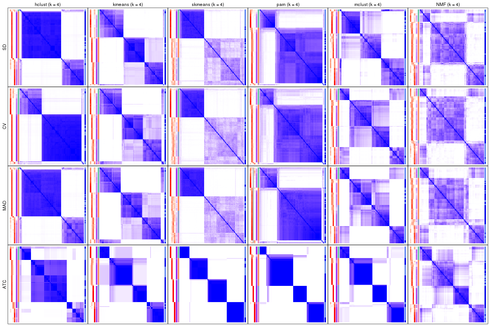
collect_plots(res_list, k = 5, fun = consensus_heatmap, mc.cores = 4)
collect_plots(res_list, k = 6, fun = consensus_heatmap, mc.cores = 4)
Membership heatmaps for all methods. (What is a membership heatmap?)
collect_plots(res_list, k = 2, fun = membership_heatmap, mc.cores = 4)
collect_plots(res_list, k = 3, fun = membership_heatmap, mc.cores = 4)
collect_plots(res_list, k = 4, fun = membership_heatmap, mc.cores = 4)
collect_plots(res_list, k = 5, fun = membership_heatmap, mc.cores = 4)
collect_plots(res_list, k = 6, fun = membership_heatmap, mc.cores = 4)
Signature heatmaps for all methods. (What is a signature heatmap?)
Note in following heatmaps, rows are scaled.
collect_plots(res_list, k = 2, fun = get_signatures, mc.cores = 4)
collect_plots(res_list, k = 3, fun = get_signatures, mc.cores = 4)
collect_plots(res_list, k = 4, fun = get_signatures, mc.cores = 4)
collect_plots(res_list, k = 5, fun = get_signatures, mc.cores = 4)

collect_plots(res_list, k = 6, fun = get_signatures, mc.cores = 4)
The statistics used for measuring the stability of consensus partitioning. (How are they defined?)
get_stats(res_list, k = 2)
#> k 1-PAC mean_silhouette concordance area_increased Rand Jaccard
#> SD:NMF 2 1.000 0.981 0.991 0.481 0.523 0.523
#> CV:NMF 2 1.000 0.988 0.994 0.479 0.523 0.523
#> MAD:NMF 2 1.000 0.991 0.996 0.479 0.523 0.523
#> ATC:NMF 2 0.971 0.939 0.975 0.459 0.537 0.537
#> SD:skmeans 2 1.000 0.978 0.991 0.481 0.523 0.523
#> CV:skmeans 2 1.000 0.978 0.990 0.482 0.523 0.523
#> MAD:skmeans 2 1.000 0.991 0.996 0.479 0.523 0.523
#> ATC:skmeans 2 1.000 0.978 0.990 0.482 0.517 0.517
#> SD:mclust 2 1.000 0.985 0.989 0.476 0.523 0.523
#> CV:mclust 2 1.000 0.988 0.988 0.473 0.523 0.523
#> MAD:mclust 2 1.000 1.000 1.000 0.478 0.523 0.523
#> ATC:mclust 2 1.000 0.973 0.989 0.485 0.517 0.517
#> SD:kmeans 2 1.000 0.993 0.997 0.478 0.523 0.523
#> CV:kmeans 2 1.000 0.993 0.997 0.477 0.523 0.523
#> MAD:kmeans 2 1.000 1.000 1.000 0.478 0.523 0.523
#> ATC:kmeans 2 1.000 0.982 0.992 0.403 0.605 0.605
#> SD:pam 2 0.785 0.884 0.941 0.397 0.617 0.617
#> CV:pam 2 0.363 0.853 0.865 0.396 0.630 0.630
#> MAD:pam 2 0.893 0.923 0.967 0.419 0.582 0.582
#> ATC:pam 2 1.000 0.999 1.000 0.396 0.605 0.605
#> SD:hclust 2 1.000 0.983 0.986 0.474 0.523 0.523
#> CV:hclust 2 1.000 0.981 0.982 0.469 0.523 0.523
#> MAD:hclust 2 1.000 0.985 0.987 0.475 0.523 0.523
#> ATC:hclust 2 1.000 0.979 0.988 0.383 0.605 0.605
get_stats(res_list, k = 3)
#> k 1-PAC mean_silhouette concordance area_increased Rand Jaccard
#> SD:NMF 3 0.524 0.701 0.796 0.2723 0.920 0.849
#> CV:NMF 3 0.471 0.606 0.795 0.2682 0.991 0.982
#> MAD:NMF 3 0.519 0.642 0.786 0.2742 0.984 0.970
#> ATC:NMF 3 0.742 0.845 0.923 0.4283 0.725 0.524
#> SD:skmeans 3 0.617 0.752 0.855 0.3860 0.809 0.635
#> CV:skmeans 3 0.620 0.669 0.814 0.3852 0.807 0.631
#> MAD:skmeans 3 0.632 0.622 0.807 0.3896 0.812 0.640
#> ATC:skmeans 3 0.999 0.973 0.987 0.3894 0.686 0.460
#> SD:mclust 3 0.785 0.885 0.915 0.3726 0.806 0.629
#> CV:mclust 3 0.634 0.768 0.812 0.3164 0.812 0.640
#> MAD:mclust 3 0.692 0.715 0.844 0.3505 0.805 0.628
#> ATC:mclust 3 0.955 0.922 0.968 0.3614 0.786 0.602
#> SD:kmeans 3 0.718 0.929 0.839 0.3020 0.806 0.629
#> CV:kmeans 3 0.683 0.325 0.760 0.2585 0.969 0.942
#> MAD:kmeans 3 0.618 0.483 0.746 0.2893 0.883 0.777
#> ATC:kmeans 3 0.733 0.858 0.898 0.5687 0.732 0.557
#> SD:pam 3 0.491 0.785 0.873 0.1830 0.994 0.990
#> CV:pam 3 0.365 0.782 0.851 0.1287 0.994 0.991
#> MAD:pam 3 0.678 0.829 0.907 0.1356 0.993 0.988
#> ATC:pam 3 1.000 0.969 0.987 0.5869 0.774 0.626
#> SD:hclust 3 0.925 0.890 0.946 0.0783 0.991 0.982
#> CV:hclust 3 0.924 0.923 0.961 0.0632 0.991 0.982
#> MAD:hclust 3 0.894 0.915 0.946 0.0745 0.991 0.982
#> ATC:hclust 3 0.873 0.911 0.945 0.5442 0.800 0.669
get_stats(res_list, k = 4)
#> k 1-PAC mean_silhouette concordance area_increased Rand Jaccard
#> SD:NMF 4 0.443 0.441 0.719 0.1348 0.894 0.776
#> CV:NMF 4 0.434 0.425 0.683 0.1370 0.894 0.796
#> MAD:NMF 4 0.439 0.454 0.655 0.1472 0.861 0.726
#> ATC:NMF 4 0.538 0.640 0.772 0.1129 0.766 0.438
#> SD:skmeans 4 0.599 0.575 0.719 0.1010 0.947 0.845
#> CV:skmeans 4 0.572 0.513 0.669 0.1030 0.936 0.812
#> MAD:skmeans 4 0.614 0.564 0.706 0.1004 0.906 0.732
#> ATC:skmeans 4 1.000 0.984 0.993 0.1154 0.884 0.670
#> SD:mclust 4 0.575 0.504 0.798 0.0812 0.982 0.945
#> CV:mclust 4 0.529 0.643 0.751 0.1191 0.899 0.711
#> MAD:mclust 4 0.583 0.657 0.774 0.1093 0.885 0.673
#> ATC:mclust 4 0.893 0.923 0.951 0.1162 0.918 0.762
#> SD:kmeans 4 0.597 0.698 0.824 0.1278 0.991 0.971
#> CV:kmeans 4 0.529 0.710 0.797 0.1527 0.783 0.571
#> MAD:kmeans 4 0.546 0.668 0.788 0.1358 0.807 0.569
#> ATC:kmeans 4 0.797 0.901 0.898 0.1299 0.830 0.557
#> SD:pam 4 0.438 0.730 0.851 0.0493 0.969 0.951
#> CV:pam 4 0.342 0.770 0.839 0.0421 0.994 0.991
#> MAD:pam 4 0.578 0.763 0.861 0.0695 0.974 0.955
#> ATC:pam 4 0.968 0.946 0.977 0.1395 0.914 0.774
#> SD:hclust 4 0.898 0.813 0.914 0.0475 0.982 0.966
#> CV:hclust 4 0.883 0.766 0.912 0.0696 0.982 0.965
#> MAD:hclust 4 0.823 0.795 0.888 0.0851 0.982 0.966
#> ATC:hclust 4 0.752 0.829 0.863 0.0905 0.971 0.928
get_stats(res_list, k = 5)
#> k 1-PAC mean_silhouette concordance area_increased Rand Jaccard
#> SD:NMF 5 0.443 0.346 0.611 0.0853 0.940 0.846
#> CV:NMF 5 0.425 0.275 0.573 0.0970 0.855 0.676
#> MAD:NMF 5 0.453 0.355 0.622 0.0850 0.826 0.578
#> ATC:NMF 5 0.541 0.571 0.732 0.0569 0.971 0.889
#> SD:skmeans 5 0.492 0.441 0.614 0.0642 0.945 0.832
#> CV:skmeans 5 0.470 0.465 0.593 0.0662 0.969 0.896
#> MAD:skmeans 5 0.486 0.507 0.630 0.0651 0.992 0.971
#> ATC:skmeans 5 0.892 0.803 0.908 0.0530 0.955 0.827
#> SD:mclust 5 0.630 0.656 0.811 0.0714 0.877 0.633
#> CV:mclust 5 0.547 0.570 0.770 0.0787 0.956 0.837
#> MAD:mclust 5 0.629 0.552 0.742 0.0580 0.905 0.682
#> ATC:mclust 5 0.952 0.925 0.969 0.0301 0.982 0.933
#> SD:kmeans 5 0.634 0.631 0.791 0.0676 0.938 0.806
#> CV:kmeans 5 0.536 0.700 0.761 0.0722 0.974 0.914
#> MAD:kmeans 5 0.602 0.492 0.701 0.0856 0.951 0.839
#> ATC:kmeans 5 0.876 0.802 0.892 0.0762 0.994 0.979
#> SD:pam 5 0.427 0.732 0.842 0.0300 1.000 1.000
#> CV:pam 5 0.311 0.764 0.831 0.0265 1.000 1.000
#> MAD:pam 5 0.539 0.648 0.848 0.0348 0.999 0.998
#> ATC:pam 5 0.954 0.932 0.973 0.0283 0.978 0.925
#> SD:hclust 5 0.814 0.781 0.886 0.0550 0.991 0.982
#> CV:hclust 5 0.845 0.754 0.886 0.0452 0.969 0.939
#> MAD:hclust 5 0.571 0.750 0.835 0.0748 0.991 0.982
#> ATC:hclust 5 0.769 0.800 0.816 0.1098 0.816 0.538
get_stats(res_list, k = 6)
#> k 1-PAC mean_silhouette concordance area_increased Rand Jaccard
#> SD:NMF 6 0.455 0.317 0.541 0.0547 0.856 0.591
#> CV:NMF 6 0.461 0.296 0.538 0.0556 0.773 0.410
#> MAD:NMF 6 0.484 0.352 0.531 0.0593 0.853 0.520
#> ATC:NMF 6 0.589 0.459 0.682 0.0450 0.933 0.755
#> SD:skmeans 6 0.502 0.384 0.554 0.0447 0.911 0.723
#> CV:skmeans 6 0.486 0.409 0.523 0.0456 0.957 0.852
#> MAD:skmeans 6 0.493 0.407 0.550 0.0458 0.970 0.894
#> ATC:skmeans 6 0.861 0.709 0.845 0.0324 0.978 0.902
#> SD:mclust 6 0.739 0.711 0.845 0.0314 0.969 0.869
#> CV:mclust 6 0.603 0.658 0.779 0.0314 0.946 0.794
#> MAD:mclust 6 0.641 0.564 0.750 0.0462 0.915 0.701
#> ATC:mclust 6 0.904 0.852 0.935 0.0644 0.930 0.722
#> SD:kmeans 6 0.675 0.449 0.724 0.0480 0.960 0.862
#> CV:kmeans 6 0.600 0.569 0.744 0.0505 0.975 0.912
#> MAD:kmeans 6 0.637 0.439 0.708 0.0383 0.944 0.794
#> ATC:kmeans 6 0.821 0.787 0.862 0.0445 0.939 0.764
#> SD:pam 6 0.452 0.662 0.833 0.0280 0.981 0.969
#> CV:pam 6 0.366 0.645 0.829 0.0197 0.976 0.961
#> MAD:pam 6 0.531 0.628 0.834 0.0254 0.982 0.968
#> ATC:pam 6 0.957 0.915 0.962 0.0892 0.930 0.741
#> SD:hclust 6 0.577 0.687 0.822 0.0942 0.964 0.927
#> CV:hclust 6 0.748 0.746 0.870 0.0467 1.000 0.999
#> MAD:hclust 6 0.510 0.606 0.791 0.0687 0.975 0.950
#> ATC:hclust 6 0.925 0.874 0.922 0.0903 0.982 0.923
Following heatmap plots the partition for each combination of methods and the lightness correspond to the silhouette scores for samples in each method. On top the consensus subgroup is inferred from all methods by taking the mean silhouette scores as weight.
collect_stats(res_list, k = 2)
collect_stats(res_list, k = 3)
collect_stats(res_list, k = 4)
collect_stats(res_list, k = 5)
collect_stats(res_list, k = 6)
Collect partitions from all methods:
collect_classes(res_list, k = 2)
collect_classes(res_list, k = 3)

collect_classes(res_list, k = 4)
collect_classes(res_list, k = 5)
collect_classes(res_list, k = 6)

Overlap of top rows from different top-row methods:
top_rows_overlap(res_list, top_n = 1000, method = "euler")
top_rows_overlap(res_list, top_n = 2000, method = "euler")
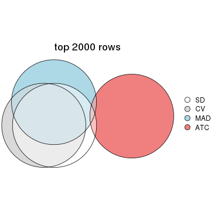
top_rows_overlap(res_list, top_n = 3000, method = "euler")
top_rows_overlap(res_list, top_n = 4000, method = "euler")
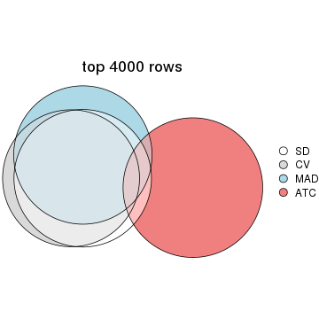
top_rows_overlap(res_list, top_n = 5000, method = "euler")
Also visualize the correspondance of rankings between different top-row methods:
top_rows_overlap(res_list, top_n = 1000, method = "correspondance")
top_rows_overlap(res_list, top_n = 2000, method = "correspondance")
top_rows_overlap(res_list, top_n = 3000, method = "correspondance")
top_rows_overlap(res_list, top_n = 4000, method = "correspondance")
top_rows_overlap(res_list, top_n = 5000, method = "correspondance")

Heatmaps of the top rows:
top_rows_heatmap(res_list, top_n = 1000)
top_rows_heatmap(res_list, top_n = 2000)
top_rows_heatmap(res_list, top_n = 3000)
top_rows_heatmap(res_list, top_n = 4000)
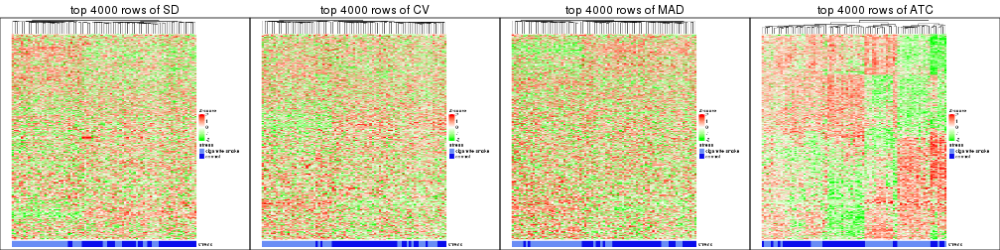
top_rows_heatmap(res_list, top_n = 5000)

Test correlation between subgroups and known annotations. If the known annotation is numeric, one-way ANOVA test is applied, and if the known annotation is discrete, chi-squared contingency table test is applied.
test_to_known_factors(res_list, k = 2)
#> n stress(p) k
#> SD:NMF 79 4.00e-09 2
#> CV:NMF 79 4.00e-09 2
#> MAD:NMF 79 4.00e-09 2
#> ATC:NMF 77 3.21e-04 2
#> SD:skmeans 78 5.94e-09 2
#> CV:skmeans 78 5.94e-09 2
#> MAD:skmeans 79 4.00e-09 2
#> ATC:skmeans 79 2.25e-05 2
#> SD:mclust 79 4.00e-09 2
#> CV:mclust 79 4.00e-09 2
#> MAD:mclust 79 4.00e-09 2
#> ATC:mclust 78 2.81e-08 2
#> SD:kmeans 79 4.00e-09 2
#> CV:kmeans 79 4.00e-09 2
#> MAD:kmeans 79 4.00e-09 2
#> ATC:kmeans 78 7.12e-03 2
#> SD:pam 76 2.49e-06 2
#> CV:pam 78 1.36e-05 2
#> MAD:pam 76 3.30e-07 2
#> ATC:pam 79 8.93e-03 2
#> SD:hclust 79 4.00e-09 2
#> CV:hclust 79 4.00e-09 2
#> MAD:hclust 79 4.00e-09 2
#> ATC:hclust 79 8.93e-03 2
test_to_known_factors(res_list, k = 3)
#> n stress(p) k
#> SD:NMF 67 1.82e-07 3
#> CV:NMF 64 2.34e-07 3
#> MAD:NMF 73 2.87e-09 3
#> ATC:NMF 75 9.79e-09 3
#> SD:skmeans 69 5.05e-11 3
#> CV:skmeans 62 8.82e-10 3
#> MAD:skmeans 50 5.45e-09 3
#> ATC:skmeans 79 6.20e-09 3
#> SD:mclust 77 4.78e-11 3
#> CV:mclust 73 6.11e-10 3
#> MAD:mclust 70 1.61e-09 3
#> ATC:mclust 76 8.40e-10 3
#> SD:kmeans 79 9.55e-11 3
#> CV:kmeans 41 5.63e-04 3
#> MAD:kmeans 63 3.35e-07 3
#> ATC:kmeans 77 4.41e-08 3
#> SD:pam 73 1.37e-05 3
#> CV:pam 73 3.61e-05 3
#> MAD:pam 74 7.76e-07 3
#> ATC:pam 77 6.12e-06 3
#> SD:hclust 76 1.90e-08 3
#> CV:hclust 77 1.12e-08 3
#> MAD:hclust 77 1.12e-08 3
#> ATC:hclust 77 5.70e-07 3
test_to_known_factors(res_list, k = 4)
#> n stress(p) k
#> SD:NMF 41 2.95e-05 4
#> CV:NMF 36 1.95e-04 4
#> MAD:NMF 40 1.20e-05 4
#> ATC:NMF 64 2.12e-06 4
#> SD:skmeans 41 1.09e-07 4
#> CV:skmeans 28 NA 4
#> MAD:skmeans 31 1.66e-01 4
#> ATC:skmeans 79 4.52e-09 4
#> SD:mclust 50 1.76e-05 4
#> CV:mclust 66 6.32e-08 4
#> MAD:mclust 68 1.19e-08 4
#> ATC:mclust 77 9.62e-08 4
#> SD:kmeans 66 1.25e-09 4
#> CV:kmeans 73 1.79e-10 4
#> MAD:kmeans 68 1.75e-08 4
#> ATC:kmeans 78 7.32e-08 4
#> SD:pam 70 1.13e-05 4
#> CV:pam 73 3.19e-05 4
#> MAD:pam 72 1.16e-07 4
#> ATC:pam 76 8.94e-07 4
#> SD:hclust 71 6.58e-09 4
#> CV:hclust 66 1.22e-07 4
#> MAD:hclust 72 2.71e-08 4
#> ATC:hclust 75 2.05e-08 4
test_to_known_factors(res_list, k = 5)
#> n stress(p) k
#> SD:NMF 25 4.09e-04 5
#> CV:NMF 11 NA 5
#> MAD:NMF 16 1.13e-03 5
#> ATC:NMF 61 4.21e-07 5
#> SD:skmeans 28 NA 5
#> CV:skmeans 28 NA 5
#> MAD:skmeans 30 NA 5
#> ATC:skmeans 70 7.90e-08 5
#> SD:mclust 66 2.68e-07 5
#> CV:mclust 58 2.48e-06 5
#> MAD:mclust 60 1.12e-06 5
#> ATC:mclust 76 1.47e-08 5
#> SD:kmeans 62 4.56e-07 5
#> CV:kmeans 71 1.57e-09 5
#> MAD:kmeans 51 4.79e-07 5
#> ATC:kmeans 73 1.46e-07 5
#> SD:pam 69 7.59e-06 5
#> CV:pam 72 5.76e-05 5
#> MAD:pam 66 1.33e-06 5
#> ATC:pam 76 2.79e-07 5
#> SD:hclust 66 1.22e-07 5
#> CV:hclust 68 7.62e-08 5
#> MAD:hclust 69 2.04e-08 5
#> ATC:hclust 75 1.27e-08 5
test_to_known_factors(res_list, k = 6)
#> n stress(p) k
#> SD:NMF 10 1.23e-02 6
#> CV:NMF 2 NA 6
#> MAD:NMF 16 1.13e-03 6
#> ATC:NMF 38 4.74e-06 6
#> SD:skmeans 28 NA 6
#> CV:skmeans 28 NA 6
#> MAD:skmeans 30 NA 6
#> ATC:skmeans 66 3.88e-07 6
#> SD:mclust 68 5.19e-07 6
#> CV:mclust 67 3.97e-07 6
#> MAD:mclust 59 3.02e-06 6
#> ATC:mclust 73 4.42e-09 6
#> SD:kmeans 41 2.22e-03 6
#> CV:kmeans 60 1.85e-07 6
#> MAD:kmeans 46 1.92e-05 6
#> ATC:kmeans 73 2.29e-09 6
#> SD:pam 68 9.71e-06 6
#> CV:pam 68 1.44e-05 6
#> MAD:pam 63 9.92e-06 6
#> ATC:pam 75 5.63e-07 6
#> SD:hclust 68 3.43e-07 6
#> CV:hclust 66 1.22e-07 6
#> MAD:hclust 63 2.70e-07 6
#> ATC:hclust 77 1.81e-08 6
The object with results only for a single top-value method and a single partition method can be extracted as:
res = res_list["SD", "hclust"]
# you can also extract it by
# res = res_list["SD:hclust"]
A summary of res and all the functions that can be applied to it:
res
#> A 'ConsensusPartition' object with k = 2, 3, 4, 5, 6.
#> On a matrix with 21168 rows and 79 columns.
#> Top rows (1000, 2000, 3000, 4000, 5000) are extracted by 'SD' method.
#> Subgroups are detected by 'hclust' method.
#> Performed in total 1250 partitions by row resampling.
#> Best k for subgroups seems to be 2.
#>
#> Following methods can be applied to this 'ConsensusPartition' object:
#> [1] "cola_report" "collect_classes" "collect_plots"
#> [4] "collect_stats" "colnames" "compare_signatures"
#> [7] "consensus_heatmap" "dimension_reduction" "functional_enrichment"
#> [10] "get_anno_col" "get_anno" "get_classes"
#> [13] "get_consensus" "get_matrix" "get_membership"
#> [16] "get_param" "get_signatures" "get_stats"
#> [19] "is_best_k" "is_stable_k" "membership_heatmap"
#> [22] "ncol" "nrow" "plot_ecdf"
#> [25] "rownames" "select_partition_number" "show"
#> [28] "suggest_best_k" "test_to_known_factors"
collect_plots() function collects all the plots made from res for all k (number of partitions)
into one single page to provide an easy and fast comparison between different k.
collect_plots(res)
The plots are:
k and the heatmap of
predicted classes for each k.k.k.k.All the plots in panels can be made by individual functions and they are plotted later in this section.
select_partition_number() produces several plots showing different
statistics for choosing “optimized” k. There are following statistics:
k;k, the area increased is defined as \(A_k - A_{k-1}\).The detailed explanations of these statistics can be found in the cola vignette.
Generally speaking, lower PAC score, higher mean silhouette score or higher
concordance corresponds to better partition. Rand index and Jaccard index
measure how similar the current partition is compared to partition with k-1.
If they are too similar, we won't accept k is better than k-1.
select_partition_number(res)
The numeric values for all these statistics can be obtained by get_stats().
get_stats(res)
#> k 1-PAC mean_silhouette concordance area_increased Rand Jaccard
#> 2 2 1.000 0.983 0.986 0.4745 0.523 0.523
#> 3 3 0.925 0.890 0.946 0.0783 0.991 0.982
#> 4 4 0.898 0.813 0.914 0.0475 0.982 0.966
#> 5 5 0.814 0.781 0.886 0.0550 0.991 0.982
#> 6 6 0.577 0.687 0.822 0.0942 0.964 0.927
suggest_best_k() suggests the best \(k\) based on these statistics. The rules are as follows:
suggest_best_k(res)
#> [1] 2
Following shows the table of the partitions (You need to click the show/hide
code output link to see it). The membership matrix (columns with name p*)
is inferred by
clue::cl_consensus()
function with the SE method. Basically the value in the membership matrix
represents the probability to belong to a certain group. The finall class
label for an item is determined with the group with highest probability it
belongs to.
In get_classes() function, the entropy is calculated from the membership
matrix and the silhouette score is calculated from the consensus matrix.
cbind(get_classes(res, k = 2), get_membership(res, k = 2))
#> class entropy silhouette p1 p2
#> GSM464697 2 0.0000 0.989 0.000 1.000
#> GSM464698 2 0.0376 0.989 0.004 0.996
#> GSM464699 2 0.0000 0.989 0.000 1.000
#> GSM464700 2 0.1184 0.984 0.016 0.984
#> GSM464701 2 0.0000 0.989 0.000 1.000
#> GSM464702 2 0.0000 0.989 0.000 1.000
#> GSM464703 2 0.0000 0.989 0.000 1.000
#> GSM464704 2 0.0000 0.989 0.000 1.000
#> GSM464705 2 0.1414 0.977 0.020 0.980
#> GSM464706 2 0.0938 0.985 0.012 0.988
#> GSM464707 2 0.0376 0.989 0.004 0.996
#> GSM464708 2 0.0000 0.989 0.000 1.000
#> GSM464709 2 0.0672 0.988 0.008 0.992
#> GSM464710 2 0.0000 0.989 0.000 1.000
#> GSM464711 2 0.0938 0.985 0.012 0.988
#> GSM464712 2 0.1633 0.976 0.024 0.976
#> GSM464713 2 0.0000 0.989 0.000 1.000
#> GSM464714 2 0.8499 0.630 0.276 0.724
#> GSM464715 2 0.0000 0.989 0.000 1.000
#> GSM464716 2 0.1184 0.984 0.016 0.984
#> GSM464717 2 0.0672 0.988 0.008 0.992
#> GSM464718 2 0.0672 0.988 0.008 0.992
#> GSM464719 2 0.0376 0.989 0.004 0.996
#> GSM464720 2 0.0376 0.989 0.004 0.996
#> GSM464721 1 0.1184 0.991 0.984 0.016
#> GSM464722 2 0.0938 0.984 0.012 0.988
#> GSM464723 1 0.1184 0.990 0.984 0.016
#> GSM464724 2 0.0000 0.989 0.000 1.000
#> GSM464725 2 0.0672 0.986 0.008 0.992
#> GSM464726 2 0.0000 0.989 0.000 1.000
#> GSM464727 2 0.0672 0.988 0.008 0.992
#> GSM464728 2 0.0000 0.989 0.000 1.000
#> GSM464729 2 0.0000 0.989 0.000 1.000
#> GSM464730 2 0.0000 0.989 0.000 1.000
#> GSM464731 2 0.0000 0.989 0.000 1.000
#> GSM464732 2 0.0376 0.989 0.004 0.996
#> GSM464733 2 0.0672 0.988 0.008 0.992
#> GSM464734 2 0.0672 0.987 0.008 0.992
#> GSM464735 2 0.0000 0.989 0.000 1.000
#> GSM464736 2 0.0672 0.988 0.008 0.992
#> GSM464658 1 0.0938 0.991 0.988 0.012
#> GSM464659 1 0.2043 0.981 0.968 0.032
#> GSM464660 1 0.0672 0.990 0.992 0.008
#> GSM464661 1 0.0000 0.985 1.000 0.000
#> GSM464662 2 0.0376 0.989 0.004 0.996
#> GSM464663 1 0.0938 0.991 0.988 0.012
#> GSM464664 2 0.0938 0.986 0.012 0.988
#> GSM464665 1 0.1633 0.987 0.976 0.024
#> GSM464666 1 0.1184 0.991 0.984 0.016
#> GSM464667 1 0.0938 0.991 0.988 0.012
#> GSM464668 1 0.0938 0.991 0.988 0.012
#> GSM464669 1 0.1414 0.989 0.980 0.020
#> GSM464670 1 0.0938 0.991 0.988 0.012
#> GSM464671 1 0.0672 0.990 0.992 0.008
#> GSM464672 1 0.0938 0.990 0.988 0.012
#> GSM464673 1 0.0672 0.990 0.992 0.008
#> GSM464674 1 0.0672 0.989 0.992 0.008
#> GSM464675 1 0.0672 0.990 0.992 0.008
#> GSM464676 1 0.0672 0.990 0.992 0.008
#> GSM464677 2 0.1414 0.981 0.020 0.980
#> GSM464678 1 0.0938 0.991 0.988 0.012
#> GSM464679 2 0.0376 0.989 0.004 0.996
#> GSM464680 2 0.1414 0.981 0.020 0.980
#> GSM464681 1 0.1184 0.990 0.984 0.016
#> GSM464682 2 0.0672 0.988 0.008 0.992
#> GSM464683 2 0.0376 0.989 0.004 0.996
#> GSM464684 2 0.0376 0.989 0.004 0.996
#> GSM464685 2 0.0938 0.986 0.012 0.988
#> GSM464686 2 0.0672 0.988 0.008 0.992
#> GSM464687 2 0.0376 0.989 0.004 0.996
#> GSM464688 1 0.2603 0.970 0.956 0.044
#> GSM464689 1 0.1184 0.991 0.984 0.016
#> GSM464690 1 0.3274 0.948 0.940 0.060
#> GSM464691 1 0.1633 0.987 0.976 0.024
#> GSM464692 1 0.2236 0.977 0.964 0.036
#> GSM464693 1 0.0938 0.991 0.988 0.012
#> GSM464694 1 0.0672 0.990 0.992 0.008
#> GSM464695 1 0.0938 0.991 0.988 0.012
#> GSM464696 1 0.0938 0.991 0.988 0.012
cbind(get_classes(res, k = 3), get_membership(res, k = 3))
#> class entropy silhouette p1 p2 p3
#> GSM464697 2 0.0000 0.985 0.000 1.000 0.000
#> GSM464698 2 0.0237 0.985 0.004 0.996 0.000
#> GSM464699 2 0.0000 0.985 0.000 1.000 0.000
#> GSM464700 2 0.0983 0.981 0.016 0.980 0.004
#> GSM464701 2 0.0592 0.983 0.000 0.988 0.012
#> GSM464702 2 0.0000 0.985 0.000 1.000 0.000
#> GSM464703 2 0.0237 0.984 0.000 0.996 0.004
#> GSM464704 2 0.0000 0.985 0.000 1.000 0.000
#> GSM464705 2 0.1129 0.974 0.004 0.976 0.020
#> GSM464706 2 0.1015 0.981 0.012 0.980 0.008
#> GSM464707 2 0.0848 0.984 0.008 0.984 0.008
#> GSM464708 2 0.0000 0.985 0.000 1.000 0.000
#> GSM464709 2 0.0848 0.984 0.008 0.984 0.008
#> GSM464710 2 0.0424 0.984 0.000 0.992 0.008
#> GSM464711 2 0.1182 0.977 0.012 0.976 0.012
#> GSM464712 2 0.1031 0.973 0.024 0.976 0.000
#> GSM464713 2 0.0000 0.985 0.000 1.000 0.000
#> GSM464714 2 0.7031 0.591 0.196 0.716 0.088
#> GSM464715 2 0.0237 0.985 0.000 0.996 0.004
#> GSM464716 2 0.1015 0.981 0.012 0.980 0.008
#> GSM464717 2 0.0848 0.984 0.008 0.984 0.008
#> GSM464718 2 0.0848 0.984 0.008 0.984 0.008
#> GSM464719 2 0.0661 0.985 0.004 0.988 0.008
#> GSM464720 2 0.0475 0.985 0.004 0.992 0.004
#> GSM464721 1 0.4796 0.745 0.780 0.000 0.220
#> GSM464722 2 0.1015 0.977 0.008 0.980 0.012
#> GSM464723 1 0.4931 0.733 0.768 0.000 0.232
#> GSM464724 2 0.0000 0.985 0.000 1.000 0.000
#> GSM464725 2 0.0661 0.982 0.004 0.988 0.008
#> GSM464726 2 0.0000 0.985 0.000 1.000 0.000
#> GSM464727 2 0.0848 0.984 0.008 0.984 0.008
#> GSM464728 2 0.0000 0.985 0.000 1.000 0.000
#> GSM464729 2 0.0000 0.985 0.000 1.000 0.000
#> GSM464730 2 0.0000 0.985 0.000 1.000 0.000
#> GSM464731 2 0.0000 0.985 0.000 1.000 0.000
#> GSM464732 2 0.0237 0.985 0.004 0.996 0.000
#> GSM464733 2 0.0424 0.984 0.008 0.992 0.000
#> GSM464734 2 0.1015 0.980 0.008 0.980 0.012
#> GSM464735 2 0.0237 0.985 0.000 0.996 0.004
#> GSM464736 2 0.0661 0.984 0.008 0.988 0.004
#> GSM464658 1 0.1129 0.866 0.976 0.004 0.020
#> GSM464659 1 0.2414 0.857 0.940 0.020 0.040
#> GSM464660 1 0.0747 0.862 0.984 0.000 0.016
#> GSM464661 3 0.4452 0.000 0.192 0.000 0.808
#> GSM464662 2 0.0237 0.985 0.004 0.996 0.000
#> GSM464663 1 0.4062 0.798 0.836 0.000 0.164
#> GSM464664 2 0.0829 0.983 0.012 0.984 0.004
#> GSM464665 1 0.1877 0.863 0.956 0.012 0.032
#> GSM464666 1 0.4555 0.766 0.800 0.000 0.200
#> GSM464667 1 0.1753 0.863 0.952 0.000 0.048
#> GSM464668 1 0.1878 0.864 0.952 0.004 0.044
#> GSM464669 1 0.3482 0.790 0.872 0.000 0.128
#> GSM464670 1 0.1411 0.863 0.964 0.000 0.036
#> GSM464671 1 0.0747 0.862 0.984 0.000 0.016
#> GSM464672 1 0.4842 0.682 0.776 0.000 0.224
#> GSM464673 1 0.3879 0.804 0.848 0.000 0.152
#> GSM464674 1 0.4682 0.744 0.804 0.004 0.192
#> GSM464675 1 0.0892 0.861 0.980 0.000 0.020
#> GSM464676 1 0.0892 0.861 0.980 0.000 0.020
#> GSM464677 2 0.1315 0.976 0.020 0.972 0.008
#> GSM464678 1 0.0424 0.862 0.992 0.000 0.008
#> GSM464679 2 0.0237 0.985 0.004 0.996 0.000
#> GSM464680 2 0.1315 0.976 0.020 0.972 0.008
#> GSM464681 1 0.2066 0.849 0.940 0.000 0.060
#> GSM464682 2 0.0661 0.984 0.008 0.988 0.004
#> GSM464683 2 0.0237 0.985 0.004 0.996 0.000
#> GSM464684 2 0.0475 0.985 0.004 0.992 0.004
#> GSM464685 2 0.1015 0.982 0.012 0.980 0.008
#> GSM464686 2 0.0661 0.984 0.008 0.988 0.004
#> GSM464687 2 0.0475 0.985 0.004 0.992 0.004
#> GSM464688 1 0.1751 0.849 0.960 0.028 0.012
#> GSM464689 1 0.0829 0.865 0.984 0.004 0.012
#> GSM464690 1 0.7641 -0.126 0.520 0.044 0.436
#> GSM464691 1 0.6081 0.396 0.652 0.004 0.344
#> GSM464692 1 0.1620 0.854 0.964 0.024 0.012
#> GSM464693 1 0.0892 0.863 0.980 0.000 0.020
#> GSM464694 1 0.4555 0.766 0.800 0.000 0.200
#> GSM464695 1 0.4452 0.775 0.808 0.000 0.192
#> GSM464696 1 0.1529 0.864 0.960 0.000 0.040
cbind(get_classes(res, k = 4), get_membership(res, k = 4))
#> class entropy silhouette p1 p2 p3 p4
#> GSM464697 2 0.0376 0.979 0.004 0.992 0.004 0.000
#> GSM464698 2 0.0376 0.979 0.000 0.992 0.004 0.004
#> GSM464699 2 0.0469 0.979 0.012 0.988 0.000 0.000
#> GSM464700 2 0.0992 0.978 0.012 0.976 0.004 0.008
#> GSM464701 2 0.1284 0.973 0.012 0.964 0.024 0.000
#> GSM464702 2 0.0804 0.977 0.008 0.980 0.012 0.000
#> GSM464703 2 0.1174 0.973 0.020 0.968 0.012 0.000
#> GSM464704 2 0.0779 0.977 0.004 0.980 0.016 0.000
#> GSM464705 2 0.1356 0.970 0.032 0.960 0.008 0.000
#> GSM464706 2 0.0992 0.978 0.012 0.976 0.004 0.008
#> GSM464707 2 0.0967 0.979 0.016 0.976 0.004 0.004
#> GSM464708 2 0.0336 0.979 0.000 0.992 0.008 0.000
#> GSM464709 2 0.0967 0.979 0.016 0.976 0.004 0.004
#> GSM464710 2 0.1059 0.977 0.012 0.972 0.016 0.000
#> GSM464711 2 0.1520 0.968 0.020 0.956 0.024 0.000
#> GSM464712 2 0.0817 0.971 0.000 0.976 0.000 0.024
#> GSM464713 2 0.0469 0.979 0.012 0.988 0.000 0.000
#> GSM464714 2 0.6254 0.608 0.112 0.704 0.020 0.164
#> GSM464715 2 0.0672 0.979 0.008 0.984 0.008 0.000
#> GSM464716 2 0.1007 0.978 0.008 0.976 0.008 0.008
#> GSM464717 2 0.0657 0.978 0.012 0.984 0.000 0.004
#> GSM464718 2 0.1191 0.978 0.024 0.968 0.004 0.004
#> GSM464719 2 0.0524 0.979 0.008 0.988 0.000 0.004
#> GSM464720 2 0.0524 0.979 0.008 0.988 0.000 0.004
#> GSM464721 4 0.5386 0.452 0.344 0.000 0.024 0.632
#> GSM464722 2 0.1610 0.966 0.032 0.952 0.016 0.000
#> GSM464723 4 0.5386 0.408 0.368 0.000 0.020 0.612
#> GSM464724 2 0.0672 0.978 0.008 0.984 0.008 0.000
#> GSM464725 2 0.1042 0.976 0.020 0.972 0.008 0.000
#> GSM464726 2 0.0927 0.976 0.008 0.976 0.016 0.000
#> GSM464727 2 0.1191 0.978 0.024 0.968 0.004 0.004
#> GSM464728 2 0.0657 0.978 0.004 0.984 0.012 0.000
#> GSM464729 2 0.0804 0.978 0.008 0.980 0.012 0.000
#> GSM464730 2 0.0672 0.978 0.008 0.984 0.008 0.000
#> GSM464731 2 0.0672 0.978 0.008 0.984 0.008 0.000
#> GSM464732 2 0.0376 0.979 0.000 0.992 0.004 0.004
#> GSM464733 2 0.0992 0.978 0.008 0.976 0.012 0.004
#> GSM464734 2 0.1406 0.971 0.016 0.960 0.024 0.000
#> GSM464735 2 0.1042 0.978 0.020 0.972 0.008 0.000
#> GSM464736 2 0.0844 0.979 0.012 0.980 0.004 0.004
#> GSM464658 4 0.1229 0.758 0.020 0.004 0.008 0.968
#> GSM464659 4 0.2335 0.746 0.044 0.020 0.008 0.928
#> GSM464660 4 0.1305 0.747 0.036 0.000 0.004 0.960
#> GSM464661 3 0.2032 0.000 0.028 0.000 0.936 0.036
#> GSM464662 2 0.0376 0.979 0.000 0.992 0.004 0.004
#> GSM464663 4 0.4983 0.557 0.272 0.000 0.024 0.704
#> GSM464664 2 0.0967 0.977 0.016 0.976 0.004 0.004
#> GSM464665 4 0.2271 0.752 0.052 0.012 0.008 0.928
#> GSM464666 4 0.5062 0.501 0.284 0.000 0.024 0.692
#> GSM464667 4 0.1902 0.754 0.064 0.000 0.004 0.932
#> GSM464668 4 0.1847 0.757 0.052 0.004 0.004 0.940
#> GSM464669 4 0.5013 0.152 0.292 0.000 0.020 0.688
#> GSM464670 4 0.1576 0.755 0.048 0.000 0.004 0.948
#> GSM464671 4 0.1109 0.745 0.028 0.000 0.004 0.968
#> GSM464672 1 0.6082 0.284 0.480 0.000 0.044 0.476
#> GSM464673 4 0.5221 0.575 0.208 0.000 0.060 0.732
#> GSM464674 4 0.5839 0.349 0.200 0.000 0.104 0.696
#> GSM464675 4 0.0707 0.749 0.020 0.000 0.000 0.980
#> GSM464676 4 0.0707 0.749 0.020 0.000 0.000 0.980
#> GSM464677 2 0.1182 0.973 0.016 0.968 0.000 0.016
#> GSM464678 4 0.1109 0.748 0.028 0.000 0.004 0.968
#> GSM464679 2 0.0376 0.979 0.000 0.992 0.004 0.004
#> GSM464680 2 0.1182 0.974 0.016 0.968 0.000 0.016
#> GSM464681 4 0.3032 0.658 0.124 0.000 0.008 0.868
#> GSM464682 2 0.0657 0.978 0.012 0.984 0.000 0.004
#> GSM464683 2 0.0376 0.979 0.000 0.992 0.004 0.004
#> GSM464684 2 0.0524 0.979 0.008 0.988 0.000 0.004
#> GSM464685 2 0.0937 0.977 0.012 0.976 0.000 0.012
#> GSM464686 2 0.0657 0.978 0.012 0.984 0.000 0.004
#> GSM464687 2 0.0376 0.979 0.004 0.992 0.000 0.004
#> GSM464688 4 0.1388 0.733 0.012 0.028 0.000 0.960
#> GSM464689 4 0.0712 0.755 0.008 0.004 0.004 0.984
#> GSM464690 1 0.8117 0.199 0.388 0.008 0.268 0.336
#> GSM464691 4 0.7344 -0.461 0.316 0.000 0.180 0.504
#> GSM464692 4 0.1362 0.743 0.012 0.020 0.004 0.964
#> GSM464693 4 0.1022 0.757 0.032 0.000 0.000 0.968
#> GSM464694 4 0.5732 0.517 0.264 0.000 0.064 0.672
#> GSM464695 4 0.4978 0.507 0.324 0.000 0.012 0.664
#> GSM464696 4 0.2060 0.756 0.052 0.000 0.016 0.932
cbind(get_classes(res, k = 5), get_membership(res, k = 5))
#> class entropy silhouette p1 p2 p3 p4 p5
#> GSM464697 3 0.1717 0.956 0.008 0.052 0.936 0.000 0.004
#> GSM464698 3 0.0510 0.961 0.000 0.016 0.984 0.000 0.000
#> GSM464699 3 0.1800 0.948 0.020 0.048 0.932 0.000 0.000
#> GSM464700 3 0.1202 0.962 0.004 0.032 0.960 0.004 0.000
#> GSM464701 3 0.2295 0.935 0.008 0.088 0.900 0.000 0.004
#> GSM464702 3 0.1121 0.959 0.000 0.044 0.956 0.000 0.000
#> GSM464703 3 0.1924 0.950 0.008 0.064 0.924 0.000 0.004
#> GSM464704 3 0.1704 0.949 0.000 0.068 0.928 0.000 0.004
#> GSM464705 3 0.2879 0.905 0.032 0.100 0.868 0.000 0.000
#> GSM464706 3 0.0992 0.962 0.000 0.024 0.968 0.008 0.000
#> GSM464707 3 0.1043 0.962 0.000 0.040 0.960 0.000 0.000
#> GSM464708 3 0.1205 0.959 0.000 0.040 0.956 0.000 0.004
#> GSM464709 3 0.0794 0.962 0.000 0.028 0.972 0.000 0.000
#> GSM464710 3 0.1892 0.947 0.000 0.080 0.916 0.000 0.004
#> GSM464711 3 0.2520 0.930 0.012 0.096 0.888 0.000 0.004
#> GSM464712 3 0.1012 0.958 0.000 0.012 0.968 0.020 0.000
#> GSM464713 3 0.1943 0.944 0.020 0.056 0.924 0.000 0.000
#> GSM464714 3 0.6738 0.561 0.092 0.100 0.648 0.140 0.020
#> GSM464715 3 0.1121 0.961 0.000 0.044 0.956 0.000 0.000
#> GSM464716 3 0.0932 0.962 0.000 0.020 0.972 0.004 0.004
#> GSM464717 3 0.0609 0.960 0.000 0.020 0.980 0.000 0.000
#> GSM464718 3 0.1740 0.955 0.012 0.056 0.932 0.000 0.000
#> GSM464719 3 0.0703 0.962 0.000 0.024 0.976 0.000 0.000
#> GSM464720 3 0.0671 0.960 0.004 0.016 0.980 0.000 0.000
#> GSM464721 4 0.6898 0.252 0.308 0.192 0.000 0.480 0.020
#> GSM464722 3 0.2825 0.913 0.016 0.124 0.860 0.000 0.000
#> GSM464723 4 0.6954 0.205 0.332 0.192 0.000 0.456 0.020
#> GSM464724 3 0.1410 0.956 0.000 0.060 0.940 0.000 0.000
#> GSM464725 3 0.1628 0.954 0.008 0.056 0.936 0.000 0.000
#> GSM464726 3 0.1197 0.958 0.000 0.048 0.952 0.000 0.000
#> GSM464727 3 0.1557 0.959 0.008 0.052 0.940 0.000 0.000
#> GSM464728 3 0.0880 0.960 0.000 0.032 0.968 0.000 0.000
#> GSM464729 3 0.1341 0.957 0.000 0.056 0.944 0.000 0.000
#> GSM464730 3 0.1043 0.961 0.000 0.040 0.960 0.000 0.000
#> GSM464731 3 0.1121 0.960 0.000 0.044 0.956 0.000 0.000
#> GSM464732 3 0.0510 0.961 0.000 0.016 0.984 0.000 0.000
#> GSM464733 3 0.1864 0.953 0.000 0.068 0.924 0.004 0.004
#> GSM464734 3 0.2237 0.938 0.008 0.084 0.904 0.000 0.004
#> GSM464735 3 0.1670 0.958 0.012 0.052 0.936 0.000 0.000
#> GSM464736 3 0.1205 0.963 0.004 0.040 0.956 0.000 0.000
#> GSM464658 4 0.1363 0.729 0.032 0.004 0.004 0.956 0.004
#> GSM464659 4 0.2248 0.720 0.032 0.020 0.020 0.924 0.004
#> GSM464660 4 0.1205 0.717 0.040 0.004 0.000 0.956 0.000
#> GSM464661 5 0.0290 0.000 0.008 0.000 0.000 0.000 0.992
#> GSM464662 3 0.0510 0.961 0.000 0.016 0.984 0.000 0.000
#> GSM464663 4 0.6602 0.389 0.240 0.176 0.000 0.560 0.024
#> GSM464664 3 0.0992 0.962 0.008 0.024 0.968 0.000 0.000
#> GSM464665 4 0.2312 0.724 0.032 0.032 0.012 0.920 0.004
#> GSM464666 4 0.6518 0.252 0.284 0.172 0.000 0.532 0.012
#> GSM464667 4 0.2228 0.721 0.048 0.040 0.000 0.912 0.000
#> GSM464668 4 0.1903 0.728 0.028 0.028 0.004 0.936 0.004
#> GSM464669 4 0.5142 -0.114 0.348 0.052 0.000 0.600 0.000
#> GSM464670 4 0.1668 0.726 0.028 0.032 0.000 0.940 0.000
#> GSM464671 4 0.1282 0.717 0.044 0.004 0.000 0.952 0.000
#> GSM464672 1 0.4290 0.000 0.680 0.016 0.000 0.304 0.000
#> GSM464673 4 0.6686 0.437 0.176 0.156 0.000 0.604 0.064
#> GSM464674 4 0.6126 0.224 0.056 0.256 0.004 0.628 0.056
#> GSM464675 4 0.0955 0.719 0.028 0.004 0.000 0.968 0.000
#> GSM464676 4 0.0955 0.719 0.028 0.004 0.000 0.968 0.000
#> GSM464677 3 0.1173 0.958 0.004 0.020 0.964 0.012 0.000
#> GSM464678 4 0.1331 0.716 0.040 0.008 0.000 0.952 0.000
#> GSM464679 3 0.0510 0.961 0.000 0.016 0.984 0.000 0.000
#> GSM464680 3 0.1106 0.959 0.000 0.024 0.964 0.012 0.000
#> GSM464681 4 0.2997 0.610 0.148 0.012 0.000 0.840 0.000
#> GSM464682 3 0.0671 0.960 0.004 0.016 0.980 0.000 0.000
#> GSM464683 3 0.0510 0.961 0.000 0.016 0.984 0.000 0.000
#> GSM464684 3 0.0566 0.961 0.004 0.012 0.984 0.000 0.000
#> GSM464685 3 0.0960 0.961 0.004 0.016 0.972 0.008 0.000
#> GSM464686 3 0.1041 0.961 0.004 0.032 0.964 0.000 0.000
#> GSM464687 3 0.0404 0.960 0.000 0.012 0.988 0.000 0.000
#> GSM464688 4 0.1493 0.709 0.024 0.000 0.028 0.948 0.000
#> GSM464689 4 0.0932 0.726 0.020 0.004 0.004 0.972 0.000
#> GSM464690 2 0.6105 0.412 0.040 0.648 0.004 0.216 0.092
#> GSM464691 2 0.7321 0.390 0.084 0.436 0.000 0.372 0.108
#> GSM464692 4 0.1471 0.717 0.024 0.004 0.020 0.952 0.000
#> GSM464693 4 0.1179 0.730 0.016 0.016 0.000 0.964 0.004
#> GSM464694 4 0.7079 0.381 0.212 0.168 0.000 0.552 0.068
#> GSM464695 4 0.6459 0.354 0.280 0.180 0.000 0.532 0.008
#> GSM464696 4 0.2139 0.725 0.056 0.012 0.000 0.920 0.012
cbind(get_classes(res, k = 6), get_membership(res, k = 6))
#> class entropy silhouette p1 p2 p3 p4 p5 p6
#> GSM464697 2 0.2969 0.8456 0.000 0.776 0.000 0.000 0.000 NA
#> GSM464698 2 0.0790 0.8924 0.000 0.968 0.000 0.000 0.000 NA
#> GSM464699 2 0.3547 0.7374 0.000 0.696 0.004 0.000 0.000 NA
#> GSM464700 2 0.1493 0.8963 0.000 0.936 0.004 0.004 0.000 NA
#> GSM464701 2 0.3290 0.8069 0.000 0.744 0.004 0.000 0.000 NA
#> GSM464702 2 0.2219 0.8814 0.000 0.864 0.000 0.000 0.000 NA
#> GSM464703 2 0.2989 0.8675 0.004 0.812 0.008 0.000 0.000 NA
#> GSM464704 2 0.2597 0.8652 0.000 0.824 0.000 0.000 0.000 NA
#> GSM464705 2 0.4172 0.4272 0.000 0.528 0.012 0.000 0.000 NA
#> GSM464706 2 0.1398 0.8952 0.000 0.940 0.000 0.008 0.000 NA
#> GSM464707 2 0.1908 0.8916 0.000 0.900 0.004 0.000 0.000 NA
#> GSM464708 2 0.2178 0.8825 0.000 0.868 0.000 0.000 0.000 NA
#> GSM464709 2 0.1267 0.8967 0.000 0.940 0.000 0.000 0.000 NA
#> GSM464710 2 0.2854 0.8499 0.000 0.792 0.000 0.000 0.000 NA
#> GSM464711 2 0.3490 0.7814 0.000 0.724 0.008 0.000 0.000 NA
#> GSM464712 2 0.1408 0.8947 0.000 0.944 0.000 0.020 0.000 NA
#> GSM464713 2 0.3584 0.7117 0.000 0.688 0.004 0.000 0.000 NA
#> GSM464714 2 0.7002 0.1397 0.000 0.428 0.148 0.112 0.000 NA
#> GSM464715 2 0.1863 0.8899 0.000 0.896 0.000 0.000 0.000 NA
#> GSM464716 2 0.1674 0.8943 0.000 0.924 0.004 0.004 0.000 NA
#> GSM464717 2 0.1141 0.8920 0.000 0.948 0.000 0.000 0.000 NA
#> GSM464718 2 0.2762 0.8450 0.000 0.804 0.000 0.000 0.000 NA
#> GSM464719 2 0.1471 0.8963 0.000 0.932 0.004 0.000 0.000 NA
#> GSM464720 2 0.0865 0.8924 0.000 0.964 0.000 0.000 0.000 NA
#> GSM464721 3 0.4300 0.7542 0.000 0.000 0.608 0.364 0.000 NA
#> GSM464722 2 0.3992 0.6723 0.000 0.624 0.012 0.000 0.000 NA
#> GSM464723 3 0.5010 0.7413 0.016 0.000 0.600 0.340 0.008 NA
#> GSM464724 2 0.1958 0.8929 0.000 0.896 0.004 0.000 0.000 NA
#> GSM464725 2 0.3337 0.8118 0.000 0.736 0.004 0.000 0.000 NA
#> GSM464726 2 0.2219 0.8795 0.000 0.864 0.000 0.000 0.000 NA
#> GSM464727 2 0.2378 0.8659 0.000 0.848 0.000 0.000 0.000 NA
#> GSM464728 2 0.2048 0.8847 0.000 0.880 0.000 0.000 0.000 NA
#> GSM464729 2 0.2416 0.8777 0.000 0.844 0.000 0.000 0.000 NA
#> GSM464730 2 0.2006 0.8925 0.000 0.892 0.004 0.000 0.000 NA
#> GSM464731 2 0.2053 0.8865 0.000 0.888 0.004 0.000 0.000 NA
#> GSM464732 2 0.0713 0.8923 0.000 0.972 0.000 0.000 0.000 NA
#> GSM464733 2 0.2243 0.8892 0.000 0.880 0.004 0.004 0.000 NA
#> GSM464734 2 0.3073 0.8384 0.000 0.788 0.008 0.000 0.000 NA
#> GSM464735 2 0.2793 0.8548 0.000 0.800 0.000 0.000 0.000 NA
#> GSM464736 2 0.1444 0.8905 0.000 0.928 0.000 0.000 0.000 NA
#> GSM464658 4 0.1429 0.6999 0.004 0.004 0.052 0.940 0.000 NA
#> GSM464659 4 0.1982 0.6916 0.000 0.016 0.068 0.912 0.000 NA
#> GSM464660 4 0.1092 0.7082 0.020 0.000 0.020 0.960 0.000 NA
#> GSM464661 5 0.0146 0.0000 0.000 0.000 0.004 0.000 0.996 NA
#> GSM464662 2 0.0713 0.8923 0.000 0.972 0.000 0.000 0.000 NA
#> GSM464663 4 0.4983 -0.5046 0.028 0.000 0.424 0.528 0.008 NA
#> GSM464664 2 0.1531 0.8901 0.000 0.928 0.004 0.000 0.000 NA
#> GSM464665 4 0.2089 0.6880 0.004 0.012 0.072 0.908 0.000 NA
#> GSM464666 3 0.6021 0.6307 0.088 0.000 0.452 0.420 0.004 NA
#> GSM464667 4 0.1910 0.6632 0.000 0.000 0.108 0.892 0.000 NA
#> GSM464668 4 0.1588 0.6945 0.000 0.004 0.072 0.924 0.000 NA
#> GSM464669 4 0.5211 0.0835 0.340 0.000 0.056 0.580 0.000 NA
#> GSM464670 4 0.1556 0.6833 0.000 0.000 0.080 0.920 0.000 NA
#> GSM464671 4 0.1088 0.7061 0.024 0.000 0.016 0.960 0.000 NA
#> GSM464672 1 0.4272 0.1177 0.668 0.000 0.044 0.288 0.000 NA
#> GSM464673 4 0.5121 -0.2231 0.008 0.000 0.328 0.600 0.052 NA
#> GSM464674 4 0.5950 0.0635 0.192 0.004 0.164 0.608 0.008 NA
#> GSM464675 4 0.0725 0.7083 0.012 0.000 0.012 0.976 0.000 NA
#> GSM464676 4 0.0725 0.7083 0.012 0.000 0.012 0.976 0.000 NA
#> GSM464677 2 0.1500 0.8928 0.000 0.936 0.000 0.012 0.000 NA
#> GSM464678 4 0.0972 0.7077 0.028 0.000 0.008 0.964 0.000 NA
#> GSM464679 2 0.0713 0.8923 0.000 0.972 0.000 0.000 0.000 NA
#> GSM464680 2 0.1367 0.8928 0.000 0.944 0.000 0.012 0.000 NA
#> GSM464681 4 0.2930 0.5875 0.124 0.000 0.036 0.840 0.000 NA
#> GSM464682 2 0.1327 0.8883 0.000 0.936 0.000 0.000 0.000 NA
#> GSM464683 2 0.0790 0.8924 0.000 0.968 0.000 0.000 0.000 NA
#> GSM464684 2 0.1267 0.8907 0.000 0.940 0.000 0.000 0.000 NA
#> GSM464685 2 0.1196 0.8964 0.000 0.952 0.000 0.008 0.000 NA
#> GSM464686 2 0.1387 0.8901 0.000 0.932 0.000 0.000 0.000 NA
#> GSM464687 2 0.0713 0.8925 0.000 0.972 0.000 0.000 0.000 NA
#> GSM464688 4 0.1323 0.6982 0.008 0.020 0.008 0.956 0.000 NA
#> GSM464689 4 0.0508 0.7100 0.000 0.004 0.012 0.984 0.000 NA
#> GSM464690 1 0.7986 -0.0208 0.332 0.004 0.284 0.168 0.016 NA
#> GSM464691 4 0.8481 -0.5164 0.224 0.000 0.248 0.312 0.084 NA
#> GSM464692 4 0.1121 0.7045 0.004 0.016 0.008 0.964 0.000 NA
#> GSM464693 4 0.1152 0.7039 0.004 0.000 0.044 0.952 0.000 NA
#> GSM464694 4 0.5209 -0.4478 0.008 0.000 0.400 0.532 0.052 NA
#> GSM464695 3 0.4468 0.5129 0.020 0.000 0.492 0.484 0.000 NA
#> GSM464696 4 0.1908 0.6735 0.004 0.000 0.096 0.900 0.000 NA
Heatmaps for the consensus matrix. It visualizes the probability of two samples to be in a same group.
consensus_heatmap(res, k = 2)
consensus_heatmap(res, k = 3)
consensus_heatmap(res, k = 4)
consensus_heatmap(res, k = 5)
consensus_heatmap(res, k = 6)
Heatmaps for the membership of samples in all partitions to see how consistent they are:
membership_heatmap(res, k = 2)
membership_heatmap(res, k = 3)
membership_heatmap(res, k = 4)

membership_heatmap(res, k = 5)
membership_heatmap(res, k = 6)
As soon as we have had the classes for columns, we can look for signatures which are significantly different between classes which can be candidate marks for certain classes. Following are the heatmaps for signatures.
Signature heatmaps where rows are scaled:
get_signatures(res, k = 2)
get_signatures(res, k = 3)
get_signatures(res, k = 4)
get_signatures(res, k = 5)
get_signatures(res, k = 6)

Signature heatmaps where rows are not scaled:
get_signatures(res, k = 2, scale_rows = FALSE)

get_signatures(res, k = 3, scale_rows = FALSE)
get_signatures(res, k = 4, scale_rows = FALSE)

get_signatures(res, k = 5, scale_rows = FALSE)
get_signatures(res, k = 6, scale_rows = FALSE)
Compare the overlap of signatures from different k:
compare_signatures(res)
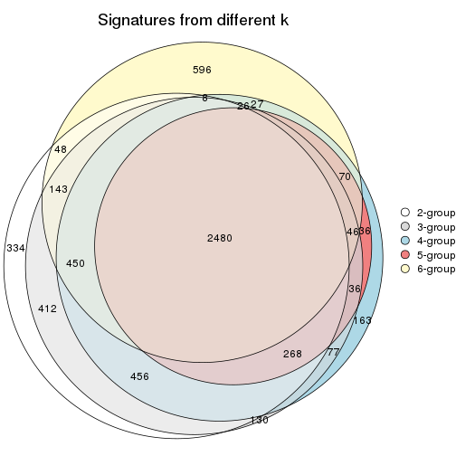
get_signature() returns a data frame invisibly. TO get the list of signatures, the function
call should be assigned to a variable explicitly. In following code, if plot argument is set
to FALSE, no heatmap is plotted while only the differential analysis is performed.
# code only for demonstration
tb = get_signature(res, k = ..., plot = FALSE)
An example of the output of tb is:
#> which_row fdr mean_1 mean_2 scaled_mean_1 scaled_mean_2 km
#> 1 38 0.042760348 8.373488 9.131774 -0.5533452 0.5164555 1
#> 2 40 0.018707592 7.106213 8.469186 -0.6173731 0.5762149 1
#> 3 55 0.019134737 10.221463 11.207825 -0.6159697 0.5749050 1
#> 4 59 0.006059896 5.921854 7.869574 -0.6899429 0.6439467 1
#> 5 60 0.018055526 8.928898 10.211722 -0.6204761 0.5791110 1
#> 6 98 0.009384629 15.714769 14.887706 0.6635654 -0.6193277 2
...
The columns in tb are:
which_row: row indices corresponding to the input matrix.fdr: FDR for the differential test. mean_x: The mean value in group x.scaled_mean_x: The mean value in group x after rows are scaled.km: Row groups if k-means clustering is applied to rows.UMAP plot which shows how samples are separated.
dimension_reduction(res, k = 2, method = "UMAP")
dimension_reduction(res, k = 3, method = "UMAP")
dimension_reduction(res, k = 4, method = "UMAP")
dimension_reduction(res, k = 5, method = "UMAP")
dimension_reduction(res, k = 6, method = "UMAP")
Following heatmap shows how subgroups are split when increasing k:
collect_classes(res)
Test correlation between subgroups and known annotations. If the known annotation is numeric, one-way ANOVA test is applied, and if the known annotation is discrete, chi-squared contingency table test is applied.
test_to_known_factors(res)
#> n stress(p) k
#> SD:hclust 79 4.00e-09 2
#> SD:hclust 76 1.90e-08 3
#> SD:hclust 71 6.58e-09 4
#> SD:hclust 66 1.22e-07 5
#> SD:hclust 68 3.43e-07 6
If matrix rows can be associated to genes, consider to use functional_enrichment(res,
...) to perform function enrichment for the signature genes. See this vignette for more detailed explanations.
The object with results only for a single top-value method and a single partition method can be extracted as:
res = res_list["SD", "kmeans"]
# you can also extract it by
# res = res_list["SD:kmeans"]
A summary of res and all the functions that can be applied to it:
res
#> A 'ConsensusPartition' object with k = 2, 3, 4, 5, 6.
#> On a matrix with 21168 rows and 79 columns.
#> Top rows (1000, 2000, 3000, 4000, 5000) are extracted by 'SD' method.
#> Subgroups are detected by 'kmeans' method.
#> Performed in total 1250 partitions by row resampling.
#> Best k for subgroups seems to be 2.
#>
#> Following methods can be applied to this 'ConsensusPartition' object:
#> [1] "cola_report" "collect_classes" "collect_plots"
#> [4] "collect_stats" "colnames" "compare_signatures"
#> [7] "consensus_heatmap" "dimension_reduction" "functional_enrichment"
#> [10] "get_anno_col" "get_anno" "get_classes"
#> [13] "get_consensus" "get_matrix" "get_membership"
#> [16] "get_param" "get_signatures" "get_stats"
#> [19] "is_best_k" "is_stable_k" "membership_heatmap"
#> [22] "ncol" "nrow" "plot_ecdf"
#> [25] "rownames" "select_partition_number" "show"
#> [28] "suggest_best_k" "test_to_known_factors"
collect_plots() function collects all the plots made from res for all k (number of partitions)
into one single page to provide an easy and fast comparison between different k.
collect_plots(res)
The plots are:
k and the heatmap of
predicted classes for each k.k.k.k.All the plots in panels can be made by individual functions and they are plotted later in this section.
select_partition_number() produces several plots showing different
statistics for choosing “optimized” k. There are following statistics:
k;k, the area increased is defined as \(A_k - A_{k-1}\).The detailed explanations of these statistics can be found in the cola vignette.
Generally speaking, lower PAC score, higher mean silhouette score or higher
concordance corresponds to better partition. Rand index and Jaccard index
measure how similar the current partition is compared to partition with k-1.
If they are too similar, we won't accept k is better than k-1.
select_partition_number(res)
The numeric values for all these statistics can be obtained by get_stats().
get_stats(res)
#> k 1-PAC mean_silhouette concordance area_increased Rand Jaccard
#> 2 2 1.000 0.993 0.997 0.4776 0.523 0.523
#> 3 3 0.718 0.929 0.839 0.3020 0.806 0.629
#> 4 4 0.597 0.698 0.824 0.1278 0.991 0.971
#> 5 5 0.634 0.631 0.791 0.0676 0.938 0.806
#> 6 6 0.675 0.449 0.724 0.0480 0.960 0.862
suggest_best_k() suggests the best \(k\) based on these statistics. The rules are as follows:
suggest_best_k(res)
#> [1] 2
Following shows the table of the partitions (You need to click the show/hide
code output link to see it). The membership matrix (columns with name p*)
is inferred by
clue::cl_consensus()
function with the SE method. Basically the value in the membership matrix
represents the probability to belong to a certain group. The finall class
label for an item is determined with the group with highest probability it
belongs to.
In get_classes() function, the entropy is calculated from the membership
matrix and the silhouette score is calculated from the consensus matrix.
cbind(get_classes(res, k = 2), get_membership(res, k = 2))
#> class entropy silhouette p1 p2
#> GSM464697 2 0.000 0.997 0.000 1.000
#> GSM464698 2 0.000 0.997 0.000 1.000
#> GSM464699 2 0.000 0.997 0.000 1.000
#> GSM464700 2 0.000 0.997 0.000 1.000
#> GSM464701 2 0.000 0.997 0.000 1.000
#> GSM464702 2 0.000 0.997 0.000 1.000
#> GSM464703 2 0.000 0.997 0.000 1.000
#> GSM464704 2 0.000 0.997 0.000 1.000
#> GSM464705 2 0.000 0.997 0.000 1.000
#> GSM464706 2 0.000 0.997 0.000 1.000
#> GSM464707 2 0.000 0.997 0.000 1.000
#> GSM464708 2 0.000 0.997 0.000 1.000
#> GSM464709 2 0.000 0.997 0.000 1.000
#> GSM464710 2 0.000 0.997 0.000 1.000
#> GSM464711 2 0.000 0.997 0.000 1.000
#> GSM464712 2 0.000 0.997 0.000 1.000
#> GSM464713 2 0.000 0.997 0.000 1.000
#> GSM464714 2 0.574 0.843 0.136 0.864
#> GSM464715 2 0.000 0.997 0.000 1.000
#> GSM464716 2 0.000 0.997 0.000 1.000
#> GSM464717 2 0.000 0.997 0.000 1.000
#> GSM464718 2 0.000 0.997 0.000 1.000
#> GSM464719 2 0.000 0.997 0.000 1.000
#> GSM464720 2 0.000 0.997 0.000 1.000
#> GSM464721 1 0.000 0.995 1.000 0.000
#> GSM464722 2 0.000 0.997 0.000 1.000
#> GSM464723 1 0.000 0.995 1.000 0.000
#> GSM464724 2 0.000 0.997 0.000 1.000
#> GSM464725 2 0.000 0.997 0.000 1.000
#> GSM464726 2 0.000 0.997 0.000 1.000
#> GSM464727 2 0.000 0.997 0.000 1.000
#> GSM464728 2 0.000 0.997 0.000 1.000
#> GSM464729 2 0.000 0.997 0.000 1.000
#> GSM464730 2 0.000 0.997 0.000 1.000
#> GSM464731 2 0.000 0.997 0.000 1.000
#> GSM464732 2 0.000 0.997 0.000 1.000
#> GSM464733 2 0.000 0.997 0.000 1.000
#> GSM464734 2 0.000 0.997 0.000 1.000
#> GSM464735 2 0.000 0.997 0.000 1.000
#> GSM464736 2 0.000 0.997 0.000 1.000
#> GSM464658 1 0.000 0.995 1.000 0.000
#> GSM464659 1 0.000 0.995 1.000 0.000
#> GSM464660 1 0.000 0.995 1.000 0.000
#> GSM464661 1 0.000 0.995 1.000 0.000
#> GSM464662 2 0.000 0.997 0.000 1.000
#> GSM464663 1 0.000 0.995 1.000 0.000
#> GSM464664 2 0.000 0.997 0.000 1.000
#> GSM464665 1 0.000 0.995 1.000 0.000
#> GSM464666 1 0.000 0.995 1.000 0.000
#> GSM464667 1 0.000 0.995 1.000 0.000
#> GSM464668 1 0.000 0.995 1.000 0.000
#> GSM464669 1 0.000 0.995 1.000 0.000
#> GSM464670 1 0.000 0.995 1.000 0.000
#> GSM464671 1 0.000 0.995 1.000 0.000
#> GSM464672 1 0.000 0.995 1.000 0.000
#> GSM464673 1 0.000 0.995 1.000 0.000
#> GSM464674 1 0.000 0.995 1.000 0.000
#> GSM464675 1 0.000 0.995 1.000 0.000
#> GSM464676 1 0.000 0.995 1.000 0.000
#> GSM464677 2 0.000 0.997 0.000 1.000
#> GSM464678 1 0.000 0.995 1.000 0.000
#> GSM464679 2 0.000 0.997 0.000 1.000
#> GSM464680 2 0.000 0.997 0.000 1.000
#> GSM464681 1 0.000 0.995 1.000 0.000
#> GSM464682 2 0.000 0.997 0.000 1.000
#> GSM464683 2 0.000 0.997 0.000 1.000
#> GSM464684 2 0.000 0.997 0.000 1.000
#> GSM464685 2 0.000 0.997 0.000 1.000
#> GSM464686 2 0.000 0.997 0.000 1.000
#> GSM464687 2 0.000 0.997 0.000 1.000
#> GSM464688 1 0.000 0.995 1.000 0.000
#> GSM464689 1 0.000 0.995 1.000 0.000
#> GSM464690 1 0.563 0.848 0.868 0.132
#> GSM464691 1 0.000 0.995 1.000 0.000
#> GSM464692 1 0.000 0.995 1.000 0.000
#> GSM464693 1 0.000 0.995 1.000 0.000
#> GSM464694 1 0.000 0.995 1.000 0.000
#> GSM464695 1 0.000 0.995 1.000 0.000
#> GSM464696 1 0.000 0.995 1.000 0.000
cbind(get_classes(res, k = 3), get_membership(res, k = 3))
#> class entropy silhouette p1 p2 p3
#> GSM464697 3 0.6140 0.958 0.000 0.404 0.596
#> GSM464698 2 0.0237 0.950 0.000 0.996 0.004
#> GSM464699 3 0.6008 0.935 0.000 0.372 0.628
#> GSM464700 2 0.0237 0.950 0.000 0.996 0.004
#> GSM464701 3 0.6168 0.960 0.000 0.412 0.588
#> GSM464702 3 0.6168 0.960 0.000 0.412 0.588
#> GSM464703 3 0.5948 0.937 0.000 0.360 0.640
#> GSM464704 3 0.6168 0.960 0.000 0.412 0.588
#> GSM464705 3 0.5988 0.888 0.000 0.368 0.632
#> GSM464706 2 0.1289 0.943 0.000 0.968 0.032
#> GSM464707 2 0.2878 0.864 0.000 0.904 0.096
#> GSM464708 3 0.6154 0.959 0.000 0.408 0.592
#> GSM464709 2 0.2537 0.893 0.000 0.920 0.080
#> GSM464710 3 0.6168 0.960 0.000 0.412 0.588
#> GSM464711 3 0.6140 0.957 0.000 0.404 0.596
#> GSM464712 2 0.1031 0.946 0.000 0.976 0.024
#> GSM464713 3 0.6008 0.935 0.000 0.372 0.628
#> GSM464714 2 0.7129 0.595 0.104 0.716 0.180
#> GSM464715 3 0.6168 0.960 0.000 0.412 0.588
#> GSM464716 2 0.1289 0.943 0.000 0.968 0.032
#> GSM464717 2 0.1289 0.943 0.000 0.968 0.032
#> GSM464718 2 0.0747 0.945 0.000 0.984 0.016
#> GSM464719 2 0.1289 0.943 0.000 0.968 0.032
#> GSM464720 2 0.0237 0.950 0.000 0.996 0.004
#> GSM464721 1 0.4178 0.897 0.828 0.000 0.172
#> GSM464722 3 0.5835 0.908 0.000 0.340 0.660
#> GSM464723 1 0.4452 0.890 0.808 0.000 0.192
#> GSM464724 3 0.6111 0.930 0.000 0.396 0.604
#> GSM464725 3 0.5859 0.917 0.000 0.344 0.656
#> GSM464726 3 0.6168 0.960 0.000 0.412 0.588
#> GSM464727 2 0.0592 0.947 0.000 0.988 0.012
#> GSM464728 3 0.6168 0.960 0.000 0.412 0.588
#> GSM464729 3 0.6062 0.937 0.000 0.384 0.616
#> GSM464730 3 0.6126 0.941 0.000 0.400 0.600
#> GSM464731 3 0.6168 0.960 0.000 0.412 0.588
#> GSM464732 2 0.0237 0.950 0.000 0.996 0.004
#> GSM464733 3 0.6192 0.954 0.000 0.420 0.580
#> GSM464734 3 0.6215 0.887 0.000 0.428 0.572
#> GSM464735 3 0.6180 0.947 0.000 0.416 0.584
#> GSM464736 2 0.0000 0.951 0.000 1.000 0.000
#> GSM464658 1 0.1411 0.939 0.964 0.000 0.036
#> GSM464659 1 0.2066 0.933 0.940 0.000 0.060
#> GSM464660 1 0.2537 0.931 0.920 0.000 0.080
#> GSM464661 1 0.5178 0.861 0.744 0.000 0.256
#> GSM464662 2 0.0237 0.950 0.000 0.996 0.004
#> GSM464663 1 0.2878 0.927 0.904 0.000 0.096
#> GSM464664 2 0.0237 0.951 0.000 0.996 0.004
#> GSM464665 1 0.1529 0.937 0.960 0.000 0.040
#> GSM464666 1 0.4605 0.884 0.796 0.000 0.204
#> GSM464667 1 0.1529 0.936 0.960 0.000 0.040
#> GSM464668 1 0.1289 0.938 0.968 0.000 0.032
#> GSM464669 1 0.2878 0.930 0.904 0.000 0.096
#> GSM464670 1 0.0747 0.937 0.984 0.000 0.016
#> GSM464671 1 0.2537 0.931 0.920 0.000 0.080
#> GSM464672 1 0.3752 0.924 0.856 0.000 0.144
#> GSM464673 1 0.2165 0.939 0.936 0.000 0.064
#> GSM464674 1 0.3340 0.920 0.880 0.000 0.120
#> GSM464675 1 0.2356 0.932 0.928 0.000 0.072
#> GSM464676 1 0.2356 0.932 0.928 0.000 0.072
#> GSM464677 2 0.1289 0.943 0.000 0.968 0.032
#> GSM464678 1 0.2356 0.932 0.928 0.000 0.072
#> GSM464679 2 0.0237 0.950 0.000 0.996 0.004
#> GSM464680 2 0.1289 0.943 0.000 0.968 0.032
#> GSM464681 1 0.2625 0.931 0.916 0.000 0.084
#> GSM464682 2 0.0592 0.947 0.000 0.988 0.012
#> GSM464683 2 0.0237 0.950 0.000 0.996 0.004
#> GSM464684 2 0.0592 0.947 0.000 0.988 0.012
#> GSM464685 2 0.1289 0.943 0.000 0.968 0.032
#> GSM464686 2 0.0424 0.949 0.000 0.992 0.008
#> GSM464687 2 0.1289 0.943 0.000 0.968 0.032
#> GSM464688 1 0.2261 0.932 0.932 0.000 0.068
#> GSM464689 1 0.2096 0.935 0.944 0.004 0.052
#> GSM464690 1 0.7525 0.794 0.684 0.108 0.208
#> GSM464691 1 0.4504 0.891 0.804 0.000 0.196
#> GSM464692 1 0.3276 0.925 0.908 0.024 0.068
#> GSM464693 1 0.1643 0.936 0.956 0.000 0.044
#> GSM464694 1 0.2796 0.928 0.908 0.000 0.092
#> GSM464695 1 0.2796 0.928 0.908 0.000 0.092
#> GSM464696 1 0.1163 0.938 0.972 0.000 0.028
cbind(get_classes(res, k = 4), get_membership(res, k = 4))
#> class entropy silhouette p1 p2 p3 p4
#> GSM464697 3 0.3708 0.9160 0.000 0.148 0.832 0.020
#> GSM464698 2 0.0779 0.9444 0.000 0.980 0.016 0.004
#> GSM464699 3 0.5902 0.8392 0.000 0.120 0.696 0.184
#> GSM464700 2 0.1059 0.9438 0.000 0.972 0.016 0.012
#> GSM464701 3 0.4614 0.9041 0.000 0.144 0.792 0.064
#> GSM464702 3 0.4274 0.9121 0.000 0.148 0.808 0.044
#> GSM464703 3 0.5011 0.9094 0.000 0.160 0.764 0.076
#> GSM464704 3 0.3708 0.9167 0.000 0.148 0.832 0.020
#> GSM464705 3 0.6567 0.7560 0.000 0.128 0.616 0.256
#> GSM464706 2 0.0592 0.9419 0.000 0.984 0.000 0.016
#> GSM464707 2 0.4428 0.7529 0.000 0.808 0.124 0.068
#> GSM464708 3 0.3913 0.9161 0.000 0.148 0.824 0.028
#> GSM464709 2 0.2586 0.8878 0.000 0.912 0.048 0.040
#> GSM464710 3 0.4465 0.9051 0.000 0.144 0.800 0.056
#> GSM464711 3 0.5140 0.8936 0.000 0.144 0.760 0.096
#> GSM464712 2 0.0592 0.9417 0.000 0.984 0.000 0.016
#> GSM464713 3 0.5823 0.8437 0.000 0.120 0.704 0.176
#> GSM464714 2 0.8671 0.1473 0.124 0.456 0.092 0.328
#> GSM464715 3 0.3813 0.9164 0.000 0.148 0.828 0.024
#> GSM464716 2 0.1975 0.9277 0.000 0.936 0.016 0.048
#> GSM464717 2 0.0592 0.9407 0.000 0.984 0.000 0.016
#> GSM464718 2 0.2699 0.9109 0.000 0.904 0.028 0.068
#> GSM464719 2 0.0707 0.9412 0.000 0.980 0.000 0.020
#> GSM464720 2 0.1936 0.9317 0.000 0.940 0.032 0.028
#> GSM464721 1 0.5169 0.0153 0.696 0.000 0.032 0.272
#> GSM464722 3 0.5759 0.8364 0.000 0.112 0.708 0.180
#> GSM464723 1 0.5695 -0.2205 0.624 0.000 0.040 0.336
#> GSM464724 3 0.4842 0.9037 0.000 0.192 0.760 0.048
#> GSM464725 3 0.6027 0.8379 0.000 0.124 0.684 0.192
#> GSM464726 3 0.3597 0.9147 0.000 0.148 0.836 0.016
#> GSM464727 2 0.1798 0.9372 0.000 0.944 0.016 0.040
#> GSM464728 3 0.4188 0.9167 0.000 0.148 0.812 0.040
#> GSM464729 3 0.4290 0.9133 0.000 0.164 0.800 0.036
#> GSM464730 3 0.4436 0.8916 0.000 0.216 0.764 0.020
#> GSM464731 3 0.4008 0.9161 0.000 0.148 0.820 0.032
#> GSM464732 2 0.0592 0.9446 0.000 0.984 0.016 0.000
#> GSM464733 3 0.3933 0.9037 0.000 0.200 0.792 0.008
#> GSM464734 3 0.5775 0.8621 0.000 0.212 0.696 0.092
#> GSM464735 3 0.5889 0.8447 0.000 0.212 0.688 0.100
#> GSM464736 2 0.1059 0.9443 0.000 0.972 0.012 0.016
#> GSM464658 1 0.1661 0.5830 0.944 0.000 0.004 0.052
#> GSM464659 1 0.3196 0.4753 0.856 0.000 0.008 0.136
#> GSM464660 1 0.3649 0.5686 0.796 0.000 0.000 0.204
#> GSM464661 1 0.6592 -0.4998 0.524 0.000 0.084 0.392
#> GSM464662 2 0.0779 0.9444 0.000 0.980 0.016 0.004
#> GSM464663 1 0.3280 0.4867 0.860 0.000 0.016 0.124
#> GSM464664 2 0.1624 0.9401 0.000 0.952 0.020 0.028
#> GSM464665 1 0.1398 0.5731 0.956 0.000 0.004 0.040
#> GSM464666 1 0.5565 -0.2387 0.624 0.000 0.032 0.344
#> GSM464667 1 0.2179 0.5544 0.924 0.000 0.012 0.064
#> GSM464668 1 0.1209 0.5780 0.964 0.000 0.004 0.032
#> GSM464669 1 0.4188 0.5368 0.752 0.000 0.004 0.244
#> GSM464670 1 0.1584 0.5727 0.952 0.000 0.012 0.036
#> GSM464671 1 0.3726 0.5646 0.788 0.000 0.000 0.212
#> GSM464672 1 0.4819 0.3811 0.652 0.000 0.004 0.344
#> GSM464673 1 0.2805 0.5939 0.888 0.000 0.012 0.100
#> GSM464674 1 0.4638 0.2032 0.776 0.000 0.044 0.180
#> GSM464675 1 0.3688 0.5668 0.792 0.000 0.000 0.208
#> GSM464676 1 0.3726 0.5642 0.788 0.000 0.000 0.212
#> GSM464677 2 0.0524 0.9436 0.000 0.988 0.004 0.008
#> GSM464678 1 0.3649 0.5686 0.796 0.000 0.000 0.204
#> GSM464679 2 0.0927 0.9442 0.000 0.976 0.016 0.008
#> GSM464680 2 0.0592 0.9407 0.000 0.984 0.000 0.016
#> GSM464681 1 0.4088 0.5473 0.764 0.000 0.004 0.232
#> GSM464682 2 0.1624 0.9392 0.000 0.952 0.020 0.028
#> GSM464683 2 0.0779 0.9444 0.000 0.980 0.016 0.004
#> GSM464684 2 0.1510 0.9403 0.000 0.956 0.016 0.028
#> GSM464685 2 0.0592 0.9407 0.000 0.984 0.000 0.016
#> GSM464686 2 0.1182 0.9433 0.000 0.968 0.016 0.016
#> GSM464687 2 0.0592 0.9407 0.000 0.984 0.000 0.016
#> GSM464688 1 0.3837 0.5567 0.776 0.000 0.000 0.224
#> GSM464689 1 0.3306 0.5830 0.840 0.000 0.004 0.156
#> GSM464690 4 0.7803 0.0000 0.408 0.068 0.064 0.460
#> GSM464691 1 0.5970 -0.3686 0.600 0.000 0.052 0.348
#> GSM464692 1 0.4775 0.5042 0.740 0.028 0.000 0.232
#> GSM464693 1 0.2737 0.5971 0.888 0.000 0.008 0.104
#> GSM464694 1 0.3554 0.4608 0.844 0.000 0.020 0.136
#> GSM464695 1 0.3708 0.4361 0.832 0.000 0.020 0.148
#> GSM464696 1 0.1004 0.5911 0.972 0.000 0.004 0.024
cbind(get_classes(res, k = 5), get_membership(res, k = 5))
#> class entropy silhouette p1 p2 p3 p4 p5
#> GSM464697 3 0.3568 0.7610 0.000 0.064 0.844 0.012 0.080
#> GSM464698 2 0.1041 0.9063 0.000 0.964 0.032 0.004 0.000
#> GSM464699 3 0.5563 0.2733 0.000 0.044 0.588 0.020 0.348
#> GSM464700 2 0.1455 0.9045 0.000 0.952 0.032 0.008 0.008
#> GSM464701 3 0.4503 0.7023 0.000 0.064 0.792 0.040 0.104
#> GSM464702 3 0.2670 0.7638 0.000 0.080 0.888 0.004 0.028
#> GSM464703 3 0.5432 0.6716 0.000 0.092 0.712 0.036 0.160
#> GSM464704 3 0.3055 0.7653 0.000 0.072 0.864 0.000 0.064
#> GSM464705 5 0.6906 -0.1327 0.000 0.076 0.408 0.072 0.444
#> GSM464706 2 0.2125 0.8807 0.000 0.920 0.004 0.024 0.052
#> GSM464707 2 0.5663 0.5495 0.000 0.688 0.148 0.028 0.136
#> GSM464708 3 0.3213 0.7601 0.000 0.072 0.860 0.004 0.064
#> GSM464709 2 0.4631 0.7219 0.000 0.776 0.088 0.024 0.112
#> GSM464710 3 0.4182 0.7114 0.000 0.064 0.808 0.024 0.104
#> GSM464711 3 0.5396 0.6517 0.000 0.064 0.724 0.064 0.148
#> GSM464712 2 0.2249 0.8975 0.000 0.920 0.020 0.020 0.040
#> GSM464713 3 0.5443 0.3430 0.000 0.044 0.620 0.020 0.316
#> GSM464714 5 0.8108 0.2749 0.024 0.248 0.060 0.232 0.436
#> GSM464715 3 0.3038 0.7687 0.000 0.080 0.872 0.008 0.040
#> GSM464716 2 0.3117 0.8641 0.000 0.860 0.004 0.036 0.100
#> GSM464717 2 0.2331 0.8740 0.000 0.908 0.004 0.024 0.064
#> GSM464718 2 0.3750 0.8310 0.000 0.836 0.028 0.040 0.096
#> GSM464719 2 0.1901 0.8871 0.000 0.932 0.004 0.024 0.040
#> GSM464720 2 0.3292 0.8739 0.000 0.864 0.056 0.016 0.064
#> GSM464721 4 0.4736 0.5029 0.312 0.000 0.004 0.656 0.028
#> GSM464722 3 0.5586 0.2066 0.000 0.068 0.556 0.004 0.372
#> GSM464723 4 0.4670 0.5748 0.256 0.000 0.016 0.704 0.024
#> GSM464724 3 0.4635 0.7119 0.000 0.128 0.768 0.016 0.088
#> GSM464725 3 0.5375 0.2538 0.000 0.064 0.568 0.000 0.368
#> GSM464726 3 0.2354 0.7665 0.000 0.076 0.904 0.008 0.012
#> GSM464727 2 0.3247 0.8669 0.000 0.868 0.028 0.032 0.072
#> GSM464728 3 0.2983 0.7659 0.000 0.076 0.868 0.000 0.056
#> GSM464729 3 0.3390 0.7420 0.000 0.100 0.840 0.000 0.060
#> GSM464730 3 0.4153 0.7068 0.000 0.160 0.784 0.008 0.048
#> GSM464731 3 0.2757 0.7673 0.000 0.072 0.888 0.008 0.032
#> GSM464732 2 0.1251 0.9049 0.000 0.956 0.036 0.000 0.008
#> GSM464733 3 0.3355 0.7461 0.000 0.132 0.832 0.000 0.036
#> GSM464734 3 0.6155 0.5943 0.000 0.116 0.656 0.056 0.172
#> GSM464735 3 0.6104 0.5686 0.000 0.160 0.656 0.044 0.140
#> GSM464736 2 0.2149 0.9046 0.000 0.924 0.028 0.012 0.036
#> GSM464658 1 0.3990 0.5104 0.688 0.000 0.000 0.308 0.004
#> GSM464659 1 0.5002 0.2242 0.548 0.000 0.004 0.424 0.024
#> GSM464660 1 0.0324 0.6422 0.992 0.000 0.004 0.000 0.004
#> GSM464661 4 0.6129 0.5776 0.156 0.000 0.008 0.588 0.248
#> GSM464662 2 0.0880 0.9058 0.000 0.968 0.032 0.000 0.000
#> GSM464663 1 0.5049 0.0647 0.500 0.000 0.004 0.472 0.024
#> GSM464664 2 0.1978 0.8994 0.000 0.932 0.032 0.012 0.024
#> GSM464665 1 0.4581 0.4103 0.624 0.000 0.004 0.360 0.012
#> GSM464666 4 0.5175 0.6047 0.240 0.000 0.008 0.680 0.072
#> GSM464667 1 0.4576 0.3860 0.608 0.000 0.000 0.376 0.016
#> GSM464668 1 0.4440 0.4739 0.660 0.000 0.004 0.324 0.012
#> GSM464669 1 0.2515 0.5858 0.904 0.000 0.008 0.044 0.044
#> GSM464670 1 0.4251 0.4851 0.672 0.000 0.000 0.316 0.012
#> GSM464671 1 0.0451 0.6410 0.988 0.000 0.004 0.000 0.008
#> GSM464672 1 0.5069 0.3216 0.728 0.000 0.024 0.176 0.072
#> GSM464673 1 0.4361 0.5693 0.752 0.000 0.012 0.204 0.032
#> GSM464674 1 0.6140 -0.1510 0.492 0.000 0.004 0.388 0.116
#> GSM464675 1 0.0162 0.6427 0.996 0.000 0.000 0.000 0.004
#> GSM464676 1 0.0162 0.6427 0.996 0.000 0.000 0.000 0.004
#> GSM464677 2 0.1485 0.8988 0.000 0.948 0.000 0.020 0.032
#> GSM464678 1 0.0162 0.6427 0.996 0.000 0.000 0.000 0.004
#> GSM464679 2 0.1329 0.9049 0.000 0.956 0.032 0.004 0.008
#> GSM464680 2 0.2196 0.8784 0.000 0.916 0.004 0.024 0.056
#> GSM464681 1 0.1179 0.6293 0.964 0.000 0.004 0.016 0.016
#> GSM464682 2 0.2152 0.8973 0.000 0.924 0.032 0.012 0.032
#> GSM464683 2 0.0880 0.9058 0.000 0.968 0.032 0.000 0.000
#> GSM464684 2 0.2256 0.8952 0.000 0.920 0.032 0.016 0.032
#> GSM464685 2 0.1648 0.8926 0.000 0.940 0.000 0.020 0.040
#> GSM464686 2 0.1772 0.9028 0.000 0.940 0.032 0.008 0.020
#> GSM464687 2 0.1741 0.8897 0.000 0.936 0.000 0.024 0.040
#> GSM464688 1 0.1186 0.6372 0.964 0.000 0.008 0.020 0.008
#> GSM464689 1 0.2511 0.6322 0.892 0.004 0.000 0.088 0.016
#> GSM464690 4 0.7058 0.4471 0.252 0.012 0.004 0.456 0.276
#> GSM464691 4 0.6127 0.5919 0.220 0.000 0.004 0.584 0.192
#> GSM464692 1 0.1893 0.6090 0.936 0.024 0.000 0.028 0.012
#> GSM464693 1 0.3088 0.6099 0.828 0.000 0.004 0.164 0.004
#> GSM464694 1 0.5231 0.0319 0.496 0.000 0.008 0.468 0.028
#> GSM464695 4 0.4909 -0.0533 0.472 0.000 0.008 0.508 0.012
#> GSM464696 1 0.4240 0.5089 0.684 0.000 0.004 0.304 0.008
cbind(get_classes(res, k = 6), get_membership(res, k = 6))
#> class entropy silhouette p1 p2 p3 p4 p5 p6
#> GSM464697 3 0.4205 0.7025 0.048 0.024 0.780 0.000 0.136 0.012
#> GSM464698 2 0.0547 0.8568 0.000 0.980 0.020 0.000 0.000 0.000
#> GSM464699 3 0.6539 0.4183 0.188 0.016 0.524 0.000 0.240 0.032
#> GSM464700 2 0.0692 0.8562 0.000 0.976 0.020 0.000 0.004 0.000
#> GSM464701 3 0.4750 0.6047 0.020 0.020 0.676 0.000 0.264 0.020
#> GSM464702 3 0.2034 0.7149 0.004 0.024 0.912 0.000 0.060 0.000
#> GSM464703 3 0.5155 0.6369 0.044 0.032 0.644 0.000 0.272 0.008
#> GSM464704 3 0.2350 0.7194 0.008 0.024 0.900 0.000 0.064 0.004
#> GSM464705 3 0.7844 -0.1057 0.252 0.040 0.320 0.000 0.308 0.080
#> GSM464706 2 0.3111 0.8062 0.008 0.820 0.000 0.000 0.156 0.016
#> GSM464707 2 0.5717 0.3795 0.008 0.552 0.140 0.000 0.296 0.004
#> GSM464708 3 0.2793 0.7137 0.024 0.024 0.872 0.000 0.080 0.000
#> GSM464709 2 0.5447 0.5519 0.016 0.632 0.108 0.000 0.236 0.008
#> GSM464710 3 0.4396 0.6267 0.020 0.020 0.716 0.000 0.232 0.012
#> GSM464711 3 0.5846 0.5050 0.040 0.024 0.540 0.000 0.356 0.040
#> GSM464712 2 0.2615 0.8325 0.008 0.852 0.000 0.000 0.136 0.004
#> GSM464713 3 0.6251 0.4530 0.180 0.016 0.552 0.000 0.232 0.020
#> GSM464714 5 0.8778 0.0000 0.240 0.112 0.032 0.076 0.356 0.184
#> GSM464715 3 0.2944 0.7136 0.020 0.028 0.860 0.000 0.092 0.000
#> GSM464716 2 0.4077 0.7766 0.016 0.752 0.008 0.000 0.200 0.024
#> GSM464717 2 0.3449 0.7752 0.008 0.780 0.000 0.000 0.196 0.016
#> GSM464718 2 0.4072 0.7440 0.068 0.800 0.008 0.000 0.092 0.032
#> GSM464719 2 0.2362 0.8285 0.004 0.860 0.000 0.000 0.136 0.000
#> GSM464720 2 0.2878 0.8340 0.028 0.872 0.020 0.000 0.076 0.004
#> GSM464721 4 0.6271 -0.3764 0.156 0.000 0.000 0.464 0.032 0.348
#> GSM464722 3 0.6180 0.3570 0.112 0.020 0.520 0.000 0.328 0.020
#> GSM464723 4 0.6230 -0.4295 0.164 0.000 0.000 0.432 0.024 0.380
#> GSM464724 3 0.4051 0.6367 0.008 0.056 0.752 0.000 0.184 0.000
#> GSM464725 3 0.6263 0.4212 0.132 0.020 0.528 0.000 0.300 0.020
#> GSM464726 3 0.1821 0.7172 0.008 0.024 0.928 0.000 0.040 0.000
#> GSM464727 2 0.3260 0.8002 0.056 0.856 0.008 0.000 0.056 0.024
#> GSM464728 3 0.2653 0.7172 0.024 0.024 0.888 0.000 0.060 0.004
#> GSM464729 3 0.2741 0.7034 0.008 0.032 0.868 0.000 0.092 0.000
#> GSM464730 3 0.4265 0.6163 0.000 0.100 0.728 0.000 0.172 0.000
#> GSM464731 3 0.2006 0.7149 0.008 0.024 0.924 0.000 0.036 0.008
#> GSM464732 2 0.0806 0.8569 0.000 0.972 0.020 0.000 0.008 0.000
#> GSM464733 3 0.3765 0.6450 0.008 0.164 0.780 0.000 0.048 0.000
#> GSM464734 3 0.5461 0.4472 0.016 0.028 0.480 0.000 0.448 0.028
#> GSM464735 3 0.6886 0.4904 0.112 0.144 0.564 0.000 0.152 0.028
#> GSM464736 2 0.1629 0.8526 0.024 0.940 0.004 0.000 0.028 0.004
#> GSM464658 4 0.2808 0.3495 0.076 0.000 0.000 0.868 0.008 0.048
#> GSM464659 4 0.3213 0.3423 0.032 0.000 0.000 0.808 0.000 0.160
#> GSM464660 4 0.3672 -0.1910 0.368 0.000 0.000 0.632 0.000 0.000
#> GSM464661 6 0.5205 0.4593 0.048 0.000 0.008 0.164 0.080 0.700
#> GSM464662 2 0.0547 0.8568 0.000 0.980 0.020 0.000 0.000 0.000
#> GSM464663 4 0.4712 0.2891 0.096 0.000 0.000 0.720 0.024 0.160
#> GSM464664 2 0.1553 0.8517 0.008 0.944 0.012 0.000 0.032 0.004
#> GSM464665 4 0.2487 0.3720 0.032 0.000 0.000 0.876 0.000 0.092
#> GSM464666 6 0.5885 0.3961 0.120 0.000 0.000 0.388 0.020 0.472
#> GSM464667 4 0.2443 0.3652 0.020 0.000 0.000 0.880 0.004 0.096
#> GSM464668 4 0.1908 0.3737 0.028 0.000 0.000 0.916 0.000 0.056
#> GSM464669 4 0.4860 -0.4701 0.412 0.000 0.000 0.540 0.012 0.036
#> GSM464670 4 0.1672 0.3564 0.016 0.000 0.000 0.932 0.004 0.048
#> GSM464671 4 0.3965 -0.2228 0.376 0.000 0.000 0.616 0.004 0.004
#> GSM464672 1 0.6147 0.0000 0.432 0.000 0.000 0.388 0.020 0.160
#> GSM464673 4 0.4034 0.2127 0.148 0.000 0.000 0.776 0.024 0.052
#> GSM464674 4 0.5008 -0.0995 0.036 0.000 0.000 0.592 0.028 0.344
#> GSM464675 4 0.3672 -0.1910 0.368 0.000 0.000 0.632 0.000 0.000
#> GSM464676 4 0.3659 -0.1870 0.364 0.000 0.000 0.636 0.000 0.000
#> GSM464677 2 0.1829 0.8494 0.004 0.920 0.000 0.000 0.064 0.012
#> GSM464678 4 0.3672 -0.1883 0.368 0.000 0.000 0.632 0.000 0.000
#> GSM464679 2 0.0603 0.8564 0.000 0.980 0.016 0.000 0.004 0.000
#> GSM464680 2 0.3282 0.7993 0.012 0.808 0.000 0.000 0.164 0.016
#> GSM464681 4 0.4090 -0.2708 0.384 0.000 0.000 0.604 0.004 0.008
#> GSM464682 2 0.2034 0.8395 0.024 0.924 0.008 0.000 0.032 0.012
#> GSM464683 2 0.0547 0.8568 0.000 0.980 0.020 0.000 0.000 0.000
#> GSM464684 2 0.2037 0.8401 0.028 0.924 0.008 0.000 0.028 0.012
#> GSM464685 2 0.2711 0.8333 0.012 0.860 0.000 0.000 0.116 0.012
#> GSM464686 2 0.1608 0.8461 0.020 0.944 0.008 0.000 0.020 0.008
#> GSM464687 2 0.2504 0.8263 0.004 0.856 0.000 0.000 0.136 0.004
#> GSM464688 4 0.3979 -0.2139 0.360 0.000 0.000 0.628 0.000 0.012
#> GSM464689 4 0.3844 -0.0177 0.236 0.004 0.000 0.736 0.004 0.020
#> GSM464690 6 0.6313 0.3562 0.156 0.032 0.004 0.128 0.052 0.628
#> GSM464691 6 0.4587 0.5844 0.048 0.000 0.000 0.316 0.004 0.632
#> GSM464692 4 0.4825 -0.3031 0.368 0.012 0.000 0.588 0.012 0.020
#> GSM464693 4 0.2445 0.2433 0.120 0.000 0.000 0.868 0.004 0.008
#> GSM464694 4 0.4957 0.2552 0.116 0.000 0.000 0.696 0.024 0.164
#> GSM464695 4 0.5414 0.1465 0.140 0.000 0.000 0.632 0.020 0.208
#> GSM464696 4 0.2554 0.3521 0.076 0.000 0.000 0.876 0.000 0.048
Heatmaps for the consensus matrix. It visualizes the probability of two samples to be in a same group.
consensus_heatmap(res, k = 2)
consensus_heatmap(res, k = 3)
consensus_heatmap(res, k = 4)
consensus_heatmap(res, k = 5)
consensus_heatmap(res, k = 6)
Heatmaps for the membership of samples in all partitions to see how consistent they are:
membership_heatmap(res, k = 2)
membership_heatmap(res, k = 3)
membership_heatmap(res, k = 4)
membership_heatmap(res, k = 5)
membership_heatmap(res, k = 6)
As soon as we have had the classes for columns, we can look for signatures which are significantly different between classes which can be candidate marks for certain classes. Following are the heatmaps for signatures.
Signature heatmaps where rows are scaled:
get_signatures(res, k = 2)
get_signatures(res, k = 3)
get_signatures(res, k = 4)
get_signatures(res, k = 5)
get_signatures(res, k = 6)
Signature heatmaps where rows are not scaled:
get_signatures(res, k = 2, scale_rows = FALSE)
get_signatures(res, k = 3, scale_rows = FALSE)
get_signatures(res, k = 4, scale_rows = FALSE)
get_signatures(res, k = 5, scale_rows = FALSE)
get_signatures(res, k = 6, scale_rows = FALSE)
Compare the overlap of signatures from different k:
compare_signatures(res)
get_signature() returns a data frame invisibly. TO get the list of signatures, the function
call should be assigned to a variable explicitly. In following code, if plot argument is set
to FALSE, no heatmap is plotted while only the differential analysis is performed.
# code only for demonstration
tb = get_signature(res, k = ..., plot = FALSE)
An example of the output of tb is:
#> which_row fdr mean_1 mean_2 scaled_mean_1 scaled_mean_2 km
#> 1 38 0.042760348 8.373488 9.131774 -0.5533452 0.5164555 1
#> 2 40 0.018707592 7.106213 8.469186 -0.6173731 0.5762149 1
#> 3 55 0.019134737 10.221463 11.207825 -0.6159697 0.5749050 1
#> 4 59 0.006059896 5.921854 7.869574 -0.6899429 0.6439467 1
#> 5 60 0.018055526 8.928898 10.211722 -0.6204761 0.5791110 1
#> 6 98 0.009384629 15.714769 14.887706 0.6635654 -0.6193277 2
...
The columns in tb are:
which_row: row indices corresponding to the input matrix.fdr: FDR for the differential test. mean_x: The mean value in group x.scaled_mean_x: The mean value in group x after rows are scaled.km: Row groups if k-means clustering is applied to rows.UMAP plot which shows how samples are separated.
dimension_reduction(res, k = 2, method = "UMAP")

dimension_reduction(res, k = 3, method = "UMAP")
dimension_reduction(res, k = 4, method = "UMAP")
dimension_reduction(res, k = 5, method = "UMAP")
dimension_reduction(res, k = 6, method = "UMAP")
Following heatmap shows how subgroups are split when increasing k:
collect_classes(res)
Test correlation between subgroups and known annotations. If the known annotation is numeric, one-way ANOVA test is applied, and if the known annotation is discrete, chi-squared contingency table test is applied.
test_to_known_factors(res)
#> n stress(p) k
#> SD:kmeans 79 4.00e-09 2
#> SD:kmeans 79 9.55e-11 3
#> SD:kmeans 66 1.25e-09 4
#> SD:kmeans 62 4.56e-07 5
#> SD:kmeans 41 2.22e-03 6
If matrix rows can be associated to genes, consider to use functional_enrichment(res,
...) to perform function enrichment for the signature genes. See this vignette for more detailed explanations.
The object with results only for a single top-value method and a single partition method can be extracted as:
res = res_list["SD", "skmeans"]
# you can also extract it by
# res = res_list["SD:skmeans"]
A summary of res and all the functions that can be applied to it:
res
#> A 'ConsensusPartition' object with k = 2, 3, 4, 5, 6.
#> On a matrix with 21168 rows and 79 columns.
#> Top rows (1000, 2000, 3000, 4000, 5000) are extracted by 'SD' method.
#> Subgroups are detected by 'skmeans' method.
#> Performed in total 1250 partitions by row resampling.
#> Best k for subgroups seems to be 2.
#>
#> Following methods can be applied to this 'ConsensusPartition' object:
#> [1] "cola_report" "collect_classes" "collect_plots"
#> [4] "collect_stats" "colnames" "compare_signatures"
#> [7] "consensus_heatmap" "dimension_reduction" "functional_enrichment"
#> [10] "get_anno_col" "get_anno" "get_classes"
#> [13] "get_consensus" "get_matrix" "get_membership"
#> [16] "get_param" "get_signatures" "get_stats"
#> [19] "is_best_k" "is_stable_k" "membership_heatmap"
#> [22] "ncol" "nrow" "plot_ecdf"
#> [25] "rownames" "select_partition_number" "show"
#> [28] "suggest_best_k" "test_to_known_factors"
collect_plots() function collects all the plots made from res for all k (number of partitions)
into one single page to provide an easy and fast comparison between different k.
collect_plots(res)
The plots are:
k and the heatmap of
predicted classes for each k.k.k.k.All the plots in panels can be made by individual functions and they are plotted later in this section.
select_partition_number() produces several plots showing different
statistics for choosing “optimized” k. There are following statistics:
k;k, the area increased is defined as \(A_k - A_{k-1}\).The detailed explanations of these statistics can be found in the cola vignette.
Generally speaking, lower PAC score, higher mean silhouette score or higher
concordance corresponds to better partition. Rand index and Jaccard index
measure how similar the current partition is compared to partition with k-1.
If they are too similar, we won't accept k is better than k-1.
select_partition_number(res)
The numeric values for all these statistics can be obtained by get_stats().
get_stats(res)
#> k 1-PAC mean_silhouette concordance area_increased Rand Jaccard
#> 2 2 1.000 0.978 0.991 0.4814 0.523 0.523
#> 3 3 0.617 0.752 0.855 0.3860 0.809 0.635
#> 4 4 0.599 0.575 0.719 0.1010 0.947 0.845
#> 5 5 0.492 0.441 0.614 0.0642 0.945 0.832
#> 6 6 0.502 0.384 0.554 0.0447 0.911 0.723
suggest_best_k() suggests the best \(k\) based on these statistics. The rules are as follows:
suggest_best_k(res)
#> [1] 2
Following shows the table of the partitions (You need to click the show/hide
code output link to see it). The membership matrix (columns with name p*)
is inferred by
clue::cl_consensus()
function with the SE method. Basically the value in the membership matrix
represents the probability to belong to a certain group. The finall class
label for an item is determined with the group with highest probability it
belongs to.
In get_classes() function, the entropy is calculated from the membership
matrix and the silhouette score is calculated from the consensus matrix.
cbind(get_classes(res, k = 2), get_membership(res, k = 2))
#> class entropy silhouette p1 p2
#> GSM464697 2 0.0000 0.985 0.000 1.000
#> GSM464698 2 0.0000 0.985 0.000 1.000
#> GSM464699 2 0.0000 0.985 0.000 1.000
#> GSM464700 2 0.0000 0.985 0.000 1.000
#> GSM464701 2 0.0000 0.985 0.000 1.000
#> GSM464702 2 0.0000 0.985 0.000 1.000
#> GSM464703 2 0.0000 0.985 0.000 1.000
#> GSM464704 2 0.0000 0.985 0.000 1.000
#> GSM464705 2 0.0000 0.985 0.000 1.000
#> GSM464706 2 0.2948 0.939 0.052 0.948
#> GSM464707 2 0.0000 0.985 0.000 1.000
#> GSM464708 2 0.0000 0.985 0.000 1.000
#> GSM464709 2 0.0000 0.985 0.000 1.000
#> GSM464710 2 0.0000 0.985 0.000 1.000
#> GSM464711 2 0.1414 0.970 0.020 0.980
#> GSM464712 2 0.0000 0.985 0.000 1.000
#> GSM464713 2 0.0000 0.985 0.000 1.000
#> GSM464714 2 0.9881 0.244 0.436 0.564
#> GSM464715 2 0.0000 0.985 0.000 1.000
#> GSM464716 2 0.0672 0.980 0.008 0.992
#> GSM464717 2 0.0000 0.985 0.000 1.000
#> GSM464718 2 0.1184 0.973 0.016 0.984
#> GSM464719 2 0.0000 0.985 0.000 1.000
#> GSM464720 2 0.0000 0.985 0.000 1.000
#> GSM464721 1 0.0000 1.000 1.000 0.000
#> GSM464722 2 0.0000 0.985 0.000 1.000
#> GSM464723 1 0.0000 1.000 1.000 0.000
#> GSM464724 2 0.0000 0.985 0.000 1.000
#> GSM464725 2 0.0000 0.985 0.000 1.000
#> GSM464726 2 0.0000 0.985 0.000 1.000
#> GSM464727 2 0.0376 0.983 0.004 0.996
#> GSM464728 2 0.0000 0.985 0.000 1.000
#> GSM464729 2 0.0000 0.985 0.000 1.000
#> GSM464730 2 0.0000 0.985 0.000 1.000
#> GSM464731 2 0.0000 0.985 0.000 1.000
#> GSM464732 2 0.0000 0.985 0.000 1.000
#> GSM464733 2 0.0000 0.985 0.000 1.000
#> GSM464734 2 0.0000 0.985 0.000 1.000
#> GSM464735 2 0.0000 0.985 0.000 1.000
#> GSM464736 2 0.0376 0.983 0.004 0.996
#> GSM464658 1 0.0000 1.000 1.000 0.000
#> GSM464659 1 0.0000 1.000 1.000 0.000
#> GSM464660 1 0.0000 1.000 1.000 0.000
#> GSM464661 1 0.0000 1.000 1.000 0.000
#> GSM464662 2 0.0000 0.985 0.000 1.000
#> GSM464663 1 0.0000 1.000 1.000 0.000
#> GSM464664 2 0.0000 0.985 0.000 1.000
#> GSM464665 1 0.0000 1.000 1.000 0.000
#> GSM464666 1 0.0000 1.000 1.000 0.000
#> GSM464667 1 0.0000 1.000 1.000 0.000
#> GSM464668 1 0.0000 1.000 1.000 0.000
#> GSM464669 1 0.0000 1.000 1.000 0.000
#> GSM464670 1 0.0000 1.000 1.000 0.000
#> GSM464671 1 0.0000 1.000 1.000 0.000
#> GSM464672 1 0.0000 1.000 1.000 0.000
#> GSM464673 1 0.0000 1.000 1.000 0.000
#> GSM464674 1 0.0000 1.000 1.000 0.000
#> GSM464675 1 0.0000 1.000 1.000 0.000
#> GSM464676 1 0.0000 1.000 1.000 0.000
#> GSM464677 2 0.0376 0.983 0.004 0.996
#> GSM464678 1 0.0000 1.000 1.000 0.000
#> GSM464679 2 0.0000 0.985 0.000 1.000
#> GSM464680 2 0.5842 0.838 0.140 0.860
#> GSM464681 1 0.0000 1.000 1.000 0.000
#> GSM464682 2 0.0000 0.985 0.000 1.000
#> GSM464683 2 0.0672 0.980 0.008 0.992
#> GSM464684 2 0.0000 0.985 0.000 1.000
#> GSM464685 2 0.0000 0.985 0.000 1.000
#> GSM464686 2 0.0672 0.980 0.008 0.992
#> GSM464687 2 0.0000 0.985 0.000 1.000
#> GSM464688 1 0.0000 1.000 1.000 0.000
#> GSM464689 1 0.0000 1.000 1.000 0.000
#> GSM464690 1 0.0672 0.992 0.992 0.008
#> GSM464691 1 0.0000 1.000 1.000 0.000
#> GSM464692 1 0.0000 1.000 1.000 0.000
#> GSM464693 1 0.0000 1.000 1.000 0.000
#> GSM464694 1 0.0000 1.000 1.000 0.000
#> GSM464695 1 0.0000 1.000 1.000 0.000
#> GSM464696 1 0.0000 1.000 1.000 0.000
cbind(get_classes(res, k = 3), get_membership(res, k = 3))
#> class entropy silhouette p1 p2 p3
#> GSM464697 2 0.2448 0.7498 0.000 0.924 0.076
#> GSM464698 3 0.5835 0.5339 0.000 0.340 0.660
#> GSM464699 2 0.2959 0.7509 0.000 0.900 0.100
#> GSM464700 3 0.5058 0.6979 0.000 0.244 0.756
#> GSM464701 2 0.2066 0.7441 0.000 0.940 0.060
#> GSM464702 2 0.4887 0.7010 0.000 0.772 0.228
#> GSM464703 2 0.3686 0.7382 0.000 0.860 0.140
#> GSM464704 2 0.3038 0.7550 0.000 0.896 0.104
#> GSM464705 2 0.4702 0.6869 0.000 0.788 0.212
#> GSM464706 3 0.5981 0.6663 0.080 0.132 0.788
#> GSM464707 2 0.5988 0.4226 0.000 0.632 0.368
#> GSM464708 2 0.3551 0.7536 0.000 0.868 0.132
#> GSM464709 2 0.6111 0.3252 0.000 0.604 0.396
#> GSM464710 2 0.2959 0.7554 0.000 0.900 0.100
#> GSM464711 2 0.3826 0.7456 0.008 0.868 0.124
#> GSM464712 3 0.6540 0.3836 0.008 0.408 0.584
#> GSM464713 2 0.3879 0.7365 0.000 0.848 0.152
#> GSM464714 2 0.9872 -0.0327 0.272 0.408 0.320
#> GSM464715 2 0.5363 0.6285 0.000 0.724 0.276
#> GSM464716 3 0.7074 0.0922 0.020 0.480 0.500
#> GSM464717 3 0.6062 0.4494 0.000 0.384 0.616
#> GSM464718 2 0.6724 0.1834 0.012 0.568 0.420
#> GSM464719 3 0.3686 0.7237 0.000 0.140 0.860
#> GSM464720 2 0.6308 -0.0514 0.000 0.508 0.492
#> GSM464721 1 0.0000 0.9871 1.000 0.000 0.000
#> GSM464722 2 0.2356 0.7415 0.000 0.928 0.072
#> GSM464723 1 0.0000 0.9871 1.000 0.000 0.000
#> GSM464724 2 0.5138 0.6601 0.000 0.748 0.252
#> GSM464725 2 0.2537 0.7436 0.000 0.920 0.080
#> GSM464726 2 0.2959 0.7545 0.000 0.900 0.100
#> GSM464727 3 0.6701 0.3924 0.012 0.412 0.576
#> GSM464728 2 0.3816 0.7456 0.000 0.852 0.148
#> GSM464729 2 0.3482 0.7359 0.000 0.872 0.128
#> GSM464730 2 0.5733 0.5587 0.000 0.676 0.324
#> GSM464731 2 0.4235 0.7370 0.000 0.824 0.176
#> GSM464732 3 0.6154 0.3481 0.000 0.408 0.592
#> GSM464733 2 0.4750 0.6934 0.000 0.784 0.216
#> GSM464734 2 0.4887 0.6794 0.000 0.772 0.228
#> GSM464735 2 0.5560 0.5930 0.000 0.700 0.300
#> GSM464736 3 0.4233 0.7408 0.004 0.160 0.836
#> GSM464658 1 0.0000 0.9871 1.000 0.000 0.000
#> GSM464659 1 0.0000 0.9871 1.000 0.000 0.000
#> GSM464660 1 0.0000 0.9871 1.000 0.000 0.000
#> GSM464661 1 0.0000 0.9871 1.000 0.000 0.000
#> GSM464662 3 0.3941 0.7427 0.000 0.156 0.844
#> GSM464663 1 0.0000 0.9871 1.000 0.000 0.000
#> GSM464664 3 0.5016 0.6955 0.000 0.240 0.760
#> GSM464665 1 0.0000 0.9871 1.000 0.000 0.000
#> GSM464666 1 0.0000 0.9871 1.000 0.000 0.000
#> GSM464667 1 0.0000 0.9871 1.000 0.000 0.000
#> GSM464668 1 0.0000 0.9871 1.000 0.000 0.000
#> GSM464669 1 0.0000 0.9871 1.000 0.000 0.000
#> GSM464670 1 0.0000 0.9871 1.000 0.000 0.000
#> GSM464671 1 0.0000 0.9871 1.000 0.000 0.000
#> GSM464672 1 0.0000 0.9871 1.000 0.000 0.000
#> GSM464673 1 0.0000 0.9871 1.000 0.000 0.000
#> GSM464674 1 0.0000 0.9871 1.000 0.000 0.000
#> GSM464675 1 0.0000 0.9871 1.000 0.000 0.000
#> GSM464676 1 0.0000 0.9871 1.000 0.000 0.000
#> GSM464677 3 0.2448 0.7305 0.000 0.076 0.924
#> GSM464678 1 0.0000 0.9871 1.000 0.000 0.000
#> GSM464679 3 0.3752 0.7307 0.000 0.144 0.856
#> GSM464680 3 0.4821 0.6970 0.040 0.120 0.840
#> GSM464681 1 0.0000 0.9871 1.000 0.000 0.000
#> GSM464682 3 0.5431 0.6558 0.000 0.284 0.716
#> GSM464683 3 0.2625 0.7329 0.000 0.084 0.916
#> GSM464684 3 0.4702 0.7119 0.000 0.212 0.788
#> GSM464685 3 0.3941 0.7263 0.000 0.156 0.844
#> GSM464686 3 0.3879 0.7352 0.000 0.152 0.848
#> GSM464687 3 0.3816 0.7280 0.000 0.148 0.852
#> GSM464688 1 0.0747 0.9741 0.984 0.000 0.016
#> GSM464689 1 0.1163 0.9634 0.972 0.000 0.028
#> GSM464690 1 0.5004 0.8176 0.840 0.088 0.072
#> GSM464691 1 0.0000 0.9871 1.000 0.000 0.000
#> GSM464692 1 0.4514 0.8044 0.832 0.012 0.156
#> GSM464693 1 0.0000 0.9871 1.000 0.000 0.000
#> GSM464694 1 0.0000 0.9871 1.000 0.000 0.000
#> GSM464695 1 0.0000 0.9871 1.000 0.000 0.000
#> GSM464696 1 0.0000 0.9871 1.000 0.000 0.000
cbind(get_classes(res, k = 4), get_membership(res, k = 4))
#> class entropy silhouette p1 p2 p3 p4
#> GSM464697 3 0.5325 0.5621 0.000 0.068 0.728 0.204
#> GSM464698 2 0.6719 0.3683 0.000 0.608 0.240 0.152
#> GSM464699 3 0.6627 0.4555 0.000 0.112 0.588 0.300
#> GSM464700 2 0.6769 0.3920 0.000 0.608 0.220 0.172
#> GSM464701 3 0.4237 0.5575 0.000 0.040 0.808 0.152
#> GSM464702 3 0.6133 0.4935 0.000 0.124 0.672 0.204
#> GSM464703 3 0.6269 0.4330 0.000 0.096 0.632 0.272
#> GSM464704 3 0.4740 0.5578 0.000 0.080 0.788 0.132
#> GSM464705 3 0.7122 0.3750 0.004 0.140 0.552 0.304
#> GSM464706 2 0.6895 0.2561 0.024 0.596 0.076 0.304
#> GSM464707 4 0.7716 0.0944 0.000 0.224 0.380 0.396
#> GSM464708 3 0.5874 0.5307 0.000 0.124 0.700 0.176
#> GSM464709 4 0.7712 0.1879 0.000 0.224 0.372 0.404
#> GSM464710 3 0.5256 0.5374 0.000 0.064 0.732 0.204
#> GSM464711 3 0.6346 0.4588 0.008 0.068 0.620 0.304
#> GSM464712 2 0.8124 -0.0104 0.008 0.388 0.272 0.332
#> GSM464713 3 0.6245 0.5121 0.000 0.108 0.648 0.244
#> GSM464714 4 0.9370 0.2082 0.156 0.164 0.256 0.424
#> GSM464715 3 0.7140 0.3493 0.000 0.236 0.560 0.204
#> GSM464716 4 0.7962 0.1340 0.004 0.328 0.260 0.408
#> GSM464717 4 0.7868 0.0196 0.012 0.400 0.176 0.412
#> GSM464718 3 0.8251 -0.0760 0.012 0.304 0.384 0.300
#> GSM464719 2 0.6259 0.3213 0.000 0.616 0.084 0.300
#> GSM464720 2 0.7812 0.0739 0.000 0.408 0.328 0.264
#> GSM464721 1 0.1557 0.9517 0.944 0.000 0.000 0.056
#> GSM464722 3 0.5430 0.4730 0.000 0.036 0.664 0.300
#> GSM464723 1 0.1474 0.9511 0.948 0.000 0.000 0.052
#> GSM464724 3 0.6827 0.3055 0.000 0.128 0.568 0.304
#> GSM464725 3 0.5365 0.5045 0.000 0.044 0.692 0.264
#> GSM464726 3 0.4955 0.5700 0.000 0.084 0.772 0.144
#> GSM464727 2 0.7911 0.0985 0.004 0.436 0.288 0.272
#> GSM464728 3 0.5594 0.5484 0.000 0.092 0.716 0.192
#> GSM464729 3 0.4716 0.5288 0.000 0.040 0.764 0.196
#> GSM464730 3 0.7172 0.2841 0.000 0.164 0.532 0.304
#> GSM464731 3 0.5889 0.5282 0.000 0.116 0.696 0.188
#> GSM464732 2 0.7531 0.1467 0.000 0.476 0.316 0.208
#> GSM464733 3 0.6881 0.4043 0.000 0.172 0.592 0.236
#> GSM464734 3 0.6558 0.3531 0.000 0.108 0.596 0.296
#> GSM464735 3 0.7300 0.3423 0.000 0.196 0.528 0.276
#> GSM464736 2 0.6077 0.4366 0.004 0.680 0.096 0.220
#> GSM464658 1 0.1302 0.9542 0.956 0.000 0.000 0.044
#> GSM464659 1 0.1389 0.9513 0.952 0.000 0.000 0.048
#> GSM464660 1 0.1022 0.9524 0.968 0.000 0.000 0.032
#> GSM464661 1 0.1716 0.9512 0.936 0.000 0.000 0.064
#> GSM464662 2 0.5763 0.4440 0.000 0.712 0.132 0.156
#> GSM464663 1 0.1716 0.9529 0.936 0.000 0.000 0.064
#> GSM464664 2 0.6964 0.3851 0.000 0.584 0.188 0.228
#> GSM464665 1 0.1474 0.9528 0.948 0.000 0.000 0.052
#> GSM464666 1 0.1716 0.9522 0.936 0.000 0.000 0.064
#> GSM464667 1 0.1302 0.9540 0.956 0.000 0.000 0.044
#> GSM464668 1 0.1389 0.9527 0.952 0.000 0.000 0.048
#> GSM464669 1 0.1389 0.9521 0.952 0.000 0.000 0.048
#> GSM464670 1 0.1118 0.9533 0.964 0.000 0.000 0.036
#> GSM464671 1 0.0817 0.9533 0.976 0.000 0.000 0.024
#> GSM464672 1 0.1389 0.9537 0.952 0.000 0.000 0.048
#> GSM464673 1 0.1211 0.9532 0.960 0.000 0.000 0.040
#> GSM464674 1 0.1389 0.9534 0.952 0.000 0.000 0.048
#> GSM464675 1 0.0817 0.9525 0.976 0.000 0.000 0.024
#> GSM464676 1 0.1211 0.9500 0.960 0.000 0.000 0.040
#> GSM464677 2 0.5636 0.3717 0.000 0.648 0.044 0.308
#> GSM464678 1 0.0921 0.9502 0.972 0.000 0.000 0.028
#> GSM464679 2 0.5423 0.4753 0.000 0.740 0.116 0.144
#> GSM464680 2 0.7005 0.2223 0.032 0.584 0.068 0.316
#> GSM464681 1 0.0921 0.9514 0.972 0.000 0.000 0.028
#> GSM464682 2 0.6616 0.4048 0.000 0.624 0.156 0.220
#> GSM464683 2 0.4956 0.4661 0.004 0.780 0.076 0.140
#> GSM464684 2 0.6680 0.4084 0.000 0.604 0.136 0.260
#> GSM464685 2 0.6532 0.3036 0.000 0.572 0.092 0.336
#> GSM464686 2 0.5536 0.4647 0.000 0.724 0.096 0.180
#> GSM464687 2 0.6501 0.3542 0.000 0.588 0.096 0.316
#> GSM464688 1 0.2385 0.9270 0.920 0.028 0.000 0.052
#> GSM464689 1 0.1975 0.9387 0.936 0.016 0.000 0.048
#> GSM464690 1 0.6930 0.5557 0.644 0.068 0.052 0.236
#> GSM464691 1 0.1474 0.9534 0.948 0.000 0.000 0.052
#> GSM464692 1 0.6695 0.5915 0.684 0.156 0.036 0.124
#> GSM464693 1 0.1302 0.9547 0.956 0.000 0.000 0.044
#> GSM464694 1 0.1637 0.9509 0.940 0.000 0.000 0.060
#> GSM464695 1 0.1637 0.9513 0.940 0.000 0.000 0.060
#> GSM464696 1 0.0592 0.9537 0.984 0.000 0.000 0.016
cbind(get_classes(res, k = 5), get_membership(res, k = 5))
#> class entropy silhouette p1 p2 p3 p4 p5
#> GSM464697 3 0.626 0.4033 0.000 0.048 0.620 0.236 0.096
#> GSM464698 2 0.718 0.1153 0.000 0.508 0.152 0.280 0.060
#> GSM464699 3 0.575 0.4022 0.000 0.060 0.684 0.188 0.068
#> GSM464700 2 0.719 0.1390 0.000 0.536 0.212 0.184 0.068
#> GSM464701 3 0.511 0.4306 0.000 0.020 0.684 0.252 0.044
#> GSM464702 3 0.718 0.2803 0.000 0.148 0.492 0.304 0.056
#> GSM464703 3 0.617 0.4013 0.000 0.044 0.624 0.240 0.092
#> GSM464704 3 0.589 0.4258 0.000 0.052 0.660 0.216 0.072
#> GSM464705 3 0.777 0.2369 0.000 0.124 0.480 0.220 0.176
#> GSM464706 2 0.798 0.2115 0.020 0.488 0.084 0.220 0.188
#> GSM464707 3 0.787 0.0848 0.000 0.164 0.408 0.320 0.108
#> GSM464708 3 0.628 0.3755 0.000 0.128 0.652 0.152 0.068
#> GSM464709 3 0.831 0.0284 0.000 0.180 0.384 0.240 0.196
#> GSM464710 3 0.635 0.3790 0.000 0.084 0.588 0.280 0.048
#> GSM464711 3 0.753 0.2000 0.012 0.080 0.412 0.400 0.096
#> GSM464712 4 0.807 0.1733 0.004 0.220 0.144 0.456 0.176
#> GSM464713 3 0.661 0.3716 0.000 0.096 0.612 0.204 0.088
#> GSM464714 5 0.958 0.0000 0.144 0.148 0.256 0.132 0.320
#> GSM464715 3 0.688 0.2987 0.000 0.164 0.548 0.244 0.044
#> GSM464716 4 0.874 0.1038 0.024 0.276 0.216 0.356 0.128
#> GSM464717 2 0.834 -0.0165 0.008 0.408 0.196 0.252 0.136
#> GSM464718 3 0.902 -0.0939 0.020 0.208 0.276 0.240 0.256
#> GSM464719 2 0.738 0.1835 0.004 0.488 0.116 0.312 0.080
#> GSM464720 4 0.790 0.1239 0.000 0.288 0.276 0.364 0.072
#> GSM464721 1 0.348 0.8076 0.752 0.000 0.000 0.000 0.248
#> GSM464722 3 0.549 0.4149 0.000 0.028 0.704 0.152 0.116
#> GSM464723 1 0.400 0.7928 0.704 0.000 0.000 0.008 0.288
#> GSM464724 3 0.731 0.2170 0.000 0.120 0.472 0.328 0.080
#> GSM464725 3 0.589 0.4095 0.000 0.056 0.676 0.180 0.088
#> GSM464726 3 0.600 0.4189 0.000 0.084 0.668 0.184 0.064
#> GSM464727 3 0.886 -0.1957 0.012 0.272 0.276 0.248 0.192
#> GSM464728 3 0.635 0.3872 0.000 0.096 0.628 0.212 0.064
#> GSM464729 3 0.580 0.4100 0.000 0.056 0.660 0.228 0.056
#> GSM464730 3 0.732 0.1551 0.000 0.144 0.436 0.360 0.060
#> GSM464731 3 0.674 0.3899 0.000 0.108 0.584 0.236 0.072
#> GSM464732 4 0.759 0.0421 0.000 0.360 0.204 0.380 0.056
#> GSM464733 3 0.732 0.2785 0.000 0.164 0.500 0.268 0.068
#> GSM464734 3 0.691 0.2145 0.004 0.076 0.432 0.428 0.060
#> GSM464735 3 0.769 0.0751 0.000 0.200 0.424 0.304 0.072
#> GSM464736 2 0.759 0.2374 0.004 0.516 0.100 0.216 0.164
#> GSM464658 1 0.373 0.8199 0.768 0.016 0.000 0.000 0.216
#> GSM464659 1 0.371 0.8277 0.756 0.004 0.000 0.004 0.236
#> GSM464660 1 0.185 0.8377 0.912 0.000 0.000 0.000 0.088
#> GSM464661 1 0.361 0.8096 0.732 0.000 0.000 0.000 0.268
#> GSM464662 2 0.650 0.2803 0.000 0.628 0.116 0.180 0.076
#> GSM464663 1 0.311 0.8373 0.800 0.000 0.000 0.000 0.200
#> GSM464664 2 0.764 0.0474 0.000 0.452 0.172 0.292 0.084
#> GSM464665 1 0.272 0.8468 0.852 0.004 0.000 0.000 0.144
#> GSM464666 1 0.364 0.8190 0.748 0.000 0.000 0.004 0.248
#> GSM464667 1 0.324 0.8358 0.784 0.000 0.000 0.000 0.216
#> GSM464668 1 0.374 0.8295 0.784 0.008 0.000 0.012 0.196
#> GSM464669 1 0.293 0.8407 0.832 0.000 0.000 0.004 0.164
#> GSM464670 1 0.277 0.8458 0.836 0.000 0.000 0.000 0.164
#> GSM464671 1 0.179 0.8417 0.916 0.000 0.000 0.000 0.084
#> GSM464672 1 0.238 0.8445 0.872 0.000 0.000 0.000 0.128
#> GSM464673 1 0.273 0.8462 0.840 0.000 0.000 0.000 0.160
#> GSM464674 1 0.260 0.8477 0.852 0.000 0.000 0.000 0.148
#> GSM464675 1 0.213 0.8402 0.892 0.000 0.000 0.000 0.108
#> GSM464676 1 0.242 0.8298 0.868 0.000 0.000 0.000 0.132
#> GSM464677 2 0.729 0.2738 0.016 0.584 0.088 0.160 0.152
#> GSM464678 1 0.239 0.8353 0.880 0.000 0.000 0.004 0.116
#> GSM464679 2 0.502 0.3254 0.000 0.752 0.080 0.128 0.040
#> GSM464680 2 0.761 0.2262 0.016 0.524 0.072 0.228 0.160
#> GSM464681 1 0.281 0.8244 0.844 0.000 0.000 0.004 0.152
#> GSM464682 2 0.758 0.0864 0.000 0.448 0.136 0.320 0.096
#> GSM464683 2 0.503 0.3461 0.008 0.768 0.048 0.108 0.068
#> GSM464684 2 0.749 0.1957 0.000 0.504 0.116 0.252 0.128
#> GSM464685 2 0.700 0.2112 0.000 0.552 0.068 0.244 0.136
#> GSM464686 2 0.707 0.2770 0.004 0.584 0.092 0.188 0.132
#> GSM464687 2 0.696 0.1605 0.000 0.504 0.072 0.332 0.092
#> GSM464688 1 0.444 0.7672 0.760 0.040 0.000 0.016 0.184
#> GSM464689 1 0.436 0.7886 0.728 0.024 0.000 0.008 0.240
#> GSM464690 1 0.794 0.2518 0.492 0.068 0.060 0.092 0.288
#> GSM464691 1 0.388 0.8131 0.744 0.004 0.000 0.008 0.244
#> GSM464692 1 0.737 0.2850 0.536 0.112 0.020 0.064 0.268
#> GSM464693 1 0.242 0.8491 0.868 0.000 0.000 0.000 0.132
#> GSM464694 1 0.340 0.8238 0.780 0.000 0.000 0.004 0.216
#> GSM464695 1 0.324 0.8387 0.784 0.000 0.000 0.000 0.216
#> GSM464696 1 0.285 0.8480 0.840 0.000 0.000 0.004 0.156
cbind(get_classes(res, k = 6), get_membership(res, k = 6))
#> class entropy silhouette p1 p2 p3 p4 p5 p6
#> GSM464697 3 0.586 0.36732 0.052 0.096 0.660 0.000 0.028 0.164
#> GSM464698 2 0.789 0.14144 0.284 0.344 0.192 0.000 0.020 0.160
#> GSM464699 3 0.638 0.32567 0.024 0.136 0.588 0.000 0.048 0.204
#> GSM464700 2 0.801 0.18692 0.216 0.384 0.236 0.000 0.048 0.116
#> GSM464701 3 0.515 0.26413 0.028 0.032 0.620 0.000 0.012 0.308
#> GSM464702 3 0.625 0.30683 0.064 0.136 0.616 0.000 0.020 0.164
#> GSM464703 3 0.715 0.26443 0.116 0.080 0.524 0.000 0.052 0.228
#> GSM464704 3 0.539 0.37753 0.048 0.080 0.692 0.000 0.016 0.164
#> GSM464705 3 0.857 -0.06369 0.064 0.180 0.344 0.008 0.192 0.212
#> GSM464706 1 0.547 0.33436 0.736 0.084 0.060 0.020 0.048 0.052
#> GSM464707 6 0.786 0.13169 0.280 0.088 0.264 0.000 0.036 0.332
#> GSM464708 3 0.493 0.40166 0.052 0.128 0.720 0.000 0.000 0.100
#> GSM464709 1 0.825 -0.00452 0.356 0.116 0.276 0.000 0.080 0.172
#> GSM464710 3 0.538 0.23620 0.028 0.060 0.616 0.000 0.008 0.288
#> GSM464711 6 0.773 0.03381 0.060 0.132 0.356 0.012 0.056 0.384
#> GSM464712 6 0.859 0.01377 0.272 0.188 0.176 0.004 0.068 0.292
#> GSM464713 3 0.650 0.31710 0.040 0.168 0.572 0.000 0.028 0.192
#> GSM464714 5 0.940 0.00000 0.176 0.104 0.116 0.076 0.304 0.224
#> GSM464715 3 0.613 0.31391 0.092 0.148 0.616 0.000 0.004 0.140
#> GSM464716 1 0.841 0.11617 0.372 0.124 0.128 0.012 0.084 0.280
#> GSM464717 1 0.680 0.28567 0.548 0.076 0.080 0.004 0.036 0.256
#> GSM464718 2 0.866 -0.00974 0.096 0.300 0.248 0.012 0.092 0.252
#> GSM464719 1 0.668 0.22233 0.568 0.220 0.080 0.000 0.032 0.100
#> GSM464720 2 0.803 -0.03625 0.152 0.344 0.276 0.000 0.032 0.196
#> GSM464721 4 0.538 0.64139 0.024 0.008 0.000 0.544 0.380 0.044
#> GSM464722 3 0.677 0.28562 0.088 0.032 0.508 0.000 0.068 0.304
#> GSM464723 4 0.485 0.65551 0.008 0.008 0.000 0.508 0.452 0.024
#> GSM464724 3 0.725 0.21664 0.152 0.076 0.512 0.000 0.048 0.212
#> GSM464725 3 0.678 0.26352 0.080 0.052 0.524 0.000 0.056 0.288
#> GSM464726 3 0.496 0.39306 0.040 0.076 0.720 0.000 0.008 0.156
#> GSM464727 2 0.879 0.10305 0.192 0.292 0.224 0.004 0.096 0.192
#> GSM464728 3 0.630 0.35378 0.056 0.096 0.588 0.000 0.024 0.236
#> GSM464729 3 0.591 0.34964 0.092 0.036 0.632 0.000 0.028 0.212
#> GSM464730 3 0.759 0.06343 0.188 0.100 0.460 0.000 0.040 0.212
#> GSM464731 3 0.599 0.37127 0.084 0.064 0.656 0.000 0.036 0.160
#> GSM464732 2 0.815 0.10270 0.236 0.300 0.184 0.000 0.028 0.252
#> GSM464733 3 0.730 0.23187 0.084 0.168 0.524 0.000 0.056 0.168
#> GSM464734 6 0.769 0.13248 0.128 0.088 0.332 0.004 0.048 0.400
#> GSM464735 3 0.763 0.07364 0.120 0.256 0.408 0.000 0.020 0.196
#> GSM464736 2 0.719 0.10296 0.220 0.552 0.072 0.016 0.064 0.076
#> GSM464658 4 0.486 0.73362 0.020 0.008 0.000 0.644 0.296 0.032
#> GSM464659 4 0.509 0.69538 0.012 0.008 0.000 0.560 0.380 0.040
#> GSM464660 4 0.244 0.74840 0.004 0.000 0.000 0.868 0.120 0.008
#> GSM464661 4 0.494 0.66888 0.008 0.008 0.000 0.540 0.412 0.032
#> GSM464662 2 0.711 0.08312 0.360 0.412 0.112 0.000 0.016 0.100
#> GSM464663 4 0.409 0.74730 0.004 0.000 0.000 0.668 0.308 0.020
#> GSM464664 2 0.760 0.20424 0.172 0.504 0.128 0.000 0.076 0.120
#> GSM464665 4 0.465 0.73326 0.004 0.024 0.000 0.632 0.324 0.016
#> GSM464666 4 0.503 0.69027 0.004 0.008 0.000 0.556 0.384 0.048
#> GSM464667 4 0.379 0.74626 0.000 0.004 0.000 0.688 0.300 0.008
#> GSM464668 4 0.457 0.73900 0.012 0.012 0.000 0.672 0.280 0.024
#> GSM464669 4 0.310 0.74756 0.012 0.000 0.000 0.832 0.136 0.020
#> GSM464670 4 0.440 0.74889 0.016 0.004 0.000 0.688 0.268 0.024
#> GSM464671 4 0.176 0.74901 0.000 0.000 0.000 0.904 0.096 0.000
#> GSM464672 4 0.419 0.74480 0.008 0.008 0.000 0.716 0.244 0.024
#> GSM464673 4 0.309 0.76071 0.004 0.000 0.000 0.800 0.188 0.008
#> GSM464674 4 0.418 0.75759 0.012 0.008 0.000 0.736 0.216 0.028
#> GSM464675 4 0.310 0.73968 0.004 0.008 0.000 0.832 0.140 0.016
#> GSM464676 4 0.287 0.73710 0.008 0.012 0.000 0.864 0.100 0.016
#> GSM464677 1 0.724 0.22184 0.536 0.236 0.044 0.020 0.100 0.064
#> GSM464678 4 0.261 0.74501 0.008 0.004 0.000 0.868 0.112 0.008
#> GSM464679 2 0.720 0.18696 0.292 0.472 0.120 0.000 0.036 0.080
#> GSM464680 1 0.572 0.33463 0.712 0.100 0.032 0.024 0.048 0.084
#> GSM464681 4 0.317 0.72503 0.008 0.008 0.000 0.836 0.128 0.020
#> GSM464682 2 0.659 0.27480 0.164 0.592 0.100 0.000 0.024 0.120
#> GSM464683 1 0.691 -0.04334 0.448 0.380 0.048 0.012 0.032 0.080
#> GSM464684 2 0.744 0.23890 0.148 0.532 0.100 0.004 0.064 0.152
#> GSM464685 1 0.733 0.23298 0.528 0.216 0.100 0.008 0.048 0.100
#> GSM464686 2 0.688 0.14572 0.252 0.548 0.060 0.004 0.064 0.072
#> GSM464687 1 0.711 0.17189 0.504 0.256 0.096 0.000 0.032 0.112
#> GSM464688 4 0.579 0.64812 0.036 0.060 0.000 0.640 0.224 0.040
#> GSM464689 4 0.543 0.68448 0.048 0.020 0.000 0.636 0.264 0.032
#> GSM464690 4 0.791 0.19505 0.044 0.104 0.020 0.420 0.304 0.108
#> GSM464691 4 0.509 0.69871 0.012 0.016 0.004 0.620 0.316 0.032
#> GSM464692 4 0.767 0.26976 0.152 0.064 0.008 0.484 0.220 0.072
#> GSM464693 4 0.435 0.75850 0.008 0.020 0.000 0.712 0.240 0.020
#> GSM464694 4 0.491 0.71721 0.012 0.016 0.000 0.584 0.368 0.020
#> GSM464695 4 0.470 0.70971 0.004 0.012 0.000 0.568 0.396 0.020
#> GSM464696 4 0.370 0.76084 0.008 0.016 0.000 0.780 0.184 0.012
Heatmaps for the consensus matrix. It visualizes the probability of two samples to be in a same group.
consensus_heatmap(res, k = 2)
consensus_heatmap(res, k = 3)
consensus_heatmap(res, k = 4)
consensus_heatmap(res, k = 5)
consensus_heatmap(res, k = 6)
Heatmaps for the membership of samples in all partitions to see how consistent they are:
membership_heatmap(res, k = 2)
membership_heatmap(res, k = 3)
membership_heatmap(res, k = 4)
membership_heatmap(res, k = 5)
membership_heatmap(res, k = 6)
As soon as we have had the classes for columns, we can look for signatures which are significantly different between classes which can be candidate marks for certain classes. Following are the heatmaps for signatures.
Signature heatmaps where rows are scaled:
get_signatures(res, k = 2)
get_signatures(res, k = 3)
get_signatures(res, k = 4)
get_signatures(res, k = 5)

get_signatures(res, k = 6)

Signature heatmaps where rows are not scaled:
get_signatures(res, k = 2, scale_rows = FALSE)
get_signatures(res, k = 3, scale_rows = FALSE)
get_signatures(res, k = 4, scale_rows = FALSE)
get_signatures(res, k = 5, scale_rows = FALSE)

get_signatures(res, k = 6, scale_rows = FALSE)

Compare the overlap of signatures from different k:
compare_signatures(res)
get_signature() returns a data frame invisibly. TO get the list of signatures, the function
call should be assigned to a variable explicitly. In following code, if plot argument is set
to FALSE, no heatmap is plotted while only the differential analysis is performed.
# code only for demonstration
tb = get_signature(res, k = ..., plot = FALSE)
An example of the output of tb is:
#> which_row fdr mean_1 mean_2 scaled_mean_1 scaled_mean_2 km
#> 1 38 0.042760348 8.373488 9.131774 -0.5533452 0.5164555 1
#> 2 40 0.018707592 7.106213 8.469186 -0.6173731 0.5762149 1
#> 3 55 0.019134737 10.221463 11.207825 -0.6159697 0.5749050 1
#> 4 59 0.006059896 5.921854 7.869574 -0.6899429 0.6439467 1
#> 5 60 0.018055526 8.928898 10.211722 -0.6204761 0.5791110 1
#> 6 98 0.009384629 15.714769 14.887706 0.6635654 -0.6193277 2
...
The columns in tb are:
which_row: row indices corresponding to the input matrix.fdr: FDR for the differential test. mean_x: The mean value in group x.scaled_mean_x: The mean value in group x after rows are scaled.km: Row groups if k-means clustering is applied to rows.UMAP plot which shows how samples are separated.
dimension_reduction(res, k = 2, method = "UMAP")
dimension_reduction(res, k = 3, method = "UMAP")
dimension_reduction(res, k = 4, method = "UMAP")
dimension_reduction(res, k = 5, method = "UMAP")
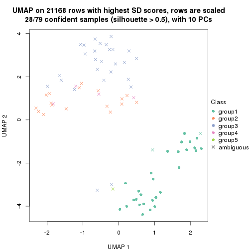
dimension_reduction(res, k = 6, method = "UMAP")
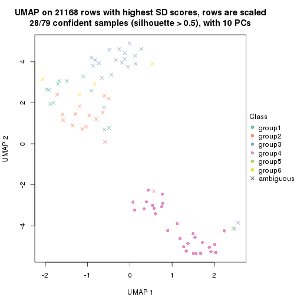
Following heatmap shows how subgroups are split when increasing k:
collect_classes(res)
Test correlation between subgroups and known annotations. If the known annotation is numeric, one-way ANOVA test is applied, and if the known annotation is discrete, chi-squared contingency table test is applied.
test_to_known_factors(res)
#> n stress(p) k
#> SD:skmeans 78 5.94e-09 2
#> SD:skmeans 69 5.05e-11 3
#> SD:skmeans 41 1.09e-07 4
#> SD:skmeans 28 NA 5
#> SD:skmeans 28 NA 6
If matrix rows can be associated to genes, consider to use functional_enrichment(res,
...) to perform function enrichment for the signature genes. See this vignette for more detailed explanations.
The object with results only for a single top-value method and a single partition method can be extracted as:
res = res_list["SD", "pam"]
# you can also extract it by
# res = res_list["SD:pam"]
A summary of res and all the functions that can be applied to it:
res
#> A 'ConsensusPartition' object with k = 2, 3, 4, 5, 6.
#> On a matrix with 21168 rows and 79 columns.
#> Top rows (1000, 2000, 3000, 4000, 5000) are extracted by 'SD' method.
#> Subgroups are detected by 'pam' method.
#> Performed in total 1250 partitions by row resampling.
#> Best k for subgroups seems to be 2.
#>
#> Following methods can be applied to this 'ConsensusPartition' object:
#> [1] "cola_report" "collect_classes" "collect_plots"
#> [4] "collect_stats" "colnames" "compare_signatures"
#> [7] "consensus_heatmap" "dimension_reduction" "functional_enrichment"
#> [10] "get_anno_col" "get_anno" "get_classes"
#> [13] "get_consensus" "get_matrix" "get_membership"
#> [16] "get_param" "get_signatures" "get_stats"
#> [19] "is_best_k" "is_stable_k" "membership_heatmap"
#> [22] "ncol" "nrow" "plot_ecdf"
#> [25] "rownames" "select_partition_number" "show"
#> [28] "suggest_best_k" "test_to_known_factors"
collect_plots() function collects all the plots made from res for all k (number of partitions)
into one single page to provide an easy and fast comparison between different k.
collect_plots(res)
The plots are:
k and the heatmap of
predicted classes for each k.k.k.k.All the plots in panels can be made by individual functions and they are plotted later in this section.
select_partition_number() produces several plots showing different
statistics for choosing “optimized” k. There are following statistics:
k;k, the area increased is defined as \(A_k - A_{k-1}\).The detailed explanations of these statistics can be found in the cola vignette.
Generally speaking, lower PAC score, higher mean silhouette score or higher
concordance corresponds to better partition. Rand index and Jaccard index
measure how similar the current partition is compared to partition with k-1.
If they are too similar, we won't accept k is better than k-1.
select_partition_number(res)

The numeric values for all these statistics can be obtained by get_stats().
get_stats(res)
#> k 1-PAC mean_silhouette concordance area_increased Rand Jaccard
#> 2 2 0.785 0.884 0.941 0.3971 0.617 0.617
#> 3 3 0.491 0.785 0.873 0.1830 0.994 0.990
#> 4 4 0.438 0.730 0.851 0.0493 0.969 0.951
#> 5 5 0.427 0.732 0.842 0.0300 1.000 1.000
#> 6 6 0.452 0.662 0.833 0.0280 0.981 0.969
suggest_best_k() suggests the best \(k\) based on these statistics. The rules are as follows:
suggest_best_k(res)
#> [1] 2
Following shows the table of the partitions (You need to click the show/hide
code output link to see it). The membership matrix (columns with name p*)
is inferred by
clue::cl_consensus()
function with the SE method. Basically the value in the membership matrix
represents the probability to belong to a certain group. The finall class
label for an item is determined with the group with highest probability it
belongs to.
In get_classes() function, the entropy is calculated from the membership
matrix and the silhouette score is calculated from the consensus matrix.
cbind(get_classes(res, k = 2), get_membership(res, k = 2))
#> class entropy silhouette p1 p2
#> GSM464697 2 0.1414 0.946460 0.020 0.980
#> GSM464698 2 0.1843 0.944183 0.028 0.972
#> GSM464699 2 0.0672 0.944525 0.008 0.992
#> GSM464700 2 0.1843 0.944183 0.028 0.972
#> GSM464701 2 0.0672 0.944525 0.008 0.992
#> GSM464702 2 0.1843 0.944183 0.028 0.972
#> GSM464703 2 0.0672 0.944525 0.008 0.992
#> GSM464704 2 0.1184 0.946542 0.016 0.984
#> GSM464705 2 0.1414 0.946147 0.020 0.980
#> GSM464706 2 0.1633 0.946609 0.024 0.976
#> GSM464707 2 0.0672 0.944525 0.008 0.992
#> GSM464708 2 0.1843 0.944183 0.028 0.972
#> GSM464709 2 0.0672 0.944525 0.008 0.992
#> GSM464710 2 0.0672 0.944525 0.008 0.992
#> GSM464711 2 0.2423 0.934179 0.040 0.960
#> GSM464712 2 0.1633 0.946640 0.024 0.976
#> GSM464713 2 0.0672 0.946793 0.008 0.992
#> GSM464714 2 0.0672 0.944525 0.008 0.992
#> GSM464715 2 0.1633 0.945346 0.024 0.976
#> GSM464716 2 0.0938 0.946913 0.012 0.988
#> GSM464717 2 0.0672 0.944525 0.008 0.992
#> GSM464718 2 0.1843 0.946150 0.028 0.972
#> GSM464719 2 0.0672 0.944525 0.008 0.992
#> GSM464720 2 0.1633 0.945369 0.024 0.976
#> GSM464721 2 0.4939 0.856453 0.108 0.892
#> GSM464722 2 0.0672 0.946173 0.008 0.992
#> GSM464723 1 0.4690 0.888959 0.900 0.100
#> GSM464724 2 0.0938 0.946758 0.012 0.988
#> GSM464725 2 0.1633 0.945483 0.024 0.976
#> GSM464726 2 0.1633 0.945163 0.024 0.976
#> GSM464727 2 0.1843 0.944183 0.028 0.972
#> GSM464728 2 0.0672 0.946189 0.008 0.992
#> GSM464729 2 0.1184 0.946708 0.016 0.984
#> GSM464730 2 0.0672 0.944525 0.008 0.992
#> GSM464731 2 0.1843 0.944183 0.028 0.972
#> GSM464732 2 0.0938 0.945264 0.012 0.988
#> GSM464733 2 0.0672 0.944525 0.008 0.992
#> GSM464734 2 0.0938 0.946217 0.012 0.988
#> GSM464735 2 0.1843 0.944183 0.028 0.972
#> GSM464736 2 0.0376 0.945383 0.004 0.996
#> GSM464658 2 0.9896 0.174449 0.440 0.560
#> GSM464659 2 0.1843 0.935185 0.028 0.972
#> GSM464660 1 0.1184 0.921940 0.984 0.016
#> GSM464661 1 0.7883 0.745275 0.764 0.236
#> GSM464662 2 0.0672 0.944525 0.008 0.992
#> GSM464663 1 0.9087 0.582332 0.676 0.324
#> GSM464664 2 0.1843 0.944183 0.028 0.972
#> GSM464665 1 0.1184 0.922221 0.984 0.016
#> GSM464666 1 0.7528 0.782948 0.784 0.216
#> GSM464667 1 0.5842 0.853169 0.860 0.140
#> GSM464668 1 0.7883 0.727227 0.764 0.236
#> GSM464669 1 0.0938 0.921355 0.988 0.012
#> GSM464670 2 0.9993 0.000781 0.484 0.516
#> GSM464671 1 0.0672 0.920798 0.992 0.008
#> GSM464672 1 0.1843 0.916691 0.972 0.028
#> GSM464673 1 0.0672 0.920798 0.992 0.008
#> GSM464674 1 0.3431 0.903515 0.936 0.064
#> GSM464675 1 0.1414 0.921024 0.980 0.020
#> GSM464676 1 0.2236 0.917515 0.964 0.036
#> GSM464677 2 0.1843 0.944183 0.028 0.972
#> GSM464678 1 0.1414 0.919449 0.980 0.020
#> GSM464679 2 0.1843 0.944183 0.028 0.972
#> GSM464680 2 0.0672 0.944525 0.008 0.992
#> GSM464681 1 0.0672 0.920798 0.992 0.008
#> GSM464682 2 0.0000 0.946189 0.000 1.000
#> GSM464683 2 0.0672 0.944525 0.008 0.992
#> GSM464684 2 0.1633 0.945369 0.024 0.976
#> GSM464685 2 0.1843 0.944183 0.028 0.972
#> GSM464686 2 0.2043 0.942948 0.032 0.968
#> GSM464687 2 0.0672 0.944525 0.008 0.992
#> GSM464688 2 0.2423 0.939250 0.040 0.960
#> GSM464689 2 0.8267 0.649372 0.260 0.740
#> GSM464690 2 0.0938 0.945804 0.012 0.988
#> GSM464691 2 0.7883 0.681450 0.236 0.764
#> GSM464692 2 0.6623 0.799759 0.172 0.828
#> GSM464693 1 0.1414 0.919909 0.980 0.020
#> GSM464694 2 0.9881 0.114091 0.436 0.564
#> GSM464695 1 0.1843 0.923160 0.972 0.028
#> GSM464696 1 0.1184 0.922193 0.984 0.016
cbind(get_classes(res, k = 3), get_membership(res, k = 3))
#> class entropy silhouette p1 p2 p3
#> GSM464697 2 0.1529 0.8640 0.000 0.960 0.040
#> GSM464698 2 0.5098 0.8192 0.000 0.752 0.248
#> GSM464699 2 0.0424 0.8530 0.000 0.992 0.008
#> GSM464700 2 0.5216 0.8113 0.000 0.740 0.260
#> GSM464701 2 0.0424 0.8530 0.000 0.992 0.008
#> GSM464702 2 0.5178 0.8125 0.000 0.744 0.256
#> GSM464703 2 0.0592 0.8546 0.000 0.988 0.012
#> GSM464704 2 0.2448 0.8683 0.000 0.924 0.076
#> GSM464705 2 0.4178 0.8530 0.000 0.828 0.172
#> GSM464706 2 0.3412 0.8655 0.000 0.876 0.124
#> GSM464707 2 0.0424 0.8530 0.000 0.992 0.008
#> GSM464708 2 0.5058 0.8186 0.000 0.756 0.244
#> GSM464709 2 0.0892 0.8601 0.000 0.980 0.020
#> GSM464710 2 0.1031 0.8578 0.000 0.976 0.024
#> GSM464711 2 0.3539 0.8662 0.012 0.888 0.100
#> GSM464712 2 0.2796 0.8689 0.000 0.908 0.092
#> GSM464713 2 0.3686 0.8612 0.000 0.860 0.140
#> GSM464714 2 0.0424 0.8530 0.000 0.992 0.008
#> GSM464715 2 0.4346 0.8460 0.000 0.816 0.184
#> GSM464716 2 0.3192 0.8647 0.000 0.888 0.112
#> GSM464717 2 0.0424 0.8530 0.000 0.992 0.008
#> GSM464718 2 0.4346 0.8464 0.000 0.816 0.184
#> GSM464719 2 0.0424 0.8530 0.000 0.992 0.008
#> GSM464720 2 0.3619 0.8636 0.000 0.864 0.136
#> GSM464721 2 0.4665 0.7673 0.100 0.852 0.048
#> GSM464722 2 0.2959 0.8676 0.000 0.900 0.100
#> GSM464723 1 0.3499 0.7907 0.900 0.072 0.028
#> GSM464724 2 0.3752 0.8615 0.000 0.856 0.144
#> GSM464725 2 0.4605 0.8370 0.000 0.796 0.204
#> GSM464726 2 0.3412 0.8650 0.000 0.876 0.124
#> GSM464727 2 0.5016 0.8235 0.000 0.760 0.240
#> GSM464728 2 0.1289 0.8621 0.000 0.968 0.032
#> GSM464729 2 0.2537 0.8677 0.000 0.920 0.080
#> GSM464730 2 0.1529 0.8608 0.000 0.960 0.040
#> GSM464731 2 0.5016 0.8236 0.000 0.760 0.240
#> GSM464732 2 0.0892 0.8588 0.000 0.980 0.020
#> GSM464733 2 0.1163 0.8585 0.000 0.972 0.028
#> GSM464734 2 0.2066 0.8673 0.000 0.940 0.060
#> GSM464735 2 0.4121 0.8564 0.000 0.832 0.168
#> GSM464736 2 0.0892 0.8625 0.000 0.980 0.020
#> GSM464658 2 0.6779 0.2137 0.444 0.544 0.012
#> GSM464659 2 0.2947 0.8402 0.020 0.920 0.060
#> GSM464660 1 0.0000 0.8665 1.000 0.000 0.000
#> GSM464661 3 0.5346 0.0000 0.088 0.088 0.824
#> GSM464662 2 0.0424 0.8530 0.000 0.992 0.008
#> GSM464663 1 0.7916 0.2433 0.620 0.292 0.088
#> GSM464664 2 0.5178 0.8125 0.000 0.744 0.256
#> GSM464665 1 0.0747 0.8632 0.984 0.000 0.016
#> GSM464666 1 0.5115 0.6038 0.796 0.188 0.016
#> GSM464667 1 0.5740 0.6983 0.804 0.096 0.100
#> GSM464668 1 0.7569 0.3999 0.684 0.200 0.116
#> GSM464669 1 0.1163 0.8621 0.972 0.000 0.028
#> GSM464670 2 0.8466 0.0323 0.456 0.456 0.088
#> GSM464671 1 0.0237 0.8669 0.996 0.000 0.004
#> GSM464672 1 0.0000 0.8665 1.000 0.000 0.000
#> GSM464673 1 0.1860 0.8461 0.948 0.000 0.052
#> GSM464674 1 0.3267 0.8141 0.912 0.044 0.044
#> GSM464675 1 0.1832 0.8499 0.956 0.008 0.036
#> GSM464676 1 0.0592 0.8661 0.988 0.012 0.000
#> GSM464677 2 0.5098 0.8207 0.000 0.752 0.248
#> GSM464678 1 0.0000 0.8665 1.000 0.000 0.000
#> GSM464679 2 0.5138 0.8139 0.000 0.748 0.252
#> GSM464680 2 0.1411 0.8622 0.000 0.964 0.036
#> GSM464681 1 0.0000 0.8665 1.000 0.000 0.000
#> GSM464682 2 0.1289 0.8638 0.000 0.968 0.032
#> GSM464683 2 0.0892 0.8535 0.000 0.980 0.020
#> GSM464684 2 0.3941 0.8569 0.000 0.844 0.156
#> GSM464685 2 0.5216 0.8108 0.000 0.740 0.260
#> GSM464686 2 0.5098 0.8216 0.000 0.752 0.248
#> GSM464687 2 0.1031 0.8568 0.000 0.976 0.024
#> GSM464688 2 0.5285 0.8201 0.004 0.752 0.244
#> GSM464689 2 0.7298 0.6184 0.220 0.692 0.088
#> GSM464690 2 0.0661 0.8593 0.004 0.988 0.008
#> GSM464691 2 0.5578 0.6662 0.240 0.748 0.012
#> GSM464692 2 0.5737 0.8085 0.012 0.732 0.256
#> GSM464693 1 0.0000 0.8665 1.000 0.000 0.000
#> GSM464694 2 0.7102 -0.0356 0.420 0.556 0.024
#> GSM464695 1 0.1129 0.8650 0.976 0.004 0.020
#> GSM464696 1 0.0424 0.8666 0.992 0.000 0.008
cbind(get_classes(res, k = 4), get_membership(res, k = 4))
#> class entropy silhouette p1 p2 p3 p4
#> GSM464697 2 0.1936 0.8726 0.000 0.940 0.032 0.028
#> GSM464698 2 0.4193 0.8291 0.000 0.732 0.268 0.000
#> GSM464699 2 0.0336 0.8611 0.000 0.992 0.000 0.008
#> GSM464700 2 0.4304 0.8193 0.000 0.716 0.284 0.000
#> GSM464701 2 0.1022 0.8642 0.000 0.968 0.000 0.032
#> GSM464702 2 0.4511 0.8225 0.000 0.724 0.268 0.008
#> GSM464703 2 0.0804 0.8638 0.000 0.980 0.008 0.012
#> GSM464704 2 0.2255 0.8773 0.000 0.920 0.068 0.012
#> GSM464705 2 0.3356 0.8657 0.000 0.824 0.176 0.000
#> GSM464706 2 0.2888 0.8757 0.000 0.872 0.124 0.004
#> GSM464707 2 0.0336 0.8611 0.000 0.992 0.000 0.008
#> GSM464708 2 0.4134 0.8299 0.000 0.740 0.260 0.000
#> GSM464709 2 0.0927 0.8686 0.000 0.976 0.016 0.008
#> GSM464710 2 0.1388 0.8678 0.000 0.960 0.012 0.028
#> GSM464711 2 0.4090 0.8617 0.008 0.844 0.072 0.076
#> GSM464712 2 0.2813 0.8779 0.000 0.896 0.080 0.024
#> GSM464713 2 0.3401 0.8689 0.000 0.840 0.152 0.008
#> GSM464714 2 0.0336 0.8611 0.000 0.992 0.000 0.008
#> GSM464715 2 0.3486 0.8604 0.000 0.812 0.188 0.000
#> GSM464716 2 0.2888 0.8727 0.000 0.872 0.124 0.004
#> GSM464717 2 0.0336 0.8611 0.000 0.992 0.000 0.008
#> GSM464718 2 0.3681 0.8613 0.000 0.816 0.176 0.008
#> GSM464719 2 0.0336 0.8611 0.000 0.992 0.000 0.008
#> GSM464720 2 0.3196 0.8738 0.000 0.856 0.136 0.008
#> GSM464721 2 0.5386 0.7111 0.096 0.776 0.024 0.104
#> GSM464722 2 0.3099 0.8756 0.000 0.876 0.104 0.020
#> GSM464723 4 0.5070 0.0000 0.416 0.000 0.004 0.580
#> GSM464724 2 0.3306 0.8694 0.000 0.840 0.156 0.004
#> GSM464725 2 0.3831 0.8522 0.000 0.792 0.204 0.004
#> GSM464726 2 0.2760 0.8749 0.000 0.872 0.128 0.000
#> GSM464727 2 0.4360 0.8346 0.000 0.744 0.248 0.008
#> GSM464728 2 0.1151 0.8702 0.000 0.968 0.024 0.008
#> GSM464729 2 0.2489 0.8763 0.000 0.912 0.068 0.020
#> GSM464730 2 0.1452 0.8692 0.000 0.956 0.036 0.008
#> GSM464731 2 0.4040 0.8385 0.000 0.752 0.248 0.000
#> GSM464732 2 0.0779 0.8671 0.000 0.980 0.016 0.004
#> GSM464733 2 0.1042 0.8669 0.000 0.972 0.020 0.008
#> GSM464734 2 0.2675 0.8736 0.000 0.908 0.044 0.048
#> GSM464735 2 0.3444 0.8652 0.000 0.816 0.184 0.000
#> GSM464736 2 0.1388 0.8724 0.000 0.960 0.028 0.012
#> GSM464658 2 0.6328 0.1419 0.444 0.508 0.012 0.036
#> GSM464659 2 0.4226 0.7992 0.020 0.832 0.028 0.120
#> GSM464660 1 0.0000 0.6842 1.000 0.000 0.000 0.000
#> GSM464661 3 0.4908 0.0000 0.004 0.032 0.748 0.216
#> GSM464662 2 0.0336 0.8611 0.000 0.992 0.000 0.008
#> GSM464663 1 0.7147 0.1268 0.612 0.268 0.064 0.056
#> GSM464664 2 0.4222 0.8227 0.000 0.728 0.272 0.000
#> GSM464665 1 0.1356 0.6671 0.960 0.000 0.008 0.032
#> GSM464666 1 0.5087 0.3491 0.760 0.176 0.004 0.060
#> GSM464667 1 0.6298 0.3633 0.732 0.096 0.072 0.100
#> GSM464668 1 0.7762 0.1401 0.616 0.172 0.096 0.116
#> GSM464669 1 0.1004 0.6823 0.972 0.000 0.024 0.004
#> GSM464670 1 0.8161 -0.0237 0.436 0.404 0.072 0.088
#> GSM464671 1 0.0188 0.6856 0.996 0.000 0.004 0.000
#> GSM464672 1 0.1474 0.6419 0.948 0.000 0.000 0.052
#> GSM464673 1 0.1661 0.6592 0.944 0.000 0.052 0.004
#> GSM464674 1 0.4044 0.5510 0.852 0.028 0.032 0.088
#> GSM464675 1 0.1452 0.6678 0.956 0.008 0.036 0.000
#> GSM464676 1 0.0469 0.6862 0.988 0.012 0.000 0.000
#> GSM464677 2 0.4343 0.8315 0.000 0.732 0.264 0.004
#> GSM464678 1 0.0000 0.6842 1.000 0.000 0.000 0.000
#> GSM464679 2 0.4222 0.8227 0.000 0.728 0.272 0.000
#> GSM464680 2 0.1305 0.8709 0.000 0.960 0.036 0.004
#> GSM464681 1 0.0000 0.6842 1.000 0.000 0.000 0.000
#> GSM464682 2 0.1109 0.8718 0.000 0.968 0.028 0.004
#> GSM464683 2 0.0927 0.8619 0.000 0.976 0.016 0.008
#> GSM464684 2 0.3219 0.8681 0.000 0.836 0.164 0.000
#> GSM464685 2 0.4797 0.8238 0.000 0.720 0.260 0.020
#> GSM464686 2 0.4193 0.8301 0.000 0.732 0.268 0.000
#> GSM464687 2 0.1042 0.8651 0.000 0.972 0.020 0.008
#> GSM464688 2 0.4313 0.8310 0.004 0.736 0.260 0.000
#> GSM464689 2 0.6471 0.6635 0.208 0.680 0.084 0.028
#> GSM464690 2 0.0524 0.8673 0.004 0.988 0.008 0.000
#> GSM464691 2 0.6344 0.5998 0.216 0.668 0.008 0.108
#> GSM464692 2 0.5018 0.8228 0.012 0.716 0.260 0.012
#> GSM464693 1 0.0336 0.6830 0.992 0.000 0.000 0.008
#> GSM464694 2 0.7130 -0.0752 0.368 0.508 0.004 0.120
#> GSM464695 1 0.2651 0.6025 0.896 0.004 0.004 0.096
#> GSM464696 1 0.0895 0.6791 0.976 0.000 0.004 0.020
cbind(get_classes(res, k = 5), get_membership(res, k = 5))
#> class entropy silhouette p1 p2 p3 p4 p5
#> GSM464697 3 0.1918 0.8689 0.000 NA 0.928 0.036 0.000
#> GSM464698 3 0.3661 0.8268 0.000 NA 0.724 0.000 0.000
#> GSM464699 3 0.0290 0.8569 0.000 NA 0.992 0.000 0.000
#> GSM464700 3 0.3774 0.8144 0.000 NA 0.704 0.000 0.000
#> GSM464701 3 0.1282 0.8605 0.000 NA 0.952 0.044 0.000
#> GSM464702 3 0.3957 0.8175 0.000 NA 0.712 0.008 0.000
#> GSM464703 3 0.0912 0.8612 0.000 NA 0.972 0.012 0.000
#> GSM464704 3 0.2144 0.8733 0.000 NA 0.912 0.020 0.000
#> GSM464705 3 0.2929 0.8626 0.000 NA 0.820 0.000 0.000
#> GSM464706 3 0.2536 0.8722 0.000 NA 0.868 0.004 0.000
#> GSM464707 3 0.0290 0.8569 0.000 NA 0.992 0.000 0.000
#> GSM464708 3 0.3612 0.8270 0.000 NA 0.732 0.000 0.000
#> GSM464709 3 0.0771 0.8644 0.000 NA 0.976 0.004 0.000
#> GSM464710 3 0.1549 0.8639 0.000 NA 0.944 0.040 0.000
#> GSM464711 3 0.4153 0.8072 0.008 NA 0.784 0.160 0.000
#> GSM464712 3 0.2676 0.8732 0.000 NA 0.884 0.036 0.000
#> GSM464713 3 0.3123 0.8633 0.000 NA 0.828 0.012 0.000
#> GSM464714 3 0.0290 0.8569 0.000 NA 0.992 0.000 0.000
#> GSM464715 3 0.3003 0.8591 0.000 NA 0.812 0.000 0.000
#> GSM464716 3 0.2583 0.8682 0.000 NA 0.864 0.004 0.000
#> GSM464717 3 0.0290 0.8569 0.000 NA 0.992 0.000 0.000
#> GSM464718 3 0.3242 0.8602 0.000 NA 0.816 0.012 0.000
#> GSM464719 3 0.0290 0.8569 0.000 NA 0.992 0.000 0.000
#> GSM464720 3 0.2864 0.8705 0.000 NA 0.852 0.012 0.000
#> GSM464721 3 0.5152 0.6904 0.096 NA 0.756 0.096 0.004
#> GSM464722 3 0.2813 0.8711 0.000 NA 0.868 0.024 0.000
#> GSM464723 4 0.3809 0.0000 0.256 NA 0.000 0.736 0.008
#> GSM464724 3 0.2813 0.8647 0.000 NA 0.832 0.000 0.000
#> GSM464725 3 0.3300 0.8514 0.000 NA 0.792 0.004 0.000
#> GSM464726 3 0.2424 0.8715 0.000 NA 0.868 0.000 0.000
#> GSM464727 3 0.3890 0.8318 0.000 NA 0.736 0.012 0.000
#> GSM464728 3 0.0880 0.8659 0.000 NA 0.968 0.000 0.000
#> GSM464729 3 0.2409 0.8711 0.000 NA 0.900 0.032 0.000
#> GSM464730 3 0.1121 0.8652 0.000 NA 0.956 0.000 0.000
#> GSM464731 3 0.3534 0.8356 0.000 NA 0.744 0.000 0.000
#> GSM464732 3 0.0609 0.8628 0.000 NA 0.980 0.000 0.000
#> GSM464733 3 0.0880 0.8633 0.000 NA 0.968 0.000 0.000
#> GSM464734 3 0.2438 0.8683 0.000 NA 0.900 0.060 0.000
#> GSM464735 3 0.3123 0.8626 0.000 NA 0.812 0.004 0.000
#> GSM464736 3 0.1461 0.8689 0.000 NA 0.952 0.016 0.004
#> GSM464658 3 0.5618 0.1423 0.444 NA 0.504 0.032 0.004
#> GSM464659 3 0.4244 0.7874 0.020 NA 0.812 0.112 0.012
#> GSM464660 1 0.0000 0.7349 1.000 NA 0.000 0.000 0.000
#> GSM464661 5 0.0727 0.0000 0.004 NA 0.004 0.000 0.980
#> GSM464662 3 0.0290 0.8569 0.000 NA 0.992 0.000 0.000
#> GSM464663 1 0.6795 0.2409 0.600 NA 0.248 0.080 0.036
#> GSM464664 3 0.3707 0.8177 0.000 NA 0.716 0.000 0.000
#> GSM464665 1 0.1018 0.7288 0.968 NA 0.000 0.016 0.016
#> GSM464666 1 0.5860 0.4513 0.708 NA 0.152 0.080 0.028
#> GSM464667 1 0.5814 0.5057 0.716 NA 0.092 0.100 0.008
#> GSM464668 1 0.6971 0.2867 0.612 NA 0.172 0.100 0.012
#> GSM464669 1 0.0992 0.7342 0.968 NA 0.000 0.008 0.000
#> GSM464670 1 0.7155 0.0156 0.424 NA 0.404 0.092 0.000
#> GSM464671 1 0.0162 0.7365 0.996 NA 0.000 0.000 0.000
#> GSM464672 1 0.3480 0.4178 0.752 NA 0.000 0.000 0.000
#> GSM464673 1 0.1430 0.7212 0.944 NA 0.000 0.004 0.000
#> GSM464674 1 0.4197 0.6192 0.816 NA 0.024 0.076 0.004
#> GSM464675 1 0.1251 0.7256 0.956 NA 0.008 0.000 0.000
#> GSM464676 1 0.0404 0.7372 0.988 NA 0.012 0.000 0.000
#> GSM464677 3 0.3790 0.8287 0.000 NA 0.724 0.004 0.000
#> GSM464678 1 0.0000 0.7349 1.000 NA 0.000 0.000 0.000
#> GSM464679 3 0.3707 0.8177 0.000 NA 0.716 0.000 0.000
#> GSM464680 3 0.1043 0.8668 0.000 NA 0.960 0.000 0.000
#> GSM464681 1 0.0000 0.7349 1.000 NA 0.000 0.000 0.000
#> GSM464682 3 0.0880 0.8675 0.000 NA 0.968 0.000 0.000
#> GSM464683 3 0.0703 0.8580 0.000 NA 0.976 0.000 0.000
#> GSM464684 3 0.2890 0.8664 0.000 NA 0.836 0.004 0.000
#> GSM464685 3 0.4326 0.8199 0.000 NA 0.708 0.028 0.000
#> GSM464686 3 0.3861 0.8308 0.000 NA 0.728 0.008 0.000
#> GSM464687 3 0.0794 0.8610 0.000 NA 0.972 0.000 0.000
#> GSM464688 3 0.3790 0.8257 0.004 NA 0.724 0.000 0.000
#> GSM464689 3 0.5833 0.6682 0.192 NA 0.676 0.032 0.004
#> GSM464690 3 0.0451 0.8630 0.004 NA 0.988 0.000 0.000
#> GSM464691 3 0.7494 0.0971 0.184 NA 0.468 0.068 0.000
#> GSM464692 3 0.4420 0.8231 0.012 NA 0.712 0.016 0.000
#> GSM464693 1 0.0451 0.7346 0.988 NA 0.000 0.004 0.000
#> GSM464694 3 0.7433 -0.1368 0.332 NA 0.472 0.120 0.008
#> GSM464695 1 0.3163 0.6615 0.860 NA 0.004 0.108 0.008
#> GSM464696 1 0.0807 0.7331 0.976 NA 0.000 0.012 0.012
cbind(get_classes(res, k = 6), get_membership(res, k = 6))
#> class entropy silhouette p1 p2 p3 p4 p5 p6
#> GSM464697 2 0.1857 0.814 0.004 0.924 0.000 0.000 0.044 0.028
#> GSM464698 2 0.3448 0.755 0.000 0.716 0.000 0.000 0.004 0.280
#> GSM464699 2 0.0260 0.798 0.000 0.992 0.000 0.000 0.000 0.008
#> GSM464700 2 0.3446 0.733 0.000 0.692 0.000 0.000 0.000 0.308
#> GSM464701 2 0.1349 0.802 0.000 0.940 0.000 0.000 0.056 0.004
#> GSM464702 2 0.3634 0.735 0.000 0.696 0.000 0.000 0.008 0.296
#> GSM464703 2 0.0909 0.802 0.000 0.968 0.000 0.000 0.012 0.020
#> GSM464704 2 0.2030 0.822 0.000 0.908 0.000 0.000 0.028 0.064
#> GSM464705 2 0.2697 0.806 0.000 0.812 0.000 0.000 0.000 0.188
#> GSM464706 2 0.2320 0.821 0.000 0.864 0.000 0.000 0.004 0.132
#> GSM464707 2 0.0260 0.798 0.000 0.992 0.000 0.000 0.000 0.008
#> GSM464708 2 0.3309 0.753 0.000 0.720 0.000 0.000 0.000 0.280
#> GSM464709 2 0.0777 0.808 0.000 0.972 0.000 0.000 0.004 0.024
#> GSM464710 2 0.1594 0.806 0.000 0.932 0.000 0.000 0.052 0.016
#> GSM464711 2 0.5260 0.466 0.048 0.660 0.000 0.000 0.220 0.072
#> GSM464712 2 0.2663 0.820 0.012 0.876 0.000 0.000 0.028 0.084
#> GSM464713 2 0.3037 0.800 0.000 0.808 0.000 0.000 0.016 0.176
#> GSM464714 2 0.0260 0.798 0.000 0.992 0.000 0.000 0.000 0.008
#> GSM464715 2 0.2805 0.803 0.000 0.812 0.000 0.000 0.004 0.184
#> GSM464716 2 0.2442 0.812 0.004 0.852 0.000 0.000 0.000 0.144
#> GSM464717 2 0.0260 0.798 0.000 0.992 0.000 0.000 0.000 0.008
#> GSM464718 2 0.2955 0.805 0.004 0.816 0.000 0.000 0.008 0.172
#> GSM464719 2 0.0260 0.798 0.000 0.992 0.000 0.000 0.000 0.008
#> GSM464720 2 0.2572 0.818 0.000 0.852 0.000 0.000 0.012 0.136
#> GSM464721 2 0.4881 0.527 0.080 0.752 0.004 0.084 0.008 0.072
#> GSM464722 2 0.2740 0.815 0.000 0.852 0.000 0.000 0.028 0.120
#> GSM464723 1 0.2730 0.000 0.808 0.000 0.000 0.192 0.000 0.000
#> GSM464724 2 0.2664 0.804 0.000 0.816 0.000 0.000 0.000 0.184
#> GSM464725 2 0.2994 0.792 0.000 0.788 0.000 0.000 0.004 0.208
#> GSM464726 2 0.2219 0.820 0.000 0.864 0.000 0.000 0.000 0.136
#> GSM464727 2 0.3691 0.760 0.008 0.724 0.000 0.000 0.008 0.260
#> GSM464728 2 0.0790 0.810 0.000 0.968 0.000 0.000 0.000 0.032
#> GSM464729 2 0.2190 0.817 0.000 0.900 0.000 0.000 0.040 0.060
#> GSM464730 2 0.1082 0.810 0.000 0.956 0.000 0.000 0.004 0.040
#> GSM464731 2 0.3314 0.769 0.000 0.740 0.000 0.000 0.004 0.256
#> GSM464732 2 0.0603 0.806 0.000 0.980 0.000 0.000 0.004 0.016
#> GSM464733 2 0.0935 0.806 0.000 0.964 0.000 0.000 0.004 0.032
#> GSM464734 2 0.2452 0.812 0.008 0.892 0.000 0.000 0.056 0.044
#> GSM464735 2 0.2882 0.808 0.000 0.812 0.000 0.000 0.008 0.180
#> GSM464736 2 0.1464 0.814 0.004 0.944 0.000 0.000 0.016 0.036
#> GSM464658 2 0.5055 -0.215 0.028 0.508 0.000 0.440 0.004 0.020
#> GSM464659 2 0.4201 0.682 0.084 0.804 0.004 0.020 0.028 0.060
#> GSM464660 4 0.0000 0.740 0.000 0.000 0.000 1.000 0.000 0.000
#> GSM464661 3 0.0146 0.000 0.004 0.000 0.996 0.000 0.000 0.000
#> GSM464662 2 0.0260 0.798 0.000 0.992 0.000 0.000 0.000 0.008
#> GSM464663 4 0.6001 0.234 0.160 0.212 0.008 0.596 0.012 0.012
#> GSM464664 2 0.3409 0.736 0.000 0.700 0.000 0.000 0.000 0.300
#> GSM464665 4 0.0891 0.735 0.024 0.000 0.008 0.968 0.000 0.000
#> GSM464666 4 0.6706 0.358 0.148 0.112 0.008 0.604 0.100 0.028
#> GSM464667 4 0.5254 0.545 0.088 0.088 0.004 0.716 0.004 0.100
#> GSM464668 4 0.6128 0.292 0.076 0.172 0.004 0.620 0.004 0.124
#> GSM464669 4 0.0891 0.740 0.000 0.000 0.000 0.968 0.008 0.024
#> GSM464670 4 0.6352 -0.367 0.072 0.416 0.000 0.420 0.000 0.092
#> GSM464671 4 0.0146 0.741 0.000 0.000 0.000 0.996 0.000 0.004
#> GSM464672 4 0.4415 -0.024 0.000 0.000 0.004 0.556 0.020 0.420
#> GSM464673 4 0.1398 0.726 0.008 0.000 0.000 0.940 0.000 0.052
#> GSM464674 4 0.4307 0.624 0.064 0.024 0.000 0.796 0.040 0.076
#> GSM464675 4 0.1124 0.732 0.000 0.008 0.000 0.956 0.000 0.036
#> GSM464676 4 0.0363 0.742 0.000 0.012 0.000 0.988 0.000 0.000
#> GSM464677 2 0.3575 0.753 0.000 0.708 0.000 0.000 0.008 0.284
#> GSM464678 4 0.0000 0.740 0.000 0.000 0.000 1.000 0.000 0.000
#> GSM464679 2 0.3409 0.736 0.000 0.700 0.000 0.000 0.000 0.300
#> GSM464680 2 0.1007 0.813 0.000 0.956 0.000 0.000 0.000 0.044
#> GSM464681 4 0.0000 0.740 0.000 0.000 0.000 1.000 0.000 0.000
#> GSM464682 2 0.0790 0.813 0.000 0.968 0.000 0.000 0.000 0.032
#> GSM464683 2 0.0692 0.799 0.000 0.976 0.000 0.000 0.004 0.020
#> GSM464684 2 0.2668 0.811 0.000 0.828 0.000 0.000 0.004 0.168
#> GSM464685 2 0.4083 0.736 0.008 0.688 0.000 0.000 0.020 0.284
#> GSM464686 2 0.3702 0.760 0.004 0.720 0.000 0.000 0.012 0.264
#> GSM464687 2 0.0858 0.803 0.000 0.968 0.000 0.000 0.004 0.028
#> GSM464688 2 0.3468 0.748 0.000 0.712 0.000 0.004 0.000 0.284
#> GSM464689 2 0.5413 0.502 0.028 0.676 0.000 0.180 0.016 0.100
#> GSM464690 2 0.1363 0.800 0.012 0.952 0.000 0.004 0.004 0.028
#> GSM464691 5 0.5572 0.000 0.004 0.288 0.000 0.156 0.552 0.000
#> GSM464692 2 0.4171 0.744 0.008 0.700 0.000 0.012 0.012 0.268
#> GSM464693 4 0.0405 0.740 0.004 0.000 0.000 0.988 0.000 0.008
#> GSM464694 2 0.7592 -0.520 0.076 0.448 0.004 0.292 0.060 0.120
#> GSM464695 4 0.3271 0.670 0.088 0.004 0.000 0.848 0.028 0.032
#> GSM464696 4 0.0767 0.739 0.012 0.000 0.008 0.976 0.004 0.000
Heatmaps for the consensus matrix. It visualizes the probability of two samples to be in a same group.
consensus_heatmap(res, k = 2)
consensus_heatmap(res, k = 3)
consensus_heatmap(res, k = 4)
consensus_heatmap(res, k = 5)
consensus_heatmap(res, k = 6)
Heatmaps for the membership of samples in all partitions to see how consistent they are:
membership_heatmap(res, k = 2)
membership_heatmap(res, k = 3)
membership_heatmap(res, k = 4)
membership_heatmap(res, k = 5)
membership_heatmap(res, k = 6)
As soon as we have had the classes for columns, we can look for signatures which are significantly different between classes which can be candidate marks for certain classes. Following are the heatmaps for signatures.
Signature heatmaps where rows are scaled:
get_signatures(res, k = 2)
get_signatures(res, k = 3)
get_signatures(res, k = 4)
get_signatures(res, k = 5)
get_signatures(res, k = 6)
Signature heatmaps where rows are not scaled:
get_signatures(res, k = 2, scale_rows = FALSE)
get_signatures(res, k = 3, scale_rows = FALSE)
get_signatures(res, k = 4, scale_rows = FALSE)
get_signatures(res, k = 5, scale_rows = FALSE)

get_signatures(res, k = 6, scale_rows = FALSE)
Compare the overlap of signatures from different k:
compare_signatures(res)
get_signature() returns a data frame invisibly. TO get the list of signatures, the function
call should be assigned to a variable explicitly. In following code, if plot argument is set
to FALSE, no heatmap is plotted while only the differential analysis is performed.
# code only for demonstration
tb = get_signature(res, k = ..., plot = FALSE)
An example of the output of tb is:
#> which_row fdr mean_1 mean_2 scaled_mean_1 scaled_mean_2 km
#> 1 38 0.042760348 8.373488 9.131774 -0.5533452 0.5164555 1
#> 2 40 0.018707592 7.106213 8.469186 -0.6173731 0.5762149 1
#> 3 55 0.019134737 10.221463 11.207825 -0.6159697 0.5749050 1
#> 4 59 0.006059896 5.921854 7.869574 -0.6899429 0.6439467 1
#> 5 60 0.018055526 8.928898 10.211722 -0.6204761 0.5791110 1
#> 6 98 0.009384629 15.714769 14.887706 0.6635654 -0.6193277 2
...
The columns in tb are:
which_row: row indices corresponding to the input matrix.fdr: FDR for the differential test. mean_x: The mean value in group x.scaled_mean_x: The mean value in group x after rows are scaled.km: Row groups if k-means clustering is applied to rows.UMAP plot which shows how samples are separated.
dimension_reduction(res, k = 2, method = "UMAP")
dimension_reduction(res, k = 3, method = "UMAP")
dimension_reduction(res, k = 4, method = "UMAP")
dimension_reduction(res, k = 5, method = "UMAP")
dimension_reduction(res, k = 6, method = "UMAP")
Following heatmap shows how subgroups are split when increasing k:
collect_classes(res)
Test correlation between subgroups and known annotations. If the known annotation is numeric, one-way ANOVA test is applied, and if the known annotation is discrete, chi-squared contingency table test is applied.
test_to_known_factors(res)
#> n stress(p) k
#> SD:pam 76 2.49e-06 2
#> SD:pam 73 1.37e-05 3
#> SD:pam 70 1.13e-05 4
#> SD:pam 69 7.59e-06 5
#> SD:pam 68 9.71e-06 6
If matrix rows can be associated to genes, consider to use functional_enrichment(res,
...) to perform function enrichment for the signature genes. See this vignette for more detailed explanations.
The object with results only for a single top-value method and a single partition method can be extracted as:
res = res_list["SD", "mclust"]
# you can also extract it by
# res = res_list["SD:mclust"]
A summary of res and all the functions that can be applied to it:
res
#> A 'ConsensusPartition' object with k = 2, 3, 4, 5, 6.
#> On a matrix with 21168 rows and 79 columns.
#> Top rows (1000, 2000, 3000, 4000, 5000) are extracted by 'SD' method.
#> Subgroups are detected by 'mclust' method.
#> Performed in total 1250 partitions by row resampling.
#> Best k for subgroups seems to be 2.
#>
#> Following methods can be applied to this 'ConsensusPartition' object:
#> [1] "cola_report" "collect_classes" "collect_plots"
#> [4] "collect_stats" "colnames" "compare_signatures"
#> [7] "consensus_heatmap" "dimension_reduction" "functional_enrichment"
#> [10] "get_anno_col" "get_anno" "get_classes"
#> [13] "get_consensus" "get_matrix" "get_membership"
#> [16] "get_param" "get_signatures" "get_stats"
#> [19] "is_best_k" "is_stable_k" "membership_heatmap"
#> [22] "ncol" "nrow" "plot_ecdf"
#> [25] "rownames" "select_partition_number" "show"
#> [28] "suggest_best_k" "test_to_known_factors"
collect_plots() function collects all the plots made from res for all k (number of partitions)
into one single page to provide an easy and fast comparison between different k.
collect_plots(res)

The plots are:
k and the heatmap of
predicted classes for each k.k.k.k.All the plots in panels can be made by individual functions and they are plotted later in this section.
select_partition_number() produces several plots showing different
statistics for choosing “optimized” k. There are following statistics:
k;k, the area increased is defined as \(A_k - A_{k-1}\).The detailed explanations of these statistics can be found in the cola vignette.
Generally speaking, lower PAC score, higher mean silhouette score or higher
concordance corresponds to better partition. Rand index and Jaccard index
measure how similar the current partition is compared to partition with k-1.
If they are too similar, we won't accept k is better than k-1.
select_partition_number(res)
The numeric values for all these statistics can be obtained by get_stats().
get_stats(res)
#> k 1-PAC mean_silhouette concordance area_increased Rand Jaccard
#> 2 2 1.000 0.985 0.989 0.4765 0.523 0.523
#> 3 3 0.785 0.885 0.915 0.3726 0.806 0.629
#> 4 4 0.575 0.504 0.798 0.0812 0.982 0.945
#> 5 5 0.630 0.656 0.811 0.0714 0.877 0.633
#> 6 6 0.739 0.711 0.845 0.0314 0.969 0.869
suggest_best_k() suggests the best \(k\) based on these statistics. The rules are as follows:
suggest_best_k(res)
#> [1] 2
Following shows the table of the partitions (You need to click the show/hide
code output link to see it). The membership matrix (columns with name p*)
is inferred by
clue::cl_consensus()
function with the SE method. Basically the value in the membership matrix
represents the probability to belong to a certain group. The finall class
label for an item is determined with the group with highest probability it
belongs to.
In get_classes() function, the entropy is calculated from the membership
matrix and the silhouette score is calculated from the consensus matrix.
cbind(get_classes(res, k = 2), get_membership(res, k = 2))
#> class entropy silhouette p1 p2
#> GSM464697 2 0.1184 0.989 0.016 0.984
#> GSM464698 2 0.0000 0.984 0.000 1.000
#> GSM464699 2 0.1184 0.989 0.016 0.984
#> GSM464700 2 0.0000 0.984 0.000 1.000
#> GSM464701 2 0.1184 0.989 0.016 0.984
#> GSM464702 2 0.1184 0.989 0.016 0.984
#> GSM464703 2 0.1184 0.989 0.016 0.984
#> GSM464704 2 0.1184 0.989 0.016 0.984
#> GSM464705 2 0.1414 0.986 0.020 0.980
#> GSM464706 2 0.0000 0.984 0.000 1.000
#> GSM464707 2 0.1184 0.989 0.016 0.984
#> GSM464708 2 0.1184 0.989 0.016 0.984
#> GSM464709 2 0.1184 0.989 0.016 0.984
#> GSM464710 2 0.1184 0.989 0.016 0.984
#> GSM464711 2 0.1633 0.983 0.024 0.976
#> GSM464712 2 0.1184 0.989 0.016 0.984
#> GSM464713 2 0.1184 0.989 0.016 0.984
#> GSM464714 2 0.8555 0.632 0.280 0.720
#> GSM464715 2 0.1184 0.989 0.016 0.984
#> GSM464716 2 0.1184 0.989 0.016 0.984
#> GSM464717 2 0.1184 0.989 0.016 0.984
#> GSM464718 2 0.0672 0.987 0.008 0.992
#> GSM464719 2 0.0672 0.987 0.008 0.992
#> GSM464720 2 0.1184 0.989 0.016 0.984
#> GSM464721 1 0.0000 0.997 1.000 0.000
#> GSM464722 2 0.1184 0.989 0.016 0.984
#> GSM464723 1 0.0000 0.997 1.000 0.000
#> GSM464724 2 0.1184 0.989 0.016 0.984
#> GSM464725 2 0.1184 0.989 0.016 0.984
#> GSM464726 2 0.1184 0.989 0.016 0.984
#> GSM464727 2 0.0938 0.988 0.012 0.988
#> GSM464728 2 0.1184 0.989 0.016 0.984
#> GSM464729 2 0.1184 0.989 0.016 0.984
#> GSM464730 2 0.1184 0.989 0.016 0.984
#> GSM464731 2 0.1184 0.989 0.016 0.984
#> GSM464732 2 0.1184 0.989 0.016 0.984
#> GSM464733 2 0.1184 0.989 0.016 0.984
#> GSM464734 2 0.1184 0.989 0.016 0.984
#> GSM464735 2 0.0938 0.988 0.012 0.988
#> GSM464736 2 0.0000 0.984 0.000 1.000
#> GSM464658 1 0.0000 0.997 1.000 0.000
#> GSM464659 1 0.0000 0.997 1.000 0.000
#> GSM464660 1 0.0000 0.997 1.000 0.000
#> GSM464661 1 0.0000 0.997 1.000 0.000
#> GSM464662 2 0.0000 0.984 0.000 1.000
#> GSM464663 1 0.0000 0.997 1.000 0.000
#> GSM464664 2 0.0000 0.984 0.000 1.000
#> GSM464665 1 0.0000 0.997 1.000 0.000
#> GSM464666 1 0.0000 0.997 1.000 0.000
#> GSM464667 1 0.0000 0.997 1.000 0.000
#> GSM464668 1 0.0000 0.997 1.000 0.000
#> GSM464669 1 0.0000 0.997 1.000 0.000
#> GSM464670 1 0.0000 0.997 1.000 0.000
#> GSM464671 1 0.0000 0.997 1.000 0.000
#> GSM464672 1 0.0000 0.997 1.000 0.000
#> GSM464673 1 0.0000 0.997 1.000 0.000
#> GSM464674 1 0.0000 0.997 1.000 0.000
#> GSM464675 1 0.0000 0.997 1.000 0.000
#> GSM464676 1 0.0000 0.997 1.000 0.000
#> GSM464677 2 0.0000 0.984 0.000 1.000
#> GSM464678 1 0.0000 0.997 1.000 0.000
#> GSM464679 2 0.0000 0.984 0.000 1.000
#> GSM464680 2 0.0000 0.984 0.000 1.000
#> GSM464681 1 0.0000 0.997 1.000 0.000
#> GSM464682 2 0.0000 0.984 0.000 1.000
#> GSM464683 2 0.0000 0.984 0.000 1.000
#> GSM464684 2 0.0000 0.984 0.000 1.000
#> GSM464685 2 0.0000 0.984 0.000 1.000
#> GSM464686 2 0.0000 0.984 0.000 1.000
#> GSM464687 2 0.0000 0.984 0.000 1.000
#> GSM464688 1 0.0000 0.997 1.000 0.000
#> GSM464689 1 0.0000 0.997 1.000 0.000
#> GSM464690 1 0.3114 0.941 0.944 0.056
#> GSM464691 1 0.0000 0.997 1.000 0.000
#> GSM464692 1 0.2423 0.958 0.960 0.040
#> GSM464693 1 0.0000 0.997 1.000 0.000
#> GSM464694 1 0.0000 0.997 1.000 0.000
#> GSM464695 1 0.0000 0.997 1.000 0.000
#> GSM464696 1 0.0000 0.997 1.000 0.000
cbind(get_classes(res, k = 3), get_membership(res, k = 3))
#> class entropy silhouette p1 p2 p3
#> GSM464697 2 0.0237 0.904 0.000 0.996 0.004
#> GSM464698 3 0.4178 0.859 0.000 0.172 0.828
#> GSM464699 2 0.0000 0.902 0.000 1.000 0.000
#> GSM464700 3 0.2796 0.898 0.000 0.092 0.908
#> GSM464701 2 0.0424 0.903 0.000 0.992 0.008
#> GSM464702 2 0.0000 0.902 0.000 1.000 0.000
#> GSM464703 2 0.2356 0.887 0.000 0.928 0.072
#> GSM464704 2 0.0237 0.904 0.000 0.996 0.004
#> GSM464705 2 0.3619 0.837 0.000 0.864 0.136
#> GSM464706 3 0.2537 0.895 0.000 0.080 0.920
#> GSM464707 2 0.4346 0.778 0.000 0.816 0.184
#> GSM464708 2 0.0237 0.904 0.000 0.996 0.004
#> GSM464709 3 0.6095 0.504 0.000 0.392 0.608
#> GSM464710 2 0.0747 0.903 0.000 0.984 0.016
#> GSM464711 2 0.1753 0.897 0.000 0.952 0.048
#> GSM464712 3 0.5882 0.592 0.000 0.348 0.652
#> GSM464713 2 0.0000 0.902 0.000 1.000 0.000
#> GSM464714 2 0.7828 0.583 0.168 0.672 0.160
#> GSM464715 2 0.0237 0.904 0.000 0.996 0.004
#> GSM464716 3 0.5591 0.680 0.000 0.304 0.696
#> GSM464717 3 0.4399 0.833 0.000 0.188 0.812
#> GSM464718 3 0.3752 0.880 0.000 0.144 0.856
#> GSM464719 3 0.2959 0.898 0.000 0.100 0.900
#> GSM464720 2 0.4452 0.766 0.000 0.808 0.192
#> GSM464721 1 0.1163 0.974 0.972 0.000 0.028
#> GSM464722 2 0.2796 0.875 0.000 0.908 0.092
#> GSM464723 1 0.0424 0.976 0.992 0.000 0.008
#> GSM464724 2 0.3412 0.855 0.000 0.876 0.124
#> GSM464725 2 0.0000 0.902 0.000 1.000 0.000
#> GSM464726 2 0.0237 0.904 0.000 0.996 0.004
#> GSM464727 3 0.3340 0.890 0.000 0.120 0.880
#> GSM464728 2 0.2537 0.883 0.000 0.920 0.080
#> GSM464729 2 0.0000 0.902 0.000 1.000 0.000
#> GSM464730 2 0.5988 0.379 0.000 0.632 0.368
#> GSM464731 2 0.0000 0.902 0.000 1.000 0.000
#> GSM464732 3 0.6260 0.340 0.000 0.448 0.552
#> GSM464733 2 0.3340 0.858 0.000 0.880 0.120
#> GSM464734 2 0.4504 0.767 0.000 0.804 0.196
#> GSM464735 2 0.2448 0.883 0.000 0.924 0.076
#> GSM464736 3 0.2711 0.898 0.000 0.088 0.912
#> GSM464658 1 0.1289 0.973 0.968 0.000 0.032
#> GSM464659 1 0.1753 0.970 0.952 0.000 0.048
#> GSM464660 1 0.0592 0.976 0.988 0.000 0.012
#> GSM464661 1 0.0237 0.976 0.996 0.000 0.004
#> GSM464662 3 0.2711 0.898 0.000 0.088 0.912
#> GSM464663 1 0.2261 0.962 0.932 0.000 0.068
#> GSM464664 3 0.2878 0.898 0.000 0.096 0.904
#> GSM464665 1 0.2261 0.962 0.932 0.000 0.068
#> GSM464666 1 0.0592 0.976 0.988 0.000 0.012
#> GSM464667 1 0.2261 0.962 0.932 0.000 0.068
#> GSM464668 1 0.1643 0.971 0.956 0.000 0.044
#> GSM464669 1 0.0592 0.976 0.988 0.000 0.012
#> GSM464670 1 0.1964 0.967 0.944 0.000 0.056
#> GSM464671 1 0.0592 0.976 0.988 0.000 0.012
#> GSM464672 1 0.0592 0.976 0.988 0.000 0.012
#> GSM464673 1 0.0592 0.976 0.988 0.000 0.012
#> GSM464674 1 0.0424 0.976 0.992 0.000 0.008
#> GSM464675 1 0.0592 0.976 0.988 0.000 0.012
#> GSM464676 1 0.0592 0.976 0.988 0.000 0.012
#> GSM464677 3 0.2537 0.895 0.000 0.080 0.920
#> GSM464678 1 0.0592 0.976 0.988 0.000 0.012
#> GSM464679 3 0.2711 0.898 0.000 0.088 0.912
#> GSM464680 3 0.3272 0.888 0.016 0.080 0.904
#> GSM464681 1 0.0592 0.976 0.988 0.000 0.012
#> GSM464682 3 0.5291 0.746 0.000 0.268 0.732
#> GSM464683 3 0.2711 0.898 0.000 0.088 0.912
#> GSM464684 3 0.3752 0.875 0.000 0.144 0.856
#> GSM464685 3 0.2537 0.895 0.000 0.080 0.920
#> GSM464686 3 0.3340 0.889 0.000 0.120 0.880
#> GSM464687 3 0.2537 0.895 0.000 0.080 0.920
#> GSM464688 1 0.0592 0.976 0.988 0.000 0.012
#> GSM464689 1 0.0592 0.976 0.988 0.000 0.012
#> GSM464690 1 0.4097 0.882 0.880 0.060 0.060
#> GSM464691 1 0.0237 0.976 0.996 0.000 0.004
#> GSM464692 1 0.1399 0.965 0.968 0.004 0.028
#> GSM464693 1 0.1529 0.973 0.960 0.000 0.040
#> GSM464694 1 0.2261 0.962 0.932 0.000 0.068
#> GSM464695 1 0.2066 0.966 0.940 0.000 0.060
#> GSM464696 1 0.1964 0.969 0.944 0.000 0.056
cbind(get_classes(res, k = 4), get_membership(res, k = 4))
#> class entropy silhouette p1 p2 p3 p4
#> GSM464697 3 0.3271 0.800 0.012 0.132 0.856 0.000
#> GSM464698 2 0.2675 0.861 0.008 0.892 0.100 0.000
#> GSM464699 3 0.3032 0.803 0.008 0.124 0.868 0.000
#> GSM464700 2 0.0817 0.895 0.000 0.976 0.024 0.000
#> GSM464701 3 0.6257 0.715 0.260 0.088 0.648 0.004
#> GSM464702 3 0.3617 0.803 0.064 0.076 0.860 0.000
#> GSM464703 3 0.3681 0.789 0.008 0.176 0.816 0.000
#> GSM464704 3 0.2345 0.806 0.000 0.100 0.900 0.000
#> GSM464705 3 0.6197 0.580 0.328 0.060 0.608 0.004
#> GSM464706 2 0.0188 0.892 0.004 0.996 0.000 0.000
#> GSM464707 3 0.4546 0.720 0.012 0.256 0.732 0.000
#> GSM464708 3 0.1940 0.803 0.000 0.076 0.924 0.000
#> GSM464709 2 0.4511 0.610 0.008 0.724 0.268 0.000
#> GSM464710 3 0.6684 0.732 0.228 0.140 0.628 0.004
#> GSM464711 3 0.7088 0.698 0.280 0.148 0.568 0.004
#> GSM464712 2 0.5649 0.658 0.100 0.728 0.168 0.004
#> GSM464713 3 0.2011 0.804 0.000 0.080 0.920 0.000
#> GSM464714 3 0.9030 0.339 0.344 0.096 0.400 0.160
#> GSM464715 3 0.2125 0.804 0.004 0.076 0.920 0.000
#> GSM464716 2 0.4524 0.701 0.028 0.768 0.204 0.000
#> GSM464717 2 0.3577 0.784 0.012 0.832 0.156 0.000
#> GSM464718 2 0.2737 0.861 0.008 0.888 0.104 0.000
#> GSM464719 2 0.0336 0.895 0.000 0.992 0.008 0.000
#> GSM464720 3 0.5465 0.466 0.020 0.392 0.588 0.000
#> GSM464721 4 0.1940 0.485 0.076 0.000 0.000 0.924
#> GSM464722 3 0.6037 0.619 0.296 0.060 0.640 0.004
#> GSM464723 4 0.2647 0.457 0.120 0.000 0.000 0.880
#> GSM464724 3 0.4690 0.703 0.012 0.276 0.712 0.000
#> GSM464725 3 0.2222 0.793 0.016 0.060 0.924 0.000
#> GSM464726 3 0.3687 0.803 0.064 0.080 0.856 0.000
#> GSM464727 2 0.2928 0.850 0.012 0.880 0.108 0.000
#> GSM464728 3 0.3831 0.771 0.004 0.204 0.792 0.000
#> GSM464729 3 0.2949 0.806 0.024 0.088 0.888 0.000
#> GSM464730 3 0.5768 0.312 0.028 0.456 0.516 0.000
#> GSM464731 3 0.2466 0.806 0.004 0.096 0.900 0.000
#> GSM464732 2 0.5018 0.468 0.012 0.656 0.332 0.000
#> GSM464733 3 0.4399 0.756 0.016 0.224 0.760 0.000
#> GSM464734 3 0.7780 0.573 0.232 0.300 0.464 0.004
#> GSM464735 3 0.4175 0.760 0.012 0.212 0.776 0.000
#> GSM464736 2 0.0707 0.896 0.000 0.980 0.020 0.000
#> GSM464658 4 0.3024 0.411 0.148 0.000 0.000 0.852
#> GSM464659 4 0.0817 0.508 0.024 0.000 0.000 0.976
#> GSM464660 4 0.5000 -0.758 0.496 0.000 0.000 0.504
#> GSM464661 4 0.3172 0.423 0.160 0.000 0.000 0.840
#> GSM464662 2 0.0469 0.896 0.000 0.988 0.012 0.000
#> GSM464663 4 0.0707 0.499 0.020 0.000 0.000 0.980
#> GSM464664 2 0.1356 0.894 0.008 0.960 0.032 0.000
#> GSM464665 4 0.0592 0.507 0.016 0.000 0.000 0.984
#> GSM464666 4 0.2011 0.493 0.080 0.000 0.000 0.920
#> GSM464667 4 0.0592 0.506 0.016 0.000 0.000 0.984
#> GSM464668 4 0.2081 0.482 0.084 0.000 0.000 0.916
#> GSM464669 4 0.4994 -0.733 0.480 0.000 0.000 0.520
#> GSM464670 4 0.2216 0.474 0.092 0.000 0.000 0.908
#> GSM464671 4 0.4992 -0.730 0.476 0.000 0.000 0.524
#> GSM464672 1 0.5000 0.510 0.504 0.000 0.000 0.496
#> GSM464673 4 0.4072 0.169 0.252 0.000 0.000 0.748
#> GSM464674 4 0.1557 0.500 0.056 0.000 0.000 0.944
#> GSM464675 1 0.5000 0.531 0.504 0.000 0.000 0.496
#> GSM464676 4 0.4989 -0.717 0.472 0.000 0.000 0.528
#> GSM464677 2 0.0000 0.892 0.000 1.000 0.000 0.000
#> GSM464678 4 0.5000 -0.757 0.496 0.000 0.000 0.504
#> GSM464679 2 0.0592 0.896 0.000 0.984 0.016 0.000
#> GSM464680 2 0.0336 0.892 0.008 0.992 0.000 0.000
#> GSM464681 4 0.4994 -0.731 0.480 0.000 0.000 0.520
#> GSM464682 2 0.2944 0.824 0.004 0.868 0.128 0.000
#> GSM464683 2 0.0469 0.896 0.000 0.988 0.012 0.000
#> GSM464684 2 0.1489 0.886 0.004 0.952 0.044 0.000
#> GSM464685 2 0.0188 0.891 0.000 0.996 0.004 0.000
#> GSM464686 2 0.1209 0.892 0.004 0.964 0.032 0.000
#> GSM464687 2 0.0000 0.892 0.000 1.000 0.000 0.000
#> GSM464688 4 0.4989 -0.723 0.472 0.000 0.000 0.528
#> GSM464689 4 0.4877 -0.602 0.408 0.000 0.000 0.592
#> GSM464690 4 0.7347 -0.389 0.388 0.048 0.056 0.508
#> GSM464691 4 0.2345 0.477 0.100 0.000 0.000 0.900
#> GSM464692 4 0.6011 -0.645 0.476 0.040 0.000 0.484
#> GSM464693 4 0.3649 0.298 0.204 0.000 0.000 0.796
#> GSM464694 4 0.1716 0.497 0.064 0.000 0.000 0.936
#> GSM464695 4 0.2530 0.476 0.112 0.000 0.000 0.888
#> GSM464696 4 0.3123 0.391 0.156 0.000 0.000 0.844
cbind(get_classes(res, k = 5), get_membership(res, k = 5))
#> class entropy silhouette p1 p2 p3 p4 p5
#> GSM464697 3 0.0955 0.7023 0.000 0.004 0.968 0.000 0.028
#> GSM464698 2 0.2339 0.8411 0.000 0.892 0.100 0.004 0.004
#> GSM464699 3 0.0854 0.7024 0.000 0.008 0.976 0.004 0.012
#> GSM464700 2 0.0609 0.8586 0.000 0.980 0.020 0.000 0.000
#> GSM464701 3 0.5185 0.2197 0.004 0.004 0.588 0.032 0.372
#> GSM464702 3 0.2352 0.6766 0.000 0.008 0.896 0.004 0.092
#> GSM464703 3 0.3055 0.6459 0.000 0.144 0.840 0.000 0.016
#> GSM464704 3 0.0451 0.7029 0.000 0.004 0.988 0.000 0.008
#> GSM464705 5 0.5223 0.7207 0.000 0.008 0.316 0.048 0.628
#> GSM464706 2 0.0324 0.8549 0.000 0.992 0.000 0.004 0.004
#> GSM464707 3 0.4138 0.3414 0.000 0.384 0.616 0.000 0.000
#> GSM464708 3 0.0324 0.7015 0.000 0.004 0.992 0.004 0.000
#> GSM464709 2 0.4039 0.6630 0.000 0.720 0.268 0.008 0.004
#> GSM464710 3 0.5765 0.2695 0.004 0.032 0.576 0.032 0.356
#> GSM464711 3 0.6331 0.1860 0.008 0.056 0.516 0.032 0.388
#> GSM464712 2 0.4877 0.7396 0.004 0.756 0.136 0.016 0.088
#> GSM464713 3 0.0613 0.6993 0.000 0.004 0.984 0.004 0.008
#> GSM464714 5 0.5738 0.5503 0.008 0.040 0.048 0.236 0.668
#> GSM464715 3 0.0290 0.7038 0.000 0.008 0.992 0.000 0.000
#> GSM464716 2 0.3935 0.7227 0.000 0.760 0.220 0.012 0.008
#> GSM464717 2 0.3705 0.7538 0.000 0.788 0.192 0.012 0.008
#> GSM464718 2 0.3197 0.8121 0.000 0.832 0.152 0.004 0.012
#> GSM464719 2 0.0162 0.8586 0.000 0.996 0.004 0.000 0.000
#> GSM464720 2 0.4524 0.3752 0.000 0.572 0.420 0.004 0.004
#> GSM464721 4 0.4139 0.7416 0.084 0.000 0.000 0.784 0.132
#> GSM464722 5 0.5386 0.6807 0.000 0.036 0.336 0.020 0.608
#> GSM464723 4 0.5673 0.6748 0.184 0.000 0.000 0.632 0.184
#> GSM464724 3 0.4313 0.4195 0.000 0.356 0.636 0.000 0.008
#> GSM464725 3 0.1281 0.6933 0.000 0.012 0.956 0.000 0.032
#> GSM464726 3 0.2233 0.6717 0.000 0.004 0.892 0.000 0.104
#> GSM464727 2 0.2921 0.8054 0.000 0.844 0.148 0.004 0.004
#> GSM464728 3 0.3006 0.6377 0.000 0.156 0.836 0.004 0.004
#> GSM464729 3 0.1741 0.6996 0.000 0.024 0.936 0.000 0.040
#> GSM464730 2 0.4962 0.2444 0.000 0.544 0.432 0.008 0.016
#> GSM464731 3 0.1285 0.6991 0.000 0.036 0.956 0.004 0.004
#> GSM464732 2 0.4443 0.6215 0.000 0.680 0.300 0.012 0.008
#> GSM464733 3 0.4221 0.5580 0.000 0.236 0.732 0.000 0.032
#> GSM464734 3 0.7491 0.1210 0.004 0.300 0.340 0.024 0.332
#> GSM464735 3 0.3992 0.5157 0.000 0.268 0.720 0.000 0.012
#> GSM464736 2 0.0290 0.8594 0.000 0.992 0.008 0.000 0.000
#> GSM464658 4 0.4249 0.4071 0.432 0.000 0.000 0.568 0.000
#> GSM464659 4 0.2890 0.7894 0.160 0.000 0.000 0.836 0.004
#> GSM464660 1 0.1310 0.7442 0.956 0.000 0.000 0.020 0.024
#> GSM464661 4 0.4901 0.6372 0.084 0.000 0.000 0.700 0.216
#> GSM464662 2 0.0290 0.8594 0.000 0.992 0.008 0.000 0.000
#> GSM464663 4 0.2233 0.7906 0.104 0.000 0.000 0.892 0.004
#> GSM464664 2 0.1285 0.8598 0.000 0.956 0.036 0.004 0.004
#> GSM464665 4 0.2848 0.7898 0.156 0.000 0.000 0.840 0.004
#> GSM464666 4 0.3307 0.7850 0.104 0.000 0.000 0.844 0.052
#> GSM464667 4 0.2411 0.7881 0.108 0.000 0.000 0.884 0.008
#> GSM464668 4 0.3876 0.6529 0.316 0.000 0.000 0.684 0.000
#> GSM464669 1 0.3882 0.6999 0.788 0.000 0.000 0.044 0.168
#> GSM464670 4 0.4060 0.5700 0.360 0.000 0.000 0.640 0.000
#> GSM464671 1 0.1943 0.7388 0.924 0.000 0.000 0.056 0.020
#> GSM464672 1 0.4161 0.6730 0.752 0.000 0.000 0.040 0.208
#> GSM464673 1 0.4590 -0.0457 0.568 0.000 0.000 0.420 0.012
#> GSM464674 4 0.3011 0.7833 0.140 0.000 0.000 0.844 0.016
#> GSM464675 1 0.1211 0.7431 0.960 0.000 0.000 0.016 0.024
#> GSM464676 1 0.0798 0.7469 0.976 0.000 0.000 0.016 0.008
#> GSM464677 2 0.0324 0.8549 0.000 0.992 0.000 0.004 0.004
#> GSM464678 1 0.1310 0.7430 0.956 0.000 0.000 0.020 0.024
#> GSM464679 2 0.0404 0.8594 0.000 0.988 0.012 0.000 0.000
#> GSM464680 2 0.0579 0.8552 0.000 0.984 0.000 0.008 0.008
#> GSM464681 1 0.1018 0.7452 0.968 0.000 0.000 0.016 0.016
#> GSM464682 2 0.1792 0.8376 0.000 0.916 0.084 0.000 0.000
#> GSM464683 2 0.0451 0.8589 0.000 0.988 0.008 0.004 0.000
#> GSM464684 2 0.1357 0.8475 0.000 0.948 0.048 0.000 0.004
#> GSM464685 2 0.0693 0.8547 0.000 0.980 0.000 0.012 0.008
#> GSM464686 2 0.1205 0.8511 0.000 0.956 0.040 0.000 0.004
#> GSM464687 2 0.0162 0.8586 0.000 0.996 0.004 0.000 0.000
#> GSM464688 1 0.3236 0.7154 0.828 0.000 0.000 0.020 0.152
#> GSM464689 1 0.3181 0.7311 0.856 0.000 0.000 0.072 0.072
#> GSM464690 1 0.7995 0.2930 0.464 0.060 0.024 0.232 0.220
#> GSM464691 4 0.3921 0.7661 0.128 0.000 0.000 0.800 0.072
#> GSM464692 1 0.4569 0.6891 0.768 0.036 0.000 0.036 0.160
#> GSM464693 1 0.5037 0.3115 0.616 0.000 0.000 0.336 0.048
#> GSM464694 4 0.3395 0.7369 0.236 0.000 0.000 0.764 0.000
#> GSM464695 4 0.5583 0.6841 0.208 0.000 0.000 0.640 0.152
#> GSM464696 1 0.4300 -0.1924 0.524 0.000 0.000 0.476 0.000
cbind(get_classes(res, k = 6), get_membership(res, k = 6))
#> class entropy silhouette p1 p2 p3 p4 p5 p6
#> GSM464697 3 0.1806 0.6449 0.000 0.004 0.908 0.000 0.000 0.088
#> GSM464698 2 0.1592 0.9206 0.004 0.944 0.012 0.000 0.024 0.016
#> GSM464699 3 0.0547 0.6794 0.000 0.000 0.980 0.000 0.000 0.020
#> GSM464700 2 0.0976 0.9222 0.000 0.968 0.008 0.000 0.016 0.008
#> GSM464701 6 0.3923 0.6225 0.000 0.000 0.416 0.000 0.004 0.580
#> GSM464702 3 0.2355 0.5806 0.000 0.008 0.876 0.000 0.004 0.112
#> GSM464703 3 0.3310 0.5691 0.000 0.148 0.816 0.000 0.016 0.020
#> GSM464704 3 0.0146 0.6827 0.000 0.000 0.996 0.000 0.004 0.000
#> GSM464705 5 0.3332 0.7490 0.000 0.004 0.216 0.004 0.772 0.004
#> GSM464706 2 0.1265 0.9157 0.000 0.948 0.000 0.000 0.008 0.044
#> GSM464707 3 0.4977 0.2628 0.004 0.364 0.580 0.000 0.016 0.036
#> GSM464708 3 0.0000 0.6833 0.000 0.000 1.000 0.000 0.000 0.000
#> GSM464709 2 0.3113 0.8295 0.004 0.844 0.116 0.000 0.012 0.024
#> GSM464710 6 0.4534 0.6777 0.000 0.040 0.380 0.000 0.000 0.580
#> GSM464711 6 0.4488 0.6724 0.000 0.052 0.280 0.000 0.004 0.664
#> GSM464712 2 0.1982 0.9112 0.004 0.924 0.012 0.000 0.040 0.020
#> GSM464713 3 0.0458 0.6815 0.000 0.000 0.984 0.000 0.000 0.016
#> GSM464714 5 0.3467 0.6075 0.004 0.012 0.004 0.188 0.788 0.004
#> GSM464715 3 0.0291 0.6849 0.000 0.004 0.992 0.000 0.000 0.004
#> GSM464716 2 0.2388 0.8986 0.004 0.904 0.036 0.000 0.040 0.016
#> GSM464717 2 0.1647 0.9152 0.004 0.940 0.008 0.000 0.032 0.016
#> GSM464718 2 0.2168 0.9150 0.004 0.916 0.036 0.000 0.028 0.016
#> GSM464719 2 0.0665 0.9236 0.000 0.980 0.004 0.000 0.008 0.008
#> GSM464720 2 0.4469 0.6580 0.004 0.724 0.208 0.000 0.040 0.024
#> GSM464721 4 0.1599 0.7904 0.008 0.000 0.000 0.940 0.028 0.024
#> GSM464722 5 0.3934 0.7075 0.000 0.008 0.256 0.000 0.716 0.020
#> GSM464723 4 0.3720 0.7814 0.044 0.000 0.000 0.812 0.108 0.036
#> GSM464724 3 0.4973 0.2257 0.004 0.400 0.548 0.000 0.012 0.036
#> GSM464725 3 0.1218 0.6723 0.000 0.004 0.956 0.000 0.028 0.012
#> GSM464726 3 0.2462 0.5503 0.000 0.004 0.860 0.000 0.004 0.132
#> GSM464727 2 0.1760 0.9200 0.004 0.936 0.020 0.000 0.028 0.012
#> GSM464728 3 0.3491 0.5494 0.004 0.152 0.804 0.000 0.004 0.036
#> GSM464729 3 0.1829 0.6577 0.000 0.024 0.920 0.000 0.000 0.056
#> GSM464730 2 0.5110 0.4968 0.004 0.660 0.248 0.000 0.036 0.052
#> GSM464731 3 0.0790 0.6843 0.000 0.032 0.968 0.000 0.000 0.000
#> GSM464732 2 0.2602 0.8903 0.004 0.892 0.052 0.000 0.032 0.020
#> GSM464733 3 0.4963 0.3734 0.004 0.264 0.648 0.000 0.008 0.076
#> GSM464734 6 0.5549 0.3916 0.000 0.296 0.168 0.000 0.000 0.536
#> GSM464735 3 0.5563 0.0362 0.004 0.404 0.500 0.000 0.016 0.076
#> GSM464736 2 0.0881 0.9221 0.000 0.972 0.008 0.000 0.008 0.012
#> GSM464658 4 0.3878 0.4776 0.348 0.000 0.000 0.644 0.004 0.004
#> GSM464659 4 0.1674 0.8109 0.068 0.000 0.000 0.924 0.004 0.004
#> GSM464660 1 0.0767 0.8175 0.976 0.000 0.000 0.012 0.004 0.008
#> GSM464661 4 0.4130 0.6583 0.016 0.000 0.000 0.760 0.060 0.164
#> GSM464662 2 0.0951 0.9217 0.000 0.968 0.008 0.000 0.020 0.004
#> GSM464663 4 0.0858 0.8020 0.004 0.000 0.000 0.968 0.028 0.000
#> GSM464664 2 0.1768 0.9181 0.004 0.932 0.012 0.000 0.044 0.008
#> GSM464665 4 0.1531 0.8099 0.068 0.000 0.000 0.928 0.004 0.000
#> GSM464666 4 0.1679 0.8019 0.016 0.000 0.000 0.936 0.036 0.012
#> GSM464667 4 0.0993 0.8063 0.024 0.000 0.000 0.964 0.000 0.012
#> GSM464668 4 0.3043 0.7233 0.196 0.000 0.000 0.796 0.004 0.004
#> GSM464669 1 0.4312 0.7387 0.772 0.000 0.000 0.040 0.100 0.088
#> GSM464670 4 0.3646 0.5767 0.292 0.000 0.000 0.700 0.004 0.004
#> GSM464671 1 0.1218 0.8148 0.956 0.000 0.000 0.028 0.004 0.012
#> GSM464672 1 0.4386 0.7346 0.764 0.000 0.000 0.036 0.100 0.100
#> GSM464673 1 0.4226 0.2167 0.580 0.000 0.000 0.404 0.004 0.012
#> GSM464674 4 0.1933 0.7963 0.032 0.000 0.000 0.920 0.004 0.044
#> GSM464675 1 0.0405 0.8151 0.988 0.000 0.000 0.004 0.000 0.008
#> GSM464676 1 0.0508 0.8163 0.984 0.000 0.000 0.004 0.012 0.000
#> GSM464677 2 0.1196 0.9178 0.000 0.952 0.000 0.000 0.008 0.040
#> GSM464678 1 0.0405 0.8151 0.988 0.000 0.000 0.004 0.000 0.008
#> GSM464679 2 0.1346 0.9198 0.000 0.952 0.008 0.000 0.024 0.016
#> GSM464680 2 0.1367 0.9164 0.000 0.944 0.000 0.000 0.012 0.044
#> GSM464681 1 0.0767 0.8165 0.976 0.000 0.000 0.008 0.012 0.004
#> GSM464682 2 0.2685 0.8675 0.004 0.880 0.080 0.000 0.020 0.016
#> GSM464683 2 0.1346 0.9198 0.000 0.952 0.008 0.000 0.024 0.016
#> GSM464684 2 0.1452 0.9187 0.000 0.948 0.012 0.000 0.020 0.020
#> GSM464685 2 0.1245 0.9197 0.000 0.952 0.000 0.000 0.016 0.032
#> GSM464686 2 0.1448 0.9190 0.000 0.948 0.016 0.000 0.024 0.012
#> GSM464687 2 0.0508 0.9226 0.000 0.984 0.000 0.000 0.004 0.012
#> GSM464688 1 0.2859 0.7942 0.872 0.000 0.000 0.020 0.048 0.060
#> GSM464689 1 0.2577 0.8024 0.892 0.008 0.000 0.052 0.008 0.040
#> GSM464690 4 0.7774 -0.0808 0.352 0.068 0.020 0.376 0.032 0.152
#> GSM464691 4 0.2958 0.7510 0.028 0.000 0.000 0.852 0.012 0.108
#> GSM464692 1 0.3772 0.7702 0.828 0.020 0.000 0.024 0.064 0.064
#> GSM464693 1 0.4386 0.3527 0.600 0.000 0.000 0.372 0.024 0.004
#> GSM464694 4 0.2631 0.7660 0.152 0.000 0.000 0.840 0.008 0.000
#> GSM464695 4 0.3890 0.7699 0.064 0.000 0.000 0.796 0.116 0.024
#> GSM464696 1 0.4107 0.0922 0.540 0.000 0.000 0.452 0.004 0.004
Heatmaps for the consensus matrix. It visualizes the probability of two samples to be in a same group.
consensus_heatmap(res, k = 2)
consensus_heatmap(res, k = 3)
consensus_heatmap(res, k = 4)
consensus_heatmap(res, k = 5)
consensus_heatmap(res, k = 6)
Heatmaps for the membership of samples in all partitions to see how consistent they are:
membership_heatmap(res, k = 2)
membership_heatmap(res, k = 3)
membership_heatmap(res, k = 4)
membership_heatmap(res, k = 5)
membership_heatmap(res, k = 6)
As soon as we have had the classes for columns, we can look for signatures which are significantly different between classes which can be candidate marks for certain classes. Following are the heatmaps for signatures.
Signature heatmaps where rows are scaled:
get_signatures(res, k = 2)
get_signatures(res, k = 3)
get_signatures(res, k = 4)
get_signatures(res, k = 5)
get_signatures(res, k = 6)
Signature heatmaps where rows are not scaled:
get_signatures(res, k = 2, scale_rows = FALSE)
get_signatures(res, k = 3, scale_rows = FALSE)
get_signatures(res, k = 4, scale_rows = FALSE)
get_signatures(res, k = 5, scale_rows = FALSE)
get_signatures(res, k = 6, scale_rows = FALSE)
Compare the overlap of signatures from different k:
compare_signatures(res)
get_signature() returns a data frame invisibly. TO get the list of signatures, the function
call should be assigned to a variable explicitly. In following code, if plot argument is set
to FALSE, no heatmap is plotted while only the differential analysis is performed.
# code only for demonstration
tb = get_signature(res, k = ..., plot = FALSE)
An example of the output of tb is:
#> which_row fdr mean_1 mean_2 scaled_mean_1 scaled_mean_2 km
#> 1 38 0.042760348 8.373488 9.131774 -0.5533452 0.5164555 1
#> 2 40 0.018707592 7.106213 8.469186 -0.6173731 0.5762149 1
#> 3 55 0.019134737 10.221463 11.207825 -0.6159697 0.5749050 1
#> 4 59 0.006059896 5.921854 7.869574 -0.6899429 0.6439467 1
#> 5 60 0.018055526 8.928898 10.211722 -0.6204761 0.5791110 1
#> 6 98 0.009384629 15.714769 14.887706 0.6635654 -0.6193277 2
...
The columns in tb are:
which_row: row indices corresponding to the input matrix.fdr: FDR for the differential test. mean_x: The mean value in group x.scaled_mean_x: The mean value in group x after rows are scaled.km: Row groups if k-means clustering is applied to rows.UMAP plot which shows how samples are separated.
dimension_reduction(res, k = 2, method = "UMAP")
dimension_reduction(res, k = 3, method = "UMAP")
dimension_reduction(res, k = 4, method = "UMAP")
dimension_reduction(res, k = 5, method = "UMAP")
dimension_reduction(res, k = 6, method = "UMAP")
Following heatmap shows how subgroups are split when increasing k:
collect_classes(res)
Test correlation between subgroups and known annotations. If the known annotation is numeric, one-way ANOVA test is applied, and if the known annotation is discrete, chi-squared contingency table test is applied.
test_to_known_factors(res)
#> n stress(p) k
#> SD:mclust 79 4.00e-09 2
#> SD:mclust 77 4.78e-11 3
#> SD:mclust 50 1.76e-05 4
#> SD:mclust 66 2.68e-07 5
#> SD:mclust 68 5.19e-07 6
If matrix rows can be associated to genes, consider to use functional_enrichment(res,
...) to perform function enrichment for the signature genes. See this vignette for more detailed explanations.
The object with results only for a single top-value method and a single partition method can be extracted as:
res = res_list["SD", "NMF"]
# you can also extract it by
# res = res_list["SD:NMF"]
A summary of res and all the functions that can be applied to it:
res
#> A 'ConsensusPartition' object with k = 2, 3, 4, 5, 6.
#> On a matrix with 21168 rows and 79 columns.
#> Top rows (1000, 2000, 3000, 4000, 5000) are extracted by 'SD' method.
#> Subgroups are detected by 'NMF' method.
#> Performed in total 1250 partitions by row resampling.
#> Best k for subgroups seems to be 2.
#>
#> Following methods can be applied to this 'ConsensusPartition' object:
#> [1] "cola_report" "collect_classes" "collect_plots"
#> [4] "collect_stats" "colnames" "compare_signatures"
#> [7] "consensus_heatmap" "dimension_reduction" "functional_enrichment"
#> [10] "get_anno_col" "get_anno" "get_classes"
#> [13] "get_consensus" "get_matrix" "get_membership"
#> [16] "get_param" "get_signatures" "get_stats"
#> [19] "is_best_k" "is_stable_k" "membership_heatmap"
#> [22] "ncol" "nrow" "plot_ecdf"
#> [25] "rownames" "select_partition_number" "show"
#> [28] "suggest_best_k" "test_to_known_factors"
collect_plots() function collects all the plots made from res for all k (number of partitions)
into one single page to provide an easy and fast comparison between different k.
collect_plots(res)
The plots are:
k and the heatmap of
predicted classes for each k.k.k.k.All the plots in panels can be made by individual functions and they are plotted later in this section.
select_partition_number() produces several plots showing different
statistics for choosing “optimized” k. There are following statistics:
k;k, the area increased is defined as \(A_k - A_{k-1}\).The detailed explanations of these statistics can be found in the cola vignette.
Generally speaking, lower PAC score, higher mean silhouette score or higher
concordance corresponds to better partition. Rand index and Jaccard index
measure how similar the current partition is compared to partition with k-1.
If they are too similar, we won't accept k is better than k-1.
select_partition_number(res)
The numeric values for all these statistics can be obtained by get_stats().
get_stats(res)
#> k 1-PAC mean_silhouette concordance area_increased Rand Jaccard
#> 2 2 1.000 0.981 0.991 0.4809 0.523 0.523
#> 3 3 0.524 0.701 0.796 0.2723 0.920 0.849
#> 4 4 0.443 0.441 0.719 0.1348 0.894 0.776
#> 5 5 0.443 0.346 0.611 0.0853 0.940 0.846
#> 6 6 0.455 0.317 0.541 0.0547 0.856 0.591
suggest_best_k() suggests the best \(k\) based on these statistics. The rules are as follows:
suggest_best_k(res)
#> [1] 2
Following shows the table of the partitions (You need to click the show/hide
code output link to see it). The membership matrix (columns with name p*)
is inferred by
clue::cl_consensus()
function with the SE method. Basically the value in the membership matrix
represents the probability to belong to a certain group. The finall class
label for an item is determined with the group with highest probability it
belongs to.
In get_classes() function, the entropy is calculated from the membership
matrix and the silhouette score is calculated from the consensus matrix.
cbind(get_classes(res, k = 2), get_membership(res, k = 2))
#> class entropy silhouette p1 p2
#> GSM464697 2 0.0000 0.987 0.000 1.000
#> GSM464698 2 0.0000 0.987 0.000 1.000
#> GSM464699 2 0.0000 0.987 0.000 1.000
#> GSM464700 2 0.0000 0.987 0.000 1.000
#> GSM464701 2 0.0000 0.987 0.000 1.000
#> GSM464702 2 0.0000 0.987 0.000 1.000
#> GSM464703 2 0.0000 0.987 0.000 1.000
#> GSM464704 2 0.0000 0.987 0.000 1.000
#> GSM464705 2 0.0000 0.987 0.000 1.000
#> GSM464706 2 0.5408 0.861 0.124 0.876
#> GSM464707 2 0.0000 0.987 0.000 1.000
#> GSM464708 2 0.0000 0.987 0.000 1.000
#> GSM464709 2 0.0000 0.987 0.000 1.000
#> GSM464710 2 0.0000 0.987 0.000 1.000
#> GSM464711 2 0.0000 0.987 0.000 1.000
#> GSM464712 2 0.0000 0.987 0.000 1.000
#> GSM464713 2 0.0000 0.987 0.000 1.000
#> GSM464714 2 0.8327 0.657 0.264 0.736
#> GSM464715 2 0.0000 0.987 0.000 1.000
#> GSM464716 2 0.0000 0.987 0.000 1.000
#> GSM464717 2 0.0376 0.983 0.004 0.996
#> GSM464718 2 0.0000 0.987 0.000 1.000
#> GSM464719 2 0.0000 0.987 0.000 1.000
#> GSM464720 2 0.0000 0.987 0.000 1.000
#> GSM464721 1 0.0000 0.999 1.000 0.000
#> GSM464722 2 0.0000 0.987 0.000 1.000
#> GSM464723 1 0.0000 0.999 1.000 0.000
#> GSM464724 2 0.0000 0.987 0.000 1.000
#> GSM464725 2 0.0000 0.987 0.000 1.000
#> GSM464726 2 0.0000 0.987 0.000 1.000
#> GSM464727 2 0.0000 0.987 0.000 1.000
#> GSM464728 2 0.0000 0.987 0.000 1.000
#> GSM464729 2 0.0000 0.987 0.000 1.000
#> GSM464730 2 0.0000 0.987 0.000 1.000
#> GSM464731 2 0.0000 0.987 0.000 1.000
#> GSM464732 2 0.0000 0.987 0.000 1.000
#> GSM464733 2 0.0000 0.987 0.000 1.000
#> GSM464734 2 0.0000 0.987 0.000 1.000
#> GSM464735 2 0.0000 0.987 0.000 1.000
#> GSM464736 2 0.0376 0.983 0.004 0.996
#> GSM464658 1 0.0000 0.999 1.000 0.000
#> GSM464659 1 0.0000 0.999 1.000 0.000
#> GSM464660 1 0.0000 0.999 1.000 0.000
#> GSM464661 1 0.0000 0.999 1.000 0.000
#> GSM464662 2 0.0000 0.987 0.000 1.000
#> GSM464663 1 0.0000 0.999 1.000 0.000
#> GSM464664 2 0.0000 0.987 0.000 1.000
#> GSM464665 1 0.0000 0.999 1.000 0.000
#> GSM464666 1 0.0000 0.999 1.000 0.000
#> GSM464667 1 0.0000 0.999 1.000 0.000
#> GSM464668 1 0.0000 0.999 1.000 0.000
#> GSM464669 1 0.0000 0.999 1.000 0.000
#> GSM464670 1 0.0000 0.999 1.000 0.000
#> GSM464671 1 0.0000 0.999 1.000 0.000
#> GSM464672 1 0.0000 0.999 1.000 0.000
#> GSM464673 1 0.0000 0.999 1.000 0.000
#> GSM464674 1 0.0000 0.999 1.000 0.000
#> GSM464675 1 0.0000 0.999 1.000 0.000
#> GSM464676 1 0.0000 0.999 1.000 0.000
#> GSM464677 2 0.0672 0.980 0.008 0.992
#> GSM464678 1 0.0000 0.999 1.000 0.000
#> GSM464679 2 0.0000 0.987 0.000 1.000
#> GSM464680 2 0.7528 0.735 0.216 0.784
#> GSM464681 1 0.0000 0.999 1.000 0.000
#> GSM464682 2 0.0000 0.987 0.000 1.000
#> GSM464683 2 0.1843 0.962 0.028 0.972
#> GSM464684 2 0.0000 0.987 0.000 1.000
#> GSM464685 2 0.0000 0.987 0.000 1.000
#> GSM464686 2 0.0000 0.987 0.000 1.000
#> GSM464687 2 0.0000 0.987 0.000 1.000
#> GSM464688 1 0.0000 0.999 1.000 0.000
#> GSM464689 1 0.0000 0.999 1.000 0.000
#> GSM464690 1 0.2423 0.958 0.960 0.040
#> GSM464691 1 0.0000 0.999 1.000 0.000
#> GSM464692 1 0.0000 0.999 1.000 0.000
#> GSM464693 1 0.0000 0.999 1.000 0.000
#> GSM464694 1 0.0000 0.999 1.000 0.000
#> GSM464695 1 0.0000 0.999 1.000 0.000
#> GSM464696 1 0.0000 0.999 1.000 0.000
cbind(get_classes(res, k = 3), get_membership(res, k = 3))
#> class entropy silhouette p1 p2 p3
#> GSM464697 2 0.4589 0.811 0.008 0.820 0.172
#> GSM464698 2 0.2448 0.838 0.000 0.924 0.076
#> GSM464699 2 0.4575 0.815 0.012 0.828 0.160
#> GSM464700 2 0.3116 0.828 0.000 0.892 0.108
#> GSM464701 2 0.4912 0.799 0.008 0.796 0.196
#> GSM464702 2 0.0424 0.850 0.000 0.992 0.008
#> GSM464703 2 0.6841 0.745 0.076 0.724 0.200
#> GSM464704 2 0.4589 0.811 0.008 0.820 0.172
#> GSM464705 2 0.9375 0.379 0.308 0.496 0.196
#> GSM464706 2 0.6521 0.621 0.016 0.644 0.340
#> GSM464707 2 0.3989 0.831 0.012 0.864 0.124
#> GSM464708 2 0.1753 0.848 0.000 0.952 0.048
#> GSM464709 2 0.2537 0.848 0.000 0.920 0.080
#> GSM464710 2 0.4692 0.813 0.012 0.820 0.168
#> GSM464711 2 0.6758 0.749 0.072 0.728 0.200
#> GSM464712 2 0.2066 0.845 0.000 0.940 0.060
#> GSM464713 2 0.3715 0.829 0.004 0.868 0.128
#> GSM464714 1 0.8605 0.272 0.604 0.188 0.208
#> GSM464715 2 0.0892 0.849 0.000 0.980 0.020
#> GSM464716 2 0.2356 0.849 0.000 0.928 0.072
#> GSM464717 2 0.1643 0.849 0.000 0.956 0.044
#> GSM464718 2 0.2261 0.850 0.000 0.932 0.068
#> GSM464719 2 0.3192 0.830 0.000 0.888 0.112
#> GSM464720 2 0.1860 0.844 0.000 0.948 0.052
#> GSM464721 1 0.2165 0.670 0.936 0.000 0.064
#> GSM464722 2 0.9639 0.296 0.332 0.448 0.220
#> GSM464723 1 0.4002 0.588 0.840 0.000 0.160
#> GSM464724 2 0.1753 0.849 0.000 0.952 0.048
#> GSM464725 2 0.7543 0.702 0.104 0.680 0.216
#> GSM464726 2 0.2356 0.846 0.000 0.928 0.072
#> GSM464727 2 0.2066 0.845 0.000 0.940 0.060
#> GSM464728 2 0.4228 0.822 0.008 0.844 0.148
#> GSM464729 2 0.3619 0.830 0.000 0.864 0.136
#> GSM464730 2 0.1529 0.852 0.000 0.960 0.040
#> GSM464731 2 0.3193 0.839 0.004 0.896 0.100
#> GSM464732 2 0.2066 0.842 0.000 0.940 0.060
#> GSM464733 2 0.2796 0.842 0.000 0.908 0.092
#> GSM464734 2 0.5167 0.798 0.016 0.792 0.192
#> GSM464735 2 0.1529 0.850 0.000 0.960 0.040
#> GSM464736 2 0.5363 0.710 0.000 0.724 0.276
#> GSM464658 1 0.5560 0.328 0.700 0.000 0.300
#> GSM464659 1 0.1643 0.683 0.956 0.000 0.044
#> GSM464660 3 0.6299 0.643 0.476 0.000 0.524
#> GSM464661 1 0.2711 0.670 0.912 0.000 0.088
#> GSM464662 2 0.2796 0.834 0.000 0.908 0.092
#> GSM464663 1 0.2066 0.679 0.940 0.000 0.060
#> GSM464664 2 0.2537 0.839 0.000 0.920 0.080
#> GSM464665 1 0.2261 0.669 0.932 0.000 0.068
#> GSM464666 1 0.3340 0.621 0.880 0.000 0.120
#> GSM464667 1 0.2448 0.668 0.924 0.000 0.076
#> GSM464668 1 0.4178 0.586 0.828 0.000 0.172
#> GSM464669 1 0.5591 0.284 0.696 0.000 0.304
#> GSM464670 1 0.4842 0.506 0.776 0.000 0.224
#> GSM464671 1 0.6274 -0.425 0.544 0.000 0.456
#> GSM464672 1 0.5098 0.470 0.752 0.000 0.248
#> GSM464673 1 0.5678 0.281 0.684 0.000 0.316
#> GSM464674 1 0.1289 0.683 0.968 0.000 0.032
#> GSM464675 3 0.5988 0.883 0.368 0.000 0.632
#> GSM464676 3 0.5882 0.886 0.348 0.000 0.652
#> GSM464677 2 0.5785 0.644 0.000 0.668 0.332
#> GSM464678 3 0.6154 0.821 0.408 0.000 0.592
#> GSM464679 2 0.5138 0.732 0.000 0.748 0.252
#> GSM464680 2 0.7940 0.392 0.060 0.524 0.416
#> GSM464681 3 0.5968 0.885 0.364 0.000 0.636
#> GSM464682 2 0.2356 0.839 0.000 0.928 0.072
#> GSM464683 2 0.6291 0.414 0.000 0.532 0.468
#> GSM464684 2 0.4842 0.757 0.000 0.776 0.224
#> GSM464685 2 0.4002 0.800 0.000 0.840 0.160
#> GSM464686 2 0.5327 0.715 0.000 0.728 0.272
#> GSM464687 2 0.2878 0.836 0.000 0.904 0.096
#> GSM464688 3 0.5835 0.873 0.340 0.000 0.660
#> GSM464689 3 0.5810 0.881 0.336 0.000 0.664
#> GSM464690 1 0.4808 0.622 0.804 0.008 0.188
#> GSM464691 1 0.2625 0.656 0.916 0.000 0.084
#> GSM464692 3 0.6047 0.784 0.312 0.008 0.680
#> GSM464693 1 0.5327 0.412 0.728 0.000 0.272
#> GSM464694 1 0.3038 0.668 0.896 0.000 0.104
#> GSM464695 1 0.2537 0.665 0.920 0.000 0.080
#> GSM464696 1 0.5178 0.447 0.744 0.000 0.256
cbind(get_classes(res, k = 4), get_membership(res, k = 4))
#> class entropy silhouette p1 p2 p3 p4
#> GSM464697 2 0.477 0.3364 0.008 0.684 0.308 0.000
#> GSM464698 2 0.316 0.6088 0.064 0.884 0.052 0.000
#> GSM464699 2 0.463 0.4434 0.012 0.740 0.244 0.004
#> GSM464700 2 0.410 0.5811 0.128 0.824 0.048 0.000
#> GSM464701 2 0.511 -0.0947 0.004 0.560 0.436 0.000
#> GSM464702 2 0.331 0.5784 0.004 0.840 0.156 0.000
#> GSM464703 2 0.628 0.2422 0.016 0.656 0.264 0.064
#> GSM464704 2 0.387 0.5190 0.000 0.788 0.208 0.004
#> GSM464705 2 0.839 -0.4240 0.028 0.424 0.328 0.220
#> GSM464706 1 0.779 -0.1247 0.428 0.420 0.128 0.024
#> GSM464707 2 0.573 0.4125 0.028 0.708 0.232 0.032
#> GSM464708 2 0.234 0.5983 0.000 0.900 0.100 0.000
#> GSM464709 2 0.463 0.5133 0.028 0.772 0.196 0.004
#> GSM464710 2 0.503 0.0995 0.004 0.596 0.400 0.000
#> GSM464711 3 0.575 0.0462 0.008 0.428 0.548 0.016
#> GSM464712 2 0.633 0.3558 0.108 0.636 0.256 0.000
#> GSM464713 2 0.419 0.4993 0.008 0.764 0.228 0.000
#> GSM464714 4 0.806 0.0130 0.028 0.164 0.336 0.472
#> GSM464715 2 0.166 0.6121 0.004 0.944 0.052 0.000
#> GSM464716 2 0.381 0.5648 0.020 0.824 0.156 0.000
#> GSM464717 2 0.482 0.5264 0.040 0.768 0.188 0.004
#> GSM464718 2 0.474 0.5755 0.044 0.788 0.160 0.008
#> GSM464719 2 0.584 0.4887 0.188 0.700 0.112 0.000
#> GSM464720 2 0.327 0.5982 0.012 0.856 0.132 0.000
#> GSM464721 4 0.388 0.7016 0.040 0.000 0.124 0.836
#> GSM464722 3 0.824 0.2681 0.016 0.336 0.404 0.244
#> GSM464723 4 0.365 0.6740 0.000 0.000 0.204 0.796
#> GSM464724 2 0.415 0.5541 0.032 0.808 0.160 0.000
#> GSM464725 2 0.582 0.2334 0.008 0.628 0.332 0.032
#> GSM464726 2 0.391 0.5098 0.004 0.784 0.212 0.000
#> GSM464727 2 0.467 0.5854 0.076 0.792 0.132 0.000
#> GSM464728 2 0.378 0.5674 0.016 0.832 0.148 0.004
#> GSM464729 2 0.416 0.5025 0.008 0.768 0.224 0.000
#> GSM464730 2 0.385 0.5559 0.012 0.808 0.180 0.000
#> GSM464731 2 0.317 0.5954 0.016 0.868 0.116 0.000
#> GSM464732 2 0.212 0.6145 0.008 0.924 0.068 0.000
#> GSM464733 2 0.297 0.5917 0.000 0.856 0.144 0.000
#> GSM464734 2 0.577 -0.1116 0.008 0.536 0.440 0.016
#> GSM464735 2 0.456 0.5144 0.028 0.764 0.208 0.000
#> GSM464736 2 0.591 0.3102 0.372 0.584 0.044 0.000
#> GSM464658 4 0.589 0.5890 0.268 0.000 0.072 0.660
#> GSM464659 4 0.331 0.7298 0.092 0.000 0.036 0.872
#> GSM464660 1 0.519 0.1599 0.616 0.000 0.012 0.372
#> GSM464661 4 0.451 0.6811 0.040 0.000 0.176 0.784
#> GSM464662 2 0.407 0.5798 0.120 0.828 0.052 0.000
#> GSM464663 4 0.298 0.7295 0.028 0.000 0.084 0.888
#> GSM464664 2 0.375 0.6100 0.064 0.852 0.084 0.000
#> GSM464665 4 0.309 0.7327 0.060 0.000 0.052 0.888
#> GSM464666 4 0.302 0.7217 0.024 0.000 0.092 0.884
#> GSM464667 4 0.256 0.7328 0.072 0.000 0.020 0.908
#> GSM464668 4 0.461 0.7080 0.144 0.000 0.064 0.792
#> GSM464669 4 0.720 0.4394 0.288 0.000 0.176 0.536
#> GSM464670 4 0.473 0.6725 0.216 0.000 0.032 0.752
#> GSM464671 1 0.561 -0.2310 0.496 0.000 0.020 0.484
#> GSM464672 4 0.727 0.4707 0.264 0.000 0.200 0.536
#> GSM464673 4 0.587 0.4663 0.360 0.000 0.044 0.596
#> GSM464674 4 0.330 0.7292 0.048 0.000 0.076 0.876
#> GSM464675 1 0.480 0.4029 0.720 0.000 0.020 0.260
#> GSM464676 1 0.440 0.4453 0.768 0.000 0.020 0.212
#> GSM464677 1 0.624 -0.0748 0.524 0.420 0.056 0.000
#> GSM464678 1 0.443 0.3802 0.720 0.000 0.004 0.276
#> GSM464679 2 0.575 0.4027 0.296 0.656 0.044 0.004
#> GSM464680 1 0.785 0.0147 0.476 0.364 0.132 0.028
#> GSM464681 1 0.482 0.4373 0.748 0.000 0.036 0.216
#> GSM464682 2 0.434 0.5957 0.052 0.808 0.140 0.000
#> GSM464683 1 0.594 -0.1909 0.496 0.468 0.036 0.000
#> GSM464684 2 0.603 0.4458 0.216 0.676 0.108 0.000
#> GSM464685 2 0.660 0.2944 0.316 0.580 0.104 0.000
#> GSM464686 2 0.637 0.3415 0.324 0.600 0.072 0.004
#> GSM464687 2 0.548 0.5247 0.164 0.732 0.104 0.000
#> GSM464688 1 0.461 0.4654 0.788 0.000 0.056 0.156
#> GSM464689 1 0.385 0.4613 0.808 0.000 0.012 0.180
#> GSM464690 4 0.743 0.4847 0.124 0.024 0.288 0.564
#> GSM464691 4 0.484 0.6812 0.052 0.000 0.184 0.764
#> GSM464692 1 0.452 0.4748 0.816 0.012 0.052 0.120
#> GSM464693 4 0.651 0.4358 0.360 0.000 0.084 0.556
#> GSM464694 4 0.437 0.7170 0.120 0.000 0.068 0.812
#> GSM464695 4 0.450 0.7183 0.048 0.000 0.160 0.792
#> GSM464696 4 0.514 0.6306 0.244 0.000 0.040 0.716
cbind(get_classes(res, k = 5), get_membership(res, k = 5))
#> class entropy silhouette p1 p2 p3 p4 p5
#> GSM464697 3 0.599 0.25879 0.000 0.132 0.544 0.000 0.324
#> GSM464698 3 0.407 0.46831 0.076 0.112 0.804 0.000 0.008
#> GSM464699 3 0.602 0.37127 0.004 0.144 0.608 0.004 0.240
#> GSM464700 3 0.439 0.44864 0.120 0.092 0.780 0.000 0.008
#> GSM464701 5 0.678 -0.15689 0.000 0.276 0.360 0.000 0.364
#> GSM464702 3 0.374 0.49329 0.000 0.108 0.816 0.000 0.076
#> GSM464703 3 0.713 0.01436 0.000 0.388 0.436 0.060 0.116
#> GSM464704 3 0.472 0.47575 0.000 0.132 0.736 0.000 0.132
#> GSM464705 3 0.867 -0.14866 0.008 0.272 0.328 0.216 0.176
#> GSM464706 2 0.802 0.20440 0.240 0.352 0.336 0.064 0.008
#> GSM464707 3 0.569 0.16180 0.000 0.432 0.508 0.024 0.036
#> GSM464708 3 0.362 0.50556 0.004 0.096 0.832 0.000 0.068
#> GSM464709 3 0.524 0.25077 0.008 0.376 0.584 0.028 0.004
#> GSM464710 3 0.674 -0.05538 0.000 0.216 0.420 0.004 0.360
#> GSM464711 5 0.732 0.08215 0.016 0.232 0.244 0.020 0.488
#> GSM464712 3 0.744 0.00449 0.108 0.368 0.448 0.012 0.064
#> GSM464713 3 0.506 0.43755 0.004 0.120 0.712 0.000 0.164
#> GSM464714 4 0.723 0.15947 0.008 0.388 0.080 0.448 0.076
#> GSM464715 3 0.267 0.50770 0.004 0.116 0.872 0.000 0.008
#> GSM464716 3 0.586 0.32693 0.012 0.348 0.580 0.020 0.040
#> GSM464717 3 0.571 0.17869 0.044 0.428 0.512 0.012 0.004
#> GSM464718 3 0.517 0.46558 0.036 0.100 0.740 0.000 0.124
#> GSM464719 3 0.646 0.16722 0.128 0.320 0.536 0.008 0.008
#> GSM464720 3 0.337 0.51059 0.016 0.088 0.856 0.000 0.040
#> GSM464721 4 0.472 0.65417 0.032 0.120 0.000 0.772 0.076
#> GSM464722 2 0.812 0.19090 0.004 0.448 0.208 0.196 0.144
#> GSM464723 4 0.488 0.64349 0.016 0.100 0.000 0.748 0.136
#> GSM464724 3 0.503 0.19235 0.004 0.464 0.512 0.004 0.016
#> GSM464725 3 0.664 0.25412 0.004 0.320 0.520 0.016 0.140
#> GSM464726 3 0.466 0.45850 0.004 0.128 0.752 0.000 0.116
#> GSM464727 3 0.469 0.49211 0.048 0.124 0.776 0.000 0.052
#> GSM464728 3 0.519 0.47351 0.004 0.192 0.712 0.012 0.080
#> GSM464729 3 0.526 0.27047 0.000 0.408 0.548 0.004 0.040
#> GSM464730 3 0.525 0.35056 0.004 0.320 0.620 0.000 0.056
#> GSM464731 3 0.474 0.40898 0.000 0.312 0.656 0.004 0.028
#> GSM464732 3 0.296 0.51090 0.016 0.096 0.872 0.000 0.016
#> GSM464733 3 0.498 0.46957 0.004 0.192 0.724 0.008 0.072
#> GSM464734 2 0.720 -0.09281 0.004 0.404 0.280 0.012 0.300
#> GSM464735 3 0.585 0.36049 0.016 0.104 0.628 0.000 0.252
#> GSM464736 3 0.653 0.12150 0.360 0.104 0.512 0.008 0.016
#> GSM464658 4 0.521 0.58564 0.200 0.096 0.000 0.696 0.008
#> GSM464659 4 0.453 0.68765 0.076 0.032 0.000 0.788 0.104
#> GSM464660 1 0.485 0.40848 0.644 0.004 0.000 0.320 0.032
#> GSM464661 4 0.620 0.48104 0.028 0.096 0.000 0.584 0.292
#> GSM464662 3 0.546 0.37823 0.136 0.148 0.700 0.004 0.012
#> GSM464663 4 0.365 0.69638 0.020 0.068 0.000 0.844 0.068
#> GSM464664 3 0.499 0.48176 0.084 0.120 0.756 0.000 0.040
#> GSM464665 4 0.315 0.69785 0.056 0.028 0.000 0.876 0.040
#> GSM464666 4 0.507 0.65109 0.048 0.052 0.000 0.740 0.160
#> GSM464667 4 0.335 0.69579 0.080 0.020 0.000 0.860 0.040
#> GSM464668 4 0.433 0.65699 0.152 0.036 0.000 0.784 0.028
#> GSM464669 1 0.720 0.05701 0.372 0.016 0.000 0.292 0.320
#> GSM464670 4 0.478 0.65137 0.160 0.048 0.000 0.756 0.036
#> GSM464671 1 0.532 0.26261 0.588 0.004 0.000 0.356 0.052
#> GSM464672 5 0.754 -0.27534 0.268 0.040 0.000 0.316 0.376
#> GSM464673 4 0.661 0.30305 0.344 0.036 0.000 0.516 0.104
#> GSM464674 4 0.580 0.63769 0.076 0.060 0.000 0.684 0.180
#> GSM464675 1 0.401 0.55822 0.760 0.012 0.000 0.216 0.012
#> GSM464676 1 0.385 0.58351 0.800 0.016 0.000 0.164 0.020
#> GSM464677 1 0.671 -0.36603 0.472 0.148 0.364 0.004 0.012
#> GSM464678 1 0.451 0.50609 0.708 0.012 0.000 0.260 0.020
#> GSM464679 3 0.580 0.28745 0.260 0.096 0.628 0.000 0.016
#> GSM464680 2 0.813 0.26164 0.304 0.328 0.292 0.068 0.008
#> GSM464681 1 0.398 0.57722 0.796 0.004 0.000 0.148 0.052
#> GSM464682 3 0.454 0.48846 0.032 0.100 0.788 0.000 0.080
#> GSM464683 1 0.655 -0.28645 0.460 0.108 0.412 0.012 0.008
#> GSM464684 3 0.669 0.28880 0.232 0.064 0.588 0.000 0.116
#> GSM464685 3 0.722 -0.07497 0.240 0.292 0.444 0.004 0.020
#> GSM464686 3 0.672 0.26673 0.252 0.116 0.580 0.004 0.048
#> GSM464687 3 0.605 0.19118 0.148 0.304 0.548 0.000 0.000
#> GSM464688 1 0.443 0.57466 0.804 0.024 0.008 0.092 0.072
#> GSM464689 1 0.504 0.52798 0.728 0.076 0.000 0.176 0.020
#> GSM464690 5 0.776 -0.07277 0.104 0.100 0.028 0.244 0.524
#> GSM464691 4 0.664 0.34326 0.092 0.040 0.000 0.472 0.396
#> GSM464692 1 0.466 0.53871 0.804 0.052 0.020 0.072 0.052
#> GSM464693 4 0.718 0.36835 0.288 0.092 0.000 0.516 0.104
#> GSM464694 4 0.420 0.68791 0.076 0.060 0.000 0.816 0.048
#> GSM464695 4 0.621 0.61100 0.064 0.096 0.000 0.648 0.192
#> GSM464696 4 0.521 0.53895 0.244 0.024 0.000 0.684 0.048
cbind(get_classes(res, k = 6), get_membership(res, k = 6))
#> class entropy silhouette p1 p2 p3 p4 p5 p6
#> GSM464697 3 0.618 0.12546 0.000 0.080 0.564 0.000 0.104 0.252
#> GSM464698 3 0.508 0.26749 0.048 0.332 0.600 0.000 0.008 0.012
#> GSM464699 3 0.543 0.35404 0.000 0.056 0.688 0.012 0.160 0.084
#> GSM464700 3 0.579 0.26952 0.096 0.300 0.572 0.000 0.020 0.012
#> GSM464701 6 0.470 0.71635 0.000 0.076 0.260 0.004 0.000 0.660
#> GSM464702 3 0.492 0.35603 0.000 0.164 0.656 0.000 0.000 0.180
#> GSM464703 2 0.784 0.29847 0.000 0.424 0.260 0.056 0.120 0.140
#> GSM464704 3 0.603 0.28526 0.000 0.200 0.608 0.008 0.048 0.136
#> GSM464705 3 0.839 0.05911 0.008 0.148 0.420 0.156 0.172 0.096
#> GSM464706 2 0.616 0.38462 0.172 0.624 0.140 0.036 0.024 0.004
#> GSM464707 2 0.652 0.43909 0.000 0.588 0.212 0.052 0.044 0.104
#> GSM464708 3 0.404 0.43077 0.000 0.140 0.784 0.004 0.024 0.048
#> GSM464709 2 0.589 0.42782 0.004 0.592 0.292 0.048 0.024 0.040
#> GSM464710 6 0.531 0.60368 0.004 0.052 0.348 0.000 0.024 0.572
#> GSM464711 6 0.469 0.67908 0.004 0.020 0.216 0.008 0.040 0.712
#> GSM464712 2 0.768 -0.00194 0.072 0.380 0.200 0.016 0.016 0.316
#> GSM464713 3 0.459 0.41633 0.000 0.072 0.768 0.008 0.068 0.084
#> GSM464714 4 0.775 0.08816 0.016 0.268 0.088 0.464 0.112 0.052
#> GSM464715 3 0.500 0.12855 0.000 0.372 0.568 0.000 0.020 0.040
#> GSM464716 2 0.681 0.24169 0.012 0.436 0.392 0.020 0.040 0.100
#> GSM464717 2 0.526 0.48033 0.004 0.680 0.192 0.028 0.004 0.092
#> GSM464718 3 0.592 0.33945 0.052 0.060 0.676 0.000 0.124 0.088
#> GSM464719 2 0.575 0.34071 0.096 0.596 0.276 0.004 0.012 0.016
#> GSM464720 3 0.521 0.41163 0.020 0.188 0.696 0.000 0.036 0.060
#> GSM464721 4 0.489 0.46658 0.020 0.096 0.008 0.752 0.100 0.024
#> GSM464722 2 0.846 0.03705 0.004 0.368 0.156 0.212 0.076 0.184
#> GSM464723 4 0.555 0.43477 0.016 0.076 0.000 0.676 0.056 0.176
#> GSM464724 2 0.552 0.38119 0.000 0.588 0.296 0.012 0.008 0.096
#> GSM464725 3 0.715 0.00189 0.004 0.292 0.468 0.016 0.080 0.140
#> GSM464726 3 0.569 0.28225 0.000 0.172 0.580 0.004 0.008 0.236
#> GSM464727 3 0.537 0.43629 0.044 0.128 0.716 0.000 0.056 0.056
#> GSM464728 3 0.591 0.32590 0.000 0.188 0.636 0.016 0.048 0.112
#> GSM464729 2 0.637 0.26568 0.004 0.428 0.328 0.000 0.012 0.228
#> GSM464730 2 0.624 0.30186 0.000 0.488 0.304 0.012 0.008 0.188
#> GSM464731 3 0.639 -0.02631 0.000 0.372 0.476 0.020 0.036 0.096
#> GSM464732 3 0.591 0.31254 0.016 0.280 0.572 0.000 0.016 0.116
#> GSM464733 3 0.573 0.34130 0.000 0.160 0.624 0.008 0.024 0.184
#> GSM464734 6 0.567 0.51325 0.000 0.224 0.120 0.016 0.016 0.624
#> GSM464735 3 0.595 0.36536 0.020 0.088 0.656 0.000 0.148 0.088
#> GSM464736 3 0.693 0.10921 0.268 0.276 0.412 0.000 0.024 0.020
#> GSM464658 4 0.595 0.49365 0.188 0.108 0.000 0.636 0.048 0.020
#> GSM464659 4 0.565 0.43347 0.092 0.012 0.000 0.656 0.192 0.048
#> GSM464660 1 0.484 0.41690 0.672 0.004 0.000 0.228 0.092 0.004
#> GSM464661 4 0.674 -0.11269 0.044 0.040 0.012 0.448 0.400 0.056
#> GSM464662 3 0.612 0.07833 0.112 0.396 0.464 0.004 0.012 0.012
#> GSM464663 4 0.448 0.54671 0.052 0.028 0.004 0.792 0.076 0.048
#> GSM464664 3 0.515 0.38263 0.024 0.244 0.672 0.004 0.024 0.032
#> GSM464665 4 0.406 0.55746 0.096 0.016 0.000 0.796 0.080 0.012
#> GSM464666 4 0.623 0.28292 0.044 0.036 0.004 0.584 0.272 0.060
#> GSM464667 4 0.475 0.52580 0.116 0.012 0.004 0.748 0.100 0.020
#> GSM464668 4 0.439 0.55917 0.144 0.036 0.000 0.768 0.036 0.016
#> GSM464669 1 0.766 -0.13503 0.360 0.012 0.000 0.208 0.288 0.132
#> GSM464670 4 0.496 0.55053 0.132 0.044 0.000 0.732 0.080 0.012
#> GSM464671 1 0.580 0.17942 0.524 0.012 0.000 0.316 0.148 0.000
#> GSM464672 1 0.768 -0.21504 0.300 0.000 0.000 0.216 0.264 0.220
#> GSM464673 4 0.684 0.21648 0.324 0.020 0.008 0.460 0.164 0.024
#> GSM464674 4 0.617 0.17267 0.128 0.016 0.000 0.532 0.304 0.020
#> GSM464675 1 0.356 0.49458 0.808 0.008 0.000 0.140 0.040 0.004
#> GSM464676 1 0.336 0.49842 0.840 0.016 0.004 0.088 0.052 0.000
#> GSM464677 1 0.677 -0.16676 0.440 0.324 0.196 0.004 0.020 0.016
#> GSM464678 1 0.365 0.48761 0.784 0.016 0.000 0.180 0.016 0.004
#> GSM464679 3 0.645 0.21808 0.184 0.256 0.520 0.000 0.024 0.016
#> GSM464680 2 0.678 0.37345 0.224 0.568 0.100 0.072 0.028 0.008
#> GSM464681 1 0.522 0.43387 0.712 0.016 0.000 0.104 0.128 0.040
#> GSM464682 3 0.418 0.44697 0.012 0.140 0.780 0.000 0.044 0.024
#> GSM464683 1 0.665 -0.24178 0.380 0.360 0.232 0.000 0.020 0.008
#> GSM464684 3 0.681 0.31167 0.180 0.140 0.568 0.000 0.076 0.036
#> GSM464685 2 0.644 0.29676 0.224 0.544 0.192 0.008 0.012 0.020
#> GSM464686 3 0.684 0.19140 0.212 0.264 0.468 0.000 0.044 0.012
#> GSM464687 2 0.574 0.34242 0.116 0.604 0.248 0.000 0.008 0.024
#> GSM464688 1 0.547 0.46380 0.732 0.040 0.020 0.100 0.060 0.048
#> GSM464689 1 0.652 0.40096 0.608 0.100 0.024 0.192 0.064 0.012
#> GSM464690 5 0.724 0.48010 0.100 0.040 0.068 0.092 0.600 0.100
#> GSM464691 5 0.708 0.28029 0.116 0.024 0.008 0.328 0.464 0.060
#> GSM464692 1 0.546 0.43074 0.724 0.124 0.020 0.048 0.028 0.056
#> GSM464693 4 0.731 0.35243 0.252 0.052 0.000 0.496 0.096 0.104
#> GSM464694 4 0.470 0.53006 0.096 0.024 0.004 0.772 0.060 0.044
#> GSM464695 4 0.643 0.38464 0.060 0.032 0.000 0.596 0.108 0.204
#> GSM464696 4 0.506 0.43636 0.284 0.000 0.000 0.624 0.080 0.012
Heatmaps for the consensus matrix. It visualizes the probability of two samples to be in a same group.
consensus_heatmap(res, k = 2)
consensus_heatmap(res, k = 3)
consensus_heatmap(res, k = 4)
consensus_heatmap(res, k = 5)
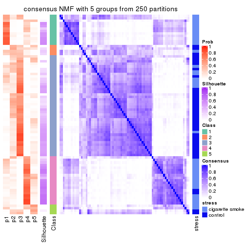
consensus_heatmap(res, k = 6)
Heatmaps for the membership of samples in all partitions to see how consistent they are:
membership_heatmap(res, k = 2)
membership_heatmap(res, k = 3)
membership_heatmap(res, k = 4)
membership_heatmap(res, k = 5)
membership_heatmap(res, k = 6)
As soon as we have had the classes for columns, we can look for signatures which are significantly different between classes which can be candidate marks for certain classes. Following are the heatmaps for signatures.
Signature heatmaps where rows are scaled:
get_signatures(res, k = 2)
get_signatures(res, k = 3)
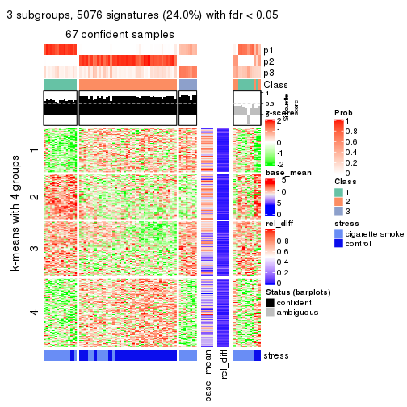
get_signatures(res, k = 4)
get_signatures(res, k = 5)
get_signatures(res, k = 6)
Signature heatmaps where rows are not scaled:
get_signatures(res, k = 2, scale_rows = FALSE)

get_signatures(res, k = 3, scale_rows = FALSE)
get_signatures(res, k = 4, scale_rows = FALSE)
get_signatures(res, k = 5, scale_rows = FALSE)
get_signatures(res, k = 6, scale_rows = FALSE)
Compare the overlap of signatures from different k:
compare_signatures(res)
get_signature() returns a data frame invisibly. TO get the list of signatures, the function
call should be assigned to a variable explicitly. In following code, if plot argument is set
to FALSE, no heatmap is plotted while only the differential analysis is performed.
# code only for demonstration
tb = get_signature(res, k = ..., plot = FALSE)
An example of the output of tb is:
#> which_row fdr mean_1 mean_2 scaled_mean_1 scaled_mean_2 km
#> 1 38 0.042760348 8.373488 9.131774 -0.5533452 0.5164555 1
#> 2 40 0.018707592 7.106213 8.469186 -0.6173731 0.5762149 1
#> 3 55 0.019134737 10.221463 11.207825 -0.6159697 0.5749050 1
#> 4 59 0.006059896 5.921854 7.869574 -0.6899429 0.6439467 1
#> 5 60 0.018055526 8.928898 10.211722 -0.6204761 0.5791110 1
#> 6 98 0.009384629 15.714769 14.887706 0.6635654 -0.6193277 2
...
The columns in tb are:
which_row: row indices corresponding to the input matrix.fdr: FDR for the differential test. mean_x: The mean value in group x.scaled_mean_x: The mean value in group x after rows are scaled.km: Row groups if k-means clustering is applied to rows.UMAP plot which shows how samples are separated.
dimension_reduction(res, k = 2, method = "UMAP")
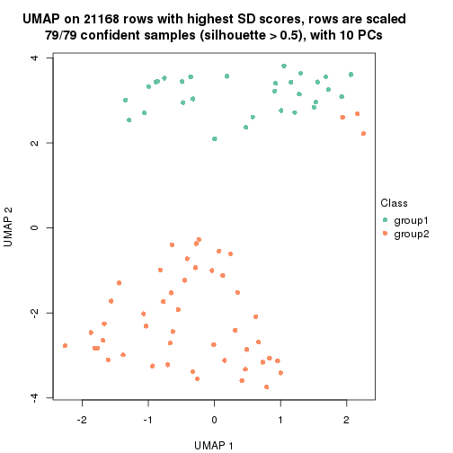
dimension_reduction(res, k = 3, method = "UMAP")
dimension_reduction(res, k = 4, method = "UMAP")
dimension_reduction(res, k = 5, method = "UMAP")
dimension_reduction(res, k = 6, method = "UMAP")
Following heatmap shows how subgroups are split when increasing k:
collect_classes(res)
Test correlation between subgroups and known annotations. If the known annotation is numeric, one-way ANOVA test is applied, and if the known annotation is discrete, chi-squared contingency table test is applied.
test_to_known_factors(res)
#> n stress(p) k
#> SD:NMF 79 4.00e-09 2
#> SD:NMF 67 1.82e-07 3
#> SD:NMF 41 2.95e-05 4
#> SD:NMF 25 4.09e-04 5
#> SD:NMF 10 1.23e-02 6
If matrix rows can be associated to genes, consider to use functional_enrichment(res,
...) to perform function enrichment for the signature genes. See this vignette for more detailed explanations.
The object with results only for a single top-value method and a single partition method can be extracted as:
res = res_list["CV", "hclust"]
# you can also extract it by
# res = res_list["CV:hclust"]
A summary of res and all the functions that can be applied to it:
res
#> A 'ConsensusPartition' object with k = 2, 3, 4, 5, 6.
#> On a matrix with 21168 rows and 79 columns.
#> Top rows (1000, 2000, 3000, 4000, 5000) are extracted by 'CV' method.
#> Subgroups are detected by 'hclust' method.
#> Performed in total 1250 partitions by row resampling.
#> Best k for subgroups seems to be 2.
#>
#> Following methods can be applied to this 'ConsensusPartition' object:
#> [1] "cola_report" "collect_classes" "collect_plots"
#> [4] "collect_stats" "colnames" "compare_signatures"
#> [7] "consensus_heatmap" "dimension_reduction" "functional_enrichment"
#> [10] "get_anno_col" "get_anno" "get_classes"
#> [13] "get_consensus" "get_matrix" "get_membership"
#> [16] "get_param" "get_signatures" "get_stats"
#> [19] "is_best_k" "is_stable_k" "membership_heatmap"
#> [22] "ncol" "nrow" "plot_ecdf"
#> [25] "rownames" "select_partition_number" "show"
#> [28] "suggest_best_k" "test_to_known_factors"
collect_plots() function collects all the plots made from res for all k (number of partitions)
into one single page to provide an easy and fast comparison between different k.
collect_plots(res)
The plots are:
k and the heatmap of
predicted classes for each k.k.k.k.All the plots in panels can be made by individual functions and they are plotted later in this section.
select_partition_number() produces several plots showing different
statistics for choosing “optimized” k. There are following statistics:
k;k, the area increased is defined as \(A_k - A_{k-1}\).The detailed explanations of these statistics can be found in the cola vignette.
Generally speaking, lower PAC score, higher mean silhouette score or higher
concordance corresponds to better partition. Rand index and Jaccard index
measure how similar the current partition is compared to partition with k-1.
If they are too similar, we won't accept k is better than k-1.
select_partition_number(res)
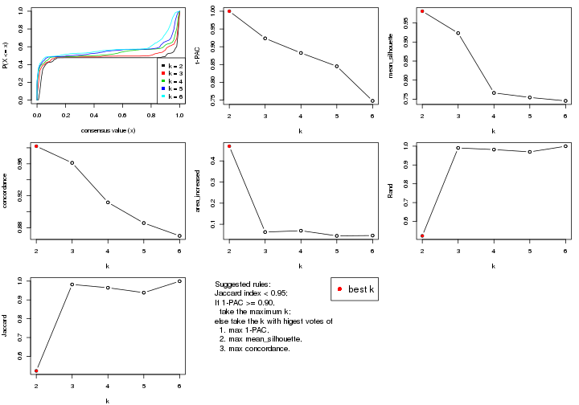
The numeric values for all these statistics can be obtained by get_stats().
get_stats(res)
#> k 1-PAC mean_silhouette concordance area_increased Rand Jaccard
#> 2 2 1.000 0.981 0.982 0.4694 0.523 0.523
#> 3 3 0.924 0.923 0.961 0.0632 0.991 0.982
#> 4 4 0.883 0.766 0.912 0.0696 0.982 0.965
#> 5 5 0.845 0.754 0.886 0.0452 0.969 0.939
#> 6 6 0.748 0.746 0.870 0.0467 1.000 0.999
suggest_best_k() suggests the best \(k\) based on these statistics. The rules are as follows:
suggest_best_k(res)
#> [1] 2
Following shows the table of the partitions (You need to click the show/hide
code output link to see it). The membership matrix (columns with name p*)
is inferred by
clue::cl_consensus()
function with the SE method. Basically the value in the membership matrix
represents the probability to belong to a certain group. The finall class
label for an item is determined with the group with highest probability it
belongs to.
In get_classes() function, the entropy is calculated from the membership
matrix and the silhouette score is calculated from the consensus matrix.
cbind(get_classes(res, k = 2), get_membership(res, k = 2))
#> class entropy silhouette p1 p2
#> GSM464697 2 0.0376 0.990 0.004 0.996
#> GSM464698 2 0.0376 0.990 0.004 0.996
#> GSM464699 2 0.0000 0.990 0.000 1.000
#> GSM464700 2 0.2043 0.972 0.032 0.968
#> GSM464701 2 0.0672 0.990 0.008 0.992
#> GSM464702 2 0.0000 0.990 0.000 1.000
#> GSM464703 2 0.0376 0.990 0.004 0.996
#> GSM464704 2 0.0376 0.990 0.004 0.996
#> GSM464705 2 0.0938 0.987 0.012 0.988
#> GSM464706 2 0.0938 0.987 0.012 0.988
#> GSM464707 2 0.0376 0.990 0.004 0.996
#> GSM464708 2 0.0000 0.990 0.000 1.000
#> GSM464709 2 0.0376 0.990 0.004 0.996
#> GSM464710 2 0.0376 0.990 0.004 0.996
#> GSM464711 2 0.1184 0.986 0.016 0.984
#> GSM464712 2 0.1184 0.985 0.016 0.984
#> GSM464713 2 0.0000 0.990 0.000 1.000
#> GSM464714 2 0.4431 0.903 0.092 0.908
#> GSM464715 2 0.0000 0.990 0.000 1.000
#> GSM464716 2 0.0938 0.987 0.012 0.988
#> GSM464717 2 0.0672 0.989 0.008 0.992
#> GSM464718 2 0.4431 0.911 0.092 0.908
#> GSM464719 2 0.0000 0.990 0.000 1.000
#> GSM464720 2 0.0376 0.990 0.004 0.996
#> GSM464721 1 0.1414 0.983 0.980 0.020
#> GSM464722 2 0.1184 0.985 0.016 0.984
#> GSM464723 1 0.0938 0.980 0.988 0.012
#> GSM464724 2 0.0000 0.990 0.000 1.000
#> GSM464725 2 0.0672 0.990 0.008 0.992
#> GSM464726 2 0.0000 0.990 0.000 1.000
#> GSM464727 2 0.2043 0.971 0.032 0.968
#> GSM464728 2 0.0000 0.990 0.000 1.000
#> GSM464729 2 0.0000 0.990 0.000 1.000
#> GSM464730 2 0.0376 0.990 0.004 0.996
#> GSM464731 2 0.0000 0.990 0.000 1.000
#> GSM464732 2 0.0376 0.990 0.004 0.996
#> GSM464733 2 0.0000 0.990 0.000 1.000
#> GSM464734 2 0.0672 0.990 0.008 0.992
#> GSM464735 2 0.0000 0.990 0.000 1.000
#> GSM464736 2 0.0000 0.990 0.000 1.000
#> GSM464658 1 0.4939 0.909 0.892 0.108
#> GSM464659 1 0.3431 0.955 0.936 0.064
#> GSM464660 1 0.1633 0.984 0.976 0.024
#> GSM464661 1 0.1633 0.970 0.976 0.024
#> GSM464662 2 0.0376 0.990 0.004 0.996
#> GSM464663 1 0.0938 0.980 0.988 0.012
#> GSM464664 2 0.0938 0.988 0.012 0.988
#> GSM464665 1 0.1843 0.982 0.972 0.028
#> GSM464666 1 0.1843 0.982 0.972 0.028
#> GSM464667 1 0.1633 0.984 0.976 0.024
#> GSM464668 1 0.2043 0.981 0.968 0.032
#> GSM464669 1 0.1414 0.984 0.980 0.020
#> GSM464670 1 0.1414 0.984 0.980 0.020
#> GSM464671 1 0.1414 0.984 0.980 0.020
#> GSM464672 1 0.0672 0.977 0.992 0.008
#> GSM464673 1 0.1414 0.984 0.980 0.020
#> GSM464674 1 0.1414 0.982 0.980 0.020
#> GSM464675 1 0.1414 0.984 0.980 0.020
#> GSM464676 1 0.1414 0.984 0.980 0.020
#> GSM464677 2 0.0672 0.989 0.008 0.992
#> GSM464678 1 0.1414 0.984 0.980 0.020
#> GSM464679 2 0.0376 0.990 0.004 0.996
#> GSM464680 2 0.0938 0.987 0.012 0.988
#> GSM464681 1 0.1843 0.982 0.972 0.028
#> GSM464682 2 0.0938 0.988 0.012 0.988
#> GSM464683 2 0.0376 0.990 0.004 0.996
#> GSM464684 2 0.0376 0.990 0.004 0.996
#> GSM464685 2 0.0938 0.987 0.012 0.988
#> GSM464686 2 0.0376 0.990 0.004 0.996
#> GSM464687 2 0.0376 0.990 0.004 0.996
#> GSM464688 1 0.2603 0.972 0.956 0.044
#> GSM464689 1 0.2423 0.976 0.960 0.040
#> GSM464690 1 0.5629 0.880 0.868 0.132
#> GSM464691 1 0.1633 0.984 0.976 0.024
#> GSM464692 1 0.3274 0.959 0.940 0.060
#> GSM464693 1 0.1184 0.982 0.984 0.016
#> GSM464694 1 0.1184 0.982 0.984 0.016
#> GSM464695 1 0.0938 0.980 0.988 0.012
#> GSM464696 1 0.1633 0.984 0.976 0.024
cbind(get_classes(res, k = 3), get_membership(res, k = 3))
#> class entropy silhouette p1 p2 p3
#> GSM464697 2 0.0475 0.987 0.004 0.992 0.004
#> GSM464698 2 0.0237 0.988 0.004 0.996 0.000
#> GSM464699 2 0.0237 0.987 0.000 0.996 0.004
#> GSM464700 2 0.1289 0.968 0.032 0.968 0.000
#> GSM464701 2 0.0661 0.986 0.008 0.988 0.004
#> GSM464702 2 0.0000 0.987 0.000 1.000 0.000
#> GSM464703 2 0.0424 0.986 0.000 0.992 0.008
#> GSM464704 2 0.0237 0.988 0.004 0.996 0.000
#> GSM464705 2 0.0829 0.983 0.012 0.984 0.004
#> GSM464706 2 0.0592 0.985 0.012 0.988 0.000
#> GSM464707 2 0.0237 0.988 0.000 0.996 0.004
#> GSM464708 2 0.0000 0.987 0.000 1.000 0.000
#> GSM464709 2 0.0237 0.987 0.004 0.996 0.000
#> GSM464710 2 0.0237 0.988 0.004 0.996 0.000
#> GSM464711 2 0.0983 0.981 0.016 0.980 0.004
#> GSM464712 2 0.0747 0.982 0.016 0.984 0.000
#> GSM464713 2 0.0237 0.987 0.000 0.996 0.004
#> GSM464714 2 0.3293 0.882 0.088 0.900 0.012
#> GSM464715 2 0.0000 0.987 0.000 1.000 0.000
#> GSM464716 2 0.0592 0.984 0.012 0.988 0.000
#> GSM464717 2 0.0424 0.987 0.008 0.992 0.000
#> GSM464718 2 0.3030 0.893 0.092 0.904 0.004
#> GSM464719 2 0.0000 0.987 0.000 1.000 0.000
#> GSM464720 2 0.0475 0.987 0.004 0.992 0.004
#> GSM464721 1 0.2774 0.904 0.920 0.008 0.072
#> GSM464722 2 0.1129 0.977 0.020 0.976 0.004
#> GSM464723 1 0.2796 0.891 0.908 0.000 0.092
#> GSM464724 2 0.0000 0.987 0.000 1.000 0.000
#> GSM464725 2 0.0424 0.987 0.008 0.992 0.000
#> GSM464726 2 0.0000 0.987 0.000 1.000 0.000
#> GSM464727 2 0.1525 0.964 0.032 0.964 0.004
#> GSM464728 2 0.0000 0.987 0.000 1.000 0.000
#> GSM464729 2 0.0000 0.987 0.000 1.000 0.000
#> GSM464730 2 0.0237 0.988 0.004 0.996 0.000
#> GSM464731 2 0.0000 0.987 0.000 1.000 0.000
#> GSM464732 2 0.0237 0.988 0.004 0.996 0.000
#> GSM464733 2 0.0000 0.987 0.000 1.000 0.000
#> GSM464734 2 0.0424 0.987 0.008 0.992 0.000
#> GSM464735 2 0.0237 0.987 0.000 0.996 0.004
#> GSM464736 2 0.0237 0.988 0.004 0.996 0.000
#> GSM464658 1 0.3670 0.821 0.888 0.092 0.020
#> GSM464659 1 0.2599 0.885 0.932 0.052 0.016
#> GSM464660 1 0.0848 0.916 0.984 0.008 0.008
#> GSM464661 3 0.2878 0.000 0.096 0.000 0.904
#> GSM464662 2 0.0237 0.988 0.004 0.996 0.000
#> GSM464663 1 0.2625 0.898 0.916 0.000 0.084
#> GSM464664 2 0.0592 0.985 0.012 0.988 0.000
#> GSM464665 1 0.1015 0.917 0.980 0.012 0.008
#> GSM464666 1 0.4663 0.827 0.828 0.016 0.156
#> GSM464667 1 0.1015 0.917 0.980 0.008 0.012
#> GSM464668 1 0.1491 0.917 0.968 0.016 0.016
#> GSM464669 1 0.2590 0.907 0.924 0.004 0.072
#> GSM464670 1 0.0661 0.915 0.988 0.004 0.008
#> GSM464671 1 0.0661 0.915 0.988 0.004 0.008
#> GSM464672 1 0.4235 0.813 0.824 0.000 0.176
#> GSM464673 1 0.2200 0.911 0.940 0.004 0.056
#> GSM464674 1 0.4521 0.805 0.816 0.004 0.180
#> GSM464675 1 0.1170 0.916 0.976 0.008 0.016
#> GSM464676 1 0.1170 0.916 0.976 0.008 0.016
#> GSM464677 2 0.0424 0.987 0.008 0.992 0.000
#> GSM464678 1 0.0983 0.914 0.980 0.004 0.016
#> GSM464679 2 0.0237 0.988 0.004 0.996 0.000
#> GSM464680 2 0.0592 0.985 0.012 0.988 0.000
#> GSM464681 1 0.1950 0.916 0.952 0.008 0.040
#> GSM464682 2 0.0592 0.985 0.012 0.988 0.000
#> GSM464683 2 0.0237 0.988 0.004 0.996 0.000
#> GSM464684 2 0.0237 0.988 0.004 0.996 0.000
#> GSM464685 2 0.0592 0.985 0.012 0.988 0.000
#> GSM464686 2 0.0424 0.987 0.008 0.992 0.000
#> GSM464687 2 0.0237 0.988 0.004 0.996 0.000
#> GSM464688 1 0.1905 0.909 0.956 0.028 0.016
#> GSM464689 1 0.1620 0.912 0.964 0.024 0.012
#> GSM464690 1 0.8984 -0.130 0.440 0.128 0.432
#> GSM464691 1 0.4228 0.849 0.844 0.008 0.148
#> GSM464692 1 0.2550 0.881 0.932 0.056 0.012
#> GSM464693 1 0.0983 0.915 0.980 0.004 0.016
#> GSM464694 1 0.3425 0.879 0.884 0.004 0.112
#> GSM464695 1 0.2165 0.903 0.936 0.000 0.064
#> GSM464696 1 0.1170 0.917 0.976 0.008 0.016
cbind(get_classes(res, k = 4), get_membership(res, k = 4))
#> class entropy silhouette p1 p2 p3 p4
#> GSM464697 2 0.0921 0.976676 0.000 0.972 0.028 0.000
#> GSM464698 2 0.0188 0.984151 0.000 0.996 0.004 0.000
#> GSM464699 2 0.0524 0.982823 0.000 0.988 0.008 0.004
#> GSM464700 2 0.1362 0.968157 0.020 0.964 0.012 0.004
#> GSM464701 2 0.0592 0.982468 0.000 0.984 0.016 0.000
#> GSM464702 2 0.0000 0.983724 0.000 1.000 0.000 0.000
#> GSM464703 2 0.1356 0.969510 0.000 0.960 0.032 0.008
#> GSM464704 2 0.0188 0.984151 0.000 0.996 0.004 0.000
#> GSM464705 2 0.1004 0.978234 0.004 0.972 0.024 0.000
#> GSM464706 2 0.0712 0.982090 0.008 0.984 0.004 0.004
#> GSM464707 2 0.0336 0.984444 0.000 0.992 0.008 0.000
#> GSM464708 2 0.0000 0.983724 0.000 1.000 0.000 0.000
#> GSM464709 2 0.0376 0.984107 0.000 0.992 0.004 0.004
#> GSM464710 2 0.0336 0.983955 0.000 0.992 0.008 0.000
#> GSM464711 2 0.0817 0.979291 0.000 0.976 0.024 0.000
#> GSM464712 2 0.0804 0.979705 0.012 0.980 0.008 0.000
#> GSM464713 2 0.0657 0.981947 0.000 0.984 0.012 0.004
#> GSM464714 2 0.2943 0.879466 0.076 0.892 0.032 0.000
#> GSM464715 2 0.0188 0.983804 0.000 0.996 0.004 0.000
#> GSM464716 2 0.0524 0.983150 0.008 0.988 0.004 0.000
#> GSM464717 2 0.0376 0.984188 0.000 0.992 0.004 0.004
#> GSM464718 2 0.3029 0.892688 0.068 0.896 0.028 0.008
#> GSM464719 2 0.0000 0.983724 0.000 1.000 0.000 0.000
#> GSM464720 2 0.0779 0.983142 0.000 0.980 0.016 0.004
#> GSM464721 1 0.5250 0.175745 0.552 0.000 0.440 0.008
#> GSM464722 2 0.1398 0.967609 0.000 0.956 0.040 0.004
#> GSM464723 1 0.5716 -0.000668 0.552 0.000 0.420 0.028
#> GSM464724 2 0.0188 0.983804 0.000 0.996 0.004 0.000
#> GSM464725 2 0.0844 0.982756 0.004 0.980 0.012 0.004
#> GSM464726 2 0.0188 0.984210 0.000 0.996 0.000 0.004
#> GSM464727 2 0.1509 0.965307 0.020 0.960 0.012 0.008
#> GSM464728 2 0.0188 0.984210 0.000 0.996 0.000 0.004
#> GSM464729 2 0.0000 0.983724 0.000 1.000 0.000 0.000
#> GSM464730 2 0.0188 0.984401 0.000 0.996 0.004 0.000
#> GSM464731 2 0.0000 0.983724 0.000 1.000 0.000 0.000
#> GSM464732 2 0.0188 0.984151 0.000 0.996 0.004 0.000
#> GSM464733 2 0.0000 0.983724 0.000 1.000 0.000 0.000
#> GSM464734 2 0.0469 0.983347 0.000 0.988 0.012 0.000
#> GSM464735 2 0.1209 0.972095 0.000 0.964 0.032 0.004
#> GSM464736 2 0.0376 0.984416 0.004 0.992 0.004 0.000
#> GSM464658 1 0.3705 0.536027 0.860 0.084 0.052 0.004
#> GSM464659 1 0.3299 0.630893 0.888 0.044 0.056 0.012
#> GSM464660 1 0.1004 0.674534 0.972 0.000 0.024 0.004
#> GSM464661 4 0.0921 0.300998 0.028 0.000 0.000 0.972
#> GSM464662 2 0.0188 0.984151 0.000 0.996 0.004 0.000
#> GSM464663 1 0.5040 0.350815 0.628 0.000 0.364 0.008
#> GSM464664 2 0.0967 0.981497 0.004 0.976 0.016 0.004
#> GSM464665 1 0.1675 0.677152 0.948 0.004 0.044 0.004
#> GSM464666 1 0.6956 -0.192378 0.504 0.008 0.400 0.088
#> GSM464667 1 0.2466 0.668284 0.900 0.000 0.096 0.004
#> GSM464668 1 0.2156 0.673279 0.928 0.008 0.060 0.004
#> GSM464669 1 0.4422 0.145168 0.736 0.000 0.256 0.008
#> GSM464670 1 0.1743 0.676942 0.940 0.000 0.056 0.004
#> GSM464671 1 0.1004 0.673975 0.972 0.000 0.024 0.004
#> GSM464672 3 0.6275 0.000000 0.460 0.000 0.484 0.056
#> GSM464673 1 0.4720 0.459153 0.720 0.000 0.264 0.016
#> GSM464674 1 0.6746 0.079562 0.568 0.000 0.316 0.116
#> GSM464675 1 0.0564 0.668254 0.988 0.004 0.004 0.004
#> GSM464676 1 0.0564 0.668161 0.988 0.004 0.004 0.004
#> GSM464677 2 0.0712 0.983055 0.004 0.984 0.008 0.004
#> GSM464678 1 0.0469 0.670065 0.988 0.000 0.012 0.000
#> GSM464679 2 0.0188 0.984151 0.000 0.996 0.004 0.000
#> GSM464680 2 0.0712 0.982090 0.008 0.984 0.004 0.004
#> GSM464681 1 0.2450 0.628333 0.912 0.000 0.072 0.016
#> GSM464682 2 0.0967 0.981479 0.004 0.976 0.016 0.004
#> GSM464683 2 0.0336 0.984245 0.000 0.992 0.008 0.000
#> GSM464684 2 0.0376 0.984674 0.000 0.992 0.004 0.004
#> GSM464685 2 0.0672 0.982457 0.008 0.984 0.008 0.000
#> GSM464686 2 0.0524 0.983711 0.008 0.988 0.004 0.000
#> GSM464687 2 0.0524 0.983887 0.004 0.988 0.008 0.000
#> GSM464688 1 0.2165 0.653651 0.936 0.024 0.032 0.008
#> GSM464689 1 0.1892 0.669977 0.944 0.016 0.036 0.004
#> GSM464690 4 0.9243 -0.095009 0.288 0.080 0.268 0.364
#> GSM464691 1 0.5929 -0.266775 0.596 0.000 0.356 0.048
#> GSM464692 1 0.2467 0.621564 0.920 0.052 0.024 0.004
#> GSM464693 1 0.1452 0.676248 0.956 0.000 0.036 0.008
#> GSM464694 1 0.6240 0.281684 0.604 0.000 0.320 0.076
#> GSM464695 1 0.4991 0.270633 0.608 0.000 0.388 0.004
#> GSM464696 1 0.2281 0.667676 0.904 0.000 0.096 0.000
cbind(get_classes(res, k = 5), get_membership(res, k = 5))
#> class entropy silhouette p1 p2 p3 p4 p5
#> GSM464697 3 0.2352 0.9207 0.000 0.092 0.896 0.008 0.004
#> GSM464698 3 0.0510 0.9757 0.000 0.016 0.984 0.000 0.000
#> GSM464699 3 0.0703 0.9726 0.000 0.024 0.976 0.000 0.000
#> GSM464700 3 0.1405 0.9663 0.020 0.016 0.956 0.008 0.000
#> GSM464701 3 0.0880 0.9718 0.000 0.032 0.968 0.000 0.000
#> GSM464702 3 0.0404 0.9759 0.000 0.012 0.988 0.000 0.000
#> GSM464703 3 0.2722 0.8977 0.000 0.120 0.868 0.008 0.004
#> GSM464704 3 0.0510 0.9756 0.000 0.016 0.984 0.000 0.000
#> GSM464705 3 0.1243 0.9681 0.004 0.028 0.960 0.008 0.000
#> GSM464706 3 0.0992 0.9747 0.008 0.024 0.968 0.000 0.000
#> GSM464707 3 0.0865 0.9736 0.000 0.024 0.972 0.004 0.000
#> GSM464708 3 0.0162 0.9754 0.000 0.004 0.996 0.000 0.000
#> GSM464709 3 0.0510 0.9761 0.000 0.016 0.984 0.000 0.000
#> GSM464710 3 0.0510 0.9763 0.000 0.016 0.984 0.000 0.000
#> GSM464711 3 0.1041 0.9704 0.000 0.032 0.964 0.004 0.000
#> GSM464712 3 0.1267 0.9727 0.012 0.024 0.960 0.004 0.000
#> GSM464713 3 0.0794 0.9722 0.000 0.028 0.972 0.000 0.000
#> GSM464714 3 0.3305 0.8762 0.056 0.032 0.868 0.044 0.000
#> GSM464715 3 0.0609 0.9764 0.000 0.020 0.980 0.000 0.000
#> GSM464716 3 0.0898 0.9762 0.008 0.020 0.972 0.000 0.000
#> GSM464717 3 0.0703 0.9764 0.000 0.024 0.976 0.000 0.000
#> GSM464718 3 0.3279 0.8896 0.064 0.032 0.872 0.028 0.004
#> GSM464719 3 0.0404 0.9753 0.000 0.012 0.988 0.000 0.000
#> GSM464720 3 0.0865 0.9765 0.000 0.024 0.972 0.000 0.004
#> GSM464721 4 0.4879 0.6450 0.360 0.020 0.000 0.612 0.008
#> GSM464722 3 0.1469 0.9625 0.000 0.036 0.948 0.016 0.000
#> GSM464723 4 0.6086 0.5818 0.340 0.084 0.000 0.556 0.020
#> GSM464724 3 0.0404 0.9758 0.000 0.012 0.988 0.000 0.000
#> GSM464725 3 0.0771 0.9761 0.004 0.020 0.976 0.000 0.000
#> GSM464726 3 0.0290 0.9756 0.000 0.008 0.992 0.000 0.000
#> GSM464727 3 0.1862 0.9566 0.016 0.028 0.940 0.012 0.004
#> GSM464728 3 0.0510 0.9763 0.000 0.016 0.984 0.000 0.000
#> GSM464729 3 0.0510 0.9755 0.000 0.016 0.984 0.000 0.000
#> GSM464730 3 0.0510 0.9765 0.000 0.016 0.984 0.000 0.000
#> GSM464731 3 0.0404 0.9757 0.000 0.012 0.988 0.000 0.000
#> GSM464732 3 0.0510 0.9757 0.000 0.016 0.984 0.000 0.000
#> GSM464733 3 0.0162 0.9754 0.000 0.004 0.996 0.000 0.000
#> GSM464734 3 0.1043 0.9705 0.000 0.040 0.960 0.000 0.000
#> GSM464735 3 0.1168 0.9672 0.000 0.032 0.960 0.008 0.000
#> GSM464736 3 0.0865 0.9761 0.004 0.024 0.972 0.000 0.000
#> GSM464658 1 0.3859 0.5770 0.836 0.036 0.060 0.068 0.000
#> GSM464659 1 0.3286 0.6561 0.872 0.016 0.040 0.064 0.008
#> GSM464660 1 0.0992 0.7028 0.968 0.008 0.000 0.024 0.000
#> GSM464661 5 0.0290 0.0000 0.008 0.000 0.000 0.000 0.992
#> GSM464662 3 0.0510 0.9757 0.000 0.016 0.984 0.000 0.000
#> GSM464663 1 0.5159 -0.4289 0.496 0.024 0.000 0.472 0.008
#> GSM464664 3 0.1026 0.9752 0.004 0.024 0.968 0.004 0.000
#> GSM464665 1 0.1731 0.6940 0.932 0.000 0.004 0.060 0.004
#> GSM464666 4 0.6641 0.3792 0.360 0.060 0.004 0.516 0.060
#> GSM464667 1 0.2660 0.6586 0.864 0.008 0.000 0.128 0.000
#> GSM464668 1 0.2330 0.6769 0.900 0.004 0.004 0.088 0.004
#> GSM464669 1 0.5707 0.1272 0.624 0.160 0.000 0.216 0.000
#> GSM464670 1 0.1697 0.6972 0.932 0.008 0.000 0.060 0.000
#> GSM464671 1 0.0992 0.7010 0.968 0.008 0.000 0.024 0.000
#> GSM464672 2 0.6514 0.1231 0.268 0.548 0.000 0.168 0.016
#> GSM464673 1 0.5087 -0.1297 0.600 0.020 0.000 0.364 0.016
#> GSM464674 1 0.7043 -0.3305 0.472 0.104 0.000 0.360 0.064
#> GSM464675 1 0.0613 0.7010 0.984 0.004 0.004 0.008 0.000
#> GSM464676 1 0.0613 0.7010 0.984 0.004 0.004 0.008 0.000
#> GSM464677 3 0.0865 0.9759 0.004 0.024 0.972 0.000 0.000
#> GSM464678 1 0.0404 0.7012 0.988 0.000 0.000 0.012 0.000
#> GSM464679 3 0.0510 0.9757 0.000 0.016 0.984 0.000 0.000
#> GSM464680 3 0.0898 0.9750 0.008 0.020 0.972 0.000 0.000
#> GSM464681 1 0.3009 0.6369 0.876 0.052 0.000 0.064 0.008
#> GSM464682 3 0.1202 0.9746 0.004 0.032 0.960 0.004 0.000
#> GSM464683 3 0.0609 0.9761 0.000 0.020 0.980 0.000 0.000
#> GSM464684 3 0.0771 0.9768 0.000 0.020 0.976 0.004 0.000
#> GSM464685 3 0.0960 0.9755 0.008 0.016 0.972 0.004 0.000
#> GSM464686 3 0.0992 0.9751 0.008 0.024 0.968 0.000 0.000
#> GSM464687 3 0.0955 0.9755 0.004 0.028 0.968 0.000 0.000
#> GSM464688 1 0.2128 0.6882 0.928 0.012 0.020 0.036 0.004
#> GSM464689 1 0.1883 0.6969 0.932 0.008 0.012 0.048 0.000
#> GSM464690 2 0.9100 -0.0243 0.208 0.304 0.028 0.224 0.236
#> GSM464691 1 0.6899 -0.2643 0.460 0.200 0.000 0.324 0.016
#> GSM464692 1 0.2409 0.6606 0.912 0.016 0.044 0.028 0.000
#> GSM464693 1 0.1331 0.7001 0.952 0.000 0.000 0.040 0.008
#> GSM464694 1 0.6188 -0.4917 0.472 0.024 0.000 0.432 0.072
#> GSM464695 4 0.5201 0.4968 0.424 0.044 0.000 0.532 0.000
#> GSM464696 1 0.2574 0.6621 0.876 0.012 0.000 0.112 0.000
cbind(get_classes(res, k = 6), get_membership(res, k = 6))
#> class entropy silhouette p1 p2 p3 p4 p5 p6
#> GSM464697 2 0.3351 0.8383 0.028 0.800 0.168 0.000 0.000 0.004
#> GSM464698 2 0.0508 0.9564 0.000 0.984 0.012 0.000 0.000 0.004
#> GSM464699 2 0.2151 0.9313 0.016 0.904 0.072 0.000 0.000 0.008
#> GSM464700 2 0.1652 0.9541 0.016 0.944 0.012 0.020 0.004 0.004
#> GSM464701 2 0.2123 0.9369 0.020 0.908 0.064 0.000 0.000 0.008
#> GSM464702 2 0.0790 0.9571 0.000 0.968 0.032 0.000 0.000 0.000
#> GSM464703 2 0.3301 0.8250 0.024 0.788 0.188 0.000 0.000 0.000
#> GSM464704 2 0.1010 0.9573 0.004 0.960 0.036 0.000 0.000 0.000
#> GSM464705 2 0.2144 0.9356 0.008 0.908 0.068 0.004 0.000 0.012
#> GSM464706 2 0.1483 0.9569 0.004 0.948 0.032 0.008 0.004 0.004
#> GSM464707 2 0.1409 0.9573 0.012 0.948 0.032 0.000 0.000 0.008
#> GSM464708 2 0.0547 0.9568 0.000 0.980 0.020 0.000 0.000 0.000
#> GSM464709 2 0.0922 0.9576 0.004 0.968 0.024 0.000 0.004 0.000
#> GSM464710 2 0.1080 0.9559 0.004 0.960 0.032 0.000 0.000 0.004
#> GSM464711 2 0.2444 0.9264 0.028 0.892 0.068 0.000 0.000 0.012
#> GSM464712 2 0.1476 0.9578 0.008 0.948 0.028 0.012 0.000 0.004
#> GSM464713 2 0.1845 0.9405 0.008 0.916 0.072 0.000 0.000 0.004
#> GSM464714 2 0.3787 0.8546 0.008 0.824 0.068 0.040 0.000 0.060
#> GSM464715 2 0.1155 0.9597 0.004 0.956 0.036 0.000 0.000 0.004
#> GSM464716 2 0.1624 0.9569 0.012 0.936 0.044 0.008 0.000 0.000
#> GSM464717 2 0.1296 0.9582 0.004 0.948 0.044 0.000 0.004 0.000
#> GSM464718 2 0.3958 0.8654 0.036 0.824 0.064 0.052 0.004 0.020
#> GSM464719 2 0.1003 0.9575 0.004 0.964 0.028 0.000 0.000 0.004
#> GSM464720 2 0.1391 0.9591 0.016 0.944 0.040 0.000 0.000 0.000
#> GSM464721 6 0.3773 0.4622 0.020 0.000 0.020 0.192 0.000 0.768
#> GSM464722 2 0.2127 0.9406 0.012 0.912 0.060 0.000 0.004 0.012
#> GSM464723 6 0.6120 0.2469 0.204 0.000 0.044 0.140 0.012 0.600
#> GSM464724 2 0.0777 0.9573 0.000 0.972 0.024 0.000 0.000 0.004
#> GSM464725 2 0.1442 0.9560 0.012 0.944 0.040 0.004 0.000 0.000
#> GSM464726 2 0.0713 0.9573 0.000 0.972 0.028 0.000 0.000 0.000
#> GSM464727 2 0.2656 0.9279 0.020 0.892 0.060 0.016 0.004 0.008
#> GSM464728 2 0.0692 0.9584 0.000 0.976 0.020 0.000 0.000 0.004
#> GSM464729 2 0.0865 0.9563 0.000 0.964 0.036 0.000 0.000 0.000
#> GSM464730 2 0.1007 0.9588 0.000 0.956 0.044 0.000 0.000 0.000
#> GSM464731 2 0.0713 0.9574 0.000 0.972 0.028 0.000 0.000 0.000
#> GSM464732 2 0.0508 0.9564 0.000 0.984 0.012 0.000 0.000 0.004
#> GSM464733 2 0.0363 0.9568 0.000 0.988 0.012 0.000 0.000 0.000
#> GSM464734 2 0.1841 0.9462 0.008 0.920 0.064 0.000 0.000 0.008
#> GSM464735 2 0.2666 0.9067 0.028 0.872 0.092 0.000 0.000 0.008
#> GSM464736 2 0.1534 0.9573 0.016 0.944 0.032 0.004 0.000 0.004
#> GSM464658 4 0.3745 0.6634 0.008 0.036 0.060 0.832 0.004 0.060
#> GSM464659 4 0.3304 0.7040 0.004 0.040 0.024 0.860 0.012 0.060
#> GSM464660 4 0.0972 0.7390 0.008 0.000 0.000 0.964 0.000 0.028
#> GSM464661 5 0.0260 0.0000 0.000 0.000 0.000 0.008 0.992 0.000
#> GSM464662 2 0.0508 0.9564 0.000 0.984 0.012 0.000 0.000 0.004
#> GSM464663 4 0.6749 -0.1440 0.088 0.000 0.100 0.452 0.008 0.352
#> GSM464664 2 0.1536 0.9568 0.016 0.940 0.040 0.004 0.000 0.000
#> GSM464665 4 0.1956 0.7323 0.008 0.004 0.004 0.920 0.004 0.060
#> GSM464666 6 0.6718 0.2056 0.048 0.004 0.164 0.232 0.016 0.536
#> GSM464667 4 0.2868 0.7008 0.008 0.000 0.008 0.844 0.004 0.136
#> GSM464668 4 0.2701 0.7182 0.016 0.004 0.012 0.880 0.004 0.084
#> GSM464669 4 0.6365 0.0482 0.228 0.000 0.088 0.556 0.000 0.128
#> GSM464670 4 0.1707 0.7367 0.000 0.000 0.012 0.928 0.004 0.056
#> GSM464671 4 0.0972 0.7377 0.008 0.000 0.000 0.964 0.000 0.028
#> GSM464672 1 0.3121 0.0000 0.796 0.000 0.000 0.192 0.004 0.008
#> GSM464673 4 0.6429 0.1476 0.068 0.000 0.096 0.556 0.016 0.264
#> GSM464674 4 0.7473 -0.1435 0.048 0.000 0.224 0.436 0.052 0.240
#> GSM464675 4 0.0508 0.7375 0.012 0.004 0.000 0.984 0.000 0.000
#> GSM464676 4 0.0508 0.7375 0.012 0.004 0.000 0.984 0.000 0.000
#> GSM464677 2 0.1405 0.9575 0.008 0.952 0.028 0.004 0.004 0.004
#> GSM464678 4 0.0405 0.7371 0.000 0.000 0.008 0.988 0.000 0.004
#> GSM464679 2 0.0508 0.9564 0.000 0.984 0.012 0.000 0.000 0.004
#> GSM464680 2 0.1338 0.9572 0.004 0.952 0.032 0.008 0.004 0.000
#> GSM464681 4 0.3178 0.6710 0.104 0.000 0.016 0.848 0.008 0.024
#> GSM464682 2 0.1699 0.9566 0.012 0.936 0.040 0.004 0.000 0.008
#> GSM464683 2 0.0603 0.9570 0.000 0.980 0.016 0.000 0.000 0.004
#> GSM464684 2 0.1149 0.9577 0.008 0.960 0.024 0.000 0.000 0.008
#> GSM464685 2 0.1149 0.9592 0.008 0.960 0.024 0.008 0.000 0.000
#> GSM464686 2 0.1647 0.9560 0.016 0.940 0.032 0.008 0.000 0.004
#> GSM464687 2 0.1067 0.9580 0.004 0.964 0.024 0.004 0.000 0.004
#> GSM464688 4 0.2226 0.7284 0.024 0.016 0.016 0.920 0.004 0.020
#> GSM464689 4 0.1862 0.7352 0.000 0.008 0.016 0.928 0.004 0.044
#> GSM464690 3 0.6033 0.0000 0.008 0.008 0.624 0.164 0.160 0.036
#> GSM464691 4 0.7281 -0.3716 0.108 0.000 0.312 0.408 0.008 0.164
#> GSM464692 4 0.2503 0.7084 0.008 0.040 0.024 0.904 0.004 0.020
#> GSM464693 4 0.1565 0.7384 0.008 0.000 0.008 0.944 0.008 0.032
#> GSM464694 4 0.7456 -0.2714 0.064 0.000 0.100 0.404 0.076 0.356
#> GSM464695 6 0.7040 0.2479 0.152 0.000 0.092 0.348 0.004 0.404
#> GSM464696 4 0.2631 0.7069 0.012 0.000 0.004 0.856 0.000 0.128
Heatmaps for the consensus matrix. It visualizes the probability of two samples to be in a same group.
consensus_heatmap(res, k = 2)
consensus_heatmap(res, k = 3)
consensus_heatmap(res, k = 4)
consensus_heatmap(res, k = 5)
consensus_heatmap(res, k = 6)
Heatmaps for the membership of samples in all partitions to see how consistent they are:
membership_heatmap(res, k = 2)
membership_heatmap(res, k = 3)
membership_heatmap(res, k = 4)
membership_heatmap(res, k = 5)
membership_heatmap(res, k = 6)
As soon as we have had the classes for columns, we can look for signatures which are significantly different between classes which can be candidate marks for certain classes. Following are the heatmaps for signatures.
Signature heatmaps where rows are scaled:
get_signatures(res, k = 2)

get_signatures(res, k = 3)
get_signatures(res, k = 4)
get_signatures(res, k = 5)
get_signatures(res, k = 6)
Signature heatmaps where rows are not scaled:
get_signatures(res, k = 2, scale_rows = FALSE)
get_signatures(res, k = 3, scale_rows = FALSE)
get_signatures(res, k = 4, scale_rows = FALSE)
get_signatures(res, k = 5, scale_rows = FALSE)

get_signatures(res, k = 6, scale_rows = FALSE)
Compare the overlap of signatures from different k:
compare_signatures(res)
get_signature() returns a data frame invisibly. TO get the list of signatures, the function
call should be assigned to a variable explicitly. In following code, if plot argument is set
to FALSE, no heatmap is plotted while only the differential analysis is performed.
# code only for demonstration
tb = get_signature(res, k = ..., plot = FALSE)
An example of the output of tb is:
#> which_row fdr mean_1 mean_2 scaled_mean_1 scaled_mean_2 km
#> 1 38 0.042760348 8.373488 9.131774 -0.5533452 0.5164555 1
#> 2 40 0.018707592 7.106213 8.469186 -0.6173731 0.5762149 1
#> 3 55 0.019134737 10.221463 11.207825 -0.6159697 0.5749050 1
#> 4 59 0.006059896 5.921854 7.869574 -0.6899429 0.6439467 1
#> 5 60 0.018055526 8.928898 10.211722 -0.6204761 0.5791110 1
#> 6 98 0.009384629 15.714769 14.887706 0.6635654 -0.6193277 2
...
The columns in tb are:
which_row: row indices corresponding to the input matrix.fdr: FDR for the differential test. mean_x: The mean value in group x.scaled_mean_x: The mean value in group x after rows are scaled.km: Row groups if k-means clustering is applied to rows.UMAP plot which shows how samples are separated.
dimension_reduction(res, k = 2, method = "UMAP")
dimension_reduction(res, k = 3, method = "UMAP")
dimension_reduction(res, k = 4, method = "UMAP")
dimension_reduction(res, k = 5, method = "UMAP")
dimension_reduction(res, k = 6, method = "UMAP")
Following heatmap shows how subgroups are split when increasing k:
collect_classes(res)
Test correlation between subgroups and known annotations. If the known annotation is numeric, one-way ANOVA test is applied, and if the known annotation is discrete, chi-squared contingency table test is applied.
test_to_known_factors(res)
#> n stress(p) k
#> CV:hclust 79 4.00e-09 2
#> CV:hclust 77 1.12e-08 3
#> CV:hclust 66 1.22e-07 4
#> CV:hclust 68 7.62e-08 5
#> CV:hclust 66 1.22e-07 6
If matrix rows can be associated to genes, consider to use functional_enrichment(res,
...) to perform function enrichment for the signature genes. See this vignette for more detailed explanations.
The object with results only for a single top-value method and a single partition method can be extracted as:
res = res_list["CV", "kmeans"]
# you can also extract it by
# res = res_list["CV:kmeans"]
A summary of res and all the functions that can be applied to it:
res
#> A 'ConsensusPartition' object with k = 2, 3, 4, 5, 6.
#> On a matrix with 21168 rows and 79 columns.
#> Top rows (1000, 2000, 3000, 4000, 5000) are extracted by 'CV' method.
#> Subgroups are detected by 'kmeans' method.
#> Performed in total 1250 partitions by row resampling.
#> Best k for subgroups seems to be 2.
#>
#> Following methods can be applied to this 'ConsensusPartition' object:
#> [1] "cola_report" "collect_classes" "collect_plots"
#> [4] "collect_stats" "colnames" "compare_signatures"
#> [7] "consensus_heatmap" "dimension_reduction" "functional_enrichment"
#> [10] "get_anno_col" "get_anno" "get_classes"
#> [13] "get_consensus" "get_matrix" "get_membership"
#> [16] "get_param" "get_signatures" "get_stats"
#> [19] "is_best_k" "is_stable_k" "membership_heatmap"
#> [22] "ncol" "nrow" "plot_ecdf"
#> [25] "rownames" "select_partition_number" "show"
#> [28] "suggest_best_k" "test_to_known_factors"
collect_plots() function collects all the plots made from res for all k (number of partitions)
into one single page to provide an easy and fast comparison between different k.
collect_plots(res)
The plots are:
k and the heatmap of
predicted classes for each k.k.k.k.All the plots in panels can be made by individual functions and they are plotted later in this section.
select_partition_number() produces several plots showing different
statistics for choosing “optimized” k. There are following statistics:
k;k, the area increased is defined as \(A_k - A_{k-1}\).The detailed explanations of these statistics can be found in the cola vignette.
Generally speaking, lower PAC score, higher mean silhouette score or higher
concordance corresponds to better partition. Rand index and Jaccard index
measure how similar the current partition is compared to partition with k-1.
If they are too similar, we won't accept k is better than k-1.
select_partition_number(res)
The numeric values for all these statistics can be obtained by get_stats().
get_stats(res)
#> k 1-PAC mean_silhouette concordance area_increased Rand Jaccard
#> 2 2 1.000 0.993 0.997 0.4765 0.523 0.523
#> 3 3 0.683 0.325 0.760 0.2585 0.969 0.942
#> 4 4 0.529 0.710 0.797 0.1527 0.783 0.571
#> 5 5 0.536 0.700 0.761 0.0722 0.974 0.914
#> 6 6 0.600 0.569 0.744 0.0505 0.975 0.912
suggest_best_k() suggests the best \(k\) based on these statistics. The rules are as follows:
suggest_best_k(res)
#> [1] 2
Following shows the table of the partitions (You need to click the show/hide
code output link to see it). The membership matrix (columns with name p*)
is inferred by
clue::cl_consensus()
function with the SE method. Basically the value in the membership matrix
represents the probability to belong to a certain group. The finall class
label for an item is determined with the group with highest probability it
belongs to.
In get_classes() function, the entropy is calculated from the membership
matrix and the silhouette score is calculated from the consensus matrix.
cbind(get_classes(res, k = 2), get_membership(res, k = 2))
#> class entropy silhouette p1 p2
#> GSM464697 2 0.0000 0.999 0.000 1.000
#> GSM464698 2 0.0000 0.999 0.000 1.000
#> GSM464699 2 0.0000 0.999 0.000 1.000
#> GSM464700 2 0.0000 0.999 0.000 1.000
#> GSM464701 2 0.0000 0.999 0.000 1.000
#> GSM464702 2 0.0000 0.999 0.000 1.000
#> GSM464703 2 0.0000 0.999 0.000 1.000
#> GSM464704 2 0.0000 0.999 0.000 1.000
#> GSM464705 2 0.0000 0.999 0.000 1.000
#> GSM464706 2 0.0000 0.999 0.000 1.000
#> GSM464707 2 0.0000 0.999 0.000 1.000
#> GSM464708 2 0.0000 0.999 0.000 1.000
#> GSM464709 2 0.0000 0.999 0.000 1.000
#> GSM464710 2 0.0000 0.999 0.000 1.000
#> GSM464711 2 0.0000 0.999 0.000 1.000
#> GSM464712 2 0.0000 0.999 0.000 1.000
#> GSM464713 2 0.0000 0.999 0.000 1.000
#> GSM464714 2 0.2603 0.954 0.044 0.956
#> GSM464715 2 0.0000 0.999 0.000 1.000
#> GSM464716 2 0.0000 0.999 0.000 1.000
#> GSM464717 2 0.0000 0.999 0.000 1.000
#> GSM464718 2 0.0376 0.995 0.004 0.996
#> GSM464719 2 0.0000 0.999 0.000 1.000
#> GSM464720 2 0.0000 0.999 0.000 1.000
#> GSM464721 1 0.0000 0.993 1.000 0.000
#> GSM464722 2 0.0000 0.999 0.000 1.000
#> GSM464723 1 0.0000 0.993 1.000 0.000
#> GSM464724 2 0.0000 0.999 0.000 1.000
#> GSM464725 2 0.0000 0.999 0.000 1.000
#> GSM464726 2 0.0000 0.999 0.000 1.000
#> GSM464727 2 0.0000 0.999 0.000 1.000
#> GSM464728 2 0.0000 0.999 0.000 1.000
#> GSM464729 2 0.0000 0.999 0.000 1.000
#> GSM464730 2 0.0000 0.999 0.000 1.000
#> GSM464731 2 0.0000 0.999 0.000 1.000
#> GSM464732 2 0.0000 0.999 0.000 1.000
#> GSM464733 2 0.0000 0.999 0.000 1.000
#> GSM464734 2 0.0000 0.999 0.000 1.000
#> GSM464735 2 0.0000 0.999 0.000 1.000
#> GSM464736 2 0.0000 0.999 0.000 1.000
#> GSM464658 1 0.0000 0.993 1.000 0.000
#> GSM464659 1 0.0000 0.993 1.000 0.000
#> GSM464660 1 0.0000 0.993 1.000 0.000
#> GSM464661 1 0.0000 0.993 1.000 0.000
#> GSM464662 2 0.0000 0.999 0.000 1.000
#> GSM464663 1 0.0000 0.993 1.000 0.000
#> GSM464664 2 0.0000 0.999 0.000 1.000
#> GSM464665 1 0.0000 0.993 1.000 0.000
#> GSM464666 1 0.0000 0.993 1.000 0.000
#> GSM464667 1 0.0000 0.993 1.000 0.000
#> GSM464668 1 0.0000 0.993 1.000 0.000
#> GSM464669 1 0.0000 0.993 1.000 0.000
#> GSM464670 1 0.0000 0.993 1.000 0.000
#> GSM464671 1 0.0000 0.993 1.000 0.000
#> GSM464672 1 0.0000 0.993 1.000 0.000
#> GSM464673 1 0.0000 0.993 1.000 0.000
#> GSM464674 1 0.0000 0.993 1.000 0.000
#> GSM464675 1 0.0000 0.993 1.000 0.000
#> GSM464676 1 0.0000 0.993 1.000 0.000
#> GSM464677 2 0.0000 0.999 0.000 1.000
#> GSM464678 1 0.0000 0.993 1.000 0.000
#> GSM464679 2 0.0000 0.999 0.000 1.000
#> GSM464680 2 0.0000 0.999 0.000 1.000
#> GSM464681 1 0.0000 0.993 1.000 0.000
#> GSM464682 2 0.0000 0.999 0.000 1.000
#> GSM464683 2 0.0000 0.999 0.000 1.000
#> GSM464684 2 0.0000 0.999 0.000 1.000
#> GSM464685 2 0.0000 0.999 0.000 1.000
#> GSM464686 2 0.0000 0.999 0.000 1.000
#> GSM464687 2 0.0000 0.999 0.000 1.000
#> GSM464688 1 0.0000 0.993 1.000 0.000
#> GSM464689 1 0.0000 0.993 1.000 0.000
#> GSM464690 1 0.5294 0.868 0.880 0.120
#> GSM464691 1 0.0000 0.993 1.000 0.000
#> GSM464692 1 0.4431 0.902 0.908 0.092
#> GSM464693 1 0.0000 0.993 1.000 0.000
#> GSM464694 1 0.0000 0.993 1.000 0.000
#> GSM464695 1 0.0000 0.993 1.000 0.000
#> GSM464696 1 0.0000 0.993 1.000 0.000
cbind(get_classes(res, k = 3), get_membership(res, k = 3))
#> class entropy silhouette p1 p2 p3
#> GSM464697 2 0.6260 -0.743 0.000 0.552 0.448
#> GSM464698 2 0.0000 0.503 0.000 1.000 0.000
#> GSM464699 2 0.6244 -0.724 0.000 0.560 0.440
#> GSM464700 2 0.0237 0.502 0.000 0.996 0.004
#> GSM464701 2 0.6204 -0.728 0.000 0.576 0.424
#> GSM464702 2 0.6154 -0.686 0.000 0.592 0.408
#> GSM464703 3 0.6307 0.955 0.000 0.488 0.512
#> GSM464704 2 0.6140 -0.685 0.000 0.596 0.404
#> GSM464705 2 0.6215 -0.704 0.000 0.572 0.428
#> GSM464706 2 0.2165 0.486 0.000 0.936 0.064
#> GSM464707 2 0.2625 0.481 0.000 0.916 0.084
#> GSM464708 2 0.6168 -0.695 0.000 0.588 0.412
#> GSM464709 2 0.2711 0.478 0.000 0.912 0.088
#> GSM464710 2 0.6192 -0.714 0.000 0.580 0.420
#> GSM464711 2 0.6244 -0.739 0.000 0.560 0.440
#> GSM464712 2 0.2066 0.489 0.000 0.940 0.060
#> GSM464713 2 0.6252 -0.725 0.000 0.556 0.444
#> GSM464714 2 0.5696 0.362 0.056 0.796 0.148
#> GSM464715 2 0.6111 -0.673 0.000 0.604 0.396
#> GSM464716 2 0.3816 0.419 0.000 0.852 0.148
#> GSM464717 2 0.2261 0.485 0.000 0.932 0.068
#> GSM464718 2 0.2400 0.470 0.004 0.932 0.064
#> GSM464719 2 0.2165 0.486 0.000 0.936 0.064
#> GSM464720 2 0.1753 0.469 0.000 0.952 0.048
#> GSM464721 1 0.5529 0.831 0.704 0.000 0.296
#> GSM464722 3 0.6309 0.954 0.000 0.500 0.500
#> GSM464723 1 0.5882 0.809 0.652 0.000 0.348
#> GSM464724 2 0.6274 -0.832 0.000 0.544 0.456
#> GSM464725 2 0.6308 -0.949 0.000 0.508 0.492
#> GSM464726 2 0.6154 -0.690 0.000 0.592 0.408
#> GSM464727 2 0.1643 0.485 0.000 0.956 0.044
#> GSM464728 2 0.6111 -0.674 0.000 0.604 0.396
#> GSM464729 2 0.6286 -0.852 0.000 0.536 0.464
#> GSM464730 2 0.6192 -0.710 0.000 0.580 0.420
#> GSM464731 2 0.6095 -0.673 0.000 0.608 0.392
#> GSM464732 2 0.0237 0.503 0.000 0.996 0.004
#> GSM464733 2 0.6095 -0.665 0.000 0.608 0.392
#> GSM464734 2 0.6244 -0.773 0.000 0.560 0.440
#> GSM464735 2 0.6252 -0.725 0.000 0.556 0.444
#> GSM464736 2 0.0747 0.501 0.000 0.984 0.016
#> GSM464658 1 0.1163 0.921 0.972 0.000 0.028
#> GSM464659 1 0.2261 0.918 0.932 0.000 0.068
#> GSM464660 1 0.1031 0.917 0.976 0.000 0.024
#> GSM464661 1 0.6260 0.753 0.552 0.000 0.448
#> GSM464662 2 0.0000 0.503 0.000 1.000 0.000
#> GSM464663 1 0.3192 0.910 0.888 0.000 0.112
#> GSM464664 2 0.0592 0.502 0.000 0.988 0.012
#> GSM464665 1 0.1163 0.920 0.972 0.000 0.028
#> GSM464666 1 0.5968 0.792 0.636 0.000 0.364
#> GSM464667 1 0.1753 0.919 0.952 0.000 0.048
#> GSM464668 1 0.1163 0.919 0.972 0.000 0.028
#> GSM464669 1 0.2261 0.914 0.932 0.000 0.068
#> GSM464670 1 0.1289 0.919 0.968 0.000 0.032
#> GSM464671 1 0.1163 0.917 0.972 0.000 0.028
#> GSM464672 1 0.5138 0.859 0.748 0.000 0.252
#> GSM464673 1 0.1964 0.919 0.944 0.000 0.056
#> GSM464674 1 0.4842 0.870 0.776 0.000 0.224
#> GSM464675 1 0.1031 0.917 0.976 0.000 0.024
#> GSM464676 1 0.0892 0.917 0.980 0.000 0.020
#> GSM464677 2 0.1753 0.493 0.000 0.952 0.048
#> GSM464678 1 0.1163 0.917 0.972 0.000 0.028
#> GSM464679 2 0.0000 0.503 0.000 1.000 0.000
#> GSM464680 2 0.2165 0.486 0.000 0.936 0.064
#> GSM464681 1 0.1289 0.917 0.968 0.000 0.032
#> GSM464682 2 0.0892 0.499 0.000 0.980 0.020
#> GSM464683 2 0.0000 0.503 0.000 1.000 0.000
#> GSM464684 2 0.1031 0.498 0.000 0.976 0.024
#> GSM464685 2 0.2165 0.486 0.000 0.936 0.064
#> GSM464686 2 0.0237 0.503 0.000 0.996 0.004
#> GSM464687 2 0.2165 0.486 0.000 0.936 0.064
#> GSM464688 1 0.1585 0.917 0.964 0.008 0.028
#> GSM464689 1 0.0892 0.919 0.980 0.000 0.020
#> GSM464690 1 0.7671 0.679 0.492 0.044 0.464
#> GSM464691 1 0.5785 0.810 0.668 0.000 0.332
#> GSM464692 1 0.3910 0.854 0.876 0.104 0.020
#> GSM464693 1 0.1031 0.920 0.976 0.000 0.024
#> GSM464694 1 0.3116 0.912 0.892 0.000 0.108
#> GSM464695 1 0.3267 0.908 0.884 0.000 0.116
#> GSM464696 1 0.1289 0.919 0.968 0.000 0.032
cbind(get_classes(res, k = 4), get_membership(res, k = 4))
#> class entropy silhouette p1 p2 p3 p4
#> GSM464697 3 0.484 0.8547 0.000 0.192 0.760 0.048
#> GSM464698 2 0.187 0.8726 0.000 0.928 0.072 0.000
#> GSM464699 3 0.506 0.8316 0.000 0.164 0.760 0.076
#> GSM464700 2 0.234 0.8706 0.000 0.912 0.080 0.008
#> GSM464701 3 0.557 0.8530 0.000 0.224 0.704 0.072
#> GSM464702 3 0.481 0.8573 0.000 0.248 0.728 0.024
#> GSM464703 3 0.636 0.8007 0.000 0.232 0.644 0.124
#> GSM464704 3 0.478 0.8572 0.000 0.244 0.732 0.024
#> GSM464705 3 0.666 0.7199 0.000 0.220 0.620 0.160
#> GSM464706 2 0.130 0.8586 0.000 0.956 0.000 0.044
#> GSM464707 2 0.244 0.8411 0.000 0.916 0.024 0.060
#> GSM464708 3 0.467 0.8582 0.000 0.220 0.752 0.028
#> GSM464709 2 0.262 0.8343 0.000 0.908 0.028 0.064
#> GSM464710 3 0.514 0.8573 0.000 0.224 0.728 0.048
#> GSM464711 3 0.550 0.8447 0.000 0.188 0.724 0.088
#> GSM464712 2 0.141 0.8711 0.000 0.960 0.020 0.020
#> GSM464713 3 0.562 0.7994 0.000 0.152 0.724 0.124
#> GSM464714 2 0.743 0.4867 0.032 0.604 0.152 0.212
#> GSM464715 3 0.493 0.8471 0.000 0.264 0.712 0.024
#> GSM464716 2 0.436 0.7361 0.000 0.812 0.124 0.064
#> GSM464717 2 0.156 0.8545 0.000 0.944 0.000 0.056
#> GSM464718 2 0.634 0.6425 0.004 0.672 0.164 0.160
#> GSM464719 2 0.121 0.8597 0.000 0.960 0.000 0.040
#> GSM464720 2 0.395 0.7871 0.000 0.812 0.168 0.020
#> GSM464721 1 0.572 -0.3655 0.580 0.000 0.032 0.388
#> GSM464722 3 0.661 0.7785 0.000 0.236 0.620 0.144
#> GSM464723 1 0.576 -0.5320 0.528 0.000 0.028 0.444
#> GSM464724 3 0.622 0.8078 0.000 0.316 0.608 0.076
#> GSM464725 3 0.657 0.7790 0.000 0.236 0.624 0.140
#> GSM464726 3 0.450 0.8580 0.000 0.236 0.748 0.016
#> GSM464727 2 0.494 0.7707 0.000 0.772 0.148 0.080
#> GSM464728 3 0.493 0.8344 0.000 0.296 0.688 0.016
#> GSM464729 3 0.610 0.8114 0.000 0.316 0.616 0.068
#> GSM464730 3 0.595 0.7602 0.000 0.384 0.572 0.044
#> GSM464731 3 0.508 0.8496 0.000 0.272 0.700 0.028
#> GSM464732 2 0.205 0.8727 0.000 0.924 0.072 0.004
#> GSM464733 3 0.488 0.8413 0.000 0.288 0.696 0.016
#> GSM464734 3 0.679 0.7626 0.000 0.340 0.548 0.112
#> GSM464735 3 0.534 0.8189 0.000 0.156 0.744 0.100
#> GSM464736 2 0.254 0.8719 0.000 0.904 0.084 0.012
#> GSM464658 1 0.327 0.6933 0.868 0.000 0.024 0.108
#> GSM464659 1 0.330 0.6383 0.848 0.000 0.008 0.144
#> GSM464660 1 0.249 0.7119 0.916 0.000 0.036 0.048
#> GSM464661 4 0.613 0.7420 0.400 0.000 0.052 0.548
#> GSM464662 2 0.187 0.8726 0.000 0.928 0.072 0.000
#> GSM464663 1 0.408 0.5774 0.800 0.000 0.020 0.180
#> GSM464664 2 0.317 0.8564 0.000 0.868 0.116 0.016
#> GSM464665 1 0.202 0.7070 0.932 0.000 0.012 0.056
#> GSM464666 4 0.551 0.5548 0.480 0.000 0.016 0.504
#> GSM464667 1 0.274 0.6899 0.892 0.000 0.012 0.096
#> GSM464668 1 0.214 0.7064 0.928 0.000 0.016 0.056
#> GSM464669 1 0.371 0.6761 0.848 0.000 0.040 0.112
#> GSM464670 1 0.240 0.7010 0.912 0.000 0.012 0.076
#> GSM464671 1 0.241 0.7089 0.920 0.000 0.040 0.040
#> GSM464672 1 0.581 0.2146 0.636 0.000 0.052 0.312
#> GSM464673 1 0.212 0.7201 0.932 0.000 0.028 0.040
#> GSM464674 1 0.504 0.0266 0.684 0.000 0.020 0.296
#> GSM464675 1 0.259 0.7092 0.912 0.000 0.040 0.048
#> GSM464676 1 0.267 0.7067 0.908 0.000 0.040 0.052
#> GSM464677 2 0.104 0.8742 0.000 0.972 0.020 0.008
#> GSM464678 1 0.241 0.7096 0.920 0.000 0.036 0.044
#> GSM464679 2 0.194 0.8719 0.000 0.924 0.076 0.000
#> GSM464680 2 0.139 0.8571 0.000 0.952 0.000 0.048
#> GSM464681 1 0.283 0.7021 0.900 0.000 0.040 0.060
#> GSM464682 2 0.328 0.8514 0.000 0.864 0.116 0.020
#> GSM464683 2 0.187 0.8726 0.000 0.928 0.072 0.000
#> GSM464684 2 0.292 0.8612 0.000 0.884 0.100 0.016
#> GSM464685 2 0.131 0.8615 0.000 0.960 0.004 0.036
#> GSM464686 2 0.227 0.8697 0.000 0.912 0.084 0.004
#> GSM464687 2 0.112 0.8611 0.000 0.964 0.000 0.036
#> GSM464688 1 0.275 0.7065 0.904 0.000 0.040 0.056
#> GSM464689 1 0.305 0.7179 0.896 0.008 0.032 0.064
#> GSM464690 4 0.680 0.7089 0.340 0.012 0.080 0.568
#> GSM464691 1 0.539 -0.6076 0.528 0.000 0.012 0.460
#> GSM464692 1 0.502 0.5589 0.804 0.100 0.040 0.056
#> GSM464693 1 0.155 0.7146 0.952 0.000 0.008 0.040
#> GSM464694 1 0.417 0.6018 0.816 0.000 0.044 0.140
#> GSM464695 1 0.424 0.5845 0.804 0.000 0.036 0.160
#> GSM464696 1 0.205 0.7080 0.928 0.000 0.008 0.064
cbind(get_classes(res, k = 5), get_membership(res, k = 5))
#> class entropy silhouette p1 p2 p3 p4 p5
#> GSM464697 3 0.4716 0.7855 0.000 0.088 0.780 0.044 0.088
#> GSM464698 2 0.1638 0.8305 0.000 0.932 0.064 0.000 0.004
#> GSM464699 3 0.5433 0.7262 0.000 0.064 0.688 0.032 0.216
#> GSM464700 2 0.1697 0.8301 0.000 0.932 0.060 0.000 0.008
#> GSM464701 3 0.5150 0.7788 0.000 0.116 0.744 0.040 0.100
#> GSM464702 3 0.3731 0.7964 0.000 0.172 0.800 0.012 0.016
#> GSM464703 3 0.6529 0.7236 0.000 0.132 0.588 0.040 0.240
#> GSM464704 3 0.3289 0.7946 0.000 0.172 0.816 0.004 0.008
#> GSM464705 3 0.6508 0.5625 0.000 0.104 0.460 0.024 0.412
#> GSM464706 2 0.2800 0.8174 0.000 0.888 0.016 0.024 0.072
#> GSM464707 2 0.4489 0.7605 0.000 0.788 0.072 0.028 0.112
#> GSM464708 3 0.3587 0.7984 0.000 0.140 0.824 0.012 0.024
#> GSM464709 2 0.3948 0.7835 0.000 0.824 0.056 0.024 0.096
#> GSM464710 3 0.5204 0.7846 0.000 0.132 0.736 0.036 0.096
#> GSM464711 3 0.5685 0.7656 0.000 0.104 0.696 0.044 0.156
#> GSM464712 2 0.2291 0.8310 0.000 0.916 0.012 0.024 0.048
#> GSM464713 3 0.5962 0.6748 0.000 0.064 0.616 0.040 0.280
#> GSM464714 2 0.7264 0.2169 0.004 0.412 0.108 0.064 0.412
#> GSM464715 3 0.4080 0.7827 0.000 0.212 0.760 0.016 0.012
#> GSM464716 2 0.5033 0.7289 0.000 0.748 0.092 0.032 0.128
#> GSM464717 2 0.3038 0.8132 0.000 0.872 0.016 0.024 0.088
#> GSM464718 2 0.6882 0.4400 0.004 0.536 0.128 0.040 0.292
#> GSM464719 2 0.2760 0.8214 0.000 0.892 0.016 0.028 0.064
#> GSM464720 2 0.4089 0.7213 0.000 0.780 0.180 0.024 0.016
#> GSM464721 4 0.4998 0.4499 0.372 0.000 0.008 0.596 0.024
#> GSM464722 3 0.6066 0.7072 0.000 0.128 0.596 0.012 0.264
#> GSM464723 4 0.5418 0.5624 0.292 0.000 0.024 0.640 0.044
#> GSM464724 3 0.5780 0.7335 0.000 0.228 0.640 0.012 0.120
#> GSM464725 3 0.6267 0.7036 0.000 0.136 0.560 0.012 0.292
#> GSM464726 3 0.3203 0.7944 0.000 0.168 0.820 0.000 0.012
#> GSM464727 2 0.5407 0.6826 0.000 0.712 0.096 0.032 0.160
#> GSM464728 3 0.4286 0.7530 0.000 0.260 0.716 0.004 0.020
#> GSM464729 3 0.5286 0.7585 0.000 0.204 0.696 0.016 0.084
#> GSM464730 3 0.5858 0.6398 0.000 0.324 0.588 0.024 0.064
#> GSM464731 3 0.4509 0.7824 0.000 0.224 0.728 0.004 0.044
#> GSM464732 2 0.1990 0.8316 0.000 0.920 0.068 0.004 0.008
#> GSM464733 3 0.3750 0.7782 0.000 0.232 0.756 0.000 0.012
#> GSM464734 3 0.6601 0.7215 0.000 0.192 0.600 0.048 0.160
#> GSM464735 3 0.6143 0.7295 0.000 0.100 0.636 0.044 0.220
#> GSM464736 2 0.2407 0.8240 0.000 0.896 0.088 0.004 0.012
#> GSM464658 1 0.3461 0.6873 0.772 0.000 0.000 0.224 0.004
#> GSM464659 1 0.4116 0.6531 0.732 0.000 0.004 0.248 0.016
#> GSM464660 1 0.0404 0.7361 0.988 0.000 0.000 0.012 0.000
#> GSM464661 4 0.6484 0.6571 0.164 0.000 0.016 0.552 0.268
#> GSM464662 2 0.1638 0.8305 0.000 0.932 0.064 0.000 0.004
#> GSM464663 1 0.5229 0.4660 0.584 0.000 0.004 0.368 0.044
#> GSM464664 2 0.3243 0.8140 0.000 0.860 0.092 0.012 0.036
#> GSM464665 1 0.3496 0.7038 0.788 0.000 0.000 0.200 0.012
#> GSM464666 4 0.5194 0.6789 0.252 0.000 0.008 0.672 0.068
#> GSM464667 1 0.3366 0.7019 0.784 0.000 0.000 0.212 0.004
#> GSM464668 1 0.3663 0.6954 0.776 0.000 0.000 0.208 0.016
#> GSM464669 1 0.3396 0.6444 0.844 0.000 0.008 0.112 0.036
#> GSM464670 1 0.3048 0.7154 0.820 0.000 0.000 0.176 0.004
#> GSM464671 1 0.0898 0.7306 0.972 0.000 0.008 0.020 0.000
#> GSM464672 1 0.5776 0.0446 0.592 0.000 0.020 0.324 0.064
#> GSM464673 1 0.3495 0.7156 0.816 0.000 0.000 0.152 0.032
#> GSM464674 1 0.6339 -0.2084 0.484 0.000 0.004 0.368 0.144
#> GSM464675 1 0.0451 0.7330 0.988 0.000 0.008 0.004 0.000
#> GSM464676 1 0.0451 0.7330 0.988 0.000 0.008 0.004 0.000
#> GSM464677 2 0.1651 0.8337 0.000 0.944 0.008 0.012 0.036
#> GSM464678 1 0.0865 0.7351 0.972 0.000 0.000 0.024 0.004
#> GSM464679 2 0.1764 0.8297 0.000 0.928 0.064 0.000 0.008
#> GSM464680 2 0.2922 0.8164 0.000 0.880 0.016 0.024 0.080
#> GSM464681 1 0.1934 0.7188 0.932 0.000 0.008 0.040 0.020
#> GSM464682 2 0.3412 0.8020 0.000 0.852 0.088 0.012 0.048
#> GSM464683 2 0.1571 0.8316 0.000 0.936 0.060 0.000 0.004
#> GSM464684 2 0.3207 0.8100 0.000 0.864 0.084 0.012 0.040
#> GSM464685 2 0.2522 0.8239 0.000 0.904 0.012 0.028 0.056
#> GSM464686 2 0.2297 0.8285 0.000 0.912 0.060 0.008 0.020
#> GSM464687 2 0.2544 0.8234 0.000 0.900 0.008 0.028 0.064
#> GSM464688 1 0.0981 0.7326 0.972 0.000 0.008 0.008 0.012
#> GSM464689 1 0.2460 0.7272 0.900 0.024 0.000 0.072 0.004
#> GSM464690 4 0.6446 0.6271 0.148 0.004 0.008 0.540 0.300
#> GSM464691 4 0.6391 0.6175 0.340 0.000 0.012 0.516 0.132
#> GSM464692 1 0.3386 0.6193 0.860 0.092 0.012 0.012 0.024
#> GSM464693 1 0.3351 0.7285 0.828 0.000 0.004 0.148 0.020
#> GSM464694 1 0.5434 0.4804 0.604 0.000 0.004 0.324 0.068
#> GSM464695 1 0.5429 0.4362 0.596 0.000 0.020 0.348 0.036
#> GSM464696 1 0.3462 0.7071 0.792 0.000 0.000 0.196 0.012
cbind(get_classes(res, k = 6), get_membership(res, k = 6))
#> class entropy silhouette p1 p2 p3 p4 p5 p6
#> GSM464697 3 0.4656 0.5069 0.000 0.028 0.740 0.008 0.068 0.156
#> GSM464698 2 0.1807 0.8269 0.000 0.920 0.060 0.000 0.020 0.000
#> GSM464699 3 0.5909 0.0636 0.000 0.028 0.576 0.012 0.284 0.100
#> GSM464700 2 0.1969 0.8221 0.000 0.920 0.052 0.004 0.004 0.020
#> GSM464701 3 0.4561 0.5564 0.000 0.032 0.732 0.000 0.064 0.172
#> GSM464702 3 0.3306 0.6448 0.000 0.104 0.840 0.004 0.020 0.032
#> GSM464703 3 0.6130 0.3234 0.000 0.056 0.548 0.004 0.296 0.096
#> GSM464704 3 0.1983 0.6445 0.000 0.072 0.908 0.000 0.020 0.000
#> GSM464705 5 0.6011 0.4141 0.000 0.084 0.264 0.020 0.592 0.040
#> GSM464706 2 0.3020 0.7962 0.000 0.856 0.016 0.004 0.100 0.024
#> GSM464707 2 0.4715 0.6672 0.000 0.712 0.080 0.000 0.184 0.024
#> GSM464708 3 0.2725 0.6232 0.000 0.060 0.880 0.000 0.040 0.020
#> GSM464709 2 0.4641 0.7081 0.000 0.736 0.084 0.004 0.152 0.024
#> GSM464710 3 0.4482 0.5872 0.000 0.048 0.748 0.000 0.052 0.152
#> GSM464711 3 0.5525 0.4672 0.000 0.032 0.632 0.000 0.128 0.208
#> GSM464712 2 0.2265 0.8240 0.000 0.904 0.012 0.000 0.056 0.028
#> GSM464713 5 0.5955 0.1100 0.000 0.032 0.444 0.012 0.444 0.068
#> GSM464714 5 0.6456 0.2635 0.004 0.256 0.056 0.096 0.568 0.020
#> GSM464715 3 0.3627 0.6202 0.000 0.132 0.808 0.000 0.028 0.032
#> GSM464716 2 0.4607 0.6909 0.000 0.724 0.068 0.000 0.180 0.028
#> GSM464717 2 0.3042 0.7999 0.000 0.852 0.020 0.000 0.100 0.028
#> GSM464718 2 0.6533 -0.1168 0.000 0.436 0.060 0.020 0.408 0.076
#> GSM464719 2 0.2878 0.8027 0.000 0.860 0.016 0.000 0.100 0.024
#> GSM464720 2 0.4029 0.7125 0.000 0.772 0.160 0.000 0.028 0.040
#> GSM464721 4 0.3998 0.5260 0.204 0.000 0.004 0.752 0.024 0.016
#> GSM464722 3 0.5291 0.2872 0.000 0.052 0.556 0.000 0.364 0.028
#> GSM464723 4 0.4217 0.5151 0.136 0.000 0.004 0.776 0.036 0.048
#> GSM464724 3 0.4944 0.5662 0.000 0.140 0.700 0.000 0.136 0.024
#> GSM464725 3 0.5432 0.0875 0.000 0.056 0.496 0.004 0.424 0.020
#> GSM464726 3 0.1956 0.6452 0.000 0.080 0.908 0.000 0.008 0.004
#> GSM464727 2 0.5299 0.4695 0.000 0.632 0.048 0.004 0.272 0.044
#> GSM464728 3 0.3683 0.5876 0.000 0.192 0.764 0.000 0.044 0.000
#> GSM464729 3 0.4048 0.6079 0.000 0.108 0.780 0.000 0.096 0.016
#> GSM464730 3 0.5744 0.4527 0.000 0.244 0.612 0.004 0.096 0.044
#> GSM464731 3 0.3886 0.6171 0.000 0.140 0.776 0.000 0.080 0.004
#> GSM464732 2 0.1829 0.8280 0.000 0.920 0.064 0.000 0.012 0.004
#> GSM464733 3 0.3351 0.6054 0.000 0.168 0.800 0.004 0.028 0.000
#> GSM464734 3 0.6235 0.5007 0.000 0.112 0.592 0.000 0.124 0.172
#> GSM464735 3 0.6850 -0.2467 0.000 0.052 0.444 0.020 0.352 0.132
#> GSM464736 2 0.2295 0.8205 0.000 0.908 0.048 0.004 0.024 0.016
#> GSM464658 1 0.4060 0.5929 0.644 0.000 0.000 0.340 0.008 0.008
#> GSM464659 1 0.4180 0.6168 0.680 0.000 0.000 0.288 0.008 0.024
#> GSM464660 1 0.0547 0.6976 0.980 0.000 0.000 0.020 0.000 0.000
#> GSM464661 6 0.6201 0.6157 0.076 0.000 0.004 0.404 0.060 0.456
#> GSM464662 2 0.1563 0.8273 0.000 0.932 0.056 0.000 0.012 0.000
#> GSM464663 1 0.5172 0.4055 0.500 0.000 0.000 0.436 0.040 0.024
#> GSM464664 2 0.3050 0.8007 0.000 0.860 0.048 0.004 0.076 0.012
#> GSM464665 1 0.3656 0.6626 0.728 0.000 0.000 0.256 0.012 0.004
#> GSM464666 4 0.5260 0.4042 0.140 0.000 0.004 0.684 0.032 0.140
#> GSM464667 1 0.4074 0.6061 0.656 0.000 0.000 0.324 0.004 0.016
#> GSM464668 1 0.3744 0.6606 0.724 0.000 0.000 0.256 0.016 0.004
#> GSM464669 1 0.4101 0.5652 0.800 0.000 0.004 0.072 0.060 0.064
#> GSM464670 1 0.3724 0.6499 0.716 0.000 0.000 0.268 0.004 0.012
#> GSM464671 1 0.0665 0.6944 0.980 0.000 0.000 0.008 0.004 0.008
#> GSM464672 1 0.6903 -0.1572 0.472 0.000 0.008 0.300 0.092 0.128
#> GSM464673 1 0.4244 0.6655 0.748 0.000 0.004 0.188 0.040 0.020
#> GSM464674 1 0.6134 -0.1900 0.440 0.000 0.000 0.332 0.008 0.220
#> GSM464675 1 0.0551 0.6941 0.984 0.000 0.000 0.008 0.004 0.004
#> GSM464676 1 0.0436 0.6909 0.988 0.000 0.000 0.004 0.004 0.004
#> GSM464677 2 0.2034 0.8279 0.000 0.920 0.024 0.004 0.044 0.008
#> GSM464678 1 0.1577 0.6988 0.940 0.000 0.000 0.036 0.016 0.008
#> GSM464679 2 0.1707 0.8239 0.000 0.928 0.056 0.000 0.012 0.004
#> GSM464680 2 0.3020 0.7962 0.000 0.856 0.016 0.004 0.100 0.024
#> GSM464681 1 0.1616 0.6754 0.940 0.000 0.000 0.012 0.028 0.020
#> GSM464682 2 0.3379 0.7918 0.000 0.848 0.044 0.008 0.072 0.028
#> GSM464683 2 0.1462 0.8271 0.000 0.936 0.056 0.000 0.008 0.000
#> GSM464684 2 0.2992 0.8053 0.000 0.872 0.060 0.008 0.036 0.024
#> GSM464685 2 0.2807 0.8064 0.000 0.868 0.016 0.000 0.088 0.028
#> GSM464686 2 0.2201 0.8189 0.000 0.916 0.036 0.008 0.024 0.016
#> GSM464687 2 0.2729 0.8061 0.000 0.872 0.016 0.000 0.088 0.024
#> GSM464688 1 0.0984 0.6916 0.968 0.000 0.000 0.008 0.012 0.012
#> GSM464689 1 0.3470 0.6727 0.812 0.012 0.000 0.148 0.008 0.020
#> GSM464690 6 0.5442 0.6347 0.052 0.004 0.004 0.376 0.020 0.544
#> GSM464691 4 0.6563 -0.1155 0.220 0.000 0.000 0.440 0.036 0.304
#> GSM464692 1 0.3738 0.5797 0.828 0.100 0.008 0.016 0.020 0.028
#> GSM464693 1 0.3163 0.6956 0.808 0.000 0.000 0.172 0.012 0.008
#> GSM464694 1 0.6017 0.4393 0.512 0.004 0.000 0.356 0.044 0.084
#> GSM464695 1 0.5378 0.2873 0.484 0.000 0.004 0.444 0.032 0.036
#> GSM464696 1 0.3452 0.6666 0.736 0.000 0.000 0.256 0.004 0.004
Heatmaps for the consensus matrix. It visualizes the probability of two samples to be in a same group.
consensus_heatmap(res, k = 2)
consensus_heatmap(res, k = 3)
consensus_heatmap(res, k = 4)
consensus_heatmap(res, k = 5)
consensus_heatmap(res, k = 6)
Heatmaps for the membership of samples in all partitions to see how consistent they are:
membership_heatmap(res, k = 2)
membership_heatmap(res, k = 3)

membership_heatmap(res, k = 4)
membership_heatmap(res, k = 5)
membership_heatmap(res, k = 6)
As soon as we have had the classes for columns, we can look for signatures which are significantly different between classes which can be candidate marks for certain classes. Following are the heatmaps for signatures.
Signature heatmaps where rows are scaled:
get_signatures(res, k = 2)
get_signatures(res, k = 3)
get_signatures(res, k = 4)
get_signatures(res, k = 5)
get_signatures(res, k = 6)
Signature heatmaps where rows are not scaled:
get_signatures(res, k = 2, scale_rows = FALSE)
get_signatures(res, k = 3, scale_rows = FALSE)
get_signatures(res, k = 4, scale_rows = FALSE)
get_signatures(res, k = 5, scale_rows = FALSE)
get_signatures(res, k = 6, scale_rows = FALSE)
Compare the overlap of signatures from different k:
compare_signatures(res)
get_signature() returns a data frame invisibly. TO get the list of signatures, the function
call should be assigned to a variable explicitly. In following code, if plot argument is set
to FALSE, no heatmap is plotted while only the differential analysis is performed.
# code only for demonstration
tb = get_signature(res, k = ..., plot = FALSE)
An example of the output of tb is:
#> which_row fdr mean_1 mean_2 scaled_mean_1 scaled_mean_2 km
#> 1 38 0.042760348 8.373488 9.131774 -0.5533452 0.5164555 1
#> 2 40 0.018707592 7.106213 8.469186 -0.6173731 0.5762149 1
#> 3 55 0.019134737 10.221463 11.207825 -0.6159697 0.5749050 1
#> 4 59 0.006059896 5.921854 7.869574 -0.6899429 0.6439467 1
#> 5 60 0.018055526 8.928898 10.211722 -0.6204761 0.5791110 1
#> 6 98 0.009384629 15.714769 14.887706 0.6635654 -0.6193277 2
...
The columns in tb are:
which_row: row indices corresponding to the input matrix.fdr: FDR for the differential test. mean_x: The mean value in group x.scaled_mean_x: The mean value in group x after rows are scaled.km: Row groups if k-means clustering is applied to rows.UMAP plot which shows how samples are separated.
dimension_reduction(res, k = 2, method = "UMAP")
dimension_reduction(res, k = 3, method = "UMAP")
dimension_reduction(res, k = 4, method = "UMAP")
dimension_reduction(res, k = 5, method = "UMAP")
dimension_reduction(res, k = 6, method = "UMAP")
Following heatmap shows how subgroups are split when increasing k:
collect_classes(res)
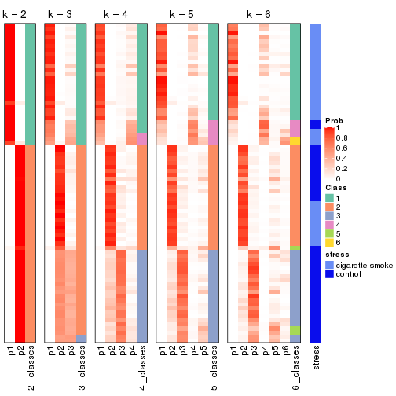
Test correlation between subgroups and known annotations. If the known annotation is numeric, one-way ANOVA test is applied, and if the known annotation is discrete, chi-squared contingency table test is applied.
test_to_known_factors(res)
#> n stress(p) k
#> CV:kmeans 79 4.00e-09 2
#> CV:kmeans 41 5.63e-04 3
#> CV:kmeans 73 1.79e-10 4
#> CV:kmeans 71 1.57e-09 5
#> CV:kmeans 60 1.85e-07 6
If matrix rows can be associated to genes, consider to use functional_enrichment(res,
...) to perform function enrichment for the signature genes. See this vignette for more detailed explanations.
The object with results only for a single top-value method and a single partition method can be extracted as:
res = res_list["CV", "skmeans"]
# you can also extract it by
# res = res_list["CV:skmeans"]
A summary of res and all the functions that can be applied to it:
res
#> A 'ConsensusPartition' object with k = 2, 3, 4, 5, 6.
#> On a matrix with 21168 rows and 79 columns.
#> Top rows (1000, 2000, 3000, 4000, 5000) are extracted by 'CV' method.
#> Subgroups are detected by 'skmeans' method.
#> Performed in total 1250 partitions by row resampling.
#> Best k for subgroups seems to be 2.
#>
#> Following methods can be applied to this 'ConsensusPartition' object:
#> [1] "cola_report" "collect_classes" "collect_plots"
#> [4] "collect_stats" "colnames" "compare_signatures"
#> [7] "consensus_heatmap" "dimension_reduction" "functional_enrichment"
#> [10] "get_anno_col" "get_anno" "get_classes"
#> [13] "get_consensus" "get_matrix" "get_membership"
#> [16] "get_param" "get_signatures" "get_stats"
#> [19] "is_best_k" "is_stable_k" "membership_heatmap"
#> [22] "ncol" "nrow" "plot_ecdf"
#> [25] "rownames" "select_partition_number" "show"
#> [28] "suggest_best_k" "test_to_known_factors"
collect_plots() function collects all the plots made from res for all k (number of partitions)
into one single page to provide an easy and fast comparison between different k.
collect_plots(res)

The plots are:
k and the heatmap of
predicted classes for each k.k.k.k.All the plots in panels can be made by individual functions and they are plotted later in this section.
select_partition_number() produces several plots showing different
statistics for choosing “optimized” k. There are following statistics:
k;k, the area increased is defined as \(A_k - A_{k-1}\).The detailed explanations of these statistics can be found in the cola vignette.
Generally speaking, lower PAC score, higher mean silhouette score or higher
concordance corresponds to better partition. Rand index and Jaccard index
measure how similar the current partition is compared to partition with k-1.
If they are too similar, we won't accept k is better than k-1.
select_partition_number(res)
The numeric values for all these statistics can be obtained by get_stats().
get_stats(res)
#> k 1-PAC mean_silhouette concordance area_increased Rand Jaccard
#> 2 2 1.000 0.978 0.990 0.4818 0.523 0.523
#> 3 3 0.620 0.669 0.814 0.3852 0.807 0.631
#> 4 4 0.572 0.513 0.669 0.1030 0.936 0.812
#> 5 5 0.470 0.465 0.593 0.0662 0.969 0.896
#> 6 6 0.486 0.409 0.523 0.0456 0.957 0.852
suggest_best_k() suggests the best \(k\) based on these statistics. The rules are as follows:
suggest_best_k(res)
#> [1] 2
Following shows the table of the partitions (You need to click the show/hide
code output link to see it). The membership matrix (columns with name p*)
is inferred by
clue::cl_consensus()
function with the SE method. Basically the value in the membership matrix
represents the probability to belong to a certain group. The finall class
label for an item is determined with the group with highest probability it
belongs to.
In get_classes() function, the entropy is calculated from the membership
matrix and the silhouette score is calculated from the consensus matrix.
cbind(get_classes(res, k = 2), get_membership(res, k = 2))
#> class entropy silhouette p1 p2
#> GSM464697 2 0.0000 0.984 0.000 1.000
#> GSM464698 2 0.0000 0.984 0.000 1.000
#> GSM464699 2 0.0000 0.984 0.000 1.000
#> GSM464700 2 0.0376 0.982 0.004 0.996
#> GSM464701 2 0.0000 0.984 0.000 1.000
#> GSM464702 2 0.0000 0.984 0.000 1.000
#> GSM464703 2 0.0938 0.976 0.012 0.988
#> GSM464704 2 0.0000 0.984 0.000 1.000
#> GSM464705 2 0.1184 0.973 0.016 0.984
#> GSM464706 2 0.3274 0.932 0.060 0.940
#> GSM464707 2 0.0000 0.984 0.000 1.000
#> GSM464708 2 0.0000 0.984 0.000 1.000
#> GSM464709 2 0.0000 0.984 0.000 1.000
#> GSM464710 2 0.0000 0.984 0.000 1.000
#> GSM464711 2 0.0938 0.976 0.012 0.988
#> GSM464712 2 0.0000 0.984 0.000 1.000
#> GSM464713 2 0.0000 0.984 0.000 1.000
#> GSM464714 2 0.9580 0.411 0.380 0.620
#> GSM464715 2 0.0000 0.984 0.000 1.000
#> GSM464716 2 0.0000 0.984 0.000 1.000
#> GSM464717 2 0.0376 0.982 0.004 0.996
#> GSM464718 2 0.5294 0.868 0.120 0.880
#> GSM464719 2 0.0000 0.984 0.000 1.000
#> GSM464720 2 0.0000 0.984 0.000 1.000
#> GSM464721 1 0.0000 1.000 1.000 0.000
#> GSM464722 2 0.0376 0.982 0.004 0.996
#> GSM464723 1 0.0000 1.000 1.000 0.000
#> GSM464724 2 0.0000 0.984 0.000 1.000
#> GSM464725 2 0.0000 0.984 0.000 1.000
#> GSM464726 2 0.0000 0.984 0.000 1.000
#> GSM464727 2 0.2603 0.949 0.044 0.956
#> GSM464728 2 0.0000 0.984 0.000 1.000
#> GSM464729 2 0.0000 0.984 0.000 1.000
#> GSM464730 2 0.0000 0.984 0.000 1.000
#> GSM464731 2 0.0000 0.984 0.000 1.000
#> GSM464732 2 0.0000 0.984 0.000 1.000
#> GSM464733 2 0.0000 0.984 0.000 1.000
#> GSM464734 2 0.0000 0.984 0.000 1.000
#> GSM464735 2 0.0000 0.984 0.000 1.000
#> GSM464736 2 0.0376 0.982 0.004 0.996
#> GSM464658 1 0.0000 1.000 1.000 0.000
#> GSM464659 1 0.0000 1.000 1.000 0.000
#> GSM464660 1 0.0000 1.000 1.000 0.000
#> GSM464661 1 0.0000 1.000 1.000 0.000
#> GSM464662 2 0.0000 0.984 0.000 1.000
#> GSM464663 1 0.0000 1.000 1.000 0.000
#> GSM464664 2 0.0000 0.984 0.000 1.000
#> GSM464665 1 0.0000 1.000 1.000 0.000
#> GSM464666 1 0.0000 1.000 1.000 0.000
#> GSM464667 1 0.0000 1.000 1.000 0.000
#> GSM464668 1 0.0000 1.000 1.000 0.000
#> GSM464669 1 0.0000 1.000 1.000 0.000
#> GSM464670 1 0.0000 1.000 1.000 0.000
#> GSM464671 1 0.0000 1.000 1.000 0.000
#> GSM464672 1 0.0000 1.000 1.000 0.000
#> GSM464673 1 0.0000 1.000 1.000 0.000
#> GSM464674 1 0.0000 1.000 1.000 0.000
#> GSM464675 1 0.0000 1.000 1.000 0.000
#> GSM464676 1 0.0000 1.000 1.000 0.000
#> GSM464677 2 0.0000 0.984 0.000 1.000
#> GSM464678 1 0.0000 1.000 1.000 0.000
#> GSM464679 2 0.0000 0.984 0.000 1.000
#> GSM464680 2 0.4939 0.882 0.108 0.892
#> GSM464681 1 0.0000 1.000 1.000 0.000
#> GSM464682 2 0.0376 0.982 0.004 0.996
#> GSM464683 2 0.1184 0.973 0.016 0.984
#> GSM464684 2 0.0000 0.984 0.000 1.000
#> GSM464685 2 0.0000 0.984 0.000 1.000
#> GSM464686 2 0.0376 0.982 0.004 0.996
#> GSM464687 2 0.0000 0.984 0.000 1.000
#> GSM464688 1 0.0000 1.000 1.000 0.000
#> GSM464689 1 0.0000 1.000 1.000 0.000
#> GSM464690 1 0.0672 0.992 0.992 0.008
#> GSM464691 1 0.0000 1.000 1.000 0.000
#> GSM464692 1 0.0000 1.000 1.000 0.000
#> GSM464693 1 0.0000 1.000 1.000 0.000
#> GSM464694 1 0.0000 1.000 1.000 0.000
#> GSM464695 1 0.0000 1.000 1.000 0.000
#> GSM464696 1 0.0000 1.000 1.000 0.000
cbind(get_classes(res, k = 3), get_membership(res, k = 3))
#> class entropy silhouette p1 p2 p3
#> GSM464697 2 0.4555 0.6323 0.000 0.800 0.200
#> GSM464698 3 0.5650 0.5139 0.000 0.312 0.688
#> GSM464699 2 0.3941 0.6300 0.000 0.844 0.156
#> GSM464700 3 0.6079 0.3810 0.000 0.388 0.612
#> GSM464701 2 0.3192 0.6344 0.000 0.888 0.112
#> GSM464702 2 0.5178 0.5909 0.000 0.744 0.256
#> GSM464703 2 0.5254 0.5760 0.000 0.736 0.264
#> GSM464704 2 0.4974 0.6185 0.000 0.764 0.236
#> GSM464705 2 0.5247 0.5985 0.008 0.768 0.224
#> GSM464706 3 0.6318 0.5413 0.068 0.172 0.760
#> GSM464707 3 0.6280 0.0961 0.000 0.460 0.540
#> GSM464708 2 0.5291 0.5759 0.000 0.732 0.268
#> GSM464709 3 0.6460 0.2348 0.004 0.440 0.556
#> GSM464710 2 0.4346 0.6332 0.000 0.816 0.184
#> GSM464711 2 0.4504 0.6090 0.000 0.804 0.196
#> GSM464712 3 0.6079 0.3938 0.000 0.388 0.612
#> GSM464713 2 0.4002 0.6283 0.000 0.840 0.160
#> GSM464714 2 0.9687 -0.0670 0.216 0.412 0.372
#> GSM464715 2 0.5810 0.4809 0.000 0.664 0.336
#> GSM464716 2 0.7187 -0.0110 0.024 0.496 0.480
#> GSM464717 3 0.5896 0.5021 0.008 0.292 0.700
#> GSM464718 2 0.7724 0.1396 0.052 0.552 0.396
#> GSM464719 3 0.4346 0.6004 0.000 0.184 0.816
#> GSM464720 2 0.6280 0.0581 0.000 0.540 0.460
#> GSM464721 1 0.0000 0.9884 1.000 0.000 0.000
#> GSM464722 2 0.4465 0.5919 0.004 0.820 0.176
#> GSM464723 1 0.0000 0.9884 1.000 0.000 0.000
#> GSM464724 2 0.5859 0.4387 0.000 0.656 0.344
#> GSM464725 2 0.4121 0.6105 0.000 0.832 0.168
#> GSM464726 2 0.4796 0.6230 0.000 0.780 0.220
#> GSM464727 3 0.7187 0.1201 0.024 0.480 0.496
#> GSM464728 2 0.5650 0.5150 0.000 0.688 0.312
#> GSM464729 2 0.5138 0.5843 0.000 0.748 0.252
#> GSM464730 2 0.6062 0.3807 0.000 0.616 0.384
#> GSM464731 2 0.5327 0.5903 0.000 0.728 0.272
#> GSM464732 3 0.6045 0.4136 0.000 0.380 0.620
#> GSM464733 2 0.5859 0.4910 0.000 0.656 0.344
#> GSM464734 2 0.5560 0.5049 0.000 0.700 0.300
#> GSM464735 2 0.4796 0.5987 0.000 0.780 0.220
#> GSM464736 3 0.5465 0.5707 0.000 0.288 0.712
#> GSM464658 1 0.0000 0.9884 1.000 0.000 0.000
#> GSM464659 1 0.0237 0.9854 0.996 0.000 0.004
#> GSM464660 1 0.0000 0.9884 1.000 0.000 0.000
#> GSM464661 1 0.0000 0.9884 1.000 0.000 0.000
#> GSM464662 3 0.4555 0.6097 0.000 0.200 0.800
#> GSM464663 1 0.0000 0.9884 1.000 0.000 0.000
#> GSM464664 3 0.6168 0.4095 0.000 0.412 0.588
#> GSM464665 1 0.0000 0.9884 1.000 0.000 0.000
#> GSM464666 1 0.0000 0.9884 1.000 0.000 0.000
#> GSM464667 1 0.0000 0.9884 1.000 0.000 0.000
#> GSM464668 1 0.0000 0.9884 1.000 0.000 0.000
#> GSM464669 1 0.0000 0.9884 1.000 0.000 0.000
#> GSM464670 1 0.0000 0.9884 1.000 0.000 0.000
#> GSM464671 1 0.0000 0.9884 1.000 0.000 0.000
#> GSM464672 1 0.0000 0.9884 1.000 0.000 0.000
#> GSM464673 1 0.0000 0.9884 1.000 0.000 0.000
#> GSM464674 1 0.0000 0.9884 1.000 0.000 0.000
#> GSM464675 1 0.0000 0.9884 1.000 0.000 0.000
#> GSM464676 1 0.0000 0.9884 1.000 0.000 0.000
#> GSM464677 3 0.4235 0.6109 0.000 0.176 0.824
#> GSM464678 1 0.0000 0.9884 1.000 0.000 0.000
#> GSM464679 3 0.5397 0.5538 0.000 0.280 0.720
#> GSM464680 3 0.5558 0.5559 0.048 0.152 0.800
#> GSM464681 1 0.0000 0.9884 1.000 0.000 0.000
#> GSM464682 3 0.6204 0.3277 0.000 0.424 0.576
#> GSM464683 3 0.3340 0.6071 0.000 0.120 0.880
#> GSM464684 3 0.5835 0.4831 0.000 0.340 0.660
#> GSM464685 3 0.4605 0.5853 0.000 0.204 0.796
#> GSM464686 3 0.5560 0.5411 0.000 0.300 0.700
#> GSM464687 3 0.4452 0.5907 0.000 0.192 0.808
#> GSM464688 1 0.0424 0.9822 0.992 0.000 0.008
#> GSM464689 1 0.1411 0.9589 0.964 0.000 0.036
#> GSM464690 1 0.4609 0.8410 0.856 0.092 0.052
#> GSM464691 1 0.0000 0.9884 1.000 0.000 0.000
#> GSM464692 1 0.4335 0.8532 0.864 0.036 0.100
#> GSM464693 1 0.0000 0.9884 1.000 0.000 0.000
#> GSM464694 1 0.0661 0.9793 0.988 0.004 0.008
#> GSM464695 1 0.0000 0.9884 1.000 0.000 0.000
#> GSM464696 1 0.0000 0.9884 1.000 0.000 0.000
cbind(get_classes(res, k = 4), get_membership(res, k = 4))
#> class entropy silhouette p1 p2 p3 p4
#> GSM464697 3 0.6653 0.4386 0.000 0.180 0.624 0.196
#> GSM464698 2 0.6796 0.3089 0.000 0.596 0.252 0.152
#> GSM464699 3 0.6917 0.4078 0.000 0.200 0.592 0.208
#> GSM464700 2 0.7569 0.1995 0.004 0.492 0.316 0.188
#> GSM464701 3 0.5293 0.4838 0.000 0.100 0.748 0.152
#> GSM464702 3 0.6621 0.4366 0.000 0.244 0.616 0.140
#> GSM464703 3 0.6932 0.3081 0.004 0.104 0.532 0.360
#> GSM464704 3 0.6473 0.4372 0.000 0.168 0.644 0.188
#> GSM464705 3 0.7719 0.3087 0.000 0.268 0.448 0.284
#> GSM464706 4 0.7511 0.1551 0.028 0.420 0.092 0.460
#> GSM464707 4 0.7644 0.2311 0.000 0.272 0.260 0.468
#> GSM464708 3 0.6224 0.4656 0.000 0.188 0.668 0.144
#> GSM464709 4 0.7627 0.1854 0.004 0.244 0.248 0.504
#> GSM464710 3 0.6339 0.4189 0.000 0.196 0.656 0.148
#> GSM464711 3 0.7262 0.3950 0.008 0.172 0.572 0.248
#> GSM464712 2 0.8183 -0.0691 0.008 0.360 0.312 0.320
#> GSM464713 3 0.6780 0.4048 0.000 0.232 0.604 0.164
#> GSM464714 4 0.8906 0.1360 0.096 0.172 0.264 0.468
#> GSM464715 3 0.7201 0.3469 0.000 0.268 0.544 0.188
#> GSM464716 4 0.7971 0.1352 0.004 0.272 0.312 0.412
#> GSM464717 4 0.7515 0.2233 0.004 0.364 0.164 0.468
#> GSM464718 3 0.8468 0.0921 0.020 0.316 0.344 0.320
#> GSM464719 2 0.7666 -0.0784 0.000 0.396 0.212 0.392
#> GSM464720 3 0.7510 0.1639 0.000 0.380 0.436 0.184
#> GSM464721 1 0.2021 0.9414 0.932 0.012 0.000 0.056
#> GSM464722 3 0.6545 0.3720 0.004 0.092 0.604 0.300
#> GSM464723 1 0.1557 0.9455 0.944 0.000 0.000 0.056
#> GSM464724 3 0.7472 0.2325 0.000 0.232 0.504 0.264
#> GSM464725 3 0.6976 0.3678 0.000 0.136 0.544 0.320
#> GSM464726 3 0.6098 0.4657 0.000 0.200 0.676 0.124
#> GSM464727 3 0.8338 0.1671 0.020 0.300 0.416 0.264
#> GSM464728 3 0.7105 0.3302 0.000 0.268 0.556 0.176
#> GSM464729 3 0.6827 0.3510 0.000 0.128 0.568 0.304
#> GSM464730 3 0.7347 0.2036 0.000 0.228 0.528 0.244
#> GSM464731 3 0.6978 0.4153 0.000 0.208 0.584 0.208
#> GSM464732 2 0.7309 0.2429 0.000 0.528 0.272 0.200
#> GSM464733 3 0.6967 0.3776 0.000 0.244 0.580 0.176
#> GSM464734 3 0.7528 0.2305 0.004 0.184 0.500 0.312
#> GSM464735 3 0.7200 0.4299 0.000 0.220 0.552 0.228
#> GSM464736 2 0.6808 0.2985 0.004 0.620 0.212 0.164
#> GSM464658 1 0.2053 0.9359 0.924 0.004 0.000 0.072
#> GSM464659 1 0.1389 0.9464 0.952 0.000 0.000 0.048
#> GSM464660 1 0.0707 0.9461 0.980 0.000 0.000 0.020
#> GSM464661 1 0.1489 0.9461 0.952 0.000 0.004 0.044
#> GSM464662 2 0.6323 0.3040 0.000 0.660 0.164 0.176
#> GSM464663 1 0.1305 0.9476 0.960 0.004 0.000 0.036
#> GSM464664 2 0.7570 0.2246 0.004 0.496 0.308 0.192
#> GSM464665 1 0.1807 0.9443 0.940 0.000 0.008 0.052
#> GSM464666 1 0.1557 0.9468 0.944 0.000 0.000 0.056
#> GSM464667 1 0.0921 0.9477 0.972 0.000 0.000 0.028
#> GSM464668 1 0.2088 0.9454 0.928 0.004 0.004 0.064
#> GSM464669 1 0.0921 0.9482 0.972 0.000 0.000 0.028
#> GSM464670 1 0.1661 0.9443 0.944 0.004 0.000 0.052
#> GSM464671 1 0.0592 0.9464 0.984 0.000 0.000 0.016
#> GSM464672 1 0.1118 0.9480 0.964 0.000 0.000 0.036
#> GSM464673 1 0.0817 0.9464 0.976 0.000 0.000 0.024
#> GSM464674 1 0.1109 0.9489 0.968 0.004 0.000 0.028
#> GSM464675 1 0.0817 0.9480 0.976 0.000 0.000 0.024
#> GSM464676 1 0.1118 0.9460 0.964 0.000 0.000 0.036
#> GSM464677 2 0.7000 -0.0442 0.004 0.520 0.108 0.368
#> GSM464678 1 0.0921 0.9486 0.972 0.000 0.000 0.028
#> GSM464679 2 0.5574 0.3682 0.000 0.728 0.148 0.124
#> GSM464680 4 0.7409 0.1997 0.032 0.392 0.080 0.496
#> GSM464681 1 0.0707 0.9471 0.980 0.000 0.000 0.020
#> GSM464682 2 0.6862 0.3252 0.000 0.596 0.228 0.176
#> GSM464683 2 0.6571 0.2215 0.012 0.640 0.096 0.252
#> GSM464684 2 0.6295 0.3454 0.000 0.660 0.196 0.144
#> GSM464685 2 0.7342 0.0110 0.004 0.528 0.164 0.304
#> GSM464686 2 0.6610 0.2956 0.004 0.636 0.136 0.224
#> GSM464687 4 0.7317 0.0556 0.004 0.424 0.132 0.440
#> GSM464688 1 0.2844 0.9070 0.900 0.048 0.000 0.052
#> GSM464689 1 0.2982 0.9067 0.896 0.032 0.004 0.068
#> GSM464690 1 0.8014 0.4167 0.596 0.100 0.144 0.160
#> GSM464691 1 0.1109 0.9482 0.968 0.004 0.000 0.028
#> GSM464692 1 0.7633 0.4148 0.600 0.172 0.044 0.184
#> GSM464693 1 0.0921 0.9476 0.972 0.000 0.000 0.028
#> GSM464694 1 0.2300 0.9364 0.920 0.016 0.000 0.064
#> GSM464695 1 0.1211 0.9474 0.960 0.000 0.000 0.040
#> GSM464696 1 0.1022 0.9477 0.968 0.000 0.000 0.032
cbind(get_classes(res, k = 5), get_membership(res, k = 5))
#> class entropy silhouette p1 p2 p3 p4 p5
#> GSM464697 3 0.653 0.40349 0.000 0.120 0.636 NA 0.144
#> GSM464698 2 0.726 0.21440 0.000 0.508 0.236 NA 0.200
#> GSM464699 3 0.760 0.28060 0.000 0.260 0.484 NA 0.152
#> GSM464700 2 0.751 0.24955 0.000 0.460 0.292 NA 0.180
#> GSM464701 3 0.565 0.42784 0.000 0.084 0.712 NA 0.128
#> GSM464702 3 0.711 0.31192 0.000 0.188 0.540 NA 0.212
#> GSM464703 3 0.741 0.27295 0.000 0.080 0.448 NA 0.344
#> GSM464704 3 0.706 0.38989 0.000 0.140 0.576 NA 0.180
#> GSM464705 3 0.852 0.20288 0.004 0.240 0.364 NA 0.184
#> GSM464706 5 0.803 0.24247 0.040 0.284 0.112 NA 0.480
#> GSM464707 5 0.763 0.17492 0.000 0.128 0.208 NA 0.504
#> GSM464708 3 0.593 0.40074 0.000 0.156 0.676 NA 0.120
#> GSM464709 5 0.801 0.23442 0.012 0.168 0.196 NA 0.492
#> GSM464710 3 0.638 0.40645 0.000 0.108 0.652 NA 0.128
#> GSM464711 3 0.805 0.29722 0.016 0.124 0.492 NA 0.196
#> GSM464712 5 0.843 0.02109 0.004 0.248 0.272 NA 0.344
#> GSM464713 3 0.718 0.34756 0.000 0.212 0.556 NA 0.112
#> GSM464714 5 0.938 0.14272 0.092 0.136 0.164 NA 0.328
#> GSM464715 3 0.746 0.25727 0.000 0.236 0.476 NA 0.228
#> GSM464716 5 0.872 0.06614 0.016 0.292 0.184 NA 0.340
#> GSM464717 5 0.797 0.26367 0.004 0.240 0.136 NA 0.464
#> GSM464718 3 0.885 0.05150 0.032 0.288 0.304 NA 0.108
#> GSM464719 5 0.700 0.14334 0.000 0.324 0.108 NA 0.504
#> GSM464720 2 0.791 0.04962 0.000 0.368 0.300 NA 0.256
#> GSM464721 1 0.449 0.82615 0.712 0.016 0.000 NA 0.016
#> GSM464722 3 0.801 0.21792 0.012 0.092 0.416 NA 0.328
#> GSM464723 1 0.431 0.83455 0.712 0.004 0.008 NA 0.008
#> GSM464724 3 0.778 0.09759 0.000 0.180 0.372 NA 0.364
#> GSM464725 3 0.792 0.29895 0.000 0.148 0.432 NA 0.284
#> GSM464726 3 0.619 0.40092 0.000 0.148 0.656 NA 0.140
#> GSM464727 3 0.895 0.07341 0.020 0.256 0.312 NA 0.216
#> GSM464728 3 0.738 0.28913 0.000 0.220 0.508 NA 0.200
#> GSM464729 3 0.662 0.31118 0.000 0.060 0.504 NA 0.368
#> GSM464730 3 0.804 -0.00387 0.000 0.208 0.372 NA 0.316
#> GSM464731 3 0.695 0.37275 0.000 0.172 0.572 NA 0.188
#> GSM464732 2 0.759 0.20685 0.000 0.468 0.280 NA 0.164
#> GSM464733 3 0.661 0.32015 0.000 0.228 0.600 NA 0.096
#> GSM464734 3 0.767 0.21315 0.008 0.092 0.448 NA 0.336
#> GSM464735 3 0.776 0.32663 0.000 0.164 0.488 NA 0.208
#> GSM464736 2 0.775 0.23058 0.004 0.496 0.152 NA 0.228
#> GSM464658 1 0.473 0.83038 0.720 0.032 0.000 NA 0.020
#> GSM464659 1 0.425 0.85465 0.748 0.004 0.004 NA 0.024
#> GSM464660 1 0.179 0.86830 0.916 0.000 0.000 NA 0.000
#> GSM464661 1 0.349 0.85537 0.768 0.000 0.000 NA 0.004
#> GSM464662 2 0.647 0.25610 0.000 0.624 0.144 NA 0.176
#> GSM464663 1 0.351 0.86531 0.792 0.004 0.000 NA 0.008
#> GSM464664 2 0.732 0.26736 0.000 0.528 0.208 NA 0.184
#> GSM464665 1 0.361 0.86442 0.828 0.020 0.004 NA 0.012
#> GSM464666 1 0.364 0.84432 0.728 0.000 0.000 NA 0.000
#> GSM464667 1 0.328 0.86931 0.808 0.004 0.000 NA 0.004
#> GSM464668 1 0.390 0.85566 0.788 0.012 0.012 NA 0.004
#> GSM464669 1 0.256 0.87124 0.856 0.000 0.000 NA 0.000
#> GSM464670 1 0.285 0.87281 0.840 0.004 0.000 NA 0.000
#> GSM464671 1 0.218 0.86954 0.888 0.000 0.000 NA 0.000
#> GSM464672 1 0.247 0.87239 0.864 0.000 0.000 NA 0.000
#> GSM464673 1 0.301 0.87201 0.824 0.000 0.000 NA 0.004
#> GSM464674 1 0.293 0.87399 0.840 0.000 0.000 NA 0.008
#> GSM464675 1 0.244 0.86521 0.876 0.004 0.000 NA 0.000
#> GSM464676 1 0.333 0.86154 0.812 0.008 0.000 NA 0.004
#> GSM464677 2 0.797 0.01930 0.012 0.448 0.112 NA 0.300
#> GSM464678 1 0.267 0.86850 0.856 0.000 0.000 NA 0.004
#> GSM464679 2 0.481 0.37414 0.004 0.780 0.100 NA 0.068
#> GSM464680 5 0.820 0.25742 0.036 0.272 0.112 NA 0.468
#> GSM464681 1 0.283 0.86684 0.852 0.004 0.000 NA 0.004
#> GSM464682 2 0.685 0.33161 0.008 0.620 0.156 NA 0.092
#> GSM464683 2 0.647 0.22033 0.008 0.624 0.080 NA 0.228
#> GSM464684 2 0.716 0.31414 0.000 0.564 0.164 NA 0.100
#> GSM464685 5 0.742 0.18617 0.000 0.284 0.144 NA 0.488
#> GSM464686 2 0.773 0.28372 0.004 0.500 0.180 NA 0.208
#> GSM464687 5 0.704 0.20394 0.004 0.256 0.124 NA 0.552
#> GSM464688 1 0.485 0.80900 0.748 0.044 0.008 NA 0.020
#> GSM464689 1 0.503 0.83804 0.724 0.028 0.008 NA 0.032
#> GSM464690 1 0.778 0.35433 0.420 0.064 0.060 NA 0.064
#> GSM464691 1 0.361 0.85995 0.780 0.008 0.000 NA 0.004
#> GSM464692 1 0.818 0.41853 0.492 0.132 0.040 NA 0.100
#> GSM464693 1 0.309 0.87331 0.836 0.004 0.000 NA 0.008
#> GSM464694 1 0.441 0.84131 0.736 0.012 0.008 NA 0.012
#> GSM464695 1 0.321 0.87050 0.824 0.004 0.000 NA 0.008
#> GSM464696 1 0.234 0.87120 0.892 0.004 0.004 NA 0.000
cbind(get_classes(res, k = 6), get_membership(res, k = 6))
#> class entropy silhouette p1 p2 p3 p4 p5 p6
#> GSM464697 3 0.733 0.3235 NA 0.120 0.540 0.008 0.176 0.112
#> GSM464698 2 0.644 0.2684 NA 0.588 0.208 0.000 0.076 0.108
#> GSM464699 3 0.751 0.1629 NA 0.148 0.436 0.000 0.288 0.088
#> GSM464700 2 0.743 0.2031 NA 0.480 0.188 0.000 0.148 0.160
#> GSM464701 3 0.605 0.3647 NA 0.052 0.632 0.000 0.200 0.084
#> GSM464702 3 0.664 0.3242 NA 0.168 0.564 0.000 0.144 0.116
#> GSM464703 3 0.768 0.2311 NA 0.076 0.424 0.008 0.240 0.224
#> GSM464704 3 0.723 0.2838 NA 0.176 0.512 0.000 0.152 0.136
#> GSM464705 5 0.873 0.1405 NA 0.180 0.240 0.028 0.360 0.076
#> GSM464706 6 0.713 0.2963 NA 0.188 0.052 0.044 0.064 0.584
#> GSM464707 6 0.818 0.1535 NA 0.160 0.208 0.004 0.156 0.412
#> GSM464708 3 0.599 0.3316 NA 0.128 0.648 0.000 0.140 0.064
#> GSM464709 6 0.807 0.1608 NA 0.136 0.264 0.000 0.152 0.388
#> GSM464710 3 0.673 0.3309 NA 0.132 0.568 0.000 0.188 0.088
#> GSM464711 3 0.825 0.1679 NA 0.132 0.384 0.024 0.308 0.080
#> GSM464712 6 0.883 0.0957 NA 0.232 0.208 0.016 0.168 0.304
#> GSM464713 3 0.688 0.1735 NA 0.124 0.484 0.000 0.304 0.068
#> GSM464714 5 0.955 0.1090 NA 0.068 0.160 0.108 0.264 0.200
#> GSM464715 3 0.755 0.2669 NA 0.184 0.452 0.000 0.116 0.220
#> GSM464716 6 0.858 0.1086 NA 0.208 0.160 0.008 0.212 0.344
#> GSM464717 6 0.728 0.2794 NA 0.216 0.108 0.016 0.100 0.532
#> GSM464718 5 0.882 0.1263 NA 0.248 0.200 0.036 0.340 0.076
#> GSM464719 6 0.744 0.1231 NA 0.348 0.128 0.004 0.076 0.408
#> GSM464720 3 0.811 0.0231 NA 0.284 0.304 0.000 0.204 0.180
#> GSM464721 4 0.535 0.7247 NA 0.012 0.000 0.556 0.048 0.016
#> GSM464722 3 0.769 0.1824 NA 0.048 0.420 0.008 0.200 0.272
#> GSM464723 4 0.571 0.7074 NA 0.012 0.008 0.536 0.036 0.032
#> GSM464724 3 0.736 0.2113 NA 0.120 0.428 0.000 0.140 0.296
#> GSM464725 3 0.757 0.1489 NA 0.104 0.424 0.000 0.300 0.132
#> GSM464726 3 0.528 0.3688 NA 0.116 0.704 0.000 0.088 0.088
#> GSM464727 5 0.907 0.0948 NA 0.220 0.256 0.024 0.264 0.132
#> GSM464728 3 0.673 0.2564 NA 0.248 0.540 0.000 0.124 0.060
#> GSM464729 3 0.629 0.3201 NA 0.064 0.612 0.000 0.152 0.152
#> GSM464730 3 0.783 0.0674 NA 0.172 0.360 0.004 0.112 0.324
#> GSM464731 3 0.719 0.2677 NA 0.200 0.512 0.000 0.132 0.132
#> GSM464732 2 0.729 0.2168 NA 0.488 0.228 0.004 0.112 0.152
#> GSM464733 3 0.697 0.2966 NA 0.208 0.540 0.000 0.124 0.100
#> GSM464734 3 0.826 0.1826 NA 0.152 0.340 0.004 0.248 0.216
#> GSM464735 3 0.756 0.1606 NA 0.136 0.424 0.000 0.264 0.156
#> GSM464736 2 0.851 0.1412 NA 0.364 0.144 0.000 0.164 0.208
#> GSM464658 4 0.542 0.7465 NA 0.008 0.000 0.624 0.048 0.044
#> GSM464659 4 0.539 0.7260 NA 0.012 0.008 0.568 0.036 0.016
#> GSM464660 4 0.219 0.7760 NA 0.000 0.000 0.876 0.004 0.000
#> GSM464661 4 0.462 0.7412 NA 0.000 0.000 0.600 0.028 0.012
#> GSM464662 2 0.584 0.3031 NA 0.660 0.136 0.000 0.064 0.124
#> GSM464663 4 0.462 0.7629 NA 0.000 0.000 0.636 0.032 0.016
#> GSM464664 2 0.766 0.2281 NA 0.476 0.112 0.000 0.164 0.192
#> GSM464665 4 0.456 0.7554 NA 0.000 0.000 0.652 0.032 0.016
#> GSM464666 4 0.476 0.7185 NA 0.000 0.000 0.564 0.032 0.012
#> GSM464667 4 0.365 0.7759 NA 0.000 0.000 0.692 0.000 0.008
#> GSM464668 4 0.502 0.7478 NA 0.008 0.004 0.648 0.032 0.024
#> GSM464669 4 0.331 0.7720 NA 0.004 0.000 0.812 0.024 0.004
#> GSM464670 4 0.400 0.7709 NA 0.000 0.000 0.656 0.004 0.012
#> GSM464671 4 0.249 0.7778 NA 0.000 0.000 0.864 0.008 0.004
#> GSM464672 4 0.374 0.7704 NA 0.000 0.000 0.724 0.016 0.004
#> GSM464673 4 0.376 0.7772 NA 0.008 0.000 0.764 0.016 0.008
#> GSM464674 4 0.436 0.7760 NA 0.000 0.000 0.700 0.036 0.016
#> GSM464675 4 0.292 0.7689 NA 0.004 0.000 0.832 0.016 0.000
#> GSM464676 4 0.367 0.7509 NA 0.000 0.000 0.780 0.024 0.016
#> GSM464677 6 0.792 0.1380 NA 0.320 0.084 0.012 0.124 0.400
#> GSM464678 4 0.351 0.7684 NA 0.004 0.000 0.800 0.016 0.016
#> GSM464679 2 0.614 0.3514 NA 0.652 0.124 0.000 0.116 0.064
#> GSM464680 6 0.717 0.2879 NA 0.164 0.040 0.028 0.084 0.580
#> GSM464681 4 0.367 0.7562 NA 0.000 0.000 0.756 0.036 0.000
#> GSM464682 2 0.738 0.2310 NA 0.516 0.124 0.000 0.204 0.084
#> GSM464683 2 0.628 0.2159 NA 0.616 0.080 0.000 0.084 0.192
#> GSM464684 2 0.770 0.3217 NA 0.524 0.128 0.012 0.152 0.092
#> GSM464685 6 0.772 0.1869 NA 0.280 0.116 0.004 0.108 0.440
#> GSM464686 2 0.756 0.2408 NA 0.500 0.072 0.000 0.180 0.156
#> GSM464687 6 0.797 0.1466 NA 0.284 0.148 0.008 0.112 0.404
#> GSM464688 4 0.631 0.6446 NA 0.084 0.004 0.604 0.056 0.028
#> GSM464689 4 0.607 0.6876 NA 0.024 0.008 0.564 0.068 0.024
#> GSM464690 4 0.844 0.2497 NA 0.056 0.060 0.356 0.124 0.072
#> GSM464691 4 0.515 0.7269 NA 0.016 0.000 0.592 0.024 0.024
#> GSM464692 4 0.787 0.4235 NA 0.056 0.028 0.488 0.084 0.120
#> GSM464693 4 0.356 0.7793 NA 0.000 0.000 0.744 0.004 0.012
#> GSM464694 4 0.548 0.7246 NA 0.020 0.000 0.560 0.048 0.016
#> GSM464695 4 0.435 0.7755 NA 0.004 0.000 0.668 0.024 0.008
#> GSM464696 4 0.402 0.7785 NA 0.004 0.000 0.716 0.024 0.004
Heatmaps for the consensus matrix. It visualizes the probability of two samples to be in a same group.
consensus_heatmap(res, k = 2)
consensus_heatmap(res, k = 3)

consensus_heatmap(res, k = 4)
consensus_heatmap(res, k = 5)
consensus_heatmap(res, k = 6)
Heatmaps for the membership of samples in all partitions to see how consistent they are:
membership_heatmap(res, k = 2)
membership_heatmap(res, k = 3)
membership_heatmap(res, k = 4)
membership_heatmap(res, k = 5)

membership_heatmap(res, k = 6)
As soon as we have had the classes for columns, we can look for signatures which are significantly different between classes which can be candidate marks for certain classes. Following are the heatmaps for signatures.
Signature heatmaps where rows are scaled:
get_signatures(res, k = 2)

get_signatures(res, k = 3)
get_signatures(res, k = 4)

get_signatures(res, k = 5)

get_signatures(res, k = 6)

Signature heatmaps where rows are not scaled:
get_signatures(res, k = 2, scale_rows = FALSE)
get_signatures(res, k = 3, scale_rows = FALSE)
get_signatures(res, k = 4, scale_rows = FALSE)

get_signatures(res, k = 5, scale_rows = FALSE)

get_signatures(res, k = 6, scale_rows = FALSE)

Compare the overlap of signatures from different k:
compare_signatures(res)
get_signature() returns a data frame invisibly. TO get the list of signatures, the function
call should be assigned to a variable explicitly. In following code, if plot argument is set
to FALSE, no heatmap is plotted while only the differential analysis is performed.
# code only for demonstration
tb = get_signature(res, k = ..., plot = FALSE)
An example of the output of tb is:
#> which_row fdr mean_1 mean_2 scaled_mean_1 scaled_mean_2 km
#> 1 38 0.042760348 8.373488 9.131774 -0.5533452 0.5164555 1
#> 2 40 0.018707592 7.106213 8.469186 -0.6173731 0.5762149 1
#> 3 55 0.019134737 10.221463 11.207825 -0.6159697 0.5749050 1
#> 4 59 0.006059896 5.921854 7.869574 -0.6899429 0.6439467 1
#> 5 60 0.018055526 8.928898 10.211722 -0.6204761 0.5791110 1
#> 6 98 0.009384629 15.714769 14.887706 0.6635654 -0.6193277 2
...
The columns in tb are:
which_row: row indices corresponding to the input matrix.fdr: FDR for the differential test. mean_x: The mean value in group x.scaled_mean_x: The mean value in group x after rows are scaled.km: Row groups if k-means clustering is applied to rows.UMAP plot which shows how samples are separated.
dimension_reduction(res, k = 2, method = "UMAP")
dimension_reduction(res, k = 3, method = "UMAP")
dimension_reduction(res, k = 4, method = "UMAP")
dimension_reduction(res, k = 5, method = "UMAP")
dimension_reduction(res, k = 6, method = "UMAP")
Following heatmap shows how subgroups are split when increasing k:
collect_classes(res)
Test correlation between subgroups and known annotations. If the known annotation is numeric, one-way ANOVA test is applied, and if the known annotation is discrete, chi-squared contingency table test is applied.
test_to_known_factors(res)
#> n stress(p) k
#> CV:skmeans 78 5.94e-09 2
#> CV:skmeans 62 8.82e-10 3
#> CV:skmeans 28 NA 4
#> CV:skmeans 28 NA 5
#> CV:skmeans 28 NA 6
If matrix rows can be associated to genes, consider to use functional_enrichment(res,
...) to perform function enrichment for the signature genes. See this vignette for more detailed explanations.
The object with results only for a single top-value method and a single partition method can be extracted as:
res = res_list["CV", "pam"]
# you can also extract it by
# res = res_list["CV:pam"]
A summary of res and all the functions that can be applied to it:
res
#> A 'ConsensusPartition' object with k = 2, 3, 4, 5, 6.
#> On a matrix with 21168 rows and 79 columns.
#> Top rows (1000, 2000, 3000, 4000, 5000) are extracted by 'CV' method.
#> Subgroups are detected by 'pam' method.
#> Performed in total 1250 partitions by row resampling.
#> Best k for subgroups seems to be 2.
#>
#> Following methods can be applied to this 'ConsensusPartition' object:
#> [1] "cola_report" "collect_classes" "collect_plots"
#> [4] "collect_stats" "colnames" "compare_signatures"
#> [7] "consensus_heatmap" "dimension_reduction" "functional_enrichment"
#> [10] "get_anno_col" "get_anno" "get_classes"
#> [13] "get_consensus" "get_matrix" "get_membership"
#> [16] "get_param" "get_signatures" "get_stats"
#> [19] "is_best_k" "is_stable_k" "membership_heatmap"
#> [22] "ncol" "nrow" "plot_ecdf"
#> [25] "rownames" "select_partition_number" "show"
#> [28] "suggest_best_k" "test_to_known_factors"
collect_plots() function collects all the plots made from res for all k (number of partitions)
into one single page to provide an easy and fast comparison between different k.
collect_plots(res)
The plots are:
k and the heatmap of
predicted classes for each k.k.k.k.All the plots in panels can be made by individual functions and they are plotted later in this section.
select_partition_number() produces several plots showing different
statistics for choosing “optimized” k. There are following statistics:
k;k, the area increased is defined as \(A_k - A_{k-1}\).The detailed explanations of these statistics can be found in the cola vignette.
Generally speaking, lower PAC score, higher mean silhouette score or higher
concordance corresponds to better partition. Rand index and Jaccard index
measure how similar the current partition is compared to partition with k-1.
If they are too similar, we won't accept k is better than k-1.
select_partition_number(res)
The numeric values for all these statistics can be obtained by get_stats().
get_stats(res)
#> k 1-PAC mean_silhouette concordance area_increased Rand Jaccard
#> 2 2 0.363 0.853 0.865 0.3959 0.630 0.630
#> 3 3 0.365 0.782 0.851 0.1287 0.994 0.991
#> 4 4 0.342 0.770 0.839 0.0421 0.994 0.991
#> 5 5 0.311 0.764 0.831 0.0265 1.000 1.000
#> 6 6 0.366 0.645 0.829 0.0197 0.976 0.961
suggest_best_k() suggests the best \(k\) based on these statistics. The rules are as follows:
suggest_best_k(res)
#> [1] 2
Following shows the table of the partitions (You need to click the show/hide
code output link to see it). The membership matrix (columns with name p*)
is inferred by
clue::cl_consensus()
function with the SE method. Basically the value in the membership matrix
represents the probability to belong to a certain group. The finall class
label for an item is determined with the group with highest probability it
belongs to.
In get_classes() function, the entropy is calculated from the membership
matrix and the silhouette score is calculated from the consensus matrix.
cbind(get_classes(res, k = 2), get_membership(res, k = 2))
#> class entropy silhouette p1 p2
#> GSM464697 2 0.430 0.901 0.088 0.912
#> GSM464698 2 0.443 0.901 0.092 0.908
#> GSM464699 2 0.327 0.882 0.060 0.940
#> GSM464700 2 0.595 0.880 0.144 0.856
#> GSM464701 2 0.295 0.873 0.052 0.948
#> GSM464702 2 0.563 0.883 0.132 0.868
#> GSM464703 2 0.388 0.874 0.076 0.924
#> GSM464704 2 0.563 0.885 0.132 0.868
#> GSM464705 2 0.416 0.899 0.084 0.916
#> GSM464706 2 0.456 0.898 0.096 0.904
#> GSM464707 2 0.295 0.873 0.052 0.948
#> GSM464708 2 0.430 0.901 0.088 0.912
#> GSM464709 2 0.443 0.894 0.092 0.908
#> GSM464710 2 0.494 0.901 0.108 0.892
#> GSM464711 2 0.574 0.884 0.136 0.864
#> GSM464712 2 0.260 0.894 0.044 0.956
#> GSM464713 2 0.529 0.891 0.120 0.880
#> GSM464714 2 0.327 0.872 0.060 0.940
#> GSM464715 2 0.388 0.885 0.076 0.924
#> GSM464716 2 0.260 0.886 0.044 0.956
#> GSM464717 2 0.278 0.875 0.048 0.952
#> GSM464718 2 0.552 0.886 0.128 0.872
#> GSM464719 2 0.311 0.874 0.056 0.944
#> GSM464720 2 0.469 0.898 0.100 0.900
#> GSM464721 2 0.697 0.787 0.188 0.812
#> GSM464722 2 0.469 0.895 0.100 0.900
#> GSM464723 1 0.788 0.782 0.764 0.236
#> GSM464724 2 0.605 0.879 0.148 0.852
#> GSM464725 2 0.552 0.884 0.128 0.872
#> GSM464726 2 0.541 0.886 0.124 0.876
#> GSM464727 2 0.552 0.884 0.128 0.872
#> GSM464728 2 0.343 0.880 0.064 0.936
#> GSM464729 2 0.402 0.902 0.080 0.920
#> GSM464730 2 0.327 0.883 0.060 0.940
#> GSM464731 2 0.563 0.891 0.132 0.868
#> GSM464732 2 0.343 0.897 0.064 0.936
#> GSM464733 2 0.327 0.873 0.060 0.940
#> GSM464734 2 0.456 0.899 0.096 0.904
#> GSM464735 2 0.574 0.883 0.136 0.864
#> GSM464736 2 0.358 0.897 0.068 0.932
#> GSM464658 2 0.775 0.756 0.228 0.772
#> GSM464659 2 0.388 0.864 0.076 0.924
#> GSM464660 1 0.456 0.883 0.904 0.096
#> GSM464661 1 0.653 0.876 0.832 0.168
#> GSM464662 2 0.327 0.870 0.060 0.940
#> GSM464663 1 0.909 0.697 0.676 0.324
#> GSM464664 2 0.584 0.885 0.140 0.860
#> GSM464665 1 0.469 0.893 0.900 0.100
#> GSM464666 1 0.886 0.707 0.696 0.304
#> GSM464667 1 0.625 0.843 0.844 0.156
#> GSM464668 2 0.904 0.576 0.320 0.680
#> GSM464669 1 0.327 0.889 0.940 0.060
#> GSM464670 2 0.886 0.523 0.304 0.696
#> GSM464671 1 0.456 0.883 0.904 0.096
#> GSM464672 1 0.552 0.827 0.872 0.128
#> GSM464673 1 0.388 0.883 0.924 0.076
#> GSM464674 1 0.788 0.741 0.764 0.236
#> GSM464675 1 0.430 0.896 0.912 0.088
#> GSM464676 1 0.671 0.817 0.824 0.176
#> GSM464677 2 0.494 0.898 0.108 0.892
#> GSM464678 1 0.443 0.894 0.908 0.092
#> GSM464679 2 0.552 0.884 0.128 0.872
#> GSM464680 2 0.327 0.883 0.060 0.940
#> GSM464681 1 0.358 0.890 0.932 0.068
#> GSM464682 2 0.327 0.901 0.060 0.940
#> GSM464683 2 0.388 0.878 0.076 0.924
#> GSM464684 2 0.494 0.897 0.108 0.892
#> GSM464685 2 0.595 0.880 0.144 0.856
#> GSM464686 2 0.541 0.893 0.124 0.876
#> GSM464687 2 0.402 0.873 0.080 0.920
#> GSM464688 2 0.584 0.882 0.140 0.860
#> GSM464689 2 0.584 0.889 0.140 0.860
#> GSM464690 2 0.278 0.895 0.048 0.952
#> GSM464691 2 0.373 0.887 0.072 0.928
#> GSM464692 2 0.634 0.879 0.160 0.840
#> GSM464693 1 0.625 0.879 0.844 0.156
#> GSM464694 2 0.997 -0.083 0.468 0.532
#> GSM464695 1 0.388 0.894 0.924 0.076
#> GSM464696 1 0.416 0.894 0.916 0.084
cbind(get_classes(res, k = 3), get_membership(res, k = 3))
#> class entropy silhouette p1 p2 p3
#> GSM464697 2 0.4015 0.877 0.028 0.876 0.096
#> GSM464698 2 0.4209 0.875 0.020 0.860 0.120
#> GSM464699 2 0.4110 0.858 0.004 0.844 0.152
#> GSM464700 2 0.2496 0.859 0.004 0.928 0.068
#> GSM464701 2 0.4121 0.848 0.000 0.832 0.168
#> GSM464702 2 0.1765 0.863 0.004 0.956 0.040
#> GSM464703 2 0.5012 0.848 0.008 0.788 0.204
#> GSM464704 2 0.1989 0.870 0.004 0.948 0.048
#> GSM464705 2 0.2261 0.877 0.000 0.932 0.068
#> GSM464706 2 0.2297 0.880 0.020 0.944 0.036
#> GSM464707 2 0.4121 0.848 0.000 0.832 0.168
#> GSM464708 2 0.2261 0.882 0.000 0.932 0.068
#> GSM464709 2 0.4744 0.872 0.028 0.836 0.136
#> GSM464710 2 0.3043 0.882 0.008 0.908 0.084
#> GSM464711 2 0.2590 0.864 0.004 0.924 0.072
#> GSM464712 2 0.3412 0.872 0.000 0.876 0.124
#> GSM464713 2 0.1529 0.869 0.000 0.960 0.040
#> GSM464714 2 0.4351 0.849 0.004 0.828 0.168
#> GSM464715 2 0.5292 0.860 0.028 0.800 0.172
#> GSM464716 2 0.3879 0.867 0.000 0.848 0.152
#> GSM464717 2 0.4002 0.853 0.000 0.840 0.160
#> GSM464718 2 0.2590 0.862 0.004 0.924 0.072
#> GSM464719 2 0.4178 0.849 0.000 0.828 0.172
#> GSM464720 2 0.2165 0.877 0.000 0.936 0.064
#> GSM464721 2 0.7278 0.759 0.152 0.712 0.136
#> GSM464722 2 0.0892 0.875 0.000 0.980 0.020
#> GSM464723 1 0.5524 0.599 0.796 0.164 0.040
#> GSM464724 2 0.3193 0.849 0.004 0.896 0.100
#> GSM464725 2 0.1525 0.864 0.004 0.964 0.032
#> GSM464726 2 0.1765 0.866 0.004 0.956 0.040
#> GSM464727 2 0.1989 0.860 0.004 0.948 0.048
#> GSM464728 2 0.3941 0.856 0.000 0.844 0.156
#> GSM464729 2 0.2845 0.884 0.012 0.920 0.068
#> GSM464730 2 0.4733 0.861 0.004 0.800 0.196
#> GSM464731 2 0.2945 0.863 0.004 0.908 0.088
#> GSM464732 2 0.3989 0.877 0.012 0.864 0.124
#> GSM464733 2 0.4452 0.852 0.000 0.808 0.192
#> GSM464734 2 0.2096 0.879 0.004 0.944 0.052
#> GSM464735 2 0.2301 0.862 0.004 0.936 0.060
#> GSM464736 2 0.4810 0.871 0.028 0.832 0.140
#> GSM464658 2 0.7606 0.643 0.244 0.664 0.092
#> GSM464659 2 0.4968 0.841 0.012 0.800 0.188
#> GSM464660 1 0.0661 0.720 0.988 0.004 0.008
#> GSM464661 3 0.5500 0.000 0.084 0.100 0.816
#> GSM464662 2 0.4351 0.847 0.004 0.828 0.168
#> GSM464663 1 0.7885 0.371 0.592 0.336 0.072
#> GSM464664 2 0.2496 0.863 0.004 0.928 0.068
#> GSM464665 1 0.2313 0.734 0.944 0.024 0.032
#> GSM464666 1 0.7458 0.481 0.692 0.196 0.112
#> GSM464667 1 0.7330 0.577 0.692 0.216 0.092
#> GSM464668 2 0.6970 0.496 0.276 0.676 0.048
#> GSM464669 1 0.0848 0.726 0.984 0.008 0.008
#> GSM464670 2 0.7844 0.479 0.292 0.624 0.084
#> GSM464671 1 0.5167 0.696 0.804 0.172 0.024
#> GSM464672 1 0.3415 0.716 0.900 0.020 0.080
#> GSM464673 1 0.5526 0.692 0.792 0.172 0.036
#> GSM464674 1 0.6441 0.502 0.696 0.276 0.028
#> GSM464675 1 0.4094 0.741 0.872 0.100 0.028
#> GSM464676 1 0.4269 0.708 0.872 0.052 0.076
#> GSM464677 2 0.4519 0.864 0.032 0.852 0.116
#> GSM464678 1 0.5292 0.709 0.800 0.172 0.028
#> GSM464679 2 0.1989 0.860 0.004 0.948 0.048
#> GSM464680 2 0.3983 0.865 0.004 0.852 0.144
#> GSM464681 1 0.2496 0.717 0.928 0.004 0.068
#> GSM464682 2 0.3272 0.880 0.004 0.892 0.104
#> GSM464683 2 0.5627 0.847 0.032 0.780 0.188
#> GSM464684 2 0.2486 0.875 0.008 0.932 0.060
#> GSM464685 2 0.2590 0.859 0.004 0.924 0.072
#> GSM464686 2 0.4295 0.859 0.032 0.864 0.104
#> GSM464687 2 0.5360 0.843 0.012 0.768 0.220
#> GSM464688 2 0.2860 0.855 0.004 0.912 0.084
#> GSM464689 2 0.3888 0.871 0.048 0.888 0.064
#> GSM464690 2 0.3192 0.875 0.000 0.888 0.112
#> GSM464691 2 0.5136 0.859 0.044 0.824 0.132
#> GSM464692 2 0.4137 0.850 0.032 0.872 0.096
#> GSM464693 1 0.2680 0.742 0.924 0.068 0.008
#> GSM464694 2 0.9669 0.015 0.380 0.408 0.212
#> GSM464695 1 0.1999 0.736 0.952 0.036 0.012
#> GSM464696 1 0.1877 0.743 0.956 0.032 0.012
cbind(get_classes(res, k = 4), get_membership(res, k = 4))
#> class entropy silhouette p1 p2 p3 p4
#> GSM464697 2 0.3855 0.8784 0.012 0.856 0.092 0.040
#> GSM464698 2 0.3956 0.8765 0.012 0.836 0.132 0.020
#> GSM464699 2 0.3508 0.8631 0.004 0.848 0.136 0.012
#> GSM464700 2 0.2665 0.8601 0.004 0.900 0.088 0.008
#> GSM464701 2 0.3355 0.8516 0.000 0.836 0.160 0.004
#> GSM464702 2 0.1847 0.8663 0.004 0.940 0.052 0.004
#> GSM464703 2 0.4395 0.8513 0.004 0.776 0.204 0.016
#> GSM464704 2 0.1909 0.8743 0.004 0.940 0.048 0.008
#> GSM464705 2 0.1902 0.8803 0.000 0.932 0.064 0.004
#> GSM464706 2 0.2587 0.8828 0.008 0.916 0.056 0.020
#> GSM464707 2 0.3355 0.8516 0.000 0.836 0.160 0.004
#> GSM464708 2 0.1637 0.8838 0.000 0.940 0.060 0.000
#> GSM464709 2 0.4148 0.8746 0.012 0.832 0.124 0.032
#> GSM464710 2 0.2597 0.8859 0.008 0.904 0.084 0.004
#> GSM464711 2 0.3100 0.8723 0.004 0.888 0.080 0.028
#> GSM464712 2 0.2799 0.8762 0.000 0.884 0.108 0.008
#> GSM464713 2 0.1890 0.8695 0.000 0.936 0.056 0.008
#> GSM464714 2 0.3355 0.8538 0.004 0.836 0.160 0.000
#> GSM464715 2 0.4643 0.8645 0.012 0.788 0.172 0.028
#> GSM464716 2 0.3257 0.8709 0.000 0.844 0.152 0.004
#> GSM464717 2 0.3257 0.8562 0.000 0.844 0.152 0.004
#> GSM464718 2 0.3158 0.8640 0.004 0.880 0.096 0.020
#> GSM464719 2 0.3402 0.8523 0.000 0.832 0.164 0.004
#> GSM464720 2 0.2048 0.8800 0.000 0.928 0.064 0.008
#> GSM464721 2 0.6371 0.7882 0.120 0.712 0.132 0.036
#> GSM464722 2 0.1118 0.8785 0.000 0.964 0.036 0.000
#> GSM464723 4 0.5660 0.0000 0.292 0.016 0.024 0.668
#> GSM464724 2 0.3216 0.8487 0.004 0.864 0.124 0.008
#> GSM464725 2 0.1492 0.8689 0.004 0.956 0.036 0.004
#> GSM464726 2 0.2076 0.8669 0.004 0.932 0.056 0.008
#> GSM464727 2 0.2408 0.8650 0.004 0.920 0.060 0.016
#> GSM464728 2 0.3208 0.8582 0.000 0.848 0.148 0.004
#> GSM464729 2 0.2433 0.8861 0.008 0.920 0.060 0.012
#> GSM464730 2 0.3892 0.8693 0.004 0.800 0.192 0.004
#> GSM464731 2 0.2899 0.8642 0.004 0.880 0.112 0.004
#> GSM464732 2 0.3360 0.8806 0.008 0.860 0.124 0.008
#> GSM464733 2 0.3668 0.8567 0.000 0.808 0.188 0.004
#> GSM464734 2 0.1978 0.8821 0.004 0.928 0.068 0.000
#> GSM464735 2 0.2311 0.8678 0.004 0.916 0.076 0.004
#> GSM464736 2 0.4392 0.8764 0.016 0.824 0.120 0.040
#> GSM464658 2 0.6570 0.6692 0.236 0.652 0.096 0.016
#> GSM464659 2 0.4381 0.8468 0.008 0.804 0.160 0.028
#> GSM464660 1 0.0524 0.6717 0.988 0.004 0.008 0.000
#> GSM464661 3 0.5363 0.0000 0.012 0.048 0.740 0.200
#> GSM464662 2 0.3538 0.8504 0.004 0.832 0.160 0.004
#> GSM464663 1 0.7040 0.3815 0.580 0.316 0.076 0.028
#> GSM464664 2 0.2597 0.8646 0.004 0.904 0.084 0.008
#> GSM464665 1 0.2221 0.6854 0.936 0.020 0.020 0.024
#> GSM464666 1 0.5981 0.4362 0.696 0.196 0.104 0.004
#> GSM464667 1 0.6670 0.5528 0.680 0.192 0.084 0.044
#> GSM464668 2 0.5716 0.5070 0.284 0.672 0.024 0.020
#> GSM464669 1 0.1509 0.6834 0.960 0.008 0.012 0.020
#> GSM464670 2 0.6488 0.5047 0.296 0.616 0.080 0.008
#> GSM464671 1 0.4334 0.6682 0.808 0.156 0.028 0.008
#> GSM464672 1 0.4327 0.6428 0.832 0.012 0.060 0.096
#> GSM464673 1 0.4567 0.6635 0.796 0.160 0.036 0.008
#> GSM464674 1 0.5407 0.4555 0.696 0.268 0.020 0.016
#> GSM464675 1 0.3995 0.7043 0.852 0.092 0.036 0.020
#> GSM464676 1 0.3245 0.6650 0.880 0.056 0.064 0.000
#> GSM464677 2 0.4331 0.8633 0.016 0.820 0.136 0.028
#> GSM464678 1 0.4380 0.6772 0.800 0.164 0.032 0.004
#> GSM464679 2 0.2234 0.8605 0.004 0.924 0.064 0.008
#> GSM464680 2 0.3052 0.8687 0.004 0.860 0.136 0.000
#> GSM464681 1 0.2853 0.6652 0.900 0.008 0.076 0.016
#> GSM464682 2 0.2586 0.8825 0.004 0.900 0.092 0.004
#> GSM464683 2 0.4887 0.8511 0.016 0.772 0.184 0.028
#> GSM464684 2 0.2856 0.8796 0.004 0.900 0.072 0.024
#> GSM464685 2 0.2731 0.8601 0.004 0.896 0.092 0.008
#> GSM464686 2 0.4392 0.8576 0.016 0.824 0.120 0.040
#> GSM464687 2 0.4444 0.8492 0.008 0.764 0.220 0.008
#> GSM464688 2 0.2922 0.8559 0.004 0.884 0.104 0.008
#> GSM464689 2 0.3595 0.8768 0.032 0.876 0.068 0.024
#> GSM464690 2 0.2831 0.8768 0.000 0.876 0.120 0.004
#> GSM464691 2 0.4664 0.8599 0.040 0.820 0.104 0.036
#> GSM464692 2 0.4115 0.8529 0.016 0.836 0.120 0.028
#> GSM464693 1 0.2234 0.6944 0.924 0.064 0.004 0.008
#> GSM464694 2 0.8328 0.0697 0.356 0.416 0.200 0.028
#> GSM464695 1 0.1271 0.6779 0.968 0.008 0.012 0.012
#> GSM464696 1 0.1617 0.6977 0.956 0.024 0.008 0.012
cbind(get_classes(res, k = 5), get_membership(res, k = 5))
#> class entropy silhouette p1 p2 p3 p4 p5
#> GSM464697 3 0.3792 0.87661 0.012 NA 0.840 0.036 0.016
#> GSM464698 3 0.3668 0.87426 0.012 NA 0.820 0.012 0.008
#> GSM464699 3 0.3098 0.86141 0.000 NA 0.836 0.016 0.000
#> GSM464700 3 0.2228 0.85631 0.004 NA 0.900 0.004 0.000
#> GSM464701 3 0.2929 0.84944 0.000 NA 0.820 0.000 0.000
#> GSM464702 3 0.1518 0.86320 0.004 NA 0.944 0.004 0.000
#> GSM464703 3 0.4065 0.85117 0.000 NA 0.760 0.020 0.008
#> GSM464704 3 0.1412 0.87250 0.004 NA 0.952 0.008 0.000
#> GSM464705 3 0.1732 0.87735 0.000 NA 0.920 0.000 0.000
#> GSM464706 3 0.2282 0.88109 0.008 NA 0.920 0.012 0.012
#> GSM464707 3 0.2929 0.84944 0.000 NA 0.820 0.000 0.000
#> GSM464708 3 0.1544 0.88149 0.000 NA 0.932 0.000 0.000
#> GSM464709 3 0.3795 0.87377 0.012 NA 0.828 0.024 0.012
#> GSM464710 3 0.2352 0.88380 0.008 NA 0.896 0.004 0.000
#> GSM464711 3 0.2791 0.87001 0.004 NA 0.888 0.032 0.004
#> GSM464712 3 0.2462 0.87403 0.000 NA 0.880 0.008 0.000
#> GSM464713 3 0.1638 0.86653 0.000 NA 0.932 0.004 0.000
#> GSM464714 3 0.3010 0.85263 0.000 NA 0.824 0.004 0.000
#> GSM464715 3 0.4495 0.86274 0.012 NA 0.764 0.028 0.012
#> GSM464716 3 0.2929 0.86956 0.000 NA 0.820 0.000 0.000
#> GSM464717 3 0.2852 0.85394 0.000 NA 0.828 0.000 0.000
#> GSM464718 3 0.2782 0.86158 0.004 NA 0.880 0.016 0.004
#> GSM464719 3 0.2966 0.85013 0.000 NA 0.816 0.000 0.000
#> GSM464720 3 0.1768 0.87843 0.000 NA 0.924 0.004 0.000
#> GSM464721 3 0.5890 0.79312 0.112 NA 0.700 0.040 0.012
#> GSM464722 3 0.1043 0.87588 0.000 NA 0.960 0.000 0.000
#> GSM464723 4 0.3471 0.00000 0.156 NA 0.012 0.820 0.000
#> GSM464724 3 0.2694 0.84453 0.004 NA 0.864 0.004 0.000
#> GSM464725 3 0.1026 0.86718 0.004 NA 0.968 0.004 0.000
#> GSM464726 3 0.1662 0.86380 0.004 NA 0.936 0.004 0.000
#> GSM464727 3 0.1970 0.86198 0.004 NA 0.924 0.012 0.000
#> GSM464728 3 0.2813 0.85573 0.000 NA 0.832 0.000 0.000
#> GSM464729 3 0.2150 0.88305 0.004 NA 0.916 0.008 0.004
#> GSM464730 3 0.3333 0.86872 0.000 NA 0.788 0.004 0.000
#> GSM464731 3 0.2286 0.86303 0.004 NA 0.888 0.000 0.000
#> GSM464732 3 0.2787 0.87813 0.004 NA 0.856 0.004 0.000
#> GSM464733 3 0.3300 0.85746 0.000 NA 0.792 0.004 0.000
#> GSM464734 3 0.1502 0.87981 0.004 NA 0.940 0.000 0.000
#> GSM464735 3 0.1857 0.86693 0.004 NA 0.928 0.008 0.000
#> GSM464736 3 0.4190 0.87279 0.016 NA 0.808 0.036 0.012
#> GSM464658 3 0.6027 0.66461 0.232 NA 0.644 0.024 0.008
#> GSM464659 3 0.3670 0.84994 0.008 NA 0.792 0.012 0.000
#> GSM464660 1 0.0451 0.69276 0.988 NA 0.004 0.000 0.000
#> GSM464661 5 0.0693 0.00000 0.000 NA 0.012 0.000 0.980
#> GSM464662 3 0.2929 0.84944 0.000 NA 0.820 0.000 0.000
#> GSM464663 1 0.6419 0.45085 0.580 NA 0.296 0.032 0.008
#> GSM464664 3 0.2052 0.86291 0.004 NA 0.912 0.004 0.000
#> GSM464665 1 0.1772 0.70759 0.940 NA 0.020 0.008 0.000
#> GSM464666 1 0.5881 0.42022 0.620 NA 0.180 0.004 0.000
#> GSM464667 1 0.5945 0.60255 0.680 NA 0.192 0.040 0.012
#> GSM464668 3 0.4864 0.51952 0.284 NA 0.672 0.008 0.000
#> GSM464669 1 0.1488 0.70298 0.956 NA 0.008 0.016 0.012
#> GSM464670 3 0.5516 0.50993 0.296 NA 0.608 0.000 0.000
#> GSM464671 1 0.3618 0.69382 0.808 NA 0.168 0.004 0.004
#> GSM464672 1 0.6513 0.11829 0.504 NA 0.008 0.100 0.016
#> GSM464673 1 0.3840 0.69001 0.796 NA 0.172 0.004 0.004
#> GSM464674 1 0.4952 0.49624 0.672 NA 0.272 0.004 0.000
#> GSM464675 1 0.3500 0.72405 0.852 NA 0.096 0.008 0.012
#> GSM464676 1 0.2853 0.68461 0.876 NA 0.052 0.000 0.000
#> GSM464677 3 0.4119 0.85940 0.016 NA 0.808 0.028 0.012
#> GSM464678 1 0.3767 0.70174 0.800 NA 0.168 0.008 0.000
#> GSM464679 3 0.1798 0.85740 0.004 NA 0.928 0.004 0.000
#> GSM464680 3 0.2763 0.86711 0.004 NA 0.848 0.000 0.000
#> GSM464681 1 0.2679 0.68778 0.896 NA 0.008 0.016 0.008
#> GSM464682 3 0.2445 0.88052 0.004 NA 0.884 0.004 0.000
#> GSM464683 3 0.4663 0.84820 0.016 NA 0.752 0.028 0.012
#> GSM464684 3 0.2527 0.87699 0.004 NA 0.900 0.020 0.004
#> GSM464685 3 0.2228 0.85785 0.004 NA 0.900 0.004 0.000
#> GSM464686 3 0.4273 0.85329 0.016 NA 0.808 0.040 0.016
#> GSM464687 3 0.4121 0.85018 0.008 NA 0.752 0.012 0.004
#> GSM464688 3 0.2392 0.85317 0.004 NA 0.888 0.004 0.000
#> GSM464689 3 0.3294 0.87511 0.032 NA 0.876 0.024 0.012
#> GSM464690 3 0.2561 0.87177 0.000 NA 0.856 0.000 0.000
#> GSM464691 3 0.5480 0.70212 0.036 NA 0.668 0.024 0.012
#> GSM464692 3 0.3701 0.85116 0.016 NA 0.840 0.024 0.012
#> GSM464693 1 0.1924 0.71566 0.924 NA 0.064 0.008 0.000
#> GSM464694 3 0.7467 0.00868 0.328 NA 0.380 0.036 0.000
#> GSM464695 1 0.1498 0.69223 0.952 NA 0.008 0.016 0.000
#> GSM464696 1 0.1428 0.71485 0.956 NA 0.024 0.004 0.004
cbind(get_classes(res, k = 6), get_membership(res, k = 6))
#> class entropy silhouette p1 p2 p3 p4 p5 p6
#> GSM464697 2 0.3400 0.79647 0.028 0.840 0.016 0.016 0.000 0.100
#> GSM464698 2 0.3454 0.79216 0.024 0.816 0.004 0.016 0.000 0.140
#> GSM464699 2 0.2810 0.76765 0.004 0.832 0.008 0.000 0.000 0.156
#> GSM464700 2 0.1956 0.77431 0.008 0.908 0.000 0.004 0.000 0.080
#> GSM464701 2 0.2697 0.74341 0.000 0.812 0.000 0.000 0.000 0.188
#> GSM464702 2 0.1226 0.78639 0.004 0.952 0.000 0.004 0.000 0.040
#> GSM464703 2 0.4207 0.73472 0.008 0.744 0.032 0.004 0.008 0.204
#> GSM464704 2 0.1116 0.79911 0.008 0.960 0.000 0.004 0.000 0.028
#> GSM464705 2 0.1584 0.80565 0.008 0.928 0.000 0.000 0.000 0.064
#> GSM464706 2 0.2076 0.81004 0.016 0.920 0.008 0.012 0.000 0.044
#> GSM464707 2 0.2697 0.74341 0.000 0.812 0.000 0.000 0.000 0.188
#> GSM464708 2 0.1267 0.81017 0.000 0.940 0.000 0.000 0.000 0.060
#> GSM464709 2 0.3461 0.78808 0.020 0.824 0.012 0.016 0.000 0.128
#> GSM464710 2 0.2213 0.80990 0.000 0.888 0.004 0.008 0.000 0.100
#> GSM464711 2 0.2312 0.78933 0.012 0.896 0.008 0.004 0.000 0.080
#> GSM464712 2 0.2234 0.78936 0.000 0.872 0.004 0.000 0.000 0.124
#> GSM464713 2 0.1471 0.79076 0.004 0.932 0.000 0.000 0.000 0.064
#> GSM464714 2 0.2772 0.74938 0.000 0.816 0.004 0.000 0.000 0.180
#> GSM464715 2 0.4047 0.76472 0.024 0.756 0.008 0.016 0.000 0.196
#> GSM464716 2 0.2805 0.77955 0.004 0.812 0.000 0.000 0.000 0.184
#> GSM464717 2 0.2631 0.75169 0.000 0.820 0.000 0.000 0.000 0.180
#> GSM464718 2 0.2433 0.78120 0.020 0.888 0.004 0.004 0.000 0.084
#> GSM464719 2 0.2730 0.74445 0.000 0.808 0.000 0.000 0.000 0.192
#> GSM464720 2 0.1471 0.80729 0.004 0.932 0.000 0.000 0.000 0.064
#> GSM464721 2 0.5380 0.62495 0.032 0.700 0.028 0.096 0.000 0.144
#> GSM464722 2 0.0937 0.80438 0.000 0.960 0.000 0.000 0.000 0.040
#> GSM464723 3 0.2261 0.00000 0.000 0.008 0.884 0.104 0.000 0.004
#> GSM464724 2 0.2400 0.75256 0.008 0.872 0.000 0.004 0.000 0.116
#> GSM464725 2 0.0692 0.79237 0.000 0.976 0.000 0.004 0.000 0.020
#> GSM464726 2 0.1364 0.78717 0.004 0.944 0.000 0.004 0.000 0.048
#> GSM464727 2 0.1621 0.78248 0.008 0.936 0.004 0.004 0.000 0.048
#> GSM464728 2 0.2597 0.75489 0.000 0.824 0.000 0.000 0.000 0.176
#> GSM464729 2 0.1845 0.81089 0.000 0.916 0.004 0.008 0.000 0.072
#> GSM464730 2 0.3243 0.77608 0.008 0.780 0.004 0.000 0.000 0.208
#> GSM464731 2 0.2162 0.78273 0.012 0.896 0.000 0.004 0.000 0.088
#> GSM464732 2 0.2655 0.79641 0.008 0.848 0.000 0.004 0.000 0.140
#> GSM464733 2 0.2912 0.75508 0.000 0.784 0.000 0.000 0.000 0.216
#> GSM464734 2 0.1349 0.80852 0.000 0.940 0.000 0.004 0.000 0.056
#> GSM464735 2 0.1493 0.79104 0.004 0.936 0.000 0.004 0.000 0.056
#> GSM464736 2 0.3804 0.78610 0.036 0.804 0.012 0.016 0.000 0.132
#> GSM464658 2 0.5217 0.33043 0.012 0.644 0.004 0.236 0.000 0.104
#> GSM464659 2 0.3480 0.73897 0.008 0.784 0.008 0.008 0.000 0.192
#> GSM464660 4 0.0551 0.60944 0.000 0.004 0.004 0.984 0.000 0.008
#> GSM464661 5 0.0291 0.00000 0.000 0.004 0.000 0.000 0.992 0.004
#> GSM464662 2 0.2697 0.74341 0.000 0.812 0.000 0.000 0.000 0.188
#> GSM464663 4 0.6473 0.18202 0.068 0.264 0.020 0.564 0.004 0.080
#> GSM464664 2 0.1787 0.78517 0.008 0.920 0.000 0.004 0.000 0.068
#> GSM464665 4 0.1794 0.63056 0.012 0.024 0.008 0.936 0.000 0.020
#> GSM464666 4 0.5790 -0.02111 0.004 0.136 0.004 0.472 0.000 0.384
#> GSM464667 4 0.5257 0.50153 0.020 0.204 0.012 0.680 0.004 0.080
#> GSM464668 2 0.4656 0.00535 0.008 0.664 0.008 0.280 0.000 0.040
#> GSM464669 4 0.1210 0.61985 0.020 0.008 0.008 0.960 0.000 0.004
#> GSM464670 2 0.5090 -0.08080 0.004 0.604 0.000 0.296 0.000 0.096
#> GSM464671 4 0.3087 0.61592 0.000 0.176 0.000 0.808 0.004 0.012
#> GSM464672 1 0.4108 0.00000 0.660 0.004 0.000 0.320 0.004 0.012
#> GSM464673 4 0.3296 0.61150 0.000 0.180 0.000 0.796 0.004 0.020
#> GSM464674 4 0.5517 0.34561 0.044 0.252 0.004 0.628 0.000 0.072
#> GSM464675 4 0.3125 0.65038 0.012 0.092 0.004 0.856 0.004 0.032
#> GSM464676 4 0.2542 0.58716 0.000 0.044 0.000 0.876 0.000 0.080
#> GSM464677 2 0.3688 0.76696 0.024 0.804 0.008 0.020 0.000 0.144
#> GSM464678 4 0.3263 0.62347 0.000 0.176 0.004 0.800 0.000 0.020
#> GSM464679 2 0.1542 0.77767 0.008 0.936 0.000 0.004 0.000 0.052
#> GSM464680 2 0.2482 0.77663 0.000 0.848 0.000 0.004 0.000 0.148
#> GSM464681 4 0.2211 0.59976 0.008 0.008 0.004 0.900 0.000 0.080
#> GSM464682 2 0.2191 0.80406 0.000 0.876 0.000 0.004 0.000 0.120
#> GSM464683 2 0.4160 0.73644 0.024 0.748 0.008 0.020 0.000 0.200
#> GSM464684 2 0.2208 0.80476 0.032 0.908 0.004 0.004 0.000 0.052
#> GSM464685 2 0.1956 0.77610 0.008 0.908 0.000 0.004 0.000 0.080
#> GSM464686 2 0.3848 0.75814 0.036 0.804 0.012 0.020 0.000 0.128
#> GSM464687 2 0.3533 0.73949 0.000 0.748 0.004 0.012 0.000 0.236
#> GSM464688 2 0.2113 0.76827 0.008 0.896 0.000 0.004 0.000 0.092
#> GSM464689 2 0.2869 0.79597 0.024 0.880 0.008 0.036 0.000 0.052
#> GSM464690 2 0.3226 0.73384 0.012 0.808 0.012 0.000 0.000 0.168
#> GSM464691 2 0.6638 -0.28463 0.152 0.512 0.012 0.040 0.004 0.280
#> GSM464692 2 0.3143 0.75835 0.016 0.848 0.008 0.020 0.000 0.108
#> GSM464693 4 0.1829 0.63748 0.000 0.064 0.012 0.920 0.000 0.004
#> GSM464694 6 0.7173 0.00000 0.036 0.312 0.020 0.280 0.000 0.352
#> GSM464695 4 0.1602 0.60481 0.020 0.004 0.016 0.944 0.000 0.016
#> GSM464696 4 0.1116 0.64013 0.004 0.028 0.000 0.960 0.000 0.008
Heatmaps for the consensus matrix. It visualizes the probability of two samples to be in a same group.
consensus_heatmap(res, k = 2)
consensus_heatmap(res, k = 3)
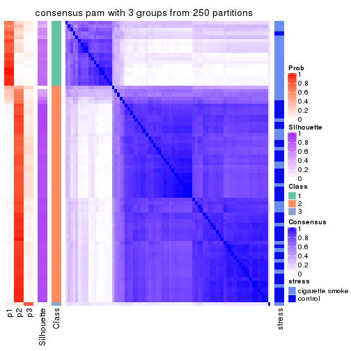
consensus_heatmap(res, k = 4)
consensus_heatmap(res, k = 5)
consensus_heatmap(res, k = 6)
Heatmaps for the membership of samples in all partitions to see how consistent they are:
membership_heatmap(res, k = 2)
membership_heatmap(res, k = 3)
membership_heatmap(res, k = 4)
membership_heatmap(res, k = 5)
membership_heatmap(res, k = 6)
As soon as we have had the classes for columns, we can look for signatures which are significantly different between classes which can be candidate marks for certain classes. Following are the heatmaps for signatures.
Signature heatmaps where rows are scaled:
get_signatures(res, k = 2)
get_signatures(res, k = 3)
get_signatures(res, k = 4)
get_signatures(res, k = 5)
get_signatures(res, k = 6)
Signature heatmaps where rows are not scaled:
get_signatures(res, k = 2, scale_rows = FALSE)
get_signatures(res, k = 3, scale_rows = FALSE)
get_signatures(res, k = 4, scale_rows = FALSE)
get_signatures(res, k = 5, scale_rows = FALSE)
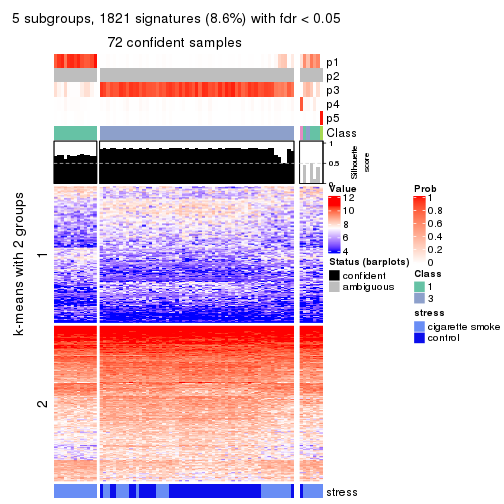
get_signatures(res, k = 6, scale_rows = FALSE)
Compare the overlap of signatures from different k:
compare_signatures(res)
get_signature() returns a data frame invisibly. TO get the list of signatures, the function
call should be assigned to a variable explicitly. In following code, if plot argument is set
to FALSE, no heatmap is plotted while only the differential analysis is performed.
# code only for demonstration
tb = get_signature(res, k = ..., plot = FALSE)
An example of the output of tb is:
#> which_row fdr mean_1 mean_2 scaled_mean_1 scaled_mean_2 km
#> 1 38 0.042760348 8.373488 9.131774 -0.5533452 0.5164555 1
#> 2 40 0.018707592 7.106213 8.469186 -0.6173731 0.5762149 1
#> 3 55 0.019134737 10.221463 11.207825 -0.6159697 0.5749050 1
#> 4 59 0.006059896 5.921854 7.869574 -0.6899429 0.6439467 1
#> 5 60 0.018055526 8.928898 10.211722 -0.6204761 0.5791110 1
#> 6 98 0.009384629 15.714769 14.887706 0.6635654 -0.6193277 2
...
The columns in tb are:
which_row: row indices corresponding to the input matrix.fdr: FDR for the differential test. mean_x: The mean value in group x.scaled_mean_x: The mean value in group x after rows are scaled.km: Row groups if k-means clustering is applied to rows.UMAP plot which shows how samples are separated.
dimension_reduction(res, k = 2, method = "UMAP")
dimension_reduction(res, k = 3, method = "UMAP")
dimension_reduction(res, k = 4, method = "UMAP")
dimension_reduction(res, k = 5, method = "UMAP")
dimension_reduction(res, k = 6, method = "UMAP")
Following heatmap shows how subgroups are split when increasing k:
collect_classes(res)
Test correlation between subgroups and known annotations. If the known annotation is numeric, one-way ANOVA test is applied, and if the known annotation is discrete, chi-squared contingency table test is applied.
test_to_known_factors(res)
#> n stress(p) k
#> CV:pam 78 1.36e-05 2
#> CV:pam 73 3.61e-05 3
#> CV:pam 73 3.19e-05 4
#> CV:pam 72 5.76e-05 5
#> CV:pam 68 1.44e-05 6
If matrix rows can be associated to genes, consider to use functional_enrichment(res,
...) to perform function enrichment for the signature genes. See this vignette for more detailed explanations.
The object with results only for a single top-value method and a single partition method can be extracted as:
res = res_list["CV", "mclust"]
# you can also extract it by
# res = res_list["CV:mclust"]
A summary of res and all the functions that can be applied to it:
res
#> A 'ConsensusPartition' object with k = 2, 3, 4, 5, 6.
#> On a matrix with 21168 rows and 79 columns.
#> Top rows (1000, 2000, 3000, 4000, 5000) are extracted by 'CV' method.
#> Subgroups are detected by 'mclust' method.
#> Performed in total 1250 partitions by row resampling.
#> Best k for subgroups seems to be 2.
#>
#> Following methods can be applied to this 'ConsensusPartition' object:
#> [1] "cola_report" "collect_classes" "collect_plots"
#> [4] "collect_stats" "colnames" "compare_signatures"
#> [7] "consensus_heatmap" "dimension_reduction" "functional_enrichment"
#> [10] "get_anno_col" "get_anno" "get_classes"
#> [13] "get_consensus" "get_matrix" "get_membership"
#> [16] "get_param" "get_signatures" "get_stats"
#> [19] "is_best_k" "is_stable_k" "membership_heatmap"
#> [22] "ncol" "nrow" "plot_ecdf"
#> [25] "rownames" "select_partition_number" "show"
#> [28] "suggest_best_k" "test_to_known_factors"
collect_plots() function collects all the plots made from res for all k (number of partitions)
into one single page to provide an easy and fast comparison between different k.
collect_plots(res)
The plots are:
k and the heatmap of
predicted classes for each k.k.k.k.All the plots in panels can be made by individual functions and they are plotted later in this section.
select_partition_number() produces several plots showing different
statistics for choosing “optimized” k. There are following statistics:
k;k, the area increased is defined as \(A_k - A_{k-1}\).The detailed explanations of these statistics can be found in the cola vignette.
Generally speaking, lower PAC score, higher mean silhouette score or higher
concordance corresponds to better partition. Rand index and Jaccard index
measure how similar the current partition is compared to partition with k-1.
If they are too similar, we won't accept k is better than k-1.
select_partition_number(res)
The numeric values for all these statistics can be obtained by get_stats().
get_stats(res)
#> k 1-PAC mean_silhouette concordance area_increased Rand Jaccard
#> 2 2 1.000 0.988 0.988 0.4731 0.523 0.523
#> 3 3 0.634 0.768 0.812 0.3164 0.812 0.640
#> 4 4 0.529 0.643 0.751 0.1191 0.899 0.711
#> 5 5 0.547 0.570 0.770 0.0787 0.956 0.837
#> 6 6 0.603 0.658 0.779 0.0314 0.946 0.794
suggest_best_k() suggests the best \(k\) based on these statistics. The rules are as follows:
suggest_best_k(res)
#> [1] 2
Following shows the table of the partitions (You need to click the show/hide
code output link to see it). The membership matrix (columns with name p*)
is inferred by
clue::cl_consensus()
function with the SE method. Basically the value in the membership matrix
represents the probability to belong to a certain group. The finall class
label for an item is determined with the group with highest probability it
belongs to.
In get_classes() function, the entropy is calculated from the membership
matrix and the silhouette score is calculated from the consensus matrix.
cbind(get_classes(res, k = 2), get_membership(res, k = 2))
#> class entropy silhouette p1 p2
#> GSM464697 2 0.1414 0.993 0.020 0.980
#> GSM464698 2 0.0000 0.986 0.000 1.000
#> GSM464699 2 0.1414 0.993 0.020 0.980
#> GSM464700 2 0.0938 0.991 0.012 0.988
#> GSM464701 2 0.1414 0.993 0.020 0.980
#> GSM464702 2 0.1414 0.993 0.020 0.980
#> GSM464703 2 0.1414 0.993 0.020 0.980
#> GSM464704 2 0.1414 0.993 0.020 0.980
#> GSM464705 2 0.1414 0.993 0.020 0.980
#> GSM464706 2 0.0000 0.986 0.000 1.000
#> GSM464707 2 0.1414 0.993 0.020 0.980
#> GSM464708 2 0.1414 0.993 0.020 0.980
#> GSM464709 2 0.1414 0.993 0.020 0.980
#> GSM464710 2 0.1414 0.993 0.020 0.980
#> GSM464711 2 0.1414 0.993 0.020 0.980
#> GSM464712 2 0.1184 0.992 0.016 0.984
#> GSM464713 2 0.1414 0.993 0.020 0.980
#> GSM464714 2 0.2236 0.980 0.036 0.964
#> GSM464715 2 0.1414 0.993 0.020 0.980
#> GSM464716 2 0.1414 0.993 0.020 0.980
#> GSM464717 2 0.0000 0.986 0.000 1.000
#> GSM464718 2 0.1184 0.992 0.016 0.984
#> GSM464719 2 0.0000 0.986 0.000 1.000
#> GSM464720 2 0.1414 0.993 0.020 0.980
#> GSM464721 1 0.0000 0.992 1.000 0.000
#> GSM464722 2 0.1414 0.993 0.020 0.980
#> GSM464723 1 0.0000 0.992 1.000 0.000
#> GSM464724 2 0.1414 0.993 0.020 0.980
#> GSM464725 2 0.1414 0.993 0.020 0.980
#> GSM464726 2 0.1414 0.993 0.020 0.980
#> GSM464727 2 0.1184 0.992 0.016 0.984
#> GSM464728 2 0.1414 0.993 0.020 0.980
#> GSM464729 2 0.1414 0.993 0.020 0.980
#> GSM464730 2 0.1414 0.993 0.020 0.980
#> GSM464731 2 0.1414 0.993 0.020 0.980
#> GSM464732 2 0.0672 0.990 0.008 0.992
#> GSM464733 2 0.1414 0.993 0.020 0.980
#> GSM464734 2 0.1414 0.993 0.020 0.980
#> GSM464735 2 0.1414 0.993 0.020 0.980
#> GSM464736 2 0.0672 0.990 0.008 0.992
#> GSM464658 1 0.0000 0.992 1.000 0.000
#> GSM464659 1 0.0000 0.992 1.000 0.000
#> GSM464660 1 0.0000 0.992 1.000 0.000
#> GSM464661 1 0.0000 0.992 1.000 0.000
#> GSM464662 2 0.0000 0.986 0.000 1.000
#> GSM464663 1 0.0000 0.992 1.000 0.000
#> GSM464664 2 0.1414 0.993 0.020 0.980
#> GSM464665 1 0.0000 0.992 1.000 0.000
#> GSM464666 1 0.0000 0.992 1.000 0.000
#> GSM464667 1 0.0000 0.992 1.000 0.000
#> GSM464668 1 0.0000 0.992 1.000 0.000
#> GSM464669 1 0.0000 0.992 1.000 0.000
#> GSM464670 1 0.0000 0.992 1.000 0.000
#> GSM464671 1 0.0000 0.992 1.000 0.000
#> GSM464672 1 0.0000 0.992 1.000 0.000
#> GSM464673 1 0.0000 0.992 1.000 0.000
#> GSM464674 1 0.0000 0.992 1.000 0.000
#> GSM464675 1 0.0000 0.992 1.000 0.000
#> GSM464676 1 0.0000 0.992 1.000 0.000
#> GSM464677 2 0.0000 0.986 0.000 1.000
#> GSM464678 1 0.0000 0.992 1.000 0.000
#> GSM464679 2 0.0000 0.986 0.000 1.000
#> GSM464680 2 0.0376 0.988 0.004 0.996
#> GSM464681 1 0.0000 0.992 1.000 0.000
#> GSM464682 2 0.0000 0.986 0.000 1.000
#> GSM464683 2 0.0000 0.986 0.000 1.000
#> GSM464684 2 0.0376 0.988 0.004 0.996
#> GSM464685 2 0.0672 0.990 0.008 0.992
#> GSM464686 2 0.0000 0.986 0.000 1.000
#> GSM464687 2 0.0000 0.986 0.000 1.000
#> GSM464688 1 0.0000 0.992 1.000 0.000
#> GSM464689 1 0.0000 0.992 1.000 0.000
#> GSM464690 1 0.4939 0.880 0.892 0.108
#> GSM464691 1 0.0000 0.992 1.000 0.000
#> GSM464692 1 0.5294 0.866 0.880 0.120
#> GSM464693 1 0.0000 0.992 1.000 0.000
#> GSM464694 1 0.0000 0.992 1.000 0.000
#> GSM464695 1 0.0000 0.992 1.000 0.000
#> GSM464696 1 0.0000 0.992 1.000 0.000
cbind(get_classes(res, k = 3), get_membership(res, k = 3))
#> class entropy silhouette p1 p2 p3
#> GSM464697 3 0.5560 0.8872 0.000 0.300 0.700
#> GSM464698 2 0.1411 0.7838 0.000 0.964 0.036
#> GSM464699 3 0.5529 0.8831 0.000 0.296 0.704
#> GSM464700 2 0.1163 0.7906 0.000 0.972 0.028
#> GSM464701 3 0.5560 0.8876 0.000 0.300 0.700
#> GSM464702 3 0.5621 0.8910 0.000 0.308 0.692
#> GSM464703 3 0.6180 0.7874 0.000 0.416 0.584
#> GSM464704 3 0.5621 0.8918 0.000 0.308 0.692
#> GSM464705 3 0.6305 0.6348 0.000 0.484 0.516
#> GSM464706 2 0.0237 0.7823 0.004 0.996 0.000
#> GSM464707 2 0.5968 -0.0188 0.000 0.636 0.364
#> GSM464708 3 0.5621 0.8910 0.000 0.308 0.692
#> GSM464709 2 0.2066 0.7789 0.000 0.940 0.060
#> GSM464710 3 0.5948 0.8701 0.000 0.360 0.640
#> GSM464711 3 0.6154 0.8066 0.000 0.408 0.592
#> GSM464712 2 0.3644 0.7273 0.004 0.872 0.124
#> GSM464713 3 0.5560 0.8869 0.000 0.300 0.700
#> GSM464714 2 0.8784 -0.3560 0.116 0.496 0.388
#> GSM464715 3 0.5650 0.8901 0.000 0.312 0.688
#> GSM464716 2 0.4605 0.5871 0.000 0.796 0.204
#> GSM464717 2 0.0892 0.7897 0.000 0.980 0.020
#> GSM464718 2 0.3769 0.7397 0.016 0.880 0.104
#> GSM464719 2 0.0424 0.7886 0.000 0.992 0.008
#> GSM464720 3 0.6095 0.8411 0.000 0.392 0.608
#> GSM464721 1 0.4605 0.9148 0.796 0.000 0.204
#> GSM464722 3 0.6260 0.7266 0.000 0.448 0.552
#> GSM464723 1 0.3879 0.9230 0.848 0.000 0.152
#> GSM464724 2 0.6235 -0.3990 0.000 0.564 0.436
#> GSM464725 3 0.6008 0.8608 0.000 0.372 0.628
#> GSM464726 3 0.5591 0.8900 0.000 0.304 0.696
#> GSM464727 2 0.2356 0.7739 0.000 0.928 0.072
#> GSM464728 2 0.6140 -0.2270 0.000 0.596 0.404
#> GSM464729 3 0.5621 0.8910 0.000 0.308 0.692
#> GSM464730 2 0.5678 0.2361 0.000 0.684 0.316
#> GSM464731 3 0.5859 0.8795 0.000 0.344 0.656
#> GSM464732 2 0.4002 0.6735 0.000 0.840 0.160
#> GSM464733 3 0.6302 0.6506 0.000 0.480 0.520
#> GSM464734 2 0.6154 -0.2325 0.000 0.592 0.408
#> GSM464735 3 0.5810 0.8835 0.000 0.336 0.664
#> GSM464736 2 0.0747 0.7904 0.000 0.984 0.016
#> GSM464658 1 0.3752 0.9220 0.856 0.000 0.144
#> GSM464659 1 0.4682 0.9153 0.804 0.004 0.192
#> GSM464660 1 0.0829 0.9237 0.984 0.004 0.012
#> GSM464661 1 0.3686 0.9140 0.860 0.000 0.140
#> GSM464662 2 0.0237 0.7867 0.000 0.996 0.004
#> GSM464663 1 0.4842 0.9079 0.776 0.000 0.224
#> GSM464664 2 0.3192 0.7397 0.000 0.888 0.112
#> GSM464665 1 0.4808 0.9135 0.804 0.008 0.188
#> GSM464666 1 0.3686 0.9227 0.860 0.000 0.140
#> GSM464667 1 0.4452 0.9156 0.808 0.000 0.192
#> GSM464668 1 0.4575 0.9133 0.812 0.004 0.184
#> GSM464669 1 0.1289 0.9243 0.968 0.000 0.032
#> GSM464670 1 0.4235 0.9171 0.824 0.000 0.176
#> GSM464671 1 0.0983 0.9230 0.980 0.004 0.016
#> GSM464672 1 0.1289 0.9243 0.968 0.000 0.032
#> GSM464673 1 0.0829 0.9271 0.984 0.004 0.012
#> GSM464674 1 0.2448 0.9273 0.924 0.000 0.076
#> GSM464675 1 0.0747 0.9234 0.984 0.000 0.016
#> GSM464676 1 0.0661 0.9241 0.988 0.004 0.008
#> GSM464677 2 0.0237 0.7823 0.004 0.996 0.000
#> GSM464678 1 0.0592 0.9240 0.988 0.000 0.012
#> GSM464679 2 0.0237 0.7867 0.000 0.996 0.004
#> GSM464680 2 0.1482 0.7886 0.012 0.968 0.020
#> GSM464681 1 0.0829 0.9237 0.984 0.004 0.012
#> GSM464682 2 0.4555 0.5844 0.000 0.800 0.200
#> GSM464683 2 0.0000 0.7847 0.000 1.000 0.000
#> GSM464684 2 0.2796 0.7573 0.000 0.908 0.092
#> GSM464685 2 0.1129 0.7903 0.004 0.976 0.020
#> GSM464686 2 0.0592 0.7886 0.000 0.988 0.012
#> GSM464687 2 0.0237 0.7823 0.004 0.996 0.000
#> GSM464688 1 0.1170 0.9235 0.976 0.008 0.016
#> GSM464689 1 0.1315 0.9237 0.972 0.008 0.020
#> GSM464690 1 0.4862 0.8487 0.820 0.020 0.160
#> GSM464691 1 0.2959 0.9215 0.900 0.000 0.100
#> GSM464692 1 0.3406 0.8812 0.904 0.068 0.028
#> GSM464693 1 0.4409 0.9149 0.824 0.004 0.172
#> GSM464694 1 0.4931 0.9097 0.784 0.004 0.212
#> GSM464695 1 0.4346 0.9191 0.816 0.000 0.184
#> GSM464696 1 0.4346 0.9145 0.816 0.000 0.184
cbind(get_classes(res, k = 4), get_membership(res, k = 4))
#> class entropy silhouette p1 p2 p3 p4
#> GSM464697 3 0.4771 0.8323 0.028 0.184 0.776 0.012
#> GSM464698 2 0.2714 0.7846 0.004 0.884 0.112 0.000
#> GSM464699 3 0.4277 0.8341 0.024 0.172 0.800 0.004
#> GSM464700 2 0.2714 0.7870 0.004 0.884 0.112 0.000
#> GSM464701 3 0.4883 0.8252 0.028 0.164 0.784 0.024
#> GSM464702 3 0.3718 0.8332 0.012 0.168 0.820 0.000
#> GSM464703 3 0.6198 0.7561 0.048 0.280 0.652 0.020
#> GSM464704 3 0.3925 0.8353 0.016 0.176 0.808 0.000
#> GSM464705 3 0.6124 0.6798 0.068 0.220 0.692 0.020
#> GSM464706 2 0.0376 0.7700 0.004 0.992 0.004 0.000
#> GSM464707 2 0.5750 -0.0568 0.028 0.532 0.440 0.000
#> GSM464708 3 0.3727 0.8327 0.008 0.164 0.824 0.004
#> GSM464709 2 0.3335 0.7612 0.016 0.856 0.128 0.000
#> GSM464710 3 0.5551 0.8199 0.036 0.224 0.720 0.020
#> GSM464711 3 0.6182 0.8005 0.060 0.232 0.684 0.024
#> GSM464712 2 0.3257 0.7592 0.012 0.872 0.108 0.008
#> GSM464713 3 0.3680 0.8309 0.008 0.160 0.828 0.004
#> GSM464714 3 0.8801 0.1704 0.080 0.348 0.420 0.152
#> GSM464715 3 0.3808 0.8347 0.012 0.176 0.812 0.000
#> GSM464716 2 0.4868 0.5359 0.024 0.720 0.256 0.000
#> GSM464717 2 0.1635 0.7798 0.008 0.948 0.044 0.000
#> GSM464718 2 0.5048 0.7205 0.020 0.768 0.180 0.032
#> GSM464719 2 0.1305 0.7878 0.004 0.960 0.036 0.000
#> GSM464720 3 0.4428 0.7730 0.004 0.276 0.720 0.000
#> GSM464721 4 0.2376 0.6318 0.068 0.000 0.016 0.916
#> GSM464722 3 0.6381 0.6196 0.064 0.264 0.652 0.020
#> GSM464723 4 0.3435 0.5856 0.100 0.000 0.036 0.864
#> GSM464724 2 0.5466 -0.0157 0.016 0.548 0.436 0.000
#> GSM464725 3 0.4567 0.8106 0.016 0.244 0.740 0.000
#> GSM464726 3 0.3881 0.8340 0.016 0.172 0.812 0.000
#> GSM464727 2 0.3907 0.7439 0.008 0.808 0.180 0.004
#> GSM464728 3 0.5688 0.3169 0.024 0.464 0.512 0.000
#> GSM464729 3 0.4018 0.8251 0.004 0.224 0.772 0.000
#> GSM464730 2 0.5764 0.0867 0.024 0.568 0.404 0.004
#> GSM464731 3 0.4903 0.8079 0.028 0.248 0.724 0.000
#> GSM464732 2 0.4399 0.6893 0.016 0.760 0.224 0.000
#> GSM464733 3 0.5007 0.6424 0.008 0.356 0.636 0.000
#> GSM464734 2 0.6365 -0.1988 0.028 0.512 0.440 0.020
#> GSM464735 3 0.5025 0.8258 0.024 0.208 0.752 0.016
#> GSM464736 2 0.2081 0.7932 0.000 0.916 0.084 0.000
#> GSM464658 4 0.4964 0.4037 0.380 0.000 0.004 0.616
#> GSM464659 4 0.3160 0.6561 0.120 0.004 0.008 0.868
#> GSM464660 1 0.4514 0.7803 0.788 0.004 0.032 0.176
#> GSM464661 4 0.5267 0.4207 0.240 0.000 0.048 0.712
#> GSM464662 2 0.1661 0.7891 0.004 0.944 0.052 0.000
#> GSM464663 4 0.1978 0.6525 0.068 0.000 0.004 0.928
#> GSM464664 2 0.4253 0.7204 0.016 0.776 0.208 0.000
#> GSM464665 4 0.4012 0.6122 0.204 0.004 0.004 0.788
#> GSM464666 4 0.3694 0.5711 0.124 0.000 0.032 0.844
#> GSM464667 4 0.3498 0.6459 0.160 0.000 0.008 0.832
#> GSM464668 4 0.4786 0.5153 0.304 0.004 0.004 0.688
#> GSM464669 1 0.5649 0.5185 0.580 0.000 0.028 0.392
#> GSM464670 4 0.4608 0.5089 0.304 0.000 0.004 0.692
#> GSM464671 1 0.4810 0.7925 0.764 0.004 0.036 0.196
#> GSM464672 1 0.5724 0.4168 0.548 0.000 0.028 0.424
#> GSM464673 1 0.4188 0.7370 0.752 0.004 0.000 0.244
#> GSM464674 4 0.4988 0.4500 0.236 0.000 0.036 0.728
#> GSM464675 1 0.4289 0.7853 0.796 0.000 0.032 0.172
#> GSM464676 1 0.4303 0.7929 0.792 0.004 0.020 0.184
#> GSM464677 2 0.0188 0.7695 0.000 0.996 0.004 0.000
#> GSM464678 1 0.4798 0.7681 0.760 0.004 0.032 0.204
#> GSM464679 2 0.1940 0.7874 0.000 0.924 0.076 0.000
#> GSM464680 2 0.1247 0.7778 0.012 0.968 0.016 0.004
#> GSM464681 1 0.4470 0.7874 0.792 0.004 0.032 0.172
#> GSM464682 2 0.4677 0.5032 0.004 0.680 0.316 0.000
#> GSM464683 2 0.1474 0.7888 0.000 0.948 0.052 0.000
#> GSM464684 2 0.3892 0.7278 0.004 0.800 0.192 0.004
#> GSM464685 2 0.1109 0.7789 0.004 0.968 0.028 0.000
#> GSM464686 2 0.2281 0.7871 0.000 0.904 0.096 0.000
#> GSM464687 2 0.0336 0.7727 0.000 0.992 0.008 0.000
#> GSM464688 1 0.5406 0.7087 0.692 0.004 0.036 0.268
#> GSM464689 1 0.5378 0.7279 0.696 0.004 0.036 0.264
#> GSM464690 4 0.6567 -0.0913 0.456 0.008 0.056 0.480
#> GSM464691 4 0.5657 0.2978 0.312 0.000 0.044 0.644
#> GSM464692 1 0.6456 0.6353 0.664 0.060 0.032 0.244
#> GSM464693 4 0.4832 0.5018 0.312 0.004 0.004 0.680
#> GSM464694 4 0.3182 0.6484 0.132 0.004 0.004 0.860
#> GSM464695 4 0.3032 0.6516 0.124 0.000 0.008 0.868
#> GSM464696 4 0.5030 0.4325 0.352 0.004 0.004 0.640
cbind(get_classes(res, k = 5), get_membership(res, k = 5))
#> class entropy silhouette p1 p2 p3 p4 p5
#> GSM464697 3 0.2908 0.7255 0.000 0.016 0.868 0.008 0.108
#> GSM464698 2 0.2966 0.8023 0.000 0.848 0.136 0.000 0.016
#> GSM464699 3 0.2069 0.7410 0.000 0.012 0.912 0.000 0.076
#> GSM464700 2 0.2953 0.8077 0.000 0.844 0.144 0.000 0.012
#> GSM464701 3 0.3541 0.6913 0.000 0.020 0.824 0.012 0.144
#> GSM464702 3 0.1216 0.7519 0.000 0.020 0.960 0.000 0.020
#> GSM464703 3 0.6066 0.4616 0.000 0.148 0.620 0.016 0.216
#> GSM464704 3 0.1461 0.7513 0.000 0.016 0.952 0.004 0.028
#> GSM464705 3 0.6321 0.1370 0.000 0.112 0.524 0.016 0.348
#> GSM464706 2 0.0290 0.7758 0.000 0.992 0.000 0.000 0.008
#> GSM464707 2 0.5030 0.4627 0.000 0.604 0.352 0.000 0.044
#> GSM464708 3 0.0932 0.7461 0.000 0.004 0.972 0.004 0.020
#> GSM464709 2 0.2522 0.7883 0.000 0.880 0.108 0.000 0.012
#> GSM464710 3 0.3260 0.7328 0.000 0.056 0.856 0.004 0.084
#> GSM464711 3 0.4687 0.6455 0.000 0.052 0.736 0.012 0.200
#> GSM464712 2 0.2777 0.7652 0.000 0.864 0.120 0.000 0.016
#> GSM464713 3 0.1518 0.7393 0.000 0.004 0.944 0.004 0.048
#> GSM464714 5 0.8239 0.1992 0.012 0.272 0.220 0.092 0.404
#> GSM464715 3 0.1300 0.7507 0.000 0.028 0.956 0.000 0.016
#> GSM464716 2 0.3994 0.6860 0.000 0.772 0.188 0.000 0.040
#> GSM464717 2 0.1300 0.7834 0.000 0.956 0.028 0.000 0.016
#> GSM464718 2 0.4506 0.7841 0.008 0.756 0.192 0.008 0.036
#> GSM464719 2 0.0880 0.7957 0.000 0.968 0.032 0.000 0.000
#> GSM464720 3 0.3391 0.5978 0.000 0.188 0.800 0.000 0.012
#> GSM464721 4 0.3354 0.6383 0.088 0.000 0.000 0.844 0.068
#> GSM464722 5 0.6495 -0.2232 0.000 0.144 0.424 0.008 0.424
#> GSM464723 4 0.4645 0.5940 0.072 0.000 0.000 0.724 0.204
#> GSM464724 2 0.4674 0.3326 0.000 0.568 0.416 0.000 0.016
#> GSM464725 3 0.3950 0.6735 0.000 0.136 0.796 0.000 0.068
#> GSM464726 3 0.1331 0.7474 0.000 0.008 0.952 0.000 0.040
#> GSM464727 2 0.3880 0.7935 0.000 0.784 0.184 0.004 0.028
#> GSM464728 3 0.4829 -0.2124 0.000 0.484 0.496 0.000 0.020
#> GSM464729 3 0.3197 0.6791 0.000 0.140 0.836 0.000 0.024
#> GSM464730 2 0.4661 0.4917 0.000 0.624 0.356 0.004 0.016
#> GSM464731 3 0.4087 0.6053 0.000 0.208 0.756 0.000 0.036
#> GSM464732 2 0.3630 0.7846 0.000 0.780 0.204 0.000 0.016
#> GSM464733 3 0.4109 0.4682 0.000 0.288 0.700 0.000 0.012
#> GSM464734 2 0.5868 0.1811 0.000 0.516 0.392 0.004 0.088
#> GSM464735 3 0.2740 0.7441 0.000 0.044 0.888 0.004 0.064
#> GSM464736 2 0.2723 0.8107 0.000 0.864 0.124 0.000 0.012
#> GSM464658 1 0.5137 0.0787 0.536 0.000 0.000 0.424 0.040
#> GSM464659 4 0.3720 0.6052 0.228 0.000 0.000 0.760 0.012
#> GSM464660 1 0.0912 0.6824 0.972 0.000 0.000 0.012 0.016
#> GSM464661 4 0.5533 0.3593 0.084 0.000 0.000 0.580 0.336
#> GSM464662 2 0.1892 0.8065 0.000 0.916 0.080 0.000 0.004
#> GSM464663 4 0.2136 0.6312 0.088 0.000 0.000 0.904 0.008
#> GSM464664 2 0.4141 0.7639 0.000 0.736 0.236 0.000 0.028
#> GSM464665 4 0.3876 0.4761 0.316 0.000 0.000 0.684 0.000
#> GSM464666 4 0.4786 0.5799 0.092 0.000 0.000 0.720 0.188
#> GSM464667 4 0.3607 0.5749 0.244 0.000 0.000 0.752 0.004
#> GSM464668 4 0.4375 0.2555 0.420 0.000 0.000 0.576 0.004
#> GSM464669 1 0.5887 0.4111 0.592 0.000 0.000 0.156 0.252
#> GSM464670 4 0.4450 -0.0423 0.488 0.000 0.000 0.508 0.004
#> GSM464671 1 0.1117 0.6861 0.964 0.000 0.000 0.020 0.016
#> GSM464672 1 0.6139 0.3431 0.556 0.000 0.000 0.184 0.260
#> GSM464673 1 0.3242 0.6469 0.852 0.000 0.000 0.076 0.072
#> GSM464674 4 0.5555 0.5193 0.152 0.000 0.000 0.644 0.204
#> GSM464675 1 0.0566 0.6856 0.984 0.000 0.000 0.004 0.012
#> GSM464676 1 0.0609 0.6875 0.980 0.000 0.000 0.000 0.020
#> GSM464677 2 0.0579 0.7794 0.000 0.984 0.008 0.000 0.008
#> GSM464678 1 0.1469 0.6746 0.948 0.000 0.000 0.036 0.016
#> GSM464679 2 0.2574 0.8026 0.000 0.876 0.112 0.000 0.012
#> GSM464680 2 0.0609 0.7751 0.000 0.980 0.000 0.000 0.020
#> GSM464681 1 0.0162 0.6876 0.996 0.000 0.000 0.004 0.000
#> GSM464682 2 0.4451 0.5814 0.000 0.644 0.340 0.000 0.016
#> GSM464683 2 0.2189 0.8065 0.000 0.904 0.084 0.000 0.012
#> GSM464684 2 0.4007 0.7529 0.000 0.756 0.220 0.004 0.020
#> GSM464685 2 0.1444 0.7856 0.000 0.948 0.040 0.000 0.012
#> GSM464686 2 0.3011 0.7969 0.000 0.844 0.140 0.000 0.016
#> GSM464687 2 0.0000 0.7779 0.000 1.000 0.000 0.000 0.000
#> GSM464688 1 0.4204 0.6025 0.756 0.000 0.000 0.048 0.196
#> GSM464689 1 0.4901 0.5843 0.712 0.000 0.000 0.104 0.184
#> GSM464690 5 0.6752 -0.4369 0.148 0.004 0.012 0.404 0.432
#> GSM464691 4 0.6474 0.3694 0.200 0.000 0.000 0.472 0.328
#> GSM464692 1 0.6061 0.5292 0.668 0.076 0.016 0.036 0.204
#> GSM464693 1 0.4450 -0.0625 0.508 0.000 0.000 0.488 0.004
#> GSM464694 4 0.3487 0.5905 0.212 0.000 0.000 0.780 0.008
#> GSM464695 4 0.4558 0.6007 0.180 0.000 0.000 0.740 0.080
#> GSM464696 1 0.4430 0.0272 0.540 0.000 0.000 0.456 0.004
cbind(get_classes(res, k = 6), get_membership(res, k = 6))
#> class entropy silhouette p1 p2 p3 p4 p5 p6
#> GSM464697 3 0.3564 0.6015 0.000 0.008 0.808 0.000 0.124 0.060
#> GSM464698 2 0.2149 0.8439 0.000 0.900 0.080 0.000 0.004 0.016
#> GSM464699 3 0.3224 0.6307 0.000 0.008 0.828 0.000 0.128 0.036
#> GSM464700 2 0.1757 0.8451 0.000 0.916 0.076 0.000 0.008 0.000
#> GSM464701 3 0.4190 0.5909 0.000 0.020 0.756 0.000 0.168 0.056
#> GSM464702 3 0.2622 0.6838 0.000 0.104 0.868 0.000 0.024 0.004
#> GSM464703 3 0.5412 0.2044 0.000 0.060 0.540 0.004 0.376 0.020
#> GSM464704 3 0.1088 0.6922 0.000 0.024 0.960 0.000 0.016 0.000
#> GSM464705 5 0.4997 0.6367 0.000 0.052 0.300 0.004 0.628 0.016
#> GSM464706 2 0.1930 0.8249 0.000 0.916 0.000 0.000 0.048 0.036
#> GSM464707 2 0.4697 0.6729 0.000 0.708 0.192 0.000 0.080 0.020
#> GSM464708 3 0.2350 0.6842 0.000 0.036 0.888 0.000 0.076 0.000
#> GSM464709 2 0.2314 0.8320 0.000 0.900 0.036 0.000 0.056 0.008
#> GSM464710 3 0.4164 0.6448 0.000 0.068 0.780 0.000 0.116 0.036
#> GSM464711 3 0.5167 0.4998 0.000 0.032 0.668 0.000 0.208 0.092
#> GSM464712 2 0.2800 0.8258 0.000 0.876 0.052 0.000 0.052 0.020
#> GSM464713 3 0.2666 0.6536 0.000 0.008 0.872 0.000 0.092 0.028
#> GSM464714 5 0.6031 0.6558 0.012 0.112 0.084 0.060 0.684 0.048
#> GSM464715 3 0.2932 0.6593 0.000 0.140 0.836 0.000 0.020 0.004
#> GSM464716 2 0.3820 0.7507 0.000 0.780 0.144 0.000 0.072 0.004
#> GSM464717 2 0.1913 0.8342 0.000 0.924 0.016 0.000 0.044 0.016
#> GSM464718 2 0.3019 0.8345 0.008 0.844 0.124 0.000 0.004 0.020
#> GSM464719 2 0.1340 0.8344 0.000 0.948 0.004 0.000 0.040 0.008
#> GSM464720 3 0.4321 0.4364 0.000 0.316 0.652 0.000 0.020 0.012
#> GSM464721 4 0.2925 0.5222 0.060 0.000 0.000 0.864 0.012 0.064
#> GSM464722 5 0.3406 0.7214 0.000 0.020 0.180 0.000 0.792 0.008
#> GSM464723 4 0.3740 0.3162 0.024 0.000 0.000 0.764 0.012 0.200
#> GSM464724 2 0.4279 0.6708 0.000 0.716 0.224 0.000 0.052 0.008
#> GSM464725 3 0.3983 0.5608 0.000 0.056 0.736 0.000 0.208 0.000
#> GSM464726 3 0.2619 0.6891 0.000 0.048 0.884 0.000 0.056 0.012
#> GSM464727 2 0.2110 0.8480 0.000 0.900 0.084 0.000 0.012 0.004
#> GSM464728 2 0.4719 0.4810 0.000 0.592 0.360 0.000 0.040 0.008
#> GSM464729 3 0.4036 0.6168 0.000 0.136 0.756 0.000 0.108 0.000
#> GSM464730 2 0.4797 0.5374 0.000 0.640 0.292 0.000 0.056 0.012
#> GSM464731 3 0.4871 0.4943 0.000 0.244 0.644 0.000 0.112 0.000
#> GSM464732 2 0.2851 0.8365 0.000 0.844 0.132 0.000 0.004 0.020
#> GSM464733 3 0.4443 0.3138 0.000 0.368 0.596 0.000 0.036 0.000
#> GSM464734 2 0.6150 0.2591 0.000 0.520 0.288 0.000 0.160 0.032
#> GSM464735 3 0.3960 0.6539 0.000 0.060 0.804 0.000 0.072 0.064
#> GSM464736 2 0.1901 0.8476 0.000 0.912 0.076 0.000 0.004 0.008
#> GSM464658 4 0.4199 0.5440 0.444 0.000 0.000 0.544 0.008 0.004
#> GSM464659 4 0.3682 0.6603 0.200 0.000 0.004 0.764 0.000 0.032
#> GSM464660 1 0.0508 0.8082 0.984 0.000 0.000 0.012 0.000 0.004
#> GSM464661 6 0.4915 0.8168 0.048 0.000 0.004 0.380 0.004 0.564
#> GSM464662 2 0.1820 0.8459 0.000 0.924 0.056 0.000 0.012 0.008
#> GSM464663 4 0.2152 0.5663 0.068 0.000 0.000 0.904 0.004 0.024
#> GSM464664 2 0.3209 0.8188 0.000 0.816 0.156 0.000 0.016 0.012
#> GSM464665 4 0.3738 0.6789 0.312 0.000 0.000 0.680 0.004 0.004
#> GSM464666 4 0.3955 0.0370 0.032 0.000 0.000 0.724 0.004 0.240
#> GSM464667 4 0.3261 0.6652 0.204 0.000 0.000 0.780 0.000 0.016
#> GSM464668 4 0.3945 0.6298 0.380 0.000 0.000 0.612 0.008 0.000
#> GSM464669 1 0.5633 0.2512 0.508 0.000 0.000 0.124 0.008 0.360
#> GSM464670 4 0.3934 0.6165 0.376 0.000 0.000 0.616 0.008 0.000
#> GSM464671 1 0.0858 0.8066 0.968 0.000 0.000 0.028 0.000 0.004
#> GSM464672 1 0.5831 0.0613 0.440 0.000 0.000 0.144 0.008 0.408
#> GSM464673 1 0.3041 0.6698 0.832 0.000 0.000 0.128 0.000 0.040
#> GSM464674 4 0.4560 -0.0383 0.088 0.000 0.000 0.696 0.004 0.212
#> GSM464675 1 0.0665 0.8111 0.980 0.000 0.000 0.008 0.004 0.008
#> GSM464676 1 0.0862 0.8116 0.972 0.000 0.000 0.008 0.004 0.016
#> GSM464677 2 0.2051 0.8296 0.000 0.916 0.008 0.000 0.040 0.036
#> GSM464678 1 0.0777 0.8012 0.972 0.000 0.000 0.024 0.004 0.000
#> GSM464679 2 0.2195 0.8426 0.000 0.904 0.068 0.000 0.012 0.016
#> GSM464680 2 0.2217 0.8264 0.004 0.908 0.004 0.000 0.048 0.036
#> GSM464681 1 0.0551 0.8110 0.984 0.000 0.000 0.004 0.004 0.008
#> GSM464682 2 0.3230 0.7721 0.000 0.792 0.192 0.000 0.008 0.008
#> GSM464683 2 0.2036 0.8441 0.000 0.912 0.064 0.000 0.008 0.016
#> GSM464684 2 0.2518 0.8399 0.000 0.880 0.092 0.000 0.012 0.016
#> GSM464685 2 0.2538 0.8284 0.000 0.892 0.020 0.000 0.048 0.040
#> GSM464686 2 0.2013 0.8425 0.000 0.908 0.076 0.000 0.008 0.008
#> GSM464687 2 0.1196 0.8325 0.000 0.952 0.000 0.000 0.040 0.008
#> GSM464688 1 0.2305 0.7889 0.892 0.000 0.004 0.012 0.004 0.088
#> GSM464689 1 0.3764 0.7286 0.804 0.000 0.004 0.100 0.008 0.084
#> GSM464690 6 0.5945 0.7822 0.068 0.000 0.020 0.232 0.060 0.620
#> GSM464691 6 0.5127 0.8090 0.096 0.000 0.000 0.348 0.000 0.556
#> GSM464692 1 0.4361 0.6720 0.780 0.088 0.008 0.016 0.008 0.100
#> GSM464693 4 0.4332 0.5944 0.416 0.000 0.000 0.564 0.004 0.016
#> GSM464694 4 0.3547 0.6568 0.208 0.000 0.000 0.768 0.012 0.012
#> GSM464695 4 0.4275 0.5203 0.092 0.000 0.000 0.752 0.012 0.144
#> GSM464696 4 0.3937 0.5817 0.424 0.000 0.000 0.572 0.004 0.000
Heatmaps for the consensus matrix. It visualizes the probability of two samples to be in a same group.
consensus_heatmap(res, k = 2)
consensus_heatmap(res, k = 3)
consensus_heatmap(res, k = 4)
consensus_heatmap(res, k = 5)
consensus_heatmap(res, k = 6)
Heatmaps for the membership of samples in all partitions to see how consistent they are:
membership_heatmap(res, k = 2)
membership_heatmap(res, k = 3)
membership_heatmap(res, k = 4)
membership_heatmap(res, k = 5)
membership_heatmap(res, k = 6)
As soon as we have had the classes for columns, we can look for signatures which are significantly different between classes which can be candidate marks for certain classes. Following are the heatmaps for signatures.
Signature heatmaps where rows are scaled:
get_signatures(res, k = 2)
get_signatures(res, k = 3)
get_signatures(res, k = 4)
get_signatures(res, k = 5)
get_signatures(res, k = 6)
Signature heatmaps where rows are not scaled:
get_signatures(res, k = 2, scale_rows = FALSE)
get_signatures(res, k = 3, scale_rows = FALSE)
get_signatures(res, k = 4, scale_rows = FALSE)
get_signatures(res, k = 5, scale_rows = FALSE)
get_signatures(res, k = 6, scale_rows = FALSE)
Compare the overlap of signatures from different k:
compare_signatures(res)
get_signature() returns a data frame invisibly. TO get the list of signatures, the function
call should be assigned to a variable explicitly. In following code, if plot argument is set
to FALSE, no heatmap is plotted while only the differential analysis is performed.
# code only for demonstration
tb = get_signature(res, k = ..., plot = FALSE)
An example of the output of tb is:
#> which_row fdr mean_1 mean_2 scaled_mean_1 scaled_mean_2 km
#> 1 38 0.042760348 8.373488 9.131774 -0.5533452 0.5164555 1
#> 2 40 0.018707592 7.106213 8.469186 -0.6173731 0.5762149 1
#> 3 55 0.019134737 10.221463 11.207825 -0.6159697 0.5749050 1
#> 4 59 0.006059896 5.921854 7.869574 -0.6899429 0.6439467 1
#> 5 60 0.018055526 8.928898 10.211722 -0.6204761 0.5791110 1
#> 6 98 0.009384629 15.714769 14.887706 0.6635654 -0.6193277 2
...
The columns in tb are:
which_row: row indices corresponding to the input matrix.fdr: FDR for the differential test. mean_x: The mean value in group x.scaled_mean_x: The mean value in group x after rows are scaled.km: Row groups if k-means clustering is applied to rows.UMAP plot which shows how samples are separated.
dimension_reduction(res, k = 2, method = "UMAP")
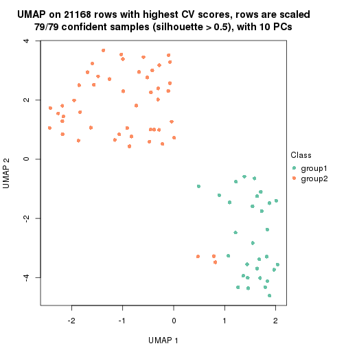
dimension_reduction(res, k = 3, method = "UMAP")
dimension_reduction(res, k = 4, method = "UMAP")
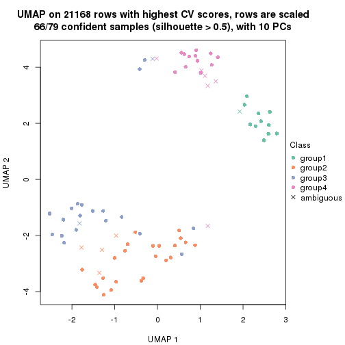
dimension_reduction(res, k = 5, method = "UMAP")
dimension_reduction(res, k = 6, method = "UMAP")
Following heatmap shows how subgroups are split when increasing k:
collect_classes(res)
Test correlation between subgroups and known annotations. If the known annotation is numeric, one-way ANOVA test is applied, and if the known annotation is discrete, chi-squared contingency table test is applied.
test_to_known_factors(res)
#> n stress(p) k
#> CV:mclust 79 4.00e-09 2
#> CV:mclust 73 6.11e-10 3
#> CV:mclust 66 6.32e-08 4
#> CV:mclust 58 2.48e-06 5
#> CV:mclust 67 3.97e-07 6
If matrix rows can be associated to genes, consider to use functional_enrichment(res,
...) to perform function enrichment for the signature genes. See this vignette for more detailed explanations.
The object with results only for a single top-value method and a single partition method can be extracted as:
res = res_list["CV", "NMF"]
# you can also extract it by
# res = res_list["CV:NMF"]
A summary of res and all the functions that can be applied to it:
res
#> A 'ConsensusPartition' object with k = 2, 3, 4, 5, 6.
#> On a matrix with 21168 rows and 79 columns.
#> Top rows (1000, 2000, 3000, 4000, 5000) are extracted by 'CV' method.
#> Subgroups are detected by 'NMF' method.
#> Performed in total 1250 partitions by row resampling.
#> Best k for subgroups seems to be 2.
#>
#> Following methods can be applied to this 'ConsensusPartition' object:
#> [1] "cola_report" "collect_classes" "collect_plots"
#> [4] "collect_stats" "colnames" "compare_signatures"
#> [7] "consensus_heatmap" "dimension_reduction" "functional_enrichment"
#> [10] "get_anno_col" "get_anno" "get_classes"
#> [13] "get_consensus" "get_matrix" "get_membership"
#> [16] "get_param" "get_signatures" "get_stats"
#> [19] "is_best_k" "is_stable_k" "membership_heatmap"
#> [22] "ncol" "nrow" "plot_ecdf"
#> [25] "rownames" "select_partition_number" "show"
#> [28] "suggest_best_k" "test_to_known_factors"
collect_plots() function collects all the plots made from res for all k (number of partitions)
into one single page to provide an easy and fast comparison between different k.
collect_plots(res)
The plots are:
k and the heatmap of
predicted classes for each k.k.k.k.All the plots in panels can be made by individual functions and they are plotted later in this section.
select_partition_number() produces several plots showing different
statistics for choosing “optimized” k. There are following statistics:
k;k, the area increased is defined as \(A_k - A_{k-1}\).The detailed explanations of these statistics can be found in the cola vignette.
Generally speaking, lower PAC score, higher mean silhouette score or higher
concordance corresponds to better partition. Rand index and Jaccard index
measure how similar the current partition is compared to partition with k-1.
If they are too similar, we won't accept k is better than k-1.
select_partition_number(res)
The numeric values for all these statistics can be obtained by get_stats().
get_stats(res)
#> k 1-PAC mean_silhouette concordance area_increased Rand Jaccard
#> 2 2 1.000 0.988 0.994 0.4795 0.523 0.523
#> 3 3 0.471 0.606 0.795 0.2682 0.991 0.982
#> 4 4 0.434 0.425 0.683 0.1370 0.894 0.796
#> 5 5 0.425 0.275 0.573 0.0970 0.855 0.676
#> 6 6 0.461 0.296 0.538 0.0556 0.773 0.410
suggest_best_k() suggests the best \(k\) based on these statistics. The rules are as follows:
suggest_best_k(res)
#> [1] 2
Following shows the table of the partitions (You need to click the show/hide
code output link to see it). The membership matrix (columns with name p*)
is inferred by
clue::cl_consensus()
function with the SE method. Basically the value in the membership matrix
represents the probability to belong to a certain group. The finall class
label for an item is determined with the group with highest probability it
belongs to.
In get_classes() function, the entropy is calculated from the membership
matrix and the silhouette score is calculated from the consensus matrix.
cbind(get_classes(res, k = 2), get_membership(res, k = 2))
#> class entropy silhouette p1 p2
#> GSM464697 2 0.0000 0.992 0.000 1.000
#> GSM464698 2 0.0000 0.992 0.000 1.000
#> GSM464699 2 0.0000 0.992 0.000 1.000
#> GSM464700 2 0.0000 0.992 0.000 1.000
#> GSM464701 2 0.0000 0.992 0.000 1.000
#> GSM464702 2 0.0000 0.992 0.000 1.000
#> GSM464703 2 0.0000 0.992 0.000 1.000
#> GSM464704 2 0.0000 0.992 0.000 1.000
#> GSM464705 2 0.0000 0.992 0.000 1.000
#> GSM464706 2 0.4022 0.916 0.080 0.920
#> GSM464707 2 0.0000 0.992 0.000 1.000
#> GSM464708 2 0.0000 0.992 0.000 1.000
#> GSM464709 2 0.0000 0.992 0.000 1.000
#> GSM464710 2 0.0000 0.992 0.000 1.000
#> GSM464711 2 0.0000 0.992 0.000 1.000
#> GSM464712 2 0.0000 0.992 0.000 1.000
#> GSM464713 2 0.0000 0.992 0.000 1.000
#> GSM464714 2 0.4815 0.890 0.104 0.896
#> GSM464715 2 0.0000 0.992 0.000 1.000
#> GSM464716 2 0.0000 0.992 0.000 1.000
#> GSM464717 2 0.0000 0.992 0.000 1.000
#> GSM464718 2 0.2236 0.961 0.036 0.964
#> GSM464719 2 0.0000 0.992 0.000 1.000
#> GSM464720 2 0.0000 0.992 0.000 1.000
#> GSM464721 1 0.0000 0.998 1.000 0.000
#> GSM464722 2 0.0000 0.992 0.000 1.000
#> GSM464723 1 0.0000 0.998 1.000 0.000
#> GSM464724 2 0.0000 0.992 0.000 1.000
#> GSM464725 2 0.0000 0.992 0.000 1.000
#> GSM464726 2 0.0000 0.992 0.000 1.000
#> GSM464727 2 0.0376 0.989 0.004 0.996
#> GSM464728 2 0.0000 0.992 0.000 1.000
#> GSM464729 2 0.0000 0.992 0.000 1.000
#> GSM464730 2 0.0000 0.992 0.000 1.000
#> GSM464731 2 0.0000 0.992 0.000 1.000
#> GSM464732 2 0.0000 0.992 0.000 1.000
#> GSM464733 2 0.0000 0.992 0.000 1.000
#> GSM464734 2 0.0000 0.992 0.000 1.000
#> GSM464735 2 0.0000 0.992 0.000 1.000
#> GSM464736 2 0.0000 0.992 0.000 1.000
#> GSM464658 1 0.0000 0.998 1.000 0.000
#> GSM464659 1 0.0000 0.998 1.000 0.000
#> GSM464660 1 0.0000 0.998 1.000 0.000
#> GSM464661 1 0.0000 0.998 1.000 0.000
#> GSM464662 2 0.0000 0.992 0.000 1.000
#> GSM464663 1 0.0000 0.998 1.000 0.000
#> GSM464664 2 0.0000 0.992 0.000 1.000
#> GSM464665 1 0.0000 0.998 1.000 0.000
#> GSM464666 1 0.0000 0.998 1.000 0.000
#> GSM464667 1 0.0000 0.998 1.000 0.000
#> GSM464668 1 0.0000 0.998 1.000 0.000
#> GSM464669 1 0.0000 0.998 1.000 0.000
#> GSM464670 1 0.0000 0.998 1.000 0.000
#> GSM464671 1 0.0000 0.998 1.000 0.000
#> GSM464672 1 0.0000 0.998 1.000 0.000
#> GSM464673 1 0.0000 0.998 1.000 0.000
#> GSM464674 1 0.0000 0.998 1.000 0.000
#> GSM464675 1 0.0000 0.998 1.000 0.000
#> GSM464676 1 0.0000 0.998 1.000 0.000
#> GSM464677 2 0.0000 0.992 0.000 1.000
#> GSM464678 1 0.0000 0.998 1.000 0.000
#> GSM464679 2 0.0000 0.992 0.000 1.000
#> GSM464680 2 0.6148 0.829 0.152 0.848
#> GSM464681 1 0.0000 0.998 1.000 0.000
#> GSM464682 2 0.0000 0.992 0.000 1.000
#> GSM464683 2 0.1633 0.972 0.024 0.976
#> GSM464684 2 0.0000 0.992 0.000 1.000
#> GSM464685 2 0.0000 0.992 0.000 1.000
#> GSM464686 2 0.0000 0.992 0.000 1.000
#> GSM464687 2 0.0000 0.992 0.000 1.000
#> GSM464688 1 0.0000 0.998 1.000 0.000
#> GSM464689 1 0.0000 0.998 1.000 0.000
#> GSM464690 1 0.3114 0.941 0.944 0.056
#> GSM464691 1 0.0000 0.998 1.000 0.000
#> GSM464692 1 0.0000 0.998 1.000 0.000
#> GSM464693 1 0.0000 0.998 1.000 0.000
#> GSM464694 1 0.0000 0.998 1.000 0.000
#> GSM464695 1 0.0000 0.998 1.000 0.000
#> GSM464696 1 0.0000 0.998 1.000 0.000
cbind(get_classes(res, k = 3), get_membership(res, k = 3))
#> class entropy silhouette p1 p2 p3
#> GSM464697 2 0.525 0.7457 0.000 0.736 0.264
#> GSM464698 2 0.296 0.8360 0.000 0.900 0.100
#> GSM464699 2 0.489 0.7758 0.000 0.772 0.228
#> GSM464700 2 0.271 0.8407 0.000 0.912 0.088
#> GSM464701 2 0.497 0.7718 0.000 0.764 0.236
#> GSM464702 2 0.141 0.8466 0.000 0.964 0.036
#> GSM464703 2 0.658 0.5857 0.012 0.608 0.380
#> GSM464704 2 0.406 0.8126 0.000 0.836 0.164
#> GSM464705 2 0.678 0.5778 0.020 0.616 0.364
#> GSM464706 2 0.734 0.6853 0.084 0.684 0.232
#> GSM464707 2 0.296 0.8472 0.000 0.900 0.100
#> GSM464708 2 0.254 0.8408 0.000 0.920 0.080
#> GSM464709 2 0.196 0.8493 0.000 0.944 0.056
#> GSM464710 2 0.424 0.8138 0.000 0.824 0.176
#> GSM464711 2 0.590 0.6549 0.000 0.648 0.352
#> GSM464712 2 0.304 0.8419 0.000 0.896 0.104
#> GSM464713 2 0.418 0.8127 0.000 0.828 0.172
#> GSM464714 2 0.884 0.3568 0.132 0.528 0.340
#> GSM464715 2 0.103 0.8471 0.000 0.976 0.024
#> GSM464716 2 0.236 0.8485 0.000 0.928 0.072
#> GSM464717 2 0.280 0.8476 0.000 0.908 0.092
#> GSM464718 2 0.407 0.8426 0.016 0.864 0.120
#> GSM464719 2 0.435 0.8118 0.004 0.828 0.168
#> GSM464720 2 0.207 0.8472 0.000 0.940 0.060
#> GSM464721 1 0.514 0.1735 0.748 0.000 0.252
#> GSM464722 2 0.747 0.4057 0.036 0.520 0.444
#> GSM464723 1 0.619 -0.6203 0.580 0.000 0.420
#> GSM464724 2 0.175 0.8487 0.000 0.952 0.048
#> GSM464725 2 0.556 0.7173 0.000 0.700 0.300
#> GSM464726 2 0.196 0.8455 0.000 0.944 0.056
#> GSM464727 2 0.361 0.8452 0.008 0.880 0.112
#> GSM464728 2 0.263 0.8412 0.000 0.916 0.084
#> GSM464729 2 0.388 0.8219 0.000 0.848 0.152
#> GSM464730 2 0.175 0.8488 0.000 0.952 0.048
#> GSM464731 2 0.186 0.8473 0.000 0.948 0.052
#> GSM464732 2 0.236 0.8435 0.000 0.928 0.072
#> GSM464733 2 0.216 0.8432 0.000 0.936 0.064
#> GSM464734 2 0.440 0.8115 0.000 0.812 0.188
#> GSM464735 2 0.470 0.7895 0.000 0.788 0.212
#> GSM464736 2 0.465 0.7864 0.000 0.792 0.208
#> GSM464658 1 0.406 0.5952 0.836 0.000 0.164
#> GSM464659 1 0.355 0.4954 0.868 0.000 0.132
#> GSM464660 1 0.394 0.5952 0.844 0.000 0.156
#> GSM464661 1 0.599 -0.4288 0.632 0.000 0.368
#> GSM464662 2 0.348 0.8270 0.000 0.872 0.128
#> GSM464663 1 0.540 0.0441 0.720 0.000 0.280
#> GSM464664 2 0.226 0.8445 0.000 0.932 0.068
#> GSM464665 1 0.280 0.5658 0.908 0.000 0.092
#> GSM464666 1 0.601 -0.4331 0.628 0.000 0.372
#> GSM464667 1 0.226 0.5755 0.932 0.000 0.068
#> GSM464668 1 0.271 0.5896 0.912 0.000 0.088
#> GSM464669 1 0.362 0.5786 0.864 0.000 0.136
#> GSM464670 1 0.355 0.5715 0.868 0.000 0.132
#> GSM464671 1 0.319 0.6052 0.888 0.000 0.112
#> GSM464672 1 0.400 0.4900 0.840 0.000 0.160
#> GSM464673 1 0.288 0.6062 0.904 0.000 0.096
#> GSM464674 1 0.559 -0.0746 0.696 0.000 0.304
#> GSM464675 1 0.435 0.5769 0.816 0.000 0.184
#> GSM464676 1 0.514 0.5317 0.748 0.000 0.252
#> GSM464677 2 0.629 0.7149 0.024 0.704 0.272
#> GSM464678 1 0.484 0.5668 0.776 0.000 0.224
#> GSM464679 2 0.480 0.7829 0.000 0.780 0.220
#> GSM464680 2 0.848 0.5661 0.140 0.600 0.260
#> GSM464681 1 0.484 0.5580 0.776 0.000 0.224
#> GSM464682 2 0.288 0.8418 0.000 0.904 0.096
#> GSM464683 2 0.711 0.6568 0.044 0.648 0.308
#> GSM464684 2 0.450 0.8038 0.000 0.804 0.196
#> GSM464685 2 0.445 0.8032 0.000 0.808 0.192
#> GSM464686 2 0.463 0.7982 0.004 0.808 0.188
#> GSM464687 2 0.348 0.8280 0.000 0.872 0.128
#> GSM464688 1 0.529 0.5152 0.732 0.000 0.268
#> GSM464689 1 0.502 0.5448 0.760 0.000 0.240
#> GSM464690 3 0.707 0.0000 0.476 0.020 0.504
#> GSM464691 1 0.619 -0.6521 0.580 0.000 0.420
#> GSM464692 1 0.636 0.4077 0.652 0.012 0.336
#> GSM464693 1 0.207 0.6068 0.940 0.000 0.060
#> GSM464694 1 0.470 0.3583 0.788 0.000 0.212
#> GSM464695 1 0.493 0.2319 0.768 0.000 0.232
#> GSM464696 1 0.164 0.5998 0.956 0.000 0.044
cbind(get_classes(res, k = 4), get_membership(res, k = 4))
#> class entropy silhouette p1 p2 p3 p4
#> GSM464697 2 0.542 0.26223 0.028 0.640 0.332 0.000
#> GSM464698 2 0.339 0.59325 0.124 0.856 0.020 0.000
#> GSM464699 2 0.503 0.41136 0.032 0.716 0.252 0.000
#> GSM464700 2 0.318 0.59428 0.084 0.880 0.036 0.000
#> GSM464701 2 0.513 0.26420 0.012 0.632 0.356 0.000
#> GSM464702 2 0.145 0.59340 0.008 0.956 0.036 0.000
#> GSM464703 2 0.685 -0.20667 0.012 0.468 0.452 0.068
#> GSM464704 2 0.384 0.53562 0.016 0.816 0.168 0.000
#> GSM464705 2 0.791 -0.22064 0.036 0.468 0.376 0.120
#> GSM464706 2 0.849 0.11740 0.264 0.500 0.172 0.064
#> GSM464707 2 0.571 0.44641 0.032 0.692 0.256 0.020
#> GSM464708 2 0.271 0.57986 0.004 0.884 0.112 0.000
#> GSM464709 2 0.526 0.47655 0.020 0.716 0.248 0.016
#> GSM464710 2 0.530 0.36986 0.024 0.696 0.272 0.008
#> GSM464711 3 0.652 -0.07535 0.040 0.464 0.480 0.016
#> GSM464712 2 0.514 0.55469 0.076 0.752 0.172 0.000
#> GSM464713 2 0.469 0.46854 0.032 0.756 0.212 0.000
#> GSM464714 3 0.919 0.40132 0.080 0.240 0.376 0.304
#> GSM464715 2 0.174 0.59500 0.004 0.940 0.056 0.000
#> GSM464716 2 0.472 0.49625 0.016 0.720 0.264 0.000
#> GSM464717 2 0.644 0.44575 0.104 0.664 0.220 0.012
#> GSM464718 2 0.587 0.49172 0.108 0.732 0.144 0.016
#> GSM464719 2 0.658 0.46751 0.204 0.644 0.148 0.004
#> GSM464720 2 0.373 0.57458 0.036 0.844 0.120 0.000
#> GSM464721 4 0.369 0.56344 0.032 0.000 0.124 0.844
#> GSM464722 3 0.773 0.38818 0.008 0.348 0.464 0.180
#> GSM464723 4 0.454 0.52817 0.024 0.000 0.216 0.760
#> GSM464724 2 0.522 0.46379 0.032 0.688 0.280 0.000
#> GSM464725 2 0.596 0.28032 0.016 0.624 0.332 0.028
#> GSM464726 2 0.234 0.59012 0.008 0.912 0.080 0.000
#> GSM464727 2 0.575 0.52135 0.132 0.732 0.128 0.008
#> GSM464728 2 0.277 0.59018 0.004 0.880 0.116 0.000
#> GSM464729 2 0.448 0.45490 0.000 0.712 0.284 0.004
#> GSM464730 2 0.471 0.52612 0.036 0.760 0.204 0.000
#> GSM464731 2 0.402 0.52821 0.000 0.772 0.224 0.004
#> GSM464732 2 0.238 0.60061 0.052 0.920 0.028 0.000
#> GSM464733 2 0.287 0.59428 0.012 0.884 0.104 0.000
#> GSM464734 2 0.561 0.20727 0.008 0.604 0.372 0.016
#> GSM464735 2 0.682 0.15161 0.072 0.564 0.348 0.016
#> GSM464736 2 0.532 0.47352 0.296 0.672 0.032 0.000
#> GSM464658 4 0.619 0.12970 0.372 0.000 0.060 0.568
#> GSM464659 4 0.413 0.55034 0.108 0.000 0.064 0.828
#> GSM464660 1 0.538 0.55060 0.540 0.000 0.012 0.448
#> GSM464661 4 0.612 0.47388 0.120 0.000 0.208 0.672
#> GSM464662 2 0.411 0.58619 0.156 0.812 0.032 0.000
#> GSM464663 4 0.280 0.57918 0.016 0.000 0.092 0.892
#> GSM464664 2 0.340 0.59774 0.068 0.872 0.060 0.000
#> GSM464665 4 0.451 0.51740 0.176 0.000 0.040 0.784
#> GSM464666 4 0.429 0.54412 0.036 0.000 0.164 0.800
#> GSM464667 4 0.398 0.49514 0.192 0.000 0.012 0.796
#> GSM464668 4 0.522 0.48042 0.216 0.000 0.056 0.728
#> GSM464669 4 0.724 0.00494 0.304 0.000 0.172 0.524
#> GSM464670 4 0.520 0.34026 0.276 0.000 0.032 0.692
#> GSM464671 4 0.551 -0.40609 0.484 0.000 0.016 0.500
#> GSM464672 4 0.708 0.19388 0.264 0.000 0.176 0.560
#> GSM464673 4 0.574 0.13902 0.368 0.000 0.036 0.596
#> GSM464674 4 0.423 0.56388 0.080 0.000 0.096 0.824
#> GSM464675 1 0.545 0.68941 0.592 0.000 0.020 0.388
#> GSM464676 1 0.439 0.71602 0.740 0.000 0.008 0.252
#> GSM464677 2 0.626 0.28003 0.416 0.532 0.048 0.004
#> GSM464678 1 0.499 0.68186 0.608 0.000 0.004 0.388
#> GSM464679 2 0.541 0.46227 0.296 0.668 0.036 0.000
#> GSM464680 2 0.873 -0.06617 0.364 0.408 0.160 0.068
#> GSM464681 1 0.571 0.70719 0.620 0.000 0.040 0.340
#> GSM464682 2 0.556 0.53656 0.104 0.752 0.132 0.012
#> GSM464683 2 0.583 0.26904 0.436 0.532 0.032 0.000
#> GSM464684 2 0.603 0.42663 0.236 0.668 0.096 0.000
#> GSM464685 2 0.662 0.42782 0.188 0.628 0.184 0.000
#> GSM464686 2 0.534 0.47439 0.300 0.668 0.032 0.000
#> GSM464687 2 0.595 0.52076 0.156 0.696 0.148 0.000
#> GSM464688 1 0.547 0.67863 0.684 0.000 0.048 0.268
#> GSM464689 1 0.553 0.67925 0.616 0.000 0.028 0.356
#> GSM464690 4 0.710 0.25833 0.060 0.028 0.432 0.480
#> GSM464691 4 0.618 0.43100 0.128 0.000 0.204 0.668
#> GSM464692 1 0.559 0.63637 0.724 0.028 0.032 0.216
#> GSM464693 4 0.618 0.27309 0.320 0.000 0.072 0.608
#> GSM464694 4 0.489 0.55418 0.100 0.000 0.120 0.780
#> GSM464695 4 0.431 0.56911 0.048 0.000 0.144 0.808
#> GSM464696 4 0.480 0.36638 0.276 0.000 0.016 0.708
cbind(get_classes(res, k = 5), get_membership(res, k = 5))
#> class entropy silhouette p1 p2 p3 p4 p5
#> GSM464697 3 0.605 0.48020 0.004 0.292 0.568 0.000 0.136
#> GSM464698 2 0.539 0.32808 0.088 0.700 0.188 0.000 0.024
#> GSM464699 3 0.642 0.42217 0.008 0.328 0.512 0.000 0.152
#> GSM464700 2 0.566 0.25746 0.060 0.648 0.260 0.000 0.032
#> GSM464701 3 0.629 0.34935 0.004 0.328 0.532 0.004 0.132
#> GSM464702 2 0.476 0.15246 0.008 0.644 0.328 0.000 0.020
#> GSM464703 2 0.768 -0.05142 0.000 0.412 0.276 0.060 0.252
#> GSM464704 2 0.553 -0.18252 0.004 0.512 0.428 0.000 0.056
#> GSM464705 3 0.811 0.23269 0.004 0.260 0.372 0.084 0.280
#> GSM464706 2 0.723 0.30168 0.184 0.608 0.048 0.080 0.080
#> GSM464707 2 0.538 0.34986 0.012 0.748 0.100 0.048 0.092
#> GSM464708 2 0.463 0.00941 0.000 0.588 0.396 0.000 0.016
#> GSM464709 2 0.506 0.37130 0.012 0.772 0.076 0.048 0.092
#> GSM464710 3 0.640 0.37133 0.016 0.360 0.524 0.008 0.092
#> GSM464711 3 0.657 0.40607 0.016 0.184 0.584 0.008 0.208
#> GSM464712 2 0.543 0.32207 0.044 0.708 0.180 0.000 0.068
#> GSM464713 3 0.564 0.33473 0.008 0.368 0.560 0.000 0.064
#> GSM464714 4 0.867 -0.14638 0.020 0.304 0.120 0.332 0.224
#> GSM464715 2 0.399 0.31752 0.004 0.772 0.196 0.000 0.028
#> GSM464716 2 0.487 0.35703 0.016 0.756 0.140 0.004 0.084
#> GSM464717 2 0.516 0.37152 0.036 0.772 0.096 0.032 0.064
#> GSM464718 3 0.728 0.26395 0.104 0.328 0.492 0.008 0.068
#> GSM464719 2 0.518 0.39574 0.144 0.748 0.052 0.008 0.048
#> GSM464720 2 0.559 -0.04583 0.012 0.536 0.404 0.000 0.048
#> GSM464721 4 0.382 0.48412 0.020 0.000 0.020 0.808 0.152
#> GSM464722 2 0.877 -0.04998 0.016 0.340 0.224 0.160 0.260
#> GSM464723 4 0.475 0.47904 0.032 0.000 0.044 0.752 0.172
#> GSM464724 2 0.487 0.37152 0.008 0.768 0.116 0.020 0.088
#> GSM464725 2 0.700 -0.04511 0.004 0.484 0.320 0.024 0.168
#> GSM464726 2 0.492 0.12839 0.008 0.636 0.328 0.000 0.028
#> GSM464727 2 0.734 -0.12531 0.132 0.424 0.384 0.004 0.056
#> GSM464728 2 0.532 0.06399 0.000 0.572 0.368 0.000 0.060
#> GSM464729 2 0.495 0.32882 0.004 0.740 0.164 0.012 0.080
#> GSM464730 2 0.421 0.35899 0.008 0.792 0.144 0.004 0.052
#> GSM464731 2 0.514 0.33080 0.000 0.704 0.192 0.008 0.096
#> GSM464732 2 0.466 0.31118 0.032 0.712 0.244 0.000 0.012
#> GSM464733 2 0.541 0.09214 0.004 0.572 0.368 0.000 0.056
#> GSM464734 2 0.707 -0.15310 0.008 0.428 0.388 0.020 0.156
#> GSM464735 3 0.676 0.44297 0.024 0.288 0.520 0.000 0.168
#> GSM464736 2 0.680 0.21367 0.320 0.508 0.140 0.000 0.032
#> GSM464658 4 0.575 0.39345 0.240 0.008 0.008 0.648 0.096
#> GSM464659 4 0.502 0.50137 0.120 0.000 0.012 0.732 0.136
#> GSM464660 1 0.487 0.48725 0.580 0.000 0.000 0.392 0.028
#> GSM464661 4 0.685 -0.24670 0.084 0.000 0.060 0.436 0.420
#> GSM464662 2 0.532 0.36723 0.136 0.724 0.108 0.000 0.032
#> GSM464663 4 0.357 0.55279 0.040 0.000 0.008 0.832 0.120
#> GSM464664 2 0.579 0.21641 0.048 0.592 0.328 0.000 0.032
#> GSM464665 4 0.435 0.50175 0.148 0.000 0.004 0.772 0.076
#> GSM464666 4 0.509 0.35028 0.036 0.000 0.028 0.692 0.244
#> GSM464667 4 0.426 0.47731 0.164 0.000 0.008 0.776 0.052
#> GSM464668 4 0.475 0.49554 0.192 0.000 0.012 0.736 0.060
#> GSM464669 1 0.754 0.25918 0.388 0.000 0.056 0.364 0.192
#> GSM464670 4 0.509 0.40158 0.220 0.000 0.012 0.700 0.068
#> GSM464671 1 0.555 0.39792 0.528 0.000 0.004 0.408 0.060
#> GSM464672 4 0.758 -0.10041 0.288 0.000 0.048 0.404 0.260
#> GSM464673 4 0.576 -0.17729 0.456 0.000 0.008 0.472 0.064
#> GSM464674 4 0.629 0.25992 0.104 0.000 0.028 0.576 0.292
#> GSM464675 1 0.471 0.63431 0.672 0.000 0.004 0.292 0.032
#> GSM464676 1 0.357 0.64483 0.816 0.000 0.012 0.156 0.016
#> GSM464677 2 0.635 0.22628 0.400 0.492 0.076 0.000 0.032
#> GSM464678 1 0.464 0.61715 0.676 0.004 0.004 0.296 0.020
#> GSM464679 2 0.686 0.23209 0.268 0.520 0.184 0.000 0.028
#> GSM464680 2 0.725 0.27580 0.232 0.584 0.056 0.068 0.060
#> GSM464681 1 0.504 0.65686 0.708 0.000 0.016 0.216 0.060
#> GSM464682 2 0.697 -0.12394 0.064 0.452 0.408 0.008 0.068
#> GSM464683 2 0.658 0.20417 0.420 0.464 0.076 0.004 0.036
#> GSM464684 2 0.759 -0.10826 0.236 0.368 0.348 0.000 0.048
#> GSM464685 2 0.606 0.37472 0.140 0.696 0.056 0.016 0.092
#> GSM464686 2 0.741 0.17802 0.312 0.456 0.184 0.004 0.044
#> GSM464687 2 0.426 0.41199 0.100 0.808 0.040 0.000 0.052
#> GSM464688 1 0.621 0.60153 0.648 0.000 0.064 0.192 0.096
#> GSM464689 1 0.606 0.53030 0.636 0.020 0.020 0.256 0.068
#> GSM464690 5 0.757 0.00000 0.072 0.004 0.200 0.228 0.496
#> GSM464691 4 0.739 -0.27992 0.104 0.000 0.096 0.436 0.364
#> GSM464692 1 0.555 0.55356 0.740 0.048 0.064 0.124 0.024
#> GSM464693 4 0.625 0.34040 0.264 0.004 0.032 0.608 0.092
#> GSM464694 4 0.497 0.51161 0.108 0.000 0.016 0.740 0.136
#> GSM464695 4 0.544 0.49250 0.084 0.000 0.036 0.708 0.172
#> GSM464696 4 0.447 0.39383 0.228 0.000 0.004 0.728 0.040
cbind(get_classes(res, k = 6), get_membership(res, k = 6))
#> class entropy silhouette p1 p2 p3 p4 p5 p6
#> GSM464697 2 0.686 -0.2359 0.008 0.408 0.384 0.000 0.120 0.080
#> GSM464698 2 0.498 0.3853 0.096 0.712 0.048 0.000 0.144 0.000
#> GSM464699 2 0.600 0.2690 0.016 0.608 0.236 0.000 0.048 0.092
#> GSM464700 2 0.401 0.4741 0.076 0.804 0.040 0.000 0.076 0.004
#> GSM464701 3 0.587 0.5687 0.000 0.304 0.496 0.000 0.196 0.004
#> GSM464702 2 0.552 0.3334 0.012 0.632 0.164 0.000 0.184 0.008
#> GSM464703 5 0.690 0.1877 0.008 0.124 0.140 0.020 0.576 0.132
#> GSM464704 2 0.647 0.1624 0.004 0.520 0.268 0.000 0.156 0.052
#> GSM464705 2 0.876 0.0390 0.024 0.360 0.148 0.076 0.164 0.228
#> GSM464706 5 0.740 0.3666 0.232 0.284 0.028 0.032 0.412 0.012
#> GSM464707 5 0.579 0.4543 0.028 0.196 0.052 0.016 0.668 0.040
#> GSM464708 2 0.522 0.3777 0.008 0.660 0.132 0.000 0.192 0.008
#> GSM464709 5 0.559 0.4840 0.016 0.268 0.024 0.016 0.632 0.044
#> GSM464710 3 0.607 0.4477 0.004 0.332 0.504 0.004 0.144 0.012
#> GSM464711 3 0.616 0.5368 0.012 0.192 0.624 0.016 0.120 0.036
#> GSM464712 5 0.716 0.1500 0.080 0.348 0.172 0.004 0.392 0.004
#> GSM464713 2 0.612 0.3285 0.012 0.612 0.220 0.004 0.092 0.060
#> GSM464714 5 0.798 0.0371 0.024 0.084 0.052 0.220 0.464 0.156
#> GSM464715 2 0.482 0.1482 0.000 0.588 0.048 0.000 0.356 0.008
#> GSM464716 5 0.637 0.3985 0.016 0.316 0.068 0.020 0.544 0.036
#> GSM464717 5 0.521 0.4835 0.072 0.212 0.020 0.012 0.680 0.004
#> GSM464718 2 0.783 0.1645 0.152 0.468 0.232 0.016 0.080 0.052
#> GSM464719 5 0.673 0.3503 0.172 0.368 0.032 0.008 0.416 0.004
#> GSM464720 2 0.524 0.4328 0.020 0.704 0.100 0.000 0.148 0.028
#> GSM464721 4 0.637 0.2370 0.040 0.000 0.048 0.612 0.128 0.172
#> GSM464722 5 0.762 0.1304 0.020 0.076 0.172 0.088 0.536 0.108
#> GSM464723 4 0.666 0.2653 0.040 0.000 0.144 0.596 0.080 0.140
#> GSM464724 5 0.528 0.4630 0.004 0.288 0.036 0.020 0.632 0.020
#> GSM464725 5 0.726 0.1014 0.012 0.324 0.220 0.012 0.392 0.040
#> GSM464726 2 0.604 0.1288 0.008 0.500 0.188 0.000 0.300 0.004
#> GSM464727 2 0.716 0.3390 0.104 0.556 0.140 0.004 0.152 0.044
#> GSM464728 2 0.569 0.3750 0.012 0.632 0.176 0.000 0.160 0.020
#> GSM464729 5 0.546 0.3969 0.004 0.276 0.080 0.004 0.616 0.020
#> GSM464730 5 0.573 0.3716 0.008 0.312 0.112 0.000 0.556 0.012
#> GSM464731 5 0.569 0.0580 0.008 0.452 0.048 0.012 0.464 0.016
#> GSM464732 2 0.516 0.3907 0.040 0.700 0.084 0.000 0.168 0.008
#> GSM464733 2 0.593 0.3368 0.012 0.612 0.176 0.000 0.172 0.028
#> GSM464734 3 0.659 0.2601 0.020 0.132 0.416 0.016 0.408 0.008
#> GSM464735 2 0.728 0.0806 0.016 0.456 0.248 0.000 0.092 0.188
#> GSM464736 2 0.598 0.2653 0.296 0.572 0.028 0.000 0.080 0.024
#> GSM464658 4 0.613 0.4474 0.200 0.000 0.040 0.620 0.108 0.032
#> GSM464659 4 0.641 0.2618 0.072 0.000 0.032 0.568 0.064 0.264
#> GSM464660 1 0.517 0.1731 0.468 0.000 0.008 0.460 0.000 0.064
#> GSM464661 6 0.588 0.4270 0.040 0.004 0.040 0.256 0.040 0.620
#> GSM464662 2 0.538 0.2571 0.164 0.664 0.020 0.000 0.144 0.008
#> GSM464663 4 0.492 0.4156 0.028 0.000 0.036 0.736 0.052 0.148
#> GSM464664 2 0.499 0.4482 0.036 0.732 0.116 0.000 0.100 0.016
#> GSM464665 4 0.562 0.4456 0.100 0.000 0.032 0.692 0.052 0.124
#> GSM464666 4 0.694 0.0635 0.044 0.004 0.084 0.524 0.068 0.276
#> GSM464667 4 0.449 0.4691 0.076 0.000 0.024 0.772 0.020 0.108
#> GSM464668 4 0.493 0.4827 0.100 0.000 0.020 0.748 0.072 0.060
#> GSM464669 4 0.760 -0.0374 0.280 0.000 0.196 0.328 0.000 0.196
#> GSM464670 4 0.536 0.4727 0.132 0.000 0.016 0.700 0.044 0.108
#> GSM464671 1 0.560 0.1210 0.476 0.000 0.008 0.404 0.000 0.112
#> GSM464672 4 0.755 0.1453 0.224 0.000 0.120 0.400 0.012 0.244
#> GSM464673 4 0.637 0.1156 0.348 0.000 0.032 0.476 0.008 0.136
#> GSM464674 6 0.550 0.1315 0.060 0.000 0.000 0.444 0.028 0.468
#> GSM464675 1 0.592 0.3562 0.544 0.000 0.040 0.324 0.004 0.088
#> GSM464676 1 0.467 0.4213 0.696 0.008 0.012 0.232 0.000 0.052
#> GSM464677 1 0.626 -0.2322 0.452 0.380 0.016 0.012 0.140 0.000
#> GSM464678 1 0.527 0.3374 0.576 0.000 0.012 0.348 0.012 0.052
#> GSM464679 2 0.501 0.3681 0.220 0.684 0.040 0.000 0.052 0.004
#> GSM464680 5 0.725 0.4031 0.272 0.208 0.028 0.036 0.448 0.008
#> GSM464681 1 0.668 0.3437 0.536 0.008 0.056 0.248 0.008 0.144
#> GSM464682 2 0.513 0.4525 0.084 0.724 0.132 0.000 0.036 0.024
#> GSM464683 1 0.624 -0.2591 0.440 0.432 0.016 0.012 0.084 0.016
#> GSM464684 2 0.592 0.3639 0.232 0.604 0.120 0.000 0.012 0.032
#> GSM464685 5 0.757 0.3611 0.212 0.296 0.056 0.028 0.400 0.008
#> GSM464686 2 0.598 0.3043 0.296 0.580 0.028 0.004 0.068 0.024
#> GSM464687 5 0.646 0.3799 0.152 0.328 0.028 0.000 0.480 0.012
#> GSM464688 1 0.740 0.3292 0.500 0.052 0.128 0.252 0.012 0.056
#> GSM464689 1 0.655 0.2185 0.496 0.040 0.008 0.360 0.044 0.052
#> GSM464690 6 0.624 0.4712 0.040 0.028 0.148 0.100 0.028 0.656
#> GSM464691 6 0.738 0.2977 0.072 0.008 0.172 0.304 0.016 0.428
#> GSM464692 1 0.705 0.3843 0.584 0.084 0.096 0.176 0.028 0.032
#> GSM464693 4 0.651 0.4418 0.200 0.000 0.060 0.600 0.084 0.056
#> GSM464694 4 0.589 0.3655 0.104 0.000 0.024 0.664 0.068 0.140
#> GSM464695 4 0.623 0.4185 0.080 0.000 0.128 0.648 0.048 0.096
#> GSM464696 4 0.442 0.4910 0.120 0.000 0.008 0.768 0.028 0.076
Heatmaps for the consensus matrix. It visualizes the probability of two samples to be in a same group.
consensus_heatmap(res, k = 2)
consensus_heatmap(res, k = 3)
consensus_heatmap(res, k = 4)
consensus_heatmap(res, k = 5)
consensus_heatmap(res, k = 6)
Heatmaps for the membership of samples in all partitions to see how consistent they are:
membership_heatmap(res, k = 2)
membership_heatmap(res, k = 3)
membership_heatmap(res, k = 4)

membership_heatmap(res, k = 5)
membership_heatmap(res, k = 6)
As soon as we have had the classes for columns, we can look for signatures which are significantly different between classes which can be candidate marks for certain classes. Following are the heatmaps for signatures.
Signature heatmaps where rows are scaled:
get_signatures(res, k = 2)
get_signatures(res, k = 3)
get_signatures(res, k = 4)
get_signatures(res, k = 5)
get_signatures(res, k = 6)

Signature heatmaps where rows are not scaled:
get_signatures(res, k = 2, scale_rows = FALSE)
get_signatures(res, k = 3, scale_rows = FALSE)
get_signatures(res, k = 4, scale_rows = FALSE)
get_signatures(res, k = 5, scale_rows = FALSE)
get_signatures(res, k = 6, scale_rows = FALSE)

Compare the overlap of signatures from different k:
compare_signatures(res)
get_signature() returns a data frame invisibly. TO get the list of signatures, the function
call should be assigned to a variable explicitly. In following code, if plot argument is set
to FALSE, no heatmap is plotted while only the differential analysis is performed.
# code only for demonstration
tb = get_signature(res, k = ..., plot = FALSE)
An example of the output of tb is:
#> which_row fdr mean_1 mean_2 scaled_mean_1 scaled_mean_2 km
#> 1 38 0.042760348 8.373488 9.131774 -0.5533452 0.5164555 1
#> 2 40 0.018707592 7.106213 8.469186 -0.6173731 0.5762149 1
#> 3 55 0.019134737 10.221463 11.207825 -0.6159697 0.5749050 1
#> 4 59 0.006059896 5.921854 7.869574 -0.6899429 0.6439467 1
#> 5 60 0.018055526 8.928898 10.211722 -0.6204761 0.5791110 1
#> 6 98 0.009384629 15.714769 14.887706 0.6635654 -0.6193277 2
...
The columns in tb are:
which_row: row indices corresponding to the input matrix.fdr: FDR for the differential test. mean_x: The mean value in group x.scaled_mean_x: The mean value in group x after rows are scaled.km: Row groups if k-means clustering is applied to rows.UMAP plot which shows how samples are separated.
dimension_reduction(res, k = 2, method = "UMAP")
dimension_reduction(res, k = 3, method = "UMAP")
dimension_reduction(res, k = 4, method = "UMAP")
dimension_reduction(res, k = 5, method = "UMAP")
dimension_reduction(res, k = 6, method = "UMAP")

Following heatmap shows how subgroups are split when increasing k:
collect_classes(res)
Test correlation between subgroups and known annotations. If the known annotation is numeric, one-way ANOVA test is applied, and if the known annotation is discrete, chi-squared contingency table test is applied.
test_to_known_factors(res)
#> n stress(p) k
#> CV:NMF 79 4.00e-09 2
#> CV:NMF 64 2.34e-07 3
#> CV:NMF 36 1.95e-04 4
#> CV:NMF 11 NA 5
#> CV:NMF 2 NA 6
If matrix rows can be associated to genes, consider to use functional_enrichment(res,
...) to perform function enrichment for the signature genes. See this vignette for more detailed explanations.
The object with results only for a single top-value method and a single partition method can be extracted as:
res = res_list["MAD", "hclust"]
# you can also extract it by
# res = res_list["MAD:hclust"]
A summary of res and all the functions that can be applied to it:
res
#> A 'ConsensusPartition' object with k = 2, 3, 4, 5, 6.
#> On a matrix with 21168 rows and 79 columns.
#> Top rows (1000, 2000, 3000, 4000, 5000) are extracted by 'MAD' method.
#> Subgroups are detected by 'hclust' method.
#> Performed in total 1250 partitions by row resampling.
#> Best k for subgroups seems to be 2.
#>
#> Following methods can be applied to this 'ConsensusPartition' object:
#> [1] "cola_report" "collect_classes" "collect_plots"
#> [4] "collect_stats" "colnames" "compare_signatures"
#> [7] "consensus_heatmap" "dimension_reduction" "functional_enrichment"
#> [10] "get_anno_col" "get_anno" "get_classes"
#> [13] "get_consensus" "get_matrix" "get_membership"
#> [16] "get_param" "get_signatures" "get_stats"
#> [19] "is_best_k" "is_stable_k" "membership_heatmap"
#> [22] "ncol" "nrow" "plot_ecdf"
#> [25] "rownames" "select_partition_number" "show"
#> [28] "suggest_best_k" "test_to_known_factors"
collect_plots() function collects all the plots made from res for all k (number of partitions)
into one single page to provide an easy and fast comparison between different k.
collect_plots(res)
The plots are:
k and the heatmap of
predicted classes for each k.k.k.k.All the plots in panels can be made by individual functions and they are plotted later in this section.
select_partition_number() produces several plots showing different
statistics for choosing “optimized” k. There are following statistics:
k;k, the area increased is defined as \(A_k - A_{k-1}\).The detailed explanations of these statistics can be found in the cola vignette.
Generally speaking, lower PAC score, higher mean silhouette score or higher
concordance corresponds to better partition. Rand index and Jaccard index
measure how similar the current partition is compared to partition with k-1.
If they are too similar, we won't accept k is better than k-1.
select_partition_number(res)
The numeric values for all these statistics can be obtained by get_stats().
get_stats(res)
#> k 1-PAC mean_silhouette concordance area_increased Rand Jaccard
#> 2 2 1.000 0.985 0.987 0.4751 0.523 0.523
#> 3 3 0.894 0.915 0.946 0.0745 0.991 0.982
#> 4 4 0.823 0.795 0.888 0.0851 0.982 0.966
#> 5 5 0.571 0.750 0.835 0.0748 0.991 0.982
#> 6 6 0.510 0.606 0.791 0.0687 0.975 0.950
suggest_best_k() suggests the best \(k\) based on these statistics. The rules are as follows:
suggest_best_k(res)
#> [1] 2
Following shows the table of the partitions (You need to click the show/hide
code output link to see it). The membership matrix (columns with name p*)
is inferred by
clue::cl_consensus()
function with the SE method. Basically the value in the membership matrix
represents the probability to belong to a certain group. The finall class
label for an item is determined with the group with highest probability it
belongs to.
In get_classes() function, the entropy is calculated from the membership
matrix and the silhouette score is calculated from the consensus matrix.
cbind(get_classes(res, k = 2), get_membership(res, k = 2))
#> class entropy silhouette p1 p2
#> GSM464697 2 0.0000 0.987 0.000 1.000
#> GSM464698 2 0.0938 0.987 0.012 0.988
#> GSM464699 2 0.0000 0.987 0.000 1.000
#> GSM464700 2 0.0672 0.988 0.008 0.992
#> GSM464701 2 0.0000 0.987 0.000 1.000
#> GSM464702 2 0.0000 0.987 0.000 1.000
#> GSM464703 2 0.0938 0.984 0.012 0.988
#> GSM464704 2 0.0000 0.987 0.000 1.000
#> GSM464705 2 0.1184 0.981 0.016 0.984
#> GSM464706 2 0.2043 0.976 0.032 0.968
#> GSM464707 2 0.0376 0.988 0.004 0.996
#> GSM464708 2 0.0376 0.988 0.004 0.996
#> GSM464709 2 0.0376 0.988 0.004 0.996
#> GSM464710 2 0.0000 0.987 0.000 1.000
#> GSM464711 2 0.0938 0.987 0.012 0.988
#> GSM464712 2 0.1843 0.978 0.028 0.972
#> GSM464713 2 0.0000 0.987 0.000 1.000
#> GSM464714 2 0.7453 0.746 0.212 0.788
#> GSM464715 2 0.0000 0.987 0.000 1.000
#> GSM464716 2 0.1414 0.982 0.020 0.980
#> GSM464717 2 0.1414 0.985 0.020 0.980
#> GSM464718 2 0.1414 0.985 0.020 0.980
#> GSM464719 2 0.1414 0.985 0.020 0.980
#> GSM464720 2 0.0938 0.987 0.012 0.988
#> GSM464721 1 0.0376 0.992 0.996 0.004
#> GSM464722 2 0.0376 0.986 0.004 0.996
#> GSM464723 1 0.0376 0.992 0.996 0.004
#> GSM464724 2 0.0376 0.986 0.004 0.996
#> GSM464725 2 0.0000 0.987 0.000 1.000
#> GSM464726 2 0.0000 0.987 0.000 1.000
#> GSM464727 2 0.1184 0.986 0.016 0.984
#> GSM464728 2 0.0000 0.987 0.000 1.000
#> GSM464729 2 0.0000 0.987 0.000 1.000
#> GSM464730 2 0.0672 0.987 0.008 0.992
#> GSM464731 2 0.0000 0.987 0.000 1.000
#> GSM464732 2 0.0672 0.988 0.008 0.992
#> GSM464733 2 0.0000 0.987 0.000 1.000
#> GSM464734 2 0.1184 0.986 0.016 0.984
#> GSM464735 2 0.0000 0.987 0.000 1.000
#> GSM464736 2 0.1184 0.986 0.016 0.984
#> GSM464658 1 0.1184 0.991 0.984 0.016
#> GSM464659 1 0.0938 0.993 0.988 0.012
#> GSM464660 1 0.0376 0.992 0.996 0.004
#> GSM464661 1 0.0672 0.992 0.992 0.008
#> GSM464662 2 0.0938 0.987 0.012 0.988
#> GSM464663 1 0.0376 0.992 0.996 0.004
#> GSM464664 2 0.1184 0.986 0.016 0.984
#> GSM464665 1 0.1633 0.985 0.976 0.024
#> GSM464666 1 0.0376 0.992 0.996 0.004
#> GSM464667 1 0.0938 0.993 0.988 0.012
#> GSM464668 1 0.0672 0.993 0.992 0.008
#> GSM464669 1 0.0938 0.993 0.988 0.012
#> GSM464670 1 0.0376 0.992 0.996 0.004
#> GSM464671 1 0.0672 0.993 0.992 0.008
#> GSM464672 1 0.0938 0.993 0.988 0.012
#> GSM464673 1 0.0938 0.993 0.988 0.012
#> GSM464674 1 0.0938 0.993 0.988 0.012
#> GSM464675 1 0.0672 0.993 0.992 0.008
#> GSM464676 1 0.1414 0.989 0.980 0.020
#> GSM464677 2 0.2043 0.975 0.032 0.968
#> GSM464678 1 0.0672 0.992 0.992 0.008
#> GSM464679 2 0.0938 0.987 0.012 0.988
#> GSM464680 2 0.1843 0.978 0.028 0.972
#> GSM464681 1 0.0672 0.993 0.992 0.008
#> GSM464682 2 0.0938 0.987 0.012 0.988
#> GSM464683 2 0.0938 0.987 0.012 0.988
#> GSM464684 2 0.0938 0.987 0.012 0.988
#> GSM464685 2 0.0938 0.986 0.012 0.988
#> GSM464686 2 0.0938 0.987 0.012 0.988
#> GSM464687 2 0.0938 0.987 0.012 0.988
#> GSM464688 1 0.1633 0.985 0.976 0.024
#> GSM464689 1 0.0938 0.992 0.988 0.012
#> GSM464690 1 0.2603 0.968 0.956 0.044
#> GSM464691 1 0.1414 0.990 0.980 0.020
#> GSM464692 1 0.1843 0.982 0.972 0.028
#> GSM464693 1 0.0672 0.993 0.992 0.008
#> GSM464694 1 0.0938 0.993 0.988 0.012
#> GSM464695 1 0.0938 0.993 0.988 0.012
#> GSM464696 1 0.0376 0.992 0.996 0.004
cbind(get_classes(res, k = 3), get_membership(res, k = 3))
#> class entropy silhouette p1 p2 p3
#> GSM464697 2 0.1529 0.960 0.000 0.960 0.040
#> GSM464698 2 0.0592 0.983 0.012 0.988 0.000
#> GSM464699 2 0.0237 0.983 0.000 0.996 0.004
#> GSM464700 2 0.0848 0.984 0.008 0.984 0.008
#> GSM464701 2 0.0000 0.983 0.000 1.000 0.000
#> GSM464702 2 0.0000 0.983 0.000 1.000 0.000
#> GSM464703 2 0.1989 0.951 0.004 0.948 0.048
#> GSM464704 2 0.0000 0.983 0.000 1.000 0.000
#> GSM464705 2 0.0747 0.976 0.000 0.984 0.016
#> GSM464706 2 0.1289 0.972 0.032 0.968 0.000
#> GSM464707 2 0.0661 0.984 0.004 0.988 0.008
#> GSM464708 2 0.0237 0.984 0.004 0.996 0.000
#> GSM464709 2 0.0237 0.984 0.004 0.996 0.000
#> GSM464710 2 0.0000 0.983 0.000 1.000 0.000
#> GSM464711 2 0.0592 0.983 0.012 0.988 0.000
#> GSM464712 2 0.1453 0.974 0.024 0.968 0.008
#> GSM464713 2 0.0237 0.983 0.000 0.996 0.004
#> GSM464714 2 0.5911 0.724 0.156 0.784 0.060
#> GSM464715 2 0.0237 0.983 0.000 0.996 0.004
#> GSM464716 2 0.1129 0.979 0.020 0.976 0.004
#> GSM464717 2 0.0892 0.981 0.020 0.980 0.000
#> GSM464718 2 0.1129 0.981 0.020 0.976 0.004
#> GSM464719 2 0.1129 0.981 0.020 0.976 0.004
#> GSM464720 2 0.0829 0.983 0.012 0.984 0.004
#> GSM464721 1 0.3879 0.863 0.848 0.000 0.152
#> GSM464722 2 0.0475 0.982 0.004 0.992 0.004
#> GSM464723 1 0.3816 0.864 0.852 0.000 0.148
#> GSM464724 2 0.0475 0.982 0.004 0.992 0.004
#> GSM464725 2 0.0000 0.983 0.000 1.000 0.000
#> GSM464726 2 0.0237 0.983 0.000 0.996 0.004
#> GSM464727 2 0.0983 0.982 0.016 0.980 0.004
#> GSM464728 2 0.0000 0.983 0.000 1.000 0.000
#> GSM464729 2 0.0000 0.983 0.000 1.000 0.000
#> GSM464730 2 0.0424 0.984 0.008 0.992 0.000
#> GSM464731 2 0.0000 0.983 0.000 1.000 0.000
#> GSM464732 2 0.0424 0.984 0.008 0.992 0.000
#> GSM464733 2 0.0000 0.983 0.000 1.000 0.000
#> GSM464734 2 0.0829 0.982 0.012 0.984 0.004
#> GSM464735 2 0.0000 0.983 0.000 1.000 0.000
#> GSM464736 2 0.0983 0.982 0.016 0.980 0.004
#> GSM464658 1 0.1832 0.896 0.956 0.008 0.036
#> GSM464659 1 0.2356 0.896 0.928 0.000 0.072
#> GSM464660 1 0.2165 0.897 0.936 0.000 0.064
#> GSM464661 3 0.4002 0.000 0.160 0.000 0.840
#> GSM464662 2 0.0829 0.983 0.012 0.984 0.004
#> GSM464663 1 0.3412 0.877 0.876 0.000 0.124
#> GSM464664 2 0.0983 0.982 0.016 0.980 0.004
#> GSM464665 1 0.2383 0.892 0.940 0.016 0.044
#> GSM464666 1 0.3686 0.874 0.860 0.000 0.140
#> GSM464667 1 0.1860 0.894 0.948 0.000 0.052
#> GSM464668 1 0.1860 0.895 0.948 0.000 0.052
#> GSM464669 1 0.3619 0.854 0.864 0.000 0.136
#> GSM464670 1 0.1643 0.894 0.956 0.000 0.044
#> GSM464671 1 0.1964 0.888 0.944 0.000 0.056
#> GSM464672 1 0.4235 0.831 0.824 0.000 0.176
#> GSM464673 1 0.3752 0.845 0.856 0.000 0.144
#> GSM464674 1 0.5058 0.684 0.756 0.000 0.244
#> GSM464675 1 0.2165 0.887 0.936 0.000 0.064
#> GSM464676 1 0.2384 0.891 0.936 0.008 0.056
#> GSM464677 2 0.1525 0.971 0.032 0.964 0.004
#> GSM464678 1 0.2261 0.894 0.932 0.000 0.068
#> GSM464679 2 0.0592 0.983 0.012 0.988 0.000
#> GSM464680 2 0.1267 0.975 0.024 0.972 0.004
#> GSM464681 1 0.2356 0.887 0.928 0.000 0.072
#> GSM464682 2 0.0829 0.983 0.012 0.984 0.004
#> GSM464683 2 0.0592 0.983 0.012 0.988 0.000
#> GSM464684 2 0.0829 0.983 0.012 0.984 0.004
#> GSM464685 2 0.1015 0.980 0.012 0.980 0.008
#> GSM464686 2 0.0829 0.983 0.012 0.984 0.004
#> GSM464687 2 0.0829 0.983 0.012 0.984 0.004
#> GSM464688 1 0.2339 0.895 0.940 0.012 0.048
#> GSM464689 1 0.1950 0.897 0.952 0.008 0.040
#> GSM464690 1 0.7207 0.338 0.584 0.032 0.384
#> GSM464691 1 0.5845 0.565 0.688 0.004 0.308
#> GSM464692 1 0.1781 0.889 0.960 0.020 0.020
#> GSM464693 1 0.2165 0.893 0.936 0.000 0.064
#> GSM464694 1 0.3619 0.852 0.864 0.000 0.136
#> GSM464695 1 0.3116 0.883 0.892 0.000 0.108
#> GSM464696 1 0.2261 0.894 0.932 0.000 0.068
cbind(get_classes(res, k = 4), get_membership(res, k = 4))
#> class entropy silhouette p1 p2 p3 p4
#> GSM464697 2 0.3659 0.8796 0.136 0.840 0.024 0.000
#> GSM464698 2 0.0779 0.9651 0.016 0.980 0.000 0.004
#> GSM464699 2 0.1489 0.9652 0.044 0.952 0.004 0.000
#> GSM464700 2 0.1022 0.9665 0.032 0.968 0.000 0.000
#> GSM464701 2 0.1635 0.9599 0.044 0.948 0.008 0.000
#> GSM464702 2 0.1209 0.9664 0.032 0.964 0.004 0.000
#> GSM464703 2 0.3554 0.8777 0.136 0.844 0.020 0.000
#> GSM464704 2 0.1545 0.9621 0.040 0.952 0.008 0.000
#> GSM464705 2 0.2255 0.9427 0.068 0.920 0.012 0.000
#> GSM464706 2 0.1911 0.9592 0.032 0.944 0.004 0.020
#> GSM464707 2 0.0592 0.9672 0.016 0.984 0.000 0.000
#> GSM464708 2 0.1211 0.9642 0.040 0.960 0.000 0.000
#> GSM464709 2 0.0895 0.9669 0.020 0.976 0.004 0.000
#> GSM464710 2 0.1211 0.9622 0.040 0.960 0.000 0.000
#> GSM464711 2 0.2207 0.9554 0.056 0.928 0.012 0.004
#> GSM464712 2 0.1843 0.9624 0.028 0.948 0.008 0.016
#> GSM464713 2 0.1302 0.9640 0.044 0.956 0.000 0.000
#> GSM464714 2 0.5856 0.7117 0.060 0.752 0.056 0.132
#> GSM464715 2 0.1302 0.9647 0.044 0.956 0.000 0.000
#> GSM464716 2 0.1985 0.9640 0.040 0.940 0.004 0.016
#> GSM464717 2 0.1339 0.9660 0.024 0.964 0.004 0.008
#> GSM464718 2 0.1545 0.9613 0.040 0.952 0.000 0.008
#> GSM464719 2 0.1786 0.9633 0.036 0.948 0.008 0.008
#> GSM464720 2 0.1398 0.9656 0.040 0.956 0.000 0.004
#> GSM464721 4 0.5727 0.5453 0.228 0.000 0.080 0.692
#> GSM464722 2 0.1661 0.9602 0.052 0.944 0.004 0.000
#> GSM464723 4 0.5994 0.4035 0.296 0.000 0.068 0.636
#> GSM464724 2 0.1452 0.9651 0.036 0.956 0.008 0.000
#> GSM464725 2 0.1398 0.9636 0.040 0.956 0.004 0.000
#> GSM464726 2 0.1305 0.9656 0.036 0.960 0.004 0.000
#> GSM464727 2 0.1543 0.9634 0.032 0.956 0.004 0.008
#> GSM464728 2 0.1211 0.9622 0.040 0.960 0.000 0.000
#> GSM464729 2 0.1356 0.9639 0.032 0.960 0.008 0.000
#> GSM464730 2 0.1675 0.9646 0.044 0.948 0.004 0.004
#> GSM464731 2 0.1489 0.9620 0.044 0.952 0.004 0.000
#> GSM464732 2 0.1109 0.9661 0.028 0.968 0.000 0.004
#> GSM464733 2 0.1545 0.9608 0.040 0.952 0.008 0.000
#> GSM464734 2 0.2075 0.9564 0.044 0.936 0.016 0.004
#> GSM464735 2 0.1356 0.9649 0.032 0.960 0.008 0.000
#> GSM464736 2 0.1256 0.9642 0.028 0.964 0.000 0.008
#> GSM464658 4 0.2021 0.7313 0.040 0.000 0.024 0.936
#> GSM464659 4 0.3245 0.7201 0.100 0.000 0.028 0.872
#> GSM464660 4 0.3501 0.6969 0.132 0.000 0.020 0.848
#> GSM464661 3 0.1545 0.0000 0.008 0.000 0.952 0.040
#> GSM464662 2 0.0895 0.9647 0.020 0.976 0.000 0.004
#> GSM464663 4 0.4318 0.6769 0.116 0.000 0.068 0.816
#> GSM464664 2 0.1256 0.9636 0.028 0.964 0.000 0.008
#> GSM464665 4 0.2587 0.7264 0.056 0.008 0.020 0.916
#> GSM464666 4 0.5672 0.5016 0.276 0.000 0.056 0.668
#> GSM464667 4 0.2408 0.7267 0.044 0.000 0.036 0.920
#> GSM464668 4 0.2111 0.7287 0.044 0.000 0.024 0.932
#> GSM464669 4 0.5183 -0.0882 0.408 0.000 0.008 0.584
#> GSM464670 4 0.2197 0.7297 0.048 0.000 0.024 0.928
#> GSM464671 4 0.3219 0.6520 0.164 0.000 0.000 0.836
#> GSM464672 1 0.5628 0.2643 0.556 0.000 0.024 0.420
#> GSM464673 4 0.4499 0.6479 0.072 0.000 0.124 0.804
#> GSM464674 4 0.6537 0.1914 0.164 0.000 0.200 0.636
#> GSM464675 4 0.3583 0.6332 0.180 0.000 0.004 0.816
#> GSM464676 4 0.3636 0.6512 0.172 0.000 0.008 0.820
#> GSM464677 2 0.1816 0.9600 0.024 0.948 0.004 0.024
#> GSM464678 4 0.3217 0.7001 0.128 0.000 0.012 0.860
#> GSM464679 2 0.0779 0.9651 0.016 0.980 0.000 0.004
#> GSM464680 2 0.1697 0.9624 0.028 0.952 0.004 0.016
#> GSM464681 4 0.3801 0.5898 0.220 0.000 0.000 0.780
#> GSM464682 2 0.1004 0.9640 0.024 0.972 0.000 0.004
#> GSM464683 2 0.0779 0.9651 0.016 0.980 0.000 0.004
#> GSM464684 2 0.1209 0.9642 0.032 0.964 0.000 0.004
#> GSM464685 2 0.1356 0.9662 0.032 0.960 0.000 0.008
#> GSM464686 2 0.1109 0.9632 0.028 0.968 0.000 0.004
#> GSM464687 2 0.1296 0.9647 0.028 0.964 0.004 0.004
#> GSM464688 4 0.3037 0.7204 0.100 0.000 0.020 0.880
#> GSM464689 4 0.2845 0.7216 0.076 0.000 0.028 0.896
#> GSM464690 1 0.7922 0.2478 0.432 0.004 0.272 0.292
#> GSM464691 4 0.7680 -0.5523 0.324 0.000 0.232 0.444
#> GSM464692 4 0.2515 0.7107 0.072 0.012 0.004 0.912
#> GSM464693 4 0.2578 0.7302 0.052 0.000 0.036 0.912
#> GSM464694 4 0.4499 0.6476 0.072 0.000 0.124 0.804
#> GSM464695 4 0.4465 0.6571 0.144 0.000 0.056 0.800
#> GSM464696 4 0.2593 0.7278 0.080 0.000 0.016 0.904
cbind(get_classes(res, k = 5), get_membership(res, k = 5))
#> class entropy silhouette p1 p2 p3 p4 p5
#> GSM464697 3 0.3336 0.8353 0.000 NA 0.772 0.000 0.000
#> GSM464698 3 0.0963 0.9278 0.000 NA 0.964 0.000 0.000
#> GSM464699 3 0.2516 0.9074 0.000 NA 0.860 0.000 0.000
#> GSM464700 3 0.1704 0.9296 0.004 NA 0.928 0.000 0.000
#> GSM464701 3 0.2230 0.9172 0.000 NA 0.884 0.000 0.000
#> GSM464702 3 0.1671 0.9280 0.000 NA 0.924 0.000 0.000
#> GSM464703 3 0.3333 0.8470 0.004 NA 0.788 0.000 0.000
#> GSM464704 3 0.2179 0.9192 0.000 NA 0.888 0.000 0.000
#> GSM464705 3 0.4211 0.6246 0.004 NA 0.636 0.000 0.000
#> GSM464706 3 0.2206 0.9218 0.004 NA 0.912 0.016 0.000
#> GSM464707 3 0.1341 0.9312 0.000 NA 0.944 0.000 0.000
#> GSM464708 3 0.1908 0.9247 0.000 NA 0.908 0.000 0.000
#> GSM464709 3 0.1608 0.9315 0.000 NA 0.928 0.000 0.000
#> GSM464710 3 0.2020 0.9210 0.000 NA 0.900 0.000 0.000
#> GSM464711 3 0.2377 0.9127 0.000 NA 0.872 0.000 0.000
#> GSM464712 3 0.1809 0.9313 0.000 NA 0.928 0.012 0.000
#> GSM464713 3 0.3074 0.8603 0.000 NA 0.804 0.000 0.000
#> GSM464714 3 0.6295 0.5747 0.032 NA 0.636 0.116 0.008
#> GSM464715 3 0.1671 0.9294 0.000 NA 0.924 0.000 0.000
#> GSM464716 3 0.2248 0.9280 0.000 NA 0.900 0.012 0.000
#> GSM464717 3 0.1430 0.9292 0.000 NA 0.944 0.004 0.000
#> GSM464718 3 0.2719 0.8827 0.000 NA 0.852 0.004 0.000
#> GSM464719 3 0.1768 0.9268 0.004 NA 0.924 0.000 0.000
#> GSM464720 3 0.1410 0.9304 0.000 NA 0.940 0.000 0.000
#> GSM464721 4 0.5939 0.4577 0.228 NA 0.000 0.624 0.012
#> GSM464722 3 0.2891 0.8820 0.000 NA 0.824 0.000 0.000
#> GSM464723 4 0.6445 0.3051 0.276 NA 0.000 0.560 0.020
#> GSM464724 3 0.2127 0.9265 0.000 NA 0.892 0.000 0.000
#> GSM464725 3 0.2230 0.9196 0.000 NA 0.884 0.000 0.000
#> GSM464726 3 0.1792 0.9264 0.000 NA 0.916 0.000 0.000
#> GSM464727 3 0.2629 0.8976 0.000 NA 0.860 0.004 0.000
#> GSM464728 3 0.1908 0.9240 0.000 NA 0.908 0.000 0.000
#> GSM464729 3 0.1908 0.9278 0.000 NA 0.908 0.000 0.000
#> GSM464730 3 0.1732 0.9280 0.000 NA 0.920 0.000 0.000
#> GSM464731 3 0.1851 0.9235 0.000 NA 0.912 0.000 0.000
#> GSM464732 3 0.1121 0.9297 0.000 NA 0.956 0.000 0.000
#> GSM464733 3 0.1732 0.9266 0.000 NA 0.920 0.000 0.000
#> GSM464734 3 0.2329 0.9144 0.000 NA 0.876 0.000 0.000
#> GSM464735 3 0.2020 0.9302 0.000 NA 0.900 0.000 0.000
#> GSM464736 3 0.1502 0.9266 0.000 NA 0.940 0.004 0.000
#> GSM464658 4 0.2302 0.6942 0.080 NA 0.000 0.904 0.008
#> GSM464659 4 0.3077 0.6828 0.100 NA 0.000 0.864 0.008
#> GSM464660 4 0.3461 0.6063 0.224 NA 0.000 0.772 0.004
#> GSM464661 5 0.0404 0.0000 0.000 NA 0.000 0.012 0.988
#> GSM464662 3 0.1043 0.9275 0.000 NA 0.960 0.000 0.000
#> GSM464663 4 0.4733 0.6279 0.128 NA 0.000 0.768 0.028
#> GSM464664 3 0.1571 0.9260 0.004 NA 0.936 0.000 0.000
#> GSM464665 4 0.2493 0.6953 0.060 NA 0.012 0.908 0.012
#> GSM464666 4 0.5976 0.4100 0.252 NA 0.000 0.604 0.008
#> GSM464667 4 0.2198 0.6951 0.048 NA 0.000 0.920 0.020
#> GSM464668 4 0.2060 0.6952 0.052 NA 0.000 0.924 0.016
#> GSM464669 1 0.4630 0.2584 0.572 NA 0.000 0.416 0.004
#> GSM464670 4 0.1996 0.6968 0.048 NA 0.000 0.928 0.012
#> GSM464671 4 0.3586 0.5323 0.264 NA 0.000 0.736 0.000
#> GSM464672 1 0.4315 0.4490 0.728 NA 0.000 0.244 0.016
#> GSM464673 4 0.4733 0.6140 0.124 NA 0.000 0.752 0.116
#> GSM464674 4 0.7160 0.1877 0.148 NA 0.000 0.572 0.132
#> GSM464675 4 0.3707 0.5061 0.284 NA 0.000 0.716 0.000
#> GSM464676 4 0.3741 0.5421 0.264 NA 0.000 0.732 0.000
#> GSM464677 3 0.2208 0.9235 0.000 NA 0.908 0.020 0.000
#> GSM464678 4 0.3659 0.6097 0.220 NA 0.000 0.768 0.012
#> GSM464679 3 0.0963 0.9278 0.000 NA 0.964 0.000 0.000
#> GSM464680 3 0.2084 0.9247 0.004 NA 0.920 0.008 0.004
#> GSM464681 4 0.3913 0.4359 0.324 NA 0.000 0.676 0.000
#> GSM464682 3 0.1197 0.9251 0.000 NA 0.952 0.000 0.000
#> GSM464683 3 0.0963 0.9278 0.000 NA 0.964 0.000 0.000
#> GSM464684 3 0.1410 0.9264 0.000 NA 0.940 0.000 0.000
#> GSM464685 3 0.2054 0.9320 0.004 NA 0.916 0.008 0.000
#> GSM464686 3 0.1410 0.9237 0.000 NA 0.940 0.000 0.000
#> GSM464687 3 0.1410 0.9273 0.000 NA 0.940 0.000 0.000
#> GSM464688 4 0.3147 0.6809 0.112 NA 0.000 0.856 0.008
#> GSM464689 4 0.3201 0.6765 0.132 NA 0.000 0.844 0.016
#> GSM464690 1 0.8644 0.0399 0.320 NA 0.008 0.212 0.168
#> GSM464691 4 0.8276 -0.4645 0.292 NA 0.000 0.360 0.148
#> GSM464692 4 0.3134 0.6548 0.132 NA 0.012 0.848 0.004
#> GSM464693 4 0.2264 0.6962 0.060 NA 0.000 0.912 0.024
#> GSM464694 4 0.4557 0.6228 0.104 NA 0.000 0.772 0.112
#> GSM464695 4 0.4566 0.6217 0.160 NA 0.000 0.768 0.040
#> GSM464696 4 0.2856 0.6923 0.104 NA 0.000 0.872 0.008
cbind(get_classes(res, k = 6), get_membership(res, k = 6))
#> class entropy silhouette p1 p2 p3 p4 p5 p6
#> GSM464697 2 0.507 0.353 0.024 0.660 0.040 0.000 0.260 0.016
#> GSM464698 2 0.120 0.752 0.000 0.944 0.000 0.000 0.056 0.000
#> GSM464699 2 0.308 0.578 0.000 0.760 0.000 0.000 0.240 0.000
#> GSM464700 2 0.196 0.746 0.000 0.896 0.004 0.000 0.100 0.000
#> GSM464701 2 0.287 0.698 0.000 0.804 0.000 0.000 0.192 0.004
#> GSM464702 2 0.230 0.741 0.000 0.856 0.000 0.000 0.144 0.000
#> GSM464703 2 0.488 0.473 0.024 0.708 0.044 0.000 0.204 0.020
#> GSM464704 2 0.288 0.711 0.000 0.812 0.008 0.000 0.180 0.000
#> GSM464705 5 0.385 0.000 0.000 0.464 0.000 0.000 0.536 0.000
#> GSM464706 2 0.255 0.724 0.004 0.872 0.004 0.012 0.108 0.000
#> GSM464707 2 0.233 0.748 0.000 0.872 0.004 0.000 0.120 0.004
#> GSM464708 2 0.238 0.734 0.000 0.848 0.000 0.000 0.152 0.000
#> GSM464709 2 0.209 0.749 0.000 0.876 0.000 0.000 0.124 0.000
#> GSM464710 2 0.263 0.713 0.000 0.820 0.000 0.000 0.180 0.000
#> GSM464711 2 0.336 0.582 0.000 0.764 0.004 0.000 0.224 0.008
#> GSM464712 2 0.227 0.755 0.000 0.880 0.000 0.012 0.108 0.000
#> GSM464713 2 0.346 0.193 0.000 0.688 0.000 0.000 0.312 0.000
#> GSM464714 2 0.657 -0.506 0.020 0.548 0.060 0.096 0.272 0.004
#> GSM464715 2 0.214 0.756 0.000 0.872 0.000 0.000 0.128 0.000
#> GSM464716 2 0.257 0.744 0.000 0.852 0.000 0.012 0.136 0.000
#> GSM464717 2 0.201 0.753 0.000 0.892 0.000 0.004 0.104 0.000
#> GSM464718 2 0.325 0.495 0.000 0.768 0.000 0.004 0.224 0.004
#> GSM464719 2 0.248 0.723 0.000 0.848 0.004 0.000 0.148 0.000
#> GSM464720 2 0.200 0.758 0.000 0.884 0.000 0.000 0.116 0.000
#> GSM464721 4 0.689 0.382 0.132 0.000 0.204 0.552 0.076 0.036
#> GSM464722 2 0.351 0.542 0.000 0.740 0.008 0.000 0.248 0.004
#> GSM464723 4 0.785 0.139 0.184 0.000 0.172 0.448 0.144 0.052
#> GSM464724 2 0.295 0.728 0.000 0.816 0.008 0.000 0.172 0.004
#> GSM464725 2 0.281 0.704 0.000 0.812 0.004 0.000 0.184 0.000
#> GSM464726 2 0.230 0.736 0.000 0.856 0.000 0.000 0.144 0.000
#> GSM464727 2 0.313 0.579 0.000 0.784 0.000 0.004 0.208 0.004
#> GSM464728 2 0.244 0.727 0.000 0.852 0.004 0.000 0.144 0.000
#> GSM464729 2 0.277 0.727 0.000 0.816 0.004 0.000 0.180 0.000
#> GSM464730 2 0.263 0.739 0.000 0.840 0.008 0.000 0.152 0.000
#> GSM464731 2 0.252 0.721 0.000 0.844 0.004 0.000 0.152 0.000
#> GSM464732 2 0.166 0.760 0.000 0.912 0.000 0.000 0.088 0.000
#> GSM464733 2 0.230 0.735 0.000 0.856 0.000 0.000 0.144 0.000
#> GSM464734 2 0.339 0.675 0.000 0.784 0.020 0.000 0.192 0.004
#> GSM464735 2 0.287 0.709 0.000 0.804 0.000 0.000 0.192 0.004
#> GSM464736 2 0.229 0.728 0.000 0.876 0.004 0.004 0.116 0.000
#> GSM464658 4 0.245 0.691 0.068 0.000 0.032 0.892 0.004 0.004
#> GSM464659 4 0.387 0.663 0.060 0.000 0.088 0.816 0.020 0.016
#> GSM464660 4 0.369 0.589 0.220 0.000 0.032 0.748 0.000 0.000
#> GSM464661 6 0.150 0.000 0.000 0.000 0.076 0.000 0.000 0.924
#> GSM464662 2 0.127 0.750 0.000 0.940 0.000 0.000 0.060 0.000
#> GSM464663 4 0.501 0.609 0.108 0.000 0.084 0.740 0.044 0.024
#> GSM464664 2 0.224 0.728 0.000 0.880 0.004 0.000 0.112 0.004
#> GSM464665 4 0.279 0.692 0.060 0.012 0.016 0.888 0.012 0.012
#> GSM464666 4 0.693 0.324 0.156 0.000 0.224 0.524 0.072 0.024
#> GSM464667 4 0.227 0.694 0.040 0.000 0.024 0.912 0.008 0.016
#> GSM464668 4 0.214 0.692 0.048 0.000 0.016 0.916 0.008 0.012
#> GSM464669 1 0.390 0.482 0.652 0.000 0.012 0.336 0.000 0.000
#> GSM464670 4 0.225 0.695 0.044 0.000 0.024 0.912 0.008 0.012
#> GSM464671 4 0.378 0.491 0.272 0.000 0.020 0.708 0.000 0.000
#> GSM464672 1 0.320 0.425 0.824 0.000 0.028 0.140 0.000 0.008
#> GSM464673 4 0.475 0.606 0.132 0.000 0.028 0.724 0.000 0.116
#> GSM464674 4 0.614 0.116 0.084 0.000 0.340 0.520 0.008 0.048
#> GSM464675 4 0.410 0.450 0.292 0.000 0.032 0.676 0.000 0.000
#> GSM464676 4 0.405 0.507 0.256 0.000 0.032 0.708 0.004 0.000
#> GSM464677 2 0.255 0.732 0.004 0.868 0.000 0.016 0.112 0.000
#> GSM464678 4 0.395 0.583 0.228 0.000 0.020 0.736 0.000 0.016
#> GSM464679 2 0.127 0.751 0.000 0.940 0.000 0.000 0.060 0.000
#> GSM464680 2 0.240 0.733 0.008 0.880 0.004 0.004 0.104 0.000
#> GSM464681 4 0.424 0.347 0.344 0.000 0.028 0.628 0.000 0.000
#> GSM464682 2 0.196 0.729 0.000 0.896 0.000 0.000 0.100 0.004
#> GSM464683 2 0.120 0.752 0.000 0.944 0.000 0.000 0.056 0.000
#> GSM464684 2 0.215 0.729 0.000 0.880 0.000 0.000 0.116 0.004
#> GSM464685 2 0.256 0.754 0.000 0.864 0.008 0.008 0.120 0.000
#> GSM464686 2 0.205 0.721 0.000 0.880 0.000 0.000 0.120 0.000
#> GSM464687 2 0.201 0.739 0.000 0.892 0.004 0.000 0.104 0.000
#> GSM464688 4 0.353 0.674 0.096 0.000 0.044 0.832 0.020 0.008
#> GSM464689 4 0.358 0.669 0.120 0.000 0.048 0.816 0.004 0.012
#> GSM464690 3 0.415 0.603 0.048 0.008 0.788 0.132 0.008 0.016
#> GSM464691 3 0.528 0.612 0.116 0.000 0.628 0.244 0.004 0.008
#> GSM464692 4 0.342 0.646 0.124 0.012 0.036 0.824 0.004 0.000
#> GSM464693 4 0.251 0.694 0.060 0.000 0.016 0.896 0.008 0.020
#> GSM464694 4 0.479 0.621 0.100 0.000 0.044 0.740 0.004 0.112
#> GSM464695 4 0.504 0.614 0.116 0.000 0.084 0.736 0.028 0.036
#> GSM464696 4 0.271 0.690 0.096 0.000 0.016 0.872 0.012 0.004
Heatmaps for the consensus matrix. It visualizes the probability of two samples to be in a same group.
consensus_heatmap(res, k = 2)
consensus_heatmap(res, k = 3)
consensus_heatmap(res, k = 4)
consensus_heatmap(res, k = 5)
consensus_heatmap(res, k = 6)
Heatmaps for the membership of samples in all partitions to see how consistent they are:
membership_heatmap(res, k = 2)
membership_heatmap(res, k = 3)
membership_heatmap(res, k = 4)
membership_heatmap(res, k = 5)
membership_heatmap(res, k = 6)
As soon as we have had the classes for columns, we can look for signatures which are significantly different between classes which can be candidate marks for certain classes. Following are the heatmaps for signatures.
Signature heatmaps where rows are scaled:
get_signatures(res, k = 2)
get_signatures(res, k = 3)
get_signatures(res, k = 4)
get_signatures(res, k = 5)
get_signatures(res, k = 6)
Signature heatmaps where rows are not scaled:
get_signatures(res, k = 2, scale_rows = FALSE)
get_signatures(res, k = 3, scale_rows = FALSE)
get_signatures(res, k = 4, scale_rows = FALSE)
get_signatures(res, k = 5, scale_rows = FALSE)
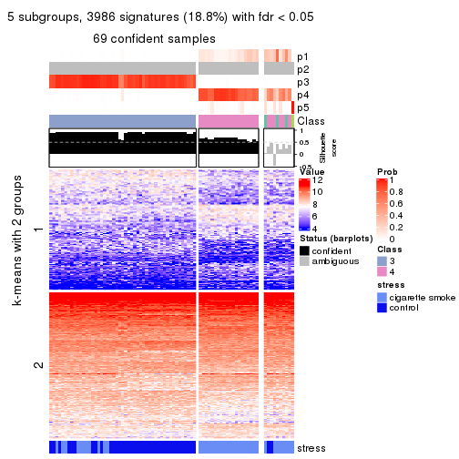
get_signatures(res, k = 6, scale_rows = FALSE)
Compare the overlap of signatures from different k:
compare_signatures(res)
get_signature() returns a data frame invisibly. TO get the list of signatures, the function
call should be assigned to a variable explicitly. In following code, if plot argument is set
to FALSE, no heatmap is plotted while only the differential analysis is performed.
# code only for demonstration
tb = get_signature(res, k = ..., plot = FALSE)
An example of the output of tb is:
#> which_row fdr mean_1 mean_2 scaled_mean_1 scaled_mean_2 km
#> 1 38 0.042760348 8.373488 9.131774 -0.5533452 0.5164555 1
#> 2 40 0.018707592 7.106213 8.469186 -0.6173731 0.5762149 1
#> 3 55 0.019134737 10.221463 11.207825 -0.6159697 0.5749050 1
#> 4 59 0.006059896 5.921854 7.869574 -0.6899429 0.6439467 1
#> 5 60 0.018055526 8.928898 10.211722 -0.6204761 0.5791110 1
#> 6 98 0.009384629 15.714769 14.887706 0.6635654 -0.6193277 2
...
The columns in tb are:
which_row: row indices corresponding to the input matrix.fdr: FDR for the differential test. mean_x: The mean value in group x.scaled_mean_x: The mean value in group x after rows are scaled.km: Row groups if k-means clustering is applied to rows.UMAP plot which shows how samples are separated.
dimension_reduction(res, k = 2, method = "UMAP")

dimension_reduction(res, k = 3, method = "UMAP")
dimension_reduction(res, k = 4, method = "UMAP")
dimension_reduction(res, k = 5, method = "UMAP")
dimension_reduction(res, k = 6, method = "UMAP")
Following heatmap shows how subgroups are split when increasing k:
collect_classes(res)
Test correlation between subgroups and known annotations. If the known annotation is numeric, one-way ANOVA test is applied, and if the known annotation is discrete, chi-squared contingency table test is applied.
test_to_known_factors(res)
#> n stress(p) k
#> MAD:hclust 79 4.00e-09 2
#> MAD:hclust 77 1.12e-08 3
#> MAD:hclust 72 2.71e-08 4
#> MAD:hclust 69 2.04e-08 5
#> MAD:hclust 63 2.70e-07 6
If matrix rows can be associated to genes, consider to use functional_enrichment(res,
...) to perform function enrichment for the signature genes. See this vignette for more detailed explanations.
The object with results only for a single top-value method and a single partition method can be extracted as:
res = res_list["MAD", "kmeans"]
# you can also extract it by
# res = res_list["MAD:kmeans"]
A summary of res and all the functions that can be applied to it:
res
#> A 'ConsensusPartition' object with k = 2, 3, 4, 5, 6.
#> On a matrix with 21168 rows and 79 columns.
#> Top rows (1000, 2000, 3000, 4000, 5000) are extracted by 'MAD' method.
#> Subgroups are detected by 'kmeans' method.
#> Performed in total 1250 partitions by row resampling.
#> Best k for subgroups seems to be 2.
#>
#> Following methods can be applied to this 'ConsensusPartition' object:
#> [1] "cola_report" "collect_classes" "collect_plots"
#> [4] "collect_stats" "colnames" "compare_signatures"
#> [7] "consensus_heatmap" "dimension_reduction" "functional_enrichment"
#> [10] "get_anno_col" "get_anno" "get_classes"
#> [13] "get_consensus" "get_matrix" "get_membership"
#> [16] "get_param" "get_signatures" "get_stats"
#> [19] "is_best_k" "is_stable_k" "membership_heatmap"
#> [22] "ncol" "nrow" "plot_ecdf"
#> [25] "rownames" "select_partition_number" "show"
#> [28] "suggest_best_k" "test_to_known_factors"
collect_plots() function collects all the plots made from res for all k (number of partitions)
into one single page to provide an easy and fast comparison between different k.
collect_plots(res)
The plots are:
k and the heatmap of
predicted classes for each k.k.k.k.All the plots in panels can be made by individual functions and they are plotted later in this section.
select_partition_number() produces several plots showing different
statistics for choosing “optimized” k. There are following statistics:
k;k, the area increased is defined as \(A_k - A_{k-1}\).The detailed explanations of these statistics can be found in the cola vignette.
Generally speaking, lower PAC score, higher mean silhouette score or higher
concordance corresponds to better partition. Rand index and Jaccard index
measure how similar the current partition is compared to partition with k-1.
If they are too similar, we won't accept k is better than k-1.
select_partition_number(res)
The numeric values for all these statistics can be obtained by get_stats().
get_stats(res)
#> k 1-PAC mean_silhouette concordance area_increased Rand Jaccard
#> 2 2 1.000 1.000 1.000 0.4776 0.523 0.523
#> 3 3 0.618 0.483 0.746 0.2893 0.883 0.777
#> 4 4 0.546 0.668 0.788 0.1358 0.807 0.569
#> 5 5 0.602 0.492 0.701 0.0856 0.951 0.839
#> 6 6 0.637 0.439 0.708 0.0383 0.944 0.794
suggest_best_k() suggests the best \(k\) based on these statistics. The rules are as follows:
suggest_best_k(res)
#> [1] 2
Following shows the table of the partitions (You need to click the show/hide
code output link to see it). The membership matrix (columns with name p*)
is inferred by
clue::cl_consensus()
function with the SE method. Basically the value in the membership matrix
represents the probability to belong to a certain group. The finall class
label for an item is determined with the group with highest probability it
belongs to.
In get_classes() function, the entropy is calculated from the membership
matrix and the silhouette score is calculated from the consensus matrix.
cbind(get_classes(res, k = 2), get_membership(res, k = 2))
#> class entropy silhouette p1 p2
#> GSM464697 2 0 1 0 1
#> GSM464698 2 0 1 0 1
#> GSM464699 2 0 1 0 1
#> GSM464700 2 0 1 0 1
#> GSM464701 2 0 1 0 1
#> GSM464702 2 0 1 0 1
#> GSM464703 2 0 1 0 1
#> GSM464704 2 0 1 0 1
#> GSM464705 2 0 1 0 1
#> GSM464706 2 0 1 0 1
#> GSM464707 2 0 1 0 1
#> GSM464708 2 0 1 0 1
#> GSM464709 2 0 1 0 1
#> GSM464710 2 0 1 0 1
#> GSM464711 2 0 1 0 1
#> GSM464712 2 0 1 0 1
#> GSM464713 2 0 1 0 1
#> GSM464714 2 0 1 0 1
#> GSM464715 2 0 1 0 1
#> GSM464716 2 0 1 0 1
#> GSM464717 2 0 1 0 1
#> GSM464718 2 0 1 0 1
#> GSM464719 2 0 1 0 1
#> GSM464720 2 0 1 0 1
#> GSM464721 1 0 1 1 0
#> GSM464722 2 0 1 0 1
#> GSM464723 1 0 1 1 0
#> GSM464724 2 0 1 0 1
#> GSM464725 2 0 1 0 1
#> GSM464726 2 0 1 0 1
#> GSM464727 2 0 1 0 1
#> GSM464728 2 0 1 0 1
#> GSM464729 2 0 1 0 1
#> GSM464730 2 0 1 0 1
#> GSM464731 2 0 1 0 1
#> GSM464732 2 0 1 0 1
#> GSM464733 2 0 1 0 1
#> GSM464734 2 0 1 0 1
#> GSM464735 2 0 1 0 1
#> GSM464736 2 0 1 0 1
#> GSM464658 1 0 1 1 0
#> GSM464659 1 0 1 1 0
#> GSM464660 1 0 1 1 0
#> GSM464661 1 0 1 1 0
#> GSM464662 2 0 1 0 1
#> GSM464663 1 0 1 1 0
#> GSM464664 2 0 1 0 1
#> GSM464665 1 0 1 1 0
#> GSM464666 1 0 1 1 0
#> GSM464667 1 0 1 1 0
#> GSM464668 1 0 1 1 0
#> GSM464669 1 0 1 1 0
#> GSM464670 1 0 1 1 0
#> GSM464671 1 0 1 1 0
#> GSM464672 1 0 1 1 0
#> GSM464673 1 0 1 1 0
#> GSM464674 1 0 1 1 0
#> GSM464675 1 0 1 1 0
#> GSM464676 1 0 1 1 0
#> GSM464677 2 0 1 0 1
#> GSM464678 1 0 1 1 0
#> GSM464679 2 0 1 0 1
#> GSM464680 2 0 1 0 1
#> GSM464681 1 0 1 1 0
#> GSM464682 2 0 1 0 1
#> GSM464683 2 0 1 0 1
#> GSM464684 2 0 1 0 1
#> GSM464685 2 0 1 0 1
#> GSM464686 2 0 1 0 1
#> GSM464687 2 0 1 0 1
#> GSM464688 1 0 1 1 0
#> GSM464689 1 0 1 1 0
#> GSM464690 1 0 1 1 0
#> GSM464691 1 0 1 1 0
#> GSM464692 1 0 1 1 0
#> GSM464693 1 0 1 1 0
#> GSM464694 1 0 1 1 0
#> GSM464695 1 0 1 1 0
#> GSM464696 1 0 1 1 0
cbind(get_classes(res, k = 3), get_membership(res, k = 3))
#> class entropy silhouette p1 p2 p3
#> GSM464697 2 0.6307 -0.765 0.000 0.512 0.488
#> GSM464698 2 0.0592 0.568 0.000 0.988 0.012
#> GSM464699 3 0.6309 0.759 0.000 0.500 0.500
#> GSM464700 2 0.1163 0.552 0.000 0.972 0.028
#> GSM464701 2 0.6305 -0.766 0.000 0.516 0.484
#> GSM464702 2 0.6295 -0.754 0.000 0.528 0.472
#> GSM464703 3 0.6235 0.860 0.000 0.436 0.564
#> GSM464704 2 0.6305 -0.769 0.000 0.516 0.484
#> GSM464705 3 0.6305 0.749 0.000 0.484 0.516
#> GSM464706 2 0.3116 0.546 0.000 0.892 0.108
#> GSM464707 2 0.3116 0.547 0.000 0.892 0.108
#> GSM464708 2 0.6299 -0.761 0.000 0.524 0.476
#> GSM464709 2 0.3816 0.519 0.000 0.852 0.148
#> GSM464710 2 0.6302 -0.763 0.000 0.520 0.480
#> GSM464711 2 0.6307 -0.768 0.000 0.512 0.488
#> GSM464712 2 0.2959 0.550 0.000 0.900 0.100
#> GSM464713 3 0.6309 0.759 0.000 0.500 0.500
#> GSM464714 2 0.4682 0.466 0.004 0.804 0.192
#> GSM464715 2 0.6299 -0.759 0.000 0.524 0.476
#> GSM464716 2 0.3482 0.535 0.000 0.872 0.128
#> GSM464717 2 0.3192 0.545 0.000 0.888 0.112
#> GSM464718 2 0.3192 0.466 0.000 0.888 0.112
#> GSM464719 2 0.3038 0.548 0.000 0.896 0.104
#> GSM464720 2 0.0747 0.564 0.000 0.984 0.016
#> GSM464721 1 0.4555 0.876 0.800 0.000 0.200
#> GSM464722 3 0.6168 0.856 0.000 0.412 0.588
#> GSM464723 1 0.4702 0.871 0.788 0.000 0.212
#> GSM464724 3 0.6225 0.864 0.000 0.432 0.568
#> GSM464725 3 0.6168 0.856 0.000 0.412 0.588
#> GSM464726 2 0.6295 -0.754 0.000 0.528 0.472
#> GSM464727 2 0.0747 0.566 0.000 0.984 0.016
#> GSM464728 2 0.6299 -0.762 0.000 0.524 0.476
#> GSM464729 3 0.6225 0.864 0.000 0.432 0.568
#> GSM464730 2 0.6305 -0.647 0.000 0.516 0.484
#> GSM464731 2 0.6299 -0.760 0.000 0.524 0.476
#> GSM464732 2 0.0237 0.567 0.000 0.996 0.004
#> GSM464733 2 0.6291 -0.750 0.000 0.532 0.468
#> GSM464734 3 0.6267 0.836 0.000 0.452 0.548
#> GSM464735 2 0.6291 -0.749 0.000 0.532 0.468
#> GSM464736 2 0.0892 0.568 0.000 0.980 0.020
#> GSM464658 1 0.1964 0.920 0.944 0.000 0.056
#> GSM464659 1 0.4121 0.887 0.832 0.000 0.168
#> GSM464660 1 0.3192 0.908 0.888 0.000 0.112
#> GSM464661 1 0.5291 0.841 0.732 0.000 0.268
#> GSM464662 2 0.0237 0.568 0.000 0.996 0.004
#> GSM464663 1 0.3482 0.900 0.872 0.000 0.128
#> GSM464664 2 0.0592 0.566 0.000 0.988 0.012
#> GSM464665 1 0.0747 0.919 0.984 0.000 0.016
#> GSM464666 1 0.4796 0.867 0.780 0.000 0.220
#> GSM464667 1 0.1964 0.916 0.944 0.000 0.056
#> GSM464668 1 0.1031 0.918 0.976 0.000 0.024
#> GSM464669 1 0.3267 0.907 0.884 0.000 0.116
#> GSM464670 1 0.1964 0.916 0.944 0.000 0.056
#> GSM464671 1 0.3267 0.907 0.884 0.000 0.116
#> GSM464672 1 0.3879 0.905 0.848 0.000 0.152
#> GSM464673 1 0.2066 0.918 0.940 0.000 0.060
#> GSM464674 1 0.4002 0.892 0.840 0.000 0.160
#> GSM464675 1 0.3267 0.907 0.884 0.000 0.116
#> GSM464676 1 0.3267 0.907 0.884 0.000 0.116
#> GSM464677 2 0.2878 0.551 0.000 0.904 0.096
#> GSM464678 1 0.3267 0.907 0.884 0.000 0.116
#> GSM464679 2 0.0424 0.566 0.000 0.992 0.008
#> GSM464680 2 0.3116 0.546 0.000 0.892 0.108
#> GSM464681 1 0.3267 0.907 0.884 0.000 0.116
#> GSM464682 2 0.0424 0.566 0.000 0.992 0.008
#> GSM464683 2 0.0424 0.569 0.000 0.992 0.008
#> GSM464684 2 0.0424 0.566 0.000 0.992 0.008
#> GSM464685 2 0.2878 0.550 0.000 0.904 0.096
#> GSM464686 2 0.0424 0.566 0.000 0.992 0.008
#> GSM464687 2 0.3038 0.548 0.000 0.896 0.104
#> GSM464688 1 0.3482 0.910 0.872 0.000 0.128
#> GSM464689 1 0.3192 0.912 0.888 0.000 0.112
#> GSM464690 1 0.5254 0.853 0.736 0.000 0.264
#> GSM464691 1 0.4750 0.869 0.784 0.000 0.216
#> GSM464692 1 0.3482 0.905 0.872 0.000 0.128
#> GSM464693 1 0.1289 0.920 0.968 0.000 0.032
#> GSM464694 1 0.2066 0.916 0.940 0.000 0.060
#> GSM464695 1 0.2356 0.915 0.928 0.000 0.072
#> GSM464696 1 0.1163 0.919 0.972 0.000 0.028
cbind(get_classes(res, k = 4), get_membership(res, k = 4))
#> class entropy silhouette p1 p2 p3 p4
#> GSM464697 3 0.5247 0.876 0.000 0.228 0.720 0.052
#> GSM464698 2 0.1256 0.867 0.000 0.964 0.028 0.008
#> GSM464699 3 0.6479 0.823 0.000 0.224 0.636 0.140
#> GSM464700 2 0.2563 0.829 0.000 0.908 0.072 0.020
#> GSM464701 3 0.5235 0.876 0.000 0.236 0.716 0.048
#> GSM464702 3 0.4807 0.878 0.000 0.248 0.728 0.024
#> GSM464703 3 0.5536 0.789 0.000 0.180 0.724 0.096
#> GSM464704 3 0.4711 0.879 0.000 0.236 0.740 0.024
#> GSM464705 3 0.7036 0.747 0.000 0.212 0.576 0.212
#> GSM464706 2 0.4022 0.840 0.000 0.836 0.096 0.068
#> GSM464707 2 0.4724 0.818 0.000 0.792 0.112 0.096
#> GSM464708 3 0.4776 0.876 0.000 0.244 0.732 0.024
#> GSM464709 2 0.5096 0.785 0.000 0.760 0.156 0.084
#> GSM464710 3 0.4988 0.877 0.000 0.236 0.728 0.036
#> GSM464711 3 0.6084 0.860 0.000 0.244 0.660 0.096
#> GSM464712 2 0.3333 0.859 0.000 0.872 0.088 0.040
#> GSM464713 3 0.6492 0.823 0.000 0.220 0.636 0.144
#> GSM464714 2 0.6605 0.656 0.000 0.616 0.136 0.248
#> GSM464715 3 0.4644 0.879 0.000 0.228 0.748 0.024
#> GSM464716 2 0.4094 0.839 0.000 0.828 0.116 0.056
#> GSM464717 2 0.4093 0.838 0.000 0.832 0.096 0.072
#> GSM464718 2 0.5515 0.637 0.000 0.732 0.116 0.152
#> GSM464719 2 0.3885 0.846 0.000 0.844 0.092 0.064
#> GSM464720 2 0.2797 0.824 0.000 0.900 0.068 0.032
#> GSM464721 1 0.5604 -0.583 0.504 0.000 0.020 0.476
#> GSM464722 3 0.5714 0.789 0.000 0.156 0.716 0.128
#> GSM464723 4 0.5606 0.573 0.480 0.000 0.020 0.500
#> GSM464724 3 0.4949 0.811 0.000 0.180 0.760 0.060
#> GSM464725 3 0.5613 0.796 0.000 0.156 0.724 0.120
#> GSM464726 3 0.4295 0.877 0.000 0.240 0.752 0.008
#> GSM464727 2 0.2751 0.834 0.000 0.904 0.040 0.056
#> GSM464728 3 0.4360 0.877 0.000 0.248 0.744 0.008
#> GSM464729 3 0.4798 0.818 0.000 0.180 0.768 0.052
#> GSM464730 3 0.6004 0.696 0.000 0.276 0.648 0.076
#> GSM464731 3 0.4453 0.878 0.000 0.244 0.744 0.012
#> GSM464732 2 0.1624 0.864 0.000 0.952 0.028 0.020
#> GSM464733 3 0.4898 0.873 0.000 0.260 0.716 0.024
#> GSM464734 3 0.5929 0.776 0.000 0.204 0.688 0.108
#> GSM464735 3 0.6538 0.809 0.000 0.292 0.600 0.108
#> GSM464736 2 0.1174 0.867 0.000 0.968 0.012 0.020
#> GSM464658 1 0.4313 0.470 0.736 0.000 0.004 0.260
#> GSM464659 1 0.5132 -0.444 0.548 0.000 0.004 0.448
#> GSM464660 1 0.0707 0.621 0.980 0.000 0.000 0.020
#> GSM464661 4 0.6554 0.660 0.376 0.000 0.084 0.540
#> GSM464662 2 0.1256 0.867 0.000 0.964 0.028 0.008
#> GSM464663 1 0.5626 -0.166 0.588 0.000 0.028 0.384
#> GSM464664 2 0.1406 0.862 0.000 0.960 0.016 0.024
#> GSM464665 1 0.3751 0.559 0.800 0.000 0.004 0.196
#> GSM464666 4 0.5586 0.661 0.452 0.000 0.020 0.528
#> GSM464667 1 0.4456 0.431 0.716 0.000 0.004 0.280
#> GSM464668 1 0.4175 0.531 0.776 0.000 0.012 0.212
#> GSM464669 1 0.1733 0.596 0.948 0.000 0.024 0.028
#> GSM464670 1 0.4372 0.450 0.728 0.000 0.004 0.268
#> GSM464671 1 0.0927 0.613 0.976 0.000 0.008 0.016
#> GSM464672 1 0.3606 0.445 0.844 0.000 0.024 0.132
#> GSM464673 1 0.3962 0.584 0.820 0.000 0.028 0.152
#> GSM464674 1 0.6200 -0.377 0.580 0.000 0.064 0.356
#> GSM464675 1 0.0592 0.614 0.984 0.000 0.000 0.016
#> GSM464676 1 0.0592 0.614 0.984 0.000 0.000 0.016
#> GSM464677 2 0.2882 0.860 0.000 0.892 0.084 0.024
#> GSM464678 1 0.0524 0.618 0.988 0.000 0.004 0.008
#> GSM464679 2 0.0927 0.863 0.000 0.976 0.016 0.008
#> GSM464680 2 0.4022 0.840 0.000 0.836 0.096 0.068
#> GSM464681 1 0.0804 0.613 0.980 0.000 0.008 0.012
#> GSM464682 2 0.1733 0.856 0.000 0.948 0.024 0.028
#> GSM464683 2 0.1109 0.866 0.000 0.968 0.028 0.004
#> GSM464684 2 0.1724 0.857 0.000 0.948 0.020 0.032
#> GSM464685 2 0.3160 0.858 0.000 0.872 0.108 0.020
#> GSM464686 2 0.1411 0.860 0.000 0.960 0.020 0.020
#> GSM464687 2 0.3399 0.852 0.000 0.868 0.092 0.040
#> GSM464688 1 0.1576 0.610 0.948 0.000 0.004 0.048
#> GSM464689 1 0.2216 0.619 0.908 0.000 0.000 0.092
#> GSM464690 4 0.6285 0.663 0.412 0.000 0.060 0.528
#> GSM464691 1 0.6273 -0.639 0.488 0.000 0.056 0.456
#> GSM464692 1 0.0921 0.613 0.972 0.000 0.000 0.028
#> GSM464693 1 0.3545 0.582 0.828 0.000 0.008 0.164
#> GSM464694 1 0.4955 0.431 0.708 0.000 0.024 0.268
#> GSM464695 1 0.4697 0.382 0.696 0.000 0.008 0.296
#> GSM464696 1 0.3448 0.587 0.828 0.000 0.004 0.168
cbind(get_classes(res, k = 5), get_membership(res, k = 5))
#> class entropy silhouette p1 p2 p3 p4 p5
#> GSM464697 3 0.3396 0.7609 0.000 0.024 0.856 0.032 0.088
#> GSM464698 2 0.2946 0.6215 0.000 0.868 0.088 0.000 0.044
#> GSM464699 3 0.5810 0.6603 0.000 0.036 0.660 0.084 0.220
#> GSM464700 2 0.3801 0.5807 0.000 0.820 0.128 0.016 0.036
#> GSM464701 3 0.3270 0.7623 0.000 0.036 0.864 0.020 0.080
#> GSM464702 3 0.2536 0.7714 0.000 0.052 0.904 0.012 0.032
#> GSM464703 3 0.6625 0.5026 0.000 0.124 0.488 0.024 0.364
#> GSM464704 3 0.2922 0.7736 0.000 0.056 0.872 0.000 0.072
#> GSM464705 3 0.7430 0.4364 0.000 0.080 0.448 0.132 0.340
#> GSM464706 2 0.3838 0.1719 0.000 0.716 0.004 0.000 0.280
#> GSM464707 2 0.4829 -0.2955 0.000 0.604 0.016 0.008 0.372
#> GSM464708 3 0.2730 0.7685 0.000 0.056 0.892 0.008 0.044
#> GSM464709 2 0.5657 -0.3242 0.000 0.560 0.076 0.004 0.360
#> GSM464710 3 0.2313 0.7684 0.000 0.040 0.916 0.012 0.032
#> GSM464711 3 0.5049 0.7121 0.000 0.044 0.748 0.068 0.140
#> GSM464712 2 0.3648 0.4201 0.000 0.812 0.024 0.008 0.156
#> GSM464713 3 0.5365 0.6800 0.000 0.032 0.704 0.072 0.192
#> GSM464714 5 0.5990 0.0000 0.000 0.448 0.016 0.068 0.468
#> GSM464715 3 0.3792 0.7683 0.000 0.064 0.828 0.012 0.096
#> GSM464716 2 0.4377 0.1917 0.000 0.720 0.028 0.004 0.248
#> GSM464717 2 0.4130 0.1279 0.000 0.696 0.012 0.000 0.292
#> GSM464718 2 0.6690 0.0790 0.000 0.604 0.140 0.068 0.188
#> GSM464719 2 0.3675 0.3199 0.000 0.772 0.004 0.008 0.216
#> GSM464720 2 0.4380 0.5566 0.000 0.796 0.108 0.028 0.068
#> GSM464721 4 0.4200 0.6322 0.320 0.000 0.004 0.672 0.004
#> GSM464722 3 0.6283 0.5021 0.000 0.084 0.500 0.024 0.392
#> GSM464723 4 0.4194 0.6447 0.276 0.000 0.004 0.708 0.012
#> GSM464724 3 0.5635 0.6319 0.000 0.120 0.636 0.004 0.240
#> GSM464725 3 0.6070 0.5917 0.000 0.072 0.568 0.028 0.332
#> GSM464726 3 0.2199 0.7689 0.000 0.060 0.916 0.008 0.016
#> GSM464727 2 0.4387 0.5588 0.000 0.804 0.080 0.048 0.068
#> GSM464728 3 0.3304 0.7651 0.000 0.092 0.852 0.004 0.052
#> GSM464729 3 0.5243 0.6665 0.000 0.104 0.684 0.004 0.208
#> GSM464730 3 0.6525 0.4107 0.000 0.224 0.512 0.004 0.260
#> GSM464731 3 0.3441 0.7655 0.000 0.088 0.848 0.008 0.056
#> GSM464732 2 0.3496 0.6193 0.000 0.848 0.096 0.020 0.036
#> GSM464733 3 0.3250 0.7498 0.000 0.128 0.844 0.008 0.020
#> GSM464734 3 0.6686 0.4965 0.000 0.156 0.528 0.024 0.292
#> GSM464735 3 0.6731 0.6231 0.000 0.144 0.612 0.088 0.156
#> GSM464736 2 0.2513 0.6187 0.000 0.904 0.060 0.020 0.016
#> GSM464658 1 0.4268 0.2982 0.648 0.000 0.000 0.344 0.008
#> GSM464659 4 0.4497 0.5040 0.424 0.000 0.000 0.568 0.008
#> GSM464660 1 0.0955 0.6425 0.968 0.000 0.000 0.028 0.004
#> GSM464661 4 0.6394 0.5356 0.220 0.000 0.008 0.556 0.216
#> GSM464662 2 0.2952 0.6218 0.000 0.872 0.088 0.004 0.036
#> GSM464663 4 0.5044 0.3099 0.464 0.000 0.000 0.504 0.032
#> GSM464664 2 0.2965 0.6174 0.000 0.876 0.084 0.012 0.028
#> GSM464665 1 0.4220 0.3927 0.688 0.004 0.000 0.300 0.008
#> GSM464666 4 0.4637 0.6510 0.292 0.000 0.004 0.676 0.028
#> GSM464667 1 0.4201 0.1350 0.592 0.000 0.000 0.408 0.000
#> GSM464668 1 0.4451 0.3105 0.644 0.000 0.000 0.340 0.016
#> GSM464669 1 0.1153 0.6245 0.964 0.000 0.004 0.024 0.008
#> GSM464670 1 0.4171 0.1875 0.604 0.000 0.000 0.396 0.000
#> GSM464671 1 0.0566 0.6368 0.984 0.000 0.000 0.012 0.004
#> GSM464672 1 0.3320 0.4381 0.820 0.000 0.004 0.164 0.012
#> GSM464673 1 0.4119 0.5048 0.752 0.000 0.000 0.212 0.036
#> GSM464674 1 0.6127 -0.4878 0.456 0.000 0.000 0.416 0.128
#> GSM464675 1 0.0162 0.6397 0.996 0.000 0.000 0.004 0.000
#> GSM464676 1 0.0290 0.6402 0.992 0.000 0.000 0.008 0.000
#> GSM464677 2 0.2660 0.4619 0.000 0.864 0.008 0.000 0.128
#> GSM464678 1 0.0404 0.6415 0.988 0.000 0.000 0.012 0.000
#> GSM464679 2 0.2692 0.6213 0.000 0.884 0.092 0.008 0.016
#> GSM464680 2 0.3934 0.1788 0.000 0.716 0.008 0.000 0.276
#> GSM464681 1 0.0000 0.6390 1.000 0.000 0.000 0.000 0.000
#> GSM464682 2 0.3419 0.6028 0.000 0.856 0.084 0.024 0.036
#> GSM464683 2 0.2793 0.6231 0.000 0.876 0.088 0.000 0.036
#> GSM464684 2 0.3339 0.6056 0.000 0.860 0.084 0.024 0.032
#> GSM464685 2 0.3351 0.4523 0.000 0.828 0.020 0.004 0.148
#> GSM464686 2 0.3018 0.6142 0.000 0.876 0.080 0.024 0.020
#> GSM464687 2 0.3764 0.3322 0.000 0.772 0.008 0.008 0.212
#> GSM464688 1 0.1502 0.6336 0.940 0.000 0.000 0.056 0.004
#> GSM464689 1 0.2953 0.5899 0.844 0.000 0.000 0.144 0.012
#> GSM464690 4 0.6762 0.5699 0.304 0.004 0.012 0.504 0.176
#> GSM464691 4 0.6364 0.5702 0.356 0.000 0.008 0.500 0.136
#> GSM464692 1 0.1173 0.6311 0.964 0.004 0.000 0.020 0.012
#> GSM464693 1 0.3885 0.4654 0.724 0.000 0.000 0.268 0.008
#> GSM464694 1 0.5272 0.0102 0.552 0.000 0.000 0.396 0.052
#> GSM464695 4 0.4659 0.0945 0.492 0.000 0.000 0.496 0.012
#> GSM464696 1 0.3949 0.4312 0.696 0.000 0.000 0.300 0.004
cbind(get_classes(res, k = 6), get_membership(res, k = 6))
#> class entropy silhouette p1 p2 p3 p4 p5 p6
#> GSM464697 3 0.4671 0.57002 0.000 0.060 0.776 0.036 0.060 0.068
#> GSM464698 2 0.1155 0.71520 0.000 0.956 0.004 0.004 0.036 0.000
#> GSM464699 3 0.6516 -0.27466 0.000 0.040 0.520 0.008 0.196 0.236
#> GSM464700 2 0.1749 0.70399 0.000 0.936 0.032 0.004 0.016 0.012
#> GSM464701 3 0.4756 0.57461 0.000 0.072 0.764 0.028 0.092 0.044
#> GSM464702 3 0.3219 0.62072 0.000 0.076 0.856 0.008 0.036 0.024
#> GSM464703 5 0.5762 -0.25808 0.000 0.044 0.440 0.020 0.468 0.028
#> GSM464704 3 0.3089 0.61144 0.000 0.080 0.856 0.000 0.040 0.024
#> GSM464705 6 0.7339 0.00000 0.000 0.076 0.280 0.008 0.280 0.356
#> GSM464706 2 0.4226 0.30198 0.000 0.580 0.000 0.004 0.404 0.012
#> GSM464707 5 0.4768 -0.08537 0.000 0.440 0.016 0.016 0.524 0.004
#> GSM464708 3 0.2858 0.61411 0.000 0.092 0.864 0.000 0.028 0.016
#> GSM464709 5 0.5423 -0.05826 0.000 0.456 0.072 0.000 0.456 0.016
#> GSM464710 3 0.3451 0.61031 0.000 0.072 0.848 0.024 0.024 0.032
#> GSM464711 3 0.6332 0.33277 0.000 0.048 0.624 0.048 0.156 0.124
#> GSM464712 2 0.3874 0.54159 0.000 0.704 0.012 0.000 0.276 0.008
#> GSM464713 3 0.6259 -0.35738 0.000 0.036 0.520 0.000 0.184 0.260
#> GSM464714 5 0.6773 0.17122 0.000 0.240 0.024 0.064 0.536 0.136
#> GSM464715 3 0.3932 0.61163 0.000 0.088 0.796 0.000 0.092 0.024
#> GSM464716 2 0.4462 0.28098 0.000 0.572 0.012 0.008 0.404 0.004
#> GSM464717 2 0.4051 0.25948 0.000 0.560 0.000 0.000 0.432 0.008
#> GSM464718 2 0.6808 0.20946 0.000 0.536 0.072 0.020 0.224 0.148
#> GSM464719 2 0.3756 0.45198 0.000 0.644 0.000 0.004 0.352 0.000
#> GSM464720 2 0.2961 0.66387 0.000 0.868 0.040 0.000 0.060 0.032
#> GSM464721 4 0.4394 0.54143 0.216 0.000 0.000 0.720 0.028 0.036
#> GSM464722 5 0.6062 -0.29887 0.000 0.020 0.432 0.012 0.436 0.100
#> GSM464723 4 0.4598 0.56321 0.196 0.000 0.012 0.728 0.032 0.032
#> GSM464724 3 0.4951 0.36377 0.000 0.048 0.596 0.000 0.340 0.016
#> GSM464725 3 0.5689 0.00941 0.000 0.020 0.500 0.008 0.400 0.072
#> GSM464726 3 0.2670 0.62121 0.000 0.084 0.880 0.008 0.012 0.016
#> GSM464727 2 0.4029 0.61267 0.000 0.796 0.016 0.012 0.112 0.064
#> GSM464728 3 0.2986 0.61536 0.000 0.104 0.852 0.000 0.032 0.012
#> GSM464729 3 0.4604 0.44213 0.000 0.048 0.656 0.004 0.288 0.004
#> GSM464730 3 0.6070 -0.00693 0.000 0.148 0.444 0.008 0.392 0.008
#> GSM464731 3 0.3127 0.61884 0.000 0.100 0.840 0.000 0.056 0.004
#> GSM464732 2 0.1370 0.71397 0.000 0.948 0.012 0.000 0.036 0.004
#> GSM464733 3 0.3496 0.58685 0.000 0.160 0.804 0.008 0.012 0.016
#> GSM464734 3 0.6241 0.18381 0.000 0.056 0.468 0.024 0.404 0.048
#> GSM464735 3 0.7324 -0.12028 0.000 0.216 0.476 0.016 0.144 0.148
#> GSM464736 2 0.1151 0.71607 0.000 0.956 0.000 0.000 0.032 0.012
#> GSM464658 1 0.4388 0.42136 0.604 0.000 0.008 0.372 0.004 0.012
#> GSM464659 4 0.4596 0.34337 0.340 0.000 0.000 0.616 0.008 0.036
#> GSM464660 1 0.0806 0.65804 0.972 0.000 0.000 0.020 0.000 0.008
#> GSM464661 4 0.6069 0.52360 0.096 0.000 0.008 0.452 0.028 0.416
#> GSM464662 2 0.1219 0.71391 0.000 0.948 0.004 0.000 0.048 0.000
#> GSM464663 4 0.5119 0.09791 0.372 0.000 0.000 0.552 0.008 0.068
#> GSM464664 2 0.1699 0.71057 0.000 0.936 0.008 0.004 0.040 0.012
#> GSM464665 1 0.4428 0.51193 0.648 0.000 0.000 0.312 0.008 0.032
#> GSM464666 4 0.4189 0.59911 0.148 0.000 0.004 0.772 0.028 0.048
#> GSM464667 1 0.4161 0.33112 0.540 0.000 0.000 0.448 0.000 0.012
#> GSM464668 1 0.4921 0.44498 0.584 0.000 0.000 0.352 0.008 0.056
#> GSM464669 1 0.1938 0.62523 0.928 0.000 0.004 0.024 0.016 0.028
#> GSM464670 1 0.4279 0.35078 0.548 0.000 0.000 0.436 0.004 0.012
#> GSM464671 1 0.0603 0.65083 0.980 0.000 0.000 0.000 0.004 0.016
#> GSM464672 1 0.4368 0.37939 0.752 0.000 0.008 0.172 0.024 0.044
#> GSM464673 1 0.5224 0.49077 0.616 0.000 0.000 0.244 0.004 0.136
#> GSM464674 4 0.6089 0.45043 0.308 0.000 0.000 0.392 0.000 0.300
#> GSM464675 1 0.0508 0.65129 0.984 0.000 0.000 0.000 0.004 0.012
#> GSM464676 1 0.0000 0.65267 1.000 0.000 0.000 0.000 0.000 0.000
#> GSM464677 2 0.3136 0.58867 0.000 0.768 0.000 0.000 0.228 0.004
#> GSM464678 1 0.1401 0.65294 0.948 0.000 0.000 0.020 0.004 0.028
#> GSM464679 2 0.0696 0.71472 0.000 0.980 0.008 0.004 0.004 0.004
#> GSM464680 2 0.4218 0.31105 0.000 0.584 0.000 0.004 0.400 0.012
#> GSM464681 1 0.0508 0.65129 0.984 0.000 0.000 0.000 0.004 0.012
#> GSM464682 2 0.2501 0.68323 0.000 0.896 0.016 0.004 0.056 0.028
#> GSM464683 2 0.0922 0.71529 0.000 0.968 0.004 0.004 0.024 0.000
#> GSM464684 2 0.2696 0.67860 0.000 0.888 0.016 0.012 0.060 0.024
#> GSM464685 2 0.3189 0.56840 0.000 0.760 0.000 0.000 0.236 0.004
#> GSM464686 2 0.1490 0.70908 0.000 0.948 0.008 0.004 0.024 0.016
#> GSM464687 2 0.3578 0.45411 0.000 0.660 0.000 0.000 0.340 0.000
#> GSM464688 1 0.1801 0.64933 0.924 0.000 0.000 0.056 0.004 0.016
#> GSM464689 1 0.3628 0.61905 0.796 0.000 0.004 0.160 0.012 0.028
#> GSM464690 4 0.6366 0.54458 0.132 0.004 0.016 0.512 0.020 0.316
#> GSM464691 4 0.6065 0.55558 0.228 0.000 0.004 0.488 0.004 0.276
#> GSM464692 1 0.1911 0.63671 0.928 0.000 0.004 0.036 0.020 0.012
#> GSM464693 1 0.4253 0.55344 0.672 0.000 0.000 0.284 0.000 0.044
#> GSM464694 1 0.5799 0.17966 0.448 0.000 0.000 0.368 0.000 0.184
#> GSM464695 1 0.5506 0.13599 0.456 0.000 0.004 0.448 0.008 0.084
#> GSM464696 1 0.4198 0.52525 0.656 0.000 0.000 0.316 0.004 0.024
Heatmaps for the consensus matrix. It visualizes the probability of two samples to be in a same group.
consensus_heatmap(res, k = 2)
consensus_heatmap(res, k = 3)
consensus_heatmap(res, k = 4)
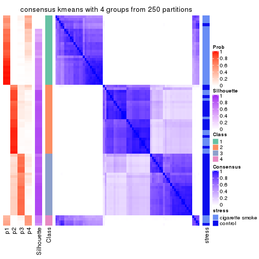
consensus_heatmap(res, k = 5)

consensus_heatmap(res, k = 6)
Heatmaps for the membership of samples in all partitions to see how consistent they are:
membership_heatmap(res, k = 2)
membership_heatmap(res, k = 3)
membership_heatmap(res, k = 4)
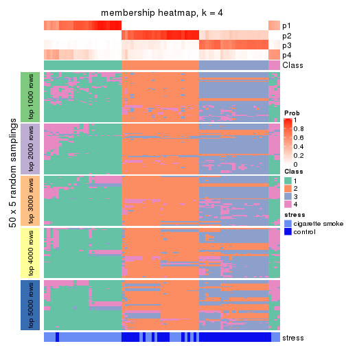
membership_heatmap(res, k = 5)
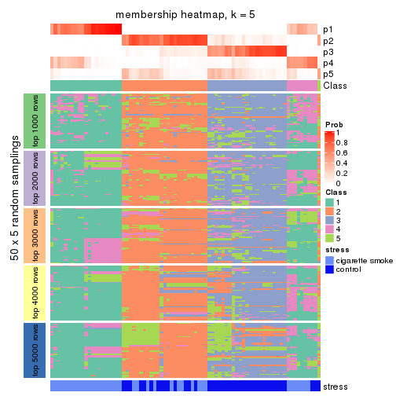
membership_heatmap(res, k = 6)
As soon as we have had the classes for columns, we can look for signatures which are significantly different between classes which can be candidate marks for certain classes. Following are the heatmaps for signatures.
Signature heatmaps where rows are scaled:
get_signatures(res, k = 2)
get_signatures(res, k = 3)
get_signatures(res, k = 4)
get_signatures(res, k = 5)
get_signatures(res, k = 6)
Signature heatmaps where rows are not scaled:
get_signatures(res, k = 2, scale_rows = FALSE)
get_signatures(res, k = 3, scale_rows = FALSE)
get_signatures(res, k = 4, scale_rows = FALSE)
get_signatures(res, k = 5, scale_rows = FALSE)
get_signatures(res, k = 6, scale_rows = FALSE)
Compare the overlap of signatures from different k:
compare_signatures(res)
get_signature() returns a data frame invisibly. TO get the list of signatures, the function
call should be assigned to a variable explicitly. In following code, if plot argument is set
to FALSE, no heatmap is plotted while only the differential analysis is performed.
# code only for demonstration
tb = get_signature(res, k = ..., plot = FALSE)
An example of the output of tb is:
#> which_row fdr mean_1 mean_2 scaled_mean_1 scaled_mean_2 km
#> 1 38 0.042760348 8.373488 9.131774 -0.5533452 0.5164555 1
#> 2 40 0.018707592 7.106213 8.469186 -0.6173731 0.5762149 1
#> 3 55 0.019134737 10.221463 11.207825 -0.6159697 0.5749050 1
#> 4 59 0.006059896 5.921854 7.869574 -0.6899429 0.6439467 1
#> 5 60 0.018055526 8.928898 10.211722 -0.6204761 0.5791110 1
#> 6 98 0.009384629 15.714769 14.887706 0.6635654 -0.6193277 2
...
The columns in tb are:
which_row: row indices corresponding to the input matrix.fdr: FDR for the differential test. mean_x: The mean value in group x.scaled_mean_x: The mean value in group x after rows are scaled.km: Row groups if k-means clustering is applied to rows.UMAP plot which shows how samples are separated.
dimension_reduction(res, k = 2, method = "UMAP")
dimension_reduction(res, k = 3, method = "UMAP")
dimension_reduction(res, k = 4, method = "UMAP")
dimension_reduction(res, k = 5, method = "UMAP")
dimension_reduction(res, k = 6, method = "UMAP")
Following heatmap shows how subgroups are split when increasing k:
collect_classes(res)
Test correlation between subgroups and known annotations. If the known annotation is numeric, one-way ANOVA test is applied, and if the known annotation is discrete, chi-squared contingency table test is applied.
test_to_known_factors(res)
#> n stress(p) k
#> MAD:kmeans 79 4.00e-09 2
#> MAD:kmeans 63 3.35e-07 3
#> MAD:kmeans 68 1.75e-08 4
#> MAD:kmeans 51 4.79e-07 5
#> MAD:kmeans 46 1.92e-05 6
If matrix rows can be associated to genes, consider to use functional_enrichment(res,
...) to perform function enrichment for the signature genes. See this vignette for more detailed explanations.
The object with results only for a single top-value method and a single partition method can be extracted as:
res = res_list["MAD", "skmeans"]
# you can also extract it by
# res = res_list["MAD:skmeans"]
A summary of res and all the functions that can be applied to it:
res
#> A 'ConsensusPartition' object with k = 2, 3, 4, 5, 6.
#> On a matrix with 21168 rows and 79 columns.
#> Top rows (1000, 2000, 3000, 4000, 5000) are extracted by 'MAD' method.
#> Subgroups are detected by 'skmeans' method.
#> Performed in total 1250 partitions by row resampling.
#> Best k for subgroups seems to be 2.
#>
#> Following methods can be applied to this 'ConsensusPartition' object:
#> [1] "cola_report" "collect_classes" "collect_plots"
#> [4] "collect_stats" "colnames" "compare_signatures"
#> [7] "consensus_heatmap" "dimension_reduction" "functional_enrichment"
#> [10] "get_anno_col" "get_anno" "get_classes"
#> [13] "get_consensus" "get_matrix" "get_membership"
#> [16] "get_param" "get_signatures" "get_stats"
#> [19] "is_best_k" "is_stable_k" "membership_heatmap"
#> [22] "ncol" "nrow" "plot_ecdf"
#> [25] "rownames" "select_partition_number" "show"
#> [28] "suggest_best_k" "test_to_known_factors"
collect_plots() function collects all the plots made from res for all k (number of partitions)
into one single page to provide an easy and fast comparison between different k.
collect_plots(res)
The plots are:
k and the heatmap of
predicted classes for each k.k.k.k.All the plots in panels can be made by individual functions and they are plotted later in this section.
select_partition_number() produces several plots showing different
statistics for choosing “optimized” k. There are following statistics:
k;k, the area increased is defined as \(A_k - A_{k-1}\).The detailed explanations of these statistics can be found in the cola vignette.
Generally speaking, lower PAC score, higher mean silhouette score or higher
concordance corresponds to better partition. Rand index and Jaccard index
measure how similar the current partition is compared to partition with k-1.
If they are too similar, we won't accept k is better than k-1.
select_partition_number(res)
The numeric values for all these statistics can be obtained by get_stats().
get_stats(res)
#> k 1-PAC mean_silhouette concordance area_increased Rand Jaccard
#> 2 2 1.000 0.991 0.996 0.4794 0.523 0.523
#> 3 3 0.632 0.622 0.807 0.3896 0.812 0.640
#> 4 4 0.614 0.564 0.706 0.1004 0.906 0.732
#> 5 5 0.486 0.507 0.630 0.0651 0.992 0.971
#> 6 6 0.493 0.407 0.550 0.0458 0.970 0.894
suggest_best_k() suggests the best \(k\) based on these statistics. The rules are as follows:
suggest_best_k(res)
#> [1] 2
Following shows the table of the partitions (You need to click the show/hide
code output link to see it). The membership matrix (columns with name p*)
is inferred by
clue::cl_consensus()
function with the SE method. Basically the value in the membership matrix
represents the probability to belong to a certain group. The finall class
label for an item is determined with the group with highest probability it
belongs to.
In get_classes() function, the entropy is calculated from the membership
matrix and the silhouette score is calculated from the consensus matrix.
cbind(get_classes(res, k = 2), get_membership(res, k = 2))
#> class entropy silhouette p1 p2
#> GSM464697 2 0.0000 0.993 0.000 1.000
#> GSM464698 2 0.0000 0.993 0.000 1.000
#> GSM464699 2 0.0000 0.993 0.000 1.000
#> GSM464700 2 0.0000 0.993 0.000 1.000
#> GSM464701 2 0.0000 0.993 0.000 1.000
#> GSM464702 2 0.0000 0.993 0.000 1.000
#> GSM464703 2 0.0000 0.993 0.000 1.000
#> GSM464704 2 0.0000 0.993 0.000 1.000
#> GSM464705 2 0.0000 0.993 0.000 1.000
#> GSM464706 2 0.2423 0.956 0.040 0.960
#> GSM464707 2 0.0000 0.993 0.000 1.000
#> GSM464708 2 0.0000 0.993 0.000 1.000
#> GSM464709 2 0.0000 0.993 0.000 1.000
#> GSM464710 2 0.0000 0.993 0.000 1.000
#> GSM464711 2 0.0000 0.993 0.000 1.000
#> GSM464712 2 0.0000 0.993 0.000 1.000
#> GSM464713 2 0.0000 0.993 0.000 1.000
#> GSM464714 2 0.7453 0.735 0.212 0.788
#> GSM464715 2 0.0000 0.993 0.000 1.000
#> GSM464716 2 0.0376 0.990 0.004 0.996
#> GSM464717 2 0.0000 0.993 0.000 1.000
#> GSM464718 2 0.0376 0.990 0.004 0.996
#> GSM464719 2 0.0000 0.993 0.000 1.000
#> GSM464720 2 0.0000 0.993 0.000 1.000
#> GSM464721 1 0.0000 1.000 1.000 0.000
#> GSM464722 2 0.0000 0.993 0.000 1.000
#> GSM464723 1 0.0000 1.000 1.000 0.000
#> GSM464724 2 0.0000 0.993 0.000 1.000
#> GSM464725 2 0.0000 0.993 0.000 1.000
#> GSM464726 2 0.0000 0.993 0.000 1.000
#> GSM464727 2 0.0000 0.993 0.000 1.000
#> GSM464728 2 0.0000 0.993 0.000 1.000
#> GSM464729 2 0.0000 0.993 0.000 1.000
#> GSM464730 2 0.0000 0.993 0.000 1.000
#> GSM464731 2 0.0000 0.993 0.000 1.000
#> GSM464732 2 0.0000 0.993 0.000 1.000
#> GSM464733 2 0.0000 0.993 0.000 1.000
#> GSM464734 2 0.0000 0.993 0.000 1.000
#> GSM464735 2 0.0000 0.993 0.000 1.000
#> GSM464736 2 0.0000 0.993 0.000 1.000
#> GSM464658 1 0.0000 1.000 1.000 0.000
#> GSM464659 1 0.0000 1.000 1.000 0.000
#> GSM464660 1 0.0000 1.000 1.000 0.000
#> GSM464661 1 0.0000 1.000 1.000 0.000
#> GSM464662 2 0.0000 0.993 0.000 1.000
#> GSM464663 1 0.0000 1.000 1.000 0.000
#> GSM464664 2 0.0000 0.993 0.000 1.000
#> GSM464665 1 0.0000 1.000 1.000 0.000
#> GSM464666 1 0.0000 1.000 1.000 0.000
#> GSM464667 1 0.0000 1.000 1.000 0.000
#> GSM464668 1 0.0000 1.000 1.000 0.000
#> GSM464669 1 0.0000 1.000 1.000 0.000
#> GSM464670 1 0.0000 1.000 1.000 0.000
#> GSM464671 1 0.0000 1.000 1.000 0.000
#> GSM464672 1 0.0000 1.000 1.000 0.000
#> GSM464673 1 0.0000 1.000 1.000 0.000
#> GSM464674 1 0.0000 1.000 1.000 0.000
#> GSM464675 1 0.0000 1.000 1.000 0.000
#> GSM464676 1 0.0000 1.000 1.000 0.000
#> GSM464677 2 0.0000 0.993 0.000 1.000
#> GSM464678 1 0.0000 1.000 1.000 0.000
#> GSM464679 2 0.0000 0.993 0.000 1.000
#> GSM464680 2 0.2948 0.944 0.052 0.948
#> GSM464681 1 0.0000 1.000 1.000 0.000
#> GSM464682 2 0.0000 0.993 0.000 1.000
#> GSM464683 2 0.0376 0.990 0.004 0.996
#> GSM464684 2 0.0000 0.993 0.000 1.000
#> GSM464685 2 0.0000 0.993 0.000 1.000
#> GSM464686 2 0.0000 0.993 0.000 1.000
#> GSM464687 2 0.0000 0.993 0.000 1.000
#> GSM464688 1 0.0000 1.000 1.000 0.000
#> GSM464689 1 0.0000 1.000 1.000 0.000
#> GSM464690 1 0.0000 1.000 1.000 0.000
#> GSM464691 1 0.0000 1.000 1.000 0.000
#> GSM464692 1 0.0000 1.000 1.000 0.000
#> GSM464693 1 0.0000 1.000 1.000 0.000
#> GSM464694 1 0.0000 1.000 1.000 0.000
#> GSM464695 1 0.0000 1.000 1.000 0.000
#> GSM464696 1 0.0000 1.000 1.000 0.000
cbind(get_classes(res, k = 3), get_membership(res, k = 3))
#> class entropy silhouette p1 p2 p3
#> GSM464697 2 0.362 0.6117 0.000 0.864 0.136
#> GSM464698 3 0.630 0.1255 0.000 0.476 0.524
#> GSM464699 2 0.510 0.5521 0.000 0.752 0.248
#> GSM464700 2 0.622 0.0526 0.000 0.568 0.432
#> GSM464701 2 0.207 0.6030 0.000 0.940 0.060
#> GSM464702 2 0.460 0.5883 0.000 0.796 0.204
#> GSM464703 2 0.603 0.3673 0.000 0.624 0.376
#> GSM464704 2 0.429 0.5981 0.000 0.820 0.180
#> GSM464705 2 0.529 0.5147 0.000 0.732 0.268
#> GSM464706 3 0.461 0.5152 0.028 0.128 0.844
#> GSM464707 3 0.603 0.2341 0.000 0.376 0.624
#> GSM464708 2 0.429 0.5944 0.000 0.820 0.180
#> GSM464709 3 0.627 0.0596 0.000 0.456 0.544
#> GSM464710 2 0.312 0.6103 0.000 0.892 0.108
#> GSM464711 2 0.382 0.5974 0.000 0.852 0.148
#> GSM464712 2 0.631 -0.0513 0.000 0.508 0.492
#> GSM464713 2 0.429 0.5750 0.000 0.820 0.180
#> GSM464714 3 0.792 0.3640 0.100 0.264 0.636
#> GSM464715 2 0.573 0.4600 0.000 0.676 0.324
#> GSM464716 3 0.659 0.1733 0.008 0.424 0.568
#> GSM464717 3 0.550 0.3932 0.000 0.292 0.708
#> GSM464718 2 0.649 0.0466 0.004 0.540 0.456
#> GSM464719 3 0.388 0.5238 0.000 0.152 0.848
#> GSM464720 2 0.613 0.2016 0.000 0.600 0.400
#> GSM464721 1 0.000 0.9976 1.000 0.000 0.000
#> GSM464722 2 0.550 0.4568 0.000 0.708 0.292
#> GSM464723 1 0.000 0.9976 1.000 0.000 0.000
#> GSM464724 2 0.608 0.3363 0.000 0.612 0.388
#> GSM464725 2 0.536 0.5038 0.000 0.724 0.276
#> GSM464726 2 0.334 0.6124 0.000 0.880 0.120
#> GSM464727 2 0.652 -0.1776 0.004 0.500 0.496
#> GSM464728 2 0.406 0.6070 0.000 0.836 0.164
#> GSM464729 2 0.573 0.4231 0.000 0.676 0.324
#> GSM464730 2 0.623 0.2300 0.000 0.564 0.436
#> GSM464731 2 0.394 0.6056 0.000 0.844 0.156
#> GSM464732 2 0.630 -0.0297 0.000 0.524 0.476
#> GSM464733 2 0.412 0.5780 0.000 0.832 0.168
#> GSM464734 2 0.595 0.3794 0.000 0.640 0.360
#> GSM464735 2 0.506 0.5406 0.000 0.756 0.244
#> GSM464736 3 0.667 0.4082 0.016 0.368 0.616
#> GSM464658 1 0.000 0.9976 1.000 0.000 0.000
#> GSM464659 1 0.000 0.9976 1.000 0.000 0.000
#> GSM464660 1 0.000 0.9976 1.000 0.000 0.000
#> GSM464661 1 0.000 0.9976 1.000 0.000 0.000
#> GSM464662 3 0.590 0.4362 0.000 0.352 0.648
#> GSM464663 1 0.000 0.9976 1.000 0.000 0.000
#> GSM464664 3 0.620 0.2990 0.000 0.424 0.576
#> GSM464665 1 0.000 0.9976 1.000 0.000 0.000
#> GSM464666 1 0.000 0.9976 1.000 0.000 0.000
#> GSM464667 1 0.000 0.9976 1.000 0.000 0.000
#> GSM464668 1 0.000 0.9976 1.000 0.000 0.000
#> GSM464669 1 0.000 0.9976 1.000 0.000 0.000
#> GSM464670 1 0.000 0.9976 1.000 0.000 0.000
#> GSM464671 1 0.000 0.9976 1.000 0.000 0.000
#> GSM464672 1 0.000 0.9976 1.000 0.000 0.000
#> GSM464673 1 0.000 0.9976 1.000 0.000 0.000
#> GSM464674 1 0.000 0.9976 1.000 0.000 0.000
#> GSM464675 1 0.000 0.9976 1.000 0.000 0.000
#> GSM464676 1 0.000 0.9976 1.000 0.000 0.000
#> GSM464677 3 0.518 0.5134 0.000 0.256 0.744
#> GSM464678 1 0.000 0.9976 1.000 0.000 0.000
#> GSM464679 3 0.611 0.3413 0.000 0.396 0.604
#> GSM464680 3 0.530 0.4976 0.036 0.156 0.808
#> GSM464681 1 0.000 0.9976 1.000 0.000 0.000
#> GSM464682 3 0.625 0.2412 0.000 0.444 0.556
#> GSM464683 3 0.514 0.4959 0.000 0.252 0.748
#> GSM464684 3 0.628 0.2232 0.000 0.460 0.540
#> GSM464685 3 0.489 0.4949 0.000 0.228 0.772
#> GSM464686 3 0.573 0.4142 0.000 0.324 0.676
#> GSM464687 3 0.418 0.5265 0.000 0.172 0.828
#> GSM464688 1 0.000 0.9976 1.000 0.000 0.000
#> GSM464689 1 0.000 0.9976 1.000 0.000 0.000
#> GSM464690 1 0.200 0.9520 0.952 0.012 0.036
#> GSM464691 1 0.000 0.9976 1.000 0.000 0.000
#> GSM464692 1 0.103 0.9755 0.976 0.000 0.024
#> GSM464693 1 0.000 0.9976 1.000 0.000 0.000
#> GSM464694 1 0.000 0.9976 1.000 0.000 0.000
#> GSM464695 1 0.000 0.9976 1.000 0.000 0.000
#> GSM464696 1 0.000 0.9976 1.000 0.000 0.000
cbind(get_classes(res, k = 4), get_membership(res, k = 4))
#> class entropy silhouette p1 p2 p3 p4
#> GSM464697 3 0.5655 0.4674 0.000 0.212 0.704 0.084
#> GSM464698 2 0.7726 0.2688 0.000 0.444 0.296 0.260
#> GSM464699 3 0.6975 0.2994 0.000 0.292 0.560 0.148
#> GSM464700 2 0.7344 0.3122 0.000 0.504 0.316 0.180
#> GSM464701 3 0.4888 0.5004 0.000 0.124 0.780 0.096
#> GSM464702 3 0.6637 0.3869 0.000 0.260 0.608 0.132
#> GSM464703 3 0.6911 0.3545 0.000 0.136 0.560 0.304
#> GSM464704 3 0.6883 0.4349 0.000 0.260 0.584 0.156
#> GSM464705 3 0.7338 0.1964 0.004 0.344 0.504 0.148
#> GSM464706 4 0.6078 0.4522 0.024 0.176 0.084 0.716
#> GSM464707 4 0.7478 0.2655 0.000 0.240 0.256 0.504
#> GSM464708 3 0.6251 0.4637 0.000 0.196 0.664 0.140
#> GSM464709 4 0.6618 0.3652 0.000 0.124 0.272 0.604
#> GSM464710 3 0.4842 0.4714 0.000 0.192 0.760 0.048
#> GSM464711 3 0.6834 0.3588 0.000 0.240 0.596 0.164
#> GSM464712 2 0.8192 0.0524 0.008 0.348 0.316 0.328
#> GSM464713 3 0.6874 0.2943 0.000 0.296 0.568 0.136
#> GSM464714 4 0.8089 0.3034 0.088 0.208 0.128 0.576
#> GSM464715 3 0.6879 0.4213 0.000 0.188 0.596 0.216
#> GSM464716 4 0.7919 0.2134 0.004 0.248 0.328 0.420
#> GSM464717 4 0.7146 0.3640 0.000 0.228 0.212 0.560
#> GSM464718 2 0.7500 0.0782 0.000 0.416 0.404 0.180
#> GSM464719 4 0.6955 0.3440 0.000 0.296 0.144 0.560
#> GSM464720 2 0.7478 0.2284 0.000 0.468 0.344 0.188
#> GSM464721 1 0.1488 0.9635 0.956 0.012 0.000 0.032
#> GSM464722 3 0.6242 0.4349 0.000 0.080 0.612 0.308
#> GSM464723 1 0.1388 0.9642 0.960 0.012 0.000 0.028
#> GSM464724 3 0.7113 0.3187 0.000 0.152 0.532 0.316
#> GSM464725 3 0.6726 0.3934 0.000 0.124 0.584 0.292
#> GSM464726 3 0.5689 0.4716 0.000 0.184 0.712 0.104
#> GSM464727 2 0.7699 0.2257 0.008 0.456 0.364 0.172
#> GSM464728 3 0.6704 0.3987 0.000 0.264 0.600 0.136
#> GSM464729 3 0.5837 0.4452 0.000 0.072 0.668 0.260
#> GSM464730 3 0.7096 0.2393 0.000 0.140 0.516 0.344
#> GSM464731 3 0.6159 0.4768 0.000 0.172 0.676 0.152
#> GSM464732 2 0.7481 0.3246 0.000 0.488 0.308 0.204
#> GSM464733 3 0.6570 0.3596 0.000 0.280 0.604 0.116
#> GSM464734 3 0.7321 0.2541 0.000 0.172 0.500 0.328
#> GSM464735 3 0.7227 0.0731 0.000 0.368 0.484 0.148
#> GSM464736 2 0.7383 0.1239 0.008 0.532 0.152 0.308
#> GSM464658 1 0.1151 0.9675 0.968 0.008 0.000 0.024
#> GSM464659 1 0.1004 0.9676 0.972 0.004 0.000 0.024
#> GSM464660 1 0.1256 0.9652 0.964 0.008 0.000 0.028
#> GSM464661 1 0.1256 0.9672 0.964 0.008 0.000 0.028
#> GSM464662 2 0.7397 0.2844 0.000 0.508 0.200 0.292
#> GSM464663 1 0.1677 0.9666 0.948 0.012 0.000 0.040
#> GSM464664 2 0.7450 0.3849 0.000 0.508 0.228 0.264
#> GSM464665 1 0.0927 0.9667 0.976 0.008 0.000 0.016
#> GSM464666 1 0.1489 0.9656 0.952 0.004 0.000 0.044
#> GSM464667 1 0.1256 0.9666 0.964 0.008 0.000 0.028
#> GSM464668 1 0.1452 0.9665 0.956 0.008 0.000 0.036
#> GSM464669 1 0.1584 0.9650 0.952 0.012 0.000 0.036
#> GSM464670 1 0.1488 0.9656 0.956 0.012 0.000 0.032
#> GSM464671 1 0.1174 0.9640 0.968 0.012 0.000 0.020
#> GSM464672 1 0.0927 0.9670 0.976 0.008 0.000 0.016
#> GSM464673 1 0.1388 0.9664 0.960 0.012 0.000 0.028
#> GSM464674 1 0.1356 0.9665 0.960 0.008 0.000 0.032
#> GSM464675 1 0.1042 0.9647 0.972 0.008 0.000 0.020
#> GSM464676 1 0.1042 0.9639 0.972 0.008 0.000 0.020
#> GSM464677 4 0.7268 0.2115 0.000 0.372 0.152 0.476
#> GSM464678 1 0.1059 0.9658 0.972 0.012 0.000 0.016
#> GSM464679 2 0.6039 0.3747 0.000 0.684 0.128 0.188
#> GSM464680 4 0.6218 0.4470 0.016 0.176 0.108 0.700
#> GSM464681 1 0.1284 0.9643 0.964 0.012 0.000 0.024
#> GSM464682 2 0.6295 0.4259 0.000 0.656 0.212 0.132
#> GSM464683 2 0.6936 0.1712 0.000 0.564 0.144 0.292
#> GSM464684 2 0.6652 0.3736 0.004 0.640 0.176 0.180
#> GSM464685 4 0.7098 0.2645 0.000 0.376 0.132 0.492
#> GSM464686 2 0.6323 0.3704 0.000 0.660 0.164 0.176
#> GSM464687 4 0.6955 0.3331 0.000 0.296 0.144 0.560
#> GSM464688 1 0.2224 0.9552 0.928 0.032 0.000 0.040
#> GSM464689 1 0.2313 0.9463 0.924 0.032 0.000 0.044
#> GSM464690 1 0.6798 0.6421 0.692 0.108 0.064 0.136
#> GSM464691 1 0.1398 0.9661 0.956 0.004 0.000 0.040
#> GSM464692 1 0.4185 0.8488 0.848 0.056 0.024 0.072
#> GSM464693 1 0.1610 0.9675 0.952 0.016 0.000 0.032
#> GSM464694 1 0.1913 0.9638 0.940 0.020 0.000 0.040
#> GSM464695 1 0.1151 0.9662 0.968 0.008 0.000 0.024
#> GSM464696 1 0.1182 0.9678 0.968 0.016 0.000 0.016
cbind(get_classes(res, k = 5), get_membership(res, k = 5))
#> class entropy silhouette p1 p2 p3 p4 p5
#> GSM464697 3 0.682 0.4393 0.000 0.144 0.608 NA 0.136
#> GSM464698 2 0.774 0.1948 0.000 0.436 0.252 NA 0.236
#> GSM464699 3 0.782 0.3082 0.000 0.240 0.468 NA 0.136
#> GSM464700 2 0.790 0.2527 0.000 0.460 0.228 NA 0.176
#> GSM464701 3 0.593 0.4647 0.000 0.116 0.692 NA 0.104
#> GSM464702 3 0.704 0.3571 0.000 0.212 0.568 NA 0.128
#> GSM464703 3 0.788 0.2554 0.000 0.108 0.428 NA 0.288
#> GSM464704 3 0.719 0.4244 0.000 0.160 0.568 NA 0.144
#> GSM464705 3 0.810 0.1991 0.000 0.248 0.400 NA 0.116
#> GSM464706 5 0.623 0.3631 0.020 0.120 0.080 NA 0.692
#> GSM464707 5 0.798 0.2434 0.000 0.188 0.232 NA 0.444
#> GSM464708 3 0.642 0.4144 0.000 0.172 0.640 NA 0.100
#> GSM464709 5 0.702 0.2593 0.000 0.112 0.236 NA 0.560
#> GSM464710 3 0.562 0.4463 0.000 0.136 0.712 NA 0.080
#> GSM464711 3 0.794 0.3017 0.000 0.160 0.464 NA 0.176
#> GSM464712 5 0.877 -0.0619 0.008 0.264 0.252 NA 0.284
#> GSM464713 3 0.657 0.3728 0.000 0.200 0.616 NA 0.080
#> GSM464714 5 0.901 0.1528 0.076 0.140 0.124 NA 0.392
#> GSM464715 3 0.752 0.3301 0.000 0.208 0.504 NA 0.196
#> GSM464716 5 0.839 0.2094 0.016 0.184 0.240 NA 0.428
#> GSM464717 5 0.715 0.3186 0.004 0.164 0.152 NA 0.580
#> GSM464718 2 0.865 -0.0232 0.012 0.332 0.300 NA 0.160
#> GSM464719 5 0.686 0.2809 0.000 0.208 0.108 NA 0.588
#> GSM464720 2 0.780 0.2324 0.000 0.440 0.276 NA 0.188
#> GSM464721 1 0.388 0.8700 0.744 0.004 0.000 NA 0.008
#> GSM464722 3 0.738 0.3245 0.004 0.064 0.512 NA 0.252
#> GSM464723 1 0.351 0.8723 0.748 0.000 0.000 NA 0.000
#> GSM464724 3 0.747 0.3053 0.000 0.164 0.500 NA 0.248
#> GSM464725 3 0.709 0.3895 0.000 0.076 0.560 NA 0.184
#> GSM464726 3 0.558 0.4531 0.000 0.168 0.704 NA 0.064
#> GSM464727 2 0.832 0.2808 0.008 0.432 0.208 NA 0.168
#> GSM464728 3 0.640 0.4245 0.000 0.192 0.632 NA 0.068
#> GSM464729 3 0.672 0.3561 0.000 0.040 0.556 NA 0.264
#> GSM464730 3 0.813 0.1155 0.000 0.172 0.380 NA 0.308
#> GSM464731 3 0.687 0.4235 0.000 0.152 0.596 NA 0.164
#> GSM464732 2 0.782 0.2225 0.000 0.424 0.300 NA 0.180
#> GSM464733 3 0.696 0.3502 0.000 0.228 0.568 NA 0.120
#> GSM464734 3 0.793 0.2412 0.000 0.136 0.420 NA 0.300
#> GSM464735 3 0.815 0.1841 0.004 0.268 0.416 NA 0.120
#> GSM464736 2 0.806 0.1726 0.012 0.468 0.132 NA 0.248
#> GSM464658 1 0.327 0.8937 0.796 0.000 0.000 NA 0.004
#> GSM464659 1 0.345 0.8894 0.784 0.000 0.000 NA 0.008
#> GSM464660 1 0.173 0.8959 0.920 0.000 0.000 NA 0.000
#> GSM464661 1 0.358 0.8734 0.756 0.004 0.000 NA 0.000
#> GSM464662 2 0.744 0.1980 0.000 0.496 0.176 NA 0.252
#> GSM464663 1 0.313 0.8955 0.820 0.008 0.000 NA 0.000
#> GSM464664 2 0.752 0.2981 0.000 0.512 0.148 NA 0.224
#> GSM464665 1 0.301 0.8952 0.832 0.000 0.000 NA 0.008
#> GSM464666 1 0.355 0.8797 0.760 0.000 0.000 NA 0.004
#> GSM464667 1 0.260 0.8980 0.852 0.000 0.000 NA 0.000
#> GSM464668 1 0.260 0.9000 0.872 0.004 0.000 NA 0.004
#> GSM464669 1 0.167 0.8960 0.924 0.000 0.000 NA 0.000
#> GSM464670 1 0.277 0.8964 0.836 0.000 0.000 NA 0.000
#> GSM464671 1 0.161 0.8966 0.928 0.000 0.000 NA 0.000
#> GSM464672 1 0.256 0.8981 0.856 0.000 0.000 NA 0.000
#> GSM464673 1 0.238 0.9007 0.872 0.000 0.000 NA 0.000
#> GSM464674 1 0.304 0.8932 0.808 0.000 0.000 NA 0.000
#> GSM464675 1 0.179 0.8951 0.916 0.000 0.000 NA 0.000
#> GSM464676 1 0.238 0.8912 0.872 0.000 0.000 NA 0.000
#> GSM464677 5 0.771 0.0613 0.012 0.384 0.104 NA 0.408
#> GSM464678 1 0.185 0.8962 0.912 0.000 0.000 NA 0.000
#> GSM464679 2 0.653 0.3596 0.004 0.648 0.128 NA 0.116
#> GSM464680 5 0.592 0.3541 0.000 0.144 0.080 NA 0.688
#> GSM464681 1 0.247 0.8909 0.864 0.000 0.000 NA 0.000
#> GSM464682 2 0.616 0.3939 0.000 0.664 0.160 NA 0.100
#> GSM464683 2 0.690 0.1763 0.000 0.536 0.076 NA 0.296
#> GSM464684 2 0.659 0.3555 0.000 0.632 0.124 NA 0.132
#> GSM464685 5 0.770 0.1566 0.000 0.328 0.140 NA 0.428
#> GSM464686 2 0.543 0.3409 0.000 0.720 0.068 NA 0.152
#> GSM464687 5 0.705 0.2283 0.000 0.268 0.092 NA 0.540
#> GSM464688 1 0.375 0.8684 0.816 0.020 0.008 NA 0.008
#> GSM464689 1 0.430 0.8508 0.756 0.016 0.000 NA 0.024
#> GSM464690 1 0.736 0.5605 0.504 0.072 0.044 NA 0.048
#> GSM464691 1 0.337 0.8815 0.784 0.004 0.000 NA 0.000
#> GSM464692 1 0.624 0.6793 0.660 0.024 0.032 NA 0.084
#> GSM464693 1 0.218 0.9023 0.888 0.000 0.000 NA 0.000
#> GSM464694 1 0.312 0.8898 0.812 0.000 0.000 NA 0.004
#> GSM464695 1 0.281 0.8989 0.832 0.000 0.000 NA 0.000
#> GSM464696 1 0.196 0.9020 0.904 0.000 0.000 NA 0.000
cbind(get_classes(res, k = 6), get_membership(res, k = 6))
#> class entropy silhouette p1 p2 p3 p4 p5 p6
#> GSM464697 3 0.648 0.32267 NA 0.136 0.584 0.000 0.200 0.052
#> GSM464698 2 0.765 0.19957 NA 0.444 0.244 0.000 0.144 0.132
#> GSM464699 3 0.734 0.10369 NA 0.164 0.420 0.000 0.312 0.080
#> GSM464700 2 0.717 0.25369 NA 0.532 0.188 0.000 0.148 0.088
#> GSM464701 3 0.508 0.32319 NA 0.052 0.716 0.000 0.148 0.076
#> GSM464702 3 0.709 0.30219 NA 0.136 0.536 0.000 0.188 0.108
#> GSM464703 3 0.840 0.12298 NA 0.140 0.344 0.000 0.216 0.224
#> GSM464704 3 0.655 0.30384 NA 0.076 0.576 0.000 0.216 0.108
#> GSM464705 5 0.821 0.11942 NA 0.172 0.292 0.004 0.360 0.068
#> GSM464706 6 0.658 0.29258 NA 0.084 0.084 0.028 0.072 0.656
#> GSM464707 6 0.780 0.22140 NA 0.176 0.140 0.000 0.196 0.444
#> GSM464708 3 0.594 0.29039 NA 0.096 0.656 0.000 0.136 0.096
#> GSM464709 6 0.772 0.22048 NA 0.088 0.232 0.004 0.156 0.464
#> GSM464710 3 0.579 0.31790 NA 0.084 0.664 0.000 0.164 0.068
#> GSM464711 3 0.771 0.04870 NA 0.092 0.440 0.000 0.256 0.156
#> GSM464712 6 0.891 0.05209 NA 0.220 0.232 0.012 0.228 0.232
#> GSM464713 3 0.691 0.02311 NA 0.160 0.476 0.000 0.280 0.076
#> GSM464714 6 0.893 0.03767 NA 0.132 0.068 0.040 0.236 0.336
#> GSM464715 3 0.704 0.31147 NA 0.152 0.528 0.000 0.136 0.168
#> GSM464716 6 0.872 0.08574 NA 0.144 0.148 0.012 0.244 0.348
#> GSM464717 6 0.673 0.30196 NA 0.080 0.144 0.000 0.128 0.596
#> GSM464718 5 0.871 0.13150 NA 0.220 0.208 0.016 0.328 0.168
#> GSM464719 6 0.751 0.18279 NA 0.252 0.104 0.000 0.120 0.472
#> GSM464720 2 0.805 0.07002 NA 0.336 0.248 0.000 0.252 0.128
#> GSM464721 4 0.448 0.76987 NA 0.004 0.000 0.552 0.016 0.004
#> GSM464722 3 0.790 0.12365 NA 0.064 0.408 0.004 0.224 0.236
#> GSM464723 4 0.466 0.75201 NA 0.004 0.000 0.500 0.024 0.004
#> GSM464724 3 0.692 0.29042 NA 0.076 0.516 0.000 0.108 0.268
#> GSM464725 3 0.750 0.15107 NA 0.084 0.436 0.000 0.288 0.152
#> GSM464726 3 0.592 0.33233 NA 0.144 0.660 0.000 0.112 0.056
#> GSM464727 2 0.854 -0.03204 NA 0.368 0.260 0.020 0.172 0.104
#> GSM464728 3 0.668 0.24643 NA 0.108 0.592 0.000 0.164 0.100
#> GSM464729 3 0.717 0.26848 NA 0.096 0.476 0.000 0.160 0.252
#> GSM464730 6 0.814 -0.08364 NA 0.128 0.312 0.000 0.188 0.320
#> GSM464731 3 0.657 0.30913 NA 0.160 0.596 0.000 0.140 0.072
#> GSM464732 2 0.804 0.02525 NA 0.352 0.252 0.000 0.212 0.152
#> GSM464733 3 0.699 0.17497 NA 0.192 0.528 0.000 0.180 0.072
#> GSM464734 3 0.779 0.12581 NA 0.068 0.396 0.000 0.236 0.244
#> GSM464735 3 0.810 0.00874 NA 0.212 0.380 0.004 0.248 0.108
#> GSM464736 2 0.835 0.17586 NA 0.424 0.100 0.016 0.192 0.184
#> GSM464658 4 0.466 0.78886 NA 0.008 0.000 0.644 0.040 0.004
#> GSM464659 4 0.466 0.77691 NA 0.004 0.000 0.548 0.016 0.012
#> GSM464660 4 0.204 0.80585 NA 0.000 0.000 0.908 0.016 0.004
#> GSM464661 4 0.443 0.77331 NA 0.000 0.000 0.548 0.020 0.004
#> GSM464662 2 0.710 0.24269 NA 0.500 0.128 0.000 0.108 0.244
#> GSM464663 4 0.417 0.78675 NA 0.004 0.000 0.620 0.004 0.008
#> GSM464664 2 0.697 0.25066 NA 0.556 0.108 0.000 0.160 0.144
#> GSM464665 4 0.424 0.81216 NA 0.000 0.000 0.696 0.020 0.020
#> GSM464666 4 0.464 0.74920 NA 0.000 0.000 0.516 0.040 0.000
#> GSM464667 4 0.395 0.80838 NA 0.000 0.000 0.656 0.016 0.000
#> GSM464668 4 0.397 0.81018 NA 0.000 0.000 0.684 0.012 0.008
#> GSM464669 4 0.298 0.80397 NA 0.000 0.000 0.828 0.008 0.012
#> GSM464670 4 0.412 0.79494 NA 0.000 0.000 0.604 0.016 0.000
#> GSM464671 4 0.202 0.80474 NA 0.000 0.000 0.896 0.008 0.000
#> GSM464672 4 0.360 0.81018 NA 0.000 0.000 0.776 0.020 0.012
#> GSM464673 4 0.343 0.81521 NA 0.004 0.000 0.764 0.012 0.000
#> GSM464674 4 0.416 0.80957 NA 0.000 0.000 0.684 0.024 0.008
#> GSM464675 4 0.200 0.79863 NA 0.000 0.000 0.908 0.012 0.004
#> GSM464676 4 0.278 0.79833 NA 0.004 0.000 0.856 0.016 0.004
#> GSM464677 2 0.811 0.00807 NA 0.348 0.112 0.016 0.144 0.340
#> GSM464678 4 0.258 0.80965 NA 0.000 0.000 0.860 0.020 0.000
#> GSM464679 2 0.579 0.28593 NA 0.656 0.132 0.000 0.068 0.136
#> GSM464680 6 0.588 0.28916 NA 0.116 0.044 0.020 0.060 0.700
#> GSM464681 4 0.249 0.79852 NA 0.000 0.000 0.868 0.020 0.000
#> GSM464682 2 0.735 0.15248 NA 0.496 0.152 0.000 0.196 0.128
#> GSM464683 2 0.719 0.22135 NA 0.540 0.088 0.008 0.112 0.212
#> GSM464684 2 0.791 0.12832 NA 0.444 0.160 0.000 0.208 0.120
#> GSM464685 6 0.855 0.07512 NA 0.256 0.148 0.008 0.160 0.348
#> GSM464686 2 0.595 0.27857 NA 0.676 0.052 0.004 0.140 0.072
#> GSM464687 6 0.713 0.15306 NA 0.296 0.088 0.000 0.088 0.484
#> GSM464688 4 0.438 0.79254 NA 0.020 0.000 0.728 0.020 0.016
#> GSM464689 4 0.535 0.77669 NA 0.012 0.004 0.644 0.040 0.036
#> GSM464690 4 0.704 0.52151 NA 0.028 0.040 0.440 0.088 0.024
#> GSM464691 4 0.448 0.76765 NA 0.004 0.000 0.588 0.020 0.004
#> GSM464692 4 0.684 0.56353 NA 0.040 0.024 0.600 0.064 0.088
#> GSM464693 4 0.327 0.82169 NA 0.000 0.000 0.760 0.008 0.000
#> GSM464694 4 0.427 0.80010 NA 0.004 0.000 0.660 0.016 0.008
#> GSM464695 4 0.420 0.80579 NA 0.000 0.000 0.620 0.016 0.004
#> GSM464696 4 0.348 0.81903 NA 0.000 0.000 0.732 0.004 0.004
Heatmaps for the consensus matrix. It visualizes the probability of two samples to be in a same group.
consensus_heatmap(res, k = 2)
consensus_heatmap(res, k = 3)
consensus_heatmap(res, k = 4)

consensus_heatmap(res, k = 5)
consensus_heatmap(res, k = 6)
Heatmaps for the membership of samples in all partitions to see how consistent they are:
membership_heatmap(res, k = 2)
membership_heatmap(res, k = 3)
membership_heatmap(res, k = 4)
membership_heatmap(res, k = 5)
membership_heatmap(res, k = 6)
As soon as we have had the classes for columns, we can look for signatures which are significantly different between classes which can be candidate marks for certain classes. Following are the heatmaps for signatures.
Signature heatmaps where rows are scaled:
get_signatures(res, k = 2)
get_signatures(res, k = 3)
get_signatures(res, k = 4)

get_signatures(res, k = 5)

get_signatures(res, k = 6)

Signature heatmaps where rows are not scaled:
get_signatures(res, k = 2, scale_rows = FALSE)
get_signatures(res, k = 3, scale_rows = FALSE)
get_signatures(res, k = 4, scale_rows = FALSE)

get_signatures(res, k = 5, scale_rows = FALSE)

get_signatures(res, k = 6, scale_rows = FALSE)

Compare the overlap of signatures from different k:
compare_signatures(res)
get_signature() returns a data frame invisibly. TO get the list of signatures, the function
call should be assigned to a variable explicitly. In following code, if plot argument is set
to FALSE, no heatmap is plotted while only the differential analysis is performed.
# code only for demonstration
tb = get_signature(res, k = ..., plot = FALSE)
An example of the output of tb is:
#> which_row fdr mean_1 mean_2 scaled_mean_1 scaled_mean_2 km
#> 1 38 0.042760348 8.373488 9.131774 -0.5533452 0.5164555 1
#> 2 40 0.018707592 7.106213 8.469186 -0.6173731 0.5762149 1
#> 3 55 0.019134737 10.221463 11.207825 -0.6159697 0.5749050 1
#> 4 59 0.006059896 5.921854 7.869574 -0.6899429 0.6439467 1
#> 5 60 0.018055526 8.928898 10.211722 -0.6204761 0.5791110 1
#> 6 98 0.009384629 15.714769 14.887706 0.6635654 -0.6193277 2
...
The columns in tb are:
which_row: row indices corresponding to the input matrix.fdr: FDR for the differential test. mean_x: The mean value in group x.scaled_mean_x: The mean value in group x after rows are scaled.km: Row groups if k-means clustering is applied to rows.UMAP plot which shows how samples are separated.
dimension_reduction(res, k = 2, method = "UMAP")
dimension_reduction(res, k = 3, method = "UMAP")
dimension_reduction(res, k = 4, method = "UMAP")
dimension_reduction(res, k = 5, method = "UMAP")
dimension_reduction(res, k = 6, method = "UMAP")
Following heatmap shows how subgroups are split when increasing k:
collect_classes(res)
Test correlation between subgroups and known annotations. If the known annotation is numeric, one-way ANOVA test is applied, and if the known annotation is discrete, chi-squared contingency table test is applied.
test_to_known_factors(res)
#> n stress(p) k
#> MAD:skmeans 79 4.00e-09 2
#> MAD:skmeans 50 5.45e-09 3
#> MAD:skmeans 31 1.66e-01 4
#> MAD:skmeans 30 NA 5
#> MAD:skmeans 30 NA 6
If matrix rows can be associated to genes, consider to use functional_enrichment(res,
...) to perform function enrichment for the signature genes. See this vignette for more detailed explanations.
The object with results only for a single top-value method and a single partition method can be extracted as:
res = res_list["MAD", "pam"]
# you can also extract it by
# res = res_list["MAD:pam"]
A summary of res and all the functions that can be applied to it:
res
#> A 'ConsensusPartition' object with k = 2, 3, 4, 5, 6.
#> On a matrix with 21168 rows and 79 columns.
#> Top rows (1000, 2000, 3000, 4000, 5000) are extracted by 'MAD' method.
#> Subgroups are detected by 'pam' method.
#> Performed in total 1250 partitions by row resampling.
#> Best k for subgroups seems to be 2.
#>
#> Following methods can be applied to this 'ConsensusPartition' object:
#> [1] "cola_report" "collect_classes" "collect_plots"
#> [4] "collect_stats" "colnames" "compare_signatures"
#> [7] "consensus_heatmap" "dimension_reduction" "functional_enrichment"
#> [10] "get_anno_col" "get_anno" "get_classes"
#> [13] "get_consensus" "get_matrix" "get_membership"
#> [16] "get_param" "get_signatures" "get_stats"
#> [19] "is_best_k" "is_stable_k" "membership_heatmap"
#> [22] "ncol" "nrow" "plot_ecdf"
#> [25] "rownames" "select_partition_number" "show"
#> [28] "suggest_best_k" "test_to_known_factors"
collect_plots() function collects all the plots made from res for all k (number of partitions)
into one single page to provide an easy and fast comparison between different k.
collect_plots(res)
The plots are:
k and the heatmap of
predicted classes for each k.k.k.k.All the plots in panels can be made by individual functions and they are plotted later in this section.
select_partition_number() produces several plots showing different
statistics for choosing “optimized” k. There are following statistics:
k;k, the area increased is defined as \(A_k - A_{k-1}\).The detailed explanations of these statistics can be found in the cola vignette.
Generally speaking, lower PAC score, higher mean silhouette score or higher
concordance corresponds to better partition. Rand index and Jaccard index
measure how similar the current partition is compared to partition with k-1.
If they are too similar, we won't accept k is better than k-1.
select_partition_number(res)
The numeric values for all these statistics can be obtained by get_stats().
get_stats(res)
#> k 1-PAC mean_silhouette concordance area_increased Rand Jaccard
#> 2 2 0.893 0.923 0.967 0.4190 0.582 0.582
#> 3 3 0.678 0.829 0.907 0.1356 0.993 0.988
#> 4 4 0.578 0.763 0.861 0.0695 0.974 0.955
#> 5 5 0.539 0.648 0.848 0.0348 0.999 0.998
#> 6 6 0.531 0.628 0.834 0.0254 0.982 0.968
suggest_best_k() suggests the best \(k\) based on these statistics. The rules are as follows:
suggest_best_k(res)
#> [1] 2
Following shows the table of the partitions (You need to click the show/hide
code output link to see it). The membership matrix (columns with name p*)
is inferred by
clue::cl_consensus()
function with the SE method. Basically the value in the membership matrix
represents the probability to belong to a certain group. The finall class
label for an item is determined with the group with highest probability it
belongs to.
In get_classes() function, the entropy is calculated from the membership
matrix and the silhouette score is calculated from the consensus matrix.
cbind(get_classes(res, k = 2), get_membership(res, k = 2))
#> class entropy silhouette p1 p2
#> GSM464697 2 0.0000 0.973 0.000 1.000
#> GSM464698 2 0.0000 0.973 0.000 1.000
#> GSM464699 2 0.0000 0.973 0.000 1.000
#> GSM464700 2 0.0000 0.973 0.000 1.000
#> GSM464701 2 0.0000 0.973 0.000 1.000
#> GSM464702 2 0.0000 0.973 0.000 1.000
#> GSM464703 2 0.0000 0.973 0.000 1.000
#> GSM464704 2 0.0000 0.973 0.000 1.000
#> GSM464705 2 0.0000 0.973 0.000 1.000
#> GSM464706 2 0.0000 0.973 0.000 1.000
#> GSM464707 2 0.0000 0.973 0.000 1.000
#> GSM464708 2 0.0000 0.973 0.000 1.000
#> GSM464709 2 0.0000 0.973 0.000 1.000
#> GSM464710 2 0.0000 0.973 0.000 1.000
#> GSM464711 2 0.0000 0.973 0.000 1.000
#> GSM464712 2 0.0000 0.973 0.000 1.000
#> GSM464713 2 0.0000 0.973 0.000 1.000
#> GSM464714 2 0.0000 0.973 0.000 1.000
#> GSM464715 2 0.0000 0.973 0.000 1.000
#> GSM464716 2 0.0000 0.973 0.000 1.000
#> GSM464717 2 0.0000 0.973 0.000 1.000
#> GSM464718 2 0.0000 0.973 0.000 1.000
#> GSM464719 2 0.0000 0.973 0.000 1.000
#> GSM464720 2 0.0000 0.973 0.000 1.000
#> GSM464721 2 0.8267 0.628 0.260 0.740
#> GSM464722 2 0.0000 0.973 0.000 1.000
#> GSM464723 1 0.2236 0.932 0.964 0.036
#> GSM464724 2 0.0000 0.973 0.000 1.000
#> GSM464725 2 0.0000 0.973 0.000 1.000
#> GSM464726 2 0.0000 0.973 0.000 1.000
#> GSM464727 2 0.0000 0.973 0.000 1.000
#> GSM464728 2 0.0000 0.973 0.000 1.000
#> GSM464729 2 0.0000 0.973 0.000 1.000
#> GSM464730 2 0.0000 0.973 0.000 1.000
#> GSM464731 2 0.0000 0.973 0.000 1.000
#> GSM464732 2 0.0000 0.973 0.000 1.000
#> GSM464733 2 0.0000 0.973 0.000 1.000
#> GSM464734 2 0.0000 0.973 0.000 1.000
#> GSM464735 2 0.0000 0.973 0.000 1.000
#> GSM464736 2 0.0000 0.973 0.000 1.000
#> GSM464658 1 0.6712 0.800 0.824 0.176
#> GSM464659 2 0.6531 0.781 0.168 0.832
#> GSM464660 1 0.0000 0.941 1.000 0.000
#> GSM464661 1 0.8386 0.667 0.732 0.268
#> GSM464662 2 0.0000 0.973 0.000 1.000
#> GSM464663 2 0.9686 0.301 0.396 0.604
#> GSM464664 2 0.0000 0.973 0.000 1.000
#> GSM464665 1 0.0000 0.941 1.000 0.000
#> GSM464666 1 0.1184 0.939 0.984 0.016
#> GSM464667 1 0.3114 0.921 0.944 0.056
#> GSM464668 1 0.3274 0.918 0.940 0.060
#> GSM464669 1 0.0000 0.941 1.000 0.000
#> GSM464670 1 0.3879 0.906 0.924 0.076
#> GSM464671 1 0.1184 0.939 0.984 0.016
#> GSM464672 1 0.0000 0.941 1.000 0.000
#> GSM464673 1 0.0000 0.941 1.000 0.000
#> GSM464674 1 0.2043 0.934 0.968 0.032
#> GSM464675 1 0.0376 0.941 0.996 0.004
#> GSM464676 1 0.0000 0.941 1.000 0.000
#> GSM464677 2 0.0000 0.973 0.000 1.000
#> GSM464678 1 0.0000 0.941 1.000 0.000
#> GSM464679 2 0.0000 0.973 0.000 1.000
#> GSM464680 2 0.0000 0.973 0.000 1.000
#> GSM464681 1 0.0000 0.941 1.000 0.000
#> GSM464682 2 0.0000 0.973 0.000 1.000
#> GSM464683 2 0.0000 0.973 0.000 1.000
#> GSM464684 2 0.0000 0.973 0.000 1.000
#> GSM464685 2 0.0000 0.973 0.000 1.000
#> GSM464686 2 0.0376 0.969 0.004 0.996
#> GSM464687 2 0.0000 0.973 0.000 1.000
#> GSM464688 2 0.3274 0.916 0.060 0.940
#> GSM464689 1 0.9358 0.498 0.648 0.352
#> GSM464690 2 0.0938 0.963 0.012 0.988
#> GSM464691 2 0.2778 0.929 0.048 0.952
#> GSM464692 2 0.9896 0.156 0.440 0.560
#> GSM464693 1 0.0000 0.941 1.000 0.000
#> GSM464694 1 0.6148 0.833 0.848 0.152
#> GSM464695 1 0.0000 0.941 1.000 0.000
#> GSM464696 1 0.0000 0.941 1.000 0.000
cbind(get_classes(res, k = 3), get_membership(res, k = 3))
#> class entropy silhouette p1 p2 p3
#> GSM464697 2 0.1643 0.9207 0.000 0.956 0.044
#> GSM464698 2 0.3941 0.8742 0.000 0.844 0.156
#> GSM464699 2 0.0000 0.9195 0.000 1.000 0.000
#> GSM464700 2 0.2537 0.9156 0.000 0.920 0.080
#> GSM464701 2 0.0000 0.9195 0.000 1.000 0.000
#> GSM464702 2 0.1964 0.9192 0.000 0.944 0.056
#> GSM464703 2 0.2066 0.9194 0.000 0.940 0.060
#> GSM464704 2 0.1031 0.9209 0.000 0.976 0.024
#> GSM464705 2 0.0237 0.9201 0.000 0.996 0.004
#> GSM464706 2 0.2537 0.9159 0.000 0.920 0.080
#> GSM464707 2 0.0000 0.9195 0.000 1.000 0.000
#> GSM464708 2 0.1964 0.9200 0.000 0.944 0.056
#> GSM464709 2 0.1860 0.9220 0.000 0.948 0.052
#> GSM464710 2 0.0747 0.9221 0.000 0.984 0.016
#> GSM464711 2 0.0000 0.9195 0.000 1.000 0.000
#> GSM464712 2 0.0747 0.9221 0.000 0.984 0.016
#> GSM464713 2 0.2356 0.9146 0.000 0.928 0.072
#> GSM464714 2 0.0000 0.9195 0.000 1.000 0.000
#> GSM464715 2 0.0237 0.9201 0.000 0.996 0.004
#> GSM464716 2 0.3038 0.8998 0.000 0.896 0.104
#> GSM464717 2 0.0000 0.9195 0.000 1.000 0.000
#> GSM464718 2 0.2711 0.9113 0.000 0.912 0.088
#> GSM464719 2 0.0237 0.9202 0.000 0.996 0.004
#> GSM464720 2 0.3686 0.8869 0.000 0.860 0.140
#> GSM464721 2 0.8473 0.4226 0.208 0.616 0.176
#> GSM464722 2 0.1411 0.9222 0.000 0.964 0.036
#> GSM464723 1 0.5331 0.7800 0.792 0.024 0.184
#> GSM464724 2 0.3551 0.8939 0.000 0.868 0.132
#> GSM464725 2 0.0237 0.9197 0.000 0.996 0.004
#> GSM464726 2 0.3340 0.8901 0.000 0.880 0.120
#> GSM464727 2 0.3038 0.8985 0.000 0.896 0.104
#> GSM464728 2 0.0424 0.9208 0.000 0.992 0.008
#> GSM464729 2 0.0892 0.9224 0.000 0.980 0.020
#> GSM464730 2 0.3038 0.9057 0.000 0.896 0.104
#> GSM464731 2 0.1529 0.9233 0.000 0.960 0.040
#> GSM464732 2 0.1643 0.9228 0.000 0.956 0.044
#> GSM464733 2 0.2711 0.9114 0.000 0.912 0.088
#> GSM464734 2 0.0747 0.9224 0.000 0.984 0.016
#> GSM464735 2 0.0237 0.9201 0.000 0.996 0.004
#> GSM464736 2 0.1964 0.9218 0.000 0.944 0.056
#> GSM464658 1 0.6587 0.5908 0.752 0.156 0.092
#> GSM464659 2 0.7884 0.5104 0.120 0.656 0.224
#> GSM464660 1 0.0237 0.8466 0.996 0.000 0.004
#> GSM464661 3 0.4544 0.0000 0.084 0.056 0.860
#> GSM464662 2 0.0000 0.9195 0.000 1.000 0.000
#> GSM464663 2 0.6849 0.1951 0.380 0.600 0.020
#> GSM464664 2 0.3879 0.8751 0.000 0.848 0.152
#> GSM464665 1 0.1289 0.8468 0.968 0.000 0.032
#> GSM464666 1 0.3846 0.8300 0.876 0.016 0.108
#> GSM464667 1 0.5955 0.7618 0.772 0.048 0.180
#> GSM464668 1 0.3973 0.8295 0.880 0.032 0.088
#> GSM464669 1 0.1163 0.8431 0.972 0.000 0.028
#> GSM464670 1 0.5791 0.7571 0.792 0.060 0.148
#> GSM464671 1 0.3043 0.7945 0.908 0.008 0.084
#> GSM464672 1 0.1163 0.8479 0.972 0.000 0.028
#> GSM464673 1 0.1529 0.8468 0.960 0.000 0.040
#> GSM464674 1 0.4397 0.8215 0.856 0.028 0.116
#> GSM464675 1 0.0829 0.8461 0.984 0.004 0.012
#> GSM464676 1 0.0237 0.8466 0.996 0.000 0.004
#> GSM464677 2 0.3192 0.9029 0.000 0.888 0.112
#> GSM464678 1 0.0592 0.8477 0.988 0.000 0.012
#> GSM464679 2 0.3482 0.8853 0.000 0.872 0.128
#> GSM464680 2 0.0000 0.9195 0.000 1.000 0.000
#> GSM464681 1 0.1860 0.8313 0.948 0.000 0.052
#> GSM464682 2 0.0000 0.9195 0.000 1.000 0.000
#> GSM464683 2 0.1860 0.9139 0.000 0.948 0.052
#> GSM464684 2 0.2261 0.9134 0.000 0.932 0.068
#> GSM464685 2 0.4291 0.8590 0.000 0.820 0.180
#> GSM464686 2 0.3038 0.9062 0.000 0.896 0.104
#> GSM464687 2 0.0747 0.9222 0.000 0.984 0.016
#> GSM464688 2 0.6158 0.7698 0.052 0.760 0.188
#> GSM464689 1 0.9399 -0.0106 0.480 0.332 0.188
#> GSM464690 2 0.1015 0.9176 0.012 0.980 0.008
#> GSM464691 2 0.3434 0.8901 0.032 0.904 0.064
#> GSM464692 2 0.7969 0.2035 0.396 0.540 0.064
#> GSM464693 1 0.1411 0.8492 0.964 0.000 0.036
#> GSM464694 1 0.6915 0.6554 0.736 0.124 0.140
#> GSM464695 1 0.4346 0.7962 0.816 0.000 0.184
#> GSM464696 1 0.0424 0.8479 0.992 0.000 0.008
cbind(get_classes(res, k = 4), get_membership(res, k = 4))
#> class entropy silhouette p1 p2 p3 p4
#> GSM464697 2 0.1940 0.8996 0.000 0.924 NA 0.000
#> GSM464698 2 0.3311 0.8610 0.000 0.828 NA 0.000
#> GSM464699 2 0.0188 0.9026 0.000 0.996 NA 0.000
#> GSM464700 2 0.2773 0.8917 0.000 0.880 NA 0.004
#> GSM464701 2 0.0000 0.9018 0.000 1.000 NA 0.000
#> GSM464702 2 0.2773 0.8977 0.000 0.900 NA 0.028
#> GSM464703 2 0.2805 0.8933 0.000 0.888 NA 0.012
#> GSM464704 2 0.1118 0.9046 0.000 0.964 NA 0.000
#> GSM464705 2 0.0336 0.9034 0.000 0.992 NA 0.000
#> GSM464706 2 0.2489 0.9034 0.000 0.912 NA 0.020
#> GSM464707 2 0.0000 0.9018 0.000 1.000 NA 0.000
#> GSM464708 2 0.2111 0.9055 0.000 0.932 NA 0.024
#> GSM464709 2 0.1890 0.9067 0.000 0.936 NA 0.008
#> GSM464710 2 0.1004 0.9061 0.000 0.972 NA 0.004
#> GSM464711 2 0.0524 0.9042 0.000 0.988 NA 0.008
#> GSM464712 2 0.1256 0.9072 0.000 0.964 NA 0.008
#> GSM464713 2 0.2775 0.8950 0.000 0.896 NA 0.020
#> GSM464714 2 0.0000 0.9018 0.000 1.000 NA 0.000
#> GSM464715 2 0.0188 0.9028 0.000 0.996 NA 0.000
#> GSM464716 2 0.3051 0.8872 0.000 0.884 NA 0.028
#> GSM464717 2 0.0000 0.9018 0.000 1.000 NA 0.000
#> GSM464718 2 0.2868 0.8843 0.000 0.864 NA 0.000
#> GSM464719 2 0.0469 0.9044 0.000 0.988 NA 0.000
#> GSM464720 2 0.3853 0.8604 0.000 0.820 NA 0.020
#> GSM464721 2 0.8238 -0.1837 0.160 0.472 NA 0.328
#> GSM464722 2 0.2198 0.9006 0.000 0.920 NA 0.008
#> GSM464723 4 0.7816 -0.1519 0.260 0.000 NA 0.400
#> GSM464724 2 0.3266 0.8687 0.000 0.832 NA 0.000
#> GSM464725 2 0.0592 0.9039 0.000 0.984 NA 0.000
#> GSM464726 2 0.3749 0.8641 0.000 0.840 NA 0.032
#> GSM464727 2 0.3367 0.8794 0.000 0.864 NA 0.028
#> GSM464728 2 0.0376 0.9037 0.000 0.992 NA 0.004
#> GSM464729 2 0.1059 0.9066 0.000 0.972 NA 0.012
#> GSM464730 2 0.2859 0.8903 0.000 0.880 NA 0.008
#> GSM464731 2 0.1297 0.9084 0.000 0.964 NA 0.016
#> GSM464732 2 0.1635 0.9085 0.000 0.948 NA 0.008
#> GSM464733 2 0.2704 0.8865 0.000 0.876 NA 0.000
#> GSM464734 2 0.1174 0.9080 0.000 0.968 NA 0.012
#> GSM464735 2 0.0469 0.9040 0.000 0.988 NA 0.000
#> GSM464736 2 0.2053 0.9060 0.000 0.924 NA 0.004
#> GSM464658 1 0.6309 0.5061 0.684 0.152 NA 0.156
#> GSM464659 4 0.7203 0.0242 0.080 0.436 NA 0.464
#> GSM464660 1 0.0000 0.7804 1.000 0.000 NA 0.000
#> GSM464661 4 0.5223 0.2126 0.004 0.004 NA 0.584
#> GSM464662 2 0.0000 0.9018 0.000 1.000 NA 0.000
#> GSM464663 2 0.6220 0.0819 0.352 0.592 NA 0.048
#> GSM464664 2 0.3749 0.8641 0.000 0.840 NA 0.032
#> GSM464665 1 0.1867 0.7776 0.928 0.000 NA 0.072
#> GSM464666 1 0.4018 0.7191 0.772 0.004 NA 0.224
#> GSM464667 1 0.5716 0.5021 0.552 0.028 NA 0.420
#> GSM464668 1 0.4121 0.7379 0.796 0.020 NA 0.184
#> GSM464669 1 0.2053 0.7650 0.924 0.000 NA 0.072
#> GSM464670 1 0.5865 0.5290 0.612 0.048 NA 0.340
#> GSM464671 1 0.3648 0.7179 0.864 0.004 NA 0.076
#> GSM464672 1 0.1798 0.7772 0.944 0.000 NA 0.040
#> GSM464673 1 0.2149 0.7773 0.912 0.000 NA 0.088
#> GSM464674 1 0.4792 0.7092 0.752 0.020 NA 0.220
#> GSM464675 1 0.0967 0.7794 0.976 0.004 NA 0.016
#> GSM464676 1 0.0000 0.7804 1.000 0.000 NA 0.000
#> GSM464677 2 0.3123 0.8742 0.000 0.844 NA 0.000
#> GSM464678 1 0.0817 0.7832 0.976 0.000 NA 0.024
#> GSM464679 2 0.3581 0.8686 0.000 0.852 NA 0.032
#> GSM464680 2 0.0000 0.9018 0.000 1.000 NA 0.000
#> GSM464681 1 0.1743 0.7660 0.940 0.000 NA 0.004
#> GSM464682 2 0.0000 0.9018 0.000 1.000 NA 0.000
#> GSM464683 2 0.2216 0.8920 0.000 0.908 NA 0.000
#> GSM464684 2 0.2385 0.8998 0.000 0.920 NA 0.028
#> GSM464685 2 0.4379 0.8364 0.000 0.792 NA 0.036
#> GSM464686 2 0.2831 0.8903 0.000 0.876 NA 0.004
#> GSM464687 2 0.1256 0.9060 0.000 0.964 NA 0.008
#> GSM464688 2 0.6252 0.7298 0.048 0.724 NA 0.084
#> GSM464689 1 0.9072 -0.1537 0.404 0.316 NA 0.196
#> GSM464690 2 0.1059 0.9031 0.012 0.972 NA 0.016
#> GSM464691 2 0.4905 0.7824 0.020 0.800 NA 0.060
#> GSM464692 2 0.7268 0.1428 0.356 0.540 NA 0.056
#> GSM464693 1 0.2216 0.7793 0.908 0.000 NA 0.092
#> GSM464694 1 0.6829 0.5286 0.620 0.116 NA 0.252
#> GSM464695 1 0.4804 0.5970 0.616 0.000 NA 0.384
#> GSM464696 1 0.0592 0.7839 0.984 0.000 NA 0.016
cbind(get_classes(res, k = 5), get_membership(res, k = 5))
#> class entropy silhouette p1 p2 p3 p4 p5
#> GSM464697 3 0.2270 0.831 0.000 0.016 0.908 0.072 0.004
#> GSM464698 3 0.3419 0.764 0.000 0.000 0.804 0.180 0.016
#> GSM464699 3 0.0162 0.835 0.000 0.000 0.996 0.004 0.000
#> GSM464700 3 0.2612 0.820 0.000 0.000 0.868 0.124 0.008
#> GSM464701 3 0.0162 0.835 0.000 0.004 0.996 0.000 0.000
#> GSM464702 3 0.3155 0.817 0.000 0.020 0.864 0.096 0.020
#> GSM464703 3 0.3798 0.764 0.000 0.068 0.824 0.100 0.008
#> GSM464704 3 0.1197 0.841 0.000 0.000 0.952 0.048 0.000
#> GSM464705 3 0.0290 0.837 0.000 0.000 0.992 0.008 0.000
#> GSM464706 3 0.2456 0.838 0.000 0.008 0.904 0.064 0.024
#> GSM464707 3 0.0000 0.834 0.000 0.000 1.000 0.000 0.000
#> GSM464708 3 0.2040 0.843 0.000 0.008 0.928 0.032 0.032
#> GSM464709 3 0.1901 0.843 0.000 0.012 0.928 0.056 0.004
#> GSM464710 3 0.1041 0.843 0.000 0.000 0.964 0.032 0.004
#> GSM464711 3 0.1211 0.838 0.000 0.024 0.960 0.016 0.000
#> GSM464712 3 0.1364 0.843 0.000 0.000 0.952 0.036 0.012
#> GSM464713 3 0.3093 0.820 0.000 0.016 0.872 0.080 0.032
#> GSM464714 3 0.0000 0.834 0.000 0.000 1.000 0.000 0.000
#> GSM464715 3 0.0290 0.837 0.000 0.000 0.992 0.008 0.000
#> GSM464716 3 0.2929 0.815 0.000 0.004 0.876 0.076 0.044
#> GSM464717 3 0.0000 0.834 0.000 0.000 1.000 0.000 0.000
#> GSM464718 3 0.2956 0.807 0.000 0.008 0.848 0.140 0.004
#> GSM464719 3 0.0566 0.839 0.000 0.004 0.984 0.012 0.000
#> GSM464720 3 0.3876 0.764 0.000 0.012 0.796 0.168 0.024
#> GSM464721 3 0.6979 -0.815 0.152 0.364 0.452 0.032 0.000
#> GSM464722 3 0.3096 0.812 0.000 0.040 0.868 0.084 0.008
#> GSM464723 4 0.6166 0.000 0.180 0.272 0.000 0.548 0.000
#> GSM464724 3 0.3475 0.772 0.000 0.012 0.804 0.180 0.004
#> GSM464725 3 0.0865 0.839 0.000 0.004 0.972 0.024 0.000
#> GSM464726 3 0.4039 0.772 0.000 0.032 0.816 0.112 0.040
#> GSM464727 3 0.3396 0.798 0.000 0.008 0.844 0.112 0.036
#> GSM464728 3 0.0740 0.840 0.000 0.008 0.980 0.008 0.004
#> GSM464729 3 0.1518 0.844 0.000 0.016 0.952 0.020 0.012
#> GSM464730 3 0.2835 0.818 0.000 0.004 0.868 0.112 0.016
#> GSM464731 3 0.1405 0.846 0.000 0.008 0.956 0.020 0.016
#> GSM464732 3 0.1651 0.846 0.000 0.012 0.944 0.036 0.008
#> GSM464733 3 0.2787 0.806 0.000 0.004 0.856 0.136 0.004
#> GSM464734 3 0.1471 0.845 0.000 0.020 0.952 0.024 0.004
#> GSM464735 3 0.0609 0.839 0.000 0.000 0.980 0.020 0.000
#> GSM464736 3 0.1956 0.842 0.000 0.008 0.916 0.076 0.000
#> GSM464658 1 0.5682 0.406 0.664 0.168 0.156 0.012 0.000
#> GSM464659 2 0.7187 0.000 0.080 0.440 0.408 0.016 0.056
#> GSM464660 1 0.0000 0.711 1.000 0.000 0.000 0.000 0.000
#> GSM464661 5 0.0798 0.000 0.000 0.016 0.000 0.008 0.976
#> GSM464662 3 0.0000 0.834 0.000 0.000 1.000 0.000 0.000
#> GSM464663 3 0.5358 -0.421 0.352 0.048 0.592 0.008 0.000
#> GSM464664 3 0.3669 0.779 0.000 0.008 0.828 0.116 0.048
#> GSM464665 1 0.1671 0.705 0.924 0.076 0.000 0.000 0.000
#> GSM464666 1 0.4318 0.544 0.688 0.292 0.000 0.020 0.000
#> GSM464667 1 0.5042 0.269 0.512 0.460 0.024 0.000 0.004
#> GSM464668 1 0.3550 0.656 0.796 0.184 0.020 0.000 0.000
#> GSM464669 1 0.1894 0.695 0.920 0.008 0.000 0.000 0.072
#> GSM464670 1 0.5113 0.323 0.576 0.380 0.044 0.000 0.000
#> GSM464671 1 0.3202 0.652 0.860 0.008 0.004 0.024 0.104
#> GSM464672 1 0.4046 0.609 0.820 0.092 0.000 0.060 0.028
#> GSM464673 1 0.2270 0.705 0.904 0.076 0.000 0.000 0.020
#> GSM464674 1 0.5034 0.546 0.684 0.268 0.016 0.020 0.012
#> GSM464675 1 0.0932 0.711 0.972 0.000 0.004 0.004 0.020
#> GSM464676 1 0.0000 0.711 1.000 0.000 0.000 0.000 0.000
#> GSM464677 3 0.3088 0.788 0.000 0.004 0.828 0.164 0.004
#> GSM464678 1 0.0798 0.714 0.976 0.016 0.000 0.000 0.008
#> GSM464679 3 0.3518 0.786 0.000 0.008 0.840 0.104 0.048
#> GSM464680 3 0.0000 0.834 0.000 0.000 1.000 0.000 0.000
#> GSM464681 1 0.1857 0.693 0.928 0.004 0.000 0.060 0.008
#> GSM464682 3 0.0000 0.834 0.000 0.000 1.000 0.000 0.000
#> GSM464683 3 0.2179 0.817 0.000 0.000 0.888 0.112 0.000
#> GSM464684 3 0.2472 0.832 0.000 0.012 0.908 0.044 0.036
#> GSM464685 3 0.4434 0.733 0.000 0.024 0.776 0.156 0.044
#> GSM464686 3 0.2771 0.814 0.000 0.000 0.860 0.128 0.012
#> GSM464687 3 0.1518 0.839 0.000 0.004 0.944 0.048 0.004
#> GSM464688 3 0.6083 0.539 0.048 0.056 0.704 0.144 0.048
#> GSM464689 1 0.8211 -0.516 0.388 0.220 0.308 0.060 0.024
#> GSM464690 3 0.1502 0.831 0.004 0.056 0.940 0.000 0.000
#> GSM464691 3 0.6437 -0.116 0.004 0.224 0.600 0.148 0.024
#> GSM464692 3 0.6581 -0.401 0.356 0.028 0.536 0.044 0.036
#> GSM464693 1 0.2179 0.704 0.896 0.100 0.000 0.004 0.000
#> GSM464694 1 0.6545 0.399 0.588 0.264 0.112 0.020 0.016
#> GSM464695 1 0.4980 0.408 0.576 0.396 0.000 0.008 0.020
#> GSM464696 1 0.0510 0.714 0.984 0.016 0.000 0.000 0.000
cbind(get_classes(res, k = 6), get_membership(res, k = 6))
#> class entropy silhouette p1 p2 p3 p4 p5 p6
#> GSM464697 2 0.2202 0.813 0.012 0.904 0.008 0.000 0.004 0.072
#> GSM464698 2 0.3074 0.734 0.000 0.792 0.004 0.000 0.004 0.200
#> GSM464699 2 0.0146 0.817 0.000 0.996 0.000 0.000 0.000 0.004
#> GSM464700 2 0.2278 0.803 0.000 0.868 0.004 0.000 0.000 0.128
#> GSM464701 2 0.0260 0.818 0.008 0.992 0.000 0.000 0.000 0.000
#> GSM464702 2 0.3187 0.796 0.020 0.852 0.020 0.000 0.012 0.096
#> GSM464703 2 0.3918 0.674 0.132 0.788 0.020 0.000 0.000 0.060
#> GSM464704 2 0.1204 0.826 0.000 0.944 0.000 0.000 0.000 0.056
#> GSM464705 2 0.0260 0.819 0.000 0.992 0.000 0.000 0.000 0.008
#> GSM464706 2 0.2202 0.824 0.004 0.904 0.008 0.000 0.012 0.072
#> GSM464707 2 0.0000 0.815 0.000 1.000 0.000 0.000 0.000 0.000
#> GSM464708 2 0.1836 0.829 0.004 0.928 0.012 0.000 0.008 0.048
#> GSM464709 2 0.1668 0.829 0.004 0.928 0.008 0.000 0.000 0.060
#> GSM464710 2 0.1196 0.829 0.000 0.952 0.008 0.000 0.000 0.040
#> GSM464711 2 0.2030 0.802 0.016 0.924 0.016 0.000 0.008 0.036
#> GSM464712 2 0.1434 0.824 0.000 0.940 0.000 0.000 0.012 0.048
#> GSM464713 2 0.3087 0.801 0.012 0.860 0.020 0.000 0.020 0.088
#> GSM464714 2 0.0000 0.815 0.000 1.000 0.000 0.000 0.000 0.000
#> GSM464715 2 0.0405 0.821 0.008 0.988 0.000 0.000 0.000 0.004
#> GSM464716 2 0.2596 0.800 0.004 0.872 0.004 0.000 0.016 0.104
#> GSM464717 2 0.0000 0.815 0.000 1.000 0.000 0.000 0.000 0.000
#> GSM464718 2 0.2872 0.779 0.000 0.832 0.012 0.000 0.004 0.152
#> GSM464719 2 0.0508 0.822 0.000 0.984 0.004 0.000 0.000 0.012
#> GSM464720 2 0.3546 0.737 0.008 0.784 0.012 0.000 0.008 0.188
#> GSM464721 2 0.6189 -0.770 0.000 0.456 0.368 0.148 0.000 0.028
#> GSM464722 2 0.3379 0.781 0.020 0.844 0.044 0.000 0.008 0.084
#> GSM464723 1 0.4849 0.000 0.664 0.000 0.188 0.148 0.000 0.000
#> GSM464724 2 0.3509 0.736 0.016 0.788 0.016 0.000 0.000 0.180
#> GSM464725 2 0.1124 0.821 0.000 0.956 0.008 0.000 0.000 0.036
#> GSM464726 2 0.3961 0.748 0.024 0.804 0.040 0.000 0.016 0.116
#> GSM464727 2 0.3142 0.776 0.000 0.832 0.012 0.000 0.024 0.132
#> GSM464728 2 0.0964 0.823 0.004 0.968 0.012 0.000 0.000 0.016
#> GSM464729 2 0.1680 0.827 0.024 0.940 0.012 0.000 0.004 0.020
#> GSM464730 2 0.2512 0.804 0.000 0.868 0.008 0.000 0.008 0.116
#> GSM464731 2 0.1353 0.831 0.000 0.952 0.012 0.000 0.012 0.024
#> GSM464732 2 0.1483 0.830 0.000 0.944 0.012 0.000 0.008 0.036
#> GSM464733 2 0.2685 0.788 0.008 0.852 0.008 0.000 0.000 0.132
#> GSM464734 2 0.1659 0.827 0.008 0.940 0.028 0.000 0.004 0.020
#> GSM464735 2 0.0790 0.822 0.000 0.968 0.000 0.000 0.000 0.032
#> GSM464736 2 0.1757 0.827 0.000 0.916 0.008 0.000 0.000 0.076
#> GSM464658 4 0.5164 0.423 0.000 0.156 0.176 0.656 0.000 0.012
#> GSM464659 3 0.6521 0.000 0.000 0.388 0.456 0.076 0.060 0.020
#> GSM464660 4 0.0000 0.692 0.000 0.000 0.000 1.000 0.000 0.000
#> GSM464661 5 0.0508 0.000 0.000 0.000 0.004 0.000 0.984 0.012
#> GSM464662 2 0.0000 0.815 0.000 1.000 0.000 0.000 0.000 0.000
#> GSM464663 2 0.5028 -0.438 0.000 0.588 0.060 0.340 0.000 0.012
#> GSM464664 2 0.3283 0.760 0.004 0.824 0.012 0.000 0.020 0.140
#> GSM464665 4 0.1908 0.683 0.000 0.000 0.096 0.900 0.000 0.004
#> GSM464666 4 0.4586 0.365 0.020 0.000 0.408 0.560 0.000 0.012
#> GSM464667 4 0.4635 0.332 0.000 0.024 0.480 0.488 0.008 0.000
#> GSM464668 4 0.3371 0.645 0.000 0.016 0.200 0.780 0.000 0.004
#> GSM464669 4 0.2002 0.676 0.004 0.000 0.012 0.908 0.076 0.000
#> GSM464670 4 0.4534 0.392 0.000 0.040 0.380 0.580 0.000 0.000
#> GSM464671 4 0.3165 0.642 0.004 0.004 0.012 0.856 0.084 0.040
#> GSM464672 4 0.5738 0.379 0.028 0.000 0.092 0.652 0.032 0.196
#> GSM464673 4 0.2405 0.683 0.000 0.000 0.100 0.880 0.016 0.004
#> GSM464674 4 0.6141 0.410 0.044 0.008 0.284 0.576 0.012 0.076
#> GSM464675 4 0.0777 0.692 0.000 0.004 0.000 0.972 0.024 0.000
#> GSM464676 4 0.0000 0.692 0.000 0.000 0.000 1.000 0.000 0.000
#> GSM464677 2 0.2920 0.763 0.000 0.820 0.008 0.000 0.004 0.168
#> GSM464678 4 0.0806 0.695 0.000 0.000 0.020 0.972 0.008 0.000
#> GSM464679 2 0.3160 0.769 0.004 0.836 0.012 0.000 0.020 0.128
#> GSM464680 2 0.0000 0.815 0.000 1.000 0.000 0.000 0.000 0.000
#> GSM464681 4 0.1781 0.676 0.000 0.000 0.008 0.924 0.008 0.060
#> GSM464682 2 0.0000 0.815 0.000 1.000 0.000 0.000 0.000 0.000
#> GSM464683 2 0.2191 0.795 0.000 0.876 0.004 0.000 0.000 0.120
#> GSM464684 2 0.2252 0.818 0.004 0.908 0.016 0.000 0.016 0.056
#> GSM464685 2 0.3856 0.716 0.004 0.776 0.028 0.000 0.016 0.176
#> GSM464686 2 0.2260 0.799 0.000 0.860 0.000 0.000 0.000 0.140
#> GSM464687 2 0.1555 0.819 0.000 0.932 0.004 0.000 0.004 0.060
#> GSM464688 2 0.5357 0.512 0.004 0.700 0.056 0.048 0.020 0.172
#> GSM464689 4 0.7255 -0.527 0.000 0.308 0.224 0.384 0.008 0.076
#> GSM464690 2 0.2705 0.743 0.040 0.876 0.076 0.004 0.000 0.004
#> GSM464691 6 0.5323 0.000 0.008 0.460 0.044 0.000 0.016 0.472
#> GSM464692 2 0.5993 -0.366 0.000 0.532 0.024 0.352 0.036 0.056
#> GSM464693 4 0.2212 0.686 0.008 0.000 0.112 0.880 0.000 0.000
#> GSM464694 4 0.6596 0.385 0.036 0.084 0.308 0.532 0.016 0.024
#> GSM464695 4 0.4765 0.416 0.016 0.000 0.424 0.536 0.024 0.000
#> GSM464696 4 0.0458 0.695 0.000 0.000 0.016 0.984 0.000 0.000
Heatmaps for the consensus matrix. It visualizes the probability of two samples to be in a same group.
consensus_heatmap(res, k = 2)
consensus_heatmap(res, k = 3)
consensus_heatmap(res, k = 4)
consensus_heatmap(res, k = 5)
consensus_heatmap(res, k = 6)
Heatmaps for the membership of samples in all partitions to see how consistent they are:
membership_heatmap(res, k = 2)
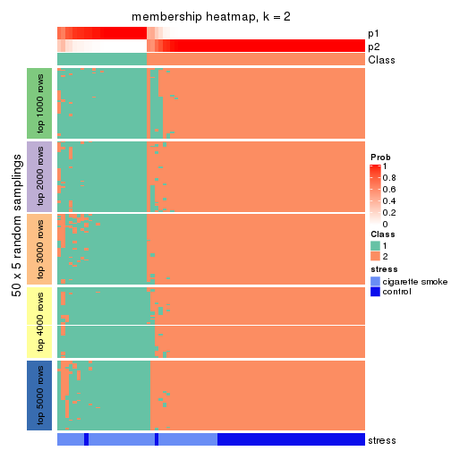
membership_heatmap(res, k = 3)
membership_heatmap(res, k = 4)
membership_heatmap(res, k = 5)
membership_heatmap(res, k = 6)
As soon as we have had the classes for columns, we can look for signatures which are significantly different between classes which can be candidate marks for certain classes. Following are the heatmaps for signatures.
Signature heatmaps where rows are scaled:
get_signatures(res, k = 2)
get_signatures(res, k = 3)
get_signatures(res, k = 4)
get_signatures(res, k = 5)
get_signatures(res, k = 6)
Signature heatmaps where rows are not scaled:
get_signatures(res, k = 2, scale_rows = FALSE)
get_signatures(res, k = 3, scale_rows = FALSE)
get_signatures(res, k = 4, scale_rows = FALSE)
get_signatures(res, k = 5, scale_rows = FALSE)
get_signatures(res, k = 6, scale_rows = FALSE)
Compare the overlap of signatures from different k:
compare_signatures(res)
get_signature() returns a data frame invisibly. TO get the list of signatures, the function
call should be assigned to a variable explicitly. In following code, if plot argument is set
to FALSE, no heatmap is plotted while only the differential analysis is performed.
# code only for demonstration
tb = get_signature(res, k = ..., plot = FALSE)
An example of the output of tb is:
#> which_row fdr mean_1 mean_2 scaled_mean_1 scaled_mean_2 km
#> 1 38 0.042760348 8.373488 9.131774 -0.5533452 0.5164555 1
#> 2 40 0.018707592 7.106213 8.469186 -0.6173731 0.5762149 1
#> 3 55 0.019134737 10.221463 11.207825 -0.6159697 0.5749050 1
#> 4 59 0.006059896 5.921854 7.869574 -0.6899429 0.6439467 1
#> 5 60 0.018055526 8.928898 10.211722 -0.6204761 0.5791110 1
#> 6 98 0.009384629 15.714769 14.887706 0.6635654 -0.6193277 2
...
The columns in tb are:
which_row: row indices corresponding to the input matrix.fdr: FDR for the differential test. mean_x: The mean value in group x.scaled_mean_x: The mean value in group x after rows are scaled.km: Row groups if k-means clustering is applied to rows.UMAP plot which shows how samples are separated.
dimension_reduction(res, k = 2, method = "UMAP")
dimension_reduction(res, k = 3, method = "UMAP")
dimension_reduction(res, k = 4, method = "UMAP")
dimension_reduction(res, k = 5, method = "UMAP")
dimension_reduction(res, k = 6, method = "UMAP")

Following heatmap shows how subgroups are split when increasing k:
collect_classes(res)
Test correlation between subgroups and known annotations. If the known annotation is numeric, one-way ANOVA test is applied, and if the known annotation is discrete, chi-squared contingency table test is applied.
test_to_known_factors(res)
#> n stress(p) k
#> MAD:pam 76 3.30e-07 2
#> MAD:pam 74 7.76e-07 3
#> MAD:pam 72 1.16e-07 4
#> MAD:pam 66 1.33e-06 5
#> MAD:pam 63 9.92e-06 6
If matrix rows can be associated to genes, consider to use functional_enrichment(res,
...) to perform function enrichment for the signature genes. See this vignette for more detailed explanations.
The object with results only for a single top-value method and a single partition method can be extracted as:
res = res_list["MAD", "mclust"]
# you can also extract it by
# res = res_list["MAD:mclust"]
A summary of res and all the functions that can be applied to it:
res
#> A 'ConsensusPartition' object with k = 2, 3, 4, 5, 6.
#> On a matrix with 21168 rows and 79 columns.
#> Top rows (1000, 2000, 3000, 4000, 5000) are extracted by 'MAD' method.
#> Subgroups are detected by 'mclust' method.
#> Performed in total 1250 partitions by row resampling.
#> Best k for subgroups seems to be 2.
#>
#> Following methods can be applied to this 'ConsensusPartition' object:
#> [1] "cola_report" "collect_classes" "collect_plots"
#> [4] "collect_stats" "colnames" "compare_signatures"
#> [7] "consensus_heatmap" "dimension_reduction" "functional_enrichment"
#> [10] "get_anno_col" "get_anno" "get_classes"
#> [13] "get_consensus" "get_matrix" "get_membership"
#> [16] "get_param" "get_signatures" "get_stats"
#> [19] "is_best_k" "is_stable_k" "membership_heatmap"
#> [22] "ncol" "nrow" "plot_ecdf"
#> [25] "rownames" "select_partition_number" "show"
#> [28] "suggest_best_k" "test_to_known_factors"
collect_plots() function collects all the plots made from res for all k (number of partitions)
into one single page to provide an easy and fast comparison between different k.
collect_plots(res)
The plots are:
k and the heatmap of
predicted classes for each k.k.k.k.All the plots in panels can be made by individual functions and they are plotted later in this section.
select_partition_number() produces several plots showing different
statistics for choosing “optimized” k. There are following statistics:
k;k, the area increased is defined as \(A_k - A_{k-1}\).The detailed explanations of these statistics can be found in the cola vignette.
Generally speaking, lower PAC score, higher mean silhouette score or higher
concordance corresponds to better partition. Rand index and Jaccard index
measure how similar the current partition is compared to partition with k-1.
If they are too similar, we won't accept k is better than k-1.
select_partition_number(res)
The numeric values for all these statistics can be obtained by get_stats().
get_stats(res)
#> k 1-PAC mean_silhouette concordance area_increased Rand Jaccard
#> 2 2 1.000 1.000 1.000 0.4775 0.523 0.523
#> 3 3 0.692 0.715 0.844 0.3505 0.805 0.628
#> 4 4 0.583 0.657 0.774 0.1093 0.885 0.673
#> 5 5 0.629 0.552 0.742 0.0580 0.905 0.682
#> 6 6 0.641 0.564 0.750 0.0462 0.915 0.701
suggest_best_k() suggests the best \(k\) based on these statistics. The rules are as follows:
suggest_best_k(res)
#> [1] 2
Following shows the table of the partitions (You need to click the show/hide
code output link to see it). The membership matrix (columns with name p*)
is inferred by
clue::cl_consensus()
function with the SE method. Basically the value in the membership matrix
represents the probability to belong to a certain group. The finall class
label for an item is determined with the group with highest probability it
belongs to.
In get_classes() function, the entropy is calculated from the membership
matrix and the silhouette score is calculated from the consensus matrix.
cbind(get_classes(res, k = 2), get_membership(res, k = 2))
#> class entropy silhouette p1 p2
#> GSM464697 2 0.000 1.000 0.000 1.000
#> GSM464698 2 0.000 1.000 0.000 1.000
#> GSM464699 2 0.000 1.000 0.000 1.000
#> GSM464700 2 0.000 1.000 0.000 1.000
#> GSM464701 2 0.000 1.000 0.000 1.000
#> GSM464702 2 0.000 1.000 0.000 1.000
#> GSM464703 2 0.000 1.000 0.000 1.000
#> GSM464704 2 0.000 1.000 0.000 1.000
#> GSM464705 2 0.000 1.000 0.000 1.000
#> GSM464706 2 0.000 1.000 0.000 1.000
#> GSM464707 2 0.000 1.000 0.000 1.000
#> GSM464708 2 0.000 1.000 0.000 1.000
#> GSM464709 2 0.000 1.000 0.000 1.000
#> GSM464710 2 0.000 1.000 0.000 1.000
#> GSM464711 2 0.000 1.000 0.000 1.000
#> GSM464712 2 0.000 1.000 0.000 1.000
#> GSM464713 2 0.000 1.000 0.000 1.000
#> GSM464714 2 0.000 1.000 0.000 1.000
#> GSM464715 2 0.000 1.000 0.000 1.000
#> GSM464716 2 0.000 1.000 0.000 1.000
#> GSM464717 2 0.000 1.000 0.000 1.000
#> GSM464718 2 0.000 1.000 0.000 1.000
#> GSM464719 2 0.000 1.000 0.000 1.000
#> GSM464720 2 0.000 1.000 0.000 1.000
#> GSM464721 1 0.000 0.999 1.000 0.000
#> GSM464722 2 0.000 1.000 0.000 1.000
#> GSM464723 1 0.000 0.999 1.000 0.000
#> GSM464724 2 0.000 1.000 0.000 1.000
#> GSM464725 2 0.000 1.000 0.000 1.000
#> GSM464726 2 0.000 1.000 0.000 1.000
#> GSM464727 2 0.000 1.000 0.000 1.000
#> GSM464728 2 0.000 1.000 0.000 1.000
#> GSM464729 2 0.000 1.000 0.000 1.000
#> GSM464730 2 0.000 1.000 0.000 1.000
#> GSM464731 2 0.000 1.000 0.000 1.000
#> GSM464732 2 0.000 1.000 0.000 1.000
#> GSM464733 2 0.000 1.000 0.000 1.000
#> GSM464734 2 0.000 1.000 0.000 1.000
#> GSM464735 2 0.000 1.000 0.000 1.000
#> GSM464736 2 0.000 1.000 0.000 1.000
#> GSM464658 1 0.000 0.999 1.000 0.000
#> GSM464659 1 0.000 0.999 1.000 0.000
#> GSM464660 1 0.000 0.999 1.000 0.000
#> GSM464661 1 0.000 0.999 1.000 0.000
#> GSM464662 2 0.000 1.000 0.000 1.000
#> GSM464663 1 0.000 0.999 1.000 0.000
#> GSM464664 2 0.000 1.000 0.000 1.000
#> GSM464665 1 0.000 0.999 1.000 0.000
#> GSM464666 1 0.000 0.999 1.000 0.000
#> GSM464667 1 0.000 0.999 1.000 0.000
#> GSM464668 1 0.000 0.999 1.000 0.000
#> GSM464669 1 0.000 0.999 1.000 0.000
#> GSM464670 1 0.000 0.999 1.000 0.000
#> GSM464671 1 0.000 0.999 1.000 0.000
#> GSM464672 1 0.000 0.999 1.000 0.000
#> GSM464673 1 0.000 0.999 1.000 0.000
#> GSM464674 1 0.000 0.999 1.000 0.000
#> GSM464675 1 0.000 0.999 1.000 0.000
#> GSM464676 1 0.000 0.999 1.000 0.000
#> GSM464677 2 0.000 1.000 0.000 1.000
#> GSM464678 1 0.000 0.999 1.000 0.000
#> GSM464679 2 0.000 1.000 0.000 1.000
#> GSM464680 2 0.000 1.000 0.000 1.000
#> GSM464681 1 0.000 0.999 1.000 0.000
#> GSM464682 2 0.000 1.000 0.000 1.000
#> GSM464683 2 0.000 1.000 0.000 1.000
#> GSM464684 2 0.000 1.000 0.000 1.000
#> GSM464685 2 0.000 1.000 0.000 1.000
#> GSM464686 2 0.000 1.000 0.000 1.000
#> GSM464687 2 0.000 1.000 0.000 1.000
#> GSM464688 1 0.000 0.999 1.000 0.000
#> GSM464689 1 0.000 0.999 1.000 0.000
#> GSM464690 1 0.118 0.984 0.984 0.016
#> GSM464691 1 0.000 0.999 1.000 0.000
#> GSM464692 1 0.000 0.999 1.000 0.000
#> GSM464693 1 0.000 0.999 1.000 0.000
#> GSM464694 1 0.000 0.999 1.000 0.000
#> GSM464695 1 0.000 0.999 1.000 0.000
#> GSM464696 1 0.000 0.999 1.000 0.000
cbind(get_classes(res, k = 3), get_membership(res, k = 3))
#> class entropy silhouette p1 p2 p3
#> GSM464697 2 0.0237 0.7347 0.000 0.996 0.004
#> GSM464698 3 0.6204 0.5576 0.000 0.424 0.576
#> GSM464699 2 0.0592 0.7366 0.000 0.988 0.012
#> GSM464700 3 0.6299 0.4588 0.000 0.476 0.524
#> GSM464701 2 0.0237 0.7347 0.000 0.996 0.004
#> GSM464702 2 0.0592 0.7367 0.000 0.988 0.012
#> GSM464703 2 0.6235 0.1689 0.000 0.564 0.436
#> GSM464704 2 0.0237 0.7347 0.000 0.996 0.004
#> GSM464705 2 0.5363 0.4081 0.000 0.724 0.276
#> GSM464706 3 0.3038 0.6908 0.000 0.104 0.896
#> GSM464707 3 0.5835 0.5070 0.000 0.340 0.660
#> GSM464708 2 0.0424 0.7361 0.000 0.992 0.008
#> GSM464709 3 0.5098 0.6460 0.000 0.248 0.752
#> GSM464710 2 0.0892 0.7346 0.000 0.980 0.020
#> GSM464711 2 0.1964 0.7207 0.000 0.944 0.056
#> GSM464712 3 0.4504 0.6540 0.000 0.196 0.804
#> GSM464713 2 0.0592 0.7366 0.000 0.988 0.012
#> GSM464714 3 0.5623 0.5863 0.004 0.280 0.716
#> GSM464715 2 0.0592 0.7365 0.000 0.988 0.012
#> GSM464716 3 0.4002 0.6843 0.000 0.160 0.840
#> GSM464717 3 0.3482 0.6947 0.000 0.128 0.872
#> GSM464718 3 0.6168 0.5779 0.000 0.412 0.588
#> GSM464719 3 0.4346 0.6972 0.000 0.184 0.816
#> GSM464720 2 0.4235 0.5919 0.000 0.824 0.176
#> GSM464721 1 0.1289 0.9689 0.968 0.000 0.032
#> GSM464722 2 0.6309 -0.0617 0.000 0.500 0.500
#> GSM464723 1 0.1163 0.9701 0.972 0.000 0.028
#> GSM464724 2 0.6225 0.1848 0.000 0.568 0.432
#> GSM464725 2 0.4504 0.6089 0.000 0.804 0.196
#> GSM464726 2 0.0237 0.7347 0.000 0.996 0.004
#> GSM464727 3 0.6154 0.5862 0.000 0.408 0.592
#> GSM464728 2 0.4931 0.5048 0.000 0.768 0.232
#> GSM464729 2 0.3619 0.6417 0.000 0.864 0.136
#> GSM464730 3 0.6244 0.2040 0.000 0.440 0.560
#> GSM464731 2 0.0747 0.7367 0.000 0.984 0.016
#> GSM464732 2 0.6111 -0.0465 0.000 0.604 0.396
#> GSM464733 2 0.4291 0.5984 0.000 0.820 0.180
#> GSM464734 2 0.6286 0.0910 0.000 0.536 0.464
#> GSM464735 2 0.3551 0.6514 0.000 0.868 0.132
#> GSM464736 3 0.5706 0.6610 0.000 0.320 0.680
#> GSM464658 1 0.1411 0.9725 0.964 0.000 0.036
#> GSM464659 1 0.1289 0.9698 0.968 0.000 0.032
#> GSM464660 1 0.2261 0.9628 0.932 0.000 0.068
#> GSM464661 1 0.0747 0.9719 0.984 0.000 0.016
#> GSM464662 3 0.5859 0.6446 0.000 0.344 0.656
#> GSM464663 1 0.1411 0.9678 0.964 0.000 0.036
#> GSM464664 3 0.6180 0.5700 0.000 0.416 0.584
#> GSM464665 1 0.1163 0.9704 0.972 0.000 0.028
#> GSM464666 1 0.0892 0.9714 0.980 0.000 0.020
#> GSM464667 1 0.1163 0.9704 0.972 0.000 0.028
#> GSM464668 1 0.1163 0.9704 0.972 0.000 0.028
#> GSM464669 1 0.1964 0.9655 0.944 0.000 0.056
#> GSM464670 1 0.1031 0.9705 0.976 0.000 0.024
#> GSM464671 1 0.2066 0.9647 0.940 0.000 0.060
#> GSM464672 1 0.1964 0.9655 0.944 0.000 0.056
#> GSM464673 1 0.1529 0.9689 0.960 0.000 0.040
#> GSM464674 1 0.0424 0.9723 0.992 0.000 0.008
#> GSM464675 1 0.2165 0.9634 0.936 0.000 0.064
#> GSM464676 1 0.2066 0.9645 0.940 0.000 0.060
#> GSM464677 3 0.3038 0.6920 0.000 0.104 0.896
#> GSM464678 1 0.2165 0.9634 0.936 0.000 0.064
#> GSM464679 3 0.6140 0.5862 0.000 0.404 0.596
#> GSM464680 3 0.3038 0.6908 0.000 0.104 0.896
#> GSM464681 1 0.2066 0.9645 0.940 0.000 0.060
#> GSM464682 2 0.6299 -0.3443 0.000 0.524 0.476
#> GSM464683 3 0.5178 0.6913 0.000 0.256 0.744
#> GSM464684 3 0.6204 0.5571 0.000 0.424 0.576
#> GSM464685 3 0.3038 0.6920 0.000 0.104 0.896
#> GSM464686 3 0.6192 0.5625 0.000 0.420 0.580
#> GSM464687 3 0.3340 0.6987 0.000 0.120 0.880
#> GSM464688 1 0.2165 0.9642 0.936 0.000 0.064
#> GSM464689 1 0.2066 0.9656 0.940 0.000 0.060
#> GSM464690 1 0.1711 0.9665 0.960 0.008 0.032
#> GSM464691 1 0.0237 0.9723 0.996 0.000 0.004
#> GSM464692 1 0.2165 0.9642 0.936 0.000 0.064
#> GSM464693 1 0.0747 0.9727 0.984 0.000 0.016
#> GSM464694 1 0.1289 0.9691 0.968 0.000 0.032
#> GSM464695 1 0.1163 0.9699 0.972 0.000 0.028
#> GSM464696 1 0.1031 0.9705 0.976 0.000 0.024
cbind(get_classes(res, k = 4), get_membership(res, k = 4))
#> class entropy silhouette p1 p2 p3 p4
#> GSM464697 3 0.2300 0.763 0.000 0.048 0.924 0.028
#> GSM464698 2 0.4781 0.617 0.000 0.660 0.336 0.004
#> GSM464699 3 0.2670 0.764 0.000 0.052 0.908 0.040
#> GSM464700 2 0.5143 0.591 0.000 0.628 0.360 0.012
#> GSM464701 3 0.2036 0.764 0.000 0.032 0.936 0.032
#> GSM464702 3 0.1584 0.769 0.000 0.036 0.952 0.012
#> GSM464703 3 0.5716 0.393 0.000 0.420 0.552 0.028
#> GSM464704 3 0.1938 0.769 0.000 0.052 0.936 0.012
#> GSM464705 3 0.5203 0.611 0.000 0.232 0.720 0.048
#> GSM464706 2 0.0376 0.643 0.000 0.992 0.004 0.004
#> GSM464707 2 0.4584 0.354 0.000 0.696 0.300 0.004
#> GSM464708 3 0.1545 0.769 0.000 0.040 0.952 0.008
#> GSM464709 2 0.3401 0.586 0.000 0.840 0.152 0.008
#> GSM464710 3 0.2596 0.759 0.000 0.068 0.908 0.024
#> GSM464711 3 0.3342 0.741 0.000 0.100 0.868 0.032
#> GSM464712 2 0.2081 0.639 0.000 0.916 0.084 0.000
#> GSM464713 3 0.2227 0.764 0.000 0.036 0.928 0.036
#> GSM464714 2 0.5901 0.434 0.004 0.692 0.220 0.084
#> GSM464715 3 0.1545 0.769 0.000 0.040 0.952 0.008
#> GSM464716 2 0.2124 0.617 0.000 0.924 0.068 0.008
#> GSM464717 2 0.1398 0.640 0.000 0.956 0.040 0.004
#> GSM464718 2 0.4781 0.619 0.000 0.660 0.336 0.004
#> GSM464719 2 0.2670 0.641 0.000 0.904 0.072 0.024
#> GSM464720 3 0.4741 0.303 0.000 0.328 0.668 0.004
#> GSM464721 4 0.2973 0.807 0.144 0.000 0.000 0.856
#> GSM464722 3 0.5570 0.336 0.000 0.440 0.540 0.020
#> GSM464723 4 0.3219 0.814 0.164 0.000 0.000 0.836
#> GSM464724 3 0.5281 0.327 0.000 0.464 0.528 0.008
#> GSM464725 3 0.4999 0.516 0.000 0.328 0.660 0.012
#> GSM464726 3 0.1488 0.767 0.000 0.032 0.956 0.012
#> GSM464727 2 0.4819 0.612 0.000 0.652 0.344 0.004
#> GSM464728 3 0.4422 0.520 0.000 0.256 0.736 0.008
#> GSM464729 3 0.4792 0.532 0.000 0.312 0.680 0.008
#> GSM464730 2 0.5112 0.145 0.000 0.608 0.384 0.008
#> GSM464731 3 0.2402 0.759 0.000 0.076 0.912 0.012
#> GSM464732 2 0.5112 0.470 0.000 0.560 0.436 0.004
#> GSM464733 3 0.3764 0.676 0.000 0.172 0.816 0.012
#> GSM464734 2 0.5778 -0.284 0.000 0.500 0.472 0.028
#> GSM464735 3 0.3870 0.615 0.000 0.208 0.788 0.004
#> GSM464736 2 0.4722 0.636 0.000 0.692 0.300 0.008
#> GSM464658 4 0.4776 0.654 0.376 0.000 0.000 0.624
#> GSM464659 4 0.3356 0.818 0.176 0.000 0.000 0.824
#> GSM464660 1 0.1284 0.864 0.964 0.000 0.012 0.024
#> GSM464661 4 0.5024 0.605 0.360 0.000 0.008 0.632
#> GSM464662 2 0.4567 0.646 0.000 0.716 0.276 0.008
#> GSM464663 4 0.3024 0.809 0.148 0.000 0.000 0.852
#> GSM464664 2 0.4897 0.619 0.000 0.660 0.332 0.008
#> GSM464665 4 0.3873 0.808 0.228 0.000 0.000 0.772
#> GSM464666 4 0.3266 0.808 0.168 0.000 0.000 0.832
#> GSM464667 4 0.3726 0.814 0.212 0.000 0.000 0.788
#> GSM464668 4 0.4103 0.795 0.256 0.000 0.000 0.744
#> GSM464669 1 0.2149 0.898 0.912 0.000 0.000 0.088
#> GSM464670 4 0.4431 0.745 0.304 0.000 0.000 0.696
#> GSM464671 1 0.1488 0.863 0.956 0.000 0.012 0.032
#> GSM464672 1 0.2081 0.897 0.916 0.000 0.000 0.084
#> GSM464673 1 0.4040 0.600 0.752 0.000 0.000 0.248
#> GSM464674 4 0.4819 0.655 0.344 0.000 0.004 0.652
#> GSM464675 1 0.1174 0.862 0.968 0.000 0.012 0.020
#> GSM464676 1 0.2401 0.900 0.904 0.000 0.004 0.092
#> GSM464677 2 0.0657 0.648 0.000 0.984 0.012 0.004
#> GSM464678 1 0.2101 0.885 0.928 0.000 0.012 0.060
#> GSM464679 2 0.4857 0.623 0.000 0.668 0.324 0.008
#> GSM464680 2 0.0376 0.643 0.000 0.992 0.004 0.004
#> GSM464681 1 0.2546 0.900 0.900 0.000 0.008 0.092
#> GSM464682 2 0.5132 0.437 0.000 0.548 0.448 0.004
#> GSM464683 2 0.4539 0.646 0.000 0.720 0.272 0.008
#> GSM464684 2 0.4800 0.614 0.000 0.656 0.340 0.004
#> GSM464685 2 0.0376 0.644 0.000 0.992 0.004 0.004
#> GSM464686 2 0.4877 0.620 0.000 0.664 0.328 0.008
#> GSM464687 2 0.0657 0.647 0.000 0.984 0.012 0.004
#> GSM464688 1 0.2466 0.895 0.900 0.000 0.004 0.096
#> GSM464689 1 0.3768 0.779 0.808 0.000 0.008 0.184
#> GSM464690 4 0.5568 0.300 0.468 0.004 0.012 0.516
#> GSM464691 4 0.4697 0.662 0.356 0.000 0.000 0.644
#> GSM464692 1 0.2859 0.886 0.880 0.000 0.008 0.112
#> GSM464693 4 0.4843 0.610 0.396 0.000 0.000 0.604
#> GSM464694 4 0.3486 0.819 0.188 0.000 0.000 0.812
#> GSM464695 4 0.3266 0.816 0.168 0.000 0.000 0.832
#> GSM464696 4 0.4817 0.624 0.388 0.000 0.000 0.612
cbind(get_classes(res, k = 5), get_membership(res, k = 5))
#> class entropy silhouette p1 p2 p3 p4 p5
#> GSM464697 3 0.6133 0.5411 0.000 0.328 0.524 0.000 0.148
#> GSM464698 2 0.0162 0.6502 0.000 0.996 0.004 0.000 0.000
#> GSM464699 3 0.6269 0.4732 0.000 0.324 0.508 0.000 0.168
#> GSM464700 2 0.0609 0.6398 0.000 0.980 0.020 0.000 0.000
#> GSM464701 3 0.6257 0.5324 0.000 0.320 0.512 0.000 0.168
#> GSM464702 3 0.5505 0.5648 0.000 0.328 0.588 0.000 0.084
#> GSM464703 3 0.3714 0.1977 0.000 0.132 0.812 0.000 0.056
#> GSM464704 3 0.5113 0.5616 0.000 0.324 0.620 0.000 0.056
#> GSM464705 5 0.6349 0.1342 0.000 0.268 0.212 0.000 0.520
#> GSM464706 2 0.4074 0.5051 0.000 0.636 0.364 0.000 0.000
#> GSM464707 3 0.5593 -0.1690 0.000 0.340 0.572 0.000 0.088
#> GSM464708 3 0.5084 0.5608 0.000 0.332 0.616 0.000 0.052
#> GSM464709 2 0.4288 0.4658 0.000 0.612 0.384 0.000 0.004
#> GSM464710 3 0.6175 0.5334 0.000 0.344 0.508 0.000 0.148
#> GSM464711 3 0.6370 0.5180 0.000 0.344 0.480 0.000 0.176
#> GSM464712 2 0.4380 0.5051 0.000 0.616 0.376 0.000 0.008
#> GSM464713 3 0.6109 0.4985 0.000 0.320 0.532 0.000 0.148
#> GSM464714 5 0.6735 0.3724 0.004 0.212 0.264 0.008 0.512
#> GSM464715 3 0.5172 0.5600 0.000 0.324 0.616 0.000 0.060
#> GSM464716 2 0.4565 0.4668 0.000 0.580 0.408 0.000 0.012
#> GSM464717 2 0.4276 0.4965 0.000 0.616 0.380 0.000 0.004
#> GSM464718 2 0.1012 0.6471 0.000 0.968 0.020 0.000 0.012
#> GSM464719 2 0.4481 0.5176 0.004 0.668 0.312 0.000 0.016
#> GSM464720 2 0.3728 0.1993 0.000 0.748 0.244 0.000 0.008
#> GSM464721 4 0.0579 0.8151 0.008 0.000 0.000 0.984 0.008
#> GSM464722 3 0.5778 -0.5049 0.000 0.088 0.464 0.000 0.448
#> GSM464723 4 0.1386 0.8164 0.032 0.000 0.000 0.952 0.016
#> GSM464724 3 0.3081 0.2284 0.000 0.156 0.832 0.000 0.012
#> GSM464725 3 0.4212 0.1022 0.000 0.080 0.776 0.000 0.144
#> GSM464726 3 0.5902 0.5577 0.000 0.320 0.556 0.000 0.124
#> GSM464727 2 0.0404 0.6471 0.000 0.988 0.000 0.000 0.012
#> GSM464728 2 0.4717 -0.3388 0.000 0.584 0.396 0.000 0.020
#> GSM464729 3 0.2172 0.2827 0.000 0.076 0.908 0.000 0.016
#> GSM464730 3 0.4510 -0.1528 0.000 0.432 0.560 0.000 0.008
#> GSM464731 3 0.4805 0.5463 0.000 0.312 0.648 0.000 0.040
#> GSM464732 2 0.1851 0.5659 0.000 0.912 0.088 0.000 0.000
#> GSM464733 3 0.5042 0.4497 0.000 0.460 0.508 0.000 0.032
#> GSM464734 3 0.5525 0.0532 0.000 0.240 0.636 0.000 0.124
#> GSM464735 2 0.5467 -0.4474 0.000 0.524 0.412 0.000 0.064
#> GSM464736 2 0.0510 0.6520 0.000 0.984 0.016 0.000 0.000
#> GSM464658 4 0.4135 0.5436 0.340 0.000 0.000 0.656 0.004
#> GSM464659 4 0.1357 0.8227 0.048 0.000 0.000 0.948 0.004
#> GSM464660 1 0.1697 0.8930 0.932 0.000 0.000 0.008 0.060
#> GSM464661 4 0.5365 0.6338 0.116 0.000 0.000 0.656 0.228
#> GSM464662 2 0.1341 0.6442 0.000 0.944 0.056 0.000 0.000
#> GSM464663 4 0.0290 0.8132 0.000 0.000 0.000 0.992 0.008
#> GSM464664 2 0.0162 0.6473 0.000 0.996 0.004 0.000 0.000
#> GSM464665 4 0.2011 0.8111 0.088 0.000 0.000 0.908 0.004
#> GSM464666 4 0.1568 0.8104 0.036 0.000 0.000 0.944 0.020
#> GSM464667 4 0.1638 0.8173 0.064 0.000 0.000 0.932 0.004
#> GSM464668 4 0.2488 0.7954 0.124 0.000 0.000 0.872 0.004
#> GSM464669 1 0.1915 0.8915 0.928 0.000 0.000 0.040 0.032
#> GSM464670 4 0.3048 0.7500 0.176 0.000 0.000 0.820 0.004
#> GSM464671 1 0.2344 0.8921 0.904 0.000 0.000 0.032 0.064
#> GSM464672 1 0.2914 0.8669 0.872 0.000 0.000 0.052 0.076
#> GSM464673 1 0.3993 0.6250 0.756 0.000 0.000 0.216 0.028
#> GSM464674 4 0.4355 0.6727 0.224 0.000 0.000 0.732 0.044
#> GSM464675 1 0.1571 0.8930 0.936 0.000 0.000 0.004 0.060
#> GSM464676 1 0.0290 0.9003 0.992 0.000 0.000 0.008 0.000
#> GSM464677 2 0.4030 0.5151 0.000 0.648 0.352 0.000 0.000
#> GSM464678 1 0.2012 0.8953 0.920 0.000 0.000 0.020 0.060
#> GSM464679 2 0.0162 0.6486 0.000 0.996 0.000 0.000 0.004
#> GSM464680 2 0.4074 0.5051 0.000 0.636 0.364 0.000 0.000
#> GSM464681 1 0.1168 0.9010 0.960 0.000 0.000 0.008 0.032
#> GSM464682 2 0.1894 0.5788 0.000 0.920 0.072 0.000 0.008
#> GSM464683 2 0.1121 0.6489 0.000 0.956 0.044 0.000 0.000
#> GSM464684 2 0.0510 0.6488 0.000 0.984 0.000 0.000 0.016
#> GSM464685 2 0.4196 0.5126 0.000 0.640 0.356 0.000 0.004
#> GSM464686 2 0.0290 0.6491 0.000 0.992 0.000 0.000 0.008
#> GSM464687 2 0.3966 0.5250 0.000 0.664 0.336 0.000 0.000
#> GSM464688 1 0.1914 0.8892 0.924 0.000 0.000 0.016 0.060
#> GSM464689 1 0.3688 0.7997 0.816 0.000 0.000 0.124 0.060
#> GSM464690 4 0.5792 0.5736 0.164 0.000 0.000 0.612 0.224
#> GSM464691 4 0.5025 0.6679 0.172 0.000 0.000 0.704 0.124
#> GSM464692 1 0.2719 0.8750 0.884 0.000 0.000 0.048 0.068
#> GSM464693 4 0.4101 0.5486 0.332 0.000 0.000 0.664 0.004
#> GSM464694 4 0.1082 0.8198 0.028 0.000 0.000 0.964 0.008
#> GSM464695 4 0.1168 0.8214 0.032 0.000 0.000 0.960 0.008
#> GSM464696 4 0.3990 0.5866 0.308 0.000 0.000 0.688 0.004
cbind(get_classes(res, k = 6), get_membership(res, k = 6))
#> class entropy silhouette p1 p2 p3 p4 p5 p6
#> GSM464697 3 0.4628 0.484033 0.000 0.000 0.684 0.000 0.112 NA
#> GSM464698 2 0.4993 0.571678 0.000 0.608 0.304 0.000 0.004 NA
#> GSM464699 3 0.3929 0.442553 0.000 0.000 0.700 0.000 0.272 NA
#> GSM464700 2 0.5123 0.564576 0.000 0.588 0.316 0.000 0.004 NA
#> GSM464701 3 0.3773 0.534884 0.000 0.000 0.752 0.000 0.044 NA
#> GSM464702 3 0.1899 0.596092 0.004 0.008 0.928 0.000 0.028 NA
#> GSM464703 3 0.6274 0.000236 0.000 0.320 0.488 0.000 0.156 NA
#> GSM464704 3 0.1693 0.593175 0.000 0.004 0.932 0.000 0.044 NA
#> GSM464705 5 0.4122 0.428545 0.000 0.020 0.316 0.000 0.660 NA
#> GSM464706 2 0.1866 0.535664 0.000 0.908 0.000 0.000 0.008 NA
#> GSM464707 2 0.6508 -0.253243 0.000 0.476 0.288 0.000 0.192 NA
#> GSM464708 3 0.2367 0.582709 0.004 0.012 0.900 0.000 0.064 NA
#> GSM464709 2 0.3726 0.479522 0.000 0.812 0.092 0.000 0.024 NA
#> GSM464710 3 0.3329 0.542458 0.000 0.004 0.768 0.000 0.008 NA
#> GSM464711 3 0.5658 0.439432 0.000 0.020 0.592 0.000 0.148 NA
#> GSM464712 2 0.1864 0.552015 0.000 0.924 0.032 0.000 0.004 NA
#> GSM464713 3 0.3586 0.502285 0.000 0.000 0.756 0.000 0.216 NA
#> GSM464714 5 0.4498 0.631085 0.000 0.176 0.012 0.008 0.736 NA
#> GSM464715 3 0.2408 0.579889 0.004 0.012 0.900 0.000 0.056 NA
#> GSM464716 2 0.2638 0.526106 0.000 0.884 0.040 0.000 0.016 NA
#> GSM464717 2 0.2545 0.530602 0.000 0.888 0.024 0.000 0.020 NA
#> GSM464718 2 0.5875 0.560376 0.000 0.588 0.256 0.000 0.056 NA
#> GSM464719 2 0.3099 0.505999 0.000 0.848 0.012 0.000 0.044 NA
#> GSM464720 3 0.5166 -0.183591 0.000 0.384 0.524 0.000 0.000 NA
#> GSM464721 4 0.1313 0.806303 0.004 0.000 0.000 0.952 0.016 NA
#> GSM464722 5 0.5493 0.633661 0.000 0.160 0.184 0.000 0.632 NA
#> GSM464723 4 0.1483 0.805813 0.008 0.000 0.000 0.944 0.012 NA
#> GSM464724 3 0.5778 0.043624 0.004 0.400 0.496 0.000 0.056 NA
#> GSM464725 3 0.6654 -0.212137 0.000 0.212 0.432 0.000 0.312 NA
#> GSM464726 3 0.2843 0.578809 0.000 0.000 0.848 0.000 0.036 NA
#> GSM464727 2 0.5284 0.570905 0.000 0.596 0.296 0.000 0.012 NA
#> GSM464728 3 0.4871 0.373402 0.000 0.204 0.676 0.000 0.008 NA
#> GSM464729 3 0.5889 0.116977 0.004 0.276 0.576 0.000 0.108 NA
#> GSM464730 2 0.4404 0.253578 0.000 0.680 0.272 0.000 0.012 NA
#> GSM464731 3 0.3077 0.566057 0.004 0.076 0.860 0.000 0.044 NA
#> GSM464732 2 0.5152 0.483869 0.000 0.532 0.376 0.000 0.000 NA
#> GSM464733 3 0.3989 0.516901 0.000 0.120 0.776 0.000 0.008 NA
#> GSM464734 2 0.6549 -0.236659 0.000 0.460 0.304 0.000 0.044 NA
#> GSM464735 3 0.6558 0.386271 0.000 0.208 0.544 0.000 0.132 NA
#> GSM464736 2 0.4887 0.584644 0.000 0.624 0.280 0.000 0.000 NA
#> GSM464658 4 0.4252 0.603086 0.288 0.000 0.000 0.676 0.008 NA
#> GSM464659 4 0.1391 0.817468 0.040 0.000 0.000 0.944 0.000 NA
#> GSM464660 1 0.0862 0.893608 0.972 0.000 0.000 0.004 0.008 NA
#> GSM464661 4 0.5578 0.474052 0.024 0.000 0.000 0.520 0.080 NA
#> GSM464662 2 0.4640 0.602981 0.000 0.680 0.232 0.000 0.004 NA
#> GSM464663 4 0.0993 0.805476 0.000 0.000 0.000 0.964 0.012 NA
#> GSM464664 2 0.5185 0.567771 0.000 0.592 0.300 0.000 0.004 NA
#> GSM464665 4 0.2182 0.808517 0.068 0.000 0.000 0.904 0.008 NA
#> GSM464666 4 0.1666 0.802446 0.008 0.000 0.000 0.936 0.020 NA
#> GSM464667 4 0.2036 0.812464 0.048 0.000 0.000 0.916 0.008 NA
#> GSM464668 4 0.2686 0.795275 0.100 0.000 0.000 0.868 0.008 NA
#> GSM464669 1 0.2984 0.845444 0.848 0.000 0.000 0.044 0.004 NA
#> GSM464670 4 0.3224 0.773360 0.128 0.000 0.000 0.828 0.008 NA
#> GSM464671 1 0.2240 0.877747 0.904 0.000 0.000 0.056 0.008 NA
#> GSM464672 1 0.3707 0.799793 0.784 0.000 0.000 0.056 0.004 NA
#> GSM464673 1 0.4722 0.429030 0.648 0.000 0.000 0.284 0.008 NA
#> GSM464674 4 0.4478 0.679915 0.168 0.000 0.000 0.732 0.016 NA
#> GSM464675 1 0.0862 0.893608 0.972 0.000 0.000 0.004 0.008 NA
#> GSM464676 1 0.0146 0.895403 0.996 0.000 0.000 0.004 0.000 NA
#> GSM464677 2 0.1285 0.563533 0.000 0.944 0.000 0.000 0.004 NA
#> GSM464678 1 0.0862 0.893608 0.972 0.000 0.000 0.004 0.008 NA
#> GSM464679 2 0.5098 0.578035 0.000 0.608 0.288 0.000 0.004 NA
#> GSM464680 2 0.1866 0.536989 0.000 0.908 0.000 0.000 0.008 NA
#> GSM464681 1 0.0405 0.895514 0.988 0.000 0.000 0.004 0.000 NA
#> GSM464682 2 0.5688 0.451799 0.000 0.512 0.368 0.000 0.020 NA
#> GSM464683 2 0.4754 0.600810 0.000 0.668 0.236 0.000 0.004 NA
#> GSM464684 2 0.5860 0.569117 0.000 0.600 0.240 0.000 0.064 NA
#> GSM464685 2 0.1268 0.561025 0.000 0.952 0.008 0.000 0.004 NA
#> GSM464686 2 0.5332 0.572240 0.000 0.596 0.288 0.000 0.012 NA
#> GSM464687 2 0.1531 0.550049 0.000 0.928 0.000 0.000 0.004 NA
#> GSM464688 1 0.1078 0.892182 0.964 0.000 0.000 0.008 0.016 NA
#> GSM464689 1 0.2803 0.817748 0.856 0.000 0.000 0.116 0.012 NA
#> GSM464690 4 0.5813 0.491302 0.068 0.000 0.000 0.544 0.056 NA
#> GSM464691 4 0.4792 0.641239 0.076 0.000 0.000 0.672 0.012 NA
#> GSM464692 1 0.1861 0.884532 0.928 0.000 0.000 0.036 0.016 NA
#> GSM464693 4 0.4184 0.586872 0.296 0.000 0.000 0.672 0.004 NA
#> GSM464694 4 0.1218 0.815503 0.028 0.000 0.000 0.956 0.004 NA
#> GSM464695 4 0.0976 0.813783 0.016 0.000 0.000 0.968 0.008 NA
#> GSM464696 4 0.4136 0.616285 0.272 0.000 0.000 0.692 0.004 NA
Heatmaps for the consensus matrix. It visualizes the probability of two samples to be in a same group.
consensus_heatmap(res, k = 2)
consensus_heatmap(res, k = 3)
consensus_heatmap(res, k = 4)
consensus_heatmap(res, k = 5)
consensus_heatmap(res, k = 6)
Heatmaps for the membership of samples in all partitions to see how consistent they are:
membership_heatmap(res, k = 2)
membership_heatmap(res, k = 3)
membership_heatmap(res, k = 4)
membership_heatmap(res, k = 5)
membership_heatmap(res, k = 6)
As soon as we have had the classes for columns, we can look for signatures which are significantly different between classes which can be candidate marks for certain classes. Following are the heatmaps for signatures.
Signature heatmaps where rows are scaled:
get_signatures(res, k = 2)
get_signatures(res, k = 3)
get_signatures(res, k = 4)

get_signatures(res, k = 5)
get_signatures(res, k = 6)
Signature heatmaps where rows are not scaled:
get_signatures(res, k = 2, scale_rows = FALSE)
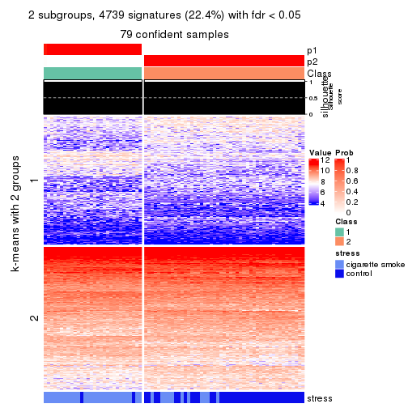
get_signatures(res, k = 3, scale_rows = FALSE)
get_signatures(res, k = 4, scale_rows = FALSE)
get_signatures(res, k = 5, scale_rows = FALSE)
get_signatures(res, k = 6, scale_rows = FALSE)
Compare the overlap of signatures from different k:
compare_signatures(res)
get_signature() returns a data frame invisibly. TO get the list of signatures, the function
call should be assigned to a variable explicitly. In following code, if plot argument is set
to FALSE, no heatmap is plotted while only the differential analysis is performed.
# code only for demonstration
tb = get_signature(res, k = ..., plot = FALSE)
An example of the output of tb is:
#> which_row fdr mean_1 mean_2 scaled_mean_1 scaled_mean_2 km
#> 1 38 0.042760348 8.373488 9.131774 -0.5533452 0.5164555 1
#> 2 40 0.018707592 7.106213 8.469186 -0.6173731 0.5762149 1
#> 3 55 0.019134737 10.221463 11.207825 -0.6159697 0.5749050 1
#> 4 59 0.006059896 5.921854 7.869574 -0.6899429 0.6439467 1
#> 5 60 0.018055526 8.928898 10.211722 -0.6204761 0.5791110 1
#> 6 98 0.009384629 15.714769 14.887706 0.6635654 -0.6193277 2
...
The columns in tb are:
which_row: row indices corresponding to the input matrix.fdr: FDR for the differential test. mean_x: The mean value in group x.scaled_mean_x: The mean value in group x after rows are scaled.km: Row groups if k-means clustering is applied to rows.UMAP plot which shows how samples are separated.
dimension_reduction(res, k = 2, method = "UMAP")
dimension_reduction(res, k = 3, method = "UMAP")
dimension_reduction(res, k = 4, method = "UMAP")
dimension_reduction(res, k = 5, method = "UMAP")
dimension_reduction(res, k = 6, method = "UMAP")
Following heatmap shows how subgroups are split when increasing k:
collect_classes(res)
Test correlation between subgroups and known annotations. If the known annotation is numeric, one-way ANOVA test is applied, and if the known annotation is discrete, chi-squared contingency table test is applied.
test_to_known_factors(res)
#> n stress(p) k
#> MAD:mclust 79 4.00e-09 2
#> MAD:mclust 70 1.61e-09 3
#> MAD:mclust 68 1.19e-08 4
#> MAD:mclust 60 1.12e-06 5
#> MAD:mclust 59 3.02e-06 6
If matrix rows can be associated to genes, consider to use functional_enrichment(res,
...) to perform function enrichment for the signature genes. See this vignette for more detailed explanations.
The object with results only for a single top-value method and a single partition method can be extracted as:
res = res_list["MAD", "NMF"]
# you can also extract it by
# res = res_list["MAD:NMF"]
A summary of res and all the functions that can be applied to it:
res
#> A 'ConsensusPartition' object with k = 2, 3, 4, 5, 6.
#> On a matrix with 21168 rows and 79 columns.
#> Top rows (1000, 2000, 3000, 4000, 5000) are extracted by 'MAD' method.
#> Subgroups are detected by 'NMF' method.
#> Performed in total 1250 partitions by row resampling.
#> Best k for subgroups seems to be 2.
#>
#> Following methods can be applied to this 'ConsensusPartition' object:
#> [1] "cola_report" "collect_classes" "collect_plots"
#> [4] "collect_stats" "colnames" "compare_signatures"
#> [7] "consensus_heatmap" "dimension_reduction" "functional_enrichment"
#> [10] "get_anno_col" "get_anno" "get_classes"
#> [13] "get_consensus" "get_matrix" "get_membership"
#> [16] "get_param" "get_signatures" "get_stats"
#> [19] "is_best_k" "is_stable_k" "membership_heatmap"
#> [22] "ncol" "nrow" "plot_ecdf"
#> [25] "rownames" "select_partition_number" "show"
#> [28] "suggest_best_k" "test_to_known_factors"
collect_plots() function collects all the plots made from res for all k (number of partitions)
into one single page to provide an easy and fast comparison between different k.
collect_plots(res)

The plots are:
k and the heatmap of
predicted classes for each k.k.k.k.All the plots in panels can be made by individual functions and they are plotted later in this section.
select_partition_number() produces several plots showing different
statistics for choosing “optimized” k. There are following statistics:
k;k, the area increased is defined as \(A_k - A_{k-1}\).The detailed explanations of these statistics can be found in the cola vignette.
Generally speaking, lower PAC score, higher mean silhouette score or higher
concordance corresponds to better partition. Rand index and Jaccard index
measure how similar the current partition is compared to partition with k-1.
If they are too similar, we won't accept k is better than k-1.
select_partition_number(res)
The numeric values for all these statistics can be obtained by get_stats().
get_stats(res)
#> k 1-PAC mean_silhouette concordance area_increased Rand Jaccard
#> 2 2 1.000 0.991 0.996 0.4795 0.523 0.523
#> 3 3 0.519 0.642 0.786 0.2742 0.984 0.970
#> 4 4 0.439 0.454 0.655 0.1472 0.861 0.726
#> 5 5 0.453 0.355 0.622 0.0850 0.826 0.578
#> 6 6 0.484 0.352 0.531 0.0593 0.853 0.520
suggest_best_k() suggests the best \(k\) based on these statistics. The rules are as follows:
suggest_best_k(res)
#> [1] 2
Following shows the table of the partitions (You need to click the show/hide
code output link to see it). The membership matrix (columns with name p*)
is inferred by
clue::cl_consensus()
function with the SE method. Basically the value in the membership matrix
represents the probability to belong to a certain group. The finall class
label for an item is determined with the group with highest probability it
belongs to.
In get_classes() function, the entropy is calculated from the membership
matrix and the silhouette score is calculated from the consensus matrix.
cbind(get_classes(res, k = 2), get_membership(res, k = 2))
#> class entropy silhouette p1 p2
#> GSM464697 2 0.0000 0.993 0.000 1.000
#> GSM464698 2 0.0000 0.993 0.000 1.000
#> GSM464699 2 0.0000 0.993 0.000 1.000
#> GSM464700 2 0.0000 0.993 0.000 1.000
#> GSM464701 2 0.0000 0.993 0.000 1.000
#> GSM464702 2 0.0000 0.993 0.000 1.000
#> GSM464703 2 0.0000 0.993 0.000 1.000
#> GSM464704 2 0.0000 0.993 0.000 1.000
#> GSM464705 2 0.0000 0.993 0.000 1.000
#> GSM464706 2 0.3274 0.937 0.060 0.940
#> GSM464707 2 0.0000 0.993 0.000 1.000
#> GSM464708 2 0.0000 0.993 0.000 1.000
#> GSM464709 2 0.0000 0.993 0.000 1.000
#> GSM464710 2 0.0000 0.993 0.000 1.000
#> GSM464711 2 0.0000 0.993 0.000 1.000
#> GSM464712 2 0.0000 0.993 0.000 1.000
#> GSM464713 2 0.0000 0.993 0.000 1.000
#> GSM464714 2 0.6148 0.827 0.152 0.848
#> GSM464715 2 0.0000 0.993 0.000 1.000
#> GSM464716 2 0.0000 0.993 0.000 1.000
#> GSM464717 2 0.0000 0.993 0.000 1.000
#> GSM464718 2 0.0000 0.993 0.000 1.000
#> GSM464719 2 0.0000 0.993 0.000 1.000
#> GSM464720 2 0.0000 0.993 0.000 1.000
#> GSM464721 1 0.0000 1.000 1.000 0.000
#> GSM464722 2 0.0000 0.993 0.000 1.000
#> GSM464723 1 0.0000 1.000 1.000 0.000
#> GSM464724 2 0.0000 0.993 0.000 1.000
#> GSM464725 2 0.0000 0.993 0.000 1.000
#> GSM464726 2 0.0000 0.993 0.000 1.000
#> GSM464727 2 0.0000 0.993 0.000 1.000
#> GSM464728 2 0.0000 0.993 0.000 1.000
#> GSM464729 2 0.0000 0.993 0.000 1.000
#> GSM464730 2 0.0000 0.993 0.000 1.000
#> GSM464731 2 0.0000 0.993 0.000 1.000
#> GSM464732 2 0.0000 0.993 0.000 1.000
#> GSM464733 2 0.0000 0.993 0.000 1.000
#> GSM464734 2 0.0000 0.993 0.000 1.000
#> GSM464735 2 0.0000 0.993 0.000 1.000
#> GSM464736 2 0.0938 0.983 0.012 0.988
#> GSM464658 1 0.0000 1.000 1.000 0.000
#> GSM464659 1 0.0000 1.000 1.000 0.000
#> GSM464660 1 0.0000 1.000 1.000 0.000
#> GSM464661 1 0.0000 1.000 1.000 0.000
#> GSM464662 2 0.0000 0.993 0.000 1.000
#> GSM464663 1 0.0000 1.000 1.000 0.000
#> GSM464664 2 0.0000 0.993 0.000 1.000
#> GSM464665 1 0.0000 1.000 1.000 0.000
#> GSM464666 1 0.0000 1.000 1.000 0.000
#> GSM464667 1 0.0000 1.000 1.000 0.000
#> GSM464668 1 0.0000 1.000 1.000 0.000
#> GSM464669 1 0.0000 1.000 1.000 0.000
#> GSM464670 1 0.0000 1.000 1.000 0.000
#> GSM464671 1 0.0000 1.000 1.000 0.000
#> GSM464672 1 0.0000 1.000 1.000 0.000
#> GSM464673 1 0.0000 1.000 1.000 0.000
#> GSM464674 1 0.0000 1.000 1.000 0.000
#> GSM464675 1 0.0000 1.000 1.000 0.000
#> GSM464676 1 0.0000 1.000 1.000 0.000
#> GSM464677 2 0.0000 0.993 0.000 1.000
#> GSM464678 1 0.0000 1.000 1.000 0.000
#> GSM464679 2 0.0000 0.993 0.000 1.000
#> GSM464680 2 0.4939 0.883 0.108 0.892
#> GSM464681 1 0.0000 1.000 1.000 0.000
#> GSM464682 2 0.0000 0.993 0.000 1.000
#> GSM464683 2 0.0672 0.986 0.008 0.992
#> GSM464684 2 0.0000 0.993 0.000 1.000
#> GSM464685 2 0.0000 0.993 0.000 1.000
#> GSM464686 2 0.0000 0.993 0.000 1.000
#> GSM464687 2 0.0000 0.993 0.000 1.000
#> GSM464688 1 0.0000 1.000 1.000 0.000
#> GSM464689 1 0.0000 1.000 1.000 0.000
#> GSM464690 1 0.0000 1.000 1.000 0.000
#> GSM464691 1 0.0000 1.000 1.000 0.000
#> GSM464692 1 0.0000 1.000 1.000 0.000
#> GSM464693 1 0.0000 1.000 1.000 0.000
#> GSM464694 1 0.0000 1.000 1.000 0.000
#> GSM464695 1 0.0000 1.000 1.000 0.000
#> GSM464696 1 0.0000 1.000 1.000 0.000
cbind(get_classes(res, k = 3), get_membership(res, k = 3))
#> class entropy silhouette p1 p2 p3
#> GSM464697 2 0.465 0.664 0.000 0.792 0.208
#> GSM464698 2 0.319 0.753 0.000 0.888 0.112
#> GSM464699 2 0.470 0.654 0.000 0.788 0.212
#> GSM464700 2 0.341 0.752 0.000 0.876 0.124
#> GSM464701 2 0.445 0.689 0.000 0.808 0.192
#> GSM464702 2 0.153 0.773 0.000 0.960 0.040
#> GSM464703 2 0.581 0.525 0.012 0.724 0.264
#> GSM464704 2 0.424 0.695 0.000 0.824 0.176
#> GSM464705 2 0.862 -0.522 0.100 0.480 0.420
#> GSM464706 2 0.667 0.592 0.056 0.720 0.224
#> GSM464707 2 0.470 0.663 0.000 0.788 0.212
#> GSM464708 2 0.164 0.769 0.000 0.956 0.044
#> GSM464709 2 0.296 0.756 0.000 0.900 0.100
#> GSM464710 2 0.362 0.739 0.000 0.864 0.136
#> GSM464711 2 0.543 0.547 0.000 0.716 0.284
#> GSM464712 2 0.355 0.766 0.000 0.868 0.132
#> GSM464713 2 0.319 0.745 0.000 0.888 0.112
#> GSM464714 3 0.978 0.000 0.248 0.324 0.428
#> GSM464715 2 0.116 0.772 0.000 0.972 0.028
#> GSM464716 2 0.341 0.742 0.000 0.876 0.124
#> GSM464717 2 0.288 0.768 0.000 0.904 0.096
#> GSM464718 2 0.348 0.770 0.000 0.872 0.128
#> GSM464719 2 0.382 0.740 0.000 0.852 0.148
#> GSM464720 2 0.254 0.766 0.000 0.920 0.080
#> GSM464721 1 0.497 0.622 0.764 0.000 0.236
#> GSM464722 2 0.851 -0.513 0.092 0.476 0.432
#> GSM464723 1 0.599 0.403 0.632 0.000 0.368
#> GSM464724 2 0.236 0.765 0.000 0.928 0.072
#> GSM464725 2 0.606 0.347 0.004 0.656 0.340
#> GSM464726 2 0.216 0.767 0.000 0.936 0.064
#> GSM464727 2 0.382 0.747 0.000 0.852 0.148
#> GSM464728 2 0.362 0.736 0.000 0.864 0.136
#> GSM464729 2 0.388 0.722 0.000 0.848 0.152
#> GSM464730 2 0.164 0.774 0.000 0.956 0.044
#> GSM464731 2 0.196 0.767 0.000 0.944 0.056
#> GSM464732 2 0.236 0.769 0.000 0.928 0.072
#> GSM464733 2 0.304 0.754 0.000 0.896 0.104
#> GSM464734 2 0.497 0.626 0.000 0.764 0.236
#> GSM464735 2 0.296 0.771 0.000 0.900 0.100
#> GSM464736 2 0.497 0.641 0.000 0.764 0.236
#> GSM464658 1 0.327 0.735 0.884 0.000 0.116
#> GSM464659 1 0.362 0.695 0.864 0.000 0.136
#> GSM464660 1 0.525 0.686 0.736 0.000 0.264
#> GSM464661 1 0.556 0.566 0.700 0.000 0.300
#> GSM464662 2 0.319 0.749 0.000 0.888 0.112
#> GSM464663 1 0.510 0.610 0.752 0.000 0.248
#> GSM464664 2 0.296 0.757 0.000 0.900 0.100
#> GSM464665 1 0.271 0.713 0.912 0.000 0.088
#> GSM464666 1 0.559 0.531 0.696 0.000 0.304
#> GSM464667 1 0.129 0.729 0.968 0.000 0.032
#> GSM464668 1 0.175 0.731 0.952 0.000 0.048
#> GSM464669 1 0.450 0.715 0.804 0.000 0.196
#> GSM464670 1 0.175 0.733 0.952 0.000 0.048
#> GSM464671 1 0.506 0.695 0.756 0.000 0.244
#> GSM464672 1 0.369 0.729 0.860 0.000 0.140
#> GSM464673 1 0.312 0.737 0.892 0.000 0.108
#> GSM464674 1 0.429 0.668 0.820 0.000 0.180
#> GSM464675 1 0.559 0.668 0.696 0.000 0.304
#> GSM464676 1 0.583 0.644 0.660 0.000 0.340
#> GSM464677 2 0.566 0.622 0.012 0.740 0.248
#> GSM464678 1 0.559 0.665 0.696 0.000 0.304
#> GSM464679 2 0.497 0.652 0.000 0.764 0.236
#> GSM464680 2 0.680 0.577 0.056 0.708 0.236
#> GSM464681 1 0.595 0.629 0.640 0.000 0.360
#> GSM464682 2 0.280 0.760 0.000 0.908 0.092
#> GSM464683 2 0.662 0.347 0.012 0.600 0.388
#> GSM464684 2 0.489 0.666 0.000 0.772 0.228
#> GSM464685 2 0.400 0.735 0.000 0.840 0.160
#> GSM464686 2 0.497 0.657 0.000 0.764 0.236
#> GSM464687 2 0.348 0.754 0.000 0.872 0.128
#> GSM464688 1 0.603 0.615 0.624 0.000 0.376
#> GSM464689 1 0.583 0.641 0.660 0.000 0.340
#> GSM464690 1 0.548 0.596 0.732 0.004 0.264
#> GSM464691 1 0.518 0.603 0.744 0.000 0.256
#> GSM464692 1 0.640 0.555 0.580 0.004 0.416
#> GSM464693 1 0.288 0.737 0.904 0.000 0.096
#> GSM464694 1 0.450 0.665 0.804 0.000 0.196
#> GSM464695 1 0.514 0.605 0.748 0.000 0.252
#> GSM464696 1 0.175 0.736 0.952 0.000 0.048
cbind(get_classes(res, k = 4), get_membership(res, k = 4))
#> class entropy silhouette p1 p2 p3 p4
#> GSM464697 2 0.582 0.39886 0.040 0.652 0.300 0.008
#> GSM464698 2 0.465 0.55251 0.084 0.796 0.120 0.000
#> GSM464699 2 0.588 0.42955 0.036 0.676 0.268 0.020
#> GSM464700 2 0.423 0.56866 0.096 0.824 0.080 0.000
#> GSM464701 2 0.518 0.45903 0.028 0.684 0.288 0.000
#> GSM464702 2 0.271 0.57907 0.004 0.884 0.112 0.000
#> GSM464703 2 0.681 0.07090 0.008 0.512 0.404 0.076
#> GSM464704 2 0.474 0.49932 0.024 0.736 0.240 0.000
#> GSM464705 3 0.882 0.31107 0.052 0.280 0.416 0.252
#> GSM464706 3 0.850 0.21469 0.076 0.392 0.416 0.116
#> GSM464707 2 0.670 0.00439 0.012 0.512 0.416 0.060
#> GSM464708 2 0.253 0.57366 0.004 0.896 0.100 0.000
#> GSM464709 2 0.540 0.22605 0.000 0.580 0.404 0.016
#> GSM464710 2 0.493 0.48825 0.028 0.720 0.252 0.000
#> GSM464711 2 0.703 0.22537 0.056 0.556 0.352 0.036
#> GSM464712 2 0.584 0.46926 0.064 0.656 0.280 0.000
#> GSM464713 2 0.478 0.51972 0.028 0.756 0.212 0.004
#> GSM464714 3 0.763 0.28239 0.020 0.120 0.444 0.416
#> GSM464715 2 0.379 0.54581 0.004 0.796 0.200 0.000
#> GSM464716 2 0.519 0.29882 0.004 0.596 0.396 0.004
#> GSM464717 2 0.583 0.20184 0.012 0.564 0.408 0.016
#> GSM464718 2 0.521 0.54270 0.080 0.768 0.144 0.008
#> GSM464719 2 0.586 0.37419 0.056 0.636 0.308 0.000
#> GSM464720 2 0.308 0.57183 0.032 0.884 0.084 0.000
#> GSM464721 4 0.367 0.63422 0.056 0.000 0.088 0.856
#> GSM464722 3 0.795 0.43943 0.012 0.216 0.468 0.304
#> GSM464723 4 0.345 0.59869 0.020 0.000 0.128 0.852
#> GSM464724 2 0.532 0.35892 0.012 0.624 0.360 0.004
#> GSM464725 2 0.723 -0.04451 0.012 0.472 0.416 0.100
#> GSM464726 2 0.345 0.55856 0.004 0.828 0.168 0.000
#> GSM464727 2 0.527 0.50625 0.140 0.760 0.096 0.004
#> GSM464728 2 0.500 0.52652 0.032 0.720 0.248 0.000
#> GSM464729 2 0.503 0.34542 0.004 0.596 0.400 0.000
#> GSM464730 2 0.536 0.41528 0.016 0.636 0.344 0.004
#> GSM464731 2 0.433 0.52439 0.008 0.748 0.244 0.000
#> GSM464732 2 0.294 0.58708 0.032 0.892 0.076 0.000
#> GSM464733 2 0.423 0.54000 0.008 0.760 0.232 0.000
#> GSM464734 3 0.655 -0.12772 0.012 0.464 0.476 0.048
#> GSM464735 2 0.560 0.43140 0.056 0.700 0.240 0.004
#> GSM464736 2 0.588 0.40584 0.300 0.640 0.060 0.000
#> GSM464658 4 0.628 0.24673 0.360 0.000 0.068 0.572
#> GSM464659 4 0.406 0.63451 0.152 0.000 0.032 0.816
#> GSM464660 1 0.477 0.73163 0.684 0.000 0.008 0.308
#> GSM464661 4 0.619 0.49341 0.132 0.000 0.200 0.668
#> GSM464662 2 0.479 0.53933 0.080 0.784 0.136 0.000
#> GSM464663 4 0.276 0.64542 0.044 0.000 0.052 0.904
#> GSM464664 2 0.441 0.56098 0.080 0.820 0.096 0.004
#> GSM464665 4 0.454 0.57747 0.216 0.000 0.024 0.760
#> GSM464666 4 0.314 0.62483 0.024 0.000 0.100 0.876
#> GSM464667 4 0.442 0.53635 0.240 0.000 0.012 0.748
#> GSM464668 4 0.487 0.56982 0.212 0.000 0.040 0.748
#> GSM464669 1 0.607 0.51107 0.548 0.000 0.048 0.404
#> GSM464670 4 0.534 0.51890 0.240 0.000 0.052 0.708
#> GSM464671 1 0.531 0.69179 0.648 0.000 0.024 0.328
#> GSM464672 1 0.664 0.37267 0.492 0.000 0.084 0.424
#> GSM464673 4 0.641 -0.03972 0.412 0.000 0.068 0.520
#> GSM464674 4 0.572 0.56783 0.152 0.000 0.132 0.716
#> GSM464675 1 0.398 0.77358 0.760 0.000 0.000 0.240
#> GSM464676 1 0.439 0.77547 0.752 0.000 0.012 0.236
#> GSM464677 2 0.721 0.32527 0.256 0.564 0.176 0.004
#> GSM464678 1 0.504 0.74514 0.684 0.000 0.020 0.296
#> GSM464679 2 0.597 0.44978 0.252 0.664 0.084 0.000
#> GSM464680 3 0.819 0.10250 0.124 0.412 0.416 0.048
#> GSM464681 1 0.404 0.74373 0.804 0.000 0.020 0.176
#> GSM464682 2 0.372 0.56492 0.052 0.852 0.096 0.000
#> GSM464683 2 0.697 0.17511 0.396 0.500 0.100 0.004
#> GSM464684 2 0.578 0.42146 0.220 0.692 0.088 0.000
#> GSM464685 2 0.628 0.40979 0.088 0.644 0.264 0.004
#> GSM464686 2 0.625 0.42072 0.240 0.664 0.088 0.008
#> GSM464687 2 0.628 0.34228 0.064 0.600 0.332 0.004
#> GSM464688 1 0.543 0.69732 0.752 0.016 0.060 0.172
#> GSM464689 1 0.556 0.72601 0.692 0.004 0.048 0.256
#> GSM464690 4 0.819 0.33538 0.168 0.044 0.276 0.512
#> GSM464691 4 0.566 0.55418 0.108 0.000 0.176 0.716
#> GSM464692 1 0.520 0.70957 0.760 0.016 0.044 0.180
#> GSM464693 4 0.618 0.14212 0.368 0.000 0.060 0.572
#> GSM464694 4 0.400 0.64350 0.104 0.000 0.060 0.836
#> GSM464695 4 0.390 0.64826 0.084 0.000 0.072 0.844
#> GSM464696 4 0.539 0.26710 0.368 0.000 0.020 0.612
cbind(get_classes(res, k = 5), get_membership(res, k = 5))
#> class entropy silhouette p1 p2 p3 p4 p5
#> GSM464697 2 0.617 0.3919 0.000 0.560 0.156 0.004 0.280
#> GSM464698 2 0.433 0.4391 0.028 0.780 0.160 0.000 0.032
#> GSM464699 2 0.642 0.3953 0.000 0.580 0.148 0.024 0.248
#> GSM464700 2 0.380 0.5109 0.036 0.840 0.088 0.004 0.032
#> GSM464701 2 0.690 0.3075 0.004 0.492 0.276 0.012 0.216
#> GSM464702 2 0.440 0.4608 0.000 0.740 0.204 0.000 0.056
#> GSM464703 3 0.692 0.4862 0.000 0.276 0.544 0.112 0.068
#> GSM464704 2 0.550 0.4521 0.000 0.652 0.192 0.000 0.156
#> GSM464705 2 0.851 -0.1572 0.000 0.308 0.184 0.260 0.248
#> GSM464706 3 0.693 0.4920 0.044 0.320 0.544 0.052 0.040
#> GSM464707 3 0.603 0.5286 0.000 0.292 0.604 0.048 0.056
#> GSM464708 2 0.358 0.4906 0.000 0.820 0.132 0.000 0.048
#> GSM464709 3 0.550 0.5315 0.000 0.264 0.656 0.040 0.040
#> GSM464710 2 0.645 0.3996 0.004 0.552 0.212 0.004 0.228
#> GSM464711 2 0.744 0.2193 0.004 0.376 0.232 0.028 0.360
#> GSM464712 2 0.620 -0.1275 0.012 0.460 0.432 0.000 0.096
#> GSM464713 2 0.524 0.4895 0.000 0.716 0.132 0.016 0.136
#> GSM464714 3 0.708 -0.0460 0.000 0.060 0.456 0.372 0.112
#> GSM464715 2 0.399 0.2860 0.000 0.688 0.308 0.000 0.004
#> GSM464716 3 0.608 0.3407 0.000 0.456 0.460 0.032 0.052
#> GSM464717 3 0.474 0.5297 0.000 0.320 0.652 0.016 0.012
#> GSM464718 2 0.569 0.4927 0.032 0.700 0.128 0.004 0.136
#> GSM464719 3 0.600 0.3610 0.020 0.420 0.496 0.000 0.064
#> GSM464720 2 0.358 0.5118 0.008 0.840 0.084 0.000 0.068
#> GSM464721 4 0.466 0.4296 0.084 0.000 0.088 0.784 0.044
#> GSM464722 3 0.744 0.2259 0.000 0.088 0.496 0.268 0.148
#> GSM464723 4 0.501 0.2906 0.040 0.004 0.140 0.756 0.060
#> GSM464724 3 0.527 0.3416 0.000 0.432 0.528 0.008 0.032
#> GSM464725 3 0.700 0.3565 0.000 0.256 0.544 0.064 0.136
#> GSM464726 2 0.514 0.4708 0.004 0.696 0.200 0.000 0.100
#> GSM464727 2 0.598 0.4908 0.080 0.680 0.084 0.000 0.156
#> GSM464728 2 0.548 0.4602 0.000 0.668 0.212 0.008 0.112
#> GSM464729 3 0.553 0.3682 0.000 0.396 0.540 0.004 0.060
#> GSM464730 2 0.516 -0.1889 0.000 0.504 0.464 0.008 0.024
#> GSM464731 2 0.492 0.3723 0.000 0.684 0.256 0.004 0.056
#> GSM464732 2 0.405 0.4963 0.000 0.780 0.164 0.000 0.056
#> GSM464733 2 0.565 0.4593 0.000 0.648 0.224 0.008 0.120
#> GSM464734 3 0.685 0.3748 0.004 0.220 0.584 0.056 0.136
#> GSM464735 2 0.628 0.4245 0.036 0.588 0.076 0.004 0.296
#> GSM464736 2 0.647 0.3776 0.208 0.628 0.096 0.004 0.064
#> GSM464658 1 0.678 -0.0762 0.440 0.000 0.092 0.420 0.048
#> GSM464659 4 0.554 0.4610 0.212 0.000 0.016 0.672 0.100
#> GSM464660 1 0.271 0.6439 0.860 0.000 0.000 0.132 0.008
#> GSM464661 4 0.622 -0.2835 0.100 0.000 0.024 0.572 0.304
#> GSM464662 2 0.445 0.3894 0.036 0.772 0.164 0.000 0.028
#> GSM464663 4 0.526 0.5022 0.136 0.000 0.076 0.736 0.052
#> GSM464664 2 0.454 0.4720 0.032 0.784 0.120 0.000 0.064
#> GSM464665 4 0.560 0.4305 0.312 0.000 0.032 0.616 0.040
#> GSM464666 4 0.514 0.3242 0.068 0.000 0.108 0.752 0.072
#> GSM464667 4 0.489 0.3731 0.352 0.000 0.000 0.612 0.036
#> GSM464668 4 0.574 0.4384 0.312 0.000 0.036 0.608 0.044
#> GSM464669 1 0.634 0.4656 0.584 0.000 0.016 0.224 0.176
#> GSM464670 4 0.583 0.2879 0.360 0.000 0.032 0.564 0.044
#> GSM464671 1 0.446 0.5889 0.748 0.000 0.004 0.192 0.056
#> GSM464672 1 0.672 0.3462 0.508 0.000 0.012 0.240 0.240
#> GSM464673 1 0.642 0.1413 0.504 0.000 0.012 0.352 0.132
#> GSM464674 4 0.671 0.0427 0.228 0.000 0.020 0.536 0.216
#> GSM464675 1 0.290 0.6425 0.872 0.000 0.000 0.080 0.048
#> GSM464676 1 0.306 0.6500 0.860 0.000 0.000 0.096 0.044
#> GSM464677 2 0.766 0.0426 0.236 0.464 0.220 0.000 0.080
#> GSM464678 1 0.360 0.6320 0.820 0.000 0.004 0.140 0.036
#> GSM464679 2 0.534 0.4681 0.144 0.728 0.052 0.000 0.076
#> GSM464680 3 0.724 0.4863 0.088 0.252 0.568 0.044 0.048
#> GSM464681 1 0.317 0.6403 0.872 0.004 0.008 0.060 0.056
#> GSM464682 2 0.414 0.4991 0.008 0.808 0.096 0.004 0.084
#> GSM464683 2 0.762 0.1267 0.300 0.472 0.128 0.004 0.096
#> GSM464684 2 0.624 0.4296 0.132 0.648 0.040 0.004 0.176
#> GSM464685 2 0.712 -0.1493 0.092 0.504 0.336 0.012 0.056
#> GSM464686 2 0.635 0.3983 0.168 0.660 0.088 0.008 0.076
#> GSM464687 3 0.594 0.3483 0.020 0.432 0.496 0.004 0.048
#> GSM464688 1 0.484 0.5583 0.768 0.016 0.024 0.044 0.148
#> GSM464689 1 0.498 0.5791 0.768 0.016 0.024 0.120 0.072
#> GSM464690 5 0.808 0.0000 0.140 0.044 0.052 0.368 0.396
#> GSM464691 4 0.754 -0.2440 0.188 0.004 0.064 0.484 0.260
#> GSM464692 1 0.416 0.6090 0.820 0.020 0.008 0.064 0.088
#> GSM464693 1 0.659 0.1022 0.484 0.000 0.040 0.388 0.088
#> GSM464694 4 0.630 0.4971 0.208 0.000 0.036 0.620 0.136
#> GSM464695 4 0.630 0.5116 0.204 0.000 0.068 0.636 0.092
#> GSM464696 1 0.550 0.1482 0.520 0.000 0.012 0.428 0.040
cbind(get_classes(res, k = 6), get_membership(res, k = 6))
#> class entropy silhouette p1 p2 p3 p4 p5 p6
#> GSM464697 3 0.629 0.4025 0.004 0.284 0.552 0.004 0.076 0.080
#> GSM464698 2 0.557 0.3459 0.020 0.668 0.116 0.000 0.168 0.028
#> GSM464699 3 0.702 0.1675 0.000 0.360 0.380 0.000 0.096 0.164
#> GSM464700 2 0.539 0.3173 0.040 0.696 0.160 0.000 0.080 0.024
#> GSM464701 3 0.615 0.4327 0.000 0.200 0.600 0.016 0.144 0.040
#> GSM464702 2 0.640 -0.1616 0.000 0.440 0.336 0.000 0.196 0.028
#> GSM464703 5 0.667 0.4958 0.004 0.128 0.104 0.076 0.620 0.068
#> GSM464704 3 0.673 0.3498 0.000 0.300 0.448 0.000 0.192 0.060
#> GSM464705 3 0.868 0.0954 0.004 0.252 0.260 0.204 0.068 0.212
#> GSM464706 5 0.558 0.4906 0.036 0.228 0.016 0.056 0.656 0.008
#> GSM464707 5 0.640 0.4985 0.000 0.204 0.040 0.064 0.604 0.088
#> GSM464708 2 0.580 -0.2492 0.000 0.472 0.376 0.000 0.144 0.008
#> GSM464709 5 0.566 0.5456 0.004 0.140 0.120 0.032 0.680 0.024
#> GSM464710 3 0.536 0.4411 0.008 0.292 0.620 0.008 0.056 0.016
#> GSM464711 3 0.690 0.3181 0.008 0.164 0.560 0.020 0.076 0.172
#> GSM464712 5 0.776 0.3250 0.052 0.284 0.192 0.020 0.416 0.036
#> GSM464713 2 0.678 -0.1667 0.004 0.464 0.352 0.012 0.088 0.080
#> GSM464714 5 0.801 0.0372 0.004 0.108 0.064 0.308 0.384 0.132
#> GSM464715 2 0.667 -0.0668 0.000 0.396 0.160 0.008 0.396 0.040
#> GSM464716 5 0.703 0.4574 0.016 0.228 0.140 0.020 0.536 0.060
#> GSM464717 5 0.456 0.5517 0.004 0.188 0.020 0.024 0.740 0.024
#> GSM464718 2 0.666 0.1448 0.032 0.556 0.256 0.004 0.056 0.096
#> GSM464719 5 0.509 0.3416 0.008 0.404 0.012 0.004 0.544 0.028
#> GSM464720 2 0.591 0.2508 0.004 0.620 0.208 0.000 0.100 0.068
#> GSM464721 4 0.476 0.4366 0.040 0.012 0.024 0.776 0.068 0.080
#> GSM464722 5 0.776 0.2470 0.000 0.060 0.276 0.176 0.412 0.076
#> GSM464723 4 0.478 0.3763 0.032 0.000 0.044 0.764 0.076 0.084
#> GSM464724 5 0.614 0.4130 0.000 0.200 0.204 0.012 0.564 0.020
#> GSM464725 5 0.743 0.2567 0.000 0.140 0.308 0.032 0.428 0.092
#> GSM464726 3 0.619 0.2922 0.000 0.384 0.452 0.004 0.136 0.024
#> GSM464727 2 0.698 0.1796 0.056 0.552 0.204 0.008 0.036 0.144
#> GSM464728 3 0.680 0.3119 0.000 0.360 0.440 0.024 0.136 0.040
#> GSM464729 5 0.586 0.4000 0.000 0.188 0.200 0.000 0.584 0.028
#> GSM464730 5 0.580 0.4634 0.000 0.232 0.132 0.008 0.604 0.024
#> GSM464731 2 0.691 -0.2216 0.000 0.356 0.316 0.008 0.288 0.032
#> GSM464732 2 0.531 0.1879 0.000 0.644 0.236 0.000 0.084 0.036
#> GSM464733 3 0.657 0.2824 0.004 0.384 0.448 0.012 0.112 0.040
#> GSM464734 5 0.701 0.3235 0.000 0.060 0.340 0.076 0.464 0.060
#> GSM464735 2 0.778 -0.1500 0.028 0.380 0.292 0.004 0.092 0.204
#> GSM464736 2 0.606 0.3583 0.180 0.640 0.036 0.004 0.108 0.032
#> GSM464658 4 0.633 0.4995 0.276 0.008 0.028 0.568 0.092 0.028
#> GSM464659 4 0.612 0.3542 0.164 0.004 0.004 0.612 0.056 0.160
#> GSM464660 1 0.290 0.6417 0.824 0.000 0.000 0.160 0.000 0.016
#> GSM464661 6 0.682 0.4545 0.092 0.008 0.084 0.328 0.008 0.480
#> GSM464662 2 0.442 0.3754 0.016 0.748 0.044 0.000 0.176 0.016
#> GSM464663 4 0.536 0.4835 0.096 0.004 0.036 0.728 0.052 0.084
#> GSM464664 2 0.516 0.3813 0.012 0.732 0.088 0.008 0.112 0.048
#> GSM464665 4 0.532 0.5565 0.280 0.000 0.024 0.628 0.012 0.056
#> GSM464666 4 0.528 0.2926 0.036 0.004 0.020 0.712 0.080 0.148
#> GSM464667 4 0.464 0.5605 0.300 0.000 0.008 0.648 0.004 0.040
#> GSM464668 4 0.537 0.5729 0.272 0.000 0.028 0.636 0.032 0.032
#> GSM464669 1 0.634 0.4578 0.608 0.000 0.068 0.140 0.020 0.164
#> GSM464670 4 0.522 0.5780 0.256 0.000 0.004 0.648 0.040 0.052
#> GSM464671 1 0.424 0.5890 0.732 0.000 0.000 0.164 0.000 0.104
#> GSM464672 1 0.695 0.1940 0.500 0.000 0.072 0.168 0.016 0.244
#> GSM464673 1 0.649 0.0881 0.484 0.004 0.028 0.304 0.004 0.176
#> GSM464674 6 0.741 0.4106 0.208 0.008 0.044 0.344 0.024 0.372
#> GSM464675 1 0.318 0.6849 0.856 0.012 0.000 0.080 0.012 0.040
#> GSM464676 1 0.250 0.6801 0.900 0.008 0.004 0.052 0.008 0.028
#> GSM464677 2 0.747 0.0924 0.240 0.452 0.060 0.008 0.212 0.028
#> GSM464678 1 0.387 0.6481 0.796 0.012 0.004 0.148 0.012 0.028
#> GSM464679 2 0.532 0.3846 0.108 0.724 0.076 0.000 0.052 0.040
#> GSM464680 5 0.617 0.4914 0.060 0.184 0.020 0.064 0.648 0.024
#> GSM464681 1 0.303 0.6661 0.872 0.040 0.008 0.032 0.000 0.048
#> GSM464682 2 0.507 0.2999 0.008 0.720 0.152 0.004 0.040 0.076
#> GSM464683 2 0.681 0.2329 0.240 0.532 0.028 0.008 0.160 0.032
#> GSM464684 2 0.683 0.2669 0.156 0.576 0.144 0.004 0.024 0.096
#> GSM464685 5 0.655 0.2456 0.052 0.396 0.072 0.012 0.456 0.012
#> GSM464686 2 0.493 0.4025 0.088 0.760 0.020 0.008 0.072 0.052
#> GSM464687 5 0.524 0.3739 0.012 0.384 0.024 0.000 0.552 0.028
#> GSM464688 1 0.656 0.5333 0.652 0.068 0.088 0.084 0.020 0.088
#> GSM464689 1 0.661 0.4775 0.608 0.064 0.016 0.204 0.052 0.056
#> GSM464690 6 0.781 0.5162 0.108 0.036 0.116 0.192 0.040 0.508
#> GSM464691 6 0.780 0.4149 0.172 0.004 0.092 0.336 0.036 0.360
#> GSM464692 1 0.440 0.6394 0.804 0.064 0.036 0.052 0.012 0.032
#> GSM464693 4 0.608 0.3494 0.388 0.000 0.020 0.492 0.036 0.064
#> GSM464694 4 0.591 0.4592 0.160 0.000 0.048 0.636 0.012 0.144
#> GSM464695 4 0.547 0.5246 0.136 0.000 0.056 0.700 0.024 0.084
#> GSM464696 4 0.573 0.4114 0.376 0.004 0.004 0.524 0.028 0.064
Heatmaps for the consensus matrix. It visualizes the probability of two samples to be in a same group.
consensus_heatmap(res, k = 2)
consensus_heatmap(res, k = 3)
consensus_heatmap(res, k = 4)
consensus_heatmap(res, k = 5)
consensus_heatmap(res, k = 6)
Heatmaps for the membership of samples in all partitions to see how consistent they are:
membership_heatmap(res, k = 2)
membership_heatmap(res, k = 3)
membership_heatmap(res, k = 4)
membership_heatmap(res, k = 5)
membership_heatmap(res, k = 6)
As soon as we have had the classes for columns, we can look for signatures which are significantly different between classes which can be candidate marks for certain classes. Following are the heatmaps for signatures.
Signature heatmaps where rows are scaled:
get_signatures(res, k = 2)
get_signatures(res, k = 3)
get_signatures(res, k = 4)
get_signatures(res, k = 5)
get_signatures(res, k = 6)
Signature heatmaps where rows are not scaled:
get_signatures(res, k = 2, scale_rows = FALSE)
get_signatures(res, k = 3, scale_rows = FALSE)
get_signatures(res, k = 4, scale_rows = FALSE)
get_signatures(res, k = 5, scale_rows = FALSE)
get_signatures(res, k = 6, scale_rows = FALSE)
Compare the overlap of signatures from different k:
compare_signatures(res)
get_signature() returns a data frame invisibly. TO get the list of signatures, the function
call should be assigned to a variable explicitly. In following code, if plot argument is set
to FALSE, no heatmap is plotted while only the differential analysis is performed.
# code only for demonstration
tb = get_signature(res, k = ..., plot = FALSE)
An example of the output of tb is:
#> which_row fdr mean_1 mean_2 scaled_mean_1 scaled_mean_2 km
#> 1 38 0.042760348 8.373488 9.131774 -0.5533452 0.5164555 1
#> 2 40 0.018707592 7.106213 8.469186 -0.6173731 0.5762149 1
#> 3 55 0.019134737 10.221463 11.207825 -0.6159697 0.5749050 1
#> 4 59 0.006059896 5.921854 7.869574 -0.6899429 0.6439467 1
#> 5 60 0.018055526 8.928898 10.211722 -0.6204761 0.5791110 1
#> 6 98 0.009384629 15.714769 14.887706 0.6635654 -0.6193277 2
...
The columns in tb are:
which_row: row indices corresponding to the input matrix.fdr: FDR for the differential test. mean_x: The mean value in group x.scaled_mean_x: The mean value in group x after rows are scaled.km: Row groups if k-means clustering is applied to rows.UMAP plot which shows how samples are separated.
dimension_reduction(res, k = 2, method = "UMAP")
dimension_reduction(res, k = 3, method = "UMAP")
dimension_reduction(res, k = 4, method = "UMAP")
dimension_reduction(res, k = 5, method = "UMAP")
dimension_reduction(res, k = 6, method = "UMAP")
Following heatmap shows how subgroups are split when increasing k:
collect_classes(res)
Test correlation between subgroups and known annotations. If the known annotation is numeric, one-way ANOVA test is applied, and if the known annotation is discrete, chi-squared contingency table test is applied.
test_to_known_factors(res)
#> n stress(p) k
#> MAD:NMF 79 4.00e-09 2
#> MAD:NMF 73 2.87e-09 3
#> MAD:NMF 40 1.20e-05 4
#> MAD:NMF 16 1.13e-03 5
#> MAD:NMF 16 1.13e-03 6
If matrix rows can be associated to genes, consider to use functional_enrichment(res,
...) to perform function enrichment for the signature genes. See this vignette for more detailed explanations.
The object with results only for a single top-value method and a single partition method can be extracted as:
res = res_list["ATC", "hclust"]
# you can also extract it by
# res = res_list["ATC:hclust"]
A summary of res and all the functions that can be applied to it:
res
#> A 'ConsensusPartition' object with k = 2, 3, 4, 5, 6.
#> On a matrix with 21168 rows and 79 columns.
#> Top rows (1000, 2000, 3000, 4000, 5000) are extracted by 'ATC' method.
#> Subgroups are detected by 'hclust' method.
#> Performed in total 1250 partitions by row resampling.
#> Best k for subgroups seems to be 6.
#>
#> Following methods can be applied to this 'ConsensusPartition' object:
#> [1] "cola_report" "collect_classes" "collect_plots"
#> [4] "collect_stats" "colnames" "compare_signatures"
#> [7] "consensus_heatmap" "dimension_reduction" "functional_enrichment"
#> [10] "get_anno_col" "get_anno" "get_classes"
#> [13] "get_consensus" "get_matrix" "get_membership"
#> [16] "get_param" "get_signatures" "get_stats"
#> [19] "is_best_k" "is_stable_k" "membership_heatmap"
#> [22] "ncol" "nrow" "plot_ecdf"
#> [25] "rownames" "select_partition_number" "show"
#> [28] "suggest_best_k" "test_to_known_factors"
collect_plots() function collects all the plots made from res for all k (number of partitions)
into one single page to provide an easy and fast comparison between different k.
collect_plots(res)
The plots are:
k and the heatmap of
predicted classes for each k.k.k.k.All the plots in panels can be made by individual functions and they are plotted later in this section.
select_partition_number() produces several plots showing different
statistics for choosing “optimized” k. There are following statistics:
k;k, the area increased is defined as \(A_k - A_{k-1}\).The detailed explanations of these statistics can be found in the cola vignette.
Generally speaking, lower PAC score, higher mean silhouette score or higher
concordance corresponds to better partition. Rand index and Jaccard index
measure how similar the current partition is compared to partition with k-1.
If they are too similar, we won't accept k is better than k-1.
select_partition_number(res)
The numeric values for all these statistics can be obtained by get_stats().
get_stats(res)
#> k 1-PAC mean_silhouette concordance area_increased Rand Jaccard
#> 2 2 1.000 0.979 0.988 0.3831 0.605 0.605
#> 3 3 0.873 0.911 0.945 0.5442 0.800 0.669
#> 4 4 0.752 0.829 0.863 0.0905 0.971 0.928
#> 5 5 0.769 0.800 0.816 0.1098 0.816 0.538
#> 6 6 0.925 0.874 0.922 0.0903 0.982 0.923
suggest_best_k() suggests the best \(k\) based on these statistics. The rules are as follows:
suggest_best_k(res)
#> [1] 6
#> attr(,"optional")
#> [1] 2
There is also optional best \(k\) = 2 that is worth to check.
Following shows the table of the partitions (You need to click the show/hide
code output link to see it). The membership matrix (columns with name p*)
is inferred by
clue::cl_consensus()
function with the SE method. Basically the value in the membership matrix
represents the probability to belong to a certain group. The finall class
label for an item is determined with the group with highest probability it
belongs to.
In get_classes() function, the entropy is calculated from the membership
matrix and the silhouette score is calculated from the consensus matrix.
cbind(get_classes(res, k = 2), get_membership(res, k = 2))
#> class entropy silhouette p1 p2
#> GSM464697 2 0.0000 1.000 0.000 1.000
#> GSM464698 2 0.0000 1.000 0.000 1.000
#> GSM464699 2 0.0000 1.000 0.000 1.000
#> GSM464700 2 0.0000 1.000 0.000 1.000
#> GSM464701 2 0.0000 1.000 0.000 1.000
#> GSM464702 2 0.0000 1.000 0.000 1.000
#> GSM464703 2 0.0000 1.000 0.000 1.000
#> GSM464704 2 0.0000 1.000 0.000 1.000
#> GSM464705 1 0.0000 0.952 1.000 0.000
#> GSM464706 2 0.0000 1.000 0.000 1.000
#> GSM464707 2 0.0000 1.000 0.000 1.000
#> GSM464708 2 0.0000 1.000 0.000 1.000
#> GSM464709 2 0.0000 1.000 0.000 1.000
#> GSM464710 2 0.0000 1.000 0.000 1.000
#> GSM464711 2 0.0000 1.000 0.000 1.000
#> GSM464712 2 0.0000 1.000 0.000 1.000
#> GSM464713 2 0.0000 1.000 0.000 1.000
#> GSM464714 1 0.0000 0.952 1.000 0.000
#> GSM464715 2 0.0000 1.000 0.000 1.000
#> GSM464716 2 0.0000 1.000 0.000 1.000
#> GSM464717 2 0.0000 1.000 0.000 1.000
#> GSM464718 2 0.0000 1.000 0.000 1.000
#> GSM464719 2 0.0000 1.000 0.000 1.000
#> GSM464720 2 0.0000 1.000 0.000 1.000
#> GSM464721 1 0.0000 0.952 1.000 0.000
#> GSM464722 1 0.0000 0.952 1.000 0.000
#> GSM464723 1 0.0000 0.952 1.000 0.000
#> GSM464724 2 0.0000 1.000 0.000 1.000
#> GSM464725 2 0.0000 1.000 0.000 1.000
#> GSM464726 2 0.0000 1.000 0.000 1.000
#> GSM464727 2 0.0672 0.992 0.008 0.992
#> GSM464728 2 0.0000 1.000 0.000 1.000
#> GSM464729 2 0.0000 1.000 0.000 1.000
#> GSM464730 2 0.0000 1.000 0.000 1.000
#> GSM464731 2 0.0000 1.000 0.000 1.000
#> GSM464732 2 0.0000 1.000 0.000 1.000
#> GSM464733 2 0.0000 1.000 0.000 1.000
#> GSM464734 2 0.0000 1.000 0.000 1.000
#> GSM464735 2 0.0000 1.000 0.000 1.000
#> GSM464736 2 0.0000 1.000 0.000 1.000
#> GSM464658 1 0.7139 0.806 0.804 0.196
#> GSM464659 1 0.2043 0.945 0.968 0.032
#> GSM464660 2 0.0000 1.000 0.000 1.000
#> GSM464661 1 0.0000 0.952 1.000 0.000
#> GSM464662 2 0.0000 1.000 0.000 1.000
#> GSM464663 1 0.2423 0.940 0.960 0.040
#> GSM464664 2 0.0000 1.000 0.000 1.000
#> GSM464665 1 0.0000 0.952 1.000 0.000
#> GSM464666 1 0.0376 0.952 0.996 0.004
#> GSM464667 1 0.2043 0.945 0.968 0.032
#> GSM464668 1 0.0000 0.952 1.000 0.000
#> GSM464669 2 0.0000 1.000 0.000 1.000
#> GSM464670 1 0.0000 0.952 1.000 0.000
#> GSM464671 2 0.0000 1.000 0.000 1.000
#> GSM464672 2 0.0000 1.000 0.000 1.000
#> GSM464673 1 0.7139 0.806 0.804 0.196
#> GSM464674 1 0.7139 0.806 0.804 0.196
#> GSM464675 2 0.0000 1.000 0.000 1.000
#> GSM464676 2 0.0000 1.000 0.000 1.000
#> GSM464677 2 0.0000 1.000 0.000 1.000
#> GSM464678 2 0.0000 1.000 0.000 1.000
#> GSM464679 2 0.0000 1.000 0.000 1.000
#> GSM464680 2 0.0000 1.000 0.000 1.000
#> GSM464681 2 0.0000 1.000 0.000 1.000
#> GSM464682 2 0.0000 1.000 0.000 1.000
#> GSM464683 2 0.0000 1.000 0.000 1.000
#> GSM464684 2 0.0000 1.000 0.000 1.000
#> GSM464685 2 0.0000 1.000 0.000 1.000
#> GSM464686 2 0.0000 1.000 0.000 1.000
#> GSM464687 2 0.0000 1.000 0.000 1.000
#> GSM464688 2 0.0000 1.000 0.000 1.000
#> GSM464689 2 0.0672 0.992 0.008 0.992
#> GSM464690 2 0.0000 1.000 0.000 1.000
#> GSM464691 1 0.7139 0.806 0.804 0.196
#> GSM464692 2 0.0000 1.000 0.000 1.000
#> GSM464693 1 0.2236 0.943 0.964 0.036
#> GSM464694 1 0.0000 0.952 1.000 0.000
#> GSM464695 1 0.0000 0.952 1.000 0.000
#> GSM464696 1 0.1633 0.947 0.976 0.024
cbind(get_classes(res, k = 3), get_membership(res, k = 3))
#> class entropy silhouette p1 p2 p3
#> GSM464697 2 0.0000 0.945 0.000 1.000 0.000
#> GSM464698 2 0.2066 0.955 0.000 0.940 0.060
#> GSM464699 2 0.0000 0.945 0.000 1.000 0.000
#> GSM464700 2 0.2796 0.946 0.000 0.908 0.092
#> GSM464701 2 0.0000 0.945 0.000 1.000 0.000
#> GSM464702 2 0.0000 0.945 0.000 1.000 0.000
#> GSM464703 2 0.0000 0.945 0.000 1.000 0.000
#> GSM464704 2 0.0000 0.945 0.000 1.000 0.000
#> GSM464705 1 0.0000 0.953 1.000 0.000 0.000
#> GSM464706 2 0.2711 0.948 0.000 0.912 0.088
#> GSM464707 2 0.1643 0.955 0.000 0.956 0.044
#> GSM464708 2 0.0000 0.945 0.000 1.000 0.000
#> GSM464709 2 0.1860 0.956 0.000 0.948 0.052
#> GSM464710 2 0.0000 0.945 0.000 1.000 0.000
#> GSM464711 3 0.6308 0.167 0.000 0.492 0.508
#> GSM464712 2 0.2711 0.948 0.000 0.912 0.088
#> GSM464713 2 0.0000 0.945 0.000 1.000 0.000
#> GSM464714 1 0.0000 0.953 1.000 0.000 0.000
#> GSM464715 2 0.0000 0.945 0.000 1.000 0.000
#> GSM464716 2 0.2066 0.956 0.000 0.940 0.060
#> GSM464717 2 0.2625 0.950 0.000 0.916 0.084
#> GSM464718 2 0.2066 0.955 0.000 0.940 0.060
#> GSM464719 2 0.2625 0.950 0.000 0.916 0.084
#> GSM464720 2 0.3192 0.933 0.000 0.888 0.112
#> GSM464721 1 0.0000 0.953 1.000 0.000 0.000
#> GSM464722 1 0.0000 0.953 1.000 0.000 0.000
#> GSM464723 1 0.0000 0.953 1.000 0.000 0.000
#> GSM464724 2 0.1753 0.955 0.000 0.952 0.048
#> GSM464725 2 0.0000 0.945 0.000 1.000 0.000
#> GSM464726 2 0.0000 0.945 0.000 1.000 0.000
#> GSM464727 2 0.2680 0.952 0.008 0.924 0.068
#> GSM464728 2 0.0000 0.945 0.000 1.000 0.000
#> GSM464729 2 0.0000 0.945 0.000 1.000 0.000
#> GSM464730 2 0.0000 0.945 0.000 1.000 0.000
#> GSM464731 2 0.0000 0.945 0.000 1.000 0.000
#> GSM464732 2 0.2066 0.955 0.000 0.940 0.060
#> GSM464733 2 0.1753 0.955 0.000 0.952 0.048
#> GSM464734 2 0.1753 0.955 0.000 0.952 0.048
#> GSM464735 3 0.6307 0.181 0.000 0.488 0.512
#> GSM464736 2 0.3192 0.933 0.000 0.888 0.112
#> GSM464658 1 0.4504 0.817 0.804 0.000 0.196
#> GSM464659 1 0.1289 0.945 0.968 0.000 0.032
#> GSM464660 3 0.0000 0.886 0.000 0.000 1.000
#> GSM464661 1 0.0000 0.953 1.000 0.000 0.000
#> GSM464662 2 0.2261 0.954 0.000 0.932 0.068
#> GSM464663 1 0.1529 0.941 0.960 0.000 0.040
#> GSM464664 2 0.2356 0.954 0.000 0.928 0.072
#> GSM464665 1 0.0000 0.953 1.000 0.000 0.000
#> GSM464666 1 0.0237 0.952 0.996 0.000 0.004
#> GSM464667 1 0.1289 0.945 0.968 0.000 0.032
#> GSM464668 1 0.0000 0.953 1.000 0.000 0.000
#> GSM464669 3 0.0000 0.886 0.000 0.000 1.000
#> GSM464670 1 0.0000 0.953 1.000 0.000 0.000
#> GSM464671 3 0.0000 0.886 0.000 0.000 1.000
#> GSM464672 3 0.0000 0.886 0.000 0.000 1.000
#> GSM464673 1 0.4504 0.817 0.804 0.000 0.196
#> GSM464674 1 0.4504 0.817 0.804 0.000 0.196
#> GSM464675 3 0.0000 0.886 0.000 0.000 1.000
#> GSM464676 3 0.0000 0.886 0.000 0.000 1.000
#> GSM464677 2 0.2711 0.948 0.000 0.912 0.088
#> GSM464678 3 0.0000 0.886 0.000 0.000 1.000
#> GSM464679 2 0.2356 0.954 0.000 0.928 0.072
#> GSM464680 2 0.2711 0.948 0.000 0.912 0.088
#> GSM464681 3 0.0000 0.886 0.000 0.000 1.000
#> GSM464682 2 0.3412 0.923 0.000 0.876 0.124
#> GSM464683 2 0.3192 0.933 0.000 0.888 0.112
#> GSM464684 2 0.3412 0.923 0.000 0.876 0.124
#> GSM464685 2 0.2711 0.948 0.000 0.912 0.088
#> GSM464686 2 0.3412 0.923 0.000 0.876 0.124
#> GSM464687 2 0.3192 0.933 0.000 0.888 0.112
#> GSM464688 3 0.1529 0.872 0.000 0.040 0.960
#> GSM464689 3 0.2280 0.858 0.008 0.052 0.940
#> GSM464690 3 0.1031 0.880 0.000 0.024 0.976
#> GSM464691 1 0.4504 0.817 0.804 0.000 0.196
#> GSM464692 3 0.1529 0.872 0.000 0.040 0.960
#> GSM464693 1 0.1411 0.943 0.964 0.000 0.036
#> GSM464694 1 0.0000 0.953 1.000 0.000 0.000
#> GSM464695 1 0.0000 0.953 1.000 0.000 0.000
#> GSM464696 1 0.1031 0.948 0.976 0.000 0.024
cbind(get_classes(res, k = 4), get_membership(res, k = 4))
#> class entropy silhouette p1 p2 p3 p4
#> GSM464697 2 0.2973 0.873 0.000 0.856 0.144 0.000
#> GSM464698 2 0.0817 0.915 0.024 0.976 0.000 0.000
#> GSM464699 2 0.3486 0.853 0.000 0.812 0.188 0.000
#> GSM464700 2 0.1557 0.910 0.056 0.944 0.000 0.000
#> GSM464701 2 0.3444 0.855 0.000 0.816 0.184 0.000
#> GSM464702 2 0.3486 0.853 0.000 0.812 0.188 0.000
#> GSM464703 2 0.2973 0.873 0.000 0.856 0.144 0.000
#> GSM464704 2 0.3444 0.855 0.000 0.816 0.184 0.000
#> GSM464705 3 0.4730 0.988 0.000 0.000 0.636 0.364
#> GSM464706 2 0.1474 0.912 0.052 0.948 0.000 0.000
#> GSM464707 2 0.1635 0.904 0.008 0.948 0.044 0.000
#> GSM464708 2 0.3486 0.853 0.000 0.812 0.188 0.000
#> GSM464709 2 0.0779 0.915 0.016 0.980 0.004 0.000
#> GSM464710 2 0.3486 0.853 0.000 0.812 0.188 0.000
#> GSM464711 1 0.7458 0.467 0.508 0.240 0.252 0.000
#> GSM464712 2 0.1474 0.912 0.052 0.948 0.000 0.000
#> GSM464713 2 0.3486 0.853 0.000 0.812 0.188 0.000
#> GSM464714 3 0.4730 0.988 0.000 0.000 0.636 0.364
#> GSM464715 2 0.3486 0.853 0.000 0.812 0.188 0.000
#> GSM464716 2 0.1004 0.916 0.024 0.972 0.004 0.000
#> GSM464717 2 0.1389 0.913 0.048 0.952 0.000 0.000
#> GSM464718 2 0.0817 0.915 0.024 0.976 0.000 0.000
#> GSM464719 2 0.1389 0.913 0.048 0.952 0.000 0.000
#> GSM464720 2 0.1940 0.901 0.076 0.924 0.000 0.000
#> GSM464721 3 0.4790 0.975 0.000 0.000 0.620 0.380
#> GSM464722 3 0.4730 0.988 0.000 0.000 0.636 0.364
#> GSM464723 3 0.4790 0.975 0.000 0.000 0.620 0.380
#> GSM464724 2 0.0469 0.915 0.012 0.988 0.000 0.000
#> GSM464725 2 0.2760 0.879 0.000 0.872 0.128 0.000
#> GSM464726 2 0.3266 0.864 0.000 0.832 0.168 0.000
#> GSM464727 2 0.1356 0.916 0.032 0.960 0.000 0.008
#> GSM464728 2 0.2760 0.879 0.000 0.872 0.128 0.000
#> GSM464729 2 0.3486 0.853 0.000 0.812 0.188 0.000
#> GSM464730 2 0.3266 0.864 0.000 0.832 0.168 0.000
#> GSM464731 2 0.2760 0.879 0.000 0.872 0.128 0.000
#> GSM464732 2 0.0817 0.915 0.024 0.976 0.000 0.000
#> GSM464733 2 0.0469 0.915 0.012 0.988 0.000 0.000
#> GSM464734 2 0.0469 0.915 0.012 0.988 0.000 0.000
#> GSM464735 1 0.7436 0.472 0.512 0.236 0.252 0.000
#> GSM464736 2 0.1940 0.901 0.076 0.924 0.000 0.000
#> GSM464658 4 0.4548 0.643 0.144 0.008 0.044 0.804
#> GSM464659 4 0.0524 0.738 0.000 0.008 0.004 0.988
#> GSM464660 1 0.0000 0.904 1.000 0.000 0.000 0.000
#> GSM464661 3 0.4730 0.988 0.000 0.000 0.636 0.364
#> GSM464662 2 0.1022 0.916 0.032 0.968 0.000 0.000
#> GSM464663 4 0.0524 0.737 0.004 0.008 0.000 0.988
#> GSM464664 2 0.1118 0.915 0.036 0.964 0.000 0.000
#> GSM464665 4 0.2589 0.668 0.000 0.000 0.116 0.884
#> GSM464666 4 0.3311 0.574 0.000 0.000 0.172 0.828
#> GSM464667 4 0.0524 0.738 0.000 0.008 0.004 0.988
#> GSM464668 4 0.2589 0.668 0.000 0.000 0.116 0.884
#> GSM464669 1 0.0000 0.904 1.000 0.000 0.000 0.000
#> GSM464670 4 0.2589 0.668 0.000 0.000 0.116 0.884
#> GSM464671 1 0.0000 0.904 1.000 0.000 0.000 0.000
#> GSM464672 1 0.0000 0.904 1.000 0.000 0.000 0.000
#> GSM464673 4 0.4548 0.643 0.144 0.008 0.044 0.804
#> GSM464674 4 0.4548 0.643 0.144 0.008 0.044 0.804
#> GSM464675 1 0.0000 0.904 1.000 0.000 0.000 0.000
#> GSM464676 1 0.0000 0.904 1.000 0.000 0.000 0.000
#> GSM464677 2 0.1474 0.912 0.052 0.948 0.000 0.000
#> GSM464678 1 0.0000 0.904 1.000 0.000 0.000 0.000
#> GSM464679 2 0.1118 0.915 0.036 0.964 0.000 0.000
#> GSM464680 2 0.1474 0.912 0.052 0.948 0.000 0.000
#> GSM464681 1 0.0000 0.904 1.000 0.000 0.000 0.000
#> GSM464682 2 0.2334 0.890 0.088 0.908 0.004 0.000
#> GSM464683 2 0.2125 0.899 0.076 0.920 0.004 0.000
#> GSM464684 2 0.2334 0.890 0.088 0.908 0.004 0.000
#> GSM464685 2 0.1474 0.912 0.052 0.948 0.000 0.000
#> GSM464686 2 0.2334 0.890 0.088 0.908 0.004 0.000
#> GSM464687 2 0.2125 0.899 0.076 0.920 0.004 0.000
#> GSM464688 1 0.1406 0.891 0.960 0.016 0.024 0.000
#> GSM464689 1 0.2234 0.848 0.924 0.064 0.004 0.008
#> GSM464690 1 0.0817 0.896 0.976 0.000 0.024 0.000
#> GSM464691 4 0.4548 0.643 0.144 0.008 0.044 0.804
#> GSM464692 1 0.1406 0.891 0.960 0.016 0.024 0.000
#> GSM464693 4 0.0336 0.738 0.000 0.008 0.000 0.992
#> GSM464694 4 0.3764 0.474 0.000 0.000 0.216 0.784
#> GSM464695 4 0.4994 -0.643 0.000 0.000 0.480 0.520
#> GSM464696 4 0.1305 0.724 0.000 0.004 0.036 0.960
cbind(get_classes(res, k = 5), get_membership(res, k = 5))
#> class entropy silhouette p1 p2 p3 p4 p5
#> GSM464697 3 0.2074 0.898 0.000 0.104 0.896 0.000 0.000
#> GSM464698 2 0.4557 0.856 0.012 0.584 0.404 0.000 0.000
#> GSM464699 3 0.0162 0.943 0.000 0.004 0.996 0.000 0.000
#> GSM464700 2 0.5026 0.865 0.040 0.588 0.372 0.000 0.000
#> GSM464701 3 0.0290 0.943 0.000 0.008 0.992 0.000 0.000
#> GSM464702 3 0.0162 0.943 0.000 0.004 0.996 0.000 0.000
#> GSM464703 3 0.2074 0.898 0.000 0.104 0.896 0.000 0.000
#> GSM464704 3 0.0290 0.943 0.000 0.008 0.992 0.000 0.000
#> GSM464705 5 0.0000 0.849 0.000 0.000 0.000 0.000 1.000
#> GSM464706 2 0.5037 0.867 0.040 0.584 0.376 0.000 0.000
#> GSM464707 2 0.4182 0.776 0.000 0.600 0.400 0.000 0.000
#> GSM464708 3 0.0162 0.943 0.000 0.004 0.996 0.000 0.000
#> GSM464709 2 0.4331 0.847 0.004 0.596 0.400 0.000 0.000
#> GSM464710 3 0.0162 0.943 0.000 0.004 0.996 0.000 0.000
#> GSM464711 2 0.6922 -0.439 0.308 0.464 0.212 0.016 0.000
#> GSM464712 2 0.5037 0.867 0.040 0.584 0.376 0.000 0.000
#> GSM464713 3 0.0290 0.943 0.000 0.008 0.992 0.000 0.000
#> GSM464714 5 0.0000 0.849 0.000 0.000 0.000 0.000 1.000
#> GSM464715 3 0.0162 0.943 0.000 0.004 0.996 0.000 0.000
#> GSM464716 2 0.4547 0.855 0.012 0.588 0.400 0.000 0.000
#> GSM464717 2 0.4980 0.867 0.036 0.584 0.380 0.000 0.000
#> GSM464718 2 0.4557 0.856 0.012 0.584 0.404 0.000 0.000
#> GSM464719 2 0.4980 0.867 0.036 0.584 0.380 0.000 0.000
#> GSM464720 2 0.5273 0.852 0.060 0.588 0.352 0.000 0.000
#> GSM464721 5 0.0510 0.845 0.000 0.000 0.000 0.016 0.984
#> GSM464722 5 0.0000 0.849 0.000 0.000 0.000 0.000 1.000
#> GSM464723 5 0.0510 0.845 0.000 0.000 0.000 0.016 0.984
#> GSM464724 2 0.4192 0.847 0.000 0.596 0.404 0.000 0.000
#> GSM464725 3 0.2424 0.866 0.000 0.132 0.868 0.000 0.000
#> GSM464726 3 0.0703 0.938 0.000 0.024 0.976 0.000 0.000
#> GSM464727 2 0.5003 0.851 0.012 0.572 0.400 0.016 0.000
#> GSM464728 3 0.2424 0.866 0.000 0.132 0.868 0.000 0.000
#> GSM464729 3 0.0162 0.942 0.000 0.004 0.996 0.000 0.000
#> GSM464730 3 0.0703 0.938 0.000 0.024 0.976 0.000 0.000
#> GSM464731 3 0.2424 0.866 0.000 0.132 0.868 0.000 0.000
#> GSM464732 2 0.4557 0.856 0.012 0.584 0.404 0.000 0.000
#> GSM464733 2 0.4201 0.846 0.000 0.592 0.408 0.000 0.000
#> GSM464734 2 0.4192 0.847 0.000 0.596 0.404 0.000 0.000
#> GSM464735 2 0.6912 -0.443 0.312 0.464 0.208 0.016 0.000
#> GSM464736 2 0.5273 0.852 0.060 0.588 0.352 0.000 0.000
#> GSM464658 4 0.0671 0.651 0.016 0.004 0.000 0.980 0.000
#> GSM464659 4 0.3684 0.738 0.000 0.000 0.000 0.720 0.280
#> GSM464660 1 0.0000 0.979 1.000 0.000 0.000 0.000 0.000
#> GSM464661 5 0.0000 0.849 0.000 0.000 0.000 0.000 1.000
#> GSM464662 2 0.4717 0.862 0.020 0.584 0.396 0.000 0.000
#> GSM464663 4 0.3274 0.730 0.000 0.000 0.000 0.780 0.220
#> GSM464664 2 0.4789 0.864 0.024 0.584 0.392 0.000 0.000
#> GSM464665 4 0.4210 0.614 0.000 0.000 0.000 0.588 0.412
#> GSM464666 4 0.4304 0.435 0.000 0.000 0.000 0.516 0.484
#> GSM464667 4 0.3707 0.736 0.000 0.000 0.000 0.716 0.284
#> GSM464668 4 0.4192 0.625 0.000 0.000 0.000 0.596 0.404
#> GSM464669 1 0.0000 0.979 1.000 0.000 0.000 0.000 0.000
#> GSM464670 4 0.4210 0.614 0.000 0.000 0.000 0.588 0.412
#> GSM464671 1 0.0000 0.979 1.000 0.000 0.000 0.000 0.000
#> GSM464672 1 0.0000 0.979 1.000 0.000 0.000 0.000 0.000
#> GSM464673 4 0.0510 0.652 0.016 0.000 0.000 0.984 0.000
#> GSM464674 4 0.0510 0.652 0.016 0.000 0.000 0.984 0.000
#> GSM464675 1 0.0000 0.979 1.000 0.000 0.000 0.000 0.000
#> GSM464676 1 0.0000 0.979 1.000 0.000 0.000 0.000 0.000
#> GSM464677 2 0.5037 0.867 0.040 0.584 0.376 0.000 0.000
#> GSM464678 1 0.0000 0.979 1.000 0.000 0.000 0.000 0.000
#> GSM464679 2 0.4789 0.864 0.024 0.584 0.392 0.000 0.000
#> GSM464680 2 0.5037 0.867 0.040 0.584 0.376 0.000 0.000
#> GSM464681 1 0.0000 0.979 1.000 0.000 0.000 0.000 0.000
#> GSM464682 2 0.5343 0.835 0.068 0.592 0.340 0.000 0.000
#> GSM464683 2 0.5202 0.850 0.056 0.596 0.348 0.000 0.000
#> GSM464684 2 0.5343 0.835 0.068 0.592 0.340 0.000 0.000
#> GSM464685 2 0.5037 0.867 0.040 0.584 0.376 0.000 0.000
#> GSM464686 2 0.5343 0.835 0.068 0.592 0.340 0.000 0.000
#> GSM464687 2 0.5202 0.850 0.056 0.596 0.348 0.000 0.000
#> GSM464688 1 0.1408 0.954 0.948 0.044 0.000 0.008 0.000
#> GSM464689 1 0.2069 0.896 0.912 0.076 0.000 0.012 0.000
#> GSM464690 1 0.0898 0.968 0.972 0.020 0.000 0.008 0.000
#> GSM464691 4 0.0510 0.652 0.016 0.000 0.000 0.984 0.000
#> GSM464692 1 0.1408 0.954 0.948 0.044 0.000 0.008 0.000
#> GSM464693 4 0.3684 0.738 0.000 0.000 0.000 0.720 0.280
#> GSM464694 5 0.4291 -0.394 0.000 0.000 0.000 0.464 0.536
#> GSM464695 5 0.3074 0.578 0.000 0.000 0.000 0.196 0.804
#> GSM464696 4 0.3895 0.715 0.000 0.000 0.000 0.680 0.320
cbind(get_classes(res, k = 6), get_membership(res, k = 6))
#> class entropy silhouette p1 p2 p3 p4 p5 p6
#> GSM464697 3 0.1958 0.910 0.000 0.004 0.896 0.000 0.000 0.100
#> GSM464698 2 0.0000 0.965 0.000 1.000 0.000 0.000 0.000 0.000
#> GSM464699 3 0.0291 0.948 0.000 0.004 0.992 0.000 0.000 0.004
#> GSM464700 2 0.0858 0.969 0.028 0.968 0.000 0.000 0.000 0.004
#> GSM464701 3 0.0520 0.948 0.000 0.008 0.984 0.000 0.000 0.008
#> GSM464702 3 0.0405 0.946 0.000 0.004 0.988 0.000 0.000 0.008
#> GSM464703 3 0.1958 0.910 0.000 0.004 0.896 0.000 0.000 0.100
#> GSM464704 3 0.0520 0.948 0.000 0.008 0.984 0.000 0.000 0.008
#> GSM464705 5 0.0405 0.842 0.000 0.000 0.004 0.000 0.988 0.008
#> GSM464706 2 0.0713 0.970 0.028 0.972 0.000 0.000 0.000 0.000
#> GSM464707 2 0.1863 0.880 0.000 0.896 0.000 0.000 0.000 0.104
#> GSM464708 3 0.0291 0.948 0.000 0.004 0.992 0.000 0.000 0.004
#> GSM464709 2 0.0777 0.955 0.000 0.972 0.004 0.000 0.000 0.024
#> GSM464710 3 0.0291 0.948 0.000 0.004 0.992 0.000 0.000 0.004
#> GSM464711 6 0.3164 0.995 0.004 0.032 0.140 0.000 0.000 0.824
#> GSM464712 2 0.0713 0.970 0.028 0.972 0.000 0.000 0.000 0.000
#> GSM464713 3 0.0405 0.948 0.000 0.008 0.988 0.000 0.000 0.004
#> GSM464714 5 0.0405 0.842 0.000 0.000 0.004 0.000 0.988 0.008
#> GSM464715 3 0.0405 0.946 0.000 0.004 0.988 0.000 0.000 0.008
#> GSM464716 2 0.0508 0.962 0.000 0.984 0.004 0.000 0.000 0.012
#> GSM464717 2 0.0632 0.970 0.024 0.976 0.000 0.000 0.000 0.000
#> GSM464718 2 0.0000 0.965 0.000 1.000 0.000 0.000 0.000 0.000
#> GSM464719 2 0.0632 0.970 0.024 0.976 0.000 0.000 0.000 0.000
#> GSM464720 2 0.1219 0.960 0.048 0.948 0.000 0.000 0.000 0.004
#> GSM464721 5 0.0458 0.840 0.000 0.000 0.000 0.016 0.984 0.000
#> GSM464722 5 0.0405 0.842 0.000 0.000 0.004 0.000 0.988 0.008
#> GSM464723 5 0.0458 0.840 0.000 0.000 0.000 0.016 0.984 0.000
#> GSM464724 2 0.0603 0.959 0.000 0.980 0.004 0.000 0.000 0.016
#> GSM464725 3 0.2431 0.889 0.000 0.008 0.860 0.000 0.000 0.132
#> GSM464726 3 0.0777 0.947 0.000 0.004 0.972 0.000 0.000 0.024
#> GSM464727 2 0.0458 0.961 0.000 0.984 0.000 0.016 0.000 0.000
#> GSM464728 3 0.2431 0.889 0.000 0.008 0.860 0.000 0.000 0.132
#> GSM464729 3 0.0405 0.948 0.000 0.008 0.988 0.000 0.000 0.004
#> GSM464730 3 0.0777 0.947 0.000 0.004 0.972 0.000 0.000 0.024
#> GSM464731 3 0.2431 0.889 0.000 0.008 0.860 0.000 0.000 0.132
#> GSM464732 2 0.0000 0.965 0.000 1.000 0.000 0.000 0.000 0.000
#> GSM464733 2 0.0692 0.957 0.000 0.976 0.004 0.000 0.000 0.020
#> GSM464734 2 0.0603 0.959 0.000 0.980 0.004 0.000 0.000 0.016
#> GSM464735 6 0.3125 0.995 0.004 0.032 0.136 0.000 0.000 0.828
#> GSM464736 2 0.1219 0.960 0.048 0.948 0.000 0.000 0.000 0.004
#> GSM464658 4 0.0146 0.651 0.000 0.004 0.000 0.996 0.000 0.000
#> GSM464659 4 0.3309 0.739 0.000 0.000 0.000 0.720 0.280 0.000
#> GSM464660 1 0.0000 0.974 1.000 0.000 0.000 0.000 0.000 0.000
#> GSM464661 5 0.0000 0.843 0.000 0.000 0.000 0.000 1.000 0.000
#> GSM464662 2 0.0260 0.968 0.008 0.992 0.000 0.000 0.000 0.000
#> GSM464663 4 0.2941 0.731 0.000 0.000 0.000 0.780 0.220 0.000
#> GSM464664 2 0.0363 0.969 0.012 0.988 0.000 0.000 0.000 0.000
#> GSM464665 4 0.3782 0.615 0.000 0.000 0.000 0.588 0.412 0.000
#> GSM464666 4 0.3866 0.438 0.000 0.000 0.000 0.516 0.484 0.000
#> GSM464667 4 0.3330 0.737 0.000 0.000 0.000 0.716 0.284 0.000
#> GSM464668 4 0.3765 0.627 0.000 0.000 0.000 0.596 0.404 0.000
#> GSM464669 1 0.0000 0.974 1.000 0.000 0.000 0.000 0.000 0.000
#> GSM464670 4 0.3782 0.615 0.000 0.000 0.000 0.588 0.412 0.000
#> GSM464671 1 0.0000 0.974 1.000 0.000 0.000 0.000 0.000 0.000
#> GSM464672 1 0.0000 0.974 1.000 0.000 0.000 0.000 0.000 0.000
#> GSM464673 4 0.0000 0.653 0.000 0.000 0.000 1.000 0.000 0.000
#> GSM464674 4 0.0000 0.653 0.000 0.000 0.000 1.000 0.000 0.000
#> GSM464675 1 0.0000 0.974 1.000 0.000 0.000 0.000 0.000 0.000
#> GSM464676 1 0.0000 0.974 1.000 0.000 0.000 0.000 0.000 0.000
#> GSM464677 2 0.0713 0.970 0.028 0.972 0.000 0.000 0.000 0.000
#> GSM464678 1 0.0000 0.974 1.000 0.000 0.000 0.000 0.000 0.000
#> GSM464679 2 0.0363 0.969 0.012 0.988 0.000 0.000 0.000 0.000
#> GSM464680 2 0.0713 0.970 0.028 0.972 0.000 0.000 0.000 0.000
#> GSM464681 1 0.0000 0.974 1.000 0.000 0.000 0.000 0.000 0.000
#> GSM464682 2 0.1707 0.948 0.056 0.928 0.004 0.000 0.000 0.012
#> GSM464683 2 0.1367 0.959 0.044 0.944 0.000 0.000 0.000 0.012
#> GSM464684 2 0.1707 0.948 0.056 0.928 0.004 0.000 0.000 0.012
#> GSM464685 2 0.0713 0.970 0.028 0.972 0.000 0.000 0.000 0.000
#> GSM464686 2 0.1707 0.948 0.056 0.928 0.004 0.000 0.000 0.012
#> GSM464687 2 0.1367 0.959 0.044 0.944 0.000 0.000 0.000 0.012
#> GSM464688 1 0.1341 0.942 0.948 0.024 0.000 0.000 0.000 0.028
#> GSM464689 1 0.2002 0.865 0.908 0.076 0.000 0.012 0.000 0.004
#> GSM464690 1 0.0713 0.960 0.972 0.000 0.000 0.000 0.000 0.028
#> GSM464691 4 0.0000 0.653 0.000 0.000 0.000 1.000 0.000 0.000
#> GSM464692 1 0.1341 0.942 0.948 0.024 0.000 0.000 0.000 0.028
#> GSM464693 4 0.3309 0.739 0.000 0.000 0.000 0.720 0.280 0.000
#> GSM464694 5 0.3854 -0.397 0.000 0.000 0.000 0.464 0.536 0.000
#> GSM464695 5 0.2762 0.573 0.000 0.000 0.000 0.196 0.804 0.000
#> GSM464696 4 0.3499 0.717 0.000 0.000 0.000 0.680 0.320 0.000
Heatmaps for the consensus matrix. It visualizes the probability of two samples to be in a same group.
consensus_heatmap(res, k = 2)
consensus_heatmap(res, k = 3)
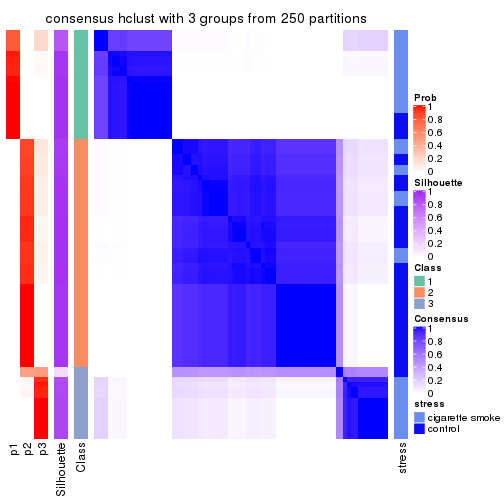
consensus_heatmap(res, k = 4)
consensus_heatmap(res, k = 5)
consensus_heatmap(res, k = 6)
Heatmaps for the membership of samples in all partitions to see how consistent they are:
membership_heatmap(res, k = 2)
membership_heatmap(res, k = 3)
membership_heatmap(res, k = 4)
membership_heatmap(res, k = 5)
membership_heatmap(res, k = 6)
As soon as we have had the classes for columns, we can look for signatures which are significantly different between classes which can be candidate marks for certain classes. Following are the heatmaps for signatures.
Signature heatmaps where rows are scaled:
get_signatures(res, k = 2)
get_signatures(res, k = 3)
get_signatures(res, k = 4)
get_signatures(res, k = 5)
get_signatures(res, k = 6)
Signature heatmaps where rows are not scaled:
get_signatures(res, k = 2, scale_rows = FALSE)
get_signatures(res, k = 3, scale_rows = FALSE)
get_signatures(res, k = 4, scale_rows = FALSE)
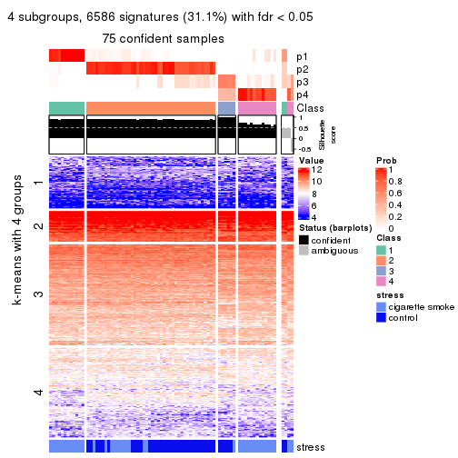
get_signatures(res, k = 5, scale_rows = FALSE)

get_signatures(res, k = 6, scale_rows = FALSE)
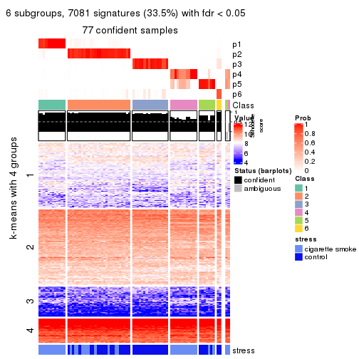
Compare the overlap of signatures from different k:
compare_signatures(res)
get_signature() returns a data frame invisibly. TO get the list of signatures, the function
call should be assigned to a variable explicitly. In following code, if plot argument is set
to FALSE, no heatmap is plotted while only the differential analysis is performed.
# code only for demonstration
tb = get_signature(res, k = ..., plot = FALSE)
An example of the output of tb is:
#> which_row fdr mean_1 mean_2 scaled_mean_1 scaled_mean_2 km
#> 1 38 0.042760348 8.373488 9.131774 -0.5533452 0.5164555 1
#> 2 40 0.018707592 7.106213 8.469186 -0.6173731 0.5762149 1
#> 3 55 0.019134737 10.221463 11.207825 -0.6159697 0.5749050 1
#> 4 59 0.006059896 5.921854 7.869574 -0.6899429 0.6439467 1
#> 5 60 0.018055526 8.928898 10.211722 -0.6204761 0.5791110 1
#> 6 98 0.009384629 15.714769 14.887706 0.6635654 -0.6193277 2
...
The columns in tb are:
which_row: row indices corresponding to the input matrix.fdr: FDR for the differential test. mean_x: The mean value in group x.scaled_mean_x: The mean value in group x after rows are scaled.km: Row groups if k-means clustering is applied to rows.UMAP plot which shows how samples are separated.
dimension_reduction(res, k = 2, method = "UMAP")
dimension_reduction(res, k = 3, method = "UMAP")
dimension_reduction(res, k = 4, method = "UMAP")
dimension_reduction(res, k = 5, method = "UMAP")
dimension_reduction(res, k = 6, method = "UMAP")
Following heatmap shows how subgroups are split when increasing k:
collect_classes(res)
Test correlation between subgroups and known annotations. If the known annotation is numeric, one-way ANOVA test is applied, and if the known annotation is discrete, chi-squared contingency table test is applied.
test_to_known_factors(res)
#> n stress(p) k
#> ATC:hclust 79 8.93e-03 2
#> ATC:hclust 77 5.70e-07 3
#> ATC:hclust 75 2.05e-08 4
#> ATC:hclust 75 1.27e-08 5
#> ATC:hclust 77 1.81e-08 6
If matrix rows can be associated to genes, consider to use functional_enrichment(res,
...) to perform function enrichment for the signature genes. See this vignette for more detailed explanations.
The object with results only for a single top-value method and a single partition method can be extracted as:
res = res_list["ATC", "kmeans"]
# you can also extract it by
# res = res_list["ATC:kmeans"]
A summary of res and all the functions that can be applied to it:
res
#> A 'ConsensusPartition' object with k = 2, 3, 4, 5, 6.
#> On a matrix with 21168 rows and 79 columns.
#> Top rows (1000, 2000, 3000, 4000, 5000) are extracted by 'ATC' method.
#> Subgroups are detected by 'kmeans' method.
#> Performed in total 1250 partitions by row resampling.
#> Best k for subgroups seems to be 2.
#>
#> Following methods can be applied to this 'ConsensusPartition' object:
#> [1] "cola_report" "collect_classes" "collect_plots"
#> [4] "collect_stats" "colnames" "compare_signatures"
#> [7] "consensus_heatmap" "dimension_reduction" "functional_enrichment"
#> [10] "get_anno_col" "get_anno" "get_classes"
#> [13] "get_consensus" "get_matrix" "get_membership"
#> [16] "get_param" "get_signatures" "get_stats"
#> [19] "is_best_k" "is_stable_k" "membership_heatmap"
#> [22] "ncol" "nrow" "plot_ecdf"
#> [25] "rownames" "select_partition_number" "show"
#> [28] "suggest_best_k" "test_to_known_factors"
collect_plots() function collects all the plots made from res for all k (number of partitions)
into one single page to provide an easy and fast comparison between different k.
collect_plots(res)
The plots are:
k and the heatmap of
predicted classes for each k.k.k.k.All the plots in panels can be made by individual functions and they are plotted later in this section.
select_partition_number() produces several plots showing different
statistics for choosing “optimized” k. There are following statistics:
k;k, the area increased is defined as \(A_k - A_{k-1}\).The detailed explanations of these statistics can be found in the cola vignette.
Generally speaking, lower PAC score, higher mean silhouette score or higher
concordance corresponds to better partition. Rand index and Jaccard index
measure how similar the current partition is compared to partition with k-1.
If they are too similar, we won't accept k is better than k-1.
select_partition_number(res)
The numeric values for all these statistics can be obtained by get_stats().
get_stats(res)
#> k 1-PAC mean_silhouette concordance area_increased Rand Jaccard
#> 2 2 1.000 0.982 0.992 0.4026 0.605 0.605
#> 3 3 0.733 0.858 0.898 0.5687 0.732 0.557
#> 4 4 0.797 0.901 0.898 0.1299 0.830 0.557
#> 5 5 0.876 0.802 0.892 0.0762 0.994 0.979
#> 6 6 0.821 0.787 0.862 0.0445 0.939 0.764
suggest_best_k() suggests the best \(k\) based on these statistics. The rules are as follows:
suggest_best_k(res)
#> [1] 2
Following shows the table of the partitions (You need to click the show/hide
code output link to see it). The membership matrix (columns with name p*)
is inferred by
clue::cl_consensus()
function with the SE method. Basically the value in the membership matrix
represents the probability to belong to a certain group. The finall class
label for an item is determined with the group with highest probability it
belongs to.
In get_classes() function, the entropy is calculated from the membership
matrix and the silhouette score is calculated from the consensus matrix.
cbind(get_classes(res, k = 2), get_membership(res, k = 2))
#> class entropy silhouette p1 p2
#> GSM464697 2 0.000 0.989 0.000 1.000
#> GSM464698 2 0.000 0.989 0.000 1.000
#> GSM464699 2 0.000 0.989 0.000 1.000
#> GSM464700 2 0.000 0.989 0.000 1.000
#> GSM464701 2 0.000 0.989 0.000 1.000
#> GSM464702 2 0.000 0.989 0.000 1.000
#> GSM464703 2 0.000 0.989 0.000 1.000
#> GSM464704 2 0.000 0.989 0.000 1.000
#> GSM464705 1 0.000 1.000 1.000 0.000
#> GSM464706 2 0.000 0.989 0.000 1.000
#> GSM464707 2 0.000 0.989 0.000 1.000
#> GSM464708 2 0.000 0.989 0.000 1.000
#> GSM464709 2 0.000 0.989 0.000 1.000
#> GSM464710 2 0.000 0.989 0.000 1.000
#> GSM464711 2 0.000 0.989 0.000 1.000
#> GSM464712 2 0.000 0.989 0.000 1.000
#> GSM464713 2 0.000 0.989 0.000 1.000
#> GSM464714 1 0.000 1.000 1.000 0.000
#> GSM464715 2 0.000 0.989 0.000 1.000
#> GSM464716 2 0.000 0.989 0.000 1.000
#> GSM464717 2 0.000 0.989 0.000 1.000
#> GSM464718 2 0.000 0.989 0.000 1.000
#> GSM464719 2 0.000 0.989 0.000 1.000
#> GSM464720 2 0.000 0.989 0.000 1.000
#> GSM464721 1 0.000 1.000 1.000 0.000
#> GSM464722 1 0.000 1.000 1.000 0.000
#> GSM464723 1 0.000 1.000 1.000 0.000
#> GSM464724 2 0.000 0.989 0.000 1.000
#> GSM464725 2 0.000 0.989 0.000 1.000
#> GSM464726 2 0.000 0.989 0.000 1.000
#> GSM464727 2 0.000 0.989 0.000 1.000
#> GSM464728 2 0.000 0.989 0.000 1.000
#> GSM464729 2 0.000 0.989 0.000 1.000
#> GSM464730 2 0.000 0.989 0.000 1.000
#> GSM464731 2 0.000 0.989 0.000 1.000
#> GSM464732 2 0.000 0.989 0.000 1.000
#> GSM464733 2 0.000 0.989 0.000 1.000
#> GSM464734 2 0.000 0.989 0.000 1.000
#> GSM464735 2 0.000 0.989 0.000 1.000
#> GSM464736 2 0.000 0.989 0.000 1.000
#> GSM464658 1 0.000 1.000 1.000 0.000
#> GSM464659 1 0.000 1.000 1.000 0.000
#> GSM464660 2 0.966 0.369 0.392 0.608
#> GSM464661 1 0.000 1.000 1.000 0.000
#> GSM464662 2 0.000 0.989 0.000 1.000
#> GSM464663 1 0.000 1.000 1.000 0.000
#> GSM464664 2 0.000 0.989 0.000 1.000
#> GSM464665 1 0.000 1.000 1.000 0.000
#> GSM464666 1 0.000 1.000 1.000 0.000
#> GSM464667 1 0.000 1.000 1.000 0.000
#> GSM464668 1 0.000 1.000 1.000 0.000
#> GSM464669 2 0.224 0.959 0.036 0.964
#> GSM464670 1 0.000 1.000 1.000 0.000
#> GSM464671 2 0.373 0.922 0.072 0.928
#> GSM464672 2 0.224 0.959 0.036 0.964
#> GSM464673 1 0.000 1.000 1.000 0.000
#> GSM464674 1 0.000 1.000 1.000 0.000
#> GSM464675 2 0.000 0.989 0.000 1.000
#> GSM464676 2 0.224 0.959 0.036 0.964
#> GSM464677 2 0.000 0.989 0.000 1.000
#> GSM464678 2 0.224 0.959 0.036 0.964
#> GSM464679 2 0.000 0.989 0.000 1.000
#> GSM464680 2 0.000 0.989 0.000 1.000
#> GSM464681 2 0.000 0.989 0.000 1.000
#> GSM464682 2 0.000 0.989 0.000 1.000
#> GSM464683 2 0.000 0.989 0.000 1.000
#> GSM464684 2 0.000 0.989 0.000 1.000
#> GSM464685 2 0.000 0.989 0.000 1.000
#> GSM464686 2 0.000 0.989 0.000 1.000
#> GSM464687 2 0.000 0.989 0.000 1.000
#> GSM464688 2 0.000 0.989 0.000 1.000
#> GSM464689 2 0.000 0.989 0.000 1.000
#> GSM464690 2 0.000 0.989 0.000 1.000
#> GSM464691 1 0.000 1.000 1.000 0.000
#> GSM464692 2 0.000 0.989 0.000 1.000
#> GSM464693 1 0.000 1.000 1.000 0.000
#> GSM464694 1 0.000 1.000 1.000 0.000
#> GSM464695 1 0.000 1.000 1.000 0.000
#> GSM464696 1 0.000 1.000 1.000 0.000
cbind(get_classes(res, k = 3), get_membership(res, k = 3))
#> class entropy silhouette p1 p2 p3
#> GSM464697 2 0.0000 0.944 0.000 1.000 0.000
#> GSM464698 2 0.5835 0.217 0.000 0.660 0.340
#> GSM464699 2 0.0000 0.944 0.000 1.000 0.000
#> GSM464700 3 0.5760 0.793 0.000 0.328 0.672
#> GSM464701 2 0.0000 0.944 0.000 1.000 0.000
#> GSM464702 2 0.0000 0.944 0.000 1.000 0.000
#> GSM464703 2 0.0000 0.944 0.000 1.000 0.000
#> GSM464704 2 0.0000 0.944 0.000 1.000 0.000
#> GSM464705 1 0.0000 0.996 1.000 0.000 0.000
#> GSM464706 3 0.5760 0.793 0.000 0.328 0.672
#> GSM464707 2 0.5621 0.336 0.000 0.692 0.308
#> GSM464708 2 0.0000 0.944 0.000 1.000 0.000
#> GSM464709 2 0.0592 0.937 0.000 0.988 0.012
#> GSM464710 2 0.0000 0.944 0.000 1.000 0.000
#> GSM464711 2 0.0000 0.944 0.000 1.000 0.000
#> GSM464712 3 0.5760 0.793 0.000 0.328 0.672
#> GSM464713 2 0.0000 0.944 0.000 1.000 0.000
#> GSM464714 1 0.0000 0.996 1.000 0.000 0.000
#> GSM464715 2 0.0000 0.944 0.000 1.000 0.000
#> GSM464716 2 0.3116 0.818 0.000 0.892 0.108
#> GSM464717 3 0.5760 0.793 0.000 0.328 0.672
#> GSM464718 3 0.5760 0.793 0.000 0.328 0.672
#> GSM464719 3 0.5760 0.793 0.000 0.328 0.672
#> GSM464720 3 0.5760 0.793 0.000 0.328 0.672
#> GSM464721 1 0.0000 0.996 1.000 0.000 0.000
#> GSM464722 1 0.0000 0.996 1.000 0.000 0.000
#> GSM464723 1 0.0000 0.996 1.000 0.000 0.000
#> GSM464724 2 0.0592 0.937 0.000 0.988 0.012
#> GSM464725 2 0.0000 0.944 0.000 1.000 0.000
#> GSM464726 2 0.0000 0.944 0.000 1.000 0.000
#> GSM464727 3 0.5760 0.793 0.000 0.328 0.672
#> GSM464728 2 0.0000 0.944 0.000 1.000 0.000
#> GSM464729 2 0.0000 0.944 0.000 1.000 0.000
#> GSM464730 2 0.0000 0.944 0.000 1.000 0.000
#> GSM464731 2 0.0000 0.944 0.000 1.000 0.000
#> GSM464732 3 0.6252 0.577 0.000 0.444 0.556
#> GSM464733 2 0.0592 0.937 0.000 0.988 0.012
#> GSM464734 2 0.0592 0.937 0.000 0.988 0.012
#> GSM464735 2 0.3879 0.747 0.000 0.848 0.152
#> GSM464736 3 0.5760 0.793 0.000 0.328 0.672
#> GSM464658 1 0.0000 0.996 1.000 0.000 0.000
#> GSM464659 1 0.0000 0.996 1.000 0.000 0.000
#> GSM464660 3 0.0000 0.716 0.000 0.000 1.000
#> GSM464661 1 0.0000 0.996 1.000 0.000 0.000
#> GSM464662 3 0.5760 0.793 0.000 0.328 0.672
#> GSM464663 1 0.0000 0.996 1.000 0.000 0.000
#> GSM464664 3 0.5760 0.793 0.000 0.328 0.672
#> GSM464665 1 0.0000 0.996 1.000 0.000 0.000
#> GSM464666 1 0.0000 0.996 1.000 0.000 0.000
#> GSM464667 1 0.0000 0.996 1.000 0.000 0.000
#> GSM464668 1 0.0000 0.996 1.000 0.000 0.000
#> GSM464669 3 0.0000 0.716 0.000 0.000 1.000
#> GSM464670 1 0.0000 0.996 1.000 0.000 0.000
#> GSM464671 3 0.0000 0.716 0.000 0.000 1.000
#> GSM464672 3 0.0000 0.716 0.000 0.000 1.000
#> GSM464673 1 0.0000 0.996 1.000 0.000 0.000
#> GSM464674 1 0.2796 0.919 0.908 0.000 0.092
#> GSM464675 3 0.0000 0.716 0.000 0.000 1.000
#> GSM464676 3 0.0000 0.716 0.000 0.000 1.000
#> GSM464677 3 0.5760 0.793 0.000 0.328 0.672
#> GSM464678 3 0.0000 0.716 0.000 0.000 1.000
#> GSM464679 3 0.5760 0.793 0.000 0.328 0.672
#> GSM464680 3 0.5760 0.793 0.000 0.328 0.672
#> GSM464681 3 0.0000 0.716 0.000 0.000 1.000
#> GSM464682 3 0.5760 0.793 0.000 0.328 0.672
#> GSM464683 3 0.5760 0.793 0.000 0.328 0.672
#> GSM464684 3 0.5760 0.793 0.000 0.328 0.672
#> GSM464685 3 0.5760 0.793 0.000 0.328 0.672
#> GSM464686 3 0.5760 0.793 0.000 0.328 0.672
#> GSM464687 3 0.5760 0.793 0.000 0.328 0.672
#> GSM464688 3 0.0000 0.716 0.000 0.000 1.000
#> GSM464689 3 0.0000 0.716 0.000 0.000 1.000
#> GSM464690 3 0.0000 0.716 0.000 0.000 1.000
#> GSM464691 1 0.0000 0.996 1.000 0.000 0.000
#> GSM464692 3 0.0000 0.716 0.000 0.000 1.000
#> GSM464693 1 0.0000 0.996 1.000 0.000 0.000
#> GSM464694 1 0.0000 0.996 1.000 0.000 0.000
#> GSM464695 1 0.0000 0.996 1.000 0.000 0.000
#> GSM464696 1 0.0000 0.996 1.000 0.000 0.000
cbind(get_classes(res, k = 4), get_membership(res, k = 4))
#> class entropy silhouette p1 p2 p3 p4
#> GSM464697 3 0.0000 0.964 0.000 0.000 1.000 0.000
#> GSM464698 2 0.5690 0.840 0.096 0.708 0.196 0.000
#> GSM464699 3 0.0000 0.964 0.000 0.000 1.000 0.000
#> GSM464700 2 0.5740 0.921 0.208 0.700 0.092 0.000
#> GSM464701 3 0.0000 0.964 0.000 0.000 1.000 0.000
#> GSM464702 3 0.0000 0.964 0.000 0.000 1.000 0.000
#> GSM464703 3 0.0469 0.959 0.000 0.012 0.988 0.000
#> GSM464704 3 0.0000 0.964 0.000 0.000 1.000 0.000
#> GSM464705 4 0.4594 0.798 0.008 0.280 0.000 0.712
#> GSM464706 2 0.5740 0.921 0.208 0.700 0.092 0.000
#> GSM464707 2 0.5609 0.830 0.088 0.712 0.200 0.000
#> GSM464708 3 0.0000 0.964 0.000 0.000 1.000 0.000
#> GSM464709 2 0.4746 0.588 0.000 0.632 0.368 0.000
#> GSM464710 3 0.0000 0.964 0.000 0.000 1.000 0.000
#> GSM464711 3 0.0188 0.961 0.004 0.000 0.996 0.000
#> GSM464712 2 0.5740 0.921 0.208 0.700 0.092 0.000
#> GSM464713 3 0.0000 0.964 0.000 0.000 1.000 0.000
#> GSM464714 4 0.4594 0.798 0.008 0.280 0.000 0.712
#> GSM464715 3 0.0000 0.964 0.000 0.000 1.000 0.000
#> GSM464716 2 0.5172 0.759 0.036 0.704 0.260 0.000
#> GSM464717 2 0.5740 0.921 0.208 0.700 0.092 0.000
#> GSM464718 2 0.5740 0.921 0.208 0.700 0.092 0.000
#> GSM464719 2 0.5740 0.921 0.208 0.700 0.092 0.000
#> GSM464720 2 0.5740 0.921 0.208 0.700 0.092 0.000
#> GSM464721 4 0.3052 0.878 0.004 0.136 0.000 0.860
#> GSM464722 4 0.4621 0.795 0.008 0.284 0.000 0.708
#> GSM464723 4 0.3052 0.878 0.004 0.136 0.000 0.860
#> GSM464724 2 0.4746 0.588 0.000 0.632 0.368 0.000
#> GSM464725 3 0.0592 0.958 0.000 0.016 0.984 0.000
#> GSM464726 3 0.0000 0.964 0.000 0.000 1.000 0.000
#> GSM464727 2 0.5705 0.919 0.204 0.704 0.092 0.000
#> GSM464728 3 0.0592 0.958 0.000 0.016 0.984 0.000
#> GSM464729 3 0.0000 0.964 0.000 0.000 1.000 0.000
#> GSM464730 3 0.0336 0.961 0.000 0.008 0.992 0.000
#> GSM464731 3 0.0592 0.958 0.000 0.016 0.984 0.000
#> GSM464732 2 0.5783 0.898 0.172 0.708 0.120 0.000
#> GSM464733 2 0.4431 0.691 0.000 0.696 0.304 0.000
#> GSM464734 2 0.4454 0.689 0.000 0.692 0.308 0.000
#> GSM464735 3 0.5957 -0.147 0.040 0.420 0.540 0.000
#> GSM464736 2 0.5740 0.921 0.208 0.700 0.092 0.000
#> GSM464658 4 0.0376 0.929 0.004 0.004 0.000 0.992
#> GSM464659 4 0.0000 0.931 0.000 0.000 0.000 1.000
#> GSM464660 1 0.0657 0.991 0.984 0.012 0.000 0.004
#> GSM464661 4 0.4594 0.798 0.008 0.280 0.000 0.712
#> GSM464662 2 0.5705 0.919 0.204 0.704 0.092 0.000
#> GSM464663 4 0.0188 0.930 0.004 0.000 0.000 0.996
#> GSM464664 2 0.5740 0.921 0.208 0.700 0.092 0.000
#> GSM464665 4 0.0000 0.931 0.000 0.000 0.000 1.000
#> GSM464666 4 0.0000 0.931 0.000 0.000 0.000 1.000
#> GSM464667 4 0.0188 0.930 0.004 0.000 0.000 0.996
#> GSM464668 4 0.0000 0.931 0.000 0.000 0.000 1.000
#> GSM464669 1 0.0657 0.995 0.984 0.012 0.000 0.004
#> GSM464670 4 0.0000 0.931 0.000 0.000 0.000 1.000
#> GSM464671 1 0.0657 0.991 0.984 0.012 0.000 0.004
#> GSM464672 1 0.0657 0.995 0.984 0.012 0.000 0.004
#> GSM464673 4 0.0376 0.929 0.004 0.004 0.000 0.992
#> GSM464674 4 0.3791 0.734 0.200 0.004 0.000 0.796
#> GSM464675 1 0.0592 0.995 0.984 0.016 0.000 0.000
#> GSM464676 1 0.0779 0.994 0.980 0.016 0.000 0.004
#> GSM464677 2 0.5740 0.921 0.208 0.700 0.092 0.000
#> GSM464678 1 0.0779 0.994 0.980 0.016 0.000 0.004
#> GSM464679 2 0.5740 0.921 0.208 0.700 0.092 0.000
#> GSM464680 2 0.5740 0.921 0.208 0.700 0.092 0.000
#> GSM464681 1 0.0592 0.995 0.984 0.016 0.000 0.000
#> GSM464682 2 0.5740 0.921 0.208 0.700 0.092 0.000
#> GSM464683 2 0.5740 0.921 0.208 0.700 0.092 0.000
#> GSM464684 2 0.5740 0.921 0.208 0.700 0.092 0.000
#> GSM464685 2 0.5740 0.921 0.208 0.700 0.092 0.000
#> GSM464686 2 0.5740 0.921 0.208 0.700 0.092 0.000
#> GSM464687 2 0.5740 0.921 0.208 0.700 0.092 0.000
#> GSM464688 1 0.0592 0.995 0.984 0.016 0.000 0.000
#> GSM464689 1 0.0707 0.994 0.980 0.020 0.000 0.000
#> GSM464690 1 0.0469 0.993 0.988 0.012 0.000 0.000
#> GSM464691 4 0.0376 0.929 0.004 0.004 0.000 0.992
#> GSM464692 1 0.0592 0.995 0.984 0.016 0.000 0.000
#> GSM464693 4 0.0188 0.930 0.004 0.000 0.000 0.996
#> GSM464694 4 0.0000 0.931 0.000 0.000 0.000 1.000
#> GSM464695 4 0.0000 0.931 0.000 0.000 0.000 1.000
#> GSM464696 4 0.0188 0.930 0.004 0.000 0.000 0.996
cbind(get_classes(res, k = 5), get_membership(res, k = 5))
#> class entropy silhouette p1 p2 p3 p4 p5
#> GSM464697 3 0.0865 0.940 0.000 0.024 0.972 0.000 0.004
#> GSM464698 2 0.2731 0.738 0.004 0.876 0.016 0.000 0.104
#> GSM464699 3 0.1579 0.933 0.000 0.024 0.944 0.000 0.032
#> GSM464700 2 0.0963 0.815 0.000 0.964 0.000 0.000 0.036
#> GSM464701 3 0.0992 0.940 0.000 0.024 0.968 0.000 0.008
#> GSM464702 3 0.1965 0.926 0.000 0.024 0.924 0.000 0.052
#> GSM464703 3 0.2251 0.920 0.008 0.024 0.916 0.000 0.052
#> GSM464704 3 0.0992 0.940 0.000 0.024 0.968 0.000 0.008
#> GSM464705 4 0.4297 0.603 0.000 0.000 0.000 0.528 0.472
#> GSM464706 2 0.0290 0.824 0.000 0.992 0.000 0.000 0.008
#> GSM464707 2 0.2804 0.741 0.012 0.880 0.016 0.000 0.092
#> GSM464708 3 0.1661 0.932 0.000 0.024 0.940 0.000 0.036
#> GSM464709 2 0.5274 0.273 0.008 0.664 0.072 0.000 0.256
#> GSM464710 3 0.1893 0.928 0.000 0.024 0.928 0.000 0.048
#> GSM464711 3 0.4000 0.679 0.000 0.024 0.748 0.000 0.228
#> GSM464712 2 0.0880 0.815 0.000 0.968 0.000 0.000 0.032
#> GSM464713 3 0.0992 0.940 0.000 0.024 0.968 0.000 0.008
#> GSM464714 4 0.4297 0.603 0.000 0.000 0.000 0.528 0.472
#> GSM464715 3 0.1965 0.926 0.000 0.024 0.924 0.000 0.052
#> GSM464716 2 0.4441 0.461 0.008 0.716 0.024 0.000 0.252
#> GSM464717 2 0.0290 0.824 0.000 0.992 0.000 0.000 0.008
#> GSM464718 2 0.0162 0.824 0.000 0.996 0.000 0.000 0.004
#> GSM464719 2 0.0290 0.824 0.000 0.992 0.000 0.000 0.008
#> GSM464720 2 0.1908 0.765 0.000 0.908 0.000 0.000 0.092
#> GSM464721 4 0.4394 0.741 0.016 0.000 0.012 0.716 0.256
#> GSM464722 4 0.4304 0.592 0.000 0.000 0.000 0.516 0.484
#> GSM464723 4 0.4369 0.743 0.016 0.000 0.012 0.720 0.252
#> GSM464724 2 0.5274 0.273 0.008 0.664 0.072 0.000 0.256
#> GSM464725 3 0.2456 0.912 0.008 0.024 0.904 0.000 0.064
#> GSM464726 3 0.0865 0.940 0.000 0.024 0.972 0.000 0.004
#> GSM464727 2 0.1043 0.812 0.000 0.960 0.000 0.000 0.040
#> GSM464728 3 0.2456 0.912 0.008 0.024 0.904 0.000 0.064
#> GSM464729 3 0.0992 0.940 0.000 0.024 0.968 0.000 0.008
#> GSM464730 3 0.2178 0.922 0.008 0.024 0.920 0.000 0.048
#> GSM464731 3 0.2456 0.912 0.008 0.024 0.904 0.000 0.064
#> GSM464732 2 0.1704 0.792 0.004 0.928 0.000 0.000 0.068
#> GSM464733 2 0.4523 0.444 0.008 0.712 0.028 0.000 0.252
#> GSM464734 2 0.4548 0.433 0.008 0.708 0.028 0.000 0.256
#> GSM464735 5 0.6746 0.000 0.000 0.360 0.260 0.000 0.380
#> GSM464736 2 0.1197 0.805 0.000 0.952 0.000 0.000 0.048
#> GSM464658 4 0.1412 0.848 0.036 0.000 0.004 0.952 0.008
#> GSM464659 4 0.0000 0.868 0.000 0.000 0.000 1.000 0.000
#> GSM464660 1 0.1168 0.963 0.960 0.032 0.000 0.000 0.008
#> GSM464661 4 0.5151 0.609 0.020 0.000 0.012 0.532 0.436
#> GSM464662 2 0.0963 0.813 0.000 0.964 0.000 0.000 0.036
#> GSM464663 4 0.0000 0.868 0.000 0.000 0.000 1.000 0.000
#> GSM464664 2 0.0162 0.824 0.000 0.996 0.000 0.000 0.004
#> GSM464665 4 0.0000 0.868 0.000 0.000 0.000 1.000 0.000
#> GSM464666 4 0.0000 0.868 0.000 0.000 0.000 1.000 0.000
#> GSM464667 4 0.0000 0.868 0.000 0.000 0.000 1.000 0.000
#> GSM464668 4 0.0000 0.868 0.000 0.000 0.000 1.000 0.000
#> GSM464669 1 0.1386 0.960 0.952 0.032 0.000 0.000 0.016
#> GSM464670 4 0.0000 0.868 0.000 0.000 0.000 1.000 0.000
#> GSM464671 1 0.1168 0.963 0.960 0.032 0.000 0.000 0.008
#> GSM464672 1 0.1386 0.960 0.952 0.032 0.000 0.000 0.016
#> GSM464673 4 0.1538 0.847 0.036 0.000 0.008 0.948 0.008
#> GSM464674 4 0.4185 0.643 0.216 0.000 0.008 0.752 0.024
#> GSM464675 1 0.1547 0.959 0.948 0.032 0.004 0.000 0.016
#> GSM464676 1 0.1168 0.963 0.960 0.032 0.000 0.000 0.008
#> GSM464677 2 0.0162 0.824 0.000 0.996 0.000 0.000 0.004
#> GSM464678 1 0.1168 0.963 0.960 0.032 0.000 0.000 0.008
#> GSM464679 2 0.0794 0.817 0.000 0.972 0.000 0.000 0.028
#> GSM464680 2 0.0290 0.824 0.000 0.992 0.000 0.000 0.008
#> GSM464681 1 0.1547 0.959 0.948 0.032 0.004 0.000 0.016
#> GSM464682 2 0.2648 0.683 0.000 0.848 0.000 0.000 0.152
#> GSM464683 2 0.2424 0.713 0.000 0.868 0.000 0.000 0.132
#> GSM464684 2 0.2813 0.655 0.000 0.832 0.000 0.000 0.168
#> GSM464685 2 0.0510 0.822 0.000 0.984 0.000 0.000 0.016
#> GSM464686 2 0.2813 0.655 0.000 0.832 0.000 0.000 0.168
#> GSM464687 2 0.1410 0.809 0.000 0.940 0.000 0.000 0.060
#> GSM464688 1 0.1914 0.952 0.932 0.032 0.004 0.000 0.032
#> GSM464689 1 0.1329 0.963 0.956 0.032 0.004 0.000 0.008
#> GSM464690 1 0.3812 0.855 0.796 0.032 0.004 0.000 0.168
#> GSM464691 4 0.1948 0.839 0.036 0.000 0.008 0.932 0.024
#> GSM464692 1 0.3567 0.868 0.820 0.032 0.004 0.000 0.144
#> GSM464693 4 0.0000 0.868 0.000 0.000 0.000 1.000 0.000
#> GSM464694 4 0.0451 0.865 0.004 0.000 0.008 0.988 0.000
#> GSM464695 4 0.0912 0.862 0.016 0.000 0.012 0.972 0.000
#> GSM464696 4 0.0000 0.868 0.000 0.000 0.000 1.000 0.000
cbind(get_classes(res, k = 6), get_membership(res, k = 6))
#> class entropy silhouette p1 p2 p3 p4 p5 p6
#> GSM464697 3 0.0260 0.902 0.000 0.000 0.992 0.000 0.000 0.008
#> GSM464698 2 0.3570 0.489 0.000 0.752 0.004 0.000 0.016 0.228
#> GSM464699 3 0.2003 0.893 0.000 0.000 0.912 0.000 0.044 0.044
#> GSM464700 2 0.0993 0.821 0.000 0.964 0.000 0.000 0.012 0.024
#> GSM464701 3 0.0622 0.902 0.000 0.000 0.980 0.000 0.012 0.008
#> GSM464702 3 0.3225 0.856 0.000 0.000 0.828 0.000 0.080 0.092
#> GSM464703 3 0.2531 0.875 0.000 0.000 0.856 0.000 0.012 0.132
#> GSM464704 3 0.0508 0.901 0.000 0.000 0.984 0.000 0.004 0.012
#> GSM464705 5 0.3371 0.970 0.000 0.000 0.000 0.292 0.708 0.000
#> GSM464706 2 0.0692 0.823 0.000 0.976 0.000 0.000 0.004 0.020
#> GSM464707 2 0.3812 0.252 0.000 0.712 0.000 0.000 0.024 0.264
#> GSM464708 3 0.2136 0.889 0.000 0.000 0.904 0.000 0.048 0.048
#> GSM464709 6 0.4439 0.744 0.000 0.432 0.028 0.000 0.000 0.540
#> GSM464710 3 0.2801 0.873 0.000 0.000 0.860 0.000 0.068 0.072
#> GSM464711 3 0.5242 0.462 0.000 0.000 0.516 0.000 0.100 0.384
#> GSM464712 2 0.1462 0.795 0.000 0.936 0.000 0.000 0.008 0.056
#> GSM464713 3 0.0717 0.902 0.000 0.000 0.976 0.000 0.016 0.008
#> GSM464714 5 0.3371 0.970 0.000 0.000 0.000 0.292 0.708 0.000
#> GSM464715 3 0.3225 0.856 0.000 0.000 0.828 0.000 0.080 0.092
#> GSM464716 6 0.4323 0.697 0.000 0.476 0.008 0.000 0.008 0.508
#> GSM464717 2 0.0891 0.822 0.000 0.968 0.000 0.000 0.008 0.024
#> GSM464718 2 0.0622 0.820 0.000 0.980 0.000 0.000 0.012 0.008
#> GSM464719 2 0.0891 0.822 0.000 0.968 0.000 0.000 0.008 0.024
#> GSM464720 2 0.1895 0.785 0.000 0.912 0.000 0.000 0.016 0.072
#> GSM464721 4 0.4420 -0.146 0.000 0.000 0.000 0.604 0.360 0.036
#> GSM464722 5 0.3288 0.956 0.000 0.000 0.000 0.276 0.724 0.000
#> GSM464723 4 0.4408 -0.128 0.000 0.000 0.000 0.608 0.356 0.036
#> GSM464724 6 0.4417 0.737 0.000 0.416 0.028 0.000 0.000 0.556
#> GSM464725 3 0.2282 0.870 0.000 0.000 0.888 0.000 0.024 0.088
#> GSM464726 3 0.1124 0.902 0.000 0.000 0.956 0.000 0.008 0.036
#> GSM464727 2 0.1951 0.757 0.000 0.908 0.000 0.000 0.016 0.076
#> GSM464728 3 0.2282 0.870 0.000 0.000 0.888 0.000 0.024 0.088
#> GSM464729 3 0.0622 0.901 0.000 0.000 0.980 0.000 0.008 0.012
#> GSM464730 3 0.2302 0.881 0.000 0.000 0.872 0.000 0.008 0.120
#> GSM464731 3 0.2282 0.870 0.000 0.000 0.888 0.000 0.024 0.088
#> GSM464732 2 0.3003 0.600 0.000 0.812 0.000 0.000 0.016 0.172
#> GSM464733 6 0.4411 0.704 0.000 0.476 0.008 0.000 0.012 0.504
#> GSM464734 6 0.4076 0.735 0.000 0.452 0.008 0.000 0.000 0.540
#> GSM464735 6 0.7128 0.218 0.000 0.156 0.188 0.000 0.192 0.464
#> GSM464736 2 0.1168 0.817 0.000 0.956 0.000 0.000 0.016 0.028
#> GSM464658 4 0.2209 0.819 0.024 0.000 0.000 0.900 0.004 0.072
#> GSM464659 4 0.0000 0.873 0.000 0.000 0.000 1.000 0.000 0.000
#> GSM464660 1 0.0436 0.937 0.988 0.004 0.000 0.000 0.004 0.004
#> GSM464661 5 0.4452 0.930 0.004 0.000 0.000 0.312 0.644 0.040
#> GSM464662 2 0.1779 0.770 0.000 0.920 0.000 0.000 0.016 0.064
#> GSM464663 4 0.0458 0.871 0.000 0.000 0.000 0.984 0.000 0.016
#> GSM464664 2 0.0820 0.824 0.000 0.972 0.000 0.000 0.012 0.016
#> GSM464665 4 0.0146 0.872 0.000 0.000 0.000 0.996 0.000 0.004
#> GSM464666 4 0.0146 0.872 0.000 0.000 0.000 0.996 0.000 0.004
#> GSM464667 4 0.0260 0.873 0.000 0.000 0.000 0.992 0.000 0.008
#> GSM464668 4 0.0000 0.873 0.000 0.000 0.000 1.000 0.000 0.000
#> GSM464669 1 0.1313 0.926 0.952 0.004 0.000 0.000 0.016 0.028
#> GSM464670 4 0.0000 0.873 0.000 0.000 0.000 1.000 0.000 0.000
#> GSM464671 1 0.0436 0.937 0.988 0.004 0.000 0.000 0.004 0.004
#> GSM464672 1 0.1313 0.926 0.952 0.004 0.000 0.000 0.016 0.028
#> GSM464673 4 0.2278 0.813 0.044 0.000 0.000 0.900 0.004 0.052
#> GSM464674 4 0.3897 0.682 0.100 0.000 0.000 0.796 0.020 0.084
#> GSM464675 1 0.0767 0.936 0.976 0.004 0.000 0.000 0.012 0.008
#> GSM464676 1 0.0436 0.937 0.988 0.004 0.000 0.000 0.004 0.004
#> GSM464677 2 0.0405 0.824 0.000 0.988 0.000 0.000 0.004 0.008
#> GSM464678 1 0.0436 0.937 0.988 0.004 0.000 0.000 0.004 0.004
#> GSM464679 2 0.1074 0.821 0.000 0.960 0.000 0.000 0.012 0.028
#> GSM464680 2 0.0692 0.823 0.000 0.976 0.000 0.000 0.004 0.020
#> GSM464681 1 0.0767 0.936 0.976 0.004 0.000 0.000 0.012 0.008
#> GSM464682 2 0.3784 0.641 0.000 0.776 0.000 0.000 0.080 0.144
#> GSM464683 2 0.3285 0.704 0.000 0.820 0.000 0.000 0.064 0.116
#> GSM464684 2 0.4456 0.526 0.000 0.708 0.000 0.000 0.112 0.180
#> GSM464685 2 0.0891 0.824 0.000 0.968 0.000 0.000 0.008 0.024
#> GSM464686 2 0.4414 0.533 0.000 0.712 0.000 0.000 0.108 0.180
#> GSM464687 2 0.2491 0.759 0.000 0.868 0.000 0.000 0.020 0.112
#> GSM464688 1 0.1707 0.917 0.928 0.004 0.000 0.000 0.056 0.012
#> GSM464689 1 0.1053 0.936 0.964 0.004 0.000 0.000 0.020 0.012
#> GSM464690 1 0.4905 0.734 0.680 0.008 0.000 0.000 0.140 0.172
#> GSM464691 4 0.2575 0.804 0.020 0.000 0.000 0.884 0.020 0.076
#> GSM464692 1 0.4251 0.784 0.752 0.008 0.000 0.000 0.124 0.116
#> GSM464693 4 0.0458 0.871 0.000 0.000 0.000 0.984 0.000 0.016
#> GSM464694 4 0.0458 0.866 0.000 0.000 0.000 0.984 0.000 0.016
#> GSM464695 4 0.0865 0.851 0.000 0.000 0.000 0.964 0.000 0.036
#> GSM464696 4 0.0260 0.873 0.000 0.000 0.000 0.992 0.000 0.008
Heatmaps for the consensus matrix. It visualizes the probability of two samples to be in a same group.
consensus_heatmap(res, k = 2)
consensus_heatmap(res, k = 3)
consensus_heatmap(res, k = 4)
consensus_heatmap(res, k = 5)
consensus_heatmap(res, k = 6)
Heatmaps for the membership of samples in all partitions to see how consistent they are:
membership_heatmap(res, k = 2)
membership_heatmap(res, k = 3)

membership_heatmap(res, k = 4)
membership_heatmap(res, k = 5)
membership_heatmap(res, k = 6)
As soon as we have had the classes for columns, we can look for signatures which are significantly different between classes which can be candidate marks for certain classes. Following are the heatmaps for signatures.
Signature heatmaps where rows are scaled:
get_signatures(res, k = 2)
get_signatures(res, k = 3)

get_signatures(res, k = 4)
get_signatures(res, k = 5)
get_signatures(res, k = 6)
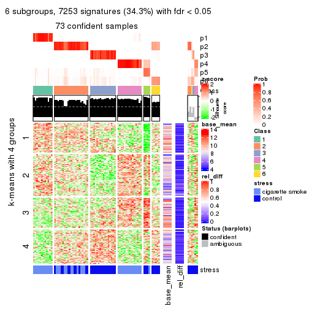
Signature heatmaps where rows are not scaled:
get_signatures(res, k = 2, scale_rows = FALSE)
get_signatures(res, k = 3, scale_rows = FALSE)
get_signatures(res, k = 4, scale_rows = FALSE)
get_signatures(res, k = 5, scale_rows = FALSE)
get_signatures(res, k = 6, scale_rows = FALSE)
Compare the overlap of signatures from different k:
compare_signatures(res)
get_signature() returns a data frame invisibly. TO get the list of signatures, the function
call should be assigned to a variable explicitly. In following code, if plot argument is set
to FALSE, no heatmap is plotted while only the differential analysis is performed.
# code only for demonstration
tb = get_signature(res, k = ..., plot = FALSE)
An example of the output of tb is:
#> which_row fdr mean_1 mean_2 scaled_mean_1 scaled_mean_2 km
#> 1 38 0.042760348 8.373488 9.131774 -0.5533452 0.5164555 1
#> 2 40 0.018707592 7.106213 8.469186 -0.6173731 0.5762149 1
#> 3 55 0.019134737 10.221463 11.207825 -0.6159697 0.5749050 1
#> 4 59 0.006059896 5.921854 7.869574 -0.6899429 0.6439467 1
#> 5 60 0.018055526 8.928898 10.211722 -0.6204761 0.5791110 1
#> 6 98 0.009384629 15.714769 14.887706 0.6635654 -0.6193277 2
...
The columns in tb are:
which_row: row indices corresponding to the input matrix.fdr: FDR for the differential test. mean_x: The mean value in group x.scaled_mean_x: The mean value in group x after rows are scaled.km: Row groups if k-means clustering is applied to rows.UMAP plot which shows how samples are separated.
dimension_reduction(res, k = 2, method = "UMAP")
dimension_reduction(res, k = 3, method = "UMAP")

dimension_reduction(res, k = 4, method = "UMAP")
dimension_reduction(res, k = 5, method = "UMAP")
dimension_reduction(res, k = 6, method = "UMAP")
Following heatmap shows how subgroups are split when increasing k:
collect_classes(res)
Test correlation between subgroups and known annotations. If the known annotation is numeric, one-way ANOVA test is applied, and if the known annotation is discrete, chi-squared contingency table test is applied.
test_to_known_factors(res)
#> n stress(p) k
#> ATC:kmeans 78 7.12e-03 2
#> ATC:kmeans 77 4.41e-08 3
#> ATC:kmeans 78 7.32e-08 4
#> ATC:kmeans 73 1.46e-07 5
#> ATC:kmeans 73 2.29e-09 6
If matrix rows can be associated to genes, consider to use functional_enrichment(res,
...) to perform function enrichment for the signature genes. See this vignette for more detailed explanations.
The object with results only for a single top-value method and a single partition method can be extracted as:
res = res_list["ATC", "skmeans"]
# you can also extract it by
# res = res_list["ATC:skmeans"]
A summary of res and all the functions that can be applied to it:
res
#> A 'ConsensusPartition' object with k = 2, 3, 4, 5, 6.
#> On a matrix with 21168 rows and 79 columns.
#> Top rows (1000, 2000, 3000, 4000, 5000) are extracted by 'ATC' method.
#> Subgroups are detected by 'skmeans' method.
#> Performed in total 1250 partitions by row resampling.
#> Best k for subgroups seems to be 4.
#>
#> Following methods can be applied to this 'ConsensusPartition' object:
#> [1] "cola_report" "collect_classes" "collect_plots"
#> [4] "collect_stats" "colnames" "compare_signatures"
#> [7] "consensus_heatmap" "dimension_reduction" "functional_enrichment"
#> [10] "get_anno_col" "get_anno" "get_classes"
#> [13] "get_consensus" "get_matrix" "get_membership"
#> [16] "get_param" "get_signatures" "get_stats"
#> [19] "is_best_k" "is_stable_k" "membership_heatmap"
#> [22] "ncol" "nrow" "plot_ecdf"
#> [25] "rownames" "select_partition_number" "show"
#> [28] "suggest_best_k" "test_to_known_factors"
collect_plots() function collects all the plots made from res for all k (number of partitions)
into one single page to provide an easy and fast comparison between different k.
collect_plots(res)
The plots are:
k and the heatmap of
predicted classes for each k.k.k.k.All the plots in panels can be made by individual functions and they are plotted later in this section.
select_partition_number() produces several plots showing different
statistics for choosing “optimized” k. There are following statistics:
k;k, the area increased is defined as \(A_k - A_{k-1}\).The detailed explanations of these statistics can be found in the cola vignette.
Generally speaking, lower PAC score, higher mean silhouette score or higher
concordance corresponds to better partition. Rand index and Jaccard index
measure how similar the current partition is compared to partition with k-1.
If they are too similar, we won't accept k is better than k-1.
select_partition_number(res)
The numeric values for all these statistics can be obtained by get_stats().
get_stats(res)
#> k 1-PAC mean_silhouette concordance area_increased Rand Jaccard
#> 2 2 1.000 0.978 0.990 0.4815 0.517 0.517
#> 3 3 0.999 0.973 0.987 0.3894 0.686 0.460
#> 4 4 1.000 0.984 0.993 0.1154 0.884 0.670
#> 5 5 0.892 0.803 0.908 0.0530 0.955 0.827
#> 6 6 0.861 0.709 0.845 0.0324 0.978 0.902
suggest_best_k() suggests the best \(k\) based on these statistics. The rules are as follows:
suggest_best_k(res)
#> [1] 4
#> attr(,"optional")
#> [1] 2 3
There is also optional best \(k\) = 2 3 that is worth to check.
Following shows the table of the partitions (You need to click the show/hide
code output link to see it). The membership matrix (columns with name p*)
is inferred by
clue::cl_consensus()
function with the SE method. Basically the value in the membership matrix
represents the probability to belong to a certain group. The finall class
label for an item is determined with the group with highest probability it
belongs to.
In get_classes() function, the entropy is calculated from the membership
matrix and the silhouette score is calculated from the consensus matrix.
cbind(get_classes(res, k = 2), get_membership(res, k = 2))
#> class entropy silhouette p1 p2
#> GSM464697 2 0.0000 0.995 0.000 1.000
#> GSM464698 2 0.0000 0.995 0.000 1.000
#> GSM464699 2 0.0000 0.995 0.000 1.000
#> GSM464700 2 0.0000 0.995 0.000 1.000
#> GSM464701 2 0.0000 0.995 0.000 1.000
#> GSM464702 2 0.0000 0.995 0.000 1.000
#> GSM464703 2 0.0000 0.995 0.000 1.000
#> GSM464704 2 0.0000 0.995 0.000 1.000
#> GSM464705 1 0.0000 0.982 1.000 0.000
#> GSM464706 2 0.0000 0.995 0.000 1.000
#> GSM464707 2 0.0000 0.995 0.000 1.000
#> GSM464708 2 0.0000 0.995 0.000 1.000
#> GSM464709 2 0.0000 0.995 0.000 1.000
#> GSM464710 2 0.0000 0.995 0.000 1.000
#> GSM464711 2 0.0000 0.995 0.000 1.000
#> GSM464712 2 0.0000 0.995 0.000 1.000
#> GSM464713 2 0.0000 0.995 0.000 1.000
#> GSM464714 1 0.0000 0.982 1.000 0.000
#> GSM464715 2 0.0000 0.995 0.000 1.000
#> GSM464716 2 0.0000 0.995 0.000 1.000
#> GSM464717 2 0.0000 0.995 0.000 1.000
#> GSM464718 2 0.0000 0.995 0.000 1.000
#> GSM464719 2 0.0000 0.995 0.000 1.000
#> GSM464720 2 0.0000 0.995 0.000 1.000
#> GSM464721 1 0.0000 0.982 1.000 0.000
#> GSM464722 1 0.0000 0.982 1.000 0.000
#> GSM464723 1 0.0000 0.982 1.000 0.000
#> GSM464724 2 0.0000 0.995 0.000 1.000
#> GSM464725 2 0.0000 0.995 0.000 1.000
#> GSM464726 2 0.0000 0.995 0.000 1.000
#> GSM464727 1 0.5294 0.863 0.880 0.120
#> GSM464728 2 0.0000 0.995 0.000 1.000
#> GSM464729 2 0.0000 0.995 0.000 1.000
#> GSM464730 2 0.0000 0.995 0.000 1.000
#> GSM464731 2 0.0000 0.995 0.000 1.000
#> GSM464732 2 0.0000 0.995 0.000 1.000
#> GSM464733 2 0.0000 0.995 0.000 1.000
#> GSM464734 2 0.0000 0.995 0.000 1.000
#> GSM464735 2 0.0000 0.995 0.000 1.000
#> GSM464736 2 0.0000 0.995 0.000 1.000
#> GSM464658 1 0.0000 0.982 1.000 0.000
#> GSM464659 1 0.0000 0.982 1.000 0.000
#> GSM464660 1 0.0000 0.982 1.000 0.000
#> GSM464661 1 0.0000 0.982 1.000 0.000
#> GSM464662 2 0.0000 0.995 0.000 1.000
#> GSM464663 1 0.0000 0.982 1.000 0.000
#> GSM464664 2 0.0000 0.995 0.000 1.000
#> GSM464665 1 0.0000 0.982 1.000 0.000
#> GSM464666 1 0.0000 0.982 1.000 0.000
#> GSM464667 1 0.0000 0.982 1.000 0.000
#> GSM464668 1 0.0000 0.982 1.000 0.000
#> GSM464669 1 0.0000 0.982 1.000 0.000
#> GSM464670 1 0.0000 0.982 1.000 0.000
#> GSM464671 1 0.0000 0.982 1.000 0.000
#> GSM464672 1 0.0000 0.982 1.000 0.000
#> GSM464673 1 0.0000 0.982 1.000 0.000
#> GSM464674 1 0.0000 0.982 1.000 0.000
#> GSM464675 1 0.6973 0.775 0.812 0.188
#> GSM464676 1 0.0000 0.982 1.000 0.000
#> GSM464677 2 0.0376 0.991 0.004 0.996
#> GSM464678 1 0.0000 0.982 1.000 0.000
#> GSM464679 2 0.0000 0.995 0.000 1.000
#> GSM464680 2 0.0000 0.995 0.000 1.000
#> GSM464681 1 0.7674 0.721 0.776 0.224
#> GSM464682 2 0.0000 0.995 0.000 1.000
#> GSM464683 2 0.0000 0.995 0.000 1.000
#> GSM464684 2 0.0000 0.995 0.000 1.000
#> GSM464685 2 0.0000 0.995 0.000 1.000
#> GSM464686 2 0.0000 0.995 0.000 1.000
#> GSM464687 2 0.0000 0.995 0.000 1.000
#> GSM464688 2 0.7815 0.690 0.232 0.768
#> GSM464689 1 0.0000 0.982 1.000 0.000
#> GSM464690 2 0.0000 0.995 0.000 1.000
#> GSM464691 1 0.0000 0.982 1.000 0.000
#> GSM464692 2 0.0000 0.995 0.000 1.000
#> GSM464693 1 0.0000 0.982 1.000 0.000
#> GSM464694 1 0.0000 0.982 1.000 0.000
#> GSM464695 1 0.0000 0.982 1.000 0.000
#> GSM464696 1 0.0000 0.982 1.000 0.000
cbind(get_classes(res, k = 3), get_membership(res, k = 3))
#> class entropy silhouette p1 p2 p3
#> GSM464697 2 0.0000 0.988 0.000 1.000 0.000
#> GSM464698 2 0.0000 0.988 0.000 1.000 0.000
#> GSM464699 2 0.0000 0.988 0.000 1.000 0.000
#> GSM464700 3 0.0000 0.974 0.000 0.000 1.000
#> GSM464701 2 0.0000 0.988 0.000 1.000 0.000
#> GSM464702 2 0.0000 0.988 0.000 1.000 0.000
#> GSM464703 2 0.0000 0.988 0.000 1.000 0.000
#> GSM464704 2 0.0000 0.988 0.000 1.000 0.000
#> GSM464705 1 0.0000 1.000 1.000 0.000 0.000
#> GSM464706 3 0.0000 0.974 0.000 0.000 1.000
#> GSM464707 2 0.0000 0.988 0.000 1.000 0.000
#> GSM464708 2 0.0000 0.988 0.000 1.000 0.000
#> GSM464709 2 0.0000 0.988 0.000 1.000 0.000
#> GSM464710 2 0.0000 0.988 0.000 1.000 0.000
#> GSM464711 2 0.0000 0.988 0.000 1.000 0.000
#> GSM464712 3 0.0000 0.974 0.000 0.000 1.000
#> GSM464713 2 0.0000 0.988 0.000 1.000 0.000
#> GSM464714 1 0.0000 1.000 1.000 0.000 0.000
#> GSM464715 2 0.0000 0.988 0.000 1.000 0.000
#> GSM464716 2 0.0000 0.988 0.000 1.000 0.000
#> GSM464717 3 0.1860 0.941 0.000 0.052 0.948
#> GSM464718 3 0.2796 0.908 0.000 0.092 0.908
#> GSM464719 3 0.2448 0.922 0.000 0.076 0.924
#> GSM464720 3 0.0237 0.972 0.000 0.004 0.996
#> GSM464721 1 0.0000 1.000 1.000 0.000 0.000
#> GSM464722 1 0.0000 1.000 1.000 0.000 0.000
#> GSM464723 1 0.0000 1.000 1.000 0.000 0.000
#> GSM464724 2 0.0000 0.988 0.000 1.000 0.000
#> GSM464725 2 0.0000 0.988 0.000 1.000 0.000
#> GSM464726 2 0.0000 0.988 0.000 1.000 0.000
#> GSM464727 1 0.0237 0.996 0.996 0.000 0.004
#> GSM464728 2 0.0000 0.988 0.000 1.000 0.000
#> GSM464729 2 0.0000 0.988 0.000 1.000 0.000
#> GSM464730 2 0.0000 0.988 0.000 1.000 0.000
#> GSM464731 2 0.0000 0.988 0.000 1.000 0.000
#> GSM464732 2 0.0237 0.984 0.000 0.996 0.004
#> GSM464733 2 0.0000 0.988 0.000 1.000 0.000
#> GSM464734 2 0.0000 0.988 0.000 1.000 0.000
#> GSM464735 2 0.5291 0.618 0.000 0.732 0.268
#> GSM464736 3 0.0000 0.974 0.000 0.000 1.000
#> GSM464658 1 0.0000 1.000 1.000 0.000 0.000
#> GSM464659 1 0.0000 1.000 1.000 0.000 0.000
#> GSM464660 3 0.3482 0.852 0.128 0.000 0.872
#> GSM464661 1 0.0000 1.000 1.000 0.000 0.000
#> GSM464662 3 0.4555 0.771 0.000 0.200 0.800
#> GSM464663 1 0.0000 1.000 1.000 0.000 0.000
#> GSM464664 3 0.0000 0.974 0.000 0.000 1.000
#> GSM464665 1 0.0000 1.000 1.000 0.000 0.000
#> GSM464666 1 0.0000 1.000 1.000 0.000 0.000
#> GSM464667 1 0.0000 1.000 1.000 0.000 0.000
#> GSM464668 1 0.0000 1.000 1.000 0.000 0.000
#> GSM464669 3 0.0000 0.974 0.000 0.000 1.000
#> GSM464670 1 0.0000 1.000 1.000 0.000 0.000
#> GSM464671 3 0.1163 0.954 0.028 0.000 0.972
#> GSM464672 3 0.0000 0.974 0.000 0.000 1.000
#> GSM464673 1 0.0000 1.000 1.000 0.000 0.000
#> GSM464674 1 0.0000 1.000 1.000 0.000 0.000
#> GSM464675 3 0.0000 0.974 0.000 0.000 1.000
#> GSM464676 3 0.0000 0.974 0.000 0.000 1.000
#> GSM464677 3 0.0000 0.974 0.000 0.000 1.000
#> GSM464678 3 0.0000 0.974 0.000 0.000 1.000
#> GSM464679 3 0.0000 0.974 0.000 0.000 1.000
#> GSM464680 3 0.0000 0.974 0.000 0.000 1.000
#> GSM464681 3 0.0000 0.974 0.000 0.000 1.000
#> GSM464682 3 0.2537 0.919 0.000 0.080 0.920
#> GSM464683 3 0.0000 0.974 0.000 0.000 1.000
#> GSM464684 3 0.0000 0.974 0.000 0.000 1.000
#> GSM464685 3 0.0000 0.974 0.000 0.000 1.000
#> GSM464686 3 0.0000 0.974 0.000 0.000 1.000
#> GSM464687 3 0.2878 0.904 0.000 0.096 0.904
#> GSM464688 3 0.0000 0.974 0.000 0.000 1.000
#> GSM464689 3 0.0000 0.974 0.000 0.000 1.000
#> GSM464690 3 0.0000 0.974 0.000 0.000 1.000
#> GSM464691 1 0.0000 1.000 1.000 0.000 0.000
#> GSM464692 3 0.0000 0.974 0.000 0.000 1.000
#> GSM464693 1 0.0000 1.000 1.000 0.000 0.000
#> GSM464694 1 0.0000 1.000 1.000 0.000 0.000
#> GSM464695 1 0.0000 1.000 1.000 0.000 0.000
#> GSM464696 1 0.0000 1.000 1.000 0.000 0.000
cbind(get_classes(res, k = 4), get_membership(res, k = 4))
#> class entropy silhouette p1 p2 p3 p4
#> GSM464697 3 0.0000 0.985 0.000 0.000 1.000 0.000
#> GSM464698 2 0.1474 0.935 0.000 0.948 0.052 0.000
#> GSM464699 3 0.0000 0.985 0.000 0.000 1.000 0.000
#> GSM464700 2 0.0188 0.986 0.004 0.996 0.000 0.000
#> GSM464701 3 0.0000 0.985 0.000 0.000 1.000 0.000
#> GSM464702 3 0.0000 0.985 0.000 0.000 1.000 0.000
#> GSM464703 3 0.0000 0.985 0.000 0.000 1.000 0.000
#> GSM464704 3 0.0000 0.985 0.000 0.000 1.000 0.000
#> GSM464705 4 0.0000 1.000 0.000 0.000 0.000 1.000
#> GSM464706 2 0.0188 0.986 0.004 0.996 0.000 0.000
#> GSM464707 3 0.0000 0.985 0.000 0.000 1.000 0.000
#> GSM464708 3 0.0000 0.985 0.000 0.000 1.000 0.000
#> GSM464709 3 0.0000 0.985 0.000 0.000 1.000 0.000
#> GSM464710 3 0.0000 0.985 0.000 0.000 1.000 0.000
#> GSM464711 3 0.0000 0.985 0.000 0.000 1.000 0.000
#> GSM464712 2 0.0000 0.987 0.000 1.000 0.000 0.000
#> GSM464713 3 0.0000 0.985 0.000 0.000 1.000 0.000
#> GSM464714 4 0.0000 1.000 0.000 0.000 0.000 1.000
#> GSM464715 3 0.0000 0.985 0.000 0.000 1.000 0.000
#> GSM464716 3 0.0592 0.971 0.000 0.016 0.984 0.000
#> GSM464717 2 0.0000 0.987 0.000 1.000 0.000 0.000
#> GSM464718 2 0.0000 0.987 0.000 1.000 0.000 0.000
#> GSM464719 2 0.0000 0.987 0.000 1.000 0.000 0.000
#> GSM464720 2 0.0188 0.986 0.004 0.996 0.000 0.000
#> GSM464721 4 0.0000 1.000 0.000 0.000 0.000 1.000
#> GSM464722 4 0.0000 1.000 0.000 0.000 0.000 1.000
#> GSM464723 4 0.0000 1.000 0.000 0.000 0.000 1.000
#> GSM464724 3 0.0188 0.982 0.000 0.004 0.996 0.000
#> GSM464725 3 0.0000 0.985 0.000 0.000 1.000 0.000
#> GSM464726 3 0.0000 0.985 0.000 0.000 1.000 0.000
#> GSM464727 2 0.3074 0.813 0.000 0.848 0.000 0.152
#> GSM464728 3 0.0000 0.985 0.000 0.000 1.000 0.000
#> GSM464729 3 0.0000 0.985 0.000 0.000 1.000 0.000
#> GSM464730 3 0.0000 0.985 0.000 0.000 1.000 0.000
#> GSM464731 3 0.0000 0.985 0.000 0.000 1.000 0.000
#> GSM464732 2 0.0592 0.973 0.000 0.984 0.016 0.000
#> GSM464733 3 0.0188 0.982 0.000 0.004 0.996 0.000
#> GSM464734 3 0.0188 0.982 0.000 0.004 0.996 0.000
#> GSM464735 3 0.4277 0.617 0.000 0.280 0.720 0.000
#> GSM464736 2 0.0188 0.986 0.004 0.996 0.000 0.000
#> GSM464658 4 0.0000 1.000 0.000 0.000 0.000 1.000
#> GSM464659 4 0.0000 1.000 0.000 0.000 0.000 1.000
#> GSM464660 1 0.0000 1.000 1.000 0.000 0.000 0.000
#> GSM464661 4 0.0000 1.000 0.000 0.000 0.000 1.000
#> GSM464662 2 0.0000 0.987 0.000 1.000 0.000 0.000
#> GSM464663 4 0.0000 1.000 0.000 0.000 0.000 1.000
#> GSM464664 2 0.0000 0.987 0.000 1.000 0.000 0.000
#> GSM464665 4 0.0000 1.000 0.000 0.000 0.000 1.000
#> GSM464666 4 0.0000 1.000 0.000 0.000 0.000 1.000
#> GSM464667 4 0.0000 1.000 0.000 0.000 0.000 1.000
#> GSM464668 4 0.0000 1.000 0.000 0.000 0.000 1.000
#> GSM464669 1 0.0000 1.000 1.000 0.000 0.000 0.000
#> GSM464670 4 0.0000 1.000 0.000 0.000 0.000 1.000
#> GSM464671 1 0.0000 1.000 1.000 0.000 0.000 0.000
#> GSM464672 1 0.0000 1.000 1.000 0.000 0.000 0.000
#> GSM464673 4 0.0000 1.000 0.000 0.000 0.000 1.000
#> GSM464674 4 0.0000 1.000 0.000 0.000 0.000 1.000
#> GSM464675 1 0.0000 1.000 1.000 0.000 0.000 0.000
#> GSM464676 1 0.0000 1.000 1.000 0.000 0.000 0.000
#> GSM464677 2 0.0188 0.986 0.004 0.996 0.000 0.000
#> GSM464678 1 0.0000 1.000 1.000 0.000 0.000 0.000
#> GSM464679 2 0.0000 0.987 0.000 1.000 0.000 0.000
#> GSM464680 2 0.0000 0.987 0.000 1.000 0.000 0.000
#> GSM464681 1 0.0000 1.000 1.000 0.000 0.000 0.000
#> GSM464682 2 0.0000 0.987 0.000 1.000 0.000 0.000
#> GSM464683 2 0.0000 0.987 0.000 1.000 0.000 0.000
#> GSM464684 2 0.0188 0.986 0.004 0.996 0.000 0.000
#> GSM464685 2 0.0000 0.987 0.000 1.000 0.000 0.000
#> GSM464686 2 0.0188 0.986 0.004 0.996 0.000 0.000
#> GSM464687 2 0.0000 0.987 0.000 1.000 0.000 0.000
#> GSM464688 1 0.0000 1.000 1.000 0.000 0.000 0.000
#> GSM464689 1 0.0000 1.000 1.000 0.000 0.000 0.000
#> GSM464690 1 0.0000 1.000 1.000 0.000 0.000 0.000
#> GSM464691 4 0.0000 1.000 0.000 0.000 0.000 1.000
#> GSM464692 1 0.0000 1.000 1.000 0.000 0.000 0.000
#> GSM464693 4 0.0000 1.000 0.000 0.000 0.000 1.000
#> GSM464694 4 0.0000 1.000 0.000 0.000 0.000 1.000
#> GSM464695 4 0.0000 1.000 0.000 0.000 0.000 1.000
#> GSM464696 4 0.0000 1.000 0.000 0.000 0.000 1.000
cbind(get_classes(res, k = 5), get_membership(res, k = 5))
#> class entropy silhouette p1 p2 p3 p4 p5
#> GSM464697 3 0.0000 0.9104 0.000 0.000 1.000 0.000 0.000
#> GSM464698 5 0.5768 0.1545 0.000 0.428 0.088 0.000 0.484
#> GSM464699 3 0.0000 0.9104 0.000 0.000 1.000 0.000 0.000
#> GSM464700 2 0.1043 0.7519 0.000 0.960 0.000 0.000 0.040
#> GSM464701 3 0.0000 0.9104 0.000 0.000 1.000 0.000 0.000
#> GSM464702 3 0.0000 0.9104 0.000 0.000 1.000 0.000 0.000
#> GSM464703 3 0.0000 0.9104 0.000 0.000 1.000 0.000 0.000
#> GSM464704 3 0.0000 0.9104 0.000 0.000 1.000 0.000 0.000
#> GSM464705 4 0.1732 0.9318 0.000 0.000 0.000 0.920 0.080
#> GSM464706 2 0.3039 0.7226 0.000 0.808 0.000 0.000 0.192
#> GSM464707 3 0.5030 0.3824 0.000 0.036 0.612 0.004 0.348
#> GSM464708 3 0.0000 0.9104 0.000 0.000 1.000 0.000 0.000
#> GSM464709 3 0.3177 0.7351 0.000 0.000 0.792 0.000 0.208
#> GSM464710 3 0.0162 0.9079 0.000 0.000 0.996 0.000 0.004
#> GSM464711 3 0.1908 0.8417 0.000 0.000 0.908 0.000 0.092
#> GSM464712 2 0.3876 0.5581 0.000 0.684 0.000 0.000 0.316
#> GSM464713 3 0.0000 0.9104 0.000 0.000 1.000 0.000 0.000
#> GSM464714 4 0.1732 0.9318 0.000 0.000 0.000 0.920 0.080
#> GSM464715 3 0.0000 0.9104 0.000 0.000 1.000 0.000 0.000
#> GSM464716 3 0.5748 0.3680 0.000 0.116 0.584 0.000 0.300
#> GSM464717 2 0.3274 0.7038 0.000 0.780 0.000 0.000 0.220
#> GSM464718 2 0.3003 0.7224 0.000 0.812 0.000 0.000 0.188
#> GSM464719 2 0.3210 0.7082 0.000 0.788 0.000 0.000 0.212
#> GSM464720 2 0.0510 0.7539 0.000 0.984 0.000 0.000 0.016
#> GSM464721 4 0.0162 0.9857 0.000 0.000 0.000 0.996 0.004
#> GSM464722 4 0.1732 0.9318 0.000 0.000 0.000 0.920 0.080
#> GSM464723 4 0.0162 0.9857 0.000 0.000 0.000 0.996 0.004
#> GSM464724 3 0.3561 0.6613 0.000 0.000 0.740 0.000 0.260
#> GSM464725 3 0.0000 0.9104 0.000 0.000 1.000 0.000 0.000
#> GSM464726 3 0.0000 0.9104 0.000 0.000 1.000 0.000 0.000
#> GSM464727 5 0.4725 0.4388 0.000 0.200 0.000 0.080 0.720
#> GSM464728 3 0.0000 0.9104 0.000 0.000 1.000 0.000 0.000
#> GSM464729 3 0.0000 0.9104 0.000 0.000 1.000 0.000 0.000
#> GSM464730 3 0.0000 0.9104 0.000 0.000 1.000 0.000 0.000
#> GSM464731 3 0.0000 0.9104 0.000 0.000 1.000 0.000 0.000
#> GSM464732 5 0.4024 0.5020 0.000 0.220 0.028 0.000 0.752
#> GSM464733 5 0.4287 -0.1507 0.000 0.000 0.460 0.000 0.540
#> GSM464734 3 0.3913 0.5593 0.000 0.000 0.676 0.000 0.324
#> GSM464735 2 0.6075 -0.1001 0.000 0.512 0.356 0.000 0.132
#> GSM464736 2 0.1121 0.7479 0.000 0.956 0.000 0.000 0.044
#> GSM464658 4 0.0000 0.9862 0.000 0.000 0.000 1.000 0.000
#> GSM464659 4 0.0000 0.9862 0.000 0.000 0.000 1.000 0.000
#> GSM464660 1 0.0000 0.9955 1.000 0.000 0.000 0.000 0.000
#> GSM464661 4 0.0290 0.9840 0.000 0.000 0.000 0.992 0.008
#> GSM464662 5 0.4182 0.2985 0.000 0.400 0.000 0.000 0.600
#> GSM464663 4 0.0000 0.9862 0.000 0.000 0.000 1.000 0.000
#> GSM464664 2 0.4262 -0.0428 0.000 0.560 0.000 0.000 0.440
#> GSM464665 4 0.0162 0.9857 0.000 0.000 0.000 0.996 0.004
#> GSM464666 4 0.0162 0.9857 0.000 0.000 0.000 0.996 0.004
#> GSM464667 4 0.0000 0.9862 0.000 0.000 0.000 1.000 0.000
#> GSM464668 4 0.0162 0.9857 0.000 0.000 0.000 0.996 0.004
#> GSM464669 1 0.0000 0.9955 1.000 0.000 0.000 0.000 0.000
#> GSM464670 4 0.0162 0.9857 0.000 0.000 0.000 0.996 0.004
#> GSM464671 1 0.0000 0.9955 1.000 0.000 0.000 0.000 0.000
#> GSM464672 1 0.0000 0.9955 1.000 0.000 0.000 0.000 0.000
#> GSM464673 4 0.0000 0.9862 0.000 0.000 0.000 1.000 0.000
#> GSM464674 4 0.0703 0.9661 0.024 0.000 0.000 0.976 0.000
#> GSM464675 1 0.0000 0.9955 1.000 0.000 0.000 0.000 0.000
#> GSM464676 1 0.0000 0.9955 1.000 0.000 0.000 0.000 0.000
#> GSM464677 2 0.3039 0.7227 0.000 0.808 0.000 0.000 0.192
#> GSM464678 1 0.0000 0.9955 1.000 0.000 0.000 0.000 0.000
#> GSM464679 2 0.4060 0.2102 0.000 0.640 0.000 0.000 0.360
#> GSM464680 2 0.3109 0.7207 0.000 0.800 0.000 0.000 0.200
#> GSM464681 1 0.0000 0.9955 1.000 0.000 0.000 0.000 0.000
#> GSM464682 2 0.1121 0.7473 0.000 0.956 0.000 0.000 0.044
#> GSM464683 2 0.1043 0.7460 0.000 0.960 0.000 0.000 0.040
#> GSM464684 2 0.0404 0.7533 0.000 0.988 0.000 0.000 0.012
#> GSM464685 2 0.1908 0.7534 0.000 0.908 0.000 0.000 0.092
#> GSM464686 2 0.0404 0.7533 0.000 0.988 0.000 0.000 0.012
#> GSM464687 2 0.3003 0.6962 0.000 0.812 0.000 0.000 0.188
#> GSM464688 1 0.0000 0.9955 1.000 0.000 0.000 0.000 0.000
#> GSM464689 1 0.0000 0.9955 1.000 0.000 0.000 0.000 0.000
#> GSM464690 1 0.0510 0.9805 0.984 0.016 0.000 0.000 0.000
#> GSM464691 4 0.0000 0.9862 0.000 0.000 0.000 1.000 0.000
#> GSM464692 1 0.0703 0.9716 0.976 0.024 0.000 0.000 0.000
#> GSM464693 4 0.0000 0.9862 0.000 0.000 0.000 1.000 0.000
#> GSM464694 4 0.0000 0.9862 0.000 0.000 0.000 1.000 0.000
#> GSM464695 4 0.0000 0.9862 0.000 0.000 0.000 1.000 0.000
#> GSM464696 4 0.0000 0.9862 0.000 0.000 0.000 1.000 0.000
cbind(get_classes(res, k = 6), get_membership(res, k = 6))
#> class entropy silhouette p1 p2 p3 p4 p5 p6
#> GSM464697 3 0.0363 0.8215 0.000 0.000 0.988 0.000 0.012 0.000
#> GSM464698 6 0.7024 0.2277 0.000 0.292 0.060 0.000 0.320 0.328
#> GSM464699 3 0.0363 0.8246 0.000 0.000 0.988 0.000 0.012 0.000
#> GSM464700 2 0.4577 0.5647 0.000 0.656 0.000 0.000 0.072 0.272
#> GSM464701 3 0.0000 0.8248 0.000 0.000 1.000 0.000 0.000 0.000
#> GSM464702 3 0.0790 0.8192 0.000 0.000 0.968 0.000 0.032 0.000
#> GSM464703 3 0.0632 0.8232 0.000 0.000 0.976 0.000 0.024 0.000
#> GSM464704 3 0.0146 0.8248 0.000 0.000 0.996 0.000 0.004 0.000
#> GSM464705 4 0.3658 0.7497 0.000 0.000 0.000 0.752 0.216 0.032
#> GSM464706 2 0.2609 0.5995 0.000 0.868 0.000 0.000 0.096 0.036
#> GSM464707 5 0.6947 0.2516 0.000 0.108 0.312 0.000 0.436 0.144
#> GSM464708 3 0.0458 0.8238 0.000 0.000 0.984 0.000 0.016 0.000
#> GSM464709 3 0.4780 0.2551 0.000 0.016 0.620 0.000 0.324 0.040
#> GSM464710 3 0.0713 0.8207 0.000 0.000 0.972 0.000 0.028 0.000
#> GSM464711 3 0.2632 0.6615 0.000 0.000 0.832 0.000 0.164 0.004
#> GSM464712 2 0.4603 0.4656 0.000 0.696 0.000 0.000 0.148 0.156
#> GSM464713 3 0.0363 0.8239 0.000 0.000 0.988 0.000 0.012 0.000
#> GSM464714 4 0.3602 0.7583 0.000 0.000 0.000 0.760 0.208 0.032
#> GSM464715 3 0.0713 0.8194 0.000 0.000 0.972 0.000 0.028 0.000
#> GSM464716 3 0.6665 -0.3874 0.000 0.232 0.372 0.000 0.360 0.036
#> GSM464717 2 0.3315 0.5598 0.000 0.804 0.000 0.000 0.156 0.040
#> GSM464718 2 0.4671 0.5038 0.000 0.688 0.000 0.000 0.156 0.156
#> GSM464719 2 0.2988 0.5799 0.000 0.828 0.000 0.000 0.144 0.028
#> GSM464720 2 0.4832 0.5766 0.000 0.648 0.000 0.000 0.108 0.244
#> GSM464721 4 0.0547 0.9482 0.000 0.000 0.000 0.980 0.020 0.000
#> GSM464722 4 0.3740 0.7352 0.000 0.000 0.000 0.740 0.228 0.032
#> GSM464723 4 0.0713 0.9447 0.000 0.000 0.000 0.972 0.028 0.000
#> GSM464724 3 0.4728 0.0520 0.000 0.000 0.556 0.000 0.392 0.052
#> GSM464725 3 0.1398 0.7942 0.000 0.000 0.940 0.000 0.052 0.008
#> GSM464726 3 0.0363 0.8245 0.000 0.000 0.988 0.000 0.012 0.000
#> GSM464727 6 0.4495 0.3711 0.000 0.064 0.000 0.036 0.156 0.744
#> GSM464728 3 0.1398 0.7935 0.000 0.000 0.940 0.000 0.052 0.008
#> GSM464729 3 0.0260 0.8248 0.000 0.000 0.992 0.000 0.008 0.000
#> GSM464730 3 0.0777 0.8245 0.000 0.000 0.972 0.000 0.024 0.004
#> GSM464731 3 0.1196 0.7999 0.000 0.000 0.952 0.000 0.040 0.008
#> GSM464732 6 0.4505 0.3839 0.000 0.056 0.008 0.000 0.252 0.684
#> GSM464733 5 0.6104 0.2031 0.000 0.000 0.292 0.000 0.372 0.336
#> GSM464734 3 0.5455 -0.1577 0.000 0.004 0.496 0.000 0.392 0.108
#> GSM464735 2 0.7156 0.0808 0.000 0.408 0.244 0.000 0.252 0.096
#> GSM464736 2 0.4738 0.5558 0.000 0.640 0.000 0.000 0.084 0.276
#> GSM464658 4 0.0547 0.9494 0.000 0.000 0.000 0.980 0.020 0.000
#> GSM464659 4 0.0146 0.9542 0.000 0.000 0.000 0.996 0.004 0.000
#> GSM464660 1 0.0000 0.9709 1.000 0.000 0.000 0.000 0.000 0.000
#> GSM464661 4 0.0777 0.9446 0.000 0.000 0.000 0.972 0.024 0.004
#> GSM464662 6 0.2826 0.5447 0.000 0.092 0.000 0.000 0.052 0.856
#> GSM464663 4 0.0146 0.9542 0.000 0.000 0.000 0.996 0.004 0.000
#> GSM464664 6 0.3999 0.3730 0.000 0.272 0.000 0.000 0.032 0.696
#> GSM464665 4 0.0000 0.9543 0.000 0.000 0.000 1.000 0.000 0.000
#> GSM464666 4 0.0146 0.9539 0.000 0.000 0.000 0.996 0.004 0.000
#> GSM464667 4 0.0260 0.9535 0.000 0.000 0.000 0.992 0.008 0.000
#> GSM464668 4 0.0000 0.9543 0.000 0.000 0.000 1.000 0.000 0.000
#> GSM464669 1 0.0000 0.9709 1.000 0.000 0.000 0.000 0.000 0.000
#> GSM464670 4 0.0000 0.9543 0.000 0.000 0.000 1.000 0.000 0.000
#> GSM464671 1 0.0000 0.9709 1.000 0.000 0.000 0.000 0.000 0.000
#> GSM464672 1 0.0000 0.9709 1.000 0.000 0.000 0.000 0.000 0.000
#> GSM464673 4 0.0603 0.9495 0.004 0.000 0.000 0.980 0.016 0.000
#> GSM464674 4 0.1257 0.9288 0.028 0.000 0.000 0.952 0.020 0.000
#> GSM464675 1 0.0146 0.9703 0.996 0.000 0.000 0.000 0.004 0.000
#> GSM464676 1 0.0000 0.9709 1.000 0.000 0.000 0.000 0.000 0.000
#> GSM464677 2 0.3834 0.5827 0.000 0.772 0.000 0.000 0.084 0.144
#> GSM464678 1 0.0000 0.9709 1.000 0.000 0.000 0.000 0.000 0.000
#> GSM464679 6 0.4363 0.2329 0.000 0.324 0.000 0.000 0.040 0.636
#> GSM464680 2 0.2912 0.5817 0.000 0.844 0.000 0.000 0.116 0.040
#> GSM464681 1 0.0146 0.9703 0.996 0.000 0.000 0.000 0.004 0.000
#> GSM464682 2 0.4932 0.5725 0.000 0.644 0.000 0.000 0.128 0.228
#> GSM464683 2 0.4618 0.5778 0.000 0.672 0.000 0.000 0.092 0.236
#> GSM464684 2 0.4431 0.6012 0.000 0.704 0.000 0.000 0.096 0.200
#> GSM464685 2 0.2147 0.6362 0.000 0.896 0.000 0.000 0.020 0.084
#> GSM464686 2 0.4414 0.6001 0.000 0.704 0.000 0.000 0.092 0.204
#> GSM464687 2 0.4701 0.5155 0.000 0.680 0.000 0.000 0.192 0.128
#> GSM464688 1 0.0508 0.9639 0.984 0.004 0.000 0.000 0.012 0.000
#> GSM464689 1 0.0146 0.9703 0.996 0.000 0.000 0.000 0.004 0.000
#> GSM464690 1 0.3219 0.8357 0.848 0.068 0.000 0.000 0.064 0.020
#> GSM464691 4 0.0547 0.9494 0.000 0.000 0.000 0.980 0.020 0.000
#> GSM464692 1 0.2653 0.8655 0.876 0.064 0.000 0.000 0.056 0.004
#> GSM464693 4 0.0260 0.9535 0.000 0.000 0.000 0.992 0.008 0.000
#> GSM464694 4 0.0000 0.9543 0.000 0.000 0.000 1.000 0.000 0.000
#> GSM464695 4 0.0146 0.9539 0.000 0.000 0.000 0.996 0.004 0.000
#> GSM464696 4 0.0146 0.9542 0.000 0.000 0.000 0.996 0.004 0.000
Heatmaps for the consensus matrix. It visualizes the probability of two samples to be in a same group.
consensus_heatmap(res, k = 2)
consensus_heatmap(res, k = 3)
consensus_heatmap(res, k = 4)
consensus_heatmap(res, k = 5)
consensus_heatmap(res, k = 6)
Heatmaps for the membership of samples in all partitions to see how consistent they are:
membership_heatmap(res, k = 2)

membership_heatmap(res, k = 3)
membership_heatmap(res, k = 4)
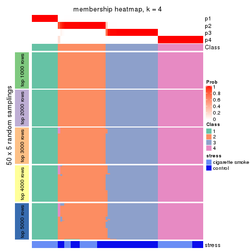
membership_heatmap(res, k = 5)
membership_heatmap(res, k = 6)
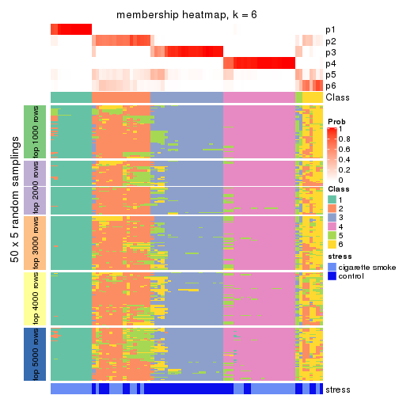
As soon as we have had the classes for columns, we can look for signatures which are significantly different between classes which can be candidate marks for certain classes. Following are the heatmaps for signatures.
Signature heatmaps where rows are scaled:
get_signatures(res, k = 2)
get_signatures(res, k = 3)
get_signatures(res, k = 4)
get_signatures(res, k = 5)

get_signatures(res, k = 6)
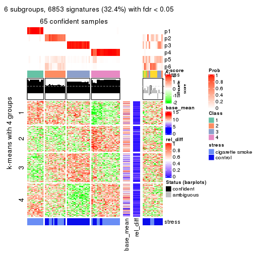
Signature heatmaps where rows are not scaled:
get_signatures(res, k = 2, scale_rows = FALSE)
get_signatures(res, k = 3, scale_rows = FALSE)
get_signatures(res, k = 4, scale_rows = FALSE)
get_signatures(res, k = 5, scale_rows = FALSE)
get_signatures(res, k = 6, scale_rows = FALSE)

Compare the overlap of signatures from different k:
compare_signatures(res)
get_signature() returns a data frame invisibly. TO get the list of signatures, the function
call should be assigned to a variable explicitly. In following code, if plot argument is set
to FALSE, no heatmap is plotted while only the differential analysis is performed.
# code only for demonstration
tb = get_signature(res, k = ..., plot = FALSE)
An example of the output of tb is:
#> which_row fdr mean_1 mean_2 scaled_mean_1 scaled_mean_2 km
#> 1 38 0.042760348 8.373488 9.131774 -0.5533452 0.5164555 1
#> 2 40 0.018707592 7.106213 8.469186 -0.6173731 0.5762149 1
#> 3 55 0.019134737 10.221463 11.207825 -0.6159697 0.5749050 1
#> 4 59 0.006059896 5.921854 7.869574 -0.6899429 0.6439467 1
#> 5 60 0.018055526 8.928898 10.211722 -0.6204761 0.5791110 1
#> 6 98 0.009384629 15.714769 14.887706 0.6635654 -0.6193277 2
...
The columns in tb are:
which_row: row indices corresponding to the input matrix.fdr: FDR for the differential test. mean_x: The mean value in group x.scaled_mean_x: The mean value in group x after rows are scaled.km: Row groups if k-means clustering is applied to rows.UMAP plot which shows how samples are separated.
dimension_reduction(res, k = 2, method = "UMAP")
dimension_reduction(res, k = 3, method = "UMAP")
dimension_reduction(res, k = 4, method = "UMAP")
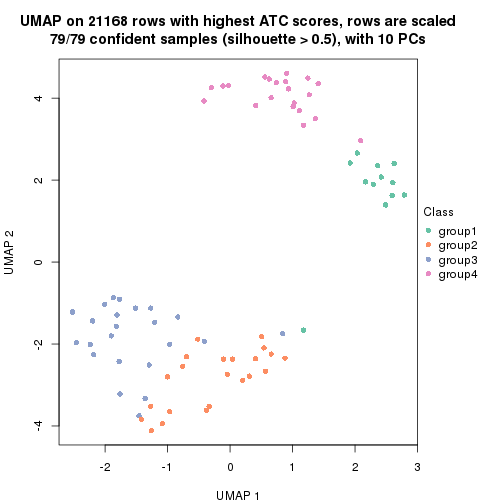
dimension_reduction(res, k = 5, method = "UMAP")
dimension_reduction(res, k = 6, method = "UMAP")

Following heatmap shows how subgroups are split when increasing k:
collect_classes(res)
Test correlation between subgroups and known annotations. If the known annotation is numeric, one-way ANOVA test is applied, and if the known annotation is discrete, chi-squared contingency table test is applied.
test_to_known_factors(res)
#> n stress(p) k
#> ATC:skmeans 79 2.25e-05 2
#> ATC:skmeans 79 6.20e-09 3
#> ATC:skmeans 79 4.52e-09 4
#> ATC:skmeans 70 7.90e-08 5
#> ATC:skmeans 66 3.88e-07 6
If matrix rows can be associated to genes, consider to use functional_enrichment(res,
...) to perform function enrichment for the signature genes. See this vignette for more detailed explanations.
The object with results only for a single top-value method and a single partition method can be extracted as:
res = res_list["ATC", "pam"]
# you can also extract it by
# res = res_list["ATC:pam"]
A summary of res and all the functions that can be applied to it:
res
#> A 'ConsensusPartition' object with k = 2, 3, 4, 5, 6.
#> On a matrix with 21168 rows and 79 columns.
#> Top rows (1000, 2000, 3000, 4000, 5000) are extracted by 'ATC' method.
#> Subgroups are detected by 'pam' method.
#> Performed in total 1250 partitions by row resampling.
#> Best k for subgroups seems to be 6.
#>
#> Following methods can be applied to this 'ConsensusPartition' object:
#> [1] "cola_report" "collect_classes" "collect_plots"
#> [4] "collect_stats" "colnames" "compare_signatures"
#> [7] "consensus_heatmap" "dimension_reduction" "functional_enrichment"
#> [10] "get_anno_col" "get_anno" "get_classes"
#> [13] "get_consensus" "get_matrix" "get_membership"
#> [16] "get_param" "get_signatures" "get_stats"
#> [19] "is_best_k" "is_stable_k" "membership_heatmap"
#> [22] "ncol" "nrow" "plot_ecdf"
#> [25] "rownames" "select_partition_number" "show"
#> [28] "suggest_best_k" "test_to_known_factors"
collect_plots() function collects all the plots made from res for all k (number of partitions)
into one single page to provide an easy and fast comparison between different k.
collect_plots(res)
The plots are:
k and the heatmap of
predicted classes for each k.k.k.k.All the plots in panels can be made by individual functions and they are plotted later in this section.
select_partition_number() produces several plots showing different
statistics for choosing “optimized” k. There are following statistics:
k;k, the area increased is defined as \(A_k - A_{k-1}\).The detailed explanations of these statistics can be found in the cola vignette.
Generally speaking, lower PAC score, higher mean silhouette score or higher
concordance corresponds to better partition. Rand index and Jaccard index
measure how similar the current partition is compared to partition with k-1.
If they are too similar, we won't accept k is better than k-1.
select_partition_number(res)
The numeric values for all these statistics can be obtained by get_stats().
get_stats(res)
#> k 1-PAC mean_silhouette concordance area_increased Rand Jaccard
#> 2 2 1.000 0.999 1.000 0.3962 0.605 0.605
#> 3 3 1.000 0.969 0.987 0.5869 0.774 0.626
#> 4 4 0.968 0.946 0.977 0.1395 0.914 0.774
#> 5 5 0.954 0.932 0.973 0.0283 0.978 0.925
#> 6 6 0.957 0.915 0.962 0.0892 0.930 0.741
suggest_best_k() suggests the best \(k\) based on these statistics. The rules are as follows:
suggest_best_k(res)
#> [1] 6
#> attr(,"optional")
#> [1] 2 3 4 5
There is also optional best \(k\) = 2 3 4 5 that is worth to check.
Following shows the table of the partitions (You need to click the show/hide
code output link to see it). The membership matrix (columns with name p*)
is inferred by
clue::cl_consensus()
function with the SE method. Basically the value in the membership matrix
represents the probability to belong to a certain group. The finall class
label for an item is determined with the group with highest probability it
belongs to.
In get_classes() function, the entropy is calculated from the membership
matrix and the silhouette score is calculated from the consensus matrix.
cbind(get_classes(res, k = 2), get_membership(res, k = 2))
#> class entropy silhouette p1 p2
#> GSM464697 2 0.0000 1.000 0.000 1.000
#> GSM464698 2 0.0000 1.000 0.000 1.000
#> GSM464699 2 0.0000 1.000 0.000 1.000
#> GSM464700 2 0.0000 1.000 0.000 1.000
#> GSM464701 2 0.0000 1.000 0.000 1.000
#> GSM464702 2 0.0000 1.000 0.000 1.000
#> GSM464703 2 0.0000 1.000 0.000 1.000
#> GSM464704 2 0.0000 1.000 0.000 1.000
#> GSM464705 1 0.0000 1.000 1.000 0.000
#> GSM464706 2 0.0000 1.000 0.000 1.000
#> GSM464707 2 0.0000 1.000 0.000 1.000
#> GSM464708 2 0.0000 1.000 0.000 1.000
#> GSM464709 2 0.0000 1.000 0.000 1.000
#> GSM464710 2 0.0000 1.000 0.000 1.000
#> GSM464711 2 0.0000 1.000 0.000 1.000
#> GSM464712 2 0.0000 1.000 0.000 1.000
#> GSM464713 2 0.0000 1.000 0.000 1.000
#> GSM464714 1 0.0000 1.000 1.000 0.000
#> GSM464715 2 0.0000 1.000 0.000 1.000
#> GSM464716 2 0.0000 1.000 0.000 1.000
#> GSM464717 2 0.0000 1.000 0.000 1.000
#> GSM464718 2 0.0000 1.000 0.000 1.000
#> GSM464719 2 0.0000 1.000 0.000 1.000
#> GSM464720 2 0.0000 1.000 0.000 1.000
#> GSM464721 1 0.0000 1.000 1.000 0.000
#> GSM464722 1 0.0000 1.000 1.000 0.000
#> GSM464723 1 0.0000 1.000 1.000 0.000
#> GSM464724 2 0.0000 1.000 0.000 1.000
#> GSM464725 2 0.0000 1.000 0.000 1.000
#> GSM464726 2 0.0000 1.000 0.000 1.000
#> GSM464727 2 0.0000 1.000 0.000 1.000
#> GSM464728 2 0.0000 1.000 0.000 1.000
#> GSM464729 2 0.0000 1.000 0.000 1.000
#> GSM464730 2 0.0000 1.000 0.000 1.000
#> GSM464731 2 0.0000 1.000 0.000 1.000
#> GSM464732 2 0.0000 1.000 0.000 1.000
#> GSM464733 2 0.0000 1.000 0.000 1.000
#> GSM464734 2 0.0000 1.000 0.000 1.000
#> GSM464735 2 0.0000 1.000 0.000 1.000
#> GSM464736 2 0.0000 1.000 0.000 1.000
#> GSM464658 1 0.0000 1.000 1.000 0.000
#> GSM464659 1 0.0000 1.000 1.000 0.000
#> GSM464660 2 0.1414 0.980 0.020 0.980
#> GSM464661 1 0.0000 1.000 1.000 0.000
#> GSM464662 2 0.0000 1.000 0.000 1.000
#> GSM464663 1 0.0000 1.000 1.000 0.000
#> GSM464664 2 0.0000 1.000 0.000 1.000
#> GSM464665 1 0.0000 1.000 1.000 0.000
#> GSM464666 1 0.0000 1.000 1.000 0.000
#> GSM464667 1 0.0000 1.000 1.000 0.000
#> GSM464668 1 0.0000 1.000 1.000 0.000
#> GSM464669 2 0.0000 1.000 0.000 1.000
#> GSM464670 1 0.0000 1.000 1.000 0.000
#> GSM464671 2 0.0672 0.992 0.008 0.992
#> GSM464672 2 0.0000 1.000 0.000 1.000
#> GSM464673 1 0.0000 1.000 1.000 0.000
#> GSM464674 1 0.0000 1.000 1.000 0.000
#> GSM464675 2 0.0000 1.000 0.000 1.000
#> GSM464676 2 0.0000 1.000 0.000 1.000
#> GSM464677 2 0.0000 1.000 0.000 1.000
#> GSM464678 2 0.0000 1.000 0.000 1.000
#> GSM464679 2 0.0000 1.000 0.000 1.000
#> GSM464680 2 0.0000 1.000 0.000 1.000
#> GSM464681 2 0.0000 1.000 0.000 1.000
#> GSM464682 2 0.0000 1.000 0.000 1.000
#> GSM464683 2 0.0000 1.000 0.000 1.000
#> GSM464684 2 0.0000 1.000 0.000 1.000
#> GSM464685 2 0.0000 1.000 0.000 1.000
#> GSM464686 2 0.0000 1.000 0.000 1.000
#> GSM464687 2 0.0000 1.000 0.000 1.000
#> GSM464688 2 0.0000 1.000 0.000 1.000
#> GSM464689 2 0.0000 1.000 0.000 1.000
#> GSM464690 2 0.0000 1.000 0.000 1.000
#> GSM464691 1 0.0000 1.000 1.000 0.000
#> GSM464692 2 0.0000 1.000 0.000 1.000
#> GSM464693 1 0.0000 1.000 1.000 0.000
#> GSM464694 1 0.0000 1.000 1.000 0.000
#> GSM464695 1 0.0000 1.000 1.000 0.000
#> GSM464696 1 0.0000 1.000 1.000 0.000
cbind(get_classes(res, k = 3), get_membership(res, k = 3))
#> class entropy silhouette p1 p2 p3
#> GSM464697 3 0.0000 1.000 0.000 0.000 1.000
#> GSM464698 2 0.0000 0.975 0.000 1.000 0.000
#> GSM464699 3 0.0000 1.000 0.000 0.000 1.000
#> GSM464700 2 0.0000 0.975 0.000 1.000 0.000
#> GSM464701 3 0.0000 1.000 0.000 0.000 1.000
#> GSM464702 3 0.0000 1.000 0.000 0.000 1.000
#> GSM464703 3 0.0000 1.000 0.000 0.000 1.000
#> GSM464704 3 0.0000 1.000 0.000 0.000 1.000
#> GSM464705 1 0.0000 1.000 1.000 0.000 0.000
#> GSM464706 2 0.0000 0.975 0.000 1.000 0.000
#> GSM464707 2 0.0000 0.975 0.000 1.000 0.000
#> GSM464708 3 0.0000 1.000 0.000 0.000 1.000
#> GSM464709 2 0.0424 0.969 0.000 0.992 0.008
#> GSM464710 3 0.0000 1.000 0.000 0.000 1.000
#> GSM464711 3 0.0000 1.000 0.000 0.000 1.000
#> GSM464712 2 0.0000 0.975 0.000 1.000 0.000
#> GSM464713 3 0.0000 1.000 0.000 0.000 1.000
#> GSM464714 1 0.0000 1.000 1.000 0.000 0.000
#> GSM464715 3 0.0000 1.000 0.000 0.000 1.000
#> GSM464716 2 0.0000 0.975 0.000 1.000 0.000
#> GSM464717 2 0.0000 0.975 0.000 1.000 0.000
#> GSM464718 2 0.0000 0.975 0.000 1.000 0.000
#> GSM464719 2 0.0000 0.975 0.000 1.000 0.000
#> GSM464720 2 0.0000 0.975 0.000 1.000 0.000
#> GSM464721 1 0.0000 1.000 1.000 0.000 0.000
#> GSM464722 1 0.0000 1.000 1.000 0.000 0.000
#> GSM464723 1 0.0000 1.000 1.000 0.000 0.000
#> GSM464724 2 0.6225 0.274 0.000 0.568 0.432
#> GSM464725 3 0.0000 1.000 0.000 0.000 1.000
#> GSM464726 3 0.0000 1.000 0.000 0.000 1.000
#> GSM464727 2 0.0000 0.975 0.000 1.000 0.000
#> GSM464728 3 0.0000 1.000 0.000 0.000 1.000
#> GSM464729 3 0.0000 1.000 0.000 0.000 1.000
#> GSM464730 3 0.0000 1.000 0.000 0.000 1.000
#> GSM464731 3 0.0000 1.000 0.000 0.000 1.000
#> GSM464732 2 0.0000 0.975 0.000 1.000 0.000
#> GSM464733 2 0.4178 0.788 0.000 0.828 0.172
#> GSM464734 2 0.0424 0.969 0.000 0.992 0.008
#> GSM464735 2 0.5948 0.460 0.000 0.640 0.360
#> GSM464736 2 0.0000 0.975 0.000 1.000 0.000
#> GSM464658 1 0.0000 1.000 1.000 0.000 0.000
#> GSM464659 1 0.0000 1.000 1.000 0.000 0.000
#> GSM464660 2 0.0424 0.968 0.008 0.992 0.000
#> GSM464661 1 0.0000 1.000 1.000 0.000 0.000
#> GSM464662 2 0.0000 0.975 0.000 1.000 0.000
#> GSM464663 1 0.0000 1.000 1.000 0.000 0.000
#> GSM464664 2 0.0000 0.975 0.000 1.000 0.000
#> GSM464665 1 0.0000 1.000 1.000 0.000 0.000
#> GSM464666 1 0.0000 1.000 1.000 0.000 0.000
#> GSM464667 1 0.0000 1.000 1.000 0.000 0.000
#> GSM464668 1 0.0000 1.000 1.000 0.000 0.000
#> GSM464669 2 0.0000 0.975 0.000 1.000 0.000
#> GSM464670 1 0.0000 1.000 1.000 0.000 0.000
#> GSM464671 2 0.0000 0.975 0.000 1.000 0.000
#> GSM464672 2 0.0000 0.975 0.000 1.000 0.000
#> GSM464673 1 0.0000 1.000 1.000 0.000 0.000
#> GSM464674 1 0.0000 1.000 1.000 0.000 0.000
#> GSM464675 2 0.0000 0.975 0.000 1.000 0.000
#> GSM464676 2 0.0000 0.975 0.000 1.000 0.000
#> GSM464677 2 0.0000 0.975 0.000 1.000 0.000
#> GSM464678 2 0.0000 0.975 0.000 1.000 0.000
#> GSM464679 2 0.0000 0.975 0.000 1.000 0.000
#> GSM464680 2 0.0000 0.975 0.000 1.000 0.000
#> GSM464681 2 0.0000 0.975 0.000 1.000 0.000
#> GSM464682 2 0.0000 0.975 0.000 1.000 0.000
#> GSM464683 2 0.0000 0.975 0.000 1.000 0.000
#> GSM464684 2 0.0000 0.975 0.000 1.000 0.000
#> GSM464685 2 0.0000 0.975 0.000 1.000 0.000
#> GSM464686 2 0.0000 0.975 0.000 1.000 0.000
#> GSM464687 2 0.0000 0.975 0.000 1.000 0.000
#> GSM464688 2 0.0000 0.975 0.000 1.000 0.000
#> GSM464689 2 0.0000 0.975 0.000 1.000 0.000
#> GSM464690 2 0.0000 0.975 0.000 1.000 0.000
#> GSM464691 1 0.0000 1.000 1.000 0.000 0.000
#> GSM464692 2 0.0000 0.975 0.000 1.000 0.000
#> GSM464693 1 0.0000 1.000 1.000 0.000 0.000
#> GSM464694 1 0.0000 1.000 1.000 0.000 0.000
#> GSM464695 1 0.0000 1.000 1.000 0.000 0.000
#> GSM464696 1 0.0000 1.000 1.000 0.000 0.000
cbind(get_classes(res, k = 4), get_membership(res, k = 4))
#> class entropy silhouette p1 p2 p3 p4
#> GSM464697 3 0.0000 1.000 0.000 0.000 1.000 0.000
#> GSM464698 2 0.0000 0.950 0.000 1.000 0.000 0.000
#> GSM464699 3 0.0000 1.000 0.000 0.000 1.000 0.000
#> GSM464700 2 0.0000 0.950 0.000 1.000 0.000 0.000
#> GSM464701 3 0.0000 1.000 0.000 0.000 1.000 0.000
#> GSM464702 3 0.0000 1.000 0.000 0.000 1.000 0.000
#> GSM464703 3 0.0000 1.000 0.000 0.000 1.000 0.000
#> GSM464704 3 0.0000 1.000 0.000 0.000 1.000 0.000
#> GSM464705 4 0.0000 0.985 0.000 0.000 0.000 1.000
#> GSM464706 2 0.0000 0.950 0.000 1.000 0.000 0.000
#> GSM464707 2 0.0000 0.950 0.000 1.000 0.000 0.000
#> GSM464708 3 0.0000 1.000 0.000 0.000 1.000 0.000
#> GSM464709 2 0.0336 0.944 0.000 0.992 0.008 0.000
#> GSM464710 3 0.0000 1.000 0.000 0.000 1.000 0.000
#> GSM464711 3 0.0000 1.000 0.000 0.000 1.000 0.000
#> GSM464712 2 0.0000 0.950 0.000 1.000 0.000 0.000
#> GSM464713 3 0.0000 1.000 0.000 0.000 1.000 0.000
#> GSM464714 4 0.0000 0.985 0.000 0.000 0.000 1.000
#> GSM464715 3 0.0000 1.000 0.000 0.000 1.000 0.000
#> GSM464716 2 0.0000 0.950 0.000 1.000 0.000 0.000
#> GSM464717 2 0.0000 0.950 0.000 1.000 0.000 0.000
#> GSM464718 2 0.0000 0.950 0.000 1.000 0.000 0.000
#> GSM464719 2 0.0000 0.950 0.000 1.000 0.000 0.000
#> GSM464720 2 0.0000 0.950 0.000 1.000 0.000 0.000
#> GSM464721 4 0.0000 0.985 0.000 0.000 0.000 1.000
#> GSM464722 4 0.0000 0.985 0.000 0.000 0.000 1.000
#> GSM464723 4 0.0000 0.985 0.000 0.000 0.000 1.000
#> GSM464724 2 0.4933 0.298 0.000 0.568 0.432 0.000
#> GSM464725 3 0.0000 1.000 0.000 0.000 1.000 0.000
#> GSM464726 3 0.0000 1.000 0.000 0.000 1.000 0.000
#> GSM464727 2 0.0000 0.950 0.000 1.000 0.000 0.000
#> GSM464728 3 0.0000 1.000 0.000 0.000 1.000 0.000
#> GSM464729 3 0.0000 1.000 0.000 0.000 1.000 0.000
#> GSM464730 3 0.0000 1.000 0.000 0.000 1.000 0.000
#> GSM464731 3 0.0000 1.000 0.000 0.000 1.000 0.000
#> GSM464732 2 0.0000 0.950 0.000 1.000 0.000 0.000
#> GSM464733 2 0.3311 0.777 0.000 0.828 0.172 0.000
#> GSM464734 2 0.0336 0.944 0.000 0.992 0.008 0.000
#> GSM464735 2 0.4713 0.476 0.000 0.640 0.360 0.000
#> GSM464736 2 0.0000 0.950 0.000 1.000 0.000 0.000
#> GSM464658 4 0.0000 0.985 0.000 0.000 0.000 1.000
#> GSM464659 4 0.0000 0.985 0.000 0.000 0.000 1.000
#> GSM464660 1 0.0000 1.000 1.000 0.000 0.000 0.000
#> GSM464661 4 0.0000 0.985 0.000 0.000 0.000 1.000
#> GSM464662 2 0.0000 0.950 0.000 1.000 0.000 0.000
#> GSM464663 4 0.0000 0.985 0.000 0.000 0.000 1.000
#> GSM464664 2 0.0000 0.950 0.000 1.000 0.000 0.000
#> GSM464665 4 0.0000 0.985 0.000 0.000 0.000 1.000
#> GSM464666 4 0.0000 0.985 0.000 0.000 0.000 1.000
#> GSM464667 4 0.0000 0.985 0.000 0.000 0.000 1.000
#> GSM464668 4 0.0000 0.985 0.000 0.000 0.000 1.000
#> GSM464669 1 0.0000 1.000 1.000 0.000 0.000 0.000
#> GSM464670 4 0.0000 0.985 0.000 0.000 0.000 1.000
#> GSM464671 1 0.0000 1.000 1.000 0.000 0.000 0.000
#> GSM464672 1 0.0000 1.000 1.000 0.000 0.000 0.000
#> GSM464673 4 0.3024 0.835 0.148 0.000 0.000 0.852
#> GSM464674 4 0.3123 0.825 0.156 0.000 0.000 0.844
#> GSM464675 1 0.0000 1.000 1.000 0.000 0.000 0.000
#> GSM464676 1 0.0000 1.000 1.000 0.000 0.000 0.000
#> GSM464677 2 0.0000 0.950 0.000 1.000 0.000 0.000
#> GSM464678 1 0.0000 1.000 1.000 0.000 0.000 0.000
#> GSM464679 2 0.0000 0.950 0.000 1.000 0.000 0.000
#> GSM464680 2 0.0000 0.950 0.000 1.000 0.000 0.000
#> GSM464681 1 0.0000 1.000 1.000 0.000 0.000 0.000
#> GSM464682 2 0.0000 0.950 0.000 1.000 0.000 0.000
#> GSM464683 2 0.0000 0.950 0.000 1.000 0.000 0.000
#> GSM464684 2 0.0000 0.950 0.000 1.000 0.000 0.000
#> GSM464685 2 0.0000 0.950 0.000 1.000 0.000 0.000
#> GSM464686 2 0.0000 0.950 0.000 1.000 0.000 0.000
#> GSM464687 2 0.0000 0.950 0.000 1.000 0.000 0.000
#> GSM464688 2 0.2647 0.839 0.120 0.880 0.000 0.000
#> GSM464689 2 0.4843 0.385 0.396 0.604 0.000 0.000
#> GSM464690 2 0.0000 0.950 0.000 1.000 0.000 0.000
#> GSM464691 4 0.0000 0.985 0.000 0.000 0.000 1.000
#> GSM464692 2 0.0000 0.950 0.000 1.000 0.000 0.000
#> GSM464693 4 0.0000 0.985 0.000 0.000 0.000 1.000
#> GSM464694 4 0.0000 0.985 0.000 0.000 0.000 1.000
#> GSM464695 4 0.0000 0.985 0.000 0.000 0.000 1.000
#> GSM464696 4 0.0000 0.985 0.000 0.000 0.000 1.000
cbind(get_classes(res, k = 5), get_membership(res, k = 5))
#> class entropy silhouette p1 p2 p3 p4 p5
#> GSM464697 3 0.000 1.000 0.000 0.000 1.000 0.000 0.000
#> GSM464698 2 0.000 0.947 0.000 1.000 0.000 0.000 0.000
#> GSM464699 3 0.000 1.000 0.000 0.000 1.000 0.000 0.000
#> GSM464700 2 0.000 0.947 0.000 1.000 0.000 0.000 0.000
#> GSM464701 3 0.000 1.000 0.000 0.000 1.000 0.000 0.000
#> GSM464702 3 0.000 1.000 0.000 0.000 1.000 0.000 0.000
#> GSM464703 3 0.000 1.000 0.000 0.000 1.000 0.000 0.000
#> GSM464704 3 0.000 1.000 0.000 0.000 1.000 0.000 0.000
#> GSM464705 5 0.000 0.863 0.000 0.000 0.000 0.000 1.000
#> GSM464706 2 0.000 0.947 0.000 1.000 0.000 0.000 0.000
#> GSM464707 2 0.000 0.947 0.000 1.000 0.000 0.000 0.000
#> GSM464708 3 0.000 1.000 0.000 0.000 1.000 0.000 0.000
#> GSM464709 2 0.029 0.941 0.000 0.992 0.008 0.000 0.000
#> GSM464710 3 0.000 1.000 0.000 0.000 1.000 0.000 0.000
#> GSM464711 3 0.000 1.000 0.000 0.000 1.000 0.000 0.000
#> GSM464712 2 0.000 0.947 0.000 1.000 0.000 0.000 0.000
#> GSM464713 3 0.000 1.000 0.000 0.000 1.000 0.000 0.000
#> GSM464714 5 0.000 0.863 0.000 0.000 0.000 0.000 1.000
#> GSM464715 3 0.000 1.000 0.000 0.000 1.000 0.000 0.000
#> GSM464716 2 0.000 0.947 0.000 1.000 0.000 0.000 0.000
#> GSM464717 2 0.000 0.947 0.000 1.000 0.000 0.000 0.000
#> GSM464718 2 0.000 0.947 0.000 1.000 0.000 0.000 0.000
#> GSM464719 2 0.000 0.947 0.000 1.000 0.000 0.000 0.000
#> GSM464720 2 0.000 0.947 0.000 1.000 0.000 0.000 0.000
#> GSM464721 4 0.000 0.977 0.000 0.000 0.000 1.000 0.000
#> GSM464722 5 0.000 0.863 0.000 0.000 0.000 0.000 1.000
#> GSM464723 4 0.000 0.977 0.000 0.000 0.000 1.000 0.000
#> GSM464724 2 0.425 0.298 0.000 0.568 0.432 0.000 0.000
#> GSM464725 3 0.000 1.000 0.000 0.000 1.000 0.000 0.000
#> GSM464726 3 0.000 1.000 0.000 0.000 1.000 0.000 0.000
#> GSM464727 2 0.000 0.947 0.000 1.000 0.000 0.000 0.000
#> GSM464728 3 0.000 1.000 0.000 0.000 1.000 0.000 0.000
#> GSM464729 3 0.000 1.000 0.000 0.000 1.000 0.000 0.000
#> GSM464730 3 0.000 1.000 0.000 0.000 1.000 0.000 0.000
#> GSM464731 3 0.000 1.000 0.000 0.000 1.000 0.000 0.000
#> GSM464732 2 0.000 0.947 0.000 1.000 0.000 0.000 0.000
#> GSM464733 2 0.285 0.761 0.000 0.828 0.172 0.000 0.000
#> GSM464734 2 0.029 0.940 0.000 0.992 0.008 0.000 0.000
#> GSM464735 2 0.406 0.476 0.000 0.640 0.360 0.000 0.000
#> GSM464736 2 0.000 0.947 0.000 1.000 0.000 0.000 0.000
#> GSM464658 4 0.000 0.977 0.000 0.000 0.000 1.000 0.000
#> GSM464659 4 0.000 0.977 0.000 0.000 0.000 1.000 0.000
#> GSM464660 1 0.000 1.000 1.000 0.000 0.000 0.000 0.000
#> GSM464661 5 0.384 0.542 0.000 0.000 0.000 0.308 0.692
#> GSM464662 2 0.000 0.947 0.000 1.000 0.000 0.000 0.000
#> GSM464663 4 0.000 0.977 0.000 0.000 0.000 1.000 0.000
#> GSM464664 2 0.000 0.947 0.000 1.000 0.000 0.000 0.000
#> GSM464665 4 0.000 0.977 0.000 0.000 0.000 1.000 0.000
#> GSM464666 4 0.000 0.977 0.000 0.000 0.000 1.000 0.000
#> GSM464667 4 0.000 0.977 0.000 0.000 0.000 1.000 0.000
#> GSM464668 4 0.000 0.977 0.000 0.000 0.000 1.000 0.000
#> GSM464669 1 0.000 1.000 1.000 0.000 0.000 0.000 0.000
#> GSM464670 4 0.000 0.977 0.000 0.000 0.000 1.000 0.000
#> GSM464671 1 0.000 1.000 1.000 0.000 0.000 0.000 0.000
#> GSM464672 1 0.000 1.000 1.000 0.000 0.000 0.000 0.000
#> GSM464673 4 0.260 0.812 0.148 0.000 0.000 0.852 0.000
#> GSM464674 4 0.269 0.802 0.156 0.000 0.000 0.844 0.000
#> GSM464675 1 0.000 1.000 1.000 0.000 0.000 0.000 0.000
#> GSM464676 1 0.000 1.000 1.000 0.000 0.000 0.000 0.000
#> GSM464677 2 0.000 0.947 0.000 1.000 0.000 0.000 0.000
#> GSM464678 1 0.000 1.000 1.000 0.000 0.000 0.000 0.000
#> GSM464679 2 0.000 0.947 0.000 1.000 0.000 0.000 0.000
#> GSM464680 2 0.000 0.947 0.000 1.000 0.000 0.000 0.000
#> GSM464681 1 0.000 1.000 1.000 0.000 0.000 0.000 0.000
#> GSM464682 2 0.000 0.947 0.000 1.000 0.000 0.000 0.000
#> GSM464683 2 0.000 0.947 0.000 1.000 0.000 0.000 0.000
#> GSM464684 2 0.000 0.947 0.000 1.000 0.000 0.000 0.000
#> GSM464685 2 0.000 0.947 0.000 1.000 0.000 0.000 0.000
#> GSM464686 2 0.000 0.947 0.000 1.000 0.000 0.000 0.000
#> GSM464687 2 0.000 0.947 0.000 1.000 0.000 0.000 0.000
#> GSM464688 2 0.228 0.834 0.120 0.880 0.000 0.000 0.000
#> GSM464689 2 0.417 0.385 0.396 0.604 0.000 0.000 0.000
#> GSM464690 2 0.000 0.947 0.000 1.000 0.000 0.000 0.000
#> GSM464691 4 0.000 0.977 0.000 0.000 0.000 1.000 0.000
#> GSM464692 2 0.000 0.947 0.000 1.000 0.000 0.000 0.000
#> GSM464693 4 0.000 0.977 0.000 0.000 0.000 1.000 0.000
#> GSM464694 4 0.000 0.977 0.000 0.000 0.000 1.000 0.000
#> GSM464695 4 0.000 0.977 0.000 0.000 0.000 1.000 0.000
#> GSM464696 4 0.000 0.977 0.000 0.000 0.000 1.000 0.000
cbind(get_classes(res, k = 6), get_membership(res, k = 6))
#> class entropy silhouette p1 p2 p3 p4 p5 p6
#> GSM464697 3 0.0000 0.999 0.000 0.000 1.000 0.000 0.000 0.000
#> GSM464698 6 0.1327 0.963 0.000 0.064 0.000 0.000 0.000 0.936
#> GSM464699 3 0.0000 0.999 0.000 0.000 1.000 0.000 0.000 0.000
#> GSM464700 2 0.0632 0.892 0.000 0.976 0.000 0.000 0.000 0.024
#> GSM464701 3 0.0146 0.997 0.000 0.000 0.996 0.000 0.000 0.004
#> GSM464702 3 0.0000 0.999 0.000 0.000 1.000 0.000 0.000 0.000
#> GSM464703 3 0.0000 0.999 0.000 0.000 1.000 0.000 0.000 0.000
#> GSM464704 3 0.0000 0.999 0.000 0.000 1.000 0.000 0.000 0.000
#> GSM464705 5 0.0000 0.863 0.000 0.000 0.000 0.000 1.000 0.000
#> GSM464706 2 0.0000 0.908 0.000 1.000 0.000 0.000 0.000 0.000
#> GSM464707 6 0.1814 0.859 0.000 0.100 0.000 0.000 0.000 0.900
#> GSM464708 3 0.0000 0.999 0.000 0.000 1.000 0.000 0.000 0.000
#> GSM464709 2 0.1285 0.871 0.000 0.944 0.004 0.000 0.000 0.052
#> GSM464710 3 0.0000 0.999 0.000 0.000 1.000 0.000 0.000 0.000
#> GSM464711 3 0.0000 0.999 0.000 0.000 1.000 0.000 0.000 0.000
#> GSM464712 2 0.0000 0.908 0.000 1.000 0.000 0.000 0.000 0.000
#> GSM464713 3 0.0146 0.997 0.000 0.000 0.996 0.000 0.000 0.004
#> GSM464714 5 0.0000 0.863 0.000 0.000 0.000 0.000 1.000 0.000
#> GSM464715 3 0.0000 0.999 0.000 0.000 1.000 0.000 0.000 0.000
#> GSM464716 2 0.1141 0.873 0.000 0.948 0.000 0.000 0.000 0.052
#> GSM464717 2 0.0000 0.908 0.000 1.000 0.000 0.000 0.000 0.000
#> GSM464718 6 0.1327 0.963 0.000 0.064 0.000 0.000 0.000 0.936
#> GSM464719 2 0.0000 0.908 0.000 1.000 0.000 0.000 0.000 0.000
#> GSM464720 2 0.0000 0.908 0.000 1.000 0.000 0.000 0.000 0.000
#> GSM464721 4 0.0000 0.977 0.000 0.000 0.000 1.000 0.000 0.000
#> GSM464722 5 0.0000 0.863 0.000 0.000 0.000 0.000 1.000 0.000
#> GSM464723 4 0.0000 0.977 0.000 0.000 0.000 1.000 0.000 0.000
#> GSM464724 2 0.4703 0.381 0.000 0.568 0.380 0.000 0.000 0.052
#> GSM464725 3 0.0146 0.997 0.000 0.000 0.996 0.000 0.000 0.004
#> GSM464726 3 0.0000 0.999 0.000 0.000 1.000 0.000 0.000 0.000
#> GSM464727 6 0.1204 0.968 0.000 0.056 0.000 0.000 0.000 0.944
#> GSM464728 3 0.0000 0.999 0.000 0.000 1.000 0.000 0.000 0.000
#> GSM464729 3 0.0146 0.997 0.000 0.000 0.996 0.000 0.000 0.004
#> GSM464730 3 0.0000 0.999 0.000 0.000 1.000 0.000 0.000 0.000
#> GSM464731 3 0.0000 0.999 0.000 0.000 1.000 0.000 0.000 0.000
#> GSM464732 6 0.1075 0.963 0.000 0.048 0.000 0.000 0.000 0.952
#> GSM464733 6 0.0146 0.910 0.000 0.004 0.000 0.000 0.000 0.996
#> GSM464734 2 0.3857 0.188 0.000 0.532 0.000 0.000 0.000 0.468
#> GSM464735 2 0.3647 0.480 0.000 0.640 0.360 0.000 0.000 0.000
#> GSM464736 2 0.0000 0.908 0.000 1.000 0.000 0.000 0.000 0.000
#> GSM464658 4 0.0000 0.977 0.000 0.000 0.000 1.000 0.000 0.000
#> GSM464659 4 0.0000 0.977 0.000 0.000 0.000 1.000 0.000 0.000
#> GSM464660 1 0.0000 1.000 1.000 0.000 0.000 0.000 0.000 0.000
#> GSM464661 5 0.3446 0.542 0.000 0.000 0.000 0.308 0.692 0.000
#> GSM464662 6 0.1204 0.968 0.000 0.056 0.000 0.000 0.000 0.944
#> GSM464663 4 0.0000 0.977 0.000 0.000 0.000 1.000 0.000 0.000
#> GSM464664 6 0.1204 0.968 0.000 0.056 0.000 0.000 0.000 0.944
#> GSM464665 4 0.0000 0.977 0.000 0.000 0.000 1.000 0.000 0.000
#> GSM464666 4 0.0000 0.977 0.000 0.000 0.000 1.000 0.000 0.000
#> GSM464667 4 0.0000 0.977 0.000 0.000 0.000 1.000 0.000 0.000
#> GSM464668 4 0.0000 0.977 0.000 0.000 0.000 1.000 0.000 0.000
#> GSM464669 1 0.0000 1.000 1.000 0.000 0.000 0.000 0.000 0.000
#> GSM464670 4 0.0000 0.977 0.000 0.000 0.000 1.000 0.000 0.000
#> GSM464671 1 0.0000 1.000 1.000 0.000 0.000 0.000 0.000 0.000
#> GSM464672 1 0.0000 1.000 1.000 0.000 0.000 0.000 0.000 0.000
#> GSM464673 4 0.2340 0.812 0.148 0.000 0.000 0.852 0.000 0.000
#> GSM464674 4 0.2416 0.802 0.156 0.000 0.000 0.844 0.000 0.000
#> GSM464675 1 0.0000 1.000 1.000 0.000 0.000 0.000 0.000 0.000
#> GSM464676 1 0.0000 1.000 1.000 0.000 0.000 0.000 0.000 0.000
#> GSM464677 2 0.0000 0.908 0.000 1.000 0.000 0.000 0.000 0.000
#> GSM464678 1 0.0000 1.000 1.000 0.000 0.000 0.000 0.000 0.000
#> GSM464679 6 0.1204 0.968 0.000 0.056 0.000 0.000 0.000 0.944
#> GSM464680 2 0.0000 0.908 0.000 1.000 0.000 0.000 0.000 0.000
#> GSM464681 1 0.0000 1.000 1.000 0.000 0.000 0.000 0.000 0.000
#> GSM464682 2 0.0000 0.908 0.000 1.000 0.000 0.000 0.000 0.000
#> GSM464683 2 0.0000 0.908 0.000 1.000 0.000 0.000 0.000 0.000
#> GSM464684 2 0.0000 0.908 0.000 1.000 0.000 0.000 0.000 0.000
#> GSM464685 2 0.0000 0.908 0.000 1.000 0.000 0.000 0.000 0.000
#> GSM464686 2 0.0000 0.908 0.000 1.000 0.000 0.000 0.000 0.000
#> GSM464687 2 0.0000 0.908 0.000 1.000 0.000 0.000 0.000 0.000
#> GSM464688 2 0.2048 0.812 0.120 0.880 0.000 0.000 0.000 0.000
#> GSM464689 2 0.3747 0.399 0.396 0.604 0.000 0.000 0.000 0.000
#> GSM464690 2 0.0000 0.908 0.000 1.000 0.000 0.000 0.000 0.000
#> GSM464691 4 0.0000 0.977 0.000 0.000 0.000 1.000 0.000 0.000
#> GSM464692 2 0.0000 0.908 0.000 1.000 0.000 0.000 0.000 0.000
#> GSM464693 4 0.0000 0.977 0.000 0.000 0.000 1.000 0.000 0.000
#> GSM464694 4 0.0000 0.977 0.000 0.000 0.000 1.000 0.000 0.000
#> GSM464695 4 0.0000 0.977 0.000 0.000 0.000 1.000 0.000 0.000
#> GSM464696 4 0.0000 0.977 0.000 0.000 0.000 1.000 0.000 0.000
Heatmaps for the consensus matrix. It visualizes the probability of two samples to be in a same group.
consensus_heatmap(res, k = 2)
consensus_heatmap(res, k = 3)
consensus_heatmap(res, k = 4)
consensus_heatmap(res, k = 5)
consensus_heatmap(res, k = 6)
Heatmaps for the membership of samples in all partitions to see how consistent they are:
membership_heatmap(res, k = 2)
membership_heatmap(res, k = 3)
membership_heatmap(res, k = 4)
membership_heatmap(res, k = 5)
membership_heatmap(res, k = 6)
As soon as we have had the classes for columns, we can look for signatures which are significantly different between classes which can be candidate marks for certain classes. Following are the heatmaps for signatures.
Signature heatmaps where rows are scaled:
get_signatures(res, k = 2)
get_signatures(res, k = 3)
get_signatures(res, k = 4)
get_signatures(res, k = 5)
get_signatures(res, k = 6)
Signature heatmaps where rows are not scaled:
get_signatures(res, k = 2, scale_rows = FALSE)
get_signatures(res, k = 3, scale_rows = FALSE)
get_signatures(res, k = 4, scale_rows = FALSE)
get_signatures(res, k = 5, scale_rows = FALSE)
get_signatures(res, k = 6, scale_rows = FALSE)
Compare the overlap of signatures from different k:
compare_signatures(res)
get_signature() returns a data frame invisibly. TO get the list of signatures, the function
call should be assigned to a variable explicitly. In following code, if plot argument is set
to FALSE, no heatmap is plotted while only the differential analysis is performed.
# code only for demonstration
tb = get_signature(res, k = ..., plot = FALSE)
An example of the output of tb is:
#> which_row fdr mean_1 mean_2 scaled_mean_1 scaled_mean_2 km
#> 1 38 0.042760348 8.373488 9.131774 -0.5533452 0.5164555 1
#> 2 40 0.018707592 7.106213 8.469186 -0.6173731 0.5762149 1
#> 3 55 0.019134737 10.221463 11.207825 -0.6159697 0.5749050 1
#> 4 59 0.006059896 5.921854 7.869574 -0.6899429 0.6439467 1
#> 5 60 0.018055526 8.928898 10.211722 -0.6204761 0.5791110 1
#> 6 98 0.009384629 15.714769 14.887706 0.6635654 -0.6193277 2
...
The columns in tb are:
which_row: row indices corresponding to the input matrix.fdr: FDR for the differential test. mean_x: The mean value in group x.scaled_mean_x: The mean value in group x after rows are scaled.km: Row groups if k-means clustering is applied to rows.UMAP plot which shows how samples are separated.
dimension_reduction(res, k = 2, method = "UMAP")

dimension_reduction(res, k = 3, method = "UMAP")
dimension_reduction(res, k = 4, method = "UMAP")
dimension_reduction(res, k = 5, method = "UMAP")
dimension_reduction(res, k = 6, method = "UMAP")
Following heatmap shows how subgroups are split when increasing k:
collect_classes(res)
Test correlation between subgroups and known annotations. If the known annotation is numeric, one-way ANOVA test is applied, and if the known annotation is discrete, chi-squared contingency table test is applied.
test_to_known_factors(res)
#> n stress(p) k
#> ATC:pam 79 8.93e-03 2
#> ATC:pam 77 6.12e-06 3
#> ATC:pam 76 8.94e-07 4
#> ATC:pam 76 2.79e-07 5
#> ATC:pam 75 5.63e-07 6
If matrix rows can be associated to genes, consider to use functional_enrichment(res,
...) to perform function enrichment for the signature genes. See this vignette for more detailed explanations.
The object with results only for a single top-value method and a single partition method can be extracted as:
res = res_list["ATC", "mclust"]
# you can also extract it by
# res = res_list["ATC:mclust"]
A summary of res and all the functions that can be applied to it:
res
#> A 'ConsensusPartition' object with k = 2, 3, 4, 5, 6.
#> On a matrix with 21168 rows and 79 columns.
#> Top rows (1000, 2000, 3000, 4000, 5000) are extracted by 'ATC' method.
#> Subgroups are detected by 'mclust' method.
#> Performed in total 1250 partitions by row resampling.
#> Best k for subgroups seems to be 6.
#>
#> Following methods can be applied to this 'ConsensusPartition' object:
#> [1] "cola_report" "collect_classes" "collect_plots"
#> [4] "collect_stats" "colnames" "compare_signatures"
#> [7] "consensus_heatmap" "dimension_reduction" "functional_enrichment"
#> [10] "get_anno_col" "get_anno" "get_classes"
#> [13] "get_consensus" "get_matrix" "get_membership"
#> [16] "get_param" "get_signatures" "get_stats"
#> [19] "is_best_k" "is_stable_k" "membership_heatmap"
#> [22] "ncol" "nrow" "plot_ecdf"
#> [25] "rownames" "select_partition_number" "show"
#> [28] "suggest_best_k" "test_to_known_factors"
collect_plots() function collects all the plots made from res for all k (number of partitions)
into one single page to provide an easy and fast comparison between different k.
collect_plots(res)
The plots are:
k and the heatmap of
predicted classes for each k.k.k.k.All the plots in panels can be made by individual functions and they are plotted later in this section.
select_partition_number() produces several plots showing different
statistics for choosing “optimized” k. There are following statistics:
k;k, the area increased is defined as \(A_k - A_{k-1}\).The detailed explanations of these statistics can be found in the cola vignette.
Generally speaking, lower PAC score, higher mean silhouette score or higher
concordance corresponds to better partition. Rand index and Jaccard index
measure how similar the current partition is compared to partition with k-1.
If they are too similar, we won't accept k is better than k-1.
select_partition_number(res)
The numeric values for all these statistics can be obtained by get_stats().
get_stats(res)
#> k 1-PAC mean_silhouette concordance area_increased Rand Jaccard
#> 2 2 1.000 0.973 0.989 0.4850 0.517 0.517
#> 3 3 0.955 0.922 0.968 0.3614 0.786 0.602
#> 4 4 0.893 0.923 0.951 0.1162 0.918 0.762
#> 5 5 0.952 0.925 0.969 0.0301 0.982 0.933
#> 6 6 0.904 0.852 0.935 0.0644 0.930 0.722
suggest_best_k() suggests the best \(k\) based on these statistics. The rules are as follows:
suggest_best_k(res)
#> [1] 6
#> attr(,"optional")
#> [1] 2 3 5
There is also optional best \(k\) = 2 3 5 that is worth to check.
Following shows the table of the partitions (You need to click the show/hide
code output link to see it). The membership matrix (columns with name p*)
is inferred by
clue::cl_consensus()
function with the SE method. Basically the value in the membership matrix
represents the probability to belong to a certain group. The finall class
label for an item is determined with the group with highest probability it
belongs to.
In get_classes() function, the entropy is calculated from the membership
matrix and the silhouette score is calculated from the consensus matrix.
cbind(get_classes(res, k = 2), get_membership(res, k = 2))
#> class entropy silhouette p1 p2
#> GSM464697 2 0.000 0.987 0.000 1.000
#> GSM464698 2 0.000 0.987 0.000 1.000
#> GSM464699 2 0.000 0.987 0.000 1.000
#> GSM464700 2 0.000 0.987 0.000 1.000
#> GSM464701 2 0.000 0.987 0.000 1.000
#> GSM464702 2 0.000 0.987 0.000 1.000
#> GSM464703 2 0.000 0.987 0.000 1.000
#> GSM464704 2 0.000 0.987 0.000 1.000
#> GSM464705 2 0.943 0.438 0.360 0.640
#> GSM464706 2 0.000 0.987 0.000 1.000
#> GSM464707 2 0.000 0.987 0.000 1.000
#> GSM464708 2 0.000 0.987 0.000 1.000
#> GSM464709 2 0.000 0.987 0.000 1.000
#> GSM464710 2 0.000 0.987 0.000 1.000
#> GSM464711 2 0.000 0.987 0.000 1.000
#> GSM464712 2 0.000 0.987 0.000 1.000
#> GSM464713 2 0.000 0.987 0.000 1.000
#> GSM464714 1 0.833 0.631 0.736 0.264
#> GSM464715 2 0.000 0.987 0.000 1.000
#> GSM464716 2 0.000 0.987 0.000 1.000
#> GSM464717 2 0.000 0.987 0.000 1.000
#> GSM464718 2 0.000 0.987 0.000 1.000
#> GSM464719 2 0.000 0.987 0.000 1.000
#> GSM464720 2 0.000 0.987 0.000 1.000
#> GSM464721 1 0.000 0.991 1.000 0.000
#> GSM464722 2 0.821 0.653 0.256 0.744
#> GSM464723 1 0.000 0.991 1.000 0.000
#> GSM464724 2 0.000 0.987 0.000 1.000
#> GSM464725 2 0.000 0.987 0.000 1.000
#> GSM464726 2 0.000 0.987 0.000 1.000
#> GSM464727 2 0.000 0.987 0.000 1.000
#> GSM464728 2 0.000 0.987 0.000 1.000
#> GSM464729 2 0.000 0.987 0.000 1.000
#> GSM464730 2 0.000 0.987 0.000 1.000
#> GSM464731 2 0.000 0.987 0.000 1.000
#> GSM464732 2 0.000 0.987 0.000 1.000
#> GSM464733 2 0.000 0.987 0.000 1.000
#> GSM464734 2 0.000 0.987 0.000 1.000
#> GSM464735 2 0.000 0.987 0.000 1.000
#> GSM464736 2 0.000 0.987 0.000 1.000
#> GSM464658 1 0.000 0.991 1.000 0.000
#> GSM464659 1 0.000 0.991 1.000 0.000
#> GSM464660 1 0.000 0.991 1.000 0.000
#> GSM464661 1 0.000 0.991 1.000 0.000
#> GSM464662 2 0.000 0.987 0.000 1.000
#> GSM464663 1 0.000 0.991 1.000 0.000
#> GSM464664 2 0.000 0.987 0.000 1.000
#> GSM464665 1 0.000 0.991 1.000 0.000
#> GSM464666 1 0.000 0.991 1.000 0.000
#> GSM464667 1 0.000 0.991 1.000 0.000
#> GSM464668 1 0.000 0.991 1.000 0.000
#> GSM464669 1 0.000 0.991 1.000 0.000
#> GSM464670 1 0.000 0.991 1.000 0.000
#> GSM464671 1 0.000 0.991 1.000 0.000
#> GSM464672 1 0.000 0.991 1.000 0.000
#> GSM464673 1 0.000 0.991 1.000 0.000
#> GSM464674 1 0.000 0.991 1.000 0.000
#> GSM464675 1 0.000 0.991 1.000 0.000
#> GSM464676 1 0.000 0.991 1.000 0.000
#> GSM464677 2 0.000 0.987 0.000 1.000
#> GSM464678 1 0.000 0.991 1.000 0.000
#> GSM464679 2 0.000 0.987 0.000 1.000
#> GSM464680 2 0.000 0.987 0.000 1.000
#> GSM464681 1 0.000 0.991 1.000 0.000
#> GSM464682 2 0.000 0.987 0.000 1.000
#> GSM464683 2 0.000 0.987 0.000 1.000
#> GSM464684 2 0.000 0.987 0.000 1.000
#> GSM464685 2 0.000 0.987 0.000 1.000
#> GSM464686 2 0.000 0.987 0.000 1.000
#> GSM464687 2 0.000 0.987 0.000 1.000
#> GSM464688 1 0.000 0.991 1.000 0.000
#> GSM464689 1 0.000 0.991 1.000 0.000
#> GSM464690 1 0.000 0.991 1.000 0.000
#> GSM464691 1 0.000 0.991 1.000 0.000
#> GSM464692 1 0.000 0.991 1.000 0.000
#> GSM464693 1 0.000 0.991 1.000 0.000
#> GSM464694 1 0.000 0.991 1.000 0.000
#> GSM464695 1 0.000 0.991 1.000 0.000
#> GSM464696 1 0.000 0.991 1.000 0.000
cbind(get_classes(res, k = 3), get_membership(res, k = 3))
#> class entropy silhouette p1 p2 p3
#> GSM464697 3 0.0000 0.9852 0.000 0.000 1.000
#> GSM464698 2 0.0237 0.9618 0.000 0.996 0.004
#> GSM464699 3 0.0000 0.9852 0.000 0.000 1.000
#> GSM464700 2 0.0000 0.9642 0.000 1.000 0.000
#> GSM464701 3 0.0000 0.9852 0.000 0.000 1.000
#> GSM464702 3 0.0000 0.9852 0.000 0.000 1.000
#> GSM464703 3 0.0000 0.9852 0.000 0.000 1.000
#> GSM464704 3 0.0000 0.9852 0.000 0.000 1.000
#> GSM464705 1 0.6924 0.3193 0.580 0.400 0.020
#> GSM464706 2 0.0000 0.9642 0.000 1.000 0.000
#> GSM464707 2 0.2356 0.9133 0.000 0.928 0.072
#> GSM464708 3 0.0000 0.9852 0.000 0.000 1.000
#> GSM464709 2 0.5016 0.7164 0.000 0.760 0.240
#> GSM464710 3 0.0000 0.9852 0.000 0.000 1.000
#> GSM464711 3 0.0000 0.9852 0.000 0.000 1.000
#> GSM464712 2 0.0000 0.9642 0.000 1.000 0.000
#> GSM464713 3 0.0000 0.9852 0.000 0.000 1.000
#> GSM464714 1 0.6924 0.3193 0.580 0.400 0.020
#> GSM464715 3 0.0000 0.9852 0.000 0.000 1.000
#> GSM464716 2 0.2796 0.8966 0.000 0.908 0.092
#> GSM464717 2 0.0000 0.9642 0.000 1.000 0.000
#> GSM464718 2 0.0000 0.9642 0.000 1.000 0.000
#> GSM464719 2 0.0000 0.9642 0.000 1.000 0.000
#> GSM464720 2 0.0000 0.9642 0.000 1.000 0.000
#> GSM464721 1 0.0000 0.9544 1.000 0.000 0.000
#> GSM464722 1 0.6518 0.0833 0.512 0.004 0.484
#> GSM464723 1 0.0237 0.9520 0.996 0.000 0.004
#> GSM464724 2 0.5178 0.6901 0.000 0.744 0.256
#> GSM464725 3 0.0000 0.9852 0.000 0.000 1.000
#> GSM464726 3 0.0000 0.9852 0.000 0.000 1.000
#> GSM464727 2 0.0000 0.9642 0.000 1.000 0.000
#> GSM464728 3 0.0000 0.9852 0.000 0.000 1.000
#> GSM464729 3 0.0000 0.9852 0.000 0.000 1.000
#> GSM464730 3 0.0000 0.9852 0.000 0.000 1.000
#> GSM464731 3 0.0000 0.9852 0.000 0.000 1.000
#> GSM464732 2 0.0000 0.9642 0.000 1.000 0.000
#> GSM464733 2 0.2625 0.9036 0.000 0.916 0.084
#> GSM464734 2 0.4399 0.7899 0.000 0.812 0.188
#> GSM464735 3 0.4887 0.6710 0.000 0.228 0.772
#> GSM464736 2 0.0000 0.9642 0.000 1.000 0.000
#> GSM464658 1 0.0000 0.9544 1.000 0.000 0.000
#> GSM464659 1 0.0000 0.9544 1.000 0.000 0.000
#> GSM464660 1 0.0000 0.9544 1.000 0.000 0.000
#> GSM464661 1 0.0000 0.9544 1.000 0.000 0.000
#> GSM464662 2 0.0000 0.9642 0.000 1.000 0.000
#> GSM464663 1 0.0000 0.9544 1.000 0.000 0.000
#> GSM464664 2 0.0000 0.9642 0.000 1.000 0.000
#> GSM464665 1 0.0000 0.9544 1.000 0.000 0.000
#> GSM464666 1 0.0000 0.9544 1.000 0.000 0.000
#> GSM464667 1 0.0000 0.9544 1.000 0.000 0.000
#> GSM464668 1 0.0000 0.9544 1.000 0.000 0.000
#> GSM464669 1 0.0000 0.9544 1.000 0.000 0.000
#> GSM464670 1 0.0000 0.9544 1.000 0.000 0.000
#> GSM464671 1 0.0000 0.9544 1.000 0.000 0.000
#> GSM464672 1 0.0000 0.9544 1.000 0.000 0.000
#> GSM464673 1 0.0000 0.9544 1.000 0.000 0.000
#> GSM464674 1 0.0000 0.9544 1.000 0.000 0.000
#> GSM464675 1 0.0000 0.9544 1.000 0.000 0.000
#> GSM464676 1 0.0000 0.9544 1.000 0.000 0.000
#> GSM464677 2 0.0000 0.9642 0.000 1.000 0.000
#> GSM464678 1 0.0000 0.9544 1.000 0.000 0.000
#> GSM464679 2 0.0000 0.9642 0.000 1.000 0.000
#> GSM464680 2 0.0000 0.9642 0.000 1.000 0.000
#> GSM464681 1 0.0000 0.9544 1.000 0.000 0.000
#> GSM464682 2 0.0000 0.9642 0.000 1.000 0.000
#> GSM464683 2 0.0000 0.9642 0.000 1.000 0.000
#> GSM464684 2 0.0000 0.9642 0.000 1.000 0.000
#> GSM464685 2 0.0000 0.9642 0.000 1.000 0.000
#> GSM464686 2 0.0000 0.9642 0.000 1.000 0.000
#> GSM464687 2 0.0000 0.9642 0.000 1.000 0.000
#> GSM464688 1 0.0592 0.9466 0.988 0.000 0.012
#> GSM464689 1 0.0424 0.9492 0.992 0.000 0.008
#> GSM464690 1 0.0592 0.9466 0.988 0.000 0.012
#> GSM464691 1 0.0237 0.9520 0.996 0.000 0.004
#> GSM464692 1 0.0747 0.9432 0.984 0.000 0.016
#> GSM464693 1 0.0000 0.9544 1.000 0.000 0.000
#> GSM464694 1 0.0000 0.9544 1.000 0.000 0.000
#> GSM464695 1 0.0000 0.9544 1.000 0.000 0.000
#> GSM464696 1 0.0000 0.9544 1.000 0.000 0.000
cbind(get_classes(res, k = 4), get_membership(res, k = 4))
#> class entropy silhouette p1 p2 p3 p4
#> GSM464697 3 0.0000 0.995 0.000 0.000 1.000 0.000
#> GSM464698 2 0.0000 0.949 0.000 1.000 0.000 0.000
#> GSM464699 3 0.0000 0.995 0.000 0.000 1.000 0.000
#> GSM464700 2 0.0000 0.949 0.000 1.000 0.000 0.000
#> GSM464701 3 0.0000 0.995 0.000 0.000 1.000 0.000
#> GSM464702 3 0.0000 0.995 0.000 0.000 1.000 0.000
#> GSM464703 3 0.0000 0.995 0.000 0.000 1.000 0.000
#> GSM464704 3 0.0000 0.995 0.000 0.000 1.000 0.000
#> GSM464705 4 0.4884 0.761 0.056 0.124 0.020 0.800
#> GSM464706 2 0.0000 0.949 0.000 1.000 0.000 0.000
#> GSM464707 2 0.2281 0.881 0.000 0.904 0.096 0.000
#> GSM464708 3 0.0000 0.995 0.000 0.000 1.000 0.000
#> GSM464709 2 0.4222 0.685 0.000 0.728 0.272 0.000
#> GSM464710 3 0.0000 0.995 0.000 0.000 1.000 0.000
#> GSM464711 3 0.0000 0.995 0.000 0.000 1.000 0.000
#> GSM464712 2 0.0000 0.949 0.000 1.000 0.000 0.000
#> GSM464713 3 0.0000 0.995 0.000 0.000 1.000 0.000
#> GSM464714 4 0.4717 0.775 0.056 0.112 0.020 0.812
#> GSM464715 3 0.0000 0.995 0.000 0.000 1.000 0.000
#> GSM464716 2 0.3569 0.787 0.000 0.804 0.196 0.000
#> GSM464717 2 0.0000 0.949 0.000 1.000 0.000 0.000
#> GSM464718 2 0.0188 0.947 0.000 0.996 0.004 0.000
#> GSM464719 2 0.0000 0.949 0.000 1.000 0.000 0.000
#> GSM464720 2 0.0000 0.949 0.000 1.000 0.000 0.000
#> GSM464721 4 0.0000 0.927 0.000 0.000 0.000 1.000
#> GSM464722 4 0.4465 0.762 0.056 0.000 0.144 0.800
#> GSM464723 4 0.0000 0.927 0.000 0.000 0.000 1.000
#> GSM464724 2 0.4222 0.685 0.000 0.728 0.272 0.000
#> GSM464725 3 0.0000 0.995 0.000 0.000 1.000 0.000
#> GSM464726 3 0.0000 0.995 0.000 0.000 1.000 0.000
#> GSM464727 2 0.0000 0.949 0.000 1.000 0.000 0.000
#> GSM464728 3 0.0000 0.995 0.000 0.000 1.000 0.000
#> GSM464729 3 0.0000 0.995 0.000 0.000 1.000 0.000
#> GSM464730 3 0.0000 0.995 0.000 0.000 1.000 0.000
#> GSM464731 3 0.0000 0.995 0.000 0.000 1.000 0.000
#> GSM464732 2 0.0000 0.949 0.000 1.000 0.000 0.000
#> GSM464733 2 0.3444 0.801 0.000 0.816 0.184 0.000
#> GSM464734 2 0.3942 0.737 0.000 0.764 0.236 0.000
#> GSM464735 3 0.1792 0.912 0.000 0.068 0.932 0.000
#> GSM464736 2 0.0000 0.949 0.000 1.000 0.000 0.000
#> GSM464658 4 0.0000 0.927 0.000 0.000 0.000 1.000
#> GSM464659 4 0.0000 0.927 0.000 0.000 0.000 1.000
#> GSM464660 1 0.2081 0.973 0.916 0.000 0.000 0.084
#> GSM464661 4 0.0000 0.927 0.000 0.000 0.000 1.000
#> GSM464662 2 0.0000 0.949 0.000 1.000 0.000 0.000
#> GSM464663 4 0.0000 0.927 0.000 0.000 0.000 1.000
#> GSM464664 2 0.0000 0.949 0.000 1.000 0.000 0.000
#> GSM464665 4 0.0000 0.927 0.000 0.000 0.000 1.000
#> GSM464666 4 0.0000 0.927 0.000 0.000 0.000 1.000
#> GSM464667 4 0.0000 0.927 0.000 0.000 0.000 1.000
#> GSM464668 4 0.0000 0.927 0.000 0.000 0.000 1.000
#> GSM464669 1 0.1557 0.963 0.944 0.000 0.000 0.056
#> GSM464670 4 0.0000 0.927 0.000 0.000 0.000 1.000
#> GSM464671 1 0.2011 0.973 0.920 0.000 0.000 0.080
#> GSM464672 1 0.1557 0.963 0.944 0.000 0.000 0.056
#> GSM464673 4 0.1637 0.888 0.060 0.000 0.000 0.940
#> GSM464674 4 0.4713 0.455 0.360 0.000 0.000 0.640
#> GSM464675 1 0.1940 0.971 0.924 0.000 0.000 0.076
#> GSM464676 1 0.2149 0.972 0.912 0.000 0.000 0.088
#> GSM464677 2 0.0000 0.949 0.000 1.000 0.000 0.000
#> GSM464678 1 0.2081 0.973 0.916 0.000 0.000 0.084
#> GSM464679 2 0.0000 0.949 0.000 1.000 0.000 0.000
#> GSM464680 2 0.0000 0.949 0.000 1.000 0.000 0.000
#> GSM464681 1 0.1637 0.965 0.940 0.000 0.000 0.060
#> GSM464682 2 0.0000 0.949 0.000 1.000 0.000 0.000
#> GSM464683 2 0.0000 0.949 0.000 1.000 0.000 0.000
#> GSM464684 2 0.0000 0.949 0.000 1.000 0.000 0.000
#> GSM464685 2 0.0000 0.949 0.000 1.000 0.000 0.000
#> GSM464686 2 0.0000 0.949 0.000 1.000 0.000 0.000
#> GSM464687 2 0.0000 0.949 0.000 1.000 0.000 0.000
#> GSM464688 1 0.2814 0.947 0.868 0.000 0.000 0.132
#> GSM464689 1 0.2868 0.944 0.864 0.000 0.000 0.136
#> GSM464690 1 0.2081 0.966 0.916 0.000 0.000 0.084
#> GSM464691 4 0.4624 0.495 0.340 0.000 0.000 0.660
#> GSM464692 1 0.3272 0.944 0.860 0.008 0.004 0.128
#> GSM464693 4 0.0000 0.927 0.000 0.000 0.000 1.000
#> GSM464694 4 0.0000 0.927 0.000 0.000 0.000 1.000
#> GSM464695 4 0.0000 0.927 0.000 0.000 0.000 1.000
#> GSM464696 4 0.0000 0.927 0.000 0.000 0.000 1.000
cbind(get_classes(res, k = 5), get_membership(res, k = 5))
#> class entropy silhouette p1 p2 p3 p4 p5
#> GSM464697 3 0.0000 0.974 0.000 0.000 1.000 0.000 0.000
#> GSM464698 2 0.0290 0.966 0.000 0.992 0.000 0.000 0.008
#> GSM464699 3 0.0000 0.974 0.000 0.000 1.000 0.000 0.000
#> GSM464700 2 0.0000 0.971 0.000 1.000 0.000 0.000 0.000
#> GSM464701 3 0.0000 0.974 0.000 0.000 1.000 0.000 0.000
#> GSM464702 3 0.0000 0.974 0.000 0.000 1.000 0.000 0.000
#> GSM464703 3 0.0000 0.974 0.000 0.000 1.000 0.000 0.000
#> GSM464704 3 0.0000 0.974 0.000 0.000 1.000 0.000 0.000
#> GSM464705 5 0.0703 1.000 0.000 0.000 0.000 0.024 0.976
#> GSM464706 2 0.0000 0.971 0.000 1.000 0.000 0.000 0.000
#> GSM464707 2 0.1410 0.931 0.000 0.940 0.000 0.000 0.060
#> GSM464708 3 0.0162 0.970 0.000 0.000 0.996 0.000 0.004
#> GSM464709 2 0.4035 0.748 0.000 0.784 0.156 0.000 0.060
#> GSM464710 3 0.0000 0.974 0.000 0.000 1.000 0.000 0.000
#> GSM464711 3 0.0000 0.974 0.000 0.000 1.000 0.000 0.000
#> GSM464712 2 0.0000 0.971 0.000 1.000 0.000 0.000 0.000
#> GSM464713 3 0.0000 0.974 0.000 0.000 1.000 0.000 0.000
#> GSM464714 5 0.0703 1.000 0.000 0.000 0.000 0.024 0.976
#> GSM464715 3 0.0000 0.974 0.000 0.000 1.000 0.000 0.000
#> GSM464716 2 0.1410 0.931 0.000 0.940 0.000 0.000 0.060
#> GSM464717 2 0.0000 0.971 0.000 1.000 0.000 0.000 0.000
#> GSM464718 2 0.0000 0.971 0.000 1.000 0.000 0.000 0.000
#> GSM464719 2 0.0000 0.971 0.000 1.000 0.000 0.000 0.000
#> GSM464720 2 0.0000 0.971 0.000 1.000 0.000 0.000 0.000
#> GSM464721 4 0.0000 0.906 0.000 0.000 0.000 1.000 0.000
#> GSM464722 5 0.0703 1.000 0.000 0.000 0.000 0.024 0.976
#> GSM464723 4 0.0000 0.906 0.000 0.000 0.000 1.000 0.000
#> GSM464724 2 0.4114 0.736 0.000 0.776 0.164 0.000 0.060
#> GSM464725 3 0.0000 0.974 0.000 0.000 1.000 0.000 0.000
#> GSM464726 3 0.0000 0.974 0.000 0.000 1.000 0.000 0.000
#> GSM464727 2 0.0000 0.971 0.000 1.000 0.000 0.000 0.000
#> GSM464728 3 0.0000 0.974 0.000 0.000 1.000 0.000 0.000
#> GSM464729 3 0.0000 0.974 0.000 0.000 1.000 0.000 0.000
#> GSM464730 3 0.0000 0.974 0.000 0.000 1.000 0.000 0.000
#> GSM464731 3 0.0000 0.974 0.000 0.000 1.000 0.000 0.000
#> GSM464732 2 0.0000 0.971 0.000 1.000 0.000 0.000 0.000
#> GSM464733 2 0.1410 0.931 0.000 0.940 0.000 0.000 0.060
#> GSM464734 2 0.2863 0.869 0.000 0.876 0.064 0.000 0.060
#> GSM464735 3 0.4689 0.475 0.000 0.264 0.688 0.000 0.048
#> GSM464736 2 0.0000 0.971 0.000 1.000 0.000 0.000 0.000
#> GSM464658 4 0.2605 0.775 0.148 0.000 0.000 0.852 0.000
#> GSM464659 4 0.0000 0.906 0.000 0.000 0.000 1.000 0.000
#> GSM464660 1 0.0000 0.997 1.000 0.000 0.000 0.000 0.000
#> GSM464661 4 0.0000 0.906 0.000 0.000 0.000 1.000 0.000
#> GSM464662 2 0.0000 0.971 0.000 1.000 0.000 0.000 0.000
#> GSM464663 4 0.0000 0.906 0.000 0.000 0.000 1.000 0.000
#> GSM464664 2 0.0000 0.971 0.000 1.000 0.000 0.000 0.000
#> GSM464665 4 0.0000 0.906 0.000 0.000 0.000 1.000 0.000
#> GSM464666 4 0.0000 0.906 0.000 0.000 0.000 1.000 0.000
#> GSM464667 4 0.0000 0.906 0.000 0.000 0.000 1.000 0.000
#> GSM464668 4 0.0000 0.906 0.000 0.000 0.000 1.000 0.000
#> GSM464669 1 0.0000 0.997 1.000 0.000 0.000 0.000 0.000
#> GSM464670 4 0.0000 0.906 0.000 0.000 0.000 1.000 0.000
#> GSM464671 1 0.0000 0.997 1.000 0.000 0.000 0.000 0.000
#> GSM464672 1 0.0000 0.997 1.000 0.000 0.000 0.000 0.000
#> GSM464673 4 0.3039 0.727 0.192 0.000 0.000 0.808 0.000
#> GSM464674 4 0.4307 0.137 0.496 0.000 0.000 0.504 0.000
#> GSM464675 1 0.0000 0.997 1.000 0.000 0.000 0.000 0.000
#> GSM464676 1 0.0000 0.997 1.000 0.000 0.000 0.000 0.000
#> GSM464677 2 0.0000 0.971 0.000 1.000 0.000 0.000 0.000
#> GSM464678 1 0.0000 0.997 1.000 0.000 0.000 0.000 0.000
#> GSM464679 2 0.0000 0.971 0.000 1.000 0.000 0.000 0.000
#> GSM464680 2 0.0000 0.971 0.000 1.000 0.000 0.000 0.000
#> GSM464681 1 0.0000 0.997 1.000 0.000 0.000 0.000 0.000
#> GSM464682 2 0.0000 0.971 0.000 1.000 0.000 0.000 0.000
#> GSM464683 2 0.0000 0.971 0.000 1.000 0.000 0.000 0.000
#> GSM464684 2 0.0000 0.971 0.000 1.000 0.000 0.000 0.000
#> GSM464685 2 0.0000 0.971 0.000 1.000 0.000 0.000 0.000
#> GSM464686 2 0.0000 0.971 0.000 1.000 0.000 0.000 0.000
#> GSM464687 2 0.0000 0.971 0.000 1.000 0.000 0.000 0.000
#> GSM464688 1 0.0000 0.997 1.000 0.000 0.000 0.000 0.000
#> GSM464689 1 0.0000 0.997 1.000 0.000 0.000 0.000 0.000
#> GSM464690 1 0.0000 0.997 1.000 0.000 0.000 0.000 0.000
#> GSM464691 4 0.4262 0.306 0.440 0.000 0.000 0.560 0.000
#> GSM464692 1 0.0798 0.966 0.976 0.016 0.000 0.000 0.008
#> GSM464693 4 0.0000 0.906 0.000 0.000 0.000 1.000 0.000
#> GSM464694 4 0.0000 0.906 0.000 0.000 0.000 1.000 0.000
#> GSM464695 4 0.0000 0.906 0.000 0.000 0.000 1.000 0.000
#> GSM464696 4 0.0000 0.906 0.000 0.000 0.000 1.000 0.000
cbind(get_classes(res, k = 6), get_membership(res, k = 6))
#> class entropy silhouette p1 p2 p3 p4 p5 p6
#> GSM464697 3 0.0000 0.936 0.000 0.000 1.000 0.000 0.000 0.000
#> GSM464698 6 0.3647 0.527 0.000 0.360 0.000 0.000 0.000 0.640
#> GSM464699 3 0.0000 0.936 0.000 0.000 1.000 0.000 0.000 0.000
#> GSM464700 2 0.0000 0.923 0.000 1.000 0.000 0.000 0.000 0.000
#> GSM464701 3 0.0000 0.936 0.000 0.000 1.000 0.000 0.000 0.000
#> GSM464702 3 0.1863 0.903 0.000 0.000 0.896 0.000 0.000 0.104
#> GSM464703 3 0.0260 0.935 0.000 0.000 0.992 0.000 0.000 0.008
#> GSM464704 3 0.0000 0.936 0.000 0.000 1.000 0.000 0.000 0.000
#> GSM464705 5 0.0000 1.000 0.000 0.000 0.000 0.000 1.000 0.000
#> GSM464706 2 0.0000 0.923 0.000 1.000 0.000 0.000 0.000 0.000
#> GSM464707 6 0.2969 0.714 0.000 0.224 0.000 0.000 0.000 0.776
#> GSM464708 3 0.1910 0.901 0.000 0.000 0.892 0.000 0.000 0.108
#> GSM464709 6 0.0865 0.752 0.000 0.036 0.000 0.000 0.000 0.964
#> GSM464710 3 0.1863 0.903 0.000 0.000 0.896 0.000 0.000 0.104
#> GSM464711 3 0.1714 0.909 0.000 0.000 0.908 0.000 0.000 0.092
#> GSM464712 2 0.0000 0.923 0.000 1.000 0.000 0.000 0.000 0.000
#> GSM464713 3 0.1327 0.918 0.000 0.000 0.936 0.000 0.000 0.064
#> GSM464714 5 0.0000 1.000 0.000 0.000 0.000 0.000 1.000 0.000
#> GSM464715 3 0.1863 0.903 0.000 0.000 0.896 0.000 0.000 0.104
#> GSM464716 6 0.1910 0.761 0.000 0.108 0.000 0.000 0.000 0.892
#> GSM464717 2 0.0790 0.913 0.000 0.968 0.000 0.000 0.000 0.032
#> GSM464718 2 0.3482 0.498 0.000 0.684 0.000 0.000 0.000 0.316
#> GSM464719 2 0.2664 0.764 0.000 0.816 0.000 0.000 0.000 0.184
#> GSM464720 2 0.0713 0.915 0.000 0.972 0.000 0.000 0.000 0.028
#> GSM464721 4 0.0000 0.949 0.000 0.000 0.000 1.000 0.000 0.000
#> GSM464722 5 0.0000 1.000 0.000 0.000 0.000 0.000 1.000 0.000
#> GSM464723 4 0.0000 0.949 0.000 0.000 0.000 1.000 0.000 0.000
#> GSM464724 6 0.0790 0.746 0.000 0.032 0.000 0.000 0.000 0.968
#> GSM464725 3 0.0000 0.936 0.000 0.000 1.000 0.000 0.000 0.000
#> GSM464726 3 0.0000 0.936 0.000 0.000 1.000 0.000 0.000 0.000
#> GSM464727 2 0.1204 0.896 0.000 0.944 0.000 0.000 0.000 0.056
#> GSM464728 3 0.0146 0.935 0.000 0.000 0.996 0.000 0.000 0.004
#> GSM464729 3 0.0000 0.936 0.000 0.000 1.000 0.000 0.000 0.000
#> GSM464730 3 0.0458 0.934 0.000 0.000 0.984 0.000 0.000 0.016
#> GSM464731 3 0.0000 0.936 0.000 0.000 1.000 0.000 0.000 0.000
#> GSM464732 6 0.3857 0.221 0.000 0.468 0.000 0.000 0.000 0.532
#> GSM464733 6 0.1267 0.765 0.000 0.060 0.000 0.000 0.000 0.940
#> GSM464734 6 0.0937 0.756 0.000 0.040 0.000 0.000 0.000 0.960
#> GSM464735 3 0.4659 0.269 0.000 0.032 0.504 0.000 0.004 0.460
#> GSM464736 2 0.0146 0.922 0.000 0.996 0.000 0.000 0.000 0.004
#> GSM464658 4 0.3175 0.627 0.256 0.000 0.000 0.744 0.000 0.000
#> GSM464659 4 0.0000 0.949 0.000 0.000 0.000 1.000 0.000 0.000
#> GSM464660 1 0.0000 0.905 1.000 0.000 0.000 0.000 0.000 0.000
#> GSM464661 4 0.0146 0.946 0.000 0.000 0.000 0.996 0.004 0.000
#> GSM464662 2 0.1910 0.849 0.000 0.892 0.000 0.000 0.000 0.108
#> GSM464663 4 0.0000 0.949 0.000 0.000 0.000 1.000 0.000 0.000
#> GSM464664 2 0.0000 0.923 0.000 1.000 0.000 0.000 0.000 0.000
#> GSM464665 4 0.0000 0.949 0.000 0.000 0.000 1.000 0.000 0.000
#> GSM464666 4 0.0000 0.949 0.000 0.000 0.000 1.000 0.000 0.000
#> GSM464667 4 0.0000 0.949 0.000 0.000 0.000 1.000 0.000 0.000
#> GSM464668 4 0.0000 0.949 0.000 0.000 0.000 1.000 0.000 0.000
#> GSM464669 1 0.0363 0.900 0.988 0.000 0.000 0.000 0.000 0.012
#> GSM464670 4 0.0000 0.949 0.000 0.000 0.000 1.000 0.000 0.000
#> GSM464671 1 0.0000 0.905 1.000 0.000 0.000 0.000 0.000 0.000
#> GSM464672 1 0.0363 0.900 0.988 0.000 0.000 0.000 0.000 0.012
#> GSM464673 4 0.3728 0.431 0.344 0.000 0.000 0.652 0.000 0.004
#> GSM464674 1 0.4093 0.304 0.584 0.000 0.000 0.404 0.000 0.012
#> GSM464675 1 0.0000 0.905 1.000 0.000 0.000 0.000 0.000 0.000
#> GSM464676 1 0.0000 0.905 1.000 0.000 0.000 0.000 0.000 0.000
#> GSM464677 2 0.0000 0.923 0.000 1.000 0.000 0.000 0.000 0.000
#> GSM464678 1 0.0000 0.905 1.000 0.000 0.000 0.000 0.000 0.000
#> GSM464679 2 0.0000 0.923 0.000 1.000 0.000 0.000 0.000 0.000
#> GSM464680 2 0.0000 0.923 0.000 1.000 0.000 0.000 0.000 0.000
#> GSM464681 1 0.0000 0.905 1.000 0.000 0.000 0.000 0.000 0.000
#> GSM464682 2 0.2912 0.717 0.000 0.784 0.000 0.000 0.000 0.216
#> GSM464683 2 0.0000 0.923 0.000 1.000 0.000 0.000 0.000 0.000
#> GSM464684 2 0.0547 0.918 0.000 0.980 0.000 0.000 0.000 0.020
#> GSM464685 2 0.0000 0.923 0.000 1.000 0.000 0.000 0.000 0.000
#> GSM464686 2 0.0146 0.922 0.000 0.996 0.000 0.000 0.000 0.004
#> GSM464687 2 0.2854 0.729 0.000 0.792 0.000 0.000 0.000 0.208
#> GSM464688 1 0.0000 0.905 1.000 0.000 0.000 0.000 0.000 0.000
#> GSM464689 1 0.0000 0.905 1.000 0.000 0.000 0.000 0.000 0.000
#> GSM464690 1 0.0146 0.904 0.996 0.000 0.000 0.000 0.000 0.004
#> GSM464691 1 0.4101 0.292 0.580 0.000 0.000 0.408 0.000 0.012
#> GSM464692 1 0.1267 0.846 0.940 0.060 0.000 0.000 0.000 0.000
#> GSM464693 4 0.0000 0.949 0.000 0.000 0.000 1.000 0.000 0.000
#> GSM464694 4 0.0000 0.949 0.000 0.000 0.000 1.000 0.000 0.000
#> GSM464695 4 0.0000 0.949 0.000 0.000 0.000 1.000 0.000 0.000
#> GSM464696 4 0.0000 0.949 0.000 0.000 0.000 1.000 0.000 0.000
Heatmaps for the consensus matrix. It visualizes the probability of two samples to be in a same group.
consensus_heatmap(res, k = 2)
consensus_heatmap(res, k = 3)
consensus_heatmap(res, k = 4)
consensus_heatmap(res, k = 5)
consensus_heatmap(res, k = 6)
Heatmaps for the membership of samples in all partitions to see how consistent they are:
membership_heatmap(res, k = 2)
membership_heatmap(res, k = 3)
membership_heatmap(res, k = 4)
membership_heatmap(res, k = 5)
membership_heatmap(res, k = 6)
As soon as we have had the classes for columns, we can look for signatures which are significantly different between classes which can be candidate marks for certain classes. Following are the heatmaps for signatures.
Signature heatmaps where rows are scaled:
get_signatures(res, k = 2)
get_signatures(res, k = 3)
get_signatures(res, k = 4)
get_signatures(res, k = 5)
get_signatures(res, k = 6)
Signature heatmaps where rows are not scaled:
get_signatures(res, k = 2, scale_rows = FALSE)

get_signatures(res, k = 3, scale_rows = FALSE)
get_signatures(res, k = 4, scale_rows = FALSE)
get_signatures(res, k = 5, scale_rows = FALSE)
get_signatures(res, k = 6, scale_rows = FALSE)
Compare the overlap of signatures from different k:
compare_signatures(res)
get_signature() returns a data frame invisibly. TO get the list of signatures, the function
call should be assigned to a variable explicitly. In following code, if plot argument is set
to FALSE, no heatmap is plotted while only the differential analysis is performed.
# code only for demonstration
tb = get_signature(res, k = ..., plot = FALSE)
An example of the output of tb is:
#> which_row fdr mean_1 mean_2 scaled_mean_1 scaled_mean_2 km
#> 1 38 0.042760348 8.373488 9.131774 -0.5533452 0.5164555 1
#> 2 40 0.018707592 7.106213 8.469186 -0.6173731 0.5762149 1
#> 3 55 0.019134737 10.221463 11.207825 -0.6159697 0.5749050 1
#> 4 59 0.006059896 5.921854 7.869574 -0.6899429 0.6439467 1
#> 5 60 0.018055526 8.928898 10.211722 -0.6204761 0.5791110 1
#> 6 98 0.009384629 15.714769 14.887706 0.6635654 -0.6193277 2
...
The columns in tb are:
which_row: row indices corresponding to the input matrix.fdr: FDR for the differential test. mean_x: The mean value in group x.scaled_mean_x: The mean value in group x after rows are scaled.km: Row groups if k-means clustering is applied to rows.UMAP plot which shows how samples are separated.
dimension_reduction(res, k = 2, method = "UMAP")
dimension_reduction(res, k = 3, method = "UMAP")
dimension_reduction(res, k = 4, method = "UMAP")
dimension_reduction(res, k = 5, method = "UMAP")
dimension_reduction(res, k = 6, method = "UMAP")
Following heatmap shows how subgroups are split when increasing k:
collect_classes(res)
Test correlation between subgroups and known annotations. If the known annotation is numeric, one-way ANOVA test is applied, and if the known annotation is discrete, chi-squared contingency table test is applied.
test_to_known_factors(res)
#> n stress(p) k
#> ATC:mclust 78 2.81e-08 2
#> ATC:mclust 76 8.40e-10 3
#> ATC:mclust 77 9.62e-08 4
#> ATC:mclust 76 1.47e-08 5
#> ATC:mclust 73 4.42e-09 6
If matrix rows can be associated to genes, consider to use functional_enrichment(res,
...) to perform function enrichment for the signature genes. See this vignette for more detailed explanations.
The object with results only for a single top-value method and a single partition method can be extracted as:
res = res_list["ATC", "NMF"]
# you can also extract it by
# res = res_list["ATC:NMF"]
A summary of res and all the functions that can be applied to it:
res
#> A 'ConsensusPartition' object with k = 2, 3, 4, 5, 6.
#> On a matrix with 21168 rows and 79 columns.
#> Top rows (1000, 2000, 3000, 4000, 5000) are extracted by 'ATC' method.
#> Subgroups are detected by 'NMF' method.
#> Performed in total 1250 partitions by row resampling.
#> Best k for subgroups seems to be 2.
#>
#> Following methods can be applied to this 'ConsensusPartition' object:
#> [1] "cola_report" "collect_classes" "collect_plots"
#> [4] "collect_stats" "colnames" "compare_signatures"
#> [7] "consensus_heatmap" "dimension_reduction" "functional_enrichment"
#> [10] "get_anno_col" "get_anno" "get_classes"
#> [13] "get_consensus" "get_matrix" "get_membership"
#> [16] "get_param" "get_signatures" "get_stats"
#> [19] "is_best_k" "is_stable_k" "membership_heatmap"
#> [22] "ncol" "nrow" "plot_ecdf"
#> [25] "rownames" "select_partition_number" "show"
#> [28] "suggest_best_k" "test_to_known_factors"
collect_plots() function collects all the plots made from res for all k (number of partitions)
into one single page to provide an easy and fast comparison between different k.
collect_plots(res)
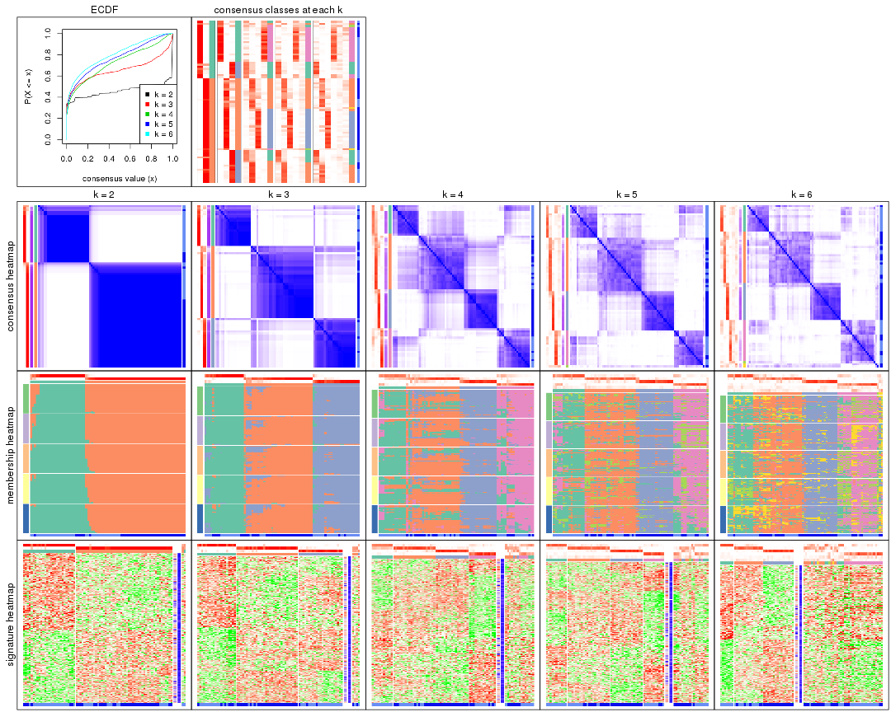
The plots are:
k and the heatmap of
predicted classes for each k.k.k.k.All the plots in panels can be made by individual functions and they are plotted later in this section.
select_partition_number() produces several plots showing different
statistics for choosing “optimized” k. There are following statistics:
k;k, the area increased is defined as \(A_k - A_{k-1}\).The detailed explanations of these statistics can be found in the cola vignette.
Generally speaking, lower PAC score, higher mean silhouette score or higher
concordance corresponds to better partition. Rand index and Jaccard index
measure how similar the current partition is compared to partition with k-1.
If they are too similar, we won't accept k is better than k-1.
select_partition_number(res)
The numeric values for all these statistics can be obtained by get_stats().
get_stats(res)
#> k 1-PAC mean_silhouette concordance area_increased Rand Jaccard
#> 2 2 0.971 0.939 0.975 0.4592 0.537 0.537
#> 3 3 0.742 0.845 0.923 0.4283 0.725 0.524
#> 4 4 0.538 0.640 0.772 0.1129 0.766 0.438
#> 5 5 0.541 0.571 0.732 0.0569 0.971 0.889
#> 6 6 0.589 0.459 0.682 0.0450 0.933 0.755
suggest_best_k() suggests the best \(k\) based on these statistics. The rules are as follows:
suggest_best_k(res)
#> [1] 2
Following shows the table of the partitions (You need to click the show/hide
code output link to see it). The membership matrix (columns with name p*)
is inferred by
clue::cl_consensus()
function with the SE method. Basically the value in the membership matrix
represents the probability to belong to a certain group. The finall class
label for an item is determined with the group with highest probability it
belongs to.
In get_classes() function, the entropy is calculated from the membership
matrix and the silhouette score is calculated from the consensus matrix.
cbind(get_classes(res, k = 2), get_membership(res, k = 2))
#> class entropy silhouette p1 p2
#> GSM464697 2 0.0000 0.983 0.000 1.000
#> GSM464698 2 0.0000 0.983 0.000 1.000
#> GSM464699 2 0.0000 0.983 0.000 1.000
#> GSM464700 2 0.0000 0.983 0.000 1.000
#> GSM464701 2 0.0000 0.983 0.000 1.000
#> GSM464702 2 0.0000 0.983 0.000 1.000
#> GSM464703 2 0.0000 0.983 0.000 1.000
#> GSM464704 2 0.0000 0.983 0.000 1.000
#> GSM464705 1 0.0000 0.955 1.000 0.000
#> GSM464706 2 0.0000 0.983 0.000 1.000
#> GSM464707 2 0.3879 0.908 0.076 0.924
#> GSM464708 2 0.0000 0.983 0.000 1.000
#> GSM464709 2 0.0000 0.983 0.000 1.000
#> GSM464710 2 0.0000 0.983 0.000 1.000
#> GSM464711 2 0.0000 0.983 0.000 1.000
#> GSM464712 2 0.0000 0.983 0.000 1.000
#> GSM464713 2 0.0000 0.983 0.000 1.000
#> GSM464714 1 0.0000 0.955 1.000 0.000
#> GSM464715 2 0.0000 0.983 0.000 1.000
#> GSM464716 2 0.0000 0.983 0.000 1.000
#> GSM464717 2 0.0000 0.983 0.000 1.000
#> GSM464718 2 0.0000 0.983 0.000 1.000
#> GSM464719 2 0.0000 0.983 0.000 1.000
#> GSM464720 2 0.0000 0.983 0.000 1.000
#> GSM464721 1 0.0000 0.955 1.000 0.000
#> GSM464722 1 0.0000 0.955 1.000 0.000
#> GSM464723 1 0.0000 0.955 1.000 0.000
#> GSM464724 2 0.0000 0.983 0.000 1.000
#> GSM464725 2 0.0000 0.983 0.000 1.000
#> GSM464726 2 0.0000 0.983 0.000 1.000
#> GSM464727 1 0.8861 0.578 0.696 0.304
#> GSM464728 2 0.0000 0.983 0.000 1.000
#> GSM464729 2 0.0000 0.983 0.000 1.000
#> GSM464730 2 0.0000 0.983 0.000 1.000
#> GSM464731 2 0.0000 0.983 0.000 1.000
#> GSM464732 2 0.0000 0.983 0.000 1.000
#> GSM464733 2 0.0000 0.983 0.000 1.000
#> GSM464734 2 0.0000 0.983 0.000 1.000
#> GSM464735 2 0.0000 0.983 0.000 1.000
#> GSM464736 2 0.0000 0.983 0.000 1.000
#> GSM464658 1 0.0000 0.955 1.000 0.000
#> GSM464659 1 0.0000 0.955 1.000 0.000
#> GSM464660 1 0.0000 0.955 1.000 0.000
#> GSM464661 1 0.0000 0.955 1.000 0.000
#> GSM464662 2 0.2948 0.935 0.052 0.948
#> GSM464663 1 0.0000 0.955 1.000 0.000
#> GSM464664 2 0.0000 0.983 0.000 1.000
#> GSM464665 1 0.0000 0.955 1.000 0.000
#> GSM464666 1 0.0000 0.955 1.000 0.000
#> GSM464667 1 0.0000 0.955 1.000 0.000
#> GSM464668 1 0.0000 0.955 1.000 0.000
#> GSM464669 1 0.9983 0.117 0.524 0.476
#> GSM464670 1 0.0000 0.955 1.000 0.000
#> GSM464671 1 0.0000 0.955 1.000 0.000
#> GSM464672 1 0.7950 0.690 0.760 0.240
#> GSM464673 1 0.0000 0.955 1.000 0.000
#> GSM464674 1 0.0000 0.955 1.000 0.000
#> GSM464675 2 0.0672 0.976 0.008 0.992
#> GSM464676 1 0.3879 0.894 0.924 0.076
#> GSM464677 2 0.7219 0.738 0.200 0.800
#> GSM464678 1 0.3879 0.894 0.924 0.076
#> GSM464679 2 0.2236 0.950 0.036 0.964
#> GSM464680 2 0.0000 0.983 0.000 1.000
#> GSM464681 2 0.0000 0.983 0.000 1.000
#> GSM464682 2 0.0000 0.983 0.000 1.000
#> GSM464683 2 0.0000 0.983 0.000 1.000
#> GSM464684 2 0.0000 0.983 0.000 1.000
#> GSM464685 2 0.0000 0.983 0.000 1.000
#> GSM464686 2 0.0000 0.983 0.000 1.000
#> GSM464687 2 0.0000 0.983 0.000 1.000
#> GSM464688 2 0.0000 0.983 0.000 1.000
#> GSM464689 2 0.9754 0.267 0.408 0.592
#> GSM464690 2 0.0000 0.983 0.000 1.000
#> GSM464691 1 0.0000 0.955 1.000 0.000
#> GSM464692 2 0.0000 0.983 0.000 1.000
#> GSM464693 1 0.0000 0.955 1.000 0.000
#> GSM464694 1 0.0000 0.955 1.000 0.000
#> GSM464695 1 0.0000 0.955 1.000 0.000
#> GSM464696 1 0.0000 0.955 1.000 0.000
cbind(get_classes(res, k = 3), get_membership(res, k = 3))
#> class entropy silhouette p1 p2 p3
#> GSM464697 2 0.0237 0.895 0.000 0.996 0.004
#> GSM464698 2 0.2066 0.881 0.000 0.940 0.060
#> GSM464699 2 0.0237 0.895 0.000 0.996 0.004
#> GSM464700 2 0.6308 0.179 0.000 0.508 0.492
#> GSM464701 2 0.0237 0.895 0.000 0.996 0.004
#> GSM464702 2 0.1411 0.890 0.000 0.964 0.036
#> GSM464703 2 0.0237 0.895 0.000 0.996 0.004
#> GSM464704 2 0.0237 0.892 0.000 0.996 0.004
#> GSM464705 1 0.1267 0.922 0.972 0.024 0.004
#> GSM464706 3 0.0424 0.928 0.000 0.008 0.992
#> GSM464707 2 0.5623 0.557 0.280 0.716 0.004
#> GSM464708 2 0.0237 0.895 0.000 0.996 0.004
#> GSM464709 2 0.0892 0.893 0.000 0.980 0.020
#> GSM464710 2 0.0237 0.895 0.000 0.996 0.004
#> GSM464711 2 0.2356 0.876 0.000 0.928 0.072
#> GSM464712 3 0.4399 0.746 0.000 0.188 0.812
#> GSM464713 2 0.0237 0.895 0.000 0.996 0.004
#> GSM464714 1 0.0475 0.933 0.992 0.004 0.004
#> GSM464715 2 0.1411 0.890 0.000 0.964 0.036
#> GSM464716 2 0.2878 0.863 0.000 0.904 0.096
#> GSM464717 2 0.5291 0.697 0.000 0.732 0.268
#> GSM464718 2 0.3941 0.821 0.000 0.844 0.156
#> GSM464719 2 0.4399 0.792 0.000 0.812 0.188
#> GSM464720 2 0.6154 0.430 0.000 0.592 0.408
#> GSM464721 1 0.0000 0.936 1.000 0.000 0.000
#> GSM464722 1 0.2860 0.877 0.912 0.084 0.004
#> GSM464723 1 0.0000 0.936 1.000 0.000 0.000
#> GSM464724 2 0.1031 0.893 0.000 0.976 0.024
#> GSM464725 2 0.1399 0.876 0.028 0.968 0.004
#> GSM464726 2 0.0237 0.895 0.000 0.996 0.004
#> GSM464727 1 0.4805 0.764 0.812 0.176 0.012
#> GSM464728 2 0.0237 0.892 0.000 0.996 0.004
#> GSM464729 2 0.0237 0.892 0.000 0.996 0.004
#> GSM464730 2 0.0237 0.895 0.000 0.996 0.004
#> GSM464731 2 0.0983 0.884 0.016 0.980 0.004
#> GSM464732 2 0.0424 0.895 0.000 0.992 0.008
#> GSM464733 2 0.0983 0.884 0.016 0.980 0.004
#> GSM464734 2 0.0237 0.895 0.000 0.996 0.004
#> GSM464735 2 0.4178 0.807 0.000 0.828 0.172
#> GSM464736 3 0.1411 0.919 0.000 0.036 0.964
#> GSM464658 1 0.5859 0.515 0.656 0.000 0.344
#> GSM464659 1 0.0424 0.934 0.992 0.000 0.008
#> GSM464660 3 0.2066 0.885 0.060 0.000 0.940
#> GSM464661 1 0.0000 0.936 1.000 0.000 0.000
#> GSM464662 2 0.3889 0.862 0.032 0.884 0.084
#> GSM464663 1 0.1031 0.927 0.976 0.000 0.024
#> GSM464664 2 0.6295 0.250 0.000 0.528 0.472
#> GSM464665 1 0.0000 0.936 1.000 0.000 0.000
#> GSM464666 1 0.0000 0.936 1.000 0.000 0.000
#> GSM464667 1 0.0424 0.934 0.992 0.000 0.008
#> GSM464668 1 0.0237 0.935 0.996 0.000 0.004
#> GSM464669 3 0.0237 0.928 0.004 0.000 0.996
#> GSM464670 1 0.0237 0.935 0.996 0.000 0.004
#> GSM464671 3 0.1289 0.910 0.032 0.000 0.968
#> GSM464672 3 0.0237 0.928 0.004 0.000 0.996
#> GSM464673 3 0.6140 0.240 0.404 0.000 0.596
#> GSM464674 3 0.3941 0.769 0.156 0.000 0.844
#> GSM464675 3 0.0237 0.929 0.000 0.004 0.996
#> GSM464676 3 0.0747 0.921 0.016 0.000 0.984
#> GSM464677 3 0.0237 0.929 0.000 0.004 0.996
#> GSM464678 3 0.1031 0.916 0.024 0.000 0.976
#> GSM464679 3 0.2796 0.880 0.000 0.092 0.908
#> GSM464680 3 0.2796 0.879 0.000 0.092 0.908
#> GSM464681 3 0.0237 0.929 0.000 0.004 0.996
#> GSM464682 2 0.4796 0.759 0.000 0.780 0.220
#> GSM464683 3 0.3267 0.852 0.000 0.116 0.884
#> GSM464684 3 0.2959 0.871 0.000 0.100 0.900
#> GSM464685 3 0.1529 0.917 0.000 0.040 0.960
#> GSM464686 3 0.1289 0.921 0.000 0.032 0.968
#> GSM464687 2 0.5058 0.730 0.000 0.756 0.244
#> GSM464688 3 0.0237 0.929 0.000 0.004 0.996
#> GSM464689 3 0.0237 0.929 0.000 0.004 0.996
#> GSM464690 3 0.0237 0.929 0.000 0.004 0.996
#> GSM464691 1 0.4974 0.714 0.764 0.000 0.236
#> GSM464692 3 0.0237 0.929 0.000 0.004 0.996
#> GSM464693 1 0.3816 0.826 0.852 0.000 0.148
#> GSM464694 1 0.0000 0.936 1.000 0.000 0.000
#> GSM464695 1 0.0000 0.936 1.000 0.000 0.000
#> GSM464696 1 0.2711 0.884 0.912 0.000 0.088
cbind(get_classes(res, k = 4), get_membership(res, k = 4))
#> class entropy silhouette p1 p2 p3 p4
#> GSM464697 3 0.1356 0.88198 0.008 0.032 0.960 0.000
#> GSM464698 2 0.5772 0.62738 0.116 0.708 0.176 0.000
#> GSM464699 3 0.2450 0.89085 0.016 0.072 0.912 0.000
#> GSM464700 2 0.3612 0.72171 0.044 0.856 0.100 0.000
#> GSM464701 3 0.1824 0.89192 0.004 0.060 0.936 0.000
#> GSM464702 3 0.3280 0.86238 0.016 0.124 0.860 0.000
#> GSM464703 3 0.1543 0.87935 0.008 0.032 0.956 0.004
#> GSM464704 3 0.1545 0.88746 0.008 0.040 0.952 0.000
#> GSM464705 4 0.6952 0.58999 0.200 0.052 0.088 0.660
#> GSM464706 2 0.2665 0.67920 0.088 0.900 0.008 0.004
#> GSM464707 4 0.9352 0.14662 0.184 0.132 0.268 0.416
#> GSM464708 3 0.2773 0.87340 0.004 0.116 0.880 0.000
#> GSM464709 3 0.6130 0.23684 0.052 0.400 0.548 0.000
#> GSM464710 3 0.2589 0.87320 0.000 0.116 0.884 0.000
#> GSM464711 3 0.4163 0.78340 0.020 0.188 0.792 0.000
#> GSM464712 2 0.2222 0.70735 0.056 0.928 0.008 0.008
#> GSM464713 3 0.2376 0.89204 0.016 0.068 0.916 0.000
#> GSM464714 4 0.5454 0.65196 0.168 0.016 0.064 0.752
#> GSM464715 3 0.3485 0.86380 0.028 0.116 0.856 0.000
#> GSM464716 2 0.5549 0.56870 0.048 0.672 0.280 0.000
#> GSM464717 2 0.2859 0.73201 0.008 0.880 0.112 0.000
#> GSM464718 2 0.4356 0.72247 0.064 0.812 0.124 0.000
#> GSM464719 2 0.3108 0.73313 0.016 0.872 0.112 0.000
#> GSM464720 2 0.5646 0.66386 0.088 0.708 0.204 0.000
#> GSM464721 4 0.0672 0.75178 0.008 0.000 0.008 0.984
#> GSM464722 4 0.7327 0.56325 0.200 0.028 0.160 0.612
#> GSM464723 4 0.2699 0.74337 0.028 0.000 0.068 0.904
#> GSM464724 3 0.5778 0.39438 0.040 0.356 0.604 0.000
#> GSM464725 3 0.1388 0.84167 0.012 0.000 0.960 0.028
#> GSM464726 3 0.1940 0.89083 0.000 0.076 0.924 0.000
#> GSM464727 2 0.8423 0.10708 0.228 0.416 0.028 0.328
#> GSM464728 3 0.1007 0.86496 0.008 0.008 0.976 0.008
#> GSM464729 3 0.1489 0.88917 0.004 0.044 0.952 0.000
#> GSM464730 3 0.2053 0.89102 0.004 0.072 0.924 0.000
#> GSM464731 3 0.1247 0.85563 0.012 0.004 0.968 0.016
#> GSM464732 2 0.7022 0.55903 0.236 0.628 0.108 0.028
#> GSM464733 2 0.9079 0.28924 0.228 0.436 0.248 0.088
#> GSM464734 2 0.7296 0.31992 0.172 0.508 0.320 0.000
#> GSM464735 2 0.6327 0.11281 0.060 0.496 0.444 0.000
#> GSM464736 2 0.3404 0.68025 0.104 0.864 0.032 0.000
#> GSM464658 4 0.7423 -0.03599 0.404 0.168 0.000 0.428
#> GSM464659 4 0.3272 0.72271 0.128 0.004 0.008 0.860
#> GSM464660 1 0.6015 0.76866 0.652 0.268 0.000 0.080
#> GSM464661 4 0.1229 0.74980 0.020 0.004 0.008 0.968
#> GSM464662 2 0.6947 0.55565 0.228 0.640 0.032 0.100
#> GSM464663 4 0.4643 0.48913 0.344 0.000 0.000 0.656
#> GSM464664 2 0.3695 0.72628 0.048 0.872 0.060 0.020
#> GSM464665 4 0.1209 0.75615 0.032 0.004 0.000 0.964
#> GSM464666 4 0.3796 0.73611 0.096 0.000 0.056 0.848
#> GSM464667 4 0.4011 0.65229 0.208 0.008 0.000 0.784
#> GSM464668 4 0.1975 0.75481 0.048 0.016 0.000 0.936
#> GSM464669 1 0.5199 0.77386 0.720 0.240 0.004 0.036
#> GSM464670 4 0.1576 0.75559 0.048 0.004 0.000 0.948
#> GSM464671 1 0.5817 0.77506 0.676 0.248 0.000 0.076
#> GSM464672 1 0.5174 0.77595 0.716 0.248 0.004 0.032
#> GSM464673 1 0.5581 -0.00645 0.532 0.020 0.000 0.448
#> GSM464674 1 0.5253 0.21751 0.624 0.016 0.000 0.360
#> GSM464675 1 0.4781 0.74849 0.660 0.336 0.000 0.004
#> GSM464676 1 0.5237 0.74057 0.628 0.356 0.000 0.016
#> GSM464677 2 0.3194 0.64720 0.052 0.888 0.004 0.056
#> GSM464678 1 0.5228 0.77108 0.664 0.312 0.000 0.024
#> GSM464679 2 0.3377 0.69293 0.068 0.884 0.016 0.032
#> GSM464680 2 0.2099 0.71036 0.040 0.936 0.020 0.004
#> GSM464681 1 0.4814 0.75782 0.676 0.316 0.008 0.000
#> GSM464682 2 0.5070 0.69479 0.060 0.748 0.192 0.000
#> GSM464683 2 0.2563 0.69655 0.072 0.908 0.020 0.000
#> GSM464684 2 0.4188 0.67938 0.112 0.824 0.064 0.000
#> GSM464685 2 0.2522 0.69190 0.076 0.908 0.016 0.000
#> GSM464686 2 0.3205 0.67799 0.104 0.872 0.024 0.000
#> GSM464687 2 0.3421 0.73080 0.044 0.868 0.088 0.000
#> GSM464688 1 0.4905 0.72388 0.632 0.364 0.000 0.004
#> GSM464689 1 0.5652 0.75702 0.624 0.344 0.004 0.028
#> GSM464690 1 0.5517 0.71157 0.648 0.316 0.036 0.000
#> GSM464691 1 0.5928 -0.13099 0.508 0.036 0.000 0.456
#> GSM464692 2 0.5158 -0.33364 0.472 0.524 0.004 0.000
#> GSM464693 4 0.5989 0.32096 0.400 0.044 0.000 0.556
#> GSM464694 4 0.1661 0.75404 0.052 0.000 0.004 0.944
#> GSM464695 4 0.1824 0.75259 0.060 0.000 0.004 0.936
#> GSM464696 4 0.5075 0.45524 0.344 0.012 0.000 0.644
cbind(get_classes(res, k = 5), get_membership(res, k = 5))
#> class entropy silhouette p1 p2 p3 p4 p5
#> GSM464697 3 0.165 0.82252 0.004 0.028 0.944 0.000 0.024
#> GSM464698 2 0.524 0.68186 0.052 0.748 0.120 0.004 0.076
#> GSM464699 3 0.348 0.78320 0.016 0.060 0.852 0.000 0.072
#> GSM464700 2 0.523 0.68169 0.076 0.744 0.064 0.000 0.116
#> GSM464701 3 0.108 0.82739 0.000 0.028 0.964 0.000 0.008
#> GSM464702 3 0.302 0.78155 0.012 0.116 0.860 0.000 0.012
#> GSM464703 3 0.146 0.81702 0.004 0.016 0.952 0.000 0.028
#> GSM464704 3 0.172 0.81553 0.000 0.020 0.936 0.000 0.044
#> GSM464705 4 0.636 -0.00325 0.004 0.108 0.020 0.568 0.300
#> GSM464706 2 0.483 0.65424 0.208 0.720 0.008 0.000 0.064
#> GSM464707 5 0.894 0.00000 0.032 0.192 0.176 0.232 0.368
#> GSM464708 3 0.269 0.81420 0.008 0.068 0.892 0.000 0.032
#> GSM464709 3 0.547 0.19982 0.008 0.396 0.548 0.000 0.048
#> GSM464710 3 0.204 0.81924 0.004 0.064 0.920 0.000 0.012
#> GSM464711 3 0.439 0.65573 0.024 0.204 0.752 0.000 0.020
#> GSM464712 2 0.521 0.67201 0.092 0.744 0.020 0.012 0.132
#> GSM464713 3 0.365 0.76336 0.012 0.052 0.836 0.000 0.100
#> GSM464714 4 0.569 0.18687 0.008 0.064 0.012 0.632 0.284
#> GSM464715 3 0.292 0.81027 0.016 0.080 0.880 0.000 0.024
#> GSM464716 2 0.719 0.51200 0.124 0.560 0.196 0.000 0.120
#> GSM464717 2 0.473 0.69465 0.124 0.772 0.036 0.000 0.068
#> GSM464718 2 0.496 0.65471 0.040 0.756 0.052 0.004 0.148
#> GSM464719 2 0.446 0.71094 0.116 0.792 0.052 0.000 0.040
#> GSM464720 2 0.702 0.52246 0.136 0.588 0.148 0.000 0.128
#> GSM464721 4 0.179 0.63502 0.016 0.004 0.000 0.936 0.044
#> GSM464722 4 0.660 -0.09898 0.000 0.064 0.068 0.528 0.340
#> GSM464723 4 0.407 0.62687 0.036 0.000 0.020 0.800 0.144
#> GSM464724 3 0.576 0.12804 0.008 0.404 0.520 0.000 0.068
#> GSM464725 3 0.277 0.74399 0.004 0.004 0.884 0.020 0.088
#> GSM464726 3 0.157 0.82655 0.000 0.036 0.944 0.000 0.020
#> GSM464727 2 0.711 0.11660 0.008 0.532 0.032 0.204 0.224
#> GSM464728 3 0.232 0.79457 0.008 0.012 0.912 0.004 0.064
#> GSM464729 3 0.136 0.82705 0.004 0.028 0.956 0.000 0.012
#> GSM464730 3 0.282 0.79514 0.008 0.024 0.880 0.000 0.088
#> GSM464731 3 0.218 0.77141 0.004 0.000 0.908 0.008 0.080
#> GSM464732 2 0.539 0.59644 0.016 0.736 0.076 0.028 0.144
#> GSM464733 2 0.785 0.26415 0.036 0.500 0.244 0.052 0.168
#> GSM464734 2 0.751 0.31816 0.044 0.488 0.288 0.016 0.164
#> GSM464735 2 0.718 0.39450 0.108 0.520 0.280 0.000 0.092
#> GSM464736 2 0.499 0.69695 0.112 0.760 0.052 0.000 0.076
#> GSM464658 1 0.753 -0.12030 0.372 0.024 0.008 0.340 0.256
#> GSM464659 4 0.380 0.66788 0.092 0.004 0.000 0.820 0.084
#> GSM464660 1 0.389 0.67189 0.828 0.072 0.000 0.080 0.020
#> GSM464661 4 0.383 0.54505 0.004 0.024 0.000 0.784 0.188
#> GSM464662 2 0.497 0.55190 0.000 0.720 0.028 0.044 0.208
#> GSM464663 4 0.471 0.44229 0.344 0.004 0.000 0.632 0.020
#> GSM464664 2 0.357 0.67431 0.004 0.848 0.048 0.012 0.088
#> GSM464665 4 0.261 0.68485 0.048 0.004 0.000 0.896 0.052
#> GSM464666 4 0.357 0.67569 0.104 0.000 0.000 0.828 0.068
#> GSM464667 4 0.463 0.58295 0.252 0.004 0.000 0.704 0.040
#> GSM464668 4 0.315 0.68286 0.064 0.016 0.000 0.872 0.048
#> GSM464669 1 0.491 0.63125 0.776 0.060 0.004 0.068 0.092
#> GSM464670 4 0.305 0.67795 0.044 0.008 0.000 0.872 0.076
#> GSM464671 1 0.376 0.67837 0.836 0.084 0.000 0.060 0.020
#> GSM464672 1 0.505 0.63500 0.760 0.072 0.000 0.072 0.096
#> GSM464673 1 0.504 -0.03463 0.512 0.000 0.000 0.456 0.032
#> GSM464674 1 0.584 0.14290 0.532 0.004 0.000 0.376 0.088
#> GSM464675 1 0.404 0.64726 0.784 0.156 0.000 0.000 0.060
#> GSM464676 1 0.479 0.63698 0.732 0.188 0.000 0.008 0.072
#> GSM464677 2 0.426 0.68950 0.092 0.808 0.008 0.012 0.080
#> GSM464678 1 0.387 0.66564 0.808 0.132 0.000 0.004 0.056
#> GSM464679 2 0.379 0.63911 0.004 0.832 0.024 0.028 0.112
#> GSM464680 2 0.454 0.68015 0.144 0.768 0.012 0.000 0.076
#> GSM464681 1 0.348 0.66071 0.824 0.136 0.000 0.000 0.040
#> GSM464682 2 0.519 0.69429 0.072 0.748 0.112 0.000 0.068
#> GSM464683 2 0.461 0.71136 0.096 0.788 0.048 0.000 0.068
#> GSM464684 2 0.532 0.69085 0.148 0.728 0.048 0.000 0.076
#> GSM464685 2 0.424 0.69552 0.168 0.780 0.020 0.000 0.032
#> GSM464686 2 0.501 0.69434 0.136 0.752 0.044 0.000 0.068
#> GSM464687 2 0.482 0.71032 0.092 0.776 0.064 0.000 0.068
#> GSM464688 1 0.341 0.66560 0.824 0.144 0.000 0.000 0.032
#> GSM464689 1 0.652 0.56755 0.644 0.112 0.004 0.084 0.156
#> GSM464690 1 0.562 0.54655 0.676 0.164 0.004 0.008 0.148
#> GSM464691 1 0.621 -0.00667 0.488 0.012 0.004 0.412 0.084
#> GSM464692 1 0.573 0.24842 0.560 0.340 0.000 0.000 0.100
#> GSM464693 4 0.637 0.31940 0.364 0.012 0.008 0.520 0.096
#> GSM464694 4 0.232 0.68609 0.068 0.000 0.000 0.904 0.028
#> GSM464695 4 0.282 0.69068 0.096 0.000 0.000 0.872 0.032
#> GSM464696 4 0.578 0.45252 0.316 0.012 0.000 0.592 0.080
cbind(get_classes(res, k = 6), get_membership(res, k = 6))
#> class entropy silhouette p1 p2 p3 p4 p5 p6
#> GSM464697 3 0.141 0.80330 0.000 0.004 0.944 0.000 0.008 0.044
#> GSM464698 2 0.393 0.62087 0.012 0.816 0.080 0.000 0.052 0.040
#> GSM464699 3 0.301 0.76749 0.000 0.032 0.864 0.000 0.036 0.068
#> GSM464700 2 0.588 0.53945 0.064 0.636 0.068 0.000 0.020 0.212
#> GSM464701 3 0.158 0.80496 0.000 0.012 0.940 0.000 0.036 0.012
#> GSM464702 3 0.261 0.77025 0.000 0.068 0.884 0.000 0.032 0.016
#> GSM464703 3 0.238 0.78723 0.004 0.004 0.892 0.000 0.020 0.080
#> GSM464704 3 0.176 0.80138 0.000 0.012 0.928 0.000 0.052 0.008
#> GSM464705 4 0.623 0.20169 0.000 0.092 0.012 0.460 0.036 0.400
#> GSM464706 1 0.658 -0.16408 0.448 0.364 0.008 0.000 0.048 0.132
#> GSM464707 6 0.736 0.37339 0.024 0.088 0.176 0.112 0.044 0.556
#> GSM464708 3 0.155 0.80149 0.000 0.020 0.940 0.000 0.004 0.036
#> GSM464709 3 0.672 -0.03053 0.028 0.328 0.500 0.004 0.056 0.084
#> GSM464710 3 0.184 0.80828 0.004 0.020 0.932 0.000 0.032 0.012
#> GSM464711 3 0.556 0.31599 0.004 0.268 0.616 0.000 0.052 0.060
#> GSM464712 2 0.536 0.57796 0.144 0.696 0.000 0.008 0.064 0.088
#> GSM464713 3 0.401 0.62916 0.012 0.020 0.756 0.000 0.012 0.200
#> GSM464714 4 0.520 0.28721 0.000 0.032 0.000 0.560 0.040 0.368
#> GSM464715 3 0.221 0.79670 0.008 0.016 0.912 0.000 0.012 0.052
#> GSM464716 6 0.817 0.37478 0.268 0.136 0.264 0.000 0.040 0.292
#> GSM464717 2 0.721 0.14334 0.344 0.388 0.040 0.000 0.032 0.196
#> GSM464718 2 0.630 0.42073 0.088 0.556 0.040 0.004 0.020 0.292
#> GSM464719 2 0.658 0.43525 0.232 0.536 0.044 0.000 0.016 0.172
#> GSM464720 2 0.743 0.37257 0.080 0.512 0.160 0.004 0.052 0.192
#> GSM464721 4 0.327 0.43486 0.000 0.000 0.000 0.820 0.060 0.120
#> GSM464722 4 0.684 0.16105 0.000 0.028 0.036 0.428 0.140 0.368
#> GSM464723 4 0.434 0.35437 0.000 0.004 0.004 0.736 0.176 0.080
#> GSM464724 2 0.628 0.14837 0.000 0.460 0.372 0.000 0.120 0.048
#> GSM464725 3 0.401 0.66439 0.004 0.000 0.768 0.000 0.124 0.104
#> GSM464726 3 0.212 0.79844 0.000 0.020 0.908 0.000 0.064 0.008
#> GSM464727 2 0.594 0.44953 0.016 0.656 0.004 0.132 0.056 0.136
#> GSM464728 3 0.312 0.76743 0.000 0.016 0.848 0.000 0.096 0.040
#> GSM464729 3 0.215 0.79874 0.004 0.008 0.912 0.000 0.020 0.056
#> GSM464730 3 0.401 0.73570 0.020 0.016 0.804 0.000 0.100 0.060
#> GSM464731 3 0.320 0.74399 0.000 0.004 0.836 0.000 0.092 0.068
#> GSM464732 2 0.339 0.61917 0.004 0.856 0.028 0.012 0.056 0.044
#> GSM464733 2 0.618 0.44855 0.000 0.632 0.136 0.020 0.136 0.076
#> GSM464734 2 0.695 0.37555 0.028 0.544 0.200 0.008 0.168 0.052
#> GSM464735 2 0.767 0.10392 0.108 0.424 0.300 0.000 0.060 0.108
#> GSM464736 2 0.546 0.60848 0.088 0.716 0.044 0.004 0.036 0.112
#> GSM464658 5 0.793 0.00000 0.192 0.060 0.004 0.308 0.368 0.068
#> GSM464659 4 0.430 0.42684 0.048 0.000 0.000 0.776 0.096 0.080
#> GSM464660 1 0.314 0.61474 0.848 0.004 0.000 0.076 0.068 0.004
#> GSM464661 4 0.437 0.40751 0.000 0.004 0.000 0.720 0.084 0.192
#> GSM464662 2 0.354 0.61134 0.012 0.832 0.008 0.020 0.016 0.112
#> GSM464663 4 0.512 0.19005 0.188 0.000 0.000 0.652 0.152 0.008
#> GSM464664 2 0.386 0.61836 0.020 0.808 0.028 0.008 0.008 0.128
#> GSM464665 4 0.419 0.37963 0.040 0.024 0.000 0.796 0.108 0.032
#> GSM464666 4 0.319 0.45273 0.036 0.000 0.000 0.852 0.076 0.036
#> GSM464667 4 0.464 0.23594 0.144 0.004 0.000 0.728 0.112 0.012
#> GSM464668 4 0.452 0.37935 0.044 0.036 0.000 0.784 0.084 0.052
#> GSM464669 1 0.531 0.48527 0.668 0.000 0.000 0.092 0.192 0.048
#> GSM464670 4 0.449 0.36973 0.036 0.024 0.000 0.776 0.112 0.052
#> GSM464671 1 0.288 0.62713 0.864 0.008 0.000 0.068 0.060 0.000
#> GSM464672 1 0.514 0.45196 0.672 0.000 0.000 0.116 0.188 0.024
#> GSM464673 4 0.610 -0.02451 0.348 0.000 0.000 0.464 0.172 0.016
#> GSM464674 4 0.649 0.00265 0.280 0.000 0.000 0.456 0.232 0.032
#> GSM464675 1 0.290 0.63494 0.868 0.020 0.000 0.000 0.040 0.072
#> GSM464676 1 0.348 0.63436 0.848 0.056 0.000 0.024 0.052 0.020
#> GSM464677 2 0.555 0.50597 0.248 0.620 0.000 0.008 0.020 0.104
#> GSM464678 1 0.289 0.64984 0.880 0.012 0.000 0.020 0.036 0.052
#> GSM464679 2 0.381 0.60392 0.016 0.800 0.008 0.020 0.008 0.148
#> GSM464680 2 0.634 0.32538 0.360 0.484 0.008 0.000 0.052 0.096
#> GSM464681 1 0.276 0.64557 0.876 0.016 0.000 0.000 0.040 0.068
#> GSM464682 2 0.528 0.57196 0.040 0.716 0.144 0.000 0.044 0.056
#> GSM464683 2 0.326 0.64099 0.088 0.852 0.016 0.000 0.024 0.020
#> GSM464684 2 0.531 0.60735 0.172 0.700 0.056 0.000 0.028 0.044
#> GSM464685 2 0.453 0.55733 0.264 0.680 0.000 0.000 0.020 0.036
#> GSM464686 2 0.450 0.62648 0.160 0.752 0.028 0.000 0.012 0.048
#> GSM464687 2 0.374 0.63615 0.100 0.820 0.036 0.000 0.036 0.008
#> GSM464688 1 0.365 0.64342 0.836 0.036 0.000 0.040 0.072 0.016
#> GSM464689 1 0.661 0.14605 0.576 0.068 0.000 0.092 0.224 0.040
#> GSM464690 1 0.705 0.44996 0.584 0.112 0.012 0.048 0.152 0.092
#> GSM464691 4 0.647 -0.09471 0.224 0.000 0.004 0.440 0.312 0.020
#> GSM464692 1 0.488 0.49157 0.704 0.200 0.000 0.004 0.052 0.040
#> GSM464693 4 0.620 -0.29545 0.220 0.012 0.000 0.516 0.244 0.008
#> GSM464694 4 0.200 0.47008 0.012 0.000 0.000 0.920 0.028 0.040
#> GSM464695 4 0.219 0.43233 0.040 0.000 0.000 0.900 0.060 0.000
#> GSM464696 4 0.653 -0.31739 0.200 0.024 0.000 0.548 0.196 0.032
Heatmaps for the consensus matrix. It visualizes the probability of two samples to be in a same group.
consensus_heatmap(res, k = 2)
consensus_heatmap(res, k = 3)
consensus_heatmap(res, k = 4)
consensus_heatmap(res, k = 5)
consensus_heatmap(res, k = 6)
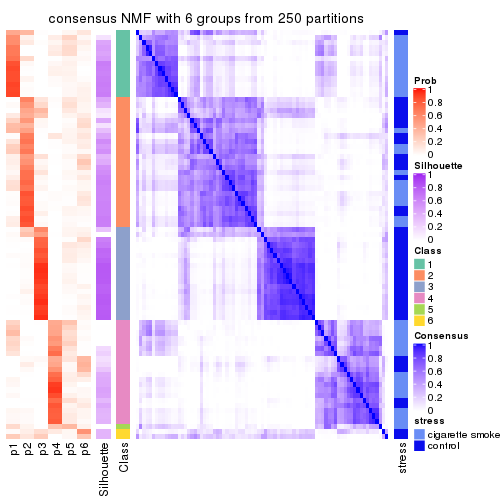
Heatmaps for the membership of samples in all partitions to see how consistent they are:
membership_heatmap(res, k = 2)
membership_heatmap(res, k = 3)
membership_heatmap(res, k = 4)
membership_heatmap(res, k = 5)
membership_heatmap(res, k = 6)

As soon as we have had the classes for columns, we can look for signatures which are significantly different between classes which can be candidate marks for certain classes. Following are the heatmaps for signatures.
Signature heatmaps where rows are scaled:
get_signatures(res, k = 2)
get_signatures(res, k = 3)
get_signatures(res, k = 4)
get_signatures(res, k = 5)
get_signatures(res, k = 6)
Signature heatmaps where rows are not scaled:
get_signatures(res, k = 2, scale_rows = FALSE)
get_signatures(res, k = 3, scale_rows = FALSE)
get_signatures(res, k = 4, scale_rows = FALSE)
get_signatures(res, k = 5, scale_rows = FALSE)
get_signatures(res, k = 6, scale_rows = FALSE)
Compare the overlap of signatures from different k:
compare_signatures(res)
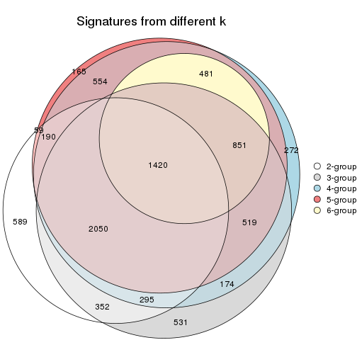
get_signature() returns a data frame invisibly. TO get the list of signatures, the function
call should be assigned to a variable explicitly. In following code, if plot argument is set
to FALSE, no heatmap is plotted while only the differential analysis is performed.
# code only for demonstration
tb = get_signature(res, k = ..., plot = FALSE)
An example of the output of tb is:
#> which_row fdr mean_1 mean_2 scaled_mean_1 scaled_mean_2 km
#> 1 38 0.042760348 8.373488 9.131774 -0.5533452 0.5164555 1
#> 2 40 0.018707592 7.106213 8.469186 -0.6173731 0.5762149 1
#> 3 55 0.019134737 10.221463 11.207825 -0.6159697 0.5749050 1
#> 4 59 0.006059896 5.921854 7.869574 -0.6899429 0.6439467 1
#> 5 60 0.018055526 8.928898 10.211722 -0.6204761 0.5791110 1
#> 6 98 0.009384629 15.714769 14.887706 0.6635654 -0.6193277 2
...
The columns in tb are:
which_row: row indices corresponding to the input matrix.fdr: FDR for the differential test. mean_x: The mean value in group x.scaled_mean_x: The mean value in group x after rows are scaled.km: Row groups if k-means clustering is applied to rows.UMAP plot which shows how samples are separated.
dimension_reduction(res, k = 2, method = "UMAP")
dimension_reduction(res, k = 3, method = "UMAP")
dimension_reduction(res, k = 4, method = "UMAP")

dimension_reduction(res, k = 5, method = "UMAP")
dimension_reduction(res, k = 6, method = "UMAP")
Following heatmap shows how subgroups are split when increasing k:
collect_classes(res)
Test correlation between subgroups and known annotations. If the known annotation is numeric, one-way ANOVA test is applied, and if the known annotation is discrete, chi-squared contingency table test is applied.
test_to_known_factors(res)
#> n stress(p) k
#> ATC:NMF 77 3.21e-04 2
#> ATC:NMF 75 9.79e-09 3
#> ATC:NMF 64 2.12e-06 4
#> ATC:NMF 61 4.21e-07 5
#> ATC:NMF 38 4.74e-06 6
If matrix rows can be associated to genes, consider to use functional_enrichment(res,
...) to perform function enrichment for the signature genes. See this vignette for more detailed explanations.
sessionInfo()
#> R version 3.6.0 (2019-04-26)
#> Platform: x86_64-pc-linux-gnu (64-bit)
#> Running under: CentOS Linux 7 (Core)
#>
#> Matrix products: default
#> BLAS: /usr/lib64/libblas.so.3.4.2
#> LAPACK: /usr/lib64/liblapack.so.3.4.2
#>
#> locale:
#> [1] LC_CTYPE=en_GB.UTF-8 LC_NUMERIC=C LC_TIME=en_GB.UTF-8
#> [4] LC_COLLATE=en_GB.UTF-8 LC_MONETARY=en_GB.UTF-8 LC_MESSAGES=en_GB.UTF-8
#> [7] LC_PAPER=en_GB.UTF-8 LC_NAME=C LC_ADDRESS=C
#> [10] LC_TELEPHONE=C LC_MEASUREMENT=en_GB.UTF-8 LC_IDENTIFICATION=C
#>
#> attached base packages:
#> [1] grid stats graphics grDevices utils datasets methods base
#>
#> other attached packages:
#> [1] genefilter_1.66.0 ComplexHeatmap_2.3.1 markdown_1.1 knitr_1.26
#> [5] GetoptLong_0.1.7 cola_1.3.2
#>
#> loaded via a namespace (and not attached):
#> [1] circlize_0.4.8 shape_1.4.4 xfun_0.11 slam_0.1-46
#> [5] lattice_0.20-38 splines_3.6.0 colorspace_1.4-1 vctrs_0.2.0
#> [9] stats4_3.6.0 blob_1.2.0 XML_3.98-1.20 survival_2.44-1.1
#> [13] rlang_0.4.2 pillar_1.4.2 DBI_1.0.0 BiocGenerics_0.30.0
#> [17] bit64_0.9-7 RColorBrewer_1.1-2 matrixStats_0.55.0 stringr_1.4.0
#> [21] GlobalOptions_0.1.1 evaluate_0.14 memoise_1.1.0 Biobase_2.44.0
#> [25] IRanges_2.18.3 parallel_3.6.0 AnnotationDbi_1.46.1 highr_0.8
#> [29] Rcpp_1.0.3 xtable_1.8-4 backports_1.1.5 S4Vectors_0.22.1
#> [33] annotate_1.62.0 skmeans_0.2-11 bit_1.1-14 microbenchmark_1.4-7
#> [37] brew_1.0-6 impute_1.58.0 rjson_0.2.20 png_0.1-7
#> [41] digest_0.6.23 stringi_1.4.3 polyclip_1.10-0 clue_0.3-57
#> [45] tools_3.6.0 bitops_1.0-6 magrittr_1.5 eulerr_6.0.0
#> [49] RCurl_1.95-4.12 RSQLite_2.1.4 tibble_2.1.3 cluster_2.1.0
#> [53] crayon_1.3.4 pkgconfig_2.0.3 zeallot_0.1.0 Matrix_1.2-17
#> [57] xml2_1.2.2 httr_1.4.1 R6_2.4.1 mclust_5.4.5
#> [61] compiler_3.6.0